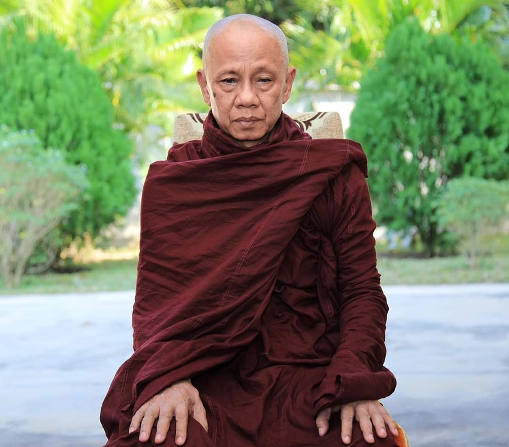
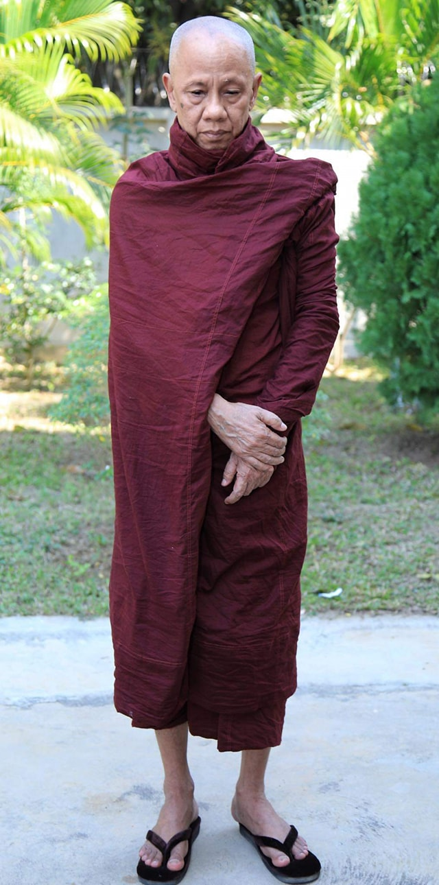
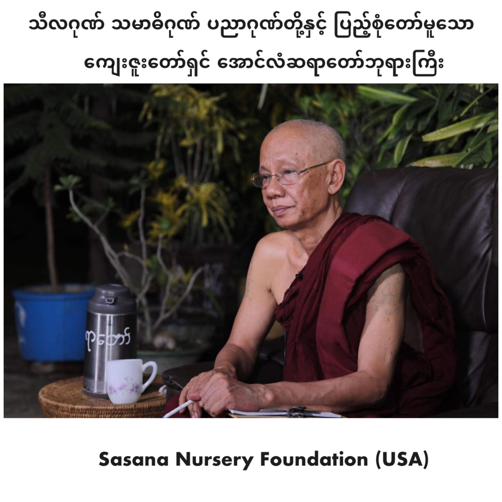
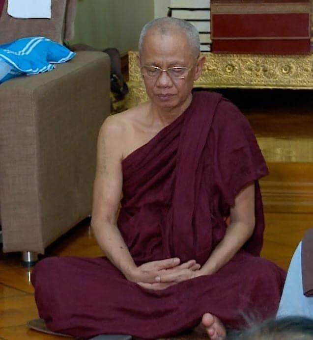
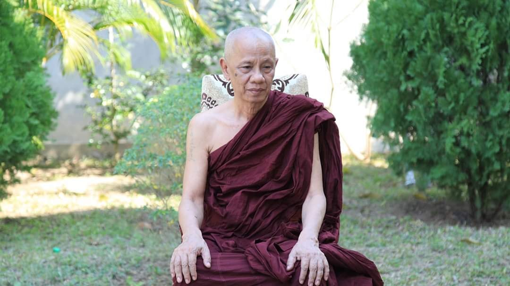
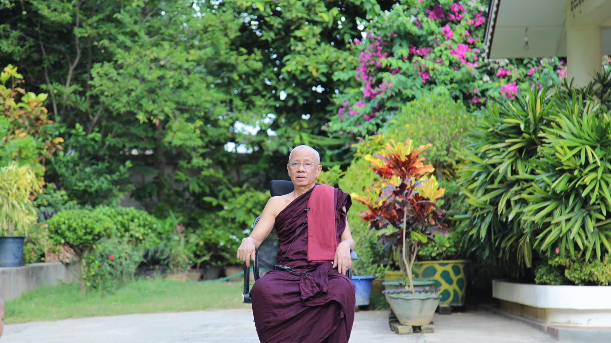
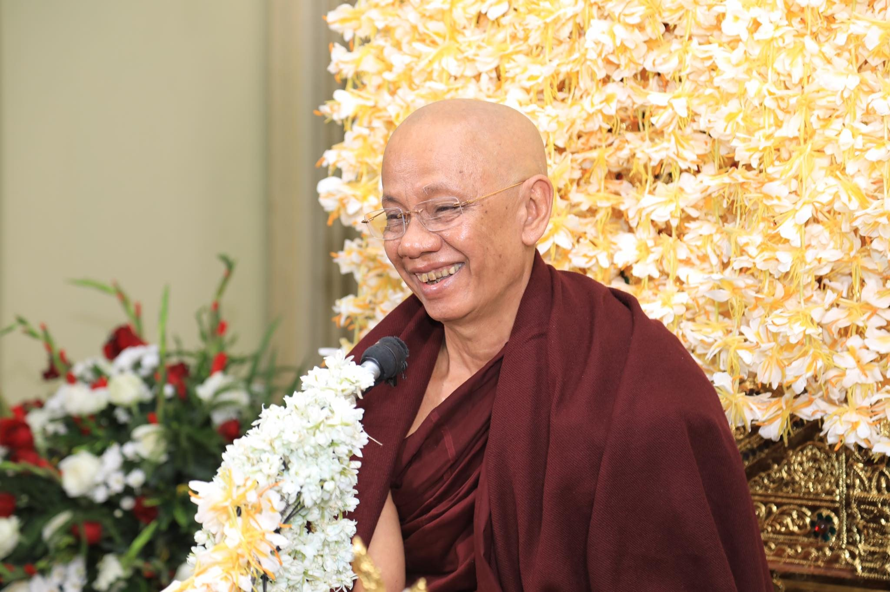
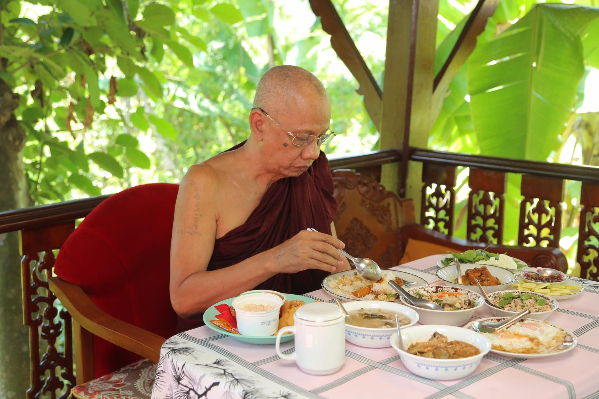
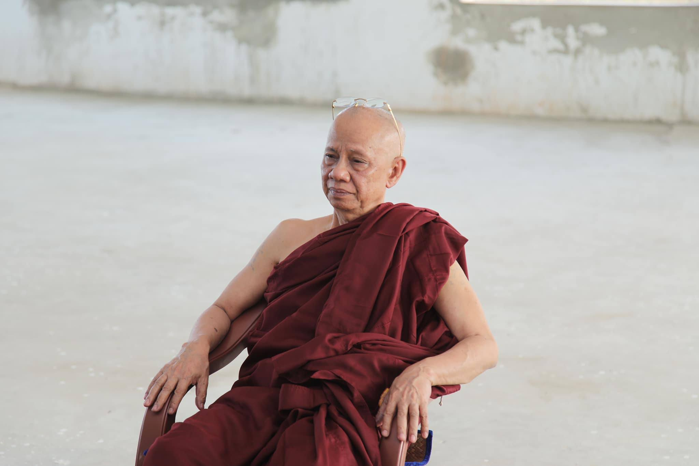
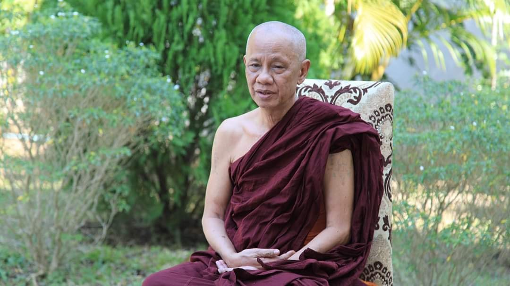

神聖的追尋
A Noble Search
– Dhamma Talks By Venerable Sayadaw U Candima
尊者 鄔達摩長老Bhikkhu Uttamo
自緬甸語錄音帶譯為 英文
(參考用譯文)
特別聲明：本參考用譯文疏漏、錯繆難免，讀者應慎思明辨。僅供法友參考；並祈藉此拋磚引玉，眾法友能共襄盛舉，共同圓滿此譯事。 Nanda 謹識。
目次
導言 2
塔因古尊者 優‧鄔喀塔（Thae Inn Gu Sayadaw U Ukkaṭṭha） 3
前言 4
尊者優‧真帝馬（Sayadaw U Candima / Sandima） 7
高尚的探尋 17
崇高的尋覓 19
關於基礎禪修 145
基礎禪修 147
苦受與禪定 160
疼痛與定 162
Some reflections on samādhi: 185
對「禪定（samādhi）」的一些省思： 186
八正道與三學的關聯 186
一些關於定的省思： 187
Dealing with Pain in Samādhi Practice 189
處理禪定修行中的苦受 192
在定力修習中處理疼痛 195
關於安那般那禪定 222
關於安那般那念的定 225
如天秤般的三摩地 243
像定一樣的平衡 245
鑽石禪修法 282
金剛禪修 284
有分禪修法 294
有分禪修 297
Explanation on the bhavaṅga meditation 299
有分禪修的說明（Bhavaṅga Meditation） 302
關於有分禪修的解釋 306
After Samādhi, Develop Vipassanā 311
三摩地之後，開展觀智 314
定之後，修習觀 316
[ On living, dying and rebirth: 336
關於「生、死與再生」的一些省思： 337
[關於生、死與輪迴： 339
關於定與觀（Samādhi 與 Vipassanā）： 341
關於止與觀： 342
Differences between Samatha-yānika and vipassanā-yānika 342
止行者與觀行者的差異 345
止行者與觀行者之異同 347
A disciple of Mahākassapa—the power of the 4th rūpa-jhāna 349
Novice Uttara—the disciple of Sāriputta: the power of knowledge 350
On self-mortification and the spirits of the ancient monks 357
關於自我苦行與古代比丘的精神 360
關於苦行與古代僧侶的精神 361
附記 370
附錄 372
～～～～～ 374
後記 374
Balance samādhi and paññā. 377
平衡定與慧 380
---------------------------- 382
平衡定與慧 382
平衡定與慧 385
On Samādhi and Pain by Teachers 394
附錄一：關於定與痛的導師教導 397
莫哥系統的一位導師開示： 402
莫哥老師： 403
Tha-thom Min-goon Sayadawgyi (Mahāsi Sayadaw’s teacher) 404
Sa-gaing Taung Mahāgandhāyon Sayadaw U Uttara (1858— 1919) 405
Tha-thom Min-goon Sayadawgyi（馬哈希尊者之導師）開示： 405
實皆省陶山大講堂尊者 U Uttara（1858–1919）開示： 406
實皆山大甘達勇尊者烏·烏塔拉（1858—1919）： 406
Loong Por Tate talked about Jit & Jy 409
Chan Master Hsuan Hua’s on Samādhi 410
關於「定」（Samādhi） 410
泰國森林傳統的龍坡塔尊者（Luang Por Tate Desaramsī） 411
心（Jy）與意（Jit）之辨 411
Ajahn Jayasāro 解說 Jy 與 Jit 的關係 412
華嚴聖寺 宣化上人（Master Hsuan Hua）談「定力」 412
論禪定 413
龍普帖的「佛陀」 414
龍普帖談論意與心 414
宣化上人論禪定 415
Some Explanations On the Practice 416
關於修行的一些說明 417
一、關於 mahāpallin（mahāpallaṅka） 417
二、關於「三階段的定」或「三個有分心」（three bhavaṅgas） 417
關鍵經典：MN 148《六六經》（Chachakka Sutta） 418
與提因谷尊者之差異 418
關於實修的一些解釋 419
Why did Buddha Dhamma disappear in India? 420
一些法的省思 423
佛教的觀點： 423
佛法為何在印度消失？ 423
渡海譬喻（自省故事） 424
一些佛法省思 426
佛教觀點： 426
為何佛陀的教法在印度消失了？ 426
You have to look for another one: 428
關於佛陀所教與未教的事 430
[女性多於男性： 430
你得另找一個： 431
Khin-gyi Pauk Became Disappointed 431
Khin-gyi Pauk 的失落 434
欽基包克感到失望 437
Right Samādhi and Insight in Sayadaw U Candima's Teaching 439
附錄二 442
U Candima 尊者教導中的正定與內觀 442
導言： 442
附錄二 446
禪師烏·詹迪瑪教導中的正定與觀慧 446
導言 446
靜止，流動的水 453
靜靜流動的水 455
禪定修習 457
1. The First Stage of Purification of The Mind (Cittavisuddhi) 470
A. Basic ānāpāna kammaṭṭhāna 472
(1) Asubha nimitta and 32 bodily parts of bone, etc 472
(2) Arriving at upacāra samādhi of the first jhāna 473
(3) The mental sign of breath column appears 473
(4) Buddha nimitta and others 474
心清淨第一階段（Cittavisuddhi） 474
(1) 出現不淨相與骨相： 476
(2) 近行定階段之體驗： 476
(3) 出現「氣柱相」： 477
(4) 出現佛相與其他景象： 477
1. 心清淨的第一階段（Cittavisuddhi） 477
A. 基本安那般那業處 478
(1) 不淨相和骨頭等三十二身分 478
(2) 達到初禪的近行定 479
(3) 呼吸柱的心理相出現 479
(4) 佛陀相和其他相 480
B. Basic vipassanā kammaṭṭhāna of the 32 body parts 480
🩻 B. 三十二身分之觀禪（Basic Vipassanā Kammaṭṭhāna of the 32 Body Parts） 481
B. 基本三十二身分毗婆舍那業處 483
修行之道 487
C. Basic vipassanā meditation on the four great elements 488
C. 基本四大元素毗婆舍那禪修 494
Discernment of the four elements free from the concepts of body parts 496
📘 觀四大而離於身分概念（Discernment of the Four Elements Free from the Concepts of Body Parts） 498
F. Mahāpallaṅka meditation or Diamond meditation 501
F. Mahāpallaṅka 禪修（或稱金剛禪） 503
F. Mahāpallaṅka 禪修（或稱「金剛禪」） 505
------------------------------ 508
💠 大金剛坐禪（Mahāpallaṅka Meditation / Diamond Meditation） 508
F. 大蓮花坐禪修或金剛坐（名業處） 510
Using diamond samādhi contemplate paramatā mind and form 512
From mahāpallaṅka to kāyanupassanā satipaṭṭhāna 513
Abandonment by knowledge at the first stage of purity of mind 514
Objects able to contemplate at this stage 515
Things not able to do or abandon at this stage 515
使用金剛三摩地觀照究竟名色 516
運用金剛定觀照勝義諦名色 518
從大蓮花坐到身隨觀念處 519
在心清淨的第一階段以智慧捨棄 520
此階段能夠觀照的對象 520
2. The Second Stage of Purification of The Mind 521
二、心清淨的第二階段 523
2. 淨化心靈的第二階段 525
The 2nd Stage of Purification / Keeping Away the Conceptual Objects 531
第二階段的心清淨 / 遠離概念所緣（第一種方法） 533
第二階段的淨化 / 遣除概念對象 (第一種方法) 534
Developing Samādhi With the Contemplation on Rises And Falls of Vedanā 545
Objects of Contemplation Able to Discern With the 2nd Samādhi 546
Phenomena Not Able to Abandon With the 2nd Samādhi 546
第二有分定尚未能捨離之現象： 547
以觀照感受（vedanā）的生滅來發展三摩地 (第二種方法) 547
透過第二三摩地無法捨棄的現象 548
3. The Third Stage of Purification of The Mind 548
三、心清淨的第三階段 552
3. 淨化心靈的第三階段 555
Comparison with the four vipers discourse 560
The abandonment of defilement at the 3rd stage of samādhi 561
與《四毒蛇喻經》的對照 563
第三階段定中所斷除之煩惱（Kilesa） 563
與四毒蛇譬喻的比較 566
Analysis of the three stages of purification of the mind 568
Three stages of bhavaṅga and its views 568
心清淨三階段之分析 570
三次有分與其觀照層次的比喻分析 570
三階段心靈淨化的分析 572
三種有分及其觀點 572
Three types of bhavaṅga three enemies and three coverings of concepts 573
三種有分、三種敵人與三重概念覆蓋 576
三種有分、三種敵人與三種概念覆蓋 580
Entering into right samādhi (sammā-samādhi) 583
發展觀智（Development of Insight） 584
進入「正定」（sammā-samādhi） 584
內觀的發展 586
進入正定（sammā-samādhi） 586
Contemplation of mind and matter in the Six Sets of Six Discourse 587
見清淨（Diṭṭhi-Visuddhi） 589
依《六六經》觀照名色 589
見清淨 592
《六六經》中名色的觀照 592
Contemplate on the Contemplative Knowledge 594
Contemplate from the skeleton to particle object 596
觀照觀智本身（Contemplate on the Contemplative Knowledge） 597
觀照心於取著世俗五欲概念時的過程 598
觀照「骷髏心像」之心所緣 599
從「骷髏所緣」轉向「微粒所緣」 601
觀照觀照之智 602
以對世俗感官概念的注意觀照心 602
觀照骨骼之心（法所緣） 603
從骨骼觀照到微粒對象 603
Contemplate the past mind objects 604
Contemplation on the future mind objects 605
The existence of the three worlds 607
觀照過去的心所緣 608
觀照未來的心所緣 609
三界的存在與觀智 611
觀照過去的心對象 612
觀照未來的心對象 613
三界的存有 614
The connection between internal and external worlds 615
Note on the existence of the internal world 617
內在與外在世界的連結 618
內在世界的存在與運作 620
內在世界與外在世界的連結 621
關於內在世界存在的註釋 622
Insight contemplation with the first and second bhavaṅga samādhi 623
U Candima's view on this point 626
此種止息並非源於： 627
U Candima 尊者在此處的重要觀點： 628
以第一和第二有分三摩地進行內觀 629
鄔金諦瑪尊者對此的觀點 630
Contemplation on mind contact and feeling with the body movements 631
觀照身體動作中的心接觸與覺受 633
觀照身體動作中的意觸和感受 635
Purification by Overcoming Doubt 637
Present supporting conditions for the cause of khandha 638
The arising of the mind process and its ending 638
Purification of the path and not-path 639
以抉擇緣起而得清淨 640
審察道與非道之清淨 642
度疑清淨（paccaya--pariggaha Ñāṇa） 643
蘊因的當前支持條件 643
心識過程的生起及其止息 643
道非道智清淨（SammasanaÑāṇa） 644
From the knowledge of equanimity toward path knowledge 645
Knowledge of conformity (Anuloma-ñāṇa) 646
道非道清淨 647
從行捨智至正道智之轉進： 647
隨順智（anuloma-ñāṇa） 648
道清淨 649
從對道智的行捨智 649
隨順智（Anuloma-ñāṇa） 650
The reason for fewer followers in Buddhism and the reason for easy disappearance 652
A simple experiment for one who disbelieves in the law of actions and its results 652
給不信業果之人的一個簡單實驗 655
佛教追隨者較少及容易消失的原因 657
Recommendation for reading: 661
結語 661
推薦閱讀資源 664
最後祝願 664
結論 664
推薦閱讀： 666
關於譯者 667
關於譯者 668
This is a book about two Burmese monks—Thae Inn Gu Sayadaw U Ukkaṭṭha and Sayadaw U Candima (Sandima). Both of them are well-known meditation teachers in Burma. Sayadaw U Ukkaṭṭha passed away in 1973 at the age of 60. Sayadaw U Candima is still alive and in his 70. Both of their lives are interesting and give us some Dhamma reflection. They are not scholar monk and even do not know much about the Buddha Dhamma. Before their practices they were just traditional Buddhists and like majority of Buddhists. They are different from the others; it is they have pāramīs from their past lives, strong saṃvega (sense of wise urgency) and can give up their lives for the Dhamma.
Thae Inn Gu Sayadaw U Ukkaṭṭha
Sayadaw U Ukkaṭṭha was born in 1913 in a village of Maw-be town not far from Rangoon (Yangon) on the way to Mingaladon Airport. He was named Moung Aung Tun by the parents. When he was young not interested in study and only has very basic education. According to his talk he was married twice and had a wife in his village and the other in Rangoon. He separated his time in these two places. During the time of farming, he stayed at his village. After the cultivation, he lived with the other wife in Rangoon. He lived his life as an alcoholic, gambler, a professional thug and robber. He spent some time in prison for his crimes.
At the age of 46, when he was in Rangoon, he went with two accomplices to rob a house at night. It seemed that the owner of the house knew their plans and waited for them with a long knife. When he was leading the others and entering the house and attached by the man inside. The knife fell on his head, and he fell down with his buttock on the floor. The man did not strike again, that they ran out for their lives. He was wearing a hat on that occasion, and it saved his life. This life-threatening incident let him have strong saṃvega. After healing his wounds, he returned to the village with his wife's book, which was about the life and practice of Soon Loon Sayadaw's. From that time on, he observed the nine precepts and confined himself to a room in the village monastery; he then diligently practiced meditation according to the book.
We can read about his life and practice in the following translation of his some Dhamma talks which include four talks here. The first talk had no date and place, but it seems to be at his Thae Inn Gu meditation center in Maw-be. It was requested by a lay disciple, and it took more than three hours long. It mentioned his life from young boy to until his practice up to arahant. The 2nd talk is in 1964 at University Dhammasāla and about the practice from stream enterer to arahant. The last two talks are in 1968 at Mye-nigon Dhammasāla. The first talk on the practice of becoming a sotāpanna and the other to become an arahant.
Sayadaw possessed a clear and good voice. Sometimes his talks were like reciting poems and had a smooth and continuous flow. He knows nothing about the Suttas, and he left it to the reader to decide whether some of his interpretations of the Dhamma are in accordance with the Suttas. Sayadaw talked the Dhamma according to his seeing and understanding.
本書講述的是兩位緬甸僧人——塔因古尊者優‧鄔喀塔（Thae Inn Gu Sayadaw U Ukkaṭṭha）與尊者優‧真帝馬（或譯：三帝馬，Sayadaw U Candima / Sandima）的故事。兩位皆是緬甸著名的禪修導師。優‧鄔喀塔尊者於1973年圓寂，享年六十歲；優‧真帝馬尊者目前仍健在，年逾七旬。他們的生命歷程各具特色，亦引發我們對佛法的省思。
他們並非學問型的僧人，甚至對佛陀的教法也所知不多。在修行之前，他們只是如同多數一般佛教徒那樣的傳統信仰者。然而，他們之所以與眾不同，是因為他們具備過去世所培植的波羅蜜（pāramī），並懷有強烈的「法怖畏」（saṃvega，對生死流轉的智慧警覺），甚至能為了佛法而犧牲自己的生命。
優‧鄔喀塔尊者於1913年出生在靠近仰光（現稱仰光）的茂比鎮（Maw-be）附近的一個村落，就位於通往明加拉頓機場的路上。父母為他取名為「昂吞」（Moung Aung Tun）。年幼時，他對學習毫無興趣，僅受過最基本的教育。
根據他自己的說法，他曾結過兩次婚，一位妻子在村裡，另一位在仰光。他在這兩地分配時間：耕作期間住在村裡，農事結束後則與仰光的妻子同住。他曾過著酗酒、賭博、甚至從事暴力與搶劫的生活，是一名職業流氓與罪犯，也因此曾被關進監獄服刑。
他46歲那年，在仰光時，與兩名同夥夜間前往一處住宅行竊。看來屋主早已得知他們的計劃，手持長刀守在屋內。當他領著同伴進屋時，被屋主襲擊，長刀砍在他的頭上，他當場跌坐在地。然而，屋主並未再補刀，他們得以逃命。他當時頭戴帽子，正好保住性命。這次與死神擦肩的經歷，激起了他強烈的法怖畏之心。傷癒後，他帶著妻子的書返回村中，那本書講述的是順隆尊者（Soon Loon Sayadaw）的生平與修行。
自此之後，他開始受持九戒，並閉關於村中寺院的一間房裡，依據書中的教導精進禪修。
關於他的生平與修行，可從以下幾篇法談譯文中一窺全貌。本書收錄了其中四篇開示。第一篇無明確日期與地點，推測應是在茂比的塔因古禪修中心，係由一位在家弟子請求所說，全場超過三小時。內容從他年幼時的生活談起，一直講到證得阿羅漢的修行歷程。第二篇開示於1964年在大學法堂（University Dhammasāla），內容講述從入流者（sotāpanna）到阿羅漢的修行過程。最後兩篇開示於1968年在緬儂（Mye-nigon）法堂，一篇關於如何成為入流者，另一篇則是如何證得阿羅漢。
尊者說法語調清晰悅耳，有時像在吟誦詩句般，聲音流暢綿延。他對經藏並無涉獵，因此他對佛法的詮釋是否符合佛經，則交由讀者自行判斷。他所說之法，皆根據自身的體驗與智慧所見。
～～～～～～～～～～～～～～～～～～～～～～～～～～～～～～～
本書介紹兩位緬甸僧侶——泰因谷尊者伍烏卡塔（Thae Inn Gu Sayadaw U Ukkaṭṭha）與尊者伍坎迪瑪（Sayadaw U Candima，又稱桑迪瑪）。他們兩位都是緬甸知名的禪修老師。尊者伍烏卡塔於一九七三年圓寂，享年六十歲。尊者伍坎迪瑪至今仍健在，已年逾七旬。他們兩位的人生都充滿興味，並能啟發我們對佛法的省思。他們並非學者型的僧侶，甚至對佛陀的教法所知不多。在修行之前，他們如同大多數的佛教徒一般，只是傳統的佛教信徒。他們與眾不同之處在於，他們具備過去生累積的波羅蜜（pāramīs）、強烈的厭離感（saṃvega，明智的急迫感），並且能夠為了佛法而捨棄生命。
尊者伍烏卡塔於一九一三年出生於毛比鎮（Maw-be town）的一個村莊，該村莊離仰光（Yangon）不遠，位於前往明加拉頓機場（Mingaladon Airport）的路上。他的父母為他取名為芒昂吞（Moung Aung Tun）。他年輕時對學習不感興趣，只受過非常基礎的教育。根據他自己的說法，他結過兩次婚，一位妻子住在他的村莊，另一位住在仰光。他將時間分配在這兩個地方。在農忙時節，他住在村莊；農耕結束後，他就與住在仰光的另一位妻子同住。他的人生曾是個酒鬼、賭徒、職業流氓和強盜，也曾因犯罪入獄服刑。
四十六歲那年，當他在仰光時，他與兩名同夥在夜間闖入一戶人家行竊。屋主似乎早已知曉他們的計畫，並持長刀等候。當他帶領同夥進入屋內時，遭到屋內的人襲擊。刀子砍中了他的頭部，他臀部著地摔倒在地。那人沒有再攻擊，他們便倉皇逃命。當時他戴著帽子，帽子救了他一命。這次危及生命的事件讓他產生了強烈的厭離感。傷勢痊癒後，他帶著妻子的書回到村莊，那本書是關於孫倫尊者（Soon Loon Sayadaw）的生平與修行。從那時起，他開始遵守九戒，並把自己關在村莊寺院的一個房間裡；然後，他依照書中的內容精進地禪修。
我們可以從以下他的一些佛法開示的翻譯中了解他的生平與修行，這裡收錄了四次開示。第一次開示沒有日期和地點，但似乎是在他位於毛比的泰因谷禪修中心。是一位在家弟子請求開示，時間長達三個多小時。內容提及了他從童年到修行直至證得阿羅漢的經歷。第二次開示是在一九六四年於仰光大學的法堂（University Dhammasāla），內容是關於從入流（stream enterer）到阿羅漢的修行。最後兩次開示是在一九六八年於苗尼貢法堂（Mye-nigon Dhammasāla）。第一次開示是關於如何修習成為入流者，另一次則是關於如何修習成為阿羅漢。
尊者的聲音清晰洪亮。有時他的開示像是在吟誦詩歌，流暢而連貫。他對經藏一無所知，至於他對佛法的一些詮釋是否符合經藏，則留給讀者自行判斷。尊者根據他自己的所見所聞和理解來闡述佛法。
Sayadaw U Candima (Sandima)
Sayadaw U Candima (Sandima) was born in 1952 at Ta-khun-dine Village, Ta-nat-pin town, Pe-gu district, north of Rangoon. He has two elder sisters before he was born. So, his mother desired a baby boy. One night during sleep, she had a strange dream. In the dream, the Buddha and some arahants came for alms-food to the house. After she gave the foods to the Buddha and waiting for the monk to open his bowl cover. Then the monk opened the bowl and took a baby from inside and gave it to her. She received it with her shoulder cloth and looked the baby. It was a boy, and it made her in joy. Then she woke up from the dream. At the young age, he was a genius and had a highly developed mind. At the age of five or six, every day at night he asked his mother to light a candle on the shrine for him. He would sit cross-legged in front of the Buddha statue for some time every day. He went to bed in this way.
Furthermore, he saw people around him suffered from ageing, sickness and death which made him sadness and fright. Likewise, he asked his mother how to overcome these human sufferings. At the age of 10 or 11, one day he went inside an empty clothes cupboard and laying down there. He imagined himself as a dead person and reflecting as one day I would also die in this way. He saw his body slowly becoming bloated and loathsome. A very strong putrid smell came out from the body and becoming unbearable for him. After he let go of his mind, and it became normal again.
He finished his high school, but we do not know he continued to his study or not. At the age of 23, his mother engaged a village girl for him. Then one day, his family members took him to Mingaladon (an area where Rangoon Airport exists) where a Thae Inn Gu branch monastery has offered a nine days retreat for temporary ordained monks. They did not tell him anything about it. Sayadaw did not make the reason behind this matter very clear. To me, that looks a lot like the Thai tradition; men are ordained as monks for a short period of time before they start their family life. But anyhow, after the nine days retreat, he continued his monk life for life. He practiced diligently over one year and entered the stream. It was quite remarkable because he knew nothing about the Dhamma on practice and did not have a qualified teacher to train him.
We can read about his life and practice in the following translation of his some Dhamma talks and some samādhi teachings he trained the yogis. After the practice, he kept quiet about it for 20 years without giving talks or teaching people. Now he has his own meditation center in Aung-Lan town, Pye District, north of Rangoon (in the British Colonial time known as Prome City).
These two biographies can be called audio—autobiographies. It is very rare to read someone's practice in such detail as this, from sotāpanna to arahant. U Candima talked about his practice even more details. Their lives and practices are inspiring for all Buddhists. The teachings of the Buddha and ancient Chinese sages not only changed some people to become great men and women in the past but also up to this present day. It is only if we take these teachings faithfully and seriously and put it into action. It will improve our lives and develop our mind. At the end, I will make an overview reflection on their lives and practices. Mogok Sayādawgyi’s Dhamma talks help me a lot to understand the Dhamma clearly and profoundly. I hope that these translations of the Dhamma will help Buddhist practitioners understand the essence of the Four Noble Truths and their practice.
Here I want to express my thank and gratitude to people who help and support me in this project—Nanda, A-Liang, Mun-A et al. Without them, it will not come into existence.
尊者優‧真帝馬於1952年出生於仰光北方的卑謬省塔那彬鎮（Ta-nat-pin）下轄的塔昆丁村（Ta-khun-dine Village）。在他出生之前，已有兩位姊姊，因此母親非常渴望能得一子。
某晚夢中，她做了一個奇異的夢：夢見佛陀與幾位阿羅漢前來家中接受供養。當她將食物供奉給佛陀後，便等待其中一位比丘打開缽蓋。當比丘打開缽蓋後，竟從缽中抱出一名嬰兒，並遞給她。她以肩上的披巾接過那嬰兒一看，是個男孩，令她欣喜萬分，隨即從夢中醒來。
真帝馬尊者自幼即天資聰穎，心智能力發展得非常成熟。在他五、六歲時，每晚都會請母親在佛壇上點燃蠟燭。他每天都會盤腿坐在佛像前一段時間，然後才去睡覺。
此外，他見到周遭人們遭受老、病、死之苦，心中感到哀傷與恐懼，便詢問母親：人為何會遭此苦患？又當如何解脫？在十歲或十一歲時，有一天他走進一個空的衣櫥中，躺臥其中，想像自己已經死去，並觀想有一天自己也會這樣死亡。他觀見自己的身體逐漸腐爛、腫脹、變得可憎，甚至發出強烈惡臭，使他幾乎難以忍受。直到他放下念頭，心才慢慢恢復正常。
他完成了中學學業，但之後是否繼續升學則不得而知。23歲時，母親替他與村中一位女子訂了婚。後來某天，家人帶他前往明加拉頓地區（即仰光機場所在之地），該地有一間塔因古分支道場，正舉辦為期九天的短期出家禪修營。他的家人並未告知他任何詳細內容。尊者本人對此事的原委並未說明清楚。但依我看來，這頗像泰國的傳統風俗——男子在建立家庭之前，會短期出家修行。然而，不論原由為何，在那次九天的短期禪修結束後，他便選擇繼續過出家生活，終身為僧。他努力修行了一年多，即證得入流果（sotāpanna），這是極為難得的成就，尤其是在他幾乎對佛法一無所知，也無合格導師指導的情況下。
關於他的生平與修行，我們可從後續所附的幾篇法談譯文與部分他教授禪修者的定學教導中獲得了解。值得一提的是，在證果之後，他保持沉默長達二十年，未對人說法或教導他人。如今，他在仰光北方卑謬省的翁蘭鎮（Aung-Lan）擁有自己的禪修中心。該地在英殖民時期稱為「卑謬城（Prome City）」。
這兩篇傳記可謂是「語音自傳」。在現今世間，能讀到有人將從入流果到阿羅漢的修行歷程記錄得如此詳盡，實屬罕見。真帝馬尊者對其修行歷程的描述更是鉅細靡遺。他們的人生與修行歷程，對所有佛教徒而言，皆是極具啟發與鼓舞的典範。
佛陀與古代中國聖賢的教誨，不僅曾經塑造出過去偉大的男女行者，也依然持續在當代發揮力量。然而，這只有在我們真誠信受並實踐時，它們才會轉化我們的生命，提升我們的心智。
最後，我將對這兩位尊者的生命與修行做一綜合省思。莫哥尊者（Mogok Sayādawgyi）的法語在我理解佛法時幫助甚大，使我能更清晰與深入地體會佛陀教法。我亦希望這些法談譯文，能幫助佛法修行者理解四聖諦的核心義理與實踐方向。
在此，我謹向所有協助與支持我完成此計畫的人表達由衷的感謝與敬意——Nanda、A-Liang、Mun-A 等人。若無他們的協助，本書將無法問世。
～～～～～～～～～～～～～～～～～～～～～～～～～～～～～～～
尊者伍坎迪瑪（Sayadaw U Candima，又稱桑迪瑪）於一九五二年出生於仰光北部卑謬區（Pe-gu district）達那彬鎮（Ta-nat-pin town）的達坤丁村（Ta-khun-dine Village）。在他出生前，家裡已有兩個姊姊，因此他的母親渴望能生個男孩。某夜，她在睡夢中做了一個奇特的夢。夢中，佛陀和一些阿羅漢前來她家托缽。她供養食物給佛陀後，便等待著僧人打開缽蓋。接著，那位僧人打開缽，從裡面取出一個嬰兒，並交給了她。她用肩上的布接過嬰兒，仔細一看，是個男孩，這讓她非常喜悅。然後她就從夢中醒來了。他從小就天資聰穎，心智發展極佳。五、六歲時，他每天晚上都會要求母親在佛龕上為他點燃蠟燭。他每天都會在佛像前盤腿坐上一段時間，然後才去睡覺。
此外，他看到周遭的人們飽受衰老、疾病和死亡之苦，這讓他感到悲傷和恐懼。同樣地，他也曾問母親如何才能克服這些人生的苦難。十歲或十一歲時，有一天，他走進一個空衣櫥，躺在裡面。他想像自己是個死人，並反思自己有一天也會這樣死去。他看到自己的身體慢慢腫脹、腐爛，散發出令人作嘔的氣味，讓他難以忍受。放下這些念頭後，他的心才恢復平靜。
他完成了高中學業，但我們不清楚他是否繼續升學。二十三歲時，他的母親為他訂了一門親事，對象是村裡的一位女孩。有一天，他的家人帶他去了明加拉頓（仰光機場所在地），那裡有一個泰因谷的分支寺院，為短期出家的僧侶提供九天的閉關。他們事先沒有告訴他任何相關事宜。尊者本人也沒有很清楚地說明這件事背後的緣由。在我看來，這很像泰國的傳統；男子在成家立業之前會短期出家一段時間。但無論如何，在九天的閉關結束後，他選擇終身為僧。他精進修行了一年多，便證得了入流果。這相當了不起，因為他對佛法的修行一無所知，也沒有合格的老師指導他。
我們可以從以下他的一些佛法開示以及他指導瑜伽行者的禪定教導的翻譯中了解他的生平與修行。修行之後，他保持沉默了二十年，沒有說法或教導他人。現在，他在仰光北部卑謬區的翁蘭鎮（Aung-Lan town，英國殖民時期稱為勃固城Prome City）擁有自己的禪修中心。
這兩篇傳記可以稱之為有聲自傳。如此詳盡地記錄一個人從入流到阿羅漢的修行過程，實屬罕見。伍坎迪瑪尊者甚至更詳細地談到了他的修行。他們兩位的人生與修行都啟發了所有佛教徒。佛陀的教導和古代中國聖賢的智慧，不僅在過去改變了一些人，使他們成為偉人，直至今日依然如此。只有當我們真誠而認真地接受這些教導，並付諸實踐，才能改善我們的生活，發展我們的心智。最後，我將對他們兩位的人生與修行做一個總體的反思。莫哥尊者（Mogok Sayādawgyi）的佛法開示對我清晰而深刻地理解佛法有很大的幫助。我希望這些佛法的翻譯能幫助佛教修行者理解四聖諦的精髓及其修行。
在此，我要向在這項計畫中幫助和支持我的人們——南達（Nanda）、阿良（A-Liang）、慕安（Mun-A）等人表達我的感謝和感激。沒有他們，這本書就不會誕生。

Sayadaw U Candima (Sandima)
(1952-)

Sayadaw U Candima (Sandima)

Sayadaw U Candima (Sandima)
I entered the Buddhist order near the end of 1975. I did the practice for over a year, and attained the path of stream entry. Only after 20 years the head monk of Suddhamma Sect Sayadaw, and Thom-pho Sayadaw were questioned on my practice. This happened at Nyaung-don Pariyatti Vihāra during the monk ordination ceremony.
(There are two major Buddhist sects in Burma—the oldest, and largest is the Suddhamma sect, followed by the Shwe-kyin, and other smaller sects.)
I started my Dhamma teaching from there. At that place I gave only one talk there. The 2nd time was at Tonn-tay, Kyauk-pa-daung Pariyatti Vihāra. There I taught the monks and nuns (Burmese as sīla—shin, Thai as mei-chee) for 14 days. Actually it was a ten days retreat, but it took 14 days.
I gave them the teaching because they had the duty to spread the Dhamma. This is the 3rd time here. It's just that after more than 20 years, I've only taught three retreats. The reason I am waiting for so long is I was afraid of people thinking about me as showing my own prestige. Therefore, I was not teaching for a long time. Another reason is I was afraid of having the wrong attention with it.
I know that at this place Paung-ta-le Town the teaching will be developed here. U Zin doesn’t know about the pariyat (learning from texts). As a young man at the age of 24 I did the practice, and learned the path, and fruit of stream entry, which I’ll share with you for your benefit.
Teaching vipassanā is like selling goods. What is the value of such goods? The customer should ask; “How is its usefulness?”
The seller also can give guarantee for the goods. In this way, the seller, and buyer will do well. What it was made of, and how long it will last for use, all these have to be guaranteed. Among the three sāsana (i.e., study, practice, and result) the study of texts (pariyat, pariyatti) is recording the omniscience knowledge (sabbaññutā ñāṇa) of the Buddha in texts. We have to practice them, and only that we have the chance to experience it by oneself. Therefore, patipat (paṭipatti) is the sāsana of practice. The yogi with one's own knowledge analytically penetrates the conditioned dhamma of mind and body, and its reality.
With this, he understands the truths of dukkha, its cause, the ending of dukkha, and the way to ending dukkha (i.e., dukkha, samudaya, nirodha, and magga saccas). This is the attainment of path, and fruit, and Nibbāna which is the result of paṭipatti. Only this kind of person can spread the paṭipatti sāsana. In pariyat sāsana also has its levels, and someone who has the graduate certificate can spread the sāsana. For the teaching practice, someone has to penetrate it by himself, and liberate from dukkha.
Only this person can help the lay followers to liberate themselves from dukkha, and to Nibbāna. I myself don’t know anything about pariyat, but practice hard to arrive at the path, and fruit of stream entry which I offer you for the benefit. How can I have the perfection (pāramī) to practice it successfully? It’s impossible without perfection, and must have pāramī. I’ll talk about my pāramī in gist.
My birthplace is Ta-goon-dine village, Ta-nut-pin town, Pegu district. (i.e., north of Rangoon, and not very far from it). Before I was born, I had two older sisters above me. After my sisters were born, my mother had a strong desire to have a son. After the pregnancy, one night my mother had a dream. From the sky the Buddha, and arahants were coming for alms-foods, and mother went outside to offer foods. After giving foods to the Buddha, she was ready for the first arahant. The arahant opened the bowl lid, and took out a baby inside the bowl, and gave it to her. Mother received it with the shawl from her shoulder, and looking at the child, it was a baby boy. It made her joyful, and then she woke up from sleep. From then onwards until she passed away at the age of 68 she could not eat any smelly meat, and fish. I know about them because my mother told me.
When I was sensible at the age of five or six, I asked my parents to light candles in the shrine room every night, and I was sitting cross-legged in front of the Buddha statue. It gave me satisfaction by doing it. My parents stayed behind my back, and used the tip of the broom touching my ears, and shoulders—to make me itch by teasing me. I was happy with it by sitting like this every night, and not because I knew something about it. (His near past life of habit as a practicing monk carried to this life. Therefore, our everyday actions are very important not only in the present, but also for the future to come.)
Only after doing the sitting did I go to bed. At the age of six or seven, in the village, some villagers were sick, and I heard their crying and groaning. When people were separated from each other (lost loved ones), and hearing their sorrow, lamentation, pain, grief, and despair which made me depressed.
Sometimes I saw people looking after the sick person (also the loved one) with low spirits and small faces, which also made me depressed. When I saw all these human sufferings, and asked my mother, “Mother! Are people very often sick and crying, and groaning like this? Would it happen to us like this later? Mother answered me; “My son, being born a human being, must encounter it.” “Can't we get rid of it?” “No! We can’t” I became to be afraid and got goose bumps. I thought—“One day I will have to suffer with dukkha vedanā like this in crying and groaning.” And then sorrow was arising in me.
Even though I was only a child, seeing these things made me unhappy. I was also unhappy by seeing people became sick, and inviting doctors to see the patients, and looked after them. Later someone died, and I went to see it. Near the corpse, family members were crying, heartbreaking, and some were in shock and in a coma. Seeing them, I was unhappy. After back home I asked my mother; “Mother, who is dead now. Do we also die like this?” Mother answered me; “If you become human, you have to die like this.” “Mother! Is anyone free from it.” Mother said; “No one. One day I have to die, and you also have to die.” When I heard them I was afraid, and there was no happiness in me. I became unhappy by thinking about old age, sickness, and death.
[This was a very rare thing that happens between a child, and a parent on questions, and answers of life, and death. We can see that Sayadaw's maturity of mind as a child comes from his past practice. His mother's patience in answering questions about life, and death was also very good. Most parents can stop their young children asking these kinds of questions. According to Sayadaw his mother passed away at the age of 68, and took rebirth as a snake, but he did not say more than that.
At the age of 25 he entered the stream entry, so he had a lot of time to help his parents with Dhamma. His father was lucky, he practiced, and reached certain level, but at dying his mind was inclining toward Sayadaw at the moment of death, and took rebirth as a tree spirit (rukkha-devatā)]
I was thinking about the issues of where there was no ageing, sickness, and death. So I went to ask my mother; “Mother! Please tell me if there is a place where no ageing, sickness and death.” Mother said: “We don’t have this kind of place under here, but it exists on the moon” Mother was making a joke to me. So every night when the moon came out, I went outside, and looked at it. And then with the mind pulled it toward me, and when it arrived near tried to climb on the moon, but it moved away from me. Day by day I was afraid of ageing, sickness, and death, thinking about how to climb on the moon.
桑帝瑪禪師（Sayadaw U Candima / Sandima） （1952－）
我是在1975年底左右出家為比丘的。修行了一年多之後，我證得了入流道果（初果）。直到二十年後，蘇達摩教派（Suddhamma）和湯坡禪師（Thom-pho
Sayadaw）才對我的修行情況進行詢問。那是在娘敦巴利亞帝佛學院（Nyaung-don
Pariyatti
Vihāra）的一次出家典禮上發生的事。
（在緬甸有兩個主要的佛教教派——最古老且最大的教派是蘇達摩教派，其次是瑞金教派（Shwe-kyin），以及其他較小的教派。）
我從那裡開始教授佛法。在那個地點，我只開示過一次；第二次是在吞德鎮的皎巴東佛學院（Tonn-tay,
Kyauk-pa-daung Pariyatti Vihāra），我在那裡為比丘與比丘尼（緬語稱「戒僧
sīla-shin」，泰語為「媚姬
mei-chee」）教授十四天。雖然原本是一個為期十天的禪修營，但實際上持續了十四天。
我之所以為他們開示，是因為他們肩負弘揚佛法的責任。這是我第三次教授佛法。事實上，超過二十年來，我只帶過三次禪修營。之所以等待這麼久，是因為我擔心他人會認為我在炫耀自己的威望，因此長時間未曾教學；另一個原因是，我擔心這樣做會讓我產生錯誤的動機與關注。
我知道，在這個邦達雷鎮（Paung-ta-le）的地區，佛法的教導將會發展起來。U Zin 並不熟悉巴利經典的學習（pariyat）。而我，在24歲時就進行了修行，並親身體證了入流的道與果，如今我願與各位分享這份經驗，為的是令你們受益。
教授內觀就像販售商品一樣。那麼這樣的商品價值何在？顧客應當詢問：「這東西有什麼用？」
賣方也可以為其品質作保。在這種情況下，買賣雙方都會獲益良多。產品的材料、耐用程度等等，皆應提供保證。
在佛教的三支佛法中（即學習、修行、證悟），經典的學習（pariyat
或
pariyatti）是將佛陀的無上智慧（sabbaññutā
ñāṇa）記錄於文字之中。我們必須依此修行，才有機會親身體證。因此，「修道」（patipat
或
paṭipatti）即是佛法的實踐支分。
修行者藉由自身的智慧，分析並洞察名與色（身心）所緣起的條件性法與其真實本質。
藉此，他便能理解四聖諦：苦、集、滅、道（dukkha,
samudaya, nirodha,
magga）。這正是道與果的證得，以及涅槃的體驗，乃是修道（paṭipatti）的成果。唯有如此親證者，方能弘揚實踐之法教。
在經典教學的領域（pariyat
sāsana）也有其層次，獲得正式證書的人可以弘揚法教。而修行的教導，則必須由親身實證、從苦中解脫之人傳授。
唯有這樣的人，才能協助在家信眾從苦中解脫，導向涅槃。我自己對巴利經藏並無所知，但我努力實修，直至證得入流的道與果，如今我將此奉獻出來，為的是讓你們受益。
那麼我如何具備完成此修行的波羅蜜（pāramī）呢？若無波羅蜜，這是不可能的，必須具備波羅蜜。以下我將簡略說明我所具備的波羅蜜因緣。
我的出生地是勃固省（Pegu）塔努賓鎮的塔貢丁村（Ta-goon-dine），位於仰光以北、不甚遙遠之處。
在我出生之前，家中已有兩位姊姊。當她們出生後，我的母親便生起了強烈的願望，希望能得一男孩。在懷孕期間某一夜，母親作了一個夢：夢見佛陀與諸位阿羅漢從天而降，來接受供養。母親走出屋外供養飲食。在供養完佛陀後，她準備供養第一位阿羅漢。這位阿羅漢打開缽蓋，從缽中取出一名嬰孩，交給她。母親用肩上的披巾接住嬰兒，低頭一看，是個男孩，使她無比歡喜，旋即醒來。從那以後直到她六十八歲去世，她再也無法食用任何帶有腥臭氣味的肉類與魚類。我之所以知道這些，是因為母親曾告訴我。
當我大約五、六歲開始懂事時，我每晚都請父母點燃佛堂的蠟燭，然後自己盤腿坐在佛像前，這樣做讓我感到滿足。父母在我身後，常用掃帚尖逗我——掃我耳朵與肩膀讓我發癢、搔癢我。我每晚都這樣靜坐，而並非因為理解什麼道理而這樣做。（這是他前世比丘修行習氣帶入此生的表現，因此日常行為不僅對現在，也對未來有深遠影響。）
我總是在靜坐後才上床睡覺。約在六、七歲時，村裡有些人得病，我聽見他們的呻吟與哭泣。當有人死別親人，耳聞他們的哀哭、痛苦與絕望，也使我感到憂鬱。
有時看到照顧病人的人——尤其是摯愛的親人——神情沮喪、面容憔悴，也讓我心情低落。當我看到這些人世間的苦難時，便問母親：「媽媽！人是不是常常都這麼生病、哭泣、呻吟的？我們將來也會這樣嗎？」母親回答：「我的孩子，作為人，就一定會遇到這些。」
我再問：「那我們不能擺脫這些嗎？」她說：「不能，無法擺脫。」我聽了起了雞皮疙瘩，也開始感到恐懼。我想著：「有一天，我也會這樣受苦、哭泣、呻吟。」悲傷由此生起。
儘管那時我只是個小孩，看到這些事情總讓我感到難過。我看到人們生病、請醫生診治、照料病患，也會因此感到不快。後來有人過世，我也去觀看。靠近屍體時，家人哭得肝腸寸斷，有些人甚至昏迷或休克。看見這一幕，我感到非常不安。回家後我問母親：「媽媽，剛剛那個人死了。我們將來也會這樣死去嗎？」母親說：「只要是人，就一定會這樣死去。」
我再問：「有沒有人不會死？」母親說：「沒有。一日我也會死，你也會死。」
我聽了之後，充滿了恐懼，內心完全無法快樂。我對老、病、死產生了深深的不安。
【這是一段極其罕見的母子對話，關於生與死的提問與回應。我們可以看出，禪師童年時的心智成熟來自過去世的修行；而他母親對生命與死亡問題的耐心回答也非常難能可貴。大多數父母都會制止年幼的孩子提出這類問題。
根據禪師的說法，他的母親於六十八歲時往生，轉生為一條蛇，但他並未多加詳述。禪師在25歲時證得入流，因此有許多時間能以法助其父母。他的父親較有福報，雖未證得道果，但臨終之心傾向禪師，故而轉生為一位樹神（rukkha-devatā）。】
我常思索：是否有一個沒有老、病、死的地方？於是我問母親：「媽媽！請告訴我，有沒有一個地方是沒有老病死的？」母親笑說：「我們這地面上沒有這種地方，但月亮上有喔！」——她是在開我玩笑。於是每當夜晚月亮升起時，我便跑出屋外仰望它，心中努力將它吸引過來，當它似乎靠近時，我便嘗試要爬上去，但月亮又遠離了我。就這樣，日復一日，我對老病死心生恐懼，並思索著：究竟要怎麼樣才能登上那輪月亮……
～～～～～～～～～～～～～～～～～～～～～～～～～～～～～～～～～～～～～～
尊者 鄔 坎帝瑪 (桑帝瑪) (1952-)
我於一九七五年末期進入佛教僧團。我精進修行超過一年，並證得入流果位。然而，直到二十年後，我的修行才受到雪達瑪教派（Suddhamma Sect）的住持長老以及通波長老（Thom-pho Sayadaw）的詢問。此事發生於娘敦巴利亞提寺院（Nyaung-don Pariyatti Vihāra）的僧伽受戒儀式期間。 （在緬甸有兩個主要的佛教宗派——歷史最悠久且規模最大的為雪達瑪教派，其次是雪金教派（Shwe-kyin）和其他較小的宗派。）
我從那裡開始了我的佛法教導。在那裡我只做過一次開示。第二次是在東岱鎮（Tonn-tay）的皎巴當巴利亞提寺院（Kyauk-pa-daung Pariyatti Vihāra）。在那裡，我向比丘和比丘尼（緬甸語稱 sīla-shin，泰語稱 mei-chee）講授佛法十四天。實際上那是一個為期十天的禪修營，但總共持續了十四天。
我向他們傳授佛法，是因為他們肩負著弘揚佛法的責任。這是第三次在這裡。只是在二十多年後，我只主持過三次禪修營。我等待這麼長時間的原因是，我害怕人們認為我是在炫耀自己的聲望。因此，我很長一段時間沒有教導。另一個原因是，我害怕因此而獲得不恰當的關注。
我知道在榜達列鎮（Paung-ta-le Town）這個地方，佛法將會得到發展。鄔津（U Zin）對巴利亞提（pariyat，經文學習）一無所知。我年輕時，二十四歲就開始修行，並學習了入流道的道與果，我將為了你們的利益而分享這些。
教授內觀就像販售商品。這樣的商品的價值是什麼呢？顧客應該問：「它的用處是什麼？」
賣家也可以為商品提供保證。這樣，賣家和買家都會受益。商品的材質、使用壽命等都必須得到保證。在三種ศาสนา（sāsana，即教理、實踐和證果）中，經文的研習（巴利語：pariyat, pariyatti）是將佛陀的遍知智慧（sabbaññutā ñāṇa）記錄在經文中。我們必須實踐這些教導，只有這樣我們才有機會親身體驗。因此，實踐（巴利語：paṭipat, paṭipatti）是實踐的ศาสนา。瑜伽行者以自身的智慧分析地透徹理解身心的有為法及其真實性。
藉由這些理解，他領悟了苦諦、苦集諦、苦滅諦和苦滅道諦（即苦、集、滅、道四聖諦）。這是證得道、果以及涅槃，涅槃是實踐（paṭipatti）的結果。只有這樣的人才能弘揚實踐的ศาสนา。在教理的ศาสนา中也有不同的層次，擁有畢業證書的人可以弘揚教理。至於教學實踐，一個人必須親自證悟並從苦中解脫。
只有這樣的人才能幫助在家信徒從苦中解脫，並引導他們走向涅槃。我本人對教理一無所知，但我努力修行以達到入流道的道與果，我將此奉獻給你們，以利益你們。我如何才能具備成功修行的波羅蜜（pāramī）呢？沒有波羅蜜是不可能的，必須具備波羅蜜。我將簡要地談談我的波羅蜜。
我的出生地是卑固省（Pegu District）丹努彬鎮（Ta-nut-pin Town）的達貢丁村（Ta-goon-dine village）（即仰光以北，離仰光不遠）。在我出生之前，我有兩個姐姐。在我的姐姐們出生後，我的母親非常渴望生一個兒子。懷孕後的一天晚上，我的母親做了一個夢。夢中，佛陀和阿羅漢們從天而降來托缽，母親走到外面供養食物。供養完佛陀後，她準備供養第一位阿羅漢。那位阿羅漢打開缽蓋，從缽中取出一個嬰兒，並將其交給她。母親用肩上的披巾接過嬰兒，看著孩子，是一個男嬰。這讓她非常喜悅，然後她從睡夢中醒來。從那時起，直到她六十八歲去世，她都無法食用任何有腥味的肉和魚。這些都是我母親告訴我的，所以我知道。
在我五六歲懂事的時候，我要求我的父母每天晚上在佛堂點蠟燭，而我則在佛像前盤腿而坐。這樣做讓我感到滿足。我的父母站在我的身後，用掃帚的尖端輕觸我的耳朵和肩膀——故意搔癢我。我每天晚上都這樣坐著，感到很開心，並不是因為我知道些什麼。（他過去世作為修行僧侶的習氣帶到了今生。因此，我們日常的行為不僅對現在很重要，對未來也很重要。）
只有在打坐之後我才會去睡覺。六七歲的時候，在村子裡，一些村民生病了，我聽到他們的哭泣和呻吟。當人們彼此分離（失去親人），聽到他們的悲傷、哀號、痛苦、憂愁和絕望時，這讓我感到沮喪。
有時我看到人們精神萎靡、面容憔悴地照顧病人（也是他們所愛的人），這也讓我感到沮喪。當我看到所有這些人類的苦難時，我問我的母親：「母親！人們是不是經常這樣生病、哭泣和呻吟？我們以後也會這樣嗎？」母親回答我：「我的孩子，身為人，必然會遇到這些。」「我們不能擺脫這些嗎？」「不能！我們不能。」我開始害怕，起了雞皮疙瘩。我想——「總有一天我也會像這樣哭泣和呻吟，遭受苦痛的感受（dukkha vedanā）。」然後悲傷在我心中升起。
即使我還只是個孩子，看到這些事情也讓我感到不快樂。看到人們生病，請醫生來看病，並照顧他們，我也感到不快樂。後來有人去世了，我去看望。在屍體旁，家人們哭天喊地，有些人則震驚昏迷。看到他們，我感到不快樂。回家後我問母親：「母親，剛去世的是誰？我們也會這樣死去嗎？」母親回答我：「如果你成為人，你就必須這樣死去。」「母親！有沒有人能免於此？」母親說：「沒有人。總有一天我必須死，你也是。」聽到這些話，我感到害怕，心中沒有一絲快樂。想到衰老、疾病和死亡，我感到不快樂。
[這是一個孩子和父母之間關於生與死的問題和答案中非常罕見的事情。我們可以從中看到，尊者童年時的成熟心智來自於他過去的修行。他的母親在回答關於生與死的問題時的耐心也非常好。大多數父母可能會阻止他們年幼的孩子問這些問題。根據尊者的說法，他的母親在六十八歲時去世，並轉世為一條蛇，但他沒有再多說。
他在二十五歲時證得了入流果，所以他有很多時間可以用佛法幫助他的父母。他的父親很幸運，他修行並達到了一定的層次，但在臨終時，他的心念傾向於尊者，並轉世為樹神（rukkha-devatā）]
我一直在思考沒有衰老、疾病和死亡的地方在哪裡。於是我去問我的母親：「母親！請告訴我是否有一個沒有衰老、疾病和死亡的地方。」母親說：「我們這裡沒有這種地方，但在月亮上有。」母親是在跟我開玩笑。所以每天晚上月亮出來的時候，我就會走到外面看著它。然後用意念將它拉向我，當它靠近時，我試圖爬上去，但它卻離我越來越遠。日復一日，我害怕衰老、疾病和死亡，一直在想著如何爬上月亮。
What happened to me later was when I was 10 or 11 years old. Inside our sleeping room there was a big clothes cupboard. I went inside and lay down there like a dead person, and contemplated as—one day I have to die like this. The stomach became rising up, bloated, and loathsome. The flesh became brown to black, later bloated, and putrid. My thighs and legs became bloated and a putrid smell came out. The putrid smell was so terrible that I couldn’t bear it anymore, and had to release my mind on it. And then it became normal again. Before it became a corpse bloated, putrid, and smelly, and now it became normal again. What did it mean? I would try it again, and I did myself like a dead person, and contemplated it.
When I concentrated on the stomach, and it was swollen, my chest expanded, legs, and hands were becoming swollen, and expanded. Not before long, it became putrid, and smelly. I couldn’t bear its smell, and relaxed my meditation. I was thinking that one day I would die like this. After death, it would become bloated, putrid, and fallen apart, and the body became useless. I was only thinking about these things, and unhappy with it.
[ At a very young age he was contemplating death, which led to loathsomeness of the body. This incident made me remember one of Ajahn Chah’s disciples, Ajahn T’s experience as a lay man. As a young man, Khun T (Khun similar to Mr.) graduated from business school, and he wanted to continue his further study in the U.S. or give up the further study, and had a family life. So he continued to think about some young women (friends) for his spouse, one by one. All of them were becoming skeletons. At last, he gave up his plan of further study, and had a family life. Later ordained by Ajahn Chah, and became a well known forest monk.
Lust—sexual desire is very strong in humans, and a difficult human problem which relates to all. The majority of monks (Westerners or Asians) who have disrobed were mostly associated with this. ??) The four things that make a monk not shine are: woman (lust), money, alcohol (all sorts of drugs) and wrong livelihood.
I think these also can be related to the lay community. In today modern world we can see lust—sexual desire is a lot worse than before—such as homosexuality, child pornography, man prostitution (never heard before), a lot of abortion around the globe (in this case we humans of today are inferior to animals), the scriptures also mention some wrong sexual practices—such as illicit lust between family members (adhamma raga), etc. Nowadays, there are a lot of human problems connected with lust. Solving these issues are also wrong, sometimes instead of solving the problems even promoting them by laws, and media. What’s a mess? ]
Sometimes in the village there were merit makings (such as Buddhist festivals offering foods, and requisites to saṅgha, etc.), and we invited others from other villages, relatives, and friends. Everyone came with their bullock carts, and we met friends, and relatives together, and were all happy with it. We established temporary pavilions, and preparations for these occasions. After finishing all these merit offerings, all relatives, and friends were leaving, and leaving us behind with separation, and sadness. We all took down all the temporary pavilions, and preparations which I saw made us unhappy—again. Living in the human world was no pleasure, and pleasantness, and no stability at all. Behind all these pleasures, and pleasantness were existing with displeasure, and unpleasantness. People have pāramīs—perfections like thorns which start coming out also pointed. Gladness follows with sadness is a natural phenomenon. If it’s like this, there is no pleasure at all.
Therefore, I wanted to climb on the moon. So I asked my mother; “Mother! I am trying to climb on the moon, but I can’t do it. Is there any other place which frees you from aging, sickness, and death?” Mother said; “There is none, and also can't be on the moon. I was making a joke of you, if you’re on the moon also you can’t free yourself from ageing, sickness, and death. This body is with you.” “Does the Buddha also age, get sick, and die?” “The Buddha would age, become sick, and die only this time, and it would not happen again.” “If this is possible, then I’ll practice his way.” How did the Buddha practice?” And then mother taught me how to use the rosary with reciting of anicca, dukkha, and anatta. “You’ll age, sick, and die for this time only, and never again”
And then I began counting the rosary. At night without doing it I would never sleep. Also father taught me how to use the rosary—such as the qualities of the Buddha (there are nine qualities or attributes of the Buddha, and a very common practice in Burma, mostly for protection, and power.), the three universal characteristics (i.e., anicca, dukkha, and anatta), counting the rosary for the numbers of one’s age (e.g., if you are 50, then counting for 50 times of each one-round of rosary) etc. I was doing this practice every night, and observant days (i.e., four days a month) up to my high school year of 10th standard (i.e., before the entrance of university). Whatever business I had on every uposatha (observant day) I never missed it. I was making the determination that I would practice according to the doctrine of the Buddha, and trying my best not to get this khandha (mind, and body). And then I arrived at the 10th level of high school.
[Here we can see the importance of habitual practice—samatha or vipassanā. Sayadaw’s past life (as a monk also) habitual practices carried on to this life, even at a young age as a small child or boy it never vanished.
There is a Burmese yogi U Kyaw Win who at the age of 28 started to practice samatha with rosary. When he was a little older, and close to retirement age he had the chance to Mandalay city with government duty, and arrived at a meditation center which taught the way of Kanni Sayadawgyi’s method (Kanni Sayadaw 1870-1956). He had the chance to sit two hours with ānāpānasati, and had a good samādhi. Shortly after retired he went two months with retreat at Maw-be (near Rangoon) Ratthapāla Meditation center in 2005 (This is Mye-zin Sayadaw’s center which taught the Kanni Method) He wrote his two months retreat experiences in an essay called Taste of Dhamma (Dhammarasa). It seems to me he was quite successful in the practice. This is the benefit of many years of habitual practice of samatha or vipassanā.
Another example is an Italian yogi named Eduardo, and according to him when he was in Italy everyday he practiced meditation for two hours with ānāpānasati. Later he went to Burma, and looked for a teacher to practice with. He met Ven. Ādiccaramsī (U Sun Lwin) who taught him Mogok Sayadaw’s system, and realized Dhamma. Later he wrote a letter to Ven. Ādiccaramsī said that he was teaching at St. Petersburg in Russia. This is also the outcome of habitual practice. Habitual practice is so important for dying near death. We can see this in Channovāda Sutta, Sutta No. 144, Majjhima. It can be also said as a wisdom perfection—paññā pāramī) for enlightenment.]
At the 9th level of high school, I stayed at my aunt’s home in Saketa town. At the 10th level, my great uncle who was a Buddhist monk said to me that at this level there were many books for study. So asking me not to stay at my aunt’s home, and came to stay at the monastery. Therefore, I moved to the monastery. In the rain season he taught laypeople on the process of dependent arising (paṭiccasamuppāda) with Mogok circular chart on D.A. So I asked him; “Ven. Sir, what is this circular chart for doing?” “I am using this circular chart for teaching people.” “Ven. Sir, do your Dhamma turn circular like this.” He knew that I did not understand it, and did not talk much about it.
“Round of existence (saṃsāra) is turning in this way. If I tell you about ignorance (avijjā), clinging (upādāna), and action (kamma) you’ll know nothing about them. He explained to me only that much (this happens in the morning). In the midday I came down the stairs, my great uncle asked lay people to sit in meditation, and taught them with ānāpānasati. I asked him what they were doing. He told me that it was practicing meditation. I said; “Does Dhamma have two kinds?” “In the morning you taught them with the circular chart, which is not Dhamma?” He said; “The morning Dhamma teaching was showing the round of existence. If you want to come out from the circular saṃsāra you have to sit meditation like this.” I wanted to free from saṃsāra, and asked him; “Ven. Sir, is this one of the ways of the Buddha?” “Yes, it’s.” I said to him; “It can’t be, and must be the counting of the rosary.”
“Did you see the Buddha holding a rosary?” During the school holidays of observant days my uncle (i.e., during his periods in Saketa) sent me with his car to Shwe-dagon ceti for my observance. (We can see the strong pāramī came from his past lives. For most of us young people, let alone practice like he did; they don't even remember most of the observant days. I cannot even remember schools, and government offices having holidays on Buddhist observant days—for full moon, and new moon. In the time of the Buddha, the Buddhists had it. In saṃsāra, it was extremely rare to meet and have this with the Buddha Dhamma in saṃsāra. Therefore, Buddhists should use this rare chance for the practice.)
I had never seen a Buddha statue holding a rosary. Then my great uncle continued; “These rosary practices were the practice of before the Buddha. The practice of Buddha, and arahants is like now we are doing the ānāpānasati. “Then I requested him; “Please give me instruction on this practice.” He gave me the instruction, and said; “At night you should try it.” “Every time the air going in, and going out will touch the entrance of the nostril, and you have to know them. If you continue to know it with mindfulness, the Dhamma will show you.”
At night, after my study, I did my usual rosary practice and then practiced ānāpāna meditation. After five or 10 minutes, my body seemed to be elevated—from the floor about seven inches. Ha! I have become arahant now. What I heard is that a real arahant could fly with jhanic power (It was like the Susima wanderer of the time of the Buddha, and some Buddhists). And then I could go wherever I wanted. So, with joy I continued with the practice. It seemed to me it was rising up more in the air. It was true or not I wanted to know it. So I opened my eyes, looking at it, and seeing my buttocks were still on the mattress. Whatever it was I continued, and it seemed moving one-armed length, when I was opening my eyes again it stuck with the mattress again.
後來發生在我身上的一件事，是在我約莫十歲或十一歲的時候。當時我們家的臥室裡有一個大型衣櫃，我進入其中，躺下來，模仿死人的姿態，觀想道：「總有一天，我也將如此死去。」
我如實觀察著這具身體：腹部鼓脹隆起，變得令人厭惡；肌膚的顏色由棕轉黑，接著全身浮腫腐爛。我觀見自己雙腿與大腿也腫脹起來，並散發出令人難以忍受的惡臭。臭氣撲鼻，令我幾乎無法再持續觀想，只能放下心念。但就在我放下之後，那身體的影像竟又回復正常。先前所見的浮腫、腐敗、惡臭屍體，如今又變成了平常的樣子。我不禁思索：「這到底是怎麼回事？」
於是我再次模仿死者的模樣，重新進行觀想。我將專注放在腹部，觀察其腫脹的狀態，接著胸部擴張、四肢漸次膨脹。沒過多久，整個身體開始腐壞，散發濃烈的臭味。惡臭逼人，我實在難以忍受，只好放下觀修。
在觀修的過程中，我生起一個念頭：「有一天，我的身體也必將如此，死後浮腫、腐敗、崩解，成為無用之物。」這種真實的思惟使我內心生起沉重與不安。
【這位年幼的修行者，在極年輕時就開始觀想死亡、觀察身體的變壞過程——這正是佛教中所稱的「不淨觀」（asubha-bhāvanā）。此觀法為佛陀於《阿含經》與《毘婆沙論》中所開示的對治貪愛之法，目的在於看清身體的真實相——從皮膚包裹下的種種不淨，直至死亡後的崩壞變化，從而熄滅對色身的執著與欲貪。
這使我想起阿姜查尊者（Ajahn Chah）的一位弟子——阿姜T（Ajahn T）在尚未出家為僧之前的經歷。當時他是一位年輕的在家人，畢業於商學院，正在考慮要赴美留學或是結婚成家。他開始觀想身邊可能成為伴侶的女性朋友，一個接一個觀想下去，每一位女性在他心中最後都變成了白骨。他於是放棄了出國與婚姻的打算，後來在阿姜查座下出家，成為一位知名的森林僧。
欲望，尤其是性欲，是人類最強烈、最難降伏的煩惱之一。它不只困擾在家人，也令許多僧人還俗。西方或亞洲的出家人之中，還俗者大多與色欲有關。《法句經》亦說：「縛人以欲，堅如鐵索，智者斷之，捨離諸樂。」 對出家人而言，使修行失去光澤的四件事即是：**色欲（女色）、財富、飲酒（及毒品）、邪命（不正當生活）。這四種，亦是導致墮落之因。】
我認為這些問題不僅出現在僧團之中，對在家居士同樣適用。尤其在今日的現代社會，色欲氾濫的程度已遠超以往。例如同性戀、兒童色情、男妓現象（過去少有聽聞）、全球廣泛墮胎等，甚至連經典所嚴斥的「非法欲」（adhamma rāga）如亂倫等，也成為現實中存在的行為。而現代社會對這些問題，不但沒有正確處理，反而藉由法律與媒體加以合理化與宣傳，令人深感痛心與混亂。
有時候，村裡會舉辦功德活動（如佛教節日、供僧、供養四事等），我們會邀請來自其他村莊的親戚朋友前來共襄盛舉。大家乘坐牛車而來，歡喜地相聚，親朋好友共聚一堂。我們搭建臨時棚亭，準備各項活動與供養。但當這些功德活動結束後，親戚朋友們紛紛離開，只留下我們在離別中感到落寞與憂傷。我們一起拆除那些臨時搭建的棚亭與準備物，看著曾經的歡樂場面歸於無常，使人心中不免生起失落之感。
我開始思惟：活在人間，究竟有何真樂？世間的歡樂與穩定，實際上只是短暫虛幻之相。每一份看似快樂與愉悅的背後，都潛藏著失落與痛苦。人們的波羅蜜（pāramī）就像荊棘一樣，會在某些時刻刺人。歡喜過後接著是哀傷，這是一種自然的因緣法則。若人生如是，那就沒有真正的快樂可言。
因此，我又想起月亮。我對母親說：「媽媽，我努力想爬上月亮，但無論如何都爬不上去。那麼，是否有其他地方可以讓人擺脫老病死？」母親回答說：「沒有這種地方，就連月亮也不行。我只是和你開個玩笑。即使你到了月亮，那具色身仍然跟著你，依然會老、會病、會死。」
我接著問：「那佛陀也會老、病、死嗎？」母親說：「佛陀這一世會老、會病、會死，但這是最後一次，從此以後便不再有生死輪迴。」
我說：「若是如此，那我也要修學佛陀的道路。」我問：「佛陀是怎麼修行的呢？」
於是，母親教我使用念珠，持誦「無常、苦、無我」（anicca, dukkha, anatta）。她說：「你這一世會老、會病、會死，但這是最後一次，未來將不再有。」
從那時起，我開始持念珠計數，夜裡不持誦便無法入睡。父親也教我如何使用念珠，例如誦念佛陀的九種功德（這在緬甸是極為普遍的修法，通常為了護身與增益福力）、三法印（無常、苦、無我），以及依年齡誦念（例如五十歲者，每晚持誦五十圈）。我每日修習這些法門，並在每月四次的布薩日（uposatha）亦持續修持，一直到我升上第十年級（相當於大學前的最後一學年）。
不論當日有任何事務，只要是布薩日，我從不錯過。那時我便立下決心：「我必須依佛陀所說的法修行，盡我所能，不再受生此五蘊之身（khandha，即色、受、想、行、識）。」後來，我進入了第十年級。
【從這段經歷可以清楚看出慣行修習（不論是止禪或觀禪）的重要性。尊者前生亦為出家行者，其過去修習的慣性延續至今世，即使仍是孩童，也未曾間斷修行。
例如，緬甸行者U Kyaw Win在28歲時開始以念珠修習止禪。年長後，臨近退休之際因公務前往曼德勒，偶然來到一所教授坎尼禪師（Kanni Sayadaw，1870–1956）修法的禪修中心，修習入出息念兩小時，獲得極佳的定力。退休後，他於2005年在仰光近郊茂比的拉特帕拉禪修中心（Ratthapāla Meditation Center）閉關兩個月，並撰寫一篇文章記錄其閉關經歷，名為《法的滋味》（Dhammarasa）。從文中可見其修行成果，正是多年慣行修習的實果。
另一位例子是義大利行者Eduardo。他在義大利時，每日修入出息念兩小時，後來前往緬甸尋師學道，拜見日照尊者（Ven.
Ādiccaramsī / U Sun
Lwin），學習莫哥禪師的系統，證悟佛法。後來他寫信給尊者，表示自己已在俄羅斯聖彼得堡教導佛法。這同樣是長年慣行修習所結的果。
《中部》第144經《給遮那的忠告經》（Channovāda
Sutta）也明言，臨終時的正念與慣行，是脫離生死的關鍵。因此，慣行修習可視為證悟所需之「智慧波羅蜜」（paññā
pāramī）的一種表現。】
我在第九年級時住在沙祁達鎮（Saketa）姨母家。升上第十年級後，我的大舅公是一位比丘，他告訴我：「這一年級有很多課業，不宜再住姨母家，不如來寺院跟我一起住。」我便搬入寺院居住。
在雨安居期間，他為在家信眾講解十二緣起（paṭiccasamuppāda），並使用莫哥禪師設計的圓形緣起圖。我問他：「尊者，這圓形圖是用來做什麼的？」他答：「我用它來教導眾生。」我又問：「尊者，佛法也是這樣轉來轉去的嗎？」他知道我尚未明白，便沒說太多。
他說：「輪迴（saṃsāra）就是這樣不斷地流轉。如果我向你解說『無明』（avijjā）、『執取』（upādāna）、『業行』（kamma），你也無法了解。」那天早上，他只說了這些。
到了中午，我下樓看見舅公請在家人入座打坐，教授他們修習入出息念（ānāpānasati）。我問他：「他們在做什麼？」他說：「這是在修禪。」我說：「佛法有兩種嗎？早上講的不是佛法嗎？」他答道：「早上的教導是為了說明輪迴的流轉；若你想從輪迴中解脫，就必須像他們那樣修禪坐觀。」我說：「尊者，這是佛陀的方法之一嗎？」他說：「是的，這就是。」我說：「不可能！真正的佛法應該是持念珠。」
他反問我：「你有看過佛陀手持念珠嗎？」
在布薩日放學時期，舅公會親自開車載我去瑞光大金塔（Shwedagon Ceti）參加布薩、守戒修行。【這顯示他過去生所積聚的波羅蜜深厚，今生方能如此修行。如今的年輕人，不必說修行了，連布薩日是哪天都記不清。我甚至不記得學校或政府是否曾因佛教戒日放假。在佛陀時代，佛弟子對這些戒日都極為重視。輪迴中能得人身、遇佛法，實屬罕見，因此應善用此機會修行。】
我從未見過佛像手持念珠。舅公接著說：「持念珠的修法，是佛陀出世之前的修行方式；佛陀與阿羅漢所修的，是像我們現在修的入出息念。」
我便請他傳授我這種修行方法。他說：「晚上你可以嘗試看看。每次吸氣與呼氣，都會觸及鼻孔的入口處，你要如實觀照。若你持續正念覺知，佛法自會向你展現。」
當晚，我照常誦完念珠後，開始修入出息念。大約過了五至十分鐘，我感覺身體似乎浮起來了——離地約七英吋。我心中欣喜地想：「哈！我成為阿羅漢了！」
我聽說真正的阿羅漢具有禪定神通力，可以飛行（就如佛陀時代的蘇西摩遊方者等）。於是我帶著歡喜心繼續修行，感覺身體越升越高。我想知道這是否真實，便睜開眼睛查看，發現自己的臀部仍然貼在墊子上。無論那是什麼，我依然持續修行，感覺身體似乎移動了一個手臂的距離；但當我再次睜開眼睛時，臀部依然穩穩地貼在墊子上。
～～～～～～～～～～～～～～～～～～～～～～～～～～～～～～～～～～～～～～
後來發生在我身上的事，是我十歲或十一歲的時候。在我們的臥室裡有一個大衣櫥。我走進去，像死人一樣躺在那裡，並思惟著——總有一天我也會這樣死去。肚子開始腫脹隆起，令人作嘔。肉體從棕色變成黑色，然後腫脹腐爛。我的大腿和腿也腫脹起來，散發出腐敗的氣味。那腐臭味太可怕了，我再也無法忍受，只好把心從它上面移開。然後它又恢復正常了。之前它還是一具腫脹、腐爛、發臭的屍體，現在又恢復正常了。這是什麼意思呢？我會再試一次，我把自己想像成一個死人，並思惟著它。
當我專注於肚子，它腫脹起來時，我的胸部也擴張了，腿和手也變得腫脹和擴張。沒過多久，它就開始腐爛發臭。我無法忍受那氣味，便放鬆了我的禪修。我心想，總有一天我也會這樣死去。死後，它會腫脹、腐爛、分解，身體變得毫無用處。我只是一直想著這些事情，並因此感到不快樂。
[在他很小的時候，他就思惟著死亡，這導致了他對身體的厭惡。這件事讓我想起阿姜查的一位弟子，阿姜T在俗家時的經歷。年輕時，坤T（坤類似於先生）從商學院畢業，他想繼續在美國深造，或者放棄深造，組織家庭。因此，他開始一個個地思考一些年輕女性朋友，想找一位做他的妻子。她們全都變成了一具具骷髏。最後，他放棄了深造的計劃，組織了家庭。後來他受阿姜查的剃度，成為一位著名的森林僧侶。
慾望——性慾在人類身上非常強烈，是一個與所有人相關的棘手問題。大多數還俗的出家人（西方人或亞洲人）大多與此有關。（？？）使出家人失去光彩的四件事是：女人（情慾）、金錢、酒精（各種毒品）和不正當的謀生方式。 我認為這些也可能與在家眾有關。在當今現代世界，我們可以看見情慾——性慾比以前更糟——例如同性戀、兒童色情、男妓（以前從未聽說過）、全球各地大量的墮胎（在這一點上，今天的人類不如動物）、經文也提到一些不正當的性行為——例如家庭成員之間的不倫之戀（adhamma raga）等等。如今，許多人類問題都與情慾有關。解決這些問題的方式也常常是錯誤的，有時非但沒有解決問題，反而透過法律和媒體來推廣它們。真是混亂！]
有時在村子裡會有功德法會（例如佛教節日，供養食物和資具給僧伽等），我們會邀請其他村莊的人、親戚和朋友。大家都乘坐牛車前來，我們與朋友和親戚相聚，大家都非常開心。我們搭建臨時的涼亭，並為這些場合做準備。所有功德供養結束後，所有的親戚朋友都離開了，留下我們獨自一人，充滿分離和悲傷。我們拆除了所有的臨時涼亭和準備工作，我看到這些又讓我們感到不快樂——又一次。生活在人類世界裡沒有真正的快樂和愉悅，也沒有任何穩定可言。在所有這些快樂和愉悅的背後，都存在著不悅和不快。人們擁有波羅蜜——如同帶刺的完美，開始顯現出來，也帶有尖銳的刺。快樂之後接著悲傷是一種自然現象。如果真是這樣，那就沒有真正的快樂可言。
因此，我想爬上月亮。所以我問母親：「母親！我試著爬上月亮，但我做不到。有沒有其他地方能讓人免於衰老、疾病和死亡？」母親說：「沒有，月亮上也沒有。我是在跟你開玩笑，即使你在月亮上，你也無法擺脫衰老、疾病和死亡。這個身體是跟著你的。」「佛陀也會衰老、生病和死亡嗎？」「佛陀只會在這一次衰老、生病和死亡，以後不會再發生了。」「如果這是可能的，那麼我就要修習他的方法。」「佛陀是如何修行的呢？」然後母親教我如何使用念珠念誦「無常（anicca）、苦（dukkha）、無我（anatta）」。 「你只會在這一次衰老、生病和死亡，以後永遠不會再發生了。」
然後我開始數念珠。晚上不念誦我就睡不著。父親也教我如何使用念珠——例如佛陀的功德（佛陀有九種功德或特質，在緬甸非常普遍的修行方式，主要用於保護和力量）、三法印（即無常、苦、無我），以及按照自己的年齡數念珠（例如，如果你五十歲，那麼每一輪念珠要念誦五十次）等等。我每天晚上和齋戒日（即每月四天）都這樣修行，直到我高中十年級（即大學入學前）。
無論我在每個布薩日（齋戒日）有什麼事，我從未錯過。我下定決心要按照佛陀的教義修行，並盡力不執取這個五蘊（身心）。然後我升到了高中十年級。
[在這裡，我們可以看見習慣性修行的重要性——止禪或觀禪。尊者過去世（也曾是僧侶）的習慣性修行延續到了今生，即使在年幼時，作為一個小孩子或男孩，它也從未消失。
有一位緬甸瑜伽行者吳覺溫（U Kyaw Win），他在二十八歲時開始用念珠修習止禪。當他年紀稍長，接近退休年齡時，他因公務前往曼德勒市，並來到一個教授堪尼尊者（Kanni Sayadawgyi，1870-1956）禪修方法的禪修中心。他有機會坐禪兩個小時，修習安那般那念，並獲得了良好的三摩地。退休後不久，他於2005年在仰光附近的馬烏比（Maw-be）的拉塔帕拉禪修中心（Ratthapāla Meditation center，這是妙津尊者（Mye-zin Sayadaw）教授堪尼方法的中心）進行了兩個月的閉關。他將兩個月的閉關經驗寫成了一篇名為《法味》（Taste of Dhamma，Dhammarasa）的文章。在我看來，他在修行上相當成功。這就是多年習慣性修習止禪或觀禪的益處。
另一個例子是一位名叫愛德華多（Eduardo）的義大利瑜伽行者，據他說，他在義大利時每天修習安那般那念兩個小時。後來他去了緬甸，尋找一位老師一起修行。他遇到了阿迪加蘭西尊者（Ven. Ādiccaramsī，吳孫倫，U Sun Lwin），尊者教他莫哥禪師（Mogok Sayadaw）的禪修系統，他因此證悟了佛法。後來他寫信給阿迪加蘭西尊者，說他在俄羅斯的聖彼得堡教禪。這也是習慣性修行的結果。習慣性修行對於臨終時非常重要。我們可以在《中部》（Majjhima Nikāya）第144經，《闡陀教誡經》（Channovāda Sutta）中看到這一點。也可以說這是證悟的智慧波羅蜜（paññā pāramī）。]
我高中九年級時，住在沙給鎮（Saketa town）阿姨家。十年級時，我的伯公，一位佛教僧侶，對我說，這個階段有很多書要讀。所以他叫我不要住在阿姨家，搬到寺院去住。因此，我搬到了寺院。雨季期間，他用莫哥的十二因緣圓圖向在家眾講述緣起（paṭiccasamuppāda）的過程。所以我問他：「尊者，這個圓圖是做什麼用的？」「我用這個圓圖來教導人們。」「尊者，您的佛法也像這樣是循環的嗎？」他知道我不明白，所以沒有多說。
「輪迴（saṃsāra）就是這樣運轉的。如果我告訴你無明（avijjā）、執取（upādāna）和業（kamma），你什麼也不會知道。」他只向我解釋了這麼多（這發生在早上）。中午我下樓，我的伯公請在家眾坐下來禪修，並教他們安那般那念。我問他在做什麼。他告訴我那是在修習禪定。我說：「佛法有兩種嗎？」「早上您用圓圖教他們，那不是佛法嗎？」他說：「早上的佛法教導是展示輪迴的運轉。如果你想從輪迴中出來，你必須像這樣坐禪。」我想從輪迴中解脫，便問他：「尊者，這是佛陀的方法之一嗎？」「是的。」我對他說：「不可能，一定是數念珠。」
「你見過佛陀拿著念珠嗎？」學校放假期間的齋戒日，我的叔叔（即他在沙給鎮期間）用他的車送我去雪德宮塔（Shwe-dagon ceti）守齋。（我們可以看見他過去世累積的強大波羅蜜。對於我們大多數年輕人來說，別說像他那樣修行了，他們甚至不記得大多數的齋戒日。我甚至不記得學校和政府機關在佛教齋戒日——滿月和新月——放假。在佛陀時代，佛教徒是有齋戒日的。在輪迴中，能夠遇到並擁有佛陀的佛法是非常罕見的。因此，佛教徒應該珍惜這個難得的機會修行。）
我從未見過佛像拿著念珠。然後我的伯公繼續說：「這些念珠的修行是佛陀之前的修行。佛陀和阿羅漢的修行就像我們現在修習的安那般那念。」然後我請求他：「請教導我這種修行方法。」他給了我指導，並說：「晚上你應該試試看。」「每次吸氣和呼氣時，氣流都會觸碰鼻孔的入口，你必須知道它們。如果你持續地以正念覺知它們，佛法就會向你顯現。」
晚上，讀完書後，我做了平時的念珠修行，然後修習安那般那禪定。五到十分鐘後，我的身體似乎漂浮起來——離地面大約七英寸。哈！我現在成阿羅漢了。我聽說真正的阿羅漢可以用禪定力飛行（就像佛陀時代的蘇悉摩遊行者和一些佛教徒一樣）。然後我可以去任何我想去的地方。所以，我很高興地繼續修行。我覺得它在空中升得更高了。是真的還是假的，我想知道。所以我睜開眼睛看著，看到我的臀部仍然在床墊上。不管那是什麼，我繼續修習，它似乎移動了一臂的長度，當我再次睜開眼睛時，它又黏在了床墊上。
I continued with the practice, it seemed like I was moving up one human’s height. With the continued practice it seemed my head was touching the roof. Continuing with it the roof was opened, and with the brightness the body moved up to the sky like a firework. It was too quick and went up with acceleration. The whole sky could not be seen in any shape, and form with full of light I was in the sky. My mind was peaceful, happy, and clear. It was like riding on the waves of the air. It must be Dhamma happiness.
Could it be Nibbāna? It seemed I attained Nibbāna. I was enjoying absorption with thinking. I fully enjoyed the jhanic pleasure, and came out of it. Furthermore, I went into jhāna at midnight, and came out at four a.m. in the morning (i.e., four hours in absorption). This present physical body did not go up there, but only the upādāna-rūpa—clinging physical form going up there. This loathsome body (asubha body) was staying on the mattress. I knew all these only after practicing Dhamma, and could explain them. At first, I did not know in this way. (He knew the experience but can’t explain it.)
(In one of Mogok Sayadaw’s talks, he said that most people thought the mind could go here, and there. This was a wrong view (sassata) like the view of soul theory, but the mind could incline toward anywhere. We can see this in The-inn Gu Sayadaw’s experience at the time of his realization of anāgāmi. Some wrong views are the outcome of practices, and experiences which were misinterpretations.)
At night after my study I developed ānāpāna samādhi, and went to the sky. I stayed there until my satisfaction, and came down in the morning. These were regular, and I didn’t sleep for seven months. Not sleeping is my own mind. The body down there was asleep (i.e., the body was at rest). I knew that my own mind was not asleep. At school, my face was clear, and I passed my exams. I arrived at the age of 23. My mother was worried about me marrying a city or town girl. So she arranged a country girl for me. Mother made this arrangement with the parents of a girl in our village.
Both sides of the parents were finished with the engagement, and it only needed my consent. My mother said to me; “My son you should not have a family life with a city girl, instead marry a country girl. I have already made an engagement for you.” My response was; “Mother, if you like her, then it is all right. I don’t have the wish of only marrying this one, and not the other one. For a good man, the woman's side will come for the engagement. I have to work for a woman if I don’t get one, and let it be. Mother said; “No, it’s already arranged.” I tell you this matter because it was connected with perfection—pāramī, and this will come later.
When I was thinking about this matter, marrying a woman was like signing the agreement. I didn’t have any love affair with her. It wasn’t like my friends. I must speak to her, so I asked to meet her at night without her parents at home. When I went there at night, she came out, and invited me inside the house. In her room, I was sitting on the bed, and she was a little distance on the floor. When I looked at her, she was like a wooden statue to me (i.e., seemed to be a lifeless object). She did not appear to me as a woman.
(When a sotāpanna sees a woman, it is not a woman to him. I have already mentioned one of Ajahn Chah’s disciple Khun T, when he was thinking about having a family life, and every woman he thought about for his choice all of them appeared to him like skeletons.)
I did not say a word for half an hour, so that she asked me; “Darling, are you not well?” I responded with one words as; “I am well” After 15 minutes passed by “Do you have a lover in Rangoon?” I only responded with; “I don’t have anyone”, and then another 15 or 20 minutes passed. Likewise, I myself don't know what happened to me. She asked me; “Do you see any fault in me?” My response was; “No, you don’t have any fault.” With this response, she was crying. I knew that she was crying, but in my mind she was still a wooden statue for me.
After that, I returned home. Next day I told my sister that last night I went there, and spoke with her, but she was not a human. They all laughed at me. These are related to perfection, because of wholesome perfection I could practice the Dhamma like now.
Even though I had the perfection I did not think about to become a monk, it was never in my head. The reason was I saw village monks sitting there in their monasteries the whole day. When I saw them, I myself became bored. “What are they thinking by sitting there the whole day?”
I thought their lives were too dry and boring, and only they could bear it. Anyhow, I myself now am a monk. When I was continuing my study (maybe in university) one day my elder sister, and uncle, not giving any reason, took me somewhere for ordination (This was arranged by his parents. Sayadaw himself also did not mention very clearly the reason behind the ordination.) They were afraid of me that not telling anything about it to me. My character is never talking, and doing things which are not right. So they were afraid of asking me to ordain by force. From Saketa (the town where his uncle lived) they brought me to Mingaladon (this is the place where the international airport exists, not far from Rangoon, and Maw-be) by car. At Munpye-yanpye Pagoda (it means free from Mara, and enemy) there was a nine days retreat of The-inn Gu meditation for the temporary ordained monks.
(Here the working of kamma was quite interesting. He learned ānāpānasati from his great uncle monk who was a teacher of Mogok tradition. Except samatha practice he did not learn any important Dhammas from him for the Four Noble Truths, paṭiccasamuppāda, vipassanā, etc. He also did not have any interest in Mogok Dhamma. His knowledge of practice was zero, and he encountered many difficulties in his practice. It seemed to me he had a strong kammic link with The-inn Gu Sayadaw. It makes me remember one of Ajahn Chah’s disciples—Ajahn P. He was from Bangkok, and after graduation in Thailand he continued his further study in the U.S. One day in his meditation there he saw a senior monk in his practice, and he did not know who the monk was.
He came back to Thailand, and was looking for this monk. He was looking for him in the well known Thai forest tradition of Ajahn Mun’s senior disciples—such as Ajahn Fung, Ajahn Wen, Ajahn Chop, etc. Later he found Ajahn Chah who was the monk who appeared in his meditation. He became Ajahn Chah’s disciple, and because of his samādhi had a monastery in Bangkok at a noisy area near Don Muang international airport. Therefore, everyone has their own teacher of kammic link.)
So they took me to Kammaṭṭhāna teacher U Siridhamma who was The-inn Gu Sayadaw’s disciple. They did not even tell me a word of the purpose of taking me here. When we arrived there, my parents were waiting for us. There was also a pavilion for monk ordination with new monk robes inside. I was speaking with Sayadaw, and later my mother called me to have my lunch, and to take a bath.
When I was preparing for a bath, my mother told me to wash my head first. When I was sitting with my bowed head, mother poured water on my head, and then cut my head hair with the scissors. After two or three times of cutting, the middle part of the hairs were gone. It made me angry, but to my mother I couldn’t say anything about it, if another person I could kill him. (Here we can see his dosa character which is tough and determined.)
Because I had other plans, and already spent some money on it (not mentioned it). It made me angry and sorrowful, but I let go of the anger and conceit. It was up to my mother’s decision to become a monk. When I was young, I always listened to my parent’s words, and never made them suffered mentally by opposing them.
我繼續修行的時候，感覺自己似乎往上升了一個人體的高度。隨著觀修的持續，彷彿我的頭觸碰到了屋頂。繼續專注之下，屋頂似乎被打開，然後在一道明亮的光芒中，整個「身體」如同煙火般升向天空。那速度極快，迅速加速往上，整個天空已無任何具體形狀，完全是被光明所充滿，我似乎置身於虛空之中。當下的心境極其平靜、喜悅且清明，就像乘風飄浮一般。那應當就是法喜（Dhamma-sukha）。
我心中想：這會是涅槃（Nibbāna）嗎？似乎我證得了涅槃。我在定中極其享受這種內攝的安止狀態，當下思惟中盡是法樂。我完全沉浸在禪悅（jhāna-sukha）之中，之後出定。此後，我在午夜時再度入定，直到清晨四點才出定（即四小時的入定體驗）。
這具現前的肉體並未真正上升，升起的只是執取所依的色身（upādāna-rūpa），這具不淨之身（asubha-kāya）仍然留在坐墊上。我是在後來深入修行佛法後，才得以明白這些經驗，並能解釋它們。起初，雖然經歷了這些，但我無法分辨其中的內涵。（他當時有經驗，卻尚未能從法義上理解。）
【莫哥禪師（Mogok Sayadaw）曾在某次開示中提到：大多數人以為「心」能夠到處去，其實這是一種常見（sassata-diṭṭhi），類似靈魂論的邪見。心並不是「到」那裡，而是「趨向」於那裡。這點在提印谷禪師（The-inn Gu Sayadaw）證得不還果（anāgāmi）時的經歷中可見一斑。有些錯誤見解，其實是來自對自己禪修經驗的誤解與錯誤詮釋。】
每晚課業結束後，我便修習入出息念三摩地（ānāpāna-samādhi），心境升入虛空。每次入定都會留在那處，直到內心滿足為止，清晨再返回。這樣的經歷持續了七個月，其間我幾乎不曾睡眠。不眠的是我的「心」，下方的色身只是處於休息狀態。我清楚知道：自己的心是覺醒的，並未沉睡。
在學校，我的面容清明，且順利通過考試。此時我已二十三歲。母親擔心我將來若與城市女子成婚會有困難，所以主動為我安排了一位鄉村女孩。她與村裡另一戶人家商議好，雙方家長都已同意，僅剩我點頭答應。
母親對我說：「孩子，你不應與城市女子組成家庭，而應娶鄉下女孩。我已經為你訂親了。」
我回答：「媽媽，若是你中意，那也可以。我並沒有只想娶這一位或不娶另一位的執著。若我是個好人，女人家自然會來提親；若無緣，那就算了。」
母親說：「不行，這件事我已安排好了。」
我說出這段往事，是因為它與**波羅蜜（pāramī）**相關，後來的事也與此有關。
當時我思惟：結婚就像簽下契約一般。我與這位女子之間並無愛戀，也不像我的朋友們那樣。我覺得自己應該與她好好談談，便請求與她單獨見面（在她父母不在家時）。當晚我前去拜訪，她出來迎接我並請我入內。在她的房間裡，我坐在床邊，而她則坐在地板上稍遠處。
當我看向她時，她在我眼中就像是一尊木雕像——沒有生命的形體。我看不出她是個「女人」。
【當一位**入流者（sotāpanna）**見到女性時，心中所見已不再是「女人」的影像。先前提到阿姜查的弟子Khun T，在考慮婚姻時所思惟的每位女性，都在他觀中化為骷髏，正是一樣的現象。】
我在那裡坐了半個小時，一句話也沒說。她便問：「親愛的，你身體不舒服嗎？」我僅回了一句：「我很好。」
過了十五分鐘，她又問：「你在仰光是不是有別的戀人？」我只說：「我沒有任何人。」
又過了十五、二十分鐘，我也不知自己是怎麼了。她問我：「你是不是覺得我哪裡不好？」我回答：「不，你並沒有什麼不好。」
她聽後哭了起來。我知道她在哭，但在我心中，她依然像一尊木雕像——沒有感情的形體。
隔天，我回家後告訴姐姐：「昨晚我去見她，也跟她說話，但她根本不像是人類。」
家人聽了都笑我。其實這一切都與波羅蜜的成熟有關，正因為過去善業成熟，我今生才能如此修行佛法。
儘管我具有這樣的波羅蜜，但我當時從未想過要出家，這個念頭根本不曾出現在我心裡。因為我看到村裡的比丘每天只是靜坐於寺院之中，我內心會升起厭倦之感：「他們整天坐著在想什麼呢？」
我當時認為那種生活太過枯燥，只有他們自己才能忍受得了。但沒想到，今日我也成為比丘了。
當我繼續讀書（也許是大學階段）時，有一天我的姐姐與舅舅帶我出去，未向我說明任何理由。他們其實是要安排我出家（這是由家人計畫好的，尊者本人也沒有說出明確的出家動機）。他們擔心若直接對我說明會遭到反對，因此採取這種方式。因為我的性格向來是若事不正當，便會拒絕去做，因此他們不敢強迫我。
於是他們從沙祁達（Saketa，我舅公所在的城鎮）將我帶至敏加拉東（Mingaladon），這地點靠近仰光與茂比（Maw-be），也是國際機場所在之處。當時在**敏比耶敏比佛塔（Munpye-Yanpye Pagoda，意為「遠離魔軍與敵人」）**舉辦為期九天的「提印谷禪修營」，專為短期出家的比丘而設。
【這裡可以看見業力的作用頗為深妙。他最初學習入出息念，是從莫哥系統的舅公那裡學來的，但除此之外，他並未深入修學四聖諦、緣起、內觀等核心佛法內容，也對莫哥法並不特別有興趣，可說實修知識為零，並在修行中遭遇不少困難。然而，最終他卻與提印谷禪師建立了強烈的宿業因緣。
這讓我想起阿姜查的弟子Ajahn P的故事。他來自曼谷，泰國大學畢業後赴美進修，有一次禪坐時，見到一位高僧的影像，卻不知其是誰。回國後，他尋找這位高僧，遍訪阿姜曼系統下的諸位名師（如Ajahn Fung, Ajahn Wen, Ajahn Chop等），最後發現那位在禪坐中出現的僧人正是阿姜查。他便成為阿姜查的弟子。後來因其定力堅固，雖住於曼谷喧鬧的機場附近，也能設立道場，修行不輟。由此可見，每個人皆有自己宿業相應的導師。】
他們帶我去見一位禪修導師——U Siridhamma長老，是提印谷禪師的弟子。他們甚至一句話都沒告訴我這趟旅程的目的。抵達後，父母已在現場等候，寺內早已準備好剃度棚與新比丘的袈裟。
我與長老談話一陣後，母親叫我去吃飯並準備沐浴。當我準備洗澡時，母親告訴我要先洗頭。我低下頭坐著時，母親開始為我澆水，接著拿剪刀剪去我的頭髮。剪了兩三下，中間的頭髮已不見了。
我內心升起強烈的瞋怒，但對母親我什麼話也說不出口。若是別人，我可能會對他動粗，甚至會傷害他人。【這顯示他具有剛毅而猛烈的瞋性格（dosa-carita），若無強力對治，很容易爆發。】
當時我原本有其他計畫，甚至已投入了一些金錢（未明說是何事）。因此，我心中既憤怒又悲傷。但最終，我還是放下了憤怒與我慢，順從母親的安排出家。從小到大，我都聽從父母的話，從不讓他們因我而感到憂傷。
～～～～～～～～～～～～～～～～～～～～～～～～～～～～～～～～～～～～～～
我繼續修行，感覺好像上升了一個人的高度。隨著持續的修行，我的頭似乎碰到了屋頂。再繼續下去，屋頂打開了，隨著光亮，身體像煙火一樣升到了空中。速度太快了，並且是加速上升。整個天空都無法看見任何形狀和形式，我充滿光芒地在空中。我的心平靜、快樂、清明。就像乘坐在空氣的波浪上。這一定是佛法的喜悅。
這會是涅槃嗎？我感覺好像證得了涅槃。我沉浸在思惟的喜悅中。我完全享受了禪那的快樂，然後從中出來。此外，我在午夜進入禪定，早上四點出來（即四個小時的入定）。現在這個肉身並沒有上去，只有執取的色身（upādāna-rūpa）上去了。這個令人厭惡的身體（asubha body）仍然躺在床墊上。這些都是我在修行佛法後才知道的，並且能夠解釋它們。起初，我並不知道是這樣的。（他知道那種體驗，但無法解釋。）
（在莫哥禪師的一次開示中，他說大多數人認為心可以到處去。這是一種錯誤的見解（常見，sassata），類似於靈魂論的觀點，但心可以傾向於任何地方。我們可以在提因古禪師證得阿那含果時的經歷中看到這一點。一些錯誤的見解是修行和經驗的結果，但被錯誤地解釋了。）
晚上讀完書後，我修習安那般那的定力，然後升到空中。我在那裡待到心滿意足，早上才下來。這些都是規律性的，我七個月沒有睡覺。不睡覺是我自己的心。下面的身體睡著了（即身體在休息）。我知道我自己的心並沒有睡著。在學校，我的臉色清明，並且通過了考試。我到了二十三歲。我的母親擔心我娶一個城市女孩。所以她為我安排了一個鄉下女孩。母親與我們村裡一個女孩的父母做了這個安排。
雙方父母都完成了訂婚，只需要我的同意。我的母親對我說：「我的孩子，你不應該娶一個城市女孩，而應該娶一個鄉下女孩。我已經為你訂婚了。」我的回答是：「母親，如果您喜歡她，那就好。我並沒有只娶這一個而不娶另一個的想法。對於一個好男人來說，女方會主動來提親。如果我沒有對象，我就得去追求，就這樣吧。」母親說：「不，已經安排好了。」我告訴你這件事，因為它與圓滿——波羅蜜有關，這將在後面提到。
當我思考這件事時，娶妻就像簽訂合約。我對她沒有任何愛戀之情。不像我的朋友們那樣。我必須和她說話，所以我要求晚上在她父母不在家的時候見她。晚上我去了那裡，她出來迎接我，並邀請我進屋。在她的房間裡，我坐在床上，她則坐在離我稍遠的地板上。當我看著她時，她對我來說就像一個木製雕像（即似乎是一個沒有生命的物體）。她在我眼中並不像一個女人。
（當一個初果聖者（sotāpanna）看見女人時，那在他眼中並非女人。我已經提過阿姜查的一位弟子坤T，當他考慮組織家庭時，他所想到的每一個女人在他眼中都像骷髏。）
我半個小時沒有說一句話，所以她問我：「親愛的，你不舒服嗎？」我只回答了一個字：「我很好。」過了十五分鐘，「你在仰光有愛人嗎？」我只回答：「我沒有任何人」，然後又過了十五或二十分鐘。同樣地，我自己也不知道發生了什麼事。她問我：「你覺得我有什么缺點嗎？」我的回答是：「沒有，你沒有任何缺點。」聽到這個回答，她哭了。我知道她在哭，但在我的心中，她仍然是一個木製雕像。
之後，我回到家。第二天我告訴我的姐姐，昨晚我去了那裡，和她說話了，但她不像人類。他們都嘲笑我。這些都與圓滿有關，因為有善的圓滿，我才能像現在這樣修行佛法。
即使我擁有圓滿，我也沒有想過要成為一名僧侶，這從未出現在我的腦海裡。原因是，我看到村裡的僧侶整天坐在他們的寺院裡。當我看到他們時，我自己也感到厭煩。「他們整天坐在那裡都在想些什麼呢？」
我認為他們的生活太枯燥乏味了，只有他們才能忍受。無論如何，我現在自己也是一名僧侶。當我繼續我的學業（可能是在大學）時，有一天我的姐姐和叔叔沒有給我任何理由，就帶我去某個地方出家（這是他的父母安排的。尊者本人也沒有很清楚地說明出家背後的理由）。他們害怕不告訴我任何關於出家的事。我的性格是從不說話，也不做不對的事情。所以他們害怕強迫我出家。他們從沙給鎮（他叔叔住的鎮）開車把我帶到明加拉頓（這裡是國際機場所在地，離仰光和馬烏比不遠）。在芒佩延佩佛塔（Munpye-yanpye Pagoda，意思是遠離魔羅和敵人）有一個為期九天的提因古禪修短期出家營。
（這裡業的運作非常有趣。他從他的伯公僧侶那裡學到了安那般那念，這位伯公是莫哥傳統的老師。除了止禪之外，他沒有從伯公那裡學到任何關於四聖諦、緣起、觀禪等重要的佛法。他對莫哥的佛法也沒有任何興趣。他的修行知識為零，並且在修行中遇到了許多困難。在我看來，他與提因古禪師有著強烈的業緣。這讓我想起阿姜查的一位弟子——阿姜P。他來自曼谷，在泰國畢業後，他繼續在美國深造。有一天他在禪修中看到一位年長的僧侶在修行，但他不知道這位僧侶是誰。
他回到泰國，一直在尋找這位僧侶。他在阿姜曼的著名泰國森林傳統的資深弟子中尋找他——例如阿姜放（Ajahn Fung）、阿姜文（Ajahn Wen）、阿姜喬（Ajahn Chop）等等。後來他找到了阿姜查，這位正是他禪修中出現的僧侶。他成為了阿姜查的弟子，並且因為他的定力，在曼谷喧鬧的廊曼國際機場附近擁有一座寺院。因此，每個人都有自己業緣的老師。）
所以他們帶我去找葛瑪他那（Kammaṭṭhāna，禪修）老師鄔西里達瑪（U Siridhamma），他是提因古禪師的弟子。他們甚至沒有告訴我帶我來這裡的目的。當我們到達那裡時，我的父母正在等我們。還有一個僧侶受戒的涼亭，裡面放著新的僧袍。我正和禪師說話，後來我的母親叫我吃午飯和洗澡。
當我準備洗澡時，母親叫我先洗頭。當我低著頭坐著時，母親把水倒在我的頭上，然後用剪刀剪我的頭髮。剪了兩三次後，中間的頭髮都沒了。這讓我生氣，但我不能對我的母親說什麼，如果是其他人，我可能會殺了他。（在這裡，我們可以看見他強硬而堅定的瞋恚性格。）
因為我另有計劃，並且已經花了一些錢在上面（沒有提到）。這讓我感到憤怒和悲傷，但我放下了憤怒和傲慢。是否出家取決於我母親的決定。我年輕的時候，總是聽父母的話，從不反對他們，讓他們在精神上受苦。
I did not want to see and make my parents unhappy, and distressed because of me. When my mother became sick, I stayed near her without sleep (as a young boy concerned for her). As a child when l was playing never going far from mother, in case she needed me I could hear her calling.
[Here we can see Sayadaw as a young child even had the instinct of filial obligations, and practices—i.e., in Chinese shao-tao the foundation of all goodness to arise. So he was a filial son—shao-gi when he was young. I want to contemplate more about moral or ethical education or virtues which is the foundation of worldly wholesome dhamma to arise, that again supports spiritual development.
There is much evidence on this in the distant past or present day. Here I want to give two examples from mainland China in short which were extracted from two documentary films. The first one was from Tian-ginn, Ho-pei Province. He was called Mr. Gyauk (i.e., Chinese family name). He was the head of a criminal gang, and a rich person, most of his wealth could come from black money or wrong livelihood. Later he met a group of people who were touring the whole China lecturing on Chinese culture, and moral education which were not from books, but directly from their lives, and experiences—How their characters, and lives were changed? He himself became a changed person, and became a well known philanthropist.
The second person was from southern China Chow-chou district Guang-don Province. He was called Mr. Shel (family name), and seemed to be from the countryside. He was the leader of a small group of thugs in his area, and everyone was afraid of him. Likewise, he gave a lot of trouble to people there. He exploited people by force, and violence. Therefore, many sold their lands (farm lands), and left the place. He got them at a cheap price. Later he had the chance to see some documentary films on moral education, and Buddhism which I have mentioned above. He changed his life in accordance with the teachings of Chinese sages, and the Buddha, and became a totally new person, even his face was changed from unwholesome to wholesome. Later he used the video records on moral education to train people around China in his place. He built a center for this purpose, because he got many lands which are mentioned above. Before he was a violent thug, now an educator on moral education, and also became a practicing Buddhist of Pure Land Buddhism. For their lives can check the following website—www.sxjyggw.org]
When I was young I experienced unhappy things (i.e., human sufferings around him), and in this way became a monk. Before I became a monk, one time when I was crossing the Pegu Stream, and got stuck in the thick mud. I thought to myself—“I must die, and there is no-one to save me. It’s also very far from the village.” I was calling on the Buddha, and not very long the tide water would arise, and except the Buddha no-one could save me.
After some time, the fisherman Ko Aung Din, who was our neighbor returning from fishing saw me, and saved my life. Arrived back home, my mother gave me food. I was thinking that when people encountered dukkha they were calling for the Buddha. In that case, what should I do to be near the Buddha? If I was in dukkha I would be near the Buddha. And then I made the following wish—“In every life let me encounter dukkha!” My whole body was rising up with goose flesh. This is also a pāramī —perfection. Everyone desires, and for the happiness of human, and celestial beings (devata), and making wishes, and prayers for these things. But no-one is making the wish, and prayer of encountering dukkha. This can be said as the spirit of perfection.
After ordaining and doing the nine days retreat, what did my teacher tell me? Only at that time did I hear about vipassanā—insight practice. Sayadaw said that one day we must die, and dukkha vedanā would arise, and it would kill the patient with great suffering. If we practiced ānāpānasati continuously without changing, the body would be freed from ageing, sickness, and death.
After the nine days retreat, the time for disrobing arrived. Others were disrobed, and I was thinking of should I disrobe or not? If I disrobed, and in the world with my wife, and children surrounded with fire of greed, and sorrow. I had to support them with my education. I had to be afraid of the suffering related to them.
Furthermore, I even was afraid that one day my parents passed away. So I didn’t like extra dukkha. After my younger brother was born I said to my mother; “Mother, please do not give birth again, if you do, it will encounter dukkha again.” Mother was laughing at me when she heard what I said. They didn’t have saṁvega like me. I was afraid of encountering the fetters (saṁyojana), and sufferings (dukkha) by increasing one person (a family member). If mother was pregnant, I didn’t let her see me, because I was afraid of the fetters. If I had a family I would meet with the fetter of my wife, and children. I am determined not to let these things happen to me. When I was thinking about the disrobed monk, the reason for their discontinued monkhood were the matters of family members, work duties, etc. They replied to the abbot as they wanted to continue the practice because of other duties that they had to leave.
What I remembered was—men were caught up in traps, but I was free from it was up to me. If I followed them, I would catch up in the trap. So I was afraid of being caught up in a trap.
(Sayadaw had a fiancée, but it did not affect his mind. It was the same as Chao Khun Nor who was temporarily ordained for his deceased master His Majesty King Rama VI, and after disrobing would marry his fiancée. He changed his mind, and continued his practice in a Kuti for 45 years—a noble warrior. Most disrobing cases were related to women. There were also many western monks disrobed by women, and after marriages many divorced again. With my knowledge, westerners died in Thailand by women (disrobed), and died in Sri Lanka by illnesses (disrobed or died by hygienic problems).
我從小便不願讓父母因我而感到傷心或痛苦。母親生病時，我總是不眠不休地守在她身邊（當時我年紀尚幼，卻已懂得關懷照顧她）。孩提時代，我在戶外玩耍時從不離母親太遠，以便她若呼喚我，我能立即聽見。
【從這裡我們可以看到尊者自幼即具有孝道與道德實踐的本性。這與中華文化中的「少陶之行」（shao-tao）相應，為一切善法生起之根本。他可謂是個「少義之子」（shao-gi），童年即具孝順之德。我對於道德教育與人格陶冶的思考也從此生起，因為這正是世間正法（kalyāṇa-dhamma）之根基，並將進一步支持出世間的精神修行。
無論古今中外，這樣的例證皆可見。這裡舉中國大陸的兩個實例，皆取材自真實的紀錄片。第一位來自河北省天津地區，姓郭（Mr. Gyauk）。他曾是當地黑幫的首領，財富多來自不正當的手段。後來他遇到一群全國巡迴弘揚中華文化與倫理道德教育的老師們，他們並非僅從書本講道，而是以自身生命改變的實例去啟發他人。他受此感動，痛改前非，後來成為廣為人知的慈善家。
第二位來自廣東潮州地區，姓謝（Mr. Shel），似乎是鄉間人氏。過去他是地方的惡霸，人人畏懼。他以暴力壓迫鄉民，許多人因此被迫賤賣田產而離鄉。他藉機低價買入大片土地。後來他有機會觀賞了幾部有關道德教育與佛法的紀錄片（如前述），從此棄惡從善。他依據中國聖賢與佛陀的教誨改變人生，甚至外貌也從兇惡轉為和善。他後來設立一個教育中心，播放這些道德影片，教化地方民眾。原本的惡霸，終成為推廣倫理教育與念佛修行的居士。可參閱：www.sxjyggw.org】
我之所以出家，也與年幼時所見的種種苦相有關。有一次尚未出家時，我曾試圖涉水渡過卑古溪（Pegu Stream），卻不慎陷入深厚泥濘。我心中升起念頭：「我恐怕要死在這裡了，這裡離村子很遠，沒人能救我。」我開始呼喚佛陀，不久之後潮水湧來，除了佛陀，世上似乎再無人可救我。
過了一會兒，我們的鄰居——漁夫昂丁哥（Ko Aung Din）剛好捕魚歸來，發現我並救了我一命。回家後，母親為我準備飯食。我心想：人們在遭逢苦難時都呼喚佛陀，那麼，我該怎麼做才能「親近佛陀」呢？若我處於苦中，那我就會靠近佛陀。因此，我立下了這樣的願望：
「願我生生世世皆遇苦難！」
當我這樣發願時，全身起了雞皮疙瘩。這也是一種波羅蜜（pāramī）。世人總是祈願人天之樂，為了幸福、長壽、財富等祈求佛菩薩，卻沒有人祈願生生世世遭遇苦難。而我卻願意如此發願——這正是出離之心與波羅蜜精神的真實體現。
出家並參加九天禪修之後，我的老師對我說了什麼？就在那時，我第一次聽說毘婆舍那（vipassanā）內觀修行。長老說：「有一天我們都會死，臨終時苦受（dukkha vedanā）將如火焚燒，折磨病人至死。但若我們持續修習入出息念（ānāpānasati），不間斷、不改變，則此身將得以從老、病、死中解脫。」
九天禪修結束後，到了脫下袈裟的時候。其他人都還俗了，我內心猶豫：我該還俗嗎？
若我還俗，在家生活中，與妻子兒女為伴，卻要在貪愛與悲苦之火中載浮載沉。我還得用我的學歷養家活口，承擔與家人相關的諸多苦難與憂惱。我甚至害怕父母將來會去世，這些又會帶來額外的苦。因此，我不喜歡這些額外的痛苦。
當我弟弟出生後，我對母親說：「媽媽，請不要再生了。若再生，就會再遇苦難。」母親聽後笑了。她們不具像我這樣的厭離心（saṁvega）。
我害怕因為家庭成員的增加而帶來更多**結縛（saṁyojana）**與苦（dukkha）。若母親懷孕，我甚至不讓她靠近我，因為我懼怕那種因緣造成的牽連。若我組成家庭，就會遭遇妻子與孩子的牽絆。我心中立下決心：我不要讓這種事發生在我身上。
我觀察那些選擇還俗的比丘，發現他們的原因多與家庭、責任等事有關。他們對住持說：「我仍想修行，只是因為有些責任，不得不離開。」但我知道：**人都是因為自己跳進陷阱，才會被困住的，而不是別人逼的。**若我跟著他們走，就會步入同樣的陷阱。因此我十分警覺，不願墮入。
【尊者雖然曾有婚約，但並未動搖其心志。這使我聯想到照坤諾長老（Chao Khun Nor）。他原為泰王拉瑪六世的侍從，為了報恩曾短期出家，原定還俗後與未婚妻成婚，但最後卻改變主意，決意修行，並在一間寮房中修行四十五年，成為一位真正的「法戰士」。如今許多比丘還俗，幾乎皆與女性有關。西方出家人多數亦如此，有的還俗後結婚，最終卻又離婚。
以我所知，有些西方比丘在泰國因色欲而還俗，而在斯里蘭卡則因環境衛生與疾病問題而去世或還俗。】
～～～～～～～～～～～～～～～～～～～～～～～～～～～～～～～～～～～～～～
我不希望因為我而讓我的父母不開心和痛苦。母親生病時，我寸步不離地守在她身邊，不眠不休（像一個關心母親的小男孩一樣）。小時候我玩耍時，從不敢離母親太遠，以防她需要我時，我能聽到她的呼喚。
[在這裡，我們可以看見尊者從小就具備孝順的本能和行為——也就是中國人所說的「孝道」，是所有善行的基礎。所以他從小就是一個孝順的兒子——「孝子」。我想更深入地思考道德或倫理教育或美德，這是世間一切善法生起的基礎，進而支持靈性的發展。 無論在遙遠的過去還是現在，都有許多證據證明這一點。在這裡，我想簡短地舉兩個來自中國大陸的例子，這兩個例子都摘自紀錄片。第一個來自河北省的天津。他被稱為郭先生（郭是他的中文姓氏）。他是一個犯罪集團的首腦，也是一個富人，他的大部分財富可能來自黑錢或不正當的謀生方式。後來他遇到了一群在中國各地巡迴演講中國文化和道德教育的人，這些教育不是來自書本，而是直接來自他們的生活和經驗——他們的性格和生活是如何改變的？他自己也變成了一個改過自新的人，並成為一個著名的慈善家。 第二個人來自廣東省潮州地區。他姓謝，似乎來自鄉下。他是當地一小群暴徒的首領，大家都害怕他。同樣地，他也給當地人帶來了很多麻煩。他用武力和暴力剝削人民。因此，許多人賣掉了他們的土地（農田）並離開了那個地方。他以低廉的價格買下了這些土地。後來他有機會觀看了一些我上面提到的關於道德教育和佛教的紀錄片。他按照中國聖賢和佛陀的教誨改變了自己的生活，變成了一個完全不同的人，甚至他的臉也從不善變成了善良。後來他利用這些道德教育的錄像帶在他所在的地方訓練中國各地的人。他為此建立了一個中心，因為他得到了上面提到的許多土地。以前他是一個暴力的暴徒，現在卻成了一位道德教育的教育家，並且也成為一位修習淨土佛教的佛教徒。關於他們的生活，可以查看以下網站——www.sxjyggw.org]
我小時候經歷過不快樂的事情（即他周圍的人間疾苦），就這樣我出家了。在我出家之前，有一次我過卑固河（Pegu Stream）時，陷進了厚厚的泥漿裡。我心想——「我一定會死在這裡，沒有人能救我。而且這裡離村子也很遠。」我呼喚著佛陀，沒過多久潮水就要漲起來了，除了佛陀沒有人能救我。
過了一段時間，我們的鄰居，漁夫郭昂丁（Ko Aung Din）捕魚回來時看見了我，救了我的命。回到家後，母親給我食物。我心想，人們遇到苦難時會呼喚佛陀。在這種情況下，我該怎麼做才能靠近佛陀呢？如果我身處苦難之中，我就會靠近佛陀。然後我許下了這樣的願望——「願我生生世世都遇到苦難！」我的全身都起了雞皮疙瘩。這也是一種波羅蜜——圓滿。每個人都渴望，為了人類和天人的幸福（devata），並為這些事情許願和祈禱。但沒有人許願和祈禱遇到苦難。這可以說是圓滿的精神。
出家並完成九天的閉關後，我的老師告訴了我什麼？直到那時我才聽說內觀——觀禪的修行。禪師說，有一天我們都會死，苦痛的感受（dukkha vedanā）會生起，它會以巨大的痛苦奪走病人的生命。如果我們持續不斷地修習安那般那念而不改變，身體就能從衰老、疾病和死亡中解脫出來。
九天的閉關結束後，到了還俗的時候。其他人還俗了，我心想，我應該還俗嗎？如果我還俗，在世俗中，妻子和孩子們被貪婪和悲傷的火焰包圍著。我必須用我的學識來養活他們。我必須害怕與他們相關的痛苦。
此外，我甚至害怕有一天我的父母會去世。所以我不喜歡額外的痛苦。我的弟弟出生後，我對母親說：「母親，請不要再生了，如果再生，他也會遇到苦難。」母親聽到我說的話時笑了。他們不像我一樣有厭離心（saṁvega）。我害怕因為增加一個家庭成員而遇到束縛（saṁyojana）和痛苦（dukkha）。如果母親懷孕了，我就不讓她見我，因為我害怕束縛。如果我有了家庭，我就會遇到妻子和孩子的束縛。我決心不讓這些事情發生在我身上。當我想到還俗的僧侶時，他們停止僧侶生活的理由是家庭成員、工作責任等等。他們向住持回答說，他們想繼續修行，但因為其他責任而不得不離開。
我記得的是——男人們都被困在陷阱裡，但我是否自由取決於我自己。如果我跟隨他們，我也會被困在陷阱裡。所以我害怕被困住。
（禪師有一位未婚妻，但這並沒有影響他的心。這與昭坤諾（Chao Khun Nor）的情況一樣，他為了他已故的老師拉瑪六世國王陛下暫時出家，還俗後將與他的未婚妻結婚。但他改變了主意，並在一間茅蓬裡繼續修行了四十五年——一位高貴的戰士。大多數還俗的案例都與女性有關。也有許多西方僧侶因為女性而還俗，結婚後許多又離婚了。據我所知，有些西方人在泰國因女性（還俗）而死亡，有些在斯里蘭卡因疾病（還俗或因衛生問題死亡）而死亡。）
There was a story in Thailand related to Luang Por Dun—Atulo's senior disciple. Luang Por Dun was well known, and one of Ajahn Mun’s senior disciples. He was a bit like a Zen Master, and one of his well known teachings is that Citta is Buddha. His senior disciple was 60 or over 60 of age, and an abbot of a monastery. One day he told his monks he would give up his robes. It shocked the monks, and lay followers. The reason he gave up his robes was he wanted to marry a daughter of a faithful follower. No-one could persuade him to stay in robes. Later, the news arrived at Luang Por Dun. Luang Por also stopped him, and tried to change his mind. At last Luang Por became impatient, and scolded him as follows— “You’re not looking at your mind, instead looking at the woman’s…?...”
I requested Sayadaw (his meditation teacher); “Ven. Sir, please show me the way. I want path, and fruit, and Nibbāna (magga, and phala). Could you show me the way to achieve this? Only Sayadaw had attained the magga, phala, and Nibbāna can teach me to attain it. If you’re not unclear in this matter, I’ll also become like you. I don’t want to be in an unclear situation by wearing the robes with a bald head.
If I am in an unclear situation, then I only want to be in lay life. So please give me a guarantee. Sayadaw’s response was; “I am looking for this kind of person. I give my guarantee to you”, and then I did not disrobe.
(Sayadaw talked about his tough, and hard life of school years in the village.)
I had studied a year in Kyauk-tam (i.e., Tham-Lynn town), and from there to Rangoon (already mentioned above). I had my education with difficulties, and a hard life. I was worrying about wasting all these matters, and also I was a young man.
(Here we can see his seriousness in practice, and a monk's life. He must achieve something in Dhamma instead of wasting his life without any result.)
I was thinking about another point: Sāriputta, and Mahāmoggallāna were rich men, and Anuruddha was a prince, even though they could wear robes. I was nothing special about, and why should not I let go of worldly matters. With these thoughts, I uplifted my spirit.
In this way I continued my practice. March and April were very hot, and at these time there were very few people. Sayadaw taught Dhamma only at nighttime (very hot at daytime). In the daytime I went up to Kyauk-wine ceti at Kyauk-galat. I sat in meditation in a cave at the middle platform.
I couldn’t control my mind. Likewise, I tried to establish ānāpānasati, and the mind with sensual pleasure related to young man was arising in me. I sent my mind to the entrance of the nostril, but every time it ran away from it. I became low-spirited. Furthermore, I took the face towel which was on my shoulder, and looked at the white towel and recited as—it’s white, it’s white, etc. With the reciting, the mind went out very often. With a lot of sense objects arose, and I couldn’t control it. In practice the meditation object disappeared, and after 15 days I went to ask Sayadaw to give me a method to control my mind. He told me; “You would not get it this way. With going, and coming has sati. You must have sati when going for alms round, and wearing your robes. From going, stepping etc. have to stick with sati. Your mind and body always have to be stick with sati.”
I wanted to realize the Dhamma, so I was holding things with sati, taking things with sati, going and stepping with sati, etc. If the mind went out, I used sati to come back to the object. In this way I practiced for 15 or 20 days, and my practice was becoming stronger. I went alms round in houses at Taik-koe-lone (Nine Buildings).
One day I went inside a house, and sitting at a place prepared for monks, and a girl came out and put foods inside my bowl. After I put on bowl lid my consciousness stopped, and disappeared.
(i.e., something like in coma, it’s called fall into bhavaṅga—life continuum mind in Abhidhamma. When Luang Por Tate Desaramsi, one of the Ajahn Mun’s senior disciple, was a young monk, he always fell into this state while sitting in samādhi. If someone can’t correct it, it will become a habit and affect the practice.)
The present mind, and body was not sticking with the conceptual object, and ceased or stopped (The object of perception or concept disappeared) that I did know myself, and the normal mind was stopped, and I didn’t know to get up. The girl also had to sit in front of me. After some time my sati came back, and became frightened.
Later, I told Sayadaw; “Ven. Sir, when I was receiving foods, my sati disappeared, and it became a problem. It’s better for me to temporarily stop the house alms round” Sayadaw's response was; “No, don’t stop it. You’re not stealing other people’s properties, and not insulting them. It comes from practice, and no fault at all. Who is blaming you?” “No-one, Ven. Sir” “In this case, you continue the practice.”
在泰國有一則關於隆波頓（Luang Por Dun）的故事——他是阿姜曼（Ajahn Mun）的大弟子之一，風格有些類似禪宗大師，他的一句著名法語是：「心即佛（Citta is Buddha）」。他的一位高足，年過六十，是一間寺院的住持。有一天，他竟然對僧團說自己要脫下袈裟。此語一出，震驚了所有比丘與信眾。原來他想娶一位在家信徒的女兒為妻。眾人無法勸止他。
消息傳至隆波頓耳中，隆波也出面阻止，想令他回心轉意。最後，隆波頓動了怒，呵斥他說：
「你不是在觀照你的心，而是在看那個女人的……！」
我向尊者（我的禪修導師）懇請說：「尊者，我想要道、果與涅槃（magga、phala、Nibbāna），請您指示我修行的道路。若您未曾證得道果與涅槃，我也只能成為和您一樣的人。我不願穿著袈裟、剃了頭，卻陷入模糊不明的狀態。」
「若修行是模糊的，那我寧願還俗當一個在家人。」
「所以，請您給我一個保證。」
尊者回答說：「我正是在尋找像你這樣的人，我向你保證。」
於是，我沒有還俗。
（尊者曾談及他在鄉下求學時的艱苦生活。）
我曾在Tham
Lynn鎮的Kyauk-tam學了一年，之後前往仰光（前文已有提及）。我在困苦中完成學業，生活艱難，我擔心這些努力會白費，畢竟我當時還年輕。
【從這裡可見，他對出家生活的認真態度與深刻的責任感。他不願虛耗人生，而是立志在佛法中成就。】
我也想到：舍利弗與大目犍連是富家之子，阿那律甚至是王子，他們都能出家，為何我不能捨棄世俗？我一無所有，有何不能放下？如此思惟後，我內心生起了精進之志。
我便如此持續修行。三、四月天氣酷熱，此時參學者甚少，尊者只於夜晚說法（因白日炎熱難耐）。白天我便登上石柱山（Kyauk-galat）的石窟塔，在中層的石洞中靜坐禪修。
但我發現自己無法控制內心。我努力建立入出息念的覺知，但作為年輕人，心中的欲念仍時常升起。我試著將心導向鼻端，但它總是逃離觀境，令我沮喪。
後來，我將肩上的白毛巾取下，看著它反覆默念：「它是白的、它是白的……」但念著念著，心又逸出了。許多感官影像不斷生起，我無法止住。觀境消失，修行陷入困難。
十五天之後，我向尊者請教：「尊者，請給我方法來制心。」
他說：「**你這樣是得不到的。**你在走路、來回移動時也要有覺知（sati），乞食、穿袈裟都要與正念同在。從走、站、動、坐，每一動作皆須保持覺知。你的身與心，必須時時貼緊正念。」
我決意要證得佛法，於是開始拿東西有正念、行走有正念、穿衣吃飯皆與正念相應。只要心逸出，我便以正念牽回觀境。如此修行十五至二十日，觀行逐漸鞏固。
我開始至**Taik-koe-lone（九戶人家）**村落托缽乞食。有一天，我進入一戶人家，坐在為僧人預備的座位，一位女孩出來為我添食。當我蓋上缽蓋時，我的意識突然止息、消失。
（這類似於陷入有分心（bhavaṅga）的狀態，在阿毘達摩中指「生命流」心。隆波塔德尊者（Luang Por Tate Desaramsi），阿姜曼的弟子之一，年輕時禪坐中也經常落入此狀態。若無矯正，會成為修行障礙。）
那時，我的身心脫離了所緣（conceptual object），觀境消失，我無法動彈，不知該如何起身。女孩也只能坐在我面前等待。過了一會兒，我的正念回復了，我驚嚇萬分。
之後我向尊者報告：「尊者，剛才我在接受供養時，正念消失，導致問題。我是否該暫停乞食？」
尊者回答說：「**不，你不應停止。**你又沒有偷人財物，也沒有侮辱任何人。這是修行中自然會出現的現象，無須擔憂，也不是錯誤。誰在責怪你呢？」
我答：「沒有人，尊者。」
他說：「既然如此，你就繼續修行下去吧。」
～～～～～～～～～～～～～～～～～～～～～～～～～～～～～～～～～～～～～～
泰國有一個關於龍普敦（Luang Por Dun）——阿圖羅尊者（Atulo）的資深弟子的故事。龍普敦非常有名，也是阿姜曼（Ajahn Mun）的資深弟子之一。他有點像一位禪宗大師，他著名的教導之一是「心即是佛」。他的資深弟子六十多歲，是一位寺院的住持。有一天他告訴他的僧侶們他要脫下僧袍。這讓僧侶和信徒們都感到震驚。他還俗的原因是他想娶一位虔誠信徒的女兒。沒有人能說服他留在僧團。後來，這個消息傳到了龍普敦那裡。龍普敦也阻止他，並試圖改變他的主意。最後，龍普敦不耐煩了，責罵他說：「你不是在看你的心，而是在看那個女人……？！」
我請求禪師（我的禪修老師）：「尊者，請指引我道路。我想要道、果和涅槃（magga 和 phala）。您能教我如何實現嗎？只有證得道、果和涅槃的禪師才能教我如何證得。如果您在這件事上沒有任何疑惑，我也會像您一樣。我不想剃光頭穿著僧袍，卻處於一種不明確的狀態。」
如果我處於不明確的狀態，那麼我只想過在家生活。所以請給我一個保證。禪師回答說：「我正在尋找像你這樣的人。我向你保證。」然後我沒有還俗。
（禪師談到了他在村子裡艱苦的求學歲月。）
我在皎曇（Kyauk-tam，即Tham-Lynn鎮）讀了一年書，然後去了仰光（上面已經提到過）。我的教育充滿困難，生活也很艱苦。我擔心浪費了所有這些努力，而且我還年輕。
（在這裡，我們可以看見他對修行和僧侶生活的認真態度。他必須在佛法上有所成就，而不是毫無結果地浪費生命。）
我還想到另一個重點：舍利弗（Sāriputta）和目犍連（Mahāmoggallāna）都是富家子弟，阿那律陀（Anuruddha）是王子，即使他們也能穿著僧袍。我並沒有什麼特別之處，為什麼不放下世俗的事物呢？有了這些想法，我振奮了精神。
就這樣我繼續修行。三月和四月非常炎熱，這段時間人很少。禪師只在晚上講授佛法（白天非常炎熱）。白天我會去皎加拉（Kyauk-galat）的皎溫塔（Kyauk-wine ceti）。我在中間平台的洞穴裡靜坐禪修。
我無法控制我的心。同樣地，我試著建立安那般那念，但與年輕男子相關的感官樂趣卻在我心中生起。我將心送往鼻孔的入口，但每次它都逃離那裡。我變得意志消沉。此外，我拿起搭在肩上的面巾，看著白色的毛巾，並念誦著——它是白色的，它是白色的，等等。隨著念誦，心經常跑出去。許多感官對象生起，我無法控制它。在修行中，禪修的對象消失了，十五天後我去請教禪師，給我一個控制心的方法。他告訴我：「你這樣做是得不到的。有來有去才有念。你在托缽和穿著僧袍時必須有念。從行走、踏步等都要與念相連。你的身心必須始終與念相連。」
我想證悟佛法，所以我以正念持有事物，以正念拿取事物，以正念行走和踏步等等。如果心跑出去了，我就用正念把它帶回到對象上。就這樣我修行了十五或二十天，我的修行變得更強了。我在岱高隆（Taik-koe-lone，九棟建築）的房子裡托缽。
有一天我進了一間房子，坐在為僧侶準備的位置上，一個女孩走出來把食物放進我的缽裡。在我蓋上缽蓋後，我的意識停止並消失了。
（也就是說，類似於昏迷，在阿毗達摩中稱為落入有分（bhavaṅga）——生命流的意識。當阿姜曼的資深弟子之一龍普爹·達薩拉西（Luang Por Tate Desaramsi）還是一位年輕的僧侶時，他總是在禪定時陷入這種狀態。如果沒有人糾正，它會變成一種習慣並影響修行。）
當下的身心沒有與概念對象相連，而是停止或中斷了（感知或概念的對象消失了），我不知道自己，正常的意識停止了，我不知道該站起來。那個女孩也不得不坐在我面前。過了一段時間，我的正念回來了，我感到害怕。
後來，我告訴禪師：「尊者，當我接受食物時，我的正念消失了，這成了一個問題。我最好暫時停止挨家挨戶的托缽。」禪師回答說：「不，不要停止。你沒有偷別人的財物，也沒有侮辱他們。這是修行中產生的，沒有任何過失。誰在指責你？」「沒有人，尊者。」「在這種情況下，你繼續修行。」
After that, I asked Sayadaw’s permission to go back home, and see my parents for a request to spend vassa (rain) here. (Here we can see Sayadaw as a good son or a filial son according to the Chinese culture standard. Actually, he had no need to do it, but his parents did not know about his commitment for a monk life. He would come back home after the nine-days retreat.)
After seeing my parents at home, I returned to the monastery.
Then I met the female followers (upāsikās) again at Taik-koe-lone (Nine Buildings). At present with respect, and over faith (saddhā) became craving (taṇhā). I thought they were extreme, and also didn’t know me before. And then I went to talk to Sayadaw about it (U Chandima did not mention what really happened to him, anyhow he was extremely careful about his practice, and monk life).
After listening to me, he said; “Yes, you can’t continue to stay here. If you continue to stay here there will be danger.” So he sent me to The-inn Gu Meditation Center in Maw-be. At night, when I sat for meditation, and understood the reality behind the incident. In my past life (it seemed the near past life) I had practiced here as a monk. At that time this place was a deep forest. (at the beginning of the twentieth century, in Thailand, there were also no clear boundaries between villages and forests. Outside the villages were the forests.) Every day on alms round I left some extra food for a group of cats’ family in the forest. This group of cats came, and ate these foods. Therefore, I had intimacy with these cats, because of the past fetters (saṁyojana) it continued to this present life. So I didn’t see any faults in them, and went to The-inn Gu Center for my practice.
(In Mae-chi Kaaw Siamlam’s biography mentioned one of her past lives as a mother hen with some chicks were wandering around a monastery, and looking for foods, insects, and rice grains. Nowadays, humans are closer to animals than before or ever. They created more kammic links with all sorts of animals; using animals in many ways with a lot of exploitation on animals, sometimes in very cruel ways. Today men talk a lot about human rights, and also use it wrongly. Do they ever think about animal rights? With animals, humans create a lot of environmental problems around the world.)
I arrived at The-inn Gu, and on 12th of Na-yone (i.e., roughly in June), and I started my practice there, even after a month I didn't have any realization. With breathing in, and breathing out vedanā arose (i.e., dukkha vedanā), and then breathing strongly to overcome dukkha vedanā was becoming a practice. In the instruction when painful feelings arose, and asking the yogi to breathe strongly again. When it was freed from ānāpānasati, the mind returned to dukkha vedanā. When vedanā became unbearable and I had to re-establish ānāpānasati.
Sometimes with good jhāna it was freed from vedanā (Here the language Sayadaw used did not represent the exact meaning. Good jhāna was not the real abortion state, but represented strong samādhi. We can never be free from feeling, one type of three feelings always exists as one of the five khandhas. Freed from vedanā meant I could bear it.) Sometimes it fell back on vedanā (i.e., vedanā pulling the mind down to its place).
What did Sayadawgyi say about it? (i.e., referred to The-inn Gu U Ukkaṭṭha). He taught: “Hot, stiffness, tightness are vedanā, numbness is vedanā, to vedanā noting it as vedanā” (from Sayadaw U Ukkatha’s talk). I had to note them as vedanā, but I didn’t know about it. I had listened to other talks also, and didn’t know anything about them. Likewise, I did not know about insight practice (vipassanā).
(Here we know about the importance of study (pariyat or ñāta pariññā). U Chandima didn’t have a good teacher to guide him. He had the chance to study with his great uncle monk who was teaching the Mogok System, but it seemed he had not learnt anything from him when he was in high school. I want to say here the importance of Mogok Sayadaw’s Dhamma talks in practice. It not only helps us to develop wisdom faculties also directs us to the clear direction on the practice).
I only remember one Dhamma, which is whether you want to know if you are enlightened. (i.e., the state of stream entry—sotāpanna)—“with the contact of the eye, and physical form (rūpa) if you know them as seeing a man, and knowing a man seeing a dog, and knowing a dog, etc. These are normal knowing (knowing with concepts), and you don’t have any realization.”
I only understood this one. The other things are the five khandhas, etc. I did not know anything about them. “In the practice, the normal knowing of seeing man, and knowing as man, seeing dog, and knowing as dog; it’s not the realization yet; but if you are seeing man, and not knowing as man, seeing dog, and not knowing as dog is the realization.” I only knew this one, and this was a manual Dhamma for me. Now I have attained the Dhamma with this one as my manual.
The teachers taught the students as—“noting the hotness, stiffness, and tenseness as vedanā, and continue to observe them.” Then I went to ask my teacher; “Ven. Sir, should I note the hotness, stiffness, tenseness as vedanā?” He said to me; “Yes, it’s” Then I noted them as —hotness is vedanā, stiffness is vedanā, vedanā, vedanā, etc. When I checked it I only knew hotness, stiffness, and aches, and pain, but didn’t know vedanā (i.e., get lost in words, and concepts). There was an old nun who looked after me. Her name was Daw Mittara, she herself also was a teacher (it seemed teaching the nuns, and laywomen).
之後，我請求尊者讓我回家一趟，去拜見父母，請求他們的同意，讓我能在此處結夏安居（vassa）。
【從這裡可見尊者是一位孝順的兒子，若以中華文化的標準而言，這是一種少有的德行。事實上，他其實無需如此做，因為他的父母並不知曉他已下定決心修行僧道。他原本在結束九日禪修後即打算回家一趟。】
我回家探望父母之後，便重返寺院。不久，我又再次遇見**Taik-koe-lone（九戶人家）**那裡的在家女信眾（upāsikā）。這時，她們對我起了過分的敬仰與信心（saddhā），但那種信心中摻雜了渴愛（taṇhā），已不再純淨。我認為她們過於偏激，而且以前也從未真正了解過我。
於是我去向尊者報告這件事（雖然尊者U Candima並未詳述實際發生了什麼，但可知他對自己的修行與出家身份極為謹慎與自律）。
尊者聽我說完之後，對我說：「你不能再繼續住在這裡了，若再久留，將會有危險。」於是，他將我送往茂比（Maw-be）的The-inn Gu內觀中心。
夜晚禪坐時，我開始明白這些事件背後的因緣——在我過去世（可能是近前生），我也曾於此地出家修行。那時，這個地區還是一片深林。（在二十世紀初的泰國，村落與森林往往並無明確界線，村外即是林地。）
每天外出乞食時，我都會特地留一些食物，給森林中一群野貓享用。這群貓每日來到，享用我留下的飯菜。久而久之，我與這群貓產生了親緣關係。由於這些過去的結縛（saṁyojana），這份緣分延續到了今生。所以，我對這些人並未生起防備，也未察覺問題的根源，便被送往The-inn Gu中心繼續修行。
【在緬甸女居士 Kaaw Siamlam的傳記中亦有記載：她曾於過去世為一隻母雞，帶著幾隻小雞在寺院附近覓食，啄食昆蟲與米粒。如今的人類與動物的關係比過去更加緊密，業力連結也更為複雜。人們以各種方式使用甚至剝削動物，有時手段殘酷不堪。當今社會高談人權，卻常忽視動物權。與動物的關係，人類也同時製造了全球性的環境問題。】
我抵達The-inn Gu禪修中心是在緬曆Na-yone月十二日（約公曆六月），便開始修行。然而即使過了一個月，我仍無所體證。
每當我練習入出息念（ānāpānasati），隨呼吸進出，即出現苦受（dukkha vedanā）。當苦受強烈時，我便以用力呼吸來「對治」它，結果形成了慣性：只要苦受升起，就用強呼吸來排除。
指導中說，當痛苦出現時，要再次強力呼吸。但只要一離開入出息念，心就又回到苦受上。苦受若強烈到難以承受，我就必須重新建立入出息念。
有時，當禪定（jhāna）好時，便暫時超越苦受。【此處“超越”並非真正脫離苦受（vedanā），因為在五蘊（khandha）中，三受（樂、苦、不苦不樂）始終隨之一種存在。此處所謂的「脫離」，是指能夠承受、能觀照，而非滅盡。】
然而也有時候，苦受又再次壓倒心識，把心拉了下去。
那麼，尊者**The-inn Gu Sayadawgyi（U Ukkaṭṭha）**是如何教導的呢？他說：「熱、僵硬、緊繃皆是受（vedanā）；麻木也是受。對於這些感受，要如實標記為『受』。」
我必須將這些現象標記為「受」，但我那時根本不明白這是什麼意思。我也聽過其他的開示，但都一知半解。實際上，我那時對**毘婆舍那（vipassanā）**修行完全沒有概念。
【從這裡我們可見聞法與聽聞經教（pariyatti / ñāta pariññā）的重要性。尊者Candima過去雖曾與外公（也是一位長老比丘）學習過莫哥系統（Mogok Tradition），但高中期間似乎並未真正學習到什麼。
這正說明了莫哥尊者的法語對修行的重要性——它不僅能增長慧根（paññindriya），更能引導行者走在清晰正確的修行道路上。】
當時，我唯一記得的法語就是：「若你想知道自己是否已證得涅槃（或入流），就看當你接觸到眼與色時，你是否仍知見為『看到人就是人、看到狗就是狗』。若是如此，那只是『尋常知見』（概念知），並非證悟。」
我只理解這句話。至於什麼是五蘊、受蘊等，我全然不知。
「在修行中，若你看到人就知道是人，看到狗就知道是狗，那還不是證悟；若你看到人而不作人想、看到狗而不作狗想，這才是證悟。」
這一句，便成為我整個修行中的指導準繩。我靠這句法語，最終證得法眼。
後來，老師教導行者：「熱、緊、僵等皆是受，要持續觀照它們。」於是我去問老師：「尊者，請問是否應將熱、緊、僵等標記為『受』呢？」他答：「是的，應該。」
於是我開始這樣標記：「熱——是受，緊——是受，受、受……」
但當我檢查內心時，卻發現我只知道熱、緊、痛等現象，卻不知何謂『受』。也就是說，我陷入了語言與概念的網羅之中。
那時有一位照顧我的老比丘尼，名叫Daw Mittara，她自己也是一位教師（看來是教導比丘尼與在家女眾）。
～～～～～～～～～～～～～～～～～～～～～～～～～～～～～～～～～～～～～～
之後，我請求禪師允許我回家，看看我的父母，並請求他們同意我在此度過雨季（vassa）。（在這裡，我們可以看見禪師按照中國文化的標準，是一個好兒子或孝順的兒子。實際上，他沒有必要這樣做，但他的父母並不知道他對僧侶生活的承諾。九天的閉關結束後，他本來就會回家。）
在家鄉見過父母後，我回到了寺院。
然後，我在岱高隆（九棟建築）再次見到了那些女信徒（優婆夷）。當時，她們的尊敬和過度的信仰（saddhā）變成了渴愛（taṇhā）。我覺得她們太過分了，而且以前也不認識我。然後我去和禪師談了這件事（鄔坎帝瑪尊者沒有提到到底發生了什麼事，但他對自己的修行和僧侶生活非常謹慎）。
聽完我的話，他說：「是的，你不能繼續待在這裡。如果你繼續待在這裡，會有危險。」所以他把我送到毛比（Maw-be）的提因古禪修中心。晚上，當我坐下來禪修時，我明白了這件事背後的真相。在我的前世（似乎是較近的前世），我曾在這裡作為一名僧侶修行。當時這個地方是一片茂密的森林。（在二十世紀初的泰國，村莊和森林之間也沒有明確的界線。村莊外面就是森林。）每天托缽時，我都會留一些額外的食物給森林裡的一群貓。這群貓會來吃這些食物。因此，我與這些貓有親密的關係，因為過去的束縛（saṁyojana）延續到了今生。所以我沒有看到她們有任何過錯，就去了提因古中心修行。
（梅奇考·暹羅蘭（Mae-chi Kaaw Siamlam）的傳記中提到她前世是一隻母雞，帶著一些小雞在寺院周圍遊蕩，尋找食物、昆蟲和米粒。如今，人類比以前或以往任何時候都更接近動物。他們與各種動物建立了更多的業力聯繫；以多種方式利用動物，對動物進行大量的剝削，有時甚至以非常殘酷的方式。今天的人們談論很多關於人權的問題，並且也錯誤地使用它。他們有沒有想過動物權利？人類與動物之間在世界各地製造了許多環境問題。）
我到達了提因古，在納永月（Na-yone，大約是六月）的十二日，我開始在那裡修行，即使過了一個月，我也沒有任何體悟。吸氣和呼氣時，感受（vedanā）生起了（即苦受，dukkha vedanā），然後用力呼吸來克服苦受變成了一種修行。在指導中，當痛苦的感受生起時，會要求瑜伽行者再次用力呼吸。當它從安那般那念中解脫出來時，心又回到了苦受。當感受變得難以忍受時，我不得不重新建立安那般那念。
有時透過良好的禪那，它從感受中解脫出來（在這裡，禪師使用的語言並未表達確切的含義。良好的禪那並非真正的中止狀態，而是代表強大的定力。我們永遠無法擺脫感受，三種感受中的一種總是作為五蘊之一存在。從感受中解脫出來意味著我可以忍受它）。有時它又回到了感受（即感受將心拉回到它的位置）。
禪師尊者（Sayadawgyi）對此怎麼說呢？（即指提因古的鄔烏卡塔尊者，U Ukkaṭṭha）。他教導說：「熱、僵硬、緊繃是感受，麻木是感受，對感受要覺知它是感受」（引自鄔烏卡塔尊者的開示）。我必須將它們覺知為感受，但我並不知道。我也聽過其他的開示，但對它們一無所知。同樣地，我也不知道內觀的修行（vipassanā）。
（在這裡，我們了解學習（巴利語：pariyat 或知遍知，ñāta pariññā）的重要性。鄔坎帝瑪尊者沒有一位好的老師來指導他。他有機會向他教導莫哥禪修系統的伯公僧侶學習，但似乎他在高中時並沒有從他那裡學到任何東西。我想在這裡強調莫哥禪師的佛法開示在修行中的重要性。它不僅幫助我們發展智慧，也引導我們走向清晰的修行方向。）
我只記得一句佛法，那就是你想知道自己是否開悟。（即入流果的狀態——sotāpanna）——「透過眼根和色塵（rūpa）的接觸，如果你知道它們是看到一個人，並知道那是一個人；看到一隻狗，並知道那是一隻狗等等。這些都是正常的認知（透過概念認知），你沒有任何體悟。」
我只理解了這一個。其他的像是五蘊等等，我對它們一無所知。「在修行中，正常地看見人，並知道是人；看見狗，並知道是狗；這還不是體悟；但是如果你看見人，卻不認為是人；看見狗，卻不認為是狗，那就是體悟了。」我只知道這一個，這對我來說是一本修行的手冊。現在我已經以這一個作為我的手冊證悟了佛法。
老師們教導學生說——「將熱、僵硬和緊繃覺知為感受，並繼續觀察它們。」然後我去問我的老師：「尊者，我應該將熱、僵硬、緊繃覺知為感受嗎？」他對我說：「是的，就是這樣。」然後我將它們覺知為——熱是感受，僵硬是感受，感受，感受等等。當我檢查時，我只知道熱、僵硬和疼痛，但不知道感受（即迷失在文字和概念中）。有一位照顧我的老尼姑，她的名字叫杜蜜達拉（Daw Mittara），她自己也是一位老師（似乎是教導尼姑和女信徒）。
At night, I went to ask her my problem. Then I asked her; “Sayalay, when I practice, note the hotness, stiffness, and tenseness as vedanās, but I don’t know about vedanā. I only know hotness, stiffness, and aches only. How should I practice knowing vedanā?” (Sayadaw did not continue to talk about how the Mae-chee Daw Mittara responded to him. He stopped here. I guess Daw Mittara would answer the same as his teacher had said before. Sayalay is the Burmese word for teacher and is the name given to nuns by monks and lay alike.)
Upāsakas and Upāsikās, you have to listen to this talk with wisdom ear to learn from a person who didn’t know about the practice. I was noting the hotness, stiffness etc., but I didn’t know about vedanā. I myself was a science student before—so— How to practice it?, How to note it?, What is the reason for it?, What cause leads to what result? I could only practice by having references and evidence.
For example, in geometry (a type of mathematics)—two triangles are equal, in this case you have to prove it. I had the genetics of science with me (beja). I myself had the habit of saying and doing things according to the truth. If it means nothing to me; even if it's a step, I won't do it. Now I don't know why the heat, stiffness, etc. are considered "vedanā", which makes me feel unsatisfied. So I asked Sayadaw; “Ven. Sir, I note hotness, stiffness as vedanā, but I don’t know about vedanā. How do I contemplate it?” Sayadaw’s reply was; “Ven. If you have hot, cold, and stiffness, it’s pleasant or unpleasant?” “It’s unpleasant, Ven. Sir” “In this case you have to note it as dukkha.” “Did it happen on its own, or did you do it? “It happens by itself, sir.” “Then you note it as anatta—not-self. Are these natures permanent or impermanent?” “It’s impermanent Sir.” “Then it’s not permanent, you note it as anicca—inconstant.” I thought as I had the method, and practiced it again.
(All these instructions were according to Buddha teachings, but the knowing, and the reality were not in accordance with the Dhamma, so it only became concepts).
Before vedanā arising I practiced ānāpānasati, and when vedanā arose as an example—hotness arising from its nature, and I recited it as anatta, anatta, etc. So my mind became tired. When I looked it back, hotness is only known as hotness. I didn’t know it as anatta, and only the reciting of anatta existed.
The instructor of meditation (kammaṭṭhāna-ācariya) had to give the instruction suitable to the character of the student, and not taking everyone as the same. People had different knowledge (ñāṇa). This was the most important in giving instruction. The teacher must give guidance appropriate to the practitioner's shallow or deep knowledge, and his scope, and perspective. I wanted to know the nature of cause, and effect. The teacher gave me instruction as usual (i.e., fixed formula) that the giver, and the receiver were not in accordance with its nature. It was only reciting as anatta, but I couldn’t bear the pain and aches; because I couldn’t bear the hotness, pain and aches that the mind suffered—So I was reciting it dukkha, dukkha, etc. It was only reciting, and still in suffering. It did not disappear, and also not knowing as vedanā. From hotness, it changed to stiffness, so I noted it as anicca; once noting the stiffness, it also changed. I noted it as anatta, anicca, and recited as dukkha, but I was only knowing of not wanting the pains, and aches.
Anicca, dukkha and anatta knowledges did not arise and only knowing it as unpleasant. For a week I was practicing days and nights, the practice was not developed enough that it made me disappointed. It was also not right. Therefore, I went to ask the meditation teacher U Nandobasa. It was not easy to ask him, because there were many people there. He could shave head hair, so I had to wait until my hair was long enough.
Only shaving the hair, I approached him friendly, and asked my question. “Ven. Sir; I am noting the hotness, stiffness, and tenseness, but don’t know vedanā. To the nature of the element, I know only unpleasantness. How should I practice knowing vedanā, and without unpleasantness?” His answer was ; “Friend, if hotness, stiffness, and tenseness arise, it has to be noted as vedanā”
(Friend is the Pāḷi of āvuso—in Burmese—Kodaw. Here we can see the system or method of practice with no clear explanation about the system. Later we will see when U Chandima became a teacher himself he explained his teaching very clearly about the three trainings of sīla, samādhi and paññā. If we study Mogok Sayadaw’s talks we also understand the importance of the teacher, and ñāta pariññā before the practice.)
“I myself have practiced like this, and noting is useless for me; but I’ll note it again.” So I continued the practice with noting. Noting was one thing, and the experience (i.e., feeling of dukkha vedanā) was another thing, only knowing the unpleasantness, and not led to wisdom (paññā). I was practicing for over a month now, my skin was burning, and my bottom was with injuries.
[ Here we can see the seriousness of his effort in practice, similar to the great yogis of the past. It mentioned the following incident in Tibetan yogi Milaripa’s biography. Once one of his disciples had to leave him, so he sent his disciple on a journey. When it was time to leave and say goodbye, the disciples asked him to give a short teaching. Milaripa turned his back towards him, and bending his body a little, and lifted his sabong (i.e., lower clothes), and showed his bottom to him. It looked like a hard rock dark with hard flesh, and skin—an excellent meditation teaching.
There was also a famous Japanese Zen Master Ban-Kai whose well known teaching was “UNBORN”. One time he stayed in a cave, and did a lot of long sittings that his bottom skin was worn out with blood. (18th or 19th century). Long hours of sitting without a proper samādhi is a difficulty to do. Ajahn Mahā Bua also did long night sitting, from evening to morning without change. His intention was to understand dukkha vedanā, and how much he could bear it. According to him if someone overcomes it however strong dukkha vedanā arises not a problem at all—especially at near death, and dying. Some western Buddhists look down on Mahāsi system of noting method in the satipaṭṭhāna sutta—this is developing vipassanā samādhi. When it is developed, one can bear the dukkha vedanā. In southern Burma, Mon state, Mu-don town there was a well known teacher called Taw-koo Sayadaw, and his teaching was Mahāsi system, but the differences between them was in sitting. He encouraged sitting for long periods of time, and some people could sit for six hours, 8 hours or 12 hours at a time with this noting method. Sayadaw himself was an example, including some of his close disciples. Without strong samādhi and insight, nobody can sit that long. Once I was in a Thai forest monastery a monk named Ajahn Tong after the evening pūja seven to 8 p.m., he went into jhāna state, and came out at four a.m. exactly by himself before the morning bell rung for the morning pūja. ]
夜裡，我去請教**Daw Mittara sayalay（比丘尼老師）**我的問題。我問她：「Sayalay，我在修行時，把熱、僵硬、緊繃記錄為受（vedanā），但我對『受』沒有概念，我只知道熱、僵、疼，並不清楚什麼是『受』。那我應該怎麼修行，才能真正知道『受』呢？」
（尊者沒有繼續描述這位比丘尼如何回應，我猜她的回答應與他的禪師所說的類似。Sayalay是緬甸語中對女修道者、比丘尼的敬稱，僧人與居士皆如此稱呼。）
諸位優婆塞（upāsaka）與優婆夷（upāsikā），你們應當以智慧之耳聽我這段開示，學習一個曾經對修行一無所知之人的歷程。
當時我雖然在觀熱、僵硬等等，但我並不知道什麼是真正的「受」。我自己本來是學理科出身的——所以我會思考：怎麼修？怎麼記錄？背後原理是什麼？什麼因導致什麼果？
我只能接受有依據、有證明的事實來修行。
比如在幾何學（數學的一種）中，若要證明兩個三角形相等，必須有可被驗證的證明方法。我的心性中帶有這種科學思維的基因（beja），我習慣於依真理說話、行事。若某事對我無意義，哪怕只是一小步，我也不會做。
但現在我不明白，為什麼熱、僵硬等狀態會被稱為「受」？這讓我心中不滿與不安。於是我去問禪師：「尊者，我觀熱、僵硬作為受，但我不理解什麼是『受』。該如何觀受？」
尊者回答我：「你感覺熱、冷與僵硬時，是舒服還是不舒服？」
我答：「是不舒服，尊者。」
「那你就記為苦（dukkha）。」
「這些苦，是你自己製造出來的，還是它們自己生起的？」
「是它們自己發生的，尊者。」
「那你就記它為無我（anatta）。那麼這些現象是常還是無常的？」
「是無常的，尊者。」
「那你就記它為無常（anicca）。」
我想：現在我有方法了，於是再次投入修行。
（以上這些指導雖然符合佛陀的教導，但我的體驗與法的真實性仍無法相應，因而這一切仍然停留在概念層次。）
我在苦受尚未生起時練習入出息念，當苦受如熱感出現時，我便開始默念「無我、無我……」。結果我的心疲憊不堪。
回頭看，我所知道的，只是「熱就是熱」，我根本沒有真正「知道」那是無我，只是在不斷默念無我而已。
其實，禪修指導師（kammaṭṭhāna-ācariya）應當根據行者的根機與特性給予調整過的教導，而不該一體適用。人與人之間有不同程度的知見（ñāṇa），這是給予指導時最關鍵的原則。
老師應觀察行者知見深淺、心量、理解角度，給予合適指導。但我渴望理解因果的真實本質，老師卻依然給我既定的套公式教法，這使得施教者與受教者之間未能相應法性。
結果，我只是默念「無我」，但仍無法忍受熱、痛與僵硬。我的心仍在受苦——只是以語言念「苦、苦……」而已，但苦受並未消失，我也仍未真正「知道」它是受（vedanā）。
熱感轉變為僵硬，我記為無常；僵硬再轉變，我記為無我、無常，再默念「苦」，但其實我只是知道「我不想要這些痛苦」而已。
**無常、苦、無我的智慧未曾現起，**我僅僅只是「感覺它不舒服」而已。
這樣日夜苦修了一週，修行進展甚微，讓我極為失望。我知道這方法對我並不適合。
於是，我決定去請問另一位禪修老師——U Nandobasa尊者。但要請教他並不容易，因為那裡人很多。他也負責替出家人剃頭，所以我必須等自己的頭髮長長一點，才有機會接近他。
終於在剃髮時，我以親切的方式請問他：「尊者，我觀察熱、僵硬與緊繃等，但仍不知何謂『受』。我所接觸的只是元素的性質，僅止於『不好受』。我應如何修行，才能真正認識『受』，而不是僅僅知道它不舒服呢？」
他回答說：「朋友，當熱、僵硬與緊繃出現時，就要記作『受』（vedanā）。」
（這裡的「朋友」是巴利語āvuso，緬語稱作Kodaw，表現出一種平等對談的語氣。但從這裡也可以看出，這套修行方法的說明並不清楚，教法與原理未能解釋透徹。）
【後來當U Candima尊者自己成為導師時，他在教導中對戒、定、慧三學的修行非常清晰明確。若我們深入聆聽莫哥尊者的法語，也會理解：**修行前的聞法（ñāta pariññā）至關重要。】
我心想：「我已經依這方法修行一段時間了，若只是這樣記錄，那對我沒什麼用；但我還是會再試一次。」
於是我繼續以「標記」方式修行。
然而，標記是一回事，內心實際的體驗（如苦受）又是另一回事。
我只能知道「它不好受」，但這並未生起智慧（paññā）。
此時，我的修行已超過一個月。皮膚開始灼熱、臀部已經磨損破皮。
【我們可以從這裡看到他修行的真誠與毅力，堪比歷代大修行者。這讓我想起藏傳瑜伽士**密勒日巴（Milarepa）**傳記中的一段記載：
有一次，他的弟子將要遠行，臨別前請求密勒日巴給他最後的開示。密勒日巴轉過身去，稍微彎下腰，掀起下身的袈裟，露出他的臀部——那裡已被長年坐禪磨得堅硬如石、黝黑且厚實——這就是他最精要的開示。】
日本有位著名禪師盤珪（Ban-Kai），以「不生（Unborn）」為核心教法。他曾獨自在山洞中長期坐禪，臀部皮膚因長時間坐禪流血破損。（約18、19世紀）
長時間靜坐若無堅固的禪定力（samādhi），幾乎難以達成。
泰國的阿姜布瓦（Ajahn Mahā Bua）也曾從黃昏坐至清晨不動。其目的是深入體會苦受（dukkha vedanā），觀察自己能承受多少。他曾說：若能突破此關，無論死亡時遭遇多劇烈的苦受，都能安然面對。
有些西方佛教徒曾輕視**馬哈希系統（Mahāsi tradition）的標記方法，但這其實正是培養毘婆舍那禪定（vipassanā samādhi）**的方式。一旦禪定成熟，行者便能承受強烈的苦受。
在緬甸南部孟邦（Mon State）Mu-don鎮有位知名禪師Taw-koo Sayadaw，他所教導的亦是馬哈希系統，但其特色在於鼓勵長時間靜坐。有些行者甚至能坐六小時、八小時，乃至十二小時。
尊者本人就是一個例子，他的親近弟子們亦如是。若無強大的定力與觀智，是絕無可能如此靜坐的。
我曾在泰國森林道場見到一位比丘Ajahn Tong，晚上七點誦經結束後，他即入**禪那（jhāna）**狀態，一直坐到凌晨四點，正好在早課鐘響前自動出定。
～～～～～～～～～～～～～～～～～～～～～～～～～～～～～～～～～～～～～～
晚上，我去找她請教我的問題。然後我問她：「莎耶蕾，我修行時，將熱、僵硬和緊繃覺知為感受，但我不知道什麼是感受。我只知道熱、僵硬和疼痛。我應該如何修行才能知道感受呢？」（禪師沒有繼續說梅奇杜蜜達拉如何回答他，他在此停住了。我猜杜蜜達拉會像他之前的老師一樣回答。莎耶蕾是緬甸語中對老師的稱呼，僧侶和在家眾都用這個名字稱呼尼師。）
優婆塞和優婆夷們，你們必須以智慧的耳朵聆聽這次開示，向一位曾經不知道如何修行的人學習。我當時覺知著熱、僵硬等等，但我不知道什麼是感受。我以前是個理科學生——所以——如何修行？如何覺知？它的原因是什麼？什麼因導致什麼果？我只能透過參考和證據來修行。
例如，在幾何學（一種數學）中——兩個三角形相等，在這種情況下你必須證明它。我身上帶著科學的基因（beja）。我自己習慣於根據事實說話和做事。如果對我沒有意義；即使只是一步，我也不會去做。現在我不知道為什麼熱、僵硬等等被認為是「感受」，這讓我感到不滿意。所以我問禪師：「尊者，我將熱、僵硬覺知為感受，但我不知道什麼是感受。我該如何觀照它呢？」禪師回答說：「尊者，如果你有熱、冷和僵硬，那是令人愉悅還是不愉悅的？」「是不愉悅的，尊者。」「在這種情況下，你必須將它覺知為苦。」「它是自己發生的，還是你做的？」「是自己發生的，尊者。」「那麼你將它覺知為無我——不是自我。這些性質是恆常的還是無常的？」「是無常的，尊者。」「那麼它不是恆常的，你將它覺知為無常——anicca。」我心想我有了方法，然後再次修行。
（所有這些指導都符合佛陀的教導，但認知和實相並不符合佛法，所以它只變成了概念。）
在感受生起之前，我修習安那般那念，當感受作為一個例子生起時——熱從其本性生起，我念誦它是無我、無我等等。所以我的心變得疲憊。當我回頭看時，熱只被知道是熱。我不知道它是無我，只有念誦無我的存在。
禪修指導老師（kammaṭṭhāna-ācariya）必須給予適合學生性格的指導，而不是將所有人都視為一樣。人們有不同的智慧（ñāṇa）。這是給予指導時最重要的。老師必須給予適合修行者淺薄或深厚的知識、他的範圍和觀點的指導。我想知道因果的本性。老師像往常一樣給我指導（即固定的公式），說給予者和接受者都不符合其本性。只是念誦無我，但我無法忍受疼痛；因為我無法忍受心所受的熱、痛和酸痛——所以我念誦它是苦、苦等等。只是念誦，仍然在痛苦中。它沒有消失，也沒有被知道是感受。從熱變成了僵硬，所以我將它覺知為無常；一旦覺知到僵硬，它也改變了。我將它覺知為無我、無常，並念誦它是苦，但我只知道不想感受疼痛和酸痛。
無常、苦、無我的智慧沒有生起，只知道它是不愉悅的。一個星期以來，我日夜修行，但修行沒有足夠的進展，這讓我感到失望。這也是不對的。因此，我去請教禪修老師鄔南陀巴薩（U Nandobasa）。問他並不容易，因為那裡有很多人。他可以剃頭，所以我必須等到頭髮長到足夠長。
只有剃了頭髮，我才友好地接近他，並問了我的問題。「尊者，我覺知著熱、僵硬和緊繃，但不知道什麼是感受。就元素的本性而言，我只知道不愉悅。我應該如何修行才能知道感受，並且沒有不愉悅呢？」他的回答是：「朋友，如果熱、僵硬和緊繃生起，就必須將它覺知為感受。」
（朋友是巴利語 āvuso 的緬甸語——Kodaw。在這裡，我們可以看見這種修行體系或方法沒有對體系做出清晰的解釋。稍後我們會看到，當鄔占帝瑪自己成為老師時，他非常清楚地解釋了他關於戒、定、慧三學的教導。如果我們研究莫哥禪師的開示，我們也會理解老師和修行前具備知遍知的重要性。）
「我自己就是這樣修行的，覺知對我來說毫無用處；但我會再次覺知。」所以我繼續以覺知的方式修行。覺知是一回事，而體驗（即苦受的感受）是另一回事，只知道不愉悅，而沒有導向智慧（paññā）。我已經修行一個多月了，我的皮膚被燒傷了，我的臀部也受了傷。
[在這裡，我們可以看見他修行努力的認真，類似於過去偉大的瑜伽行者。西藏瑜伽行者密勒日巴的傳記中提到了以下事件。有一次他的一位弟子必須離開他，所以他派他的弟子去旅行。到了要離開說再見的時候，弟子請求他給予簡短的教導。密勒日巴轉過身背對著他，稍微彎下腰，掀起他的沙龍（即下身的衣服），並向他展示了他的臀部。它看起來像一塊堅硬的岩石，深色的硬肉和皮膚——一個極好的禪修教導。
還有一位著名的日本禪師盤珪，他著名的教導是「不生」。有一次他住在一個洞穴裡，做了很多長時間的靜坐，以至於他的臀部皮膚磨破出血。（十八或十九世紀）。沒有適當的三摩地，長時間的靜坐是很難做到的。阿姜摩訶布瓦也曾整夜靜坐，從傍晚到早晨不改變姿勢。他的目的是了解苦受，以及他能忍受多少。根據他的說法，如果有人克服了它，無論多麼強烈的苦受生起，都不會是問題——尤其是在臨終和死亡時。一些西方佛教徒看不起馬哈希系統在念住經中的覺知方法——這是在發展毗婆舍那三摩地。當它發展起來時，一個人就能夠忍受苦受。在緬甸南部孟邦木冬鎮，有一位著名的老師叫陶固禪師，他的教導是馬哈希系統，但他們之間的區別在於靜坐。他鼓勵長時間的靜坐，有些人可以一次靜坐六小時、八小時或十二小時，使用這種覺知方法。禪師本人就是一個例子，包括他的一些親近弟子。沒有強大的三摩地和智慧，沒有人能坐那麼久。有一次我在泰國的一座森林寺院，一位名叫阿姜通的僧侶在晚上七點到八點的晚課後進入禪那狀態，並在早上晨鐘響起前正好在四點自己出來。]
From the morning 6 a.m. to 10 a.m. was one sitting, and from midday to 5 p.m. was another long sitting. At 7 p.m., we had to do the evening pūja. I went to see Sayadaw and told him; “Sayadaw I don’t want to attend the pūja. I don’t have enough time for practice.” So Sayadaw designated a place in a sīmā for me to do my practice. He also gave other monks permission if they wanted to do the practice.
From then onwards from midday 12 p.m. to nighttime 7 p.m. I did one sitting. I desired for the Dhamma, and no need to reduce the price like in business. Most people (in most centers) did the sitting for an hour only. They thought that one hour was enough; however, what was the use of just one hour? I was wishing for the Dhamma that I had to sit for to attain it. If you didn’t succeed, then it was only wasting the time with the numbers of sitting. (This reflection is important for young serious yogis—man or woman) “I must practice to attain”, and with the desired mind (chanda) I did my practice.
(In one of Mogok Talks—it mentioned yogis should practice with saṁvega, chanda, and māna for attaining of Dhamma)
The practice and progress did not match, and all that remained was pain and soreness every day. It took me a long time, but I didn't find the way out. I tried to run away from vedanā with only a short time, and fell back into it. Only with ānāpāna practice, I freed myself from it; and without it, I became unpleasant again. I was not freed from dukkha. How should I practice this Dhamma? And then I was praying for the Buddha.
I could not rely on my teacher; so I prayed to the Buddha, but he did not teach me. I was afraid of the four woeful existences (apāya). Fear of ageing, sickness, and death sufferings was also this mind. The female boss Visākhā, and Anāthapiṇḍika boss became stream winners (sotāpanna), and enjoyed the sensual pleasure in havens, they were also in this mind. This mind was changing in various ways to express its nature—which I became understanding of. It was arriving at insight. When doing the practice, I didn’t get what one’s desire was, and thinking as follows.
In the past, arahants attained absorption (jhānas), before I also had attained jhānas. Attaining of jhānas must be arahant. Therefore, I practiced ānāpāna up to jhāna levels, after attaining it I went up to the sky as before, and came down again. I was playing jhāna in different ways, after that I was opening my eyes, and when seeing a nun, and only knowing as a nun. In this case, if seeing man, and knowing as man, seeing dog, and still knowing as dog, then my practice was not attaining the Dhamma Nibbāna) yet. I deviated from it, so what should I do to achieve Dhamma? I didn’t see the trace of the path because I didn’t get the good method and the right way. Therefore, I myself teach you with guarantee with the right method, and right way. I am concerned for you not to happen the same as me. I am teaching you with this kind of saddhā.
I was practicing until my buttocks were like falling apart with the skin falling out. After the sitting, if I got up my buttocks, and robe were sticking together.
I had to use my spittle to separate it. I was practicing without getting up, and also not thinking of getting up. Attaining Jhānas also was not arahant yet.
Was it an arahant by seeing things? (i.e., divine eye). In this case I must establish the vision, and I practiced for it, and attaining the light element (dhātu) or the clear element. With this, I was looking at celestial beings, and their heavenly mansions, forests, mountains, clouds; and on earth, seeing living beings, worms with different shapes and forms. Then I became an arahant and opened my eyes in seeing man, and dog only knowing as man, and dog.
Before the practice when seeing man, and dog it was only knowing as man and dog. After the practice it was not making by oneself only with the internal normal mind, and looking at also still seeing, and knowing man as man, dog as dog. This was still not the Dhamma. Then what were the other ways? I was looking at things which were appeared by itself. With this mind it was purified. I would control the mind to be calm. With a lot of control, the mind became calm down, and ceased in a blip. The life continuum mind (bhavaṅga citta) vibrated, and the clear element went out with light. Its clear element was another kind. The light element came from ānāpānasati was a different kind—which encountered, and seen things randomly. The light element now was appearing with brightness when I wanted to see anything, and it was like looking at things with a torchlight.
Now, I was practicing at Maw-be, and my parents were at Pe-gu. I wanted to look at my father, and mother there, and when I looked there, and also saw them. (the mind did not go there as most people thought, it was only inclining towards that direction).
What were they doing at that time? Father was in the kitchen, and roasting dry fish to eat, and after that he was looking for the oil bottle. I was seeing it as like opening my eyes. He couldn’t find it, so he asked my mother; “Ma Khin Mya! Where is the oil bottle. I heard his voices like using an ear-phone small, and clear voice. Mother replied as; “It’s at the corner of the food cupboard.” Father took the oil bottle from the corner of the food cupboard, and looked inside to see there was only a little bit of oil. He was angry, and scolding mother as; “The oil is near finished, and why don’t you buy, and fill it again?” All these things I saw, and heard from my place.
Now, I knew things which I wanted to know, see and hear, so I thought I was to become an arahant. I still didn’t know about stream enterer, once-returner and non-returner. I thought attainment of Dhamma was arahant, if became arahant must attain Nibbāna (i.e., unborn). When a nun came, and looked at her only knowing as a nun. When looking at a monk, and only knowing as a monk. When looking at man, and only knew as man.
Oh! My view has not changed. My practice seemed to be wrong. You had to destroy these practices. It was very valuable by hearing a sage’s word of Sayadawgyi (i.e., referred to The-inn Gu Sayadaw).
從早上六點到十點是一支坐禪，從中午到下午五點是另一支長坐。晚上七點要參加晚課。我去見尊者（禪師），告訴他：「尊者，我不想參加晚課，我沒有足夠時間修行。」於是尊者在**戒場（sīmā）**內為我指定一個地點讓我修行，並允許其他比丘若想修行也可以這麼做。
從那時起，我便從中午十二點一直坐到晚上七點，一支不動。我渴望佛法，不需要像做買賣一樣講價。大多數人在道場裡只坐一小時，他們認為一小時足夠了；但我心想：只坐一小時有何用？我發願為得法而坐。若修不成，只是堆積數量，虛耗時間而已。（這段對年輕而認真修行的行者男女都極有啟發意義）
「我必須修行直至證得！」我便以「欲求之心（chanda）」專心修行。
（在莫哥尊者的一場開示中說到，行者修法應具備：悲愴心（saṁvega）、欲求心（chanda）、志氣心（māna），方能證得佛法。）
但我的修行與進展並不相符，每天所剩下的只有痛楚與痠麻。過了很久，我仍找不到出路。我試圖從受（vedanā）中逃離，僅能短暫逃脫，又很快被拖回去。只有在**入出息念（ānāpānasati）**中，我才能暫時解脫；一旦離開，它又令人不適。我始終未能離苦。我不禁思索：「我該怎麼修這法呢？」
於是我開始向佛陀祈求。
我無法再倚靠老師，便祈求佛陀，但佛陀並未直接教導我。我害怕四惡趣（apāya），也懼怕老病死的痛苦——這一切都是「這個心」的狀態。女長者毘舍佉（Visākhā）與長者給孤獨（Anāthapiṇḍika）雖證入初果聖者（sotāpanna），也享受欲天的快樂，他們也是依靠這個心。這顆心會變化萬端，展現種種本質——而我對此開始產生體悟。
修行時我無法如願得證，心中便生出如下念頭：
過去的阿羅漢們都曾證得禪那（jhāna），我從前也曾得禪那，證得禪那應當就是阿羅漢吧？
於是我以入出息念修至禪那境，達成之後，我如同從前一般升入虛空、再降回地面。我開始以各種方式**「遊戲於禪那」。但當我睜開眼睛，看見一位比丘尼時，只是「知道她是比丘尼」。如此一來，若看見男人便知是男人、看見狗便知是狗，那我的修行顯然尚未證入佛法（涅槃）**。
我偏離正道了，那我該怎麼做才能得法？我未見正道的痕跡，因為我未得正法與正道的引導。
因此，今天我才會以保證之心來教導你們「正確的方法與正道」，是為了讓你們不必重蹈我的覆轍。我以這種信心與誠意來教導你們。
我修行至臀部如同裂開，皮膚脫落。每次打坐後若起身，臀部與袈裟黏在一起，得用自己的唾液將它分開。我在坐中毫無起身之念，也未曾思索起身之事。
即使證得禪那，仍非阿羅漢；那麼若是能見異境，是否便是阿羅漢？我思忖：那我應當證得某種「觀見力（視智）」，於是我修行至得一種「光明元素（dhātu）」或稱「清淨元素」。
以此，我能看見諸天眾生、天宮樓閣、山林雲嶺；在人間，亦見諸有情、蠕動眾生，形形色色。我當時心想：「這樣我已是阿羅漢了。」
睜開眼，看見人就知是人，狗就是狗。但這種見解，與未修行前其實毫無兩樣：以前看到人，就是知道是人；現在即使修行後，內心仍是平常知見，只是「知道是人、知道是狗」，這並非佛法的證悟。
那麼，我該怎麼辦呢？
我開始觀察那些自行顯現的境相，令內心清淨。當我努力制心，使其安住時，心逐漸靜下來，最後於剎那間止息。此時「有分心（bhavaṅga citta）」震動，清淨之光顯現而出。
但這光元素與入出息念中的光相（nimitta）不同。前者像是隨機遇見、浮現景象；而此刻顯現的光，是當我想看某事時，如用手電筒照見一般，極為明晰。
那時我住在茂比（Maw-be）道場，父母在勃固（Pe-gu）。我起心想要看看他們。當我向那邊觀去，便見其境。
（這不是像人們所誤以為的「心飛過去」，而是心傾向該處，以知覺呈現其境。）
我看到他們正在做什麼？父親在廚房烤魚乾，烤完後找油瓶。畫面彷如親眼所見。
他找不到，便問母親：「欽妙啊（Ma Khin Mya）！油瓶放哪裡了？」
我如戴耳機一般聽得清楚細微。母親回答：「在食物櫃角落那裡。」
父親從櫃角拿出油瓶，看到裡面所剩無幾，就生氣，責怪母親：「油快沒了，你為何不補一瓶？」
我在遠方清清楚楚看見、聽見這一切。
如今我能知道、能見、能聞我所想知之事，便心想：「我大概已是阿羅漢了吧？」
但我仍不知入流者（sotāpanna）、一來（sakadāgāmi）與不還（anāgāmi）是什麼。我以為：得法者即是阿羅漢，成為阿羅漢即證涅槃（無生）。
但我看比丘尼時仍只是知為比丘尼；看比丘亦然；看人只知是人。
喔！我的見解根本沒改變。
那麼我的修行肯定錯誤了。
這些修法都必須捨棄。
聽聞尊者（指The-inn Gu Sayadaw）的一句智者之語，其價值是無比寶貴的。
～～～～～～～～～～～～～～～～～～～～～～～～～～～～～～～～～～～～～～
早上六點到十點是一次靜坐，中午到下午五點是另一次長時間的靜坐。晚上七點，我們必須做晚課（pūja）。我去見禪師，對他說：「禪師，我不想參加晚課。我沒有足夠的時間修行。」所以禪師在戒壇（sīmā）裡為我指定了一個地方修行。如果其他僧侶也想修行，他也允許他們。
從那時起，我從中午十二點到晚上七點做一次靜坐。我渴望佛法，不需要像做生意那樣降價。大多數人（在大多數中心）只坐一個小時。他們認為一個小時就夠了；然而，僅僅一個小時有什麼用呢？我渴望佛法，必須坐禪才能證得它。如果你沒有成功，那麼只是浪費時間在計算坐禪的次數。（這種反思對年輕認真的男女瑜伽行者很重要）「我必須修行才能證得」，帶著渴望的心（chanda），我進行了我的修行。
（在莫哥禪師的一次開示中——提到瑜伽行者應該以厭離心（saṁvega）、欲（chanda）和慢（māna）來修行，以證得佛法）
修行和進展並不一致，每天剩下的只有疼痛和痠痛。我花了很長時間，但沒有找到出路。我試圖短時間逃離感受，但又回到了其中。只有透過安那般那的修行，我才從中解脫出來；沒有它，我又變得不愉快。我沒有從苦中解脫出來。我應該如何修習這個佛法呢？然後我向佛陀祈禱。
我無法依賴我的老師；所以我向佛陀祈禱，但他沒有教我。我害怕四惡趣（apāya）。對衰老、疾病和死亡痛苦的恐懼也是這個心。女施主毘舍佉（Visākhā）和給孤獨長者（Anāthapiṇḍika）證得了初果（sotāpanna），並在天界享受感官的快樂，他們也在這個心中。這個心以各種方式變化來表達它的本性——我開始理解這一點。這就是達到內觀。修行時，我沒有得到自己想要的東西，並思考如下。
過去，阿羅漢證得了禪那（jhānas），之前我也曾證得禪那。證得禪那一定是阿羅漢。因此，我修習安那般那直到禪那的層次，證得後，我像以前一樣升到空中，然後又下來。我以不同的方式玩弄禪那，之後我睜開眼睛，看到一位比丘尼，只知道是一位比丘尼。在這種情況下，如果看到男人，只知道是男人；看到狗，仍然只知道是狗，那麼我的修行還沒有證得涅槃。我偏離了正道，那麼我該怎麼做才能證得佛法呢？我沒有看到道的痕跡，因為我沒有得到好的方法和正確的道路。因此，我自己以正確的方法和正確的道路向你們保證地教導。我擔心你們會發生和我一樣的事情。我以這種信心（saddhā）教導你們。
我一直修行到我的臀部好像要裂開一樣，皮膚都脫落了。坐禪後，如果我站起來，我的臀部和僧袍都黏在一起了。
我必須用唾沫把它們分開。我一直修行，沒有起身，也沒有想過要起身。證得禪那也還不是阿羅漢。
透過看見事物（即天眼）就能成為阿羅漢嗎？在這種情況下，我必須建立這種視覺，我為此修行，並證得了光元素（dhātu）或清明元素。藉此，我看到了天人及其天上的宮殿、森林、山脈、雲朵；在地球上，看到了眾生、不同形狀和形式的蠕蟲。然後我成為了一位阿羅漢，睜開眼睛看見男人和狗，只知道是男人和狗。
修行之前，看見男人和狗只知道是男人和狗。修行之後，這不是自己製造的，只是內在正常的意識，看著仍然看見，知道男人是男人，狗是狗。這仍然不是佛法。那麼還有其他方法嗎？我觀察那些自己顯現的事物。藉著這個心，它被淨化了。我會控制心使其平靜。經過大量的控制，心平靜下來，並在一瞬間停止了。生命流的意識（bhavaṅga citta）振動了，清明元素帶著光芒出去了。它的清明元素是另一種。從安那般那念而來的光元素是不同的一種——它隨機地遇到和看見事物。現在，當我想看任何東西時，光元素會帶著光亮顯現出來，就像用手電筒看東西一樣。
現在，我在毛比修行，我的父母在卑固。我想看看在那裡的父親和母親，當我看過去時，也看到了他們。（心並沒有像大多數人認為的那樣過去，它只是傾向那個方向）。
他們當時在做什麼呢？父親在廚房裡烤乾魚吃，之後他在找油瓶。我看到這一切就像睜開眼睛一樣。他找不到，就問母親：「瑪欽米亞！油瓶在哪裡？」我聽到他的聲音像用耳機一樣，小而清晰。母親回答說：「在食品櫃的角落。」父親從食品櫃的角落拿了油瓶，往裡面看，發現只有一點點油了。他很生氣，責罵母親說：「油快用完了，你為什麼不買來再裝滿呢？」所有這些事情我都在我的地方看見和聽見了。
現在，我知道我想知道、看見和聽見的事情，所以我認為我將成為一位阿羅漢。我仍然不知道什麼是入流者、一來者和不還者。我認為證得佛法就是成為阿羅漢，如果成為阿羅漢就必須證得涅槃（即不生）。當一位比丘尼來時，看著她只知道是一位比丘尼。當看著一位比丘時，只知道是一位比丘。當看著男人時，只知道是男人。
哦！我的見解沒有改變。我的修行似乎是錯的。你必須摧毀這些修行。聽到聖者提因古禪師的話非常有價值。
If Sayadawgyi did not mention, I could take pleasure in visions, and hearings (i.e., divine eye and ear), it would be wrong. I would take them as real, and it took me moving with it. Now I have arrived at the top with a noble word of a Sage. I want you all to get this kind of general knowledge.
[The divine eye, knowledge of past lives, jhānas and abhiññā—intuitive power, psychic power, etc., are arguably the highest secular knowledge. If people reach that goal, they mostly get lost in it. Soon Loon Sayadaw acquired these things even while he was still a lay man who practiced ānāpānasati. He mentioned it as follows—
“Loki (i.e., highly worldly knowledge as mentioned above) is very good indeed. I am very lucky that I can cross to the other shore (i.e., Nibbāna), if not I am sinking in these worldly knowledge.”
Here we can see U Chandima’s wisdom character. He easily gave up on them. His search was not these unstable things—a noble search, which was Nibbāna. Nothing is worthy of clinging.]
Which one was Dhamma? (I was in the state of looking for the Dhamma, and still not found it yet. Arahants could separate many bodies. Could it be that the Dhamma is able to separate the body? I was separating the mind from the body. I attained them by creation. In sitting, a body was separated out in a blip, and it went away from me with each step. (This kind of experience is confusing, and misunderstanding people as a soul goes out from a body. Not only scientists believe it, even Buddhist monks. Some Mahāyanist interpret it as a soul by seeing someone in a hypnotic state have this kind of experience.)
At that time I was thirsty for water. The mind of wanting to drink water arose, and I must go and drink water, but without getting up to drink it. With a lot of exercises, this body went out step by step slowly. This body opened the lid of the water pot, and held the cup, took the water inside and drank it. Ah! It cooled up my chest. This body (form) returned to the sitting place and ceased, the mind and the sitting body combined again.
[Here, most people treat the body as the atta—self and also the mind (as the atta). If no Buddha had appeared, all living beings would treat it as the same.] How thick and deep is self view in beings? The Buddha gave each analogy to the five khandhas, and for the mind-consciousness as a magician. All beings are playing tricks by this mind. We create all sorts of problems, and sufferings for oneself, and others. We should have disillusionment, and disenchantment for the mind.)
I could separate a body, and it was quite significant. It seemed I became an arahant, so I was opening my eyes to look at people: seeing man and dog still in the level of knowing as man, and dog. It was the same view as before the practice, and not significant at all. In this case, I still have not attained the Dhamma yet. Which one was the best way of practice?
My desire for Dhamma was very strong. A man who was hungry, and tired came back home from a far journey. When he was very tired, and hungry even only had rice, and salt he had the strong desire to eat it. I had a very strong desire for the Dhamma, but I didn’t get the good method and system.
I thought I could get the Dhamma with a normal eye, so I opened my eyes and looked at people in front of me (don’t forget he was in the center), then closed my eyes again, and thought about its form. Opening the eye again, and pulling the form towards me. After three or four days, the forms (human form) appeared in my mind as seeing like a normal eye. This was not only for the people in front of me, but also the people behind me. When with the mind spreading, it was on the whole object of the Dhammasāla (i.e., the whole meditation hall). I was seeing the entire Dhammasāla like a normal eye. I went down from the Dhammasāla staircase, and looked at all the streets and saw all of them. When looking at the full center compound (a large area), I saw all of them. And then I thought I was becoming an arahant now, and opening my eyes and looking at things—seeing nun, man, dog, etc. only knowing them as still as nun, man, dog, etc. the normal knowing was still there, and not disappeared. I was emotionally depressed because I thought I seemed unable to attain the Dhamma.
[Here I want to do some reflections on the divine eye which is mentioned by U Chandima and other sources. In Sayadaw’s practice we know that he mentioned the divine eye two times with the light nimitta, and abhiññā—intuitive knowledge. In Burma there was a system called Kanni method which was taught by Kanni Sayadaw U Sobita (1880-1966), one of his disciples was Mye-zin Sayadaw U Sobita (now passed away). Kanni Sayadaw’s teacher was Lat-pan forest Sayadaw U Ādicca (we don’t know much about his life, and it seemed to be the contemporary of Ledi Sayadaw). Sayadaw U Ādicca learnt it from the Theravadin Tibetan monk Shila-tissa who passed away at Lat-pan forest. It seems to me Ledi Sayadaw also had tried this system before in his commentary on ānāpānasati Sutta can see some traces of this practice. One time Ledi Sayadaw in a retreat developed the divine eye—according to him, he was trying to spread the light nimitta to the whole universe, but it was too extensive that he could not retreat it back to him.
The Kanni System is based on the ānāpānasati Sutta of the first four tetrads to develop samādhi with the light nimitta; it is not the same as in the commentary. They sit in meditation and closed their eyes with cloth that light nimitta easily to arise. So in the first step of the first tetrads, yogi even can have the light nimitta. As a 2nd step they use the light to send it short, and long distances by exercising it; as the 3rd step, send the light inside the body up and down accordingly, knowing the breath in the beginning, in the middle, and in the end (the full breath). Later send it outwardly. When the practice is mature, they can use the light to see wherever they want.
There was an interesting story about Daw Khin Thein, a female yogi from Myanmar. She was the niece of Sayadaw (Mye-zin) became blind at the age of three (not mentioned the cause). At the age of 42 Sayadaw taught her ānāpānasati, and developed the light nimitta. Later, Sayadaw asked her to see the Mahā Ceti in Buddhagayā in India. She said that she could not find the Mahā Bodhi Ceti, but instead she saw a four sided a tall structure which going up become smaller, and smaller (She did not know that what she saw was the Mahā Ceti because she only knew about the shape, and form of the cetis in Burma only). Daw Khin Thein did not possess the vision of a flesh eye, but she possessed the Dhamma Eye—dhamma-cakkhu.]
如果尊者當時未曾提及，我也會因為所見所聞（即天眼與天耳）而生起樂受，那就錯了。我會誤以為那些是真的，並隨著它們流轉。但如今，我已憑著一位聖者的一句尊言，登上了修道的高峰。我希望你們都能具備這樣的通識見解。
【天眼、宿命智、禪那與神通（abhiññā）等，從世俗角度來看，無疑是最高的世間智慧。但若人們達到這些境界，往往會迷失其中。孫倫尊者（Soon Loon Sayadaw）即使在家修習入出息念時，也曾獲得這些境界。他說過：“Loki（即高度的世間知識）確實很殊勝，我很幸運能夠越渡彼岸（即涅槃），否則我也會沉沒在這些世間法裡。”可見U Chandima 尊者具備智慧型的特質，他很快就放下這些。他所追尋的並非這些無常的東西，而是涅槃這項聖道。他認為沒有什麼值得執取。】
那麼，什麼才是真正的佛法呢？（我當時還在尋找佛法，尚未證得。）阿羅漢能夠分離出許多身體，那麼佛法是否就是能分離身體？我可以把心與身分離，並在坐中，一瞬之間產生一個身體，然後逐步離開本體。
（這類經驗常令人混淆，誤以為是靈魂出竅。這不只科學家相信，甚至有些佛教徒或出家人亦誤解。某些大乘行者會將催眠狀態下的此類經驗，錯解為靈魂存在的證明。）
那時我口渴，想喝水。這個想喝水的心生起了，我應該去喝水，但身體並未起身。透過多次的訓練，“另一個身體”就緩緩地走去打水，打開水壺蓋，拿起杯子倒水並飲用。啊，涼意頓生，胸口舒暢。然後這個形體回到原地，消失，心與原來的坐禪身體重新結合。
【此處，大多數人把“身體”當作“我”，亦把“心”當作“我”。若無佛陀出世，一切眾生皆會如此誤解。眾生的我見何其深重？佛陀對五蘊皆作譬喻，並將識蘊比喻為幻術師。這顆心不斷施展幻術，創造無量問題與痛苦。我們應對它生起厭離與出離。】
我能分離出一個身體，這似乎相當了不起。我以為我已成為阿羅漢，便睜眼觀人，看見人、狗，依然只是以“知為人、知為狗”的方式認知。這與修行前毫無不同，並不特別，顯然我仍未證得佛法。那麼，哪一條才是最好的修行道路？
我對佛法的渴望非常強烈。如同一個飢餓疲憊的旅人長途歸來，即使只有鹽飯，也有強烈的進食欲望。我對佛法的欲求（chanda）正是如此，但卻一直未得正確的方法與系統。
我曾認為憑著肉眼也能得法，於是睜眼觀察面前之人，閉眼後在心中思惟其形相，然後再睜眼將那形相拉近。三、四天後，那些人形就在我心中浮現，如同肉眼所見。不只是前方的人，甚至後方之人我也能見到。
當心散布開來時，整個禪堂的形相我皆見如實，如肉眼一般。我走下禪堂階梯，觀察整條街道，亦都看得清清楚楚。觀看整個道場範圍，也都歷歷在目。然後我便想：我應該已成阿羅漢吧。
我睜眼看比丘尼，只知道她是比丘尼；看男人，就是男人；看狗，就是狗。這是普通的知見，並未轉變，我因此心生失落，認為自己無法證得佛法。
【此處我想補充關於天眼通的反思。U Chandima 尊者在修行中曾兩度提及天眼與光相（nimitta）、神通（abhiññā）。在緬甸，有一套稱為“甘尼系統（Kanni Method）”的修法，由甘尼尊者 U Sobita（1880-1966）所傳，其弟子有茂比尊者 U Sobita（已圓寂）。甘尼尊者的老師是森林系修行者 U Ādicca（對其生平所知不多，似與雷迪尊者同期），他從一位藏傳南傳交會的上座部藏傳比丘 Shila-tissa 處習得此法。
雷迪尊者在其《入出息念經》的注釋中也顯示其曾接觸過此法。有一次，雷迪尊者在閉關中開發出天眼，並嘗試將光相遍照整個宇宙，但其範圍過廣，無法收攝。
甘尼系統依據《入出息念經》前四階段建立定力與光相，與注釋派方法不同。行者會以布蒙眼，使光相易現。第一階段便能生起光相；第二階段訓練光的遠近投射；第三階段引導光入身上下，觀呼吸始、中、終。修行成熟後，能以光見欲見之境。
有一緬甸女行者 Daw Khin Thein（茂比尊者之姪女）三歲失明，42歲時由尊者教以入出息念並開發光相。後來尊者令她觀印度菩提迦耶的大塔（Mahā Ceti），她說沒找到菩提塔，只見到一個四面高大之物，向上逐漸變細（她不知這就是菩提塔，因只熟悉緬甸塔的形制）。她雖無肉眼視力，卻具備“法眼（dhamma-cakkhu）”。】
～～～～～～～～～～～～～～～～～～～～～～～～～～～～～～～～～～～～～～
如果禪師尊者沒有提到，我可能會沉迷於視覺和聽覺（即天眼和天耳），那將是錯誤的。我會把這些當作真實的，並隨著它而迷失。現在，我藉著一位聖人的高貴之語，到達了頂峰。我希望你們都能獲得這種一般的知識。
[天眼、宿命通、禪那和神通——直覺力、超能力等等，可以說是最高的世俗知識。如果人們達到那個目標，他們大多會迷失其中。宋隆禪師甚至在他還是在家修行安那般那念的時候就獲得了這些能力。他如下提到——
「世間法（即上述高度世俗的知識）確實非常好。我很幸運能夠渡到彼岸（即涅槃），否則我將沉溺於這些世俗的知識中。」
在這裡，我們可以看見鄔占帝瑪的智慧性格。他輕易地放棄了這些。他的尋找並非這些不穩定的事物——而是一個崇高的尋覓，那就是涅槃。沒有什麼值得執著的。]
哪一個才是佛法呢？（我當時正處於尋找佛法的狀態，但還沒有找到。阿羅漢可以分離出許多身體。難道佛法也能夠分離身體嗎？我當時正在將心從身體中分離出來。我透過創造而獲得了這些能力。在靜坐中，一個身體在一瞬間分離出來，並且每走一步都離我越來越遠。（這種經驗令人困惑，並且會讓人誤解為靈魂離開了身體。不僅科學家相信，甚至佛教僧侶也相信。一些大乘佛教徒將其解釋為靈魂，因為他們看到有人在催眠狀態下有這種經驗。）
那時我口渴想喝水。想喝水的心生起了，我必須去喝水，但沒有起身去喝。經過大量的練習，這個身體一步一步緩慢地出去了。這個身體打開了水罐的蓋子，拿著杯子，舀了水喝了下去。啊！它冷卻了我的胸膛。這個身體（色身）回到了坐著的地方並消失了，心和坐著的身體再次合而為一。
[在這裡，大多數人將身體視為我（atta），也將心視為我。如果沒有佛陀出現，所有眾生都會將它們視為同一。]眾生的我見有多麼深厚？佛陀為五蘊中的每一蘊都給出了比喻，並將識蘊比喻為魔術師。所有眾生都被這個心所耍弄。我們為自己和他人製造各種問題和痛苦。我們應該對心感到幻滅和厭離。
我可以分離出一個身體，這相當顯著。我似乎成了一位阿羅漢，所以我睜開眼睛去看人們：看見男人和狗仍然停留在知道是男人和狗的層次。這和修行前的看法一樣，一點也不重要。在這種情況下，我還沒有證得佛法。哪一種才是最好的修行方式呢？
我對佛法的渴望非常強烈。一個飢餓疲憊的人從遠方旅途歸來。當他非常疲憊和飢餓時，即使只有米飯和鹽，他也非常渴望吃它。我對佛法的渴望非常強烈，但我沒有得到好的方法和體系。
我以為可以用正常的眼睛看到佛法，所以我睜開眼睛看著面前的人（別忘了他在中心），然後再次閉上眼睛，思考它的形狀。再次睜開眼睛，將形狀拉向我。三四天後，這些形狀（人的形狀）在我的腦海中像用正常的眼睛看到的一樣顯現出來。這不僅僅是針對我面前的人，也包括我身後的人。當心擴展開來時，它遍及整個法堂的對象（即整個禪修大廳）。我像用正常的眼睛一樣看見整個法堂。我從法堂的樓梯走下去，看著所有的街道，看到了所有的一切。當看著整個中心院落（一個很大的區域）時，我看到了所有的一切。然後我以為我現在要成為一位阿羅漢了，睜開眼睛看著事物——看見比丘尼、男人、狗等等，仍然只知道是比丘尼、男人、狗等等，正常的認知仍然存在，並沒有消失。我情緒低落，因為我認為自己似乎無法證得佛法。
[在這裡，我想對鄔占帝瑪和其他資料中提到的天眼做一些反思。在禪師的修行中，我們知道他兩次提到天眼，一次是與光明相（light nimitta）有關，另一次是與神通（abhiññā）——直覺知識有關。在緬甸有一個叫做堪尼法門（Kanni method）的系統，由堪尼禪師鄔索比達（Kanni Sayadaw U Sobita，1880-1966）傳授，他的一位弟子是妙津禪師鄔索比達（Mye-zin Sayadaw U Sobita，現已過世）。堪尼禪師的老師是拉潘森林禪師鄔阿迪卡（Lat-pan forest Sayadaw U Ādicca，我們對他的生平知之甚少，他似乎是雷迪禪師的同時代人）。鄔阿迪卡禪師從一位在拉潘森林圓寂的藏傳上座部比丘希拉提薩（Shila-tissa）那裡學到了這個法門。在我看來，雷迪禪師也曾在他的《安那般那念經》的註釋中嘗試過這個系統，可以看到一些這種修行的痕跡。有一次，雷迪禪師在閉關中發展了天眼——據他說，他試圖將光明相擴展到整個宇宙，但它太廣大了，他無法將其收回來。
堪尼法門基於《安那般那念經》前四科來發展帶有光明相的定力；它與註釋中的不同。他們閉著眼睛打坐，用布遮住眼睛，這樣光明相更容易生起。因此，在第一科的第一步，瑜伽行者甚至可以獲得光明相。第二步，他們透過練習來使用光明相發送到近處和遠處；第三步，相應地將光明相在體內上下移動，知道呼吸的開始、中間和結束（完整的呼吸）。然後向外發送光明相。當修行成熟時，他們可以使用光明相看到他們想看到的任何地方。
有一個關於緬甸女瑜伽行者杜欽丁（Daw Khin Thein）的有趣故事。她是妙津禪師的侄女，三歲時失明（沒有提到原因）。四十二歲時，禪師教她安那般那念，她發展了光明相。後來，禪師請她去看印度菩提伽耶的大菩提塔（Mahā Ceti）。她說她找不到大菩提塔，但她看到一個四方形的高大建築，向上逐漸變小（她不知道她看到的是大菩提塔，因為她只知道緬甸佛塔的形狀和形式）。杜欽丁沒有肉眼的視力，但她擁有法眼（dhamma-cakkhu）。]
I re-established the ānāpānasati, but I didn’t do it blindly as before. You all have to know that you can’t do work blindly (He was a good example here). In vipassanā practice there are sacca ñāṇa, kicca ñāṇa, kata ñāṇa, yathābhuta ñāṇa (In simple words—they are: knowledge of study, knowledge of practice, knowledge of result, knowledge of the things as it really is.) We have to analyse and reflect on them. I was doing what the teacher had told me, but I didn’t know why I had to do it. I didn’t know what was necessary for the goal. Why did he ask me to do it? He didn’t explain them to me. The teacher didn’t tell me clearly about the practice. I myself also did not know the differences. If I was like this, I would never attain Dhamma. Why have to establish ānāpānasati? The Buddha became a Buddha with ānāpānasati. Dhamma must exist in ānāpānasati meditation. I was doing ānāpāna in a natural way, mindful of the nature of in-breath and out-breath, and knowing the contact of the nostril with the in, and out breaths. I didn’t do it blindly as before breathing in Shu-shel, Shu-shel, etc., not doing it without any reason, and doing it mindfully.
Carefully with mindfulness I was mindful of the touching nature from the beginning to the end. I was mindful of the breaths touching the nostril, and knowing about them and their vanishing. These did not fit together—I knew it only after it arose, and after it vanished (i.e., not in the present moment). I reduced the quick air into balance with mindfulness. After it was levelled out, knowing them only when it is just arising, and it is just passing away. My desire is to know in these things what made that dhamma exists.
Vīthicitta (consciousness belonging to a cognitive process, or process mind) arose in my knowing of rise and fall. With balanced sati, do not let it be more than necessary and it becomes balanced, and then knowing them just arising and passing away. With the touching, and knowing arising, I was knowing it; when it passed away, and I was knowing it just passing away (i.e., magga fit in with the rise, and fall which very often mentioned in Mogok talks). After that, life continuum mind (bhavaṅga citta) ceased (in Burmese the usage is fallen into bhavaṅga). From (the rise and fall of) touching and knowing, it fall into bhavaṅga. It was like fanning with a fan—bhavaṅga vibration. ??) Dhamma existed in ānāpāna that I let my mind return to the touching point of the nostril. With a vibration bhavaṅga pulled the mind back to it. Oh! What was that? I was looking Dhamma at ānāpāna, but something which I didn’t know was pulling the mind back to bhavaṅga (in Burmese using the short form of bhavam). I returned the mind back to the knowing of touching, and vanishing. Furthermore, I didn’t do it blindly like before.
You all have to be careful is if in practice you encounter something—have to reflect why it happens? What is the result of it?, etc. These kinds of investigating nature, observation nature, and reflective nature is the seed of getting insight knowledge. So don't do it blindly; otherwise, you can't achieve your goal with it. With mindfulness, I knew the arising and passing away of it, observing it with knowledge (ñāṇa), the knowing mind disappeared in a blip. I thought if it didn’t stay where I led, then let it stay where it was going. So my mindfulness stayed at bhavaṅga. Before I didn’t know about bhavaṅga, and its existence. Consciousness arose, vedanā arose, etc. knowing them and its disappearing. When vedanā arose, the mind at bhavaṅga moved to vedanā. Who was this culprit? What did it mean? When I let it on vedanā, it was unbearable. (The above process seems similar to bhavaṅga citta and vitticitta citta arising and vanishing intermittently in the Abhidhamma mind process.)
This was the result dhamma. I wouldn’t let it happen again.
This mind desired for Dhamma, afraid of ghosts, desire for Nibbāna, afraid of saṃsāra, and it wanted to be free from saṃsāra. After it moved to vedanā, and not stayed there, and ran away with fear. The bhavaṅga or chest area became tense. What did that mean? As vedanā increased, more tensions arose. The mind was suffering, and tired of it. Vedanā increasing underneath was nothing to do with the body khandha (i.e., becoming tense at the chest). When I was reflecting on the reason, the mind suffered so that it became tired. This body and this mind were functioning together. If the mind suffered, bhavaṅga became tense (chest, and heart area). If the mind relaxed, bhavaṅga was also relaxed. This mind and this body had a cause and effect relationship.
These are the processes of vipassanā. It’ll be difficult for you all to contemplate, but it has value. If your knowledge is not enough for contemplation, you don’t know what I am talking about. On the path of vipassanā you have to practice in this way to develop it. I am delivering it for you to attain wisdom knowledge. You have to observe and know what it’s about. Before practice, the bhavaṅga was not tense. With practice, vedanā arose so that bhavaṅga became tense. If the mind suffered, bhavaṅga was tense; and if the mind was happy, bhavaṅga relaxed. This mind and bhavaṅga must have cause and effect. I didn’t re-establish ānāpāna again, instead at bhavaṅga, I looked after the mind not to be tensed, and looked after the bhavaṅga not to be tensed either.
When vedanā increased, this mind wanted to move. I was warning it to stay as usual, and not to be chaotic. The body changed as it worked, the mind must do its own work. Even though vedanā was increasing, [practicing with the strength of saddhā, and viriya (faith, and energy)] at last bhavaṅga mind ceased. This mind had no need to look after it and it is separated from the body. It was nothing to do with me, and bhavaṅga became cool, and happy. Previously, with the increase of vedanā, the bhavaṅga became tense and the mind was in pain. Now bhavaṅga was relaxed, and happy. Even vedanā was increasing, yet there was only physical pain, not spiritual pain. The mind was in pain before because I couldn’t bear the tenseness, stiffness, numbness, and aches. I had made the wrong accusation on the body (i.e., taking pain as the cause of the body).
This was dispelling of wrong view, and changing into wisdom knowledge. In common people when they were sick, head, body, hands, etc. in pains and aches, they thought and accused the physical body. They didn’t know the reality (i.e., paramatāā), and only knew the non-existence of concepts (paññatti). They clung to bodily suffering that did not exist, became greedy (taṇhā), and hold on to wrong views (diṭṭhi). Now diṭṭhi was fallen away. Because of this body (rūpa), vedanā were arising which led to wrong views and perceptions. Pain in the thighs and legs is not suffering; suffering and pleasure are in the mind, so knowing the mind as the cause.
Before, clinging to the body, and we made the accusation of it. It was not existing in the body, but in the mind. Before in ānāpāna even vedanā was increasing, when the mind could stay with ānāpāna it was happy. The body was functioning according to its nature. Now the body was changed (disturbed) the mind fallen into bhavaṅga, and the mind freed from it. It made me more uplifted. The body was not the main factor, the pain, and happiness of the mind was the main one. Craving and clinging were falling away. What kind of craving, wrong view, and clinging fell away? The wrong view of unpleasantness with my lap, and leg were in pain, clinging with taṇhā—upādāna to the body, lap, hand, and leg—couldn’t bear the pain of taṇhā fall away.
我重新建立了ânāpānasati（安那般那念），但這次不再像以前那樣盲目地修習。你們大家都要知道，修行時不能盲目地操作（他就是一個良好範例）。在毘婆舍那的修習中，有真理智（sacca ñāṇa）、功能智（kicca ñāṇa）、成就智（kata ñāṇa）、如實智（yathābhūta ñāṇa）。簡單地說：即是學習的智、修行的智、成果的智，以及如實知見的智。我們必須分析並反思這些內容。我之前只是做老師所指導的，但我不知道為什麼要這樣做，也不明白為什麼這是達成目標所必須的。他沒有詳細解釋修行的目的與要義。我自己也不知道彼此之間的差異。如果繼續這樣下去，我永遠無法證得法。
為什麼要建立ânāpānasati？因為佛陀正是依此修行而成佛的。法一定存在於ânāpānasati的修行之中。我以自然的方式修習安那般那，覺知吸入與呼出之氣的本質，明覺氣息觸碰鼻端的接觸點與出入之現象。我不再像以前那樣盲目地呼吸著"舒-舍爾、舒-舍爾"地念，而是有因有果地、有正念地修行。
我以正念細緻地觀察從開始到結束的接觸本質。我清楚覺知氣息觸碰鼻端的現象，並知其生起與消失。但這些覺知並不契合實相，我只是事後才知道它生起與消失（即非現前的知）。我減緩呼吸的速度，使其平衡並配合正念。當氣息調整平穩後，我開始能於氣息剛生起時即知其生起，剛滅去時即知其滅去。我的渴望是去明瞭究竟是什麼因緣導致法的存在。
此時生起了『過程心』（vīthicitta），即於覺知氣息的生滅過程中出現的認知心。當正念平衡而不過於強烈或鬆散時，我能清楚地覺知氣息的生起與滅去。當接觸與覺知同時發生，我即刻知道那正在生起；當其消失時，我也即刻知道那正在滅去（這正是Mogok講法中常提到的──道智正好合於這種生滅）。
接著，『有分心』（bhavaṇga citta）止息了（在緬語中會說落入有分）。從氣息接觸與覺知的生滅，進入了有分的震動狀態。就像用扇子扇風那樣，有分心在震動著。法確實存在於ânāpāna當中，然而有某種我不明瞭的東西將我的心拉回有分之處。我將心拉回鼻端接觸點的覺知處，再次建立正念，但某物又把心拉回有分。喔！那是什麼？我正在ânāpāna中尋找法，但某物不明所以地將心拉向有分。我沒有再盲目地操作。
你們大家要小心：當修行中出現某些現象時，要反思它為什麼會發生？其果報是什麼？這些反思、觀察、與探究的性質，正是觀智生起的種子。所以不要盲修瞎練，否則你永遠無法達成修行的目的。
我以正念覺知其生滅，並以智慧（ñāṇa）觀察它們的消逝。當覺知心在一瞬間消失時，我想：如果它不依我所導引的停留，那就讓它停在它自選之處。於是，我的正念留在了有分心那裡。我以前並不知道有分心及其存在方式。識生起了、受生起了，我觀察其生滅。當受生起時，心從有分移向受。這是誰在作怪？這是什麼意思？當我將心放在受上，卻無法承受。
這便是果報法。我不再讓它發生。
這顆心渴望法，怕鬼、想證涅槃、畏懼輪迴，想要出離生死。當它移向受而無法停留、逃逸時，有分心或胸部區域便變得緊繃。這是什麼意思？隨著受的增強，緊繃感也增加。心受苦並感到疲憊。受的增強與身體蘊無關（即胸部的緊繃與身體蘊不同）。當我反思其因緣時，是心的苦使其疲憊。
這身與這心彼此協同運作。如果心苦，有分也變得緊繃；如果心輕鬆，有分也會放鬆。這心與有分間有因果關係。
這就是觀智的歷程。你們可能很難體會，但這是有價值的。如果你的知見不足，就無法理解我所說的內容。行於毘婆舍那之道者，必須如此修行以培養智慧。我是在為你們的智慧而講述，你們必須觀察並了解這一切的內涵。
修行前，有分並不緊繃。修行後，由於受的生起，有分變得緊繃。心若痛苦，有分會緊繃；心若快樂，有分也會輕鬆。這心與有分一定是有因果的。我沒有再重建ânāpāna，而是在有分處照顧心不緊繃，也照顧有分不緊繃。
當受增強時，這顆心想移動。我警告它保持原狀，不要混亂。身體照常運作，心必須做自己的工作。即使受在增長，［以信與精進的力量修行］最終有分心止息了。此心無需再照顧它，與身體分離。這已與我無關，有分變得清涼與快樂。以前，隨著受的增強，有分變得緊繃、心也痛苦。現在，有分放鬆、快樂。即使受仍增強，但那只是身體的痛，而非精神的苦。以前之所以苦，是因我無法承受緊繃、僵硬、麻木與酸痛，我錯誤地將這些歸咎於身體。
這便是邪見的破除，轉為智慧之知。一般人若生病，頭、身、手等部位出現酸痛，他們便認為是身體在受苦。他們不了解真實相（即究竟法 paramatāā），只知道概念法（paññatti）所指涉的東西。他們執取身體的苦，生起貪愛與邪見。
現在，邪見已斷。因為這個色身，受便生起，導致邪見與錯誤的認知。腿部與大腿的疼痛並非真正的苦，真正的苦與樂在於心中，所以要知是心為因。
從前，由於執取身體，我們將疼痛歸罪於身。但其實不在身體，而是在心。從前修安那般那時，即使受在增長，只要心能安住於安那般那，便是快樂。身體依然依其自性而行。
現在身體變化了（受到干擾），心墮入有分，從中解脫出來。這讓我更加振奮。身體不是主因，心的苦樂才是關鍵。愛與執取已止息。是什麼樣的愛、見與執取被止息？那種認為大腿、小腿的疼痛是苦的邪見，那種對身體、大腿、手腳的貪愛與執取，那種因無法忍受而產生的貪愛與執著，都已止息。
～～～～～～～～～～～～～～～～～～～～～～～～～～～～～～～～～～～～～～
我重新建立了安那般那念，但我不再像以前那樣盲目地修行了。你們都必須知道，你們不能盲目地工作（他這裡是一個很好的例子）。在毗婆舍那的修行中，有諦智（sacca ñāṇa）、作智（kicca ñāṇa）、已作智（kata ñāṇa）、如實智（yathābhuta ñāṇa）（簡單來說——它們是：學習的知識、實踐的知識、結果的知識、如實知見事物的知識）。我們必須分析和反思它們。我當時只是按照老師告訴我的去做，但我不知道為什麼必須這樣做。我不知道目標所必需的是什麼。他為什麼要我這樣做？他沒有向我解釋。老師沒有清楚地告訴我關於修行的事。我自己也不知道這些區別。
如果我一直是這樣，我永遠無法證得佛法。為什麼必須建立安那般那念？佛陀是透過安那般那念成為佛陀的。佛法一定存在於安那般那的禪修中。我以自然的方式修習安那般那，正念於入息和出息的本性，並覺知鼻孔與入息和出息的接觸。我不再像以前那樣盲目地呼吸「舒-舍、舒-舍」等等，而是有理由地正念地呼吸。
我小心翼翼地以正念覺知從開始到結束的觸碰的本性。我正念於呼吸觸碰鼻孔，並了解它們及其消失。這些並不一致——我只有在它生起之後，以及它消失之後才知道（即不在當下）。我以正念將快速的呼吸調整到平衡。在它平穩之後，只有在它剛剛生起和剛剛消失時才覺知它們。我渴望了解在這些事物中是什麼使佛法存在。
在我的生起和滅去的覺知中，生起了尋求過程的意識（vīthicitta，屬於認知過程或過程心的意識）。以平衡的正念，不要讓它超過必要的程度，它就會變得平衡，然後只覺知它們的生起和滅去。隨著觸碰和覺知的生起，我知道它；當它消失時，我知道它正在消失（即道與生起和滅去相符，這在莫哥的開示中經常提到）。之後，生命流的意識（bhavaṅga citta）停止了（在緬甸語中，用法是「落入有分」）。從觸碰和覺知的（生起和滅去）中，它落入了有分。這就像用扇子扇風——有分振動。（？？）佛法存在於安那般那中，我讓我的心回到鼻孔的觸碰點。隨著振動，有分將心拉回到那個點。哦！那是什麼？我正在安那般那中尋找佛法，但一些我不知道的東西正將心拉回到有分（在緬甸語中使用 bhavam 的簡稱）。我將心拉回到觸碰和消失的覺知中。此外，我不再像以前那樣盲目地修行了。
你們都必須小心的是，如果在修行中遇到什麼——必須反思為什麼會發生？它的結果是什麼？等等。這些調查的本性、觀察的本性和反思的本性是獲得內觀智慧的種子。所以不要盲目地修行；否則，你無法藉此實現你的目標。以正念，我知道它的生起和滅去，以智慧（ñāṇa）觀察它，覺知的心在一瞬間消失了。我想如果它沒有停留在我引導的地方，那就讓它停留在它要去的地方。所以我的正念停留在有分。以前我不知道有分及其存在。意識生起，感受生起等等，覺知它們及其消失。當感受生起時，有分的心轉向感受。這個罪魁禍首是誰？那是什麼意思？當我讓它停留在感受上時，那是無法忍受的。（上述過程似乎與阿毗達摩心識流中斷斷續續生起和消失的有分心和尋求過程的心相似。）這是結果法。我不會讓它再次發生。
這個心渴望佛法，害怕鬼魂，渴望涅槃，害怕輪迴，它想從輪迴中解脫出來。在它轉向感受之後，並沒有停留在那裡，而是帶著恐懼逃走了。有分或胸部區域變得緊張。那是什麼意思？隨著感受的增加，更多的緊張也隨之而來。心在受苦，並對此感到疲憊。感受在下方增加與身體蘊（即胸部變得緊張）無關。當我反思原因時，心受苦以至於變得疲憊。這個身體和這個心一起運作。如果心受苦，有分就會變得緊張（胸部和心臟區域）。如果心放鬆，有分也會放鬆。這個心和這個身體有因果關係。
這些是毗婆舍那的過程。對你們來說可能難以觀照，但它是有價值的。如果你的知識不足以觀照，你就不明白我在說什麼。在毗婆舍那的道路上，你必須這樣修行才能發展它。我正在傳達它，以便你們獲得智慧。你們必須觀察並了解它是什麼。修行前，有分並不緊張。透過修行，感受生起，以至於有分變得緊張。如果心受苦，有分就會緊張；如果心快樂，有分就會放鬆。這個心和有分一定有因果關係。我沒有再次重新建立安那般那念，而是在有分，我照顧著心不要緊張，也照顧著有分不要緊張。
當感受增加時，這個心想要移動。我警告它保持原狀，不要混亂。身體隨著它的運作而改變，心必須做它自己的工作。即使感受在增加，[以信心和精進（saddhā 和 viriya）的力量修行]，最後有分心停止了。這個心不需要照顧它，它與身體分離了。這與我無關，有分變得涼爽和快樂。以前，隨著感受的增加，有分變得緊張，心也痛苦。現在有分放鬆和快樂了。即使感受在增加，也只有身體上的痛苦，沒有精神上的痛苦。以前心痛苦是因為我無法忍受緊張、僵硬、麻木和疼痛。我錯誤地指責了身體（即將疼痛視為身體的原因）。
這是破除邪見，轉變為智慧。普通人在生病、頭痛、身體痛、手痛等等時，他們會思考並指責身體。他們不知道實相（即勝義諦，paramatāā），只知道概念的不存在（paññatti）。他們執著於不存在的身體痛苦，變得貪婪（taṇhā），並持有錯誤的見解（diṭṭhi）。現在邪見已經消失了。因為這個身體（色，rūpa），感受生起，導致了錯誤的見解和認知。大腿和腿的疼痛不是痛苦；痛苦和快樂在心中，所以知道心是原因。
以前，我們執著於身體，並指責它。它並不存在於身體中，而是在心中。以前在安那般那中，即使感受在增加，當心能夠與安那般那同在時，它是快樂的。身體按照其本性運作。現在身體改變了（受到干擾），心落入了有分，然後心從有分中解脫出來。這讓我更加振奮。身體不是主要因素，心的痛苦和快樂才是主要的。渴愛和執著正在消失。什麼樣的渴愛、邪見和執著消失了？我大腿和腿疼痛的不愉悅的邪見，以及對身體、大腿、手和腿的渴愛——執取（taṇhā-upādāna）——無法忍受渴愛的消失所帶來的痛苦。
From sotāpanna to arahant their diṭṭhi, taṇhā, and upādāna were not the same, and their khandhas (i.e., five khandhas) also not the same. Now it was the cessation of cūla-sotāpanna’s diṭṭhi, taṇhā, and upādāna dhammas. Because of this mind that pain and happiness arose, so the increasing of vedanā was the cause. At near death I should not pass away with the cause, only with the cessation of the cause to Nibbāna.
Because of this mind, pain and happiness arose, so I had the desire to know the cause of this mind. This time when vedanā was increasing I didn’t let bhavaṅga fell in. Instead, I contemplated the increasing of vedanā to know its mental factor. Who was the one to experience the increasing of vedanā? It was true that Dhamma existed in the khandha. Search for Dhamma was opening the khandha package, and looking into it. With the increasing of vedanā the mind was moving, and wanting to run away.
It wanted to run towards ānāpāna, and bhavaṅga. No! You had to stay with vedanā, and focused it on vedanā, but it didn’t stay there. Before this mind, and the I-ness mixed-up, and became I was in pain. This was the mind in pain, and stuck with lust (rāga), and defilement (kilesa). What was this mind? Mind and body were the objects of contemplation, and contemplative mind was mindfulness (sati).
If without the differentiation, and mixed up, only I could see the body, I had to contemplate them with separation. There was arising a way to contemplate the mind and form with separation. Before, I had upādāna on the mind. I wanted to know how this mind was related to vedanā? So I let go the mind to vedanā, and it freed from clinging to the mind, and sakkāya diṭṭhi ceased (i.e., identity view). With the cessation of lust (rāga) on vedanā, and this mind ceased in a blip. The mind was clear, and transparent. (This point is mentioned in The-inn Gu Sayadaw’s instruction in vipassanā, when levelling samādhi and paññā and becoming balanced, it starts seeing anicca.)
Vedanā was increasing, but the mind was clear. There was no need to shun away from it, no need to separate from it. There was no need to run away, and simply look after it, then the mind was eased by itself. The mind stopped with clearness. If vedanā was increasing before wanting to change, and move. With the re-establishing of ānāpāna it was freed from vedanā. If falling from ānāpāna, it arrived back to vedanā, and became painful. Now bhavaṅga was ceased, if not it was painful. Now, without one’s correction, it was ceased by itself. If no mindfulness (sati), it reappeared and fell back to vedanā with pain. So I let it stay there on vedanā. I wanted to know about this mind, and I contemplated it, and the mind ceased; then the mind of taṇhā saṅkhāra wanting to free, and escape arose. With their cessation (i.e., taṇhā saṅkhāra) the clear mind freed from clinging (upādāna) arose. So it didn’t need to escape or shun away from it. When I knew this, and paid attention to the clear element, then the body form was disintegrating, and vanishing. The body form (rūpa) became a block of water foam with particles. It was like moving and disintegrating. It's like water foams that disappeared as they moved. When I was looking at the whole body it felt like water foams were arising and vanishing. With the observation, the khandha became a block of water foam. Originally I thought it was a solidified form with shape. Now it was not, and a block of water foam. I continued with the contemplation, and the block of water foam was like arriving at the center of a whirlpool with explosion and disintegration. It was vanishing like a firework, and like the sesame seeds inside the hot iron cauldron exploding, and vanishing. With the vanishing, and became fearful of it. I was looking for the Dhamma, and the khandha became dissolved. I thought it was a good thing, now it was dissolving. It became longer, and with more dissolution. While looking at knees, legs, waist, hands, etc., they're all dissolving; there was no place that did not dissolve; when you looked more, more dissolved. It was like the sesame seeds in the hot cauldron, like mountains were collapsing and disintegrating, like sand storms arising, and like rocks were falling apart. It was frightening like a strong typhoon blowing the trees with violent shaking, and striking with each other, and became noisy. (In one of The-inn Gu Sayadaw’s talks, even he could hear the sound of dissolution).
This khandha body became frightening. Before I thought this body as solid and stable, and now it was not anymore. It was a big block of disintegration in a fearful way. I was seeing the present dissolution nature of ultimate reality (paramatā). It was not noting with concept (saññā), but seeing its own nature. With more time, it was with more dissolution. It was so much dissolved that I became afraid of association with this body. It was dissolving at standing, going, coming etc., even if I couldn't speak and interact with others; it was impossible not to want to know the nature of it. I wanted to run away to a place which was free from this body. With more fear and more running; with more running and more dissolution that I was in trouble, even I couldn’t sleep at night (at the stage of strong insight).
At that time, Bee-linn Sayadaw informed everyone to come to their monks' meeting, and I had to be there. Sayadaw was giving a talk, and asking me; “U Chandima! Do you appreciate my exhortation?” I was responding as; “Ven. Sir, I don’t know about it.” My answer made him displeased. So he said; “Ven! You don’t pay attention to what I exhort you.” My answer was; “No, I don’t Ven. Sir.” It made him angrier, then he asked me why I didn’t pay attention to him. My response was; “Ven. Sir, I don’t have the strength to listen to you. My body is in dissolution, and becoming a block of particles. I became afraid and out of control if this body was like a robe I would take it off, and discard it. Therefore, I am thinking of how to be freed from this body form.”
With this response Sayadaw became quiet, and turning towards the saṅgha, and said; “Venerables! He has the strong insight knowledge, and will become a seven lives time stream enterer.” I didn’t know anything that he said, and I was not taking it seriously. The most important thing was that I was suffering, and how to be free from it. Therefore, I was asking him to give me a way to free myself from dukkha. His response was; “Dhamma will give you, and it doesn’t need me.”
從初果聖者（sotāpanna）到阿羅漢，他們的邪見（diṭṭhi）、渴愛（taṇhā）和執取（upādāna）並不相同，他們的五蘊（khandhas）也不相同。現在是小初果聖者（cūla-sotāpanna）的邪見、渴愛和執取之法的止息。因為這個心生起了痛苦和快樂，所以感受（vedanā）的增加是原因。臨終時我不應該帶著原因死去，而應該只帶著原因的止息而入涅槃。
因為這個心，痛苦和快樂生起了，所以我渴望知道這個心的原因。這次當感受增加時，我沒有讓有分（bhavaṅga）落入。相反，我觀照感受的增加，以了解它的心所。誰是體驗感受增加的人？法的確存在於蘊中。尋找法是打開蘊的包裹，並觀察它。隨著感受的增加，心在移動，並想逃跑。
它想逃向安那般那和有分。不！你必須留在感受中，並專注於感受，但它並沒有停留在那里。在此之前，這個心和「我」混在一起，變成了「我在痛苦」。這是痛苦的心，並執著於貪欲（rāga）和煩惱（kilesa）。這個心是什麼？身和心是觀照的對象，而觀照的心是正念（sati）。
如果沒有區分而混在一起，我只能看到身體，我必須將它們分開觀照。觀照身心分離的方法生起了。以前，我對心有執取（upādāna）。我想知道這個心與感受有什麼關係？所以我放開心去感受，它從對心的執著中解脫出來，並且身見（sakkāya diṭṭhi，identity view）止息了。隨著對感受的貪欲（rāga）的止息，這個心在一瞬間停止了。心清明透明。（這一點在提因古禪師的毗婆舍那指導中提到，當定（samādhi）和慧（paññā）平衡時，它開始看到無常。）
感受在增加，但心很清明。沒有必要避開它，沒有必要與它分離。沒有必要逃跑，只是照顧它，然後心自然就平靜了。心帶著清明停止了。如果以前感受增加時想要改變和移動。透過重新建立安那般那念，它從感受中解脫出來。如果從安那般那念中掉下來，它又回到感受，並變得痛苦。現在有分止息了，否則就會痛苦。現在，無需任何人糾正，它自己就止息了。如果沒有正念（sati），它又會出現並帶著痛苦回到感受。所以我讓它停留在感受上。我想了解這個心，我觀照它，心就止息了；然後想要解脫和逃離的渴愛行蘊（taṇhā saṅkhāra）的心生起了。隨著它們的止息（即渴愛行蘊），清明的心從執取（upādāna）中解脫出來。所以它不需要逃離或避開它。當我知道這一點，並注意到清明元素時，身體的形狀就瓦解並消失了。身體的形狀（色，rūpa）變成了一塊帶有微粒的水泡沫。它就像在移動和瓦解。就像水泡沫移動時消失一樣。當我看著整個身體時，感覺就像水泡沫在生起和消失。透過觀察，蘊變成了一塊水泡沫。最初我以為它是一個有形狀的固化形式。現在它不是了，而是一塊水泡沫。我繼續觀照，這塊水泡沫就像到達漩渦的中心，伴隨著爆炸和瓦解。它像煙火一樣消失，又像熱鐵鍋裡的芝麻籽爆炸並消失一樣。隨著它的消失，我對它感到害怕。我正在尋找佛法，而蘊溶解了。我認為這是一件好事，現在它正在溶解。它變得更長，並且溶解得更多。當看著膝蓋、腿、腰、手等等時，它們都在溶解；沒有一個地方不溶解；你看得越多，溶解得越多。它就像熱鍋裡的芝麻籽，像山崩地裂，像沙塵暴來襲，像岩石崩塌。它令人恐懼，就像強烈的颱風猛烈地搖晃樹木，互相撞擊，發出噪音。（在提因古禪師的一次開示中，甚至他也能聽到溶解的聲音）。
這個蘊的身體變得令人恐懼。以前我認為這個身體是堅固穩定的，但現在不再是了。它是一個以可怕的方式瓦解的大塊。我正在看到究竟實相（paramatā）當下的溶解本性。這不是用概念（saññā）來覺知，而是看到它自身的本性。隨著時間的推移，它溶解得更多。它溶解得如此之多，以至於我害怕與這個身體產生聯繫。它在站立、行走、來去等等時都在溶解，即使我無法說話和與他人互動；也不可能不想知道它的本性。我想逃到一個沒有這個身體的地方。越害怕越想逃跑；越逃跑溶解得越多，我陷入了困境，甚至晚上都睡不著（在強烈內觀的階段）。
那時，比林禪師（Bee-linn Sayadaw）通知大家參加他們的僧侶會議，我必須去那裡。禪師正在開示，問我：「鄔占帝瑪！你欣賞我的勸告嗎？」我回答說：「尊者，我不知道。」我的回答使他不悅。所以他說：「尊者！你沒有注意我勸告你的話。」我回答說：「不，尊者，我沒有。」這讓他更生氣了，然後他問我為什麼不注意他。我的回答是：「尊者，我沒有力氣聽您說話。我的身體正在溶解，變成一堆微粒。我感到害怕和失控，如果這個身體像一件僧袍，我會把它脫掉並丟棄。因此，我正在思考如何從這個身體的形狀中解脫出來。」
聽到這個回答，禪師沉默了，然後轉向僧團說：「諸位尊者！他有強烈的內觀智慧，將成為七世的入流者。」我對他說的話一無所知，也沒有認真對待。最重要的是我正在受苦，以及如何從中解脫出來。因此，我請求他給我一個從痛苦中解脫出來的方法。他的回答是：「佛法會給你，不需要我。」
～～～～～～～～～～～～～～～～～～～～～～～～～～～～～～～～～～～～～～
從初果到阿羅漢他們的覺覺見、慾欲與執著（diṭṭhi, taṅhā, upādāna）是不相同的，他們的五耶股（khandha）也是不相同的。而現在，是小初果所消滅的覺見、慾欲與執著此種所與的法。因為是這個心，才有痛與樂的生起，所以，視「感受增長」為根本。我思索著，自己不應該在臨終時以「有因」之心而死，而應在「因消」的狀態中輕輕輕輕地往生於涅槃。
所以，我對這個能生痛與樂的心有了深切的懷疑，我想瞭解這個心的因。這個時候，當感受增長時，我不再讓心流落有分，而是對感受增長進行觀照，想瞭解誰是經歷這能生感受的。
是的，法實在耶股中。尋法，就是開啟耶股包裝，一切擦開看裡面有什麼。當感受增長時，心變得不安分，心想逃離它，想跳轉回到充滿幸福的氣息或心流，但我說：不，你必須留在這裏。
在這裏有個分析，這個心與「我」的感覺結合在一起，就成為「我痛」。這是有慾戀（rāga）與煩惱（kilesa）所纏繞的心，這是心？心與身是觀照的對象，觀照它們的心，就是念。
如果不能分別，像裝在一起那樣，只看見身体的觀照是不夠的。必須分別觀照身與心，不再執著於心，而是想瞭解這個心與感受有何關聯？
我讓心轉向感受，並於是解脫對心的執著，所以我所有的身見就消逝了。慾戀（rāga）對感受消逝，這心突然停止，成爲一片晶瑩透明。
這時感受雖然增長，但心是明清的，就這樣它自然地恢復了平靜，不必再逃避或說不要它。
如果沒有念，心就會跳轉回去感受，又變成痛苦。所以，我讓它留住在感受上，想知道這心到底是什麼，我觀照它，它就後退；與它連續的慾欲行、有為行（taṅhā saṅkhāra）也消逝了，然後一個脫離執著的明清心現身。
這個時候，我對這個明清光點進行觀照，發現身體形色開始溶解。身體變成了一塊水泡、水滴結成的粒子，小小粒子在運動中溶解。我看著身體，它成了一堆水泡，而不是之前以為那種圓潤執著的形象。
我繼續觀照，身體像被吹入一個流水漆流的潮水中，突然爆開，分解。它像烟花一樣溶解，像烤鍊鍋裏的麵粉粒炸裂，後就沒有了。
這樣的觀照，身體的覺解是形色結合而成，但它不是有個相穩的形象，而是如水泡般地有時生、有時消，無定。
接著我再次建立了出入息念，但不像以前那樣盲目地修行。你們都應當明白，修行不能盲目進行（在這方面我是個很好的例子）。在內觀修行中，有「真理智」（sacca ñāṇa）、「應作智」（kicca ñāṇa）、「已作智」（kata ñāṇa）、「如實智」（yathābhūta ñāṇa）。簡單來說：分別是對真理的理解、實修的智慧、成果的體驗，以及對法的如實觀照。我們應當分析、反思這些面向。
我之前只是按照老師的指示去做，但不知道為何要那樣做，也不知道那樣做是否對達到目標有所助益。老師也沒有向我清楚解釋修行的目的，我自己也分不清其中的差別。如果我繼續這樣修行，就永遠無法證得法。那麼，為何要建立出入息念呢？因為佛陀就是依靠出入息念成為佛陀的。出入息念之中必定存在著法。
我依自然法則修習出入息念，覺知吸氣與呼氣的本質，覺知氣息觸碰鼻孔的當下。我不再像從前那樣盲目地唸「舒—吸、舒—吸」，也不再無意義地練習，而是以正念謹慎地修行。
我細心觀察出入息從開始至結束的觸碰感，正念覺知氣息接觸鼻孔時的觸感，以及它的消失。但這些並未即時對應，我都是在它生起之後或消失之後才知道（也就是無法掌握當下）。於是我減緩呼吸的速度，使之平穩，並與正念保持一致。當氣息平穩後，我便能準確地覺知氣息的剛起與剛滅。我的願望是能夠如實知見此法的存在。
知識性的心（vīthi citta）隨著「生滅」的知見而現起。當正念平衡、恰到好處時，就能如實地覺知：生起時知其生起，滅去時知其滅去（這正是《莫哥講記》中常強調的道與果應當與「生滅」相應）。
接著，生有心（bhavaṅga citta）止息了（緬語中稱之為「掉入 bhavaṅga」）。從覺知觸感的「生滅」開始，轉而掉入 bhavaṅga，就像用扇子扇風一樣，bhavaṅga 微微震動。法確實存在於出入息念中，而我將心帶回鼻孔觸點處。此時，bhavaṅga 像有某種力量將心拉回來。
「喔，那是什麼？」我原本是在出入息念中觀法，但有某種我無法理解的東西，將心拉回 bhavaṅga（在緬語中簡稱為 bhavam）。於是我又將心帶回去觀觸感的生與滅。不像以前那樣盲目地修行。
你們在修行中若遇到某些現象，一定要細心觀察：為什麼會發生？它有何果報？這樣的探究心、觀察心與反思心就是開啟觀智的種子。所以千萬不可盲修瞎練，否則不可能達到真正的目標。
我以正念覺知生起與滅去，以智慧觀照它；然後覺知的心瞬間止息。我想：「如果它不待在我所引導之處，那就讓它停在它自己停留的地方吧。」於是我的正念轉而安住於 bhavaṅga。此前我不知道 bhavaṅga 的存在。
當識（viññāṇa）與受（vedanā）生起時，我如實知見其現起與滅去。當 vedanā 生起時，bhavaṅga 心會轉向 vedanā。「這是誰在經驗 vedanā 的增長？」我想知道這心的由來。於是我讓它安住在 vedanā 上，但它又離開了。以前這顆心與「我」混為一談，成了「我正在受苦」的錯覺。這就是與欲染（rāga）和煩惱（kilesa）糾纏的心。
那麼，這顆心是什麼？色與心是被觀對象，而觀照者則是正念（sati）。
我重新建立了入出息念（ānāpānasati），但不像以前那樣盲目地修行。各位必須明白：修行不能盲目從事（我正是一個很好的例子）。在毘婆舍那的修行中，存在著「真理智」（sacca ñāṇa）、「功能智」（kicca ñāṇa）、「成就智」（kata ñāṇa）與「如實智」（yathābhūta ñāṇa）（簡言之，即學習之智、實修之智、成果之智、如實知見之智）。我們必須加以分析與省察。我只是照著老師教的去做，卻不知道為什麼要這麼做；我不知道這對目標有什麼必要性；為何他叫我做這件事？他並未對我說明清楚。我也不知道其中的差異。若我這樣下去，永遠也無法證得法。為什麼要建立入出息念？因為佛陀正是以入出息念而成佛。法一定存在於入出息念的禪修之中。
我以自然的方式修習入出息念，憶念吸氣與呼氣的本質，覺知氣息觸及鼻孔的出入。這次我不是盲目地修「呼——吸、呼——吸」那樣，無目的地進行，而是以正念修習。細心而有正念地觀照從開始到結束的接觸性質。我以正念觀察氣息觸鼻之點，並覺知它的消失。這兩者並未結合——我是事後才知道它已生起，又事後才知道它已滅去（即無法即時於當下知覺）。於是我讓急促的氣息平穩下來，與正念協調。當它平穩後，我便在其剛剛生起與剛剛滅去之時覺知它。我渴望知道在這些現象中，是什麼讓「法」得以存在。
心路識（vīthicitta）在我知覺生滅時生起。當正念平衡時，不使其過多或過少，變得平穩時，我便能於氣息接觸點知其生起、知其消逝。接著，生命流（有分心，bhavaṅga citta）止息了（在緬語中說「落入有分」）。從氣息的接觸與覺知的生滅，它落入有分心狀態。那像是用扇子扇風一般——有分心震動著。法存在於入出息念之中，我讓心回到鼻孔的接觸點。有分心一震動，就將心拉回那裡。噢！那是什麼？我原本是在入出息念中尋找法，但某樣我不明白的東西正把心拉向有分心（緬語中簡稱為 bhavam）。我又讓心回到觀照接觸與消逝上。再者，我不像以前那樣盲修瞎練了。
你們所有人都要謹記：若在修行中遇到什麼現象，必須反省——為什麼會這樣？結果是什麼？等等。這種省察、觀察、反思的本性，是生起觀智的種子。所以，不可盲修瞎練；否則，你永遠無法達成目標。藉由正念，我知覺它的生滅，並以智慧（ñāṇa）觀察它；知覺之心在剎那中止息。我心想：如果它不待在我引導的位置，那就讓它待在自己要去的地方。於是我的正念停留在有分心。以前我不知道有分心及其存在。識生起、受生起……我觀察它們的生滅。當受生起時，原本於有分心的心便移向受。這是誰搞的鬼？是什麼意思？當我讓心停留在受上時，它是難以忍受的（上述歷程似與阿毘達摩所說的有分心與心路心交錯生滅類似）。
這是結果法，我不願它再次發生。這個心渴求法、畏懼鬼神、渴望涅槃、畏懼輪迴，它想要脫離輪迴。當它移向受時，它無法待住，而是因恐懼而逃離。有分心（胸口一帶）變得緊繃。這代表什麼？隨著受的增加，緊張感加劇。心在痛苦之中，也疲憊不堪。受的增長與下方無關，並非身體蘊的緣故（例如胸部緊繃）。當我省察其原因時，是因為心受苦而導致疲倦。這個身與心是相互運作的。如果心受苦，有分心便會緊繃；若心放鬆，有分心也會放鬆。此心與此身之間具備因果關係。
這些是觀智的歷程。對你們而言，這可能難以思惟，但它有其價值。若你們的智慧尚不具備省察的基礎，你們將不明白我在說什麼。走在毘婆舍那之道上，必須如此修習以培養智慧。我是為了令你們證得慧智而說法。你們必須觀察並認知其本質。在尚未修行之前，有分心並不緊繃。修行之後，受生起，導致有分心變得緊繃。如果心受苦，有分心就會緊繃；若心歡喜，有分心便放鬆。這心與有分心必定有因果關係。我不再重建入出息念，而是於有分心處照顧此心不令其緊張，同時照顧有分心不使其緊繃。
當受增長時，此心便欲逃逸。我警告它要如常安住，不可慌亂。身體按照其本分在改變，心也當履行其職分。儘管受愈加增長，［我以信與精進之力修行（saddhā 與 viriya）］終於有分心止息了。此心不必再照顧它，已與身分離。它不再與我相關，有分心變得清涼而喜悅。此前隨著受的增長，有分心緊繃，心也在痛苦之中。如今有分心放鬆，心也自在。即便受在增長，也僅是身體上的痛苦，不再是心靈上的痛苦。以往是因無法忍受緊繃、僵硬、麻木與痠痛而導致心苦。當時我錯怪了身體（即錯將痛苦歸咎於身體）。
這便是破除邪見，轉化為智慧知見。世間人當他們生病、頭痛、身痛、手痛時，總是認為是身體的問題。他們不了解實相（即「勝義」，paramatā），只知道不存在的概念（paññatti）。他們執取於非實有的身苦，起了貪愛（taṇhā）與邪見（diṭṭhi）。如今邪見已經止息。正因為這個色身（rūpa），受才生起，導致了邪見與錯誤認知。腿與膝蓋的痛並非真正的苦；苦與樂是發生於心中，因此應知「心」才是苦樂的因。
以往是執取於身，因而對它作出責難。事實上，苦不在身體，而在心中。從前修入出息念時，即使受在增長，只要心能停留於入出息念上，就能獲得安樂。身體依其本性運作。如今身體改變（動搖），心落入有分，心才從中解脫出來。這讓我更為振奮。身體並非主要因素，關鍵是心之苦與樂。貪與執取已經止息。那是什麼樣的貪、邪見與執取止息了呢？那是對於膝與腿的痛苦所生的邪見、對於身體的貪著與執取、對於手、腿、膝無法忍受的痛苦所生起的貪與執取——如今皆已止息。
當尊者這樣說時，我便明白：「法不是人給的，是依法修行而得法。」我思惟：「我現在這樣是因為依法修行所致，所以應當繼續修行。」
我繼續觀察這具身體，就像一團水泡不斷崩解，完全不穩定、無實體。我看著身體的部位不斷崩潰，就像熱油鍋中爆裂的芝麻，也像山崩地裂、風暴襲擊時大地震動、塵沙飛揚，內心生起強烈的怖畏。「這樣的五蘊之身實在不能依賴，我必須找一處超越它的地方。」
這時我開始觀察：「除了這苦蘊的崩解現象之外，是否還有不會崩壞的法存在？」於是我將觀智轉向尋找不崩壞、不散滅的法。漸漸地，心從色蘊的觀察中抽離，轉向尋找那不變的元素。當我轉向這樣觀察時，心極為明淨與平穩，生起一種清晰無染的體驗。
在這個狀態中，我體驗到沒有苦、沒有樂、也沒有我可得的境界，那種心的清明與輕安超越了以往的所有經驗，宛如踏入了一個沒有時間與變化的空間。此時的心完全不被色、受、想、行、識所染，處於一種極寂靜、極清明的狀態，沒有攀緣，也沒有欲求，只有純然的觀照與安止。
我知道這不是想像，也不是幻象，這是實實在在的解脫體驗。這正是我長久以來苦修所渴望的究竟之法。這不是依靠老師或他人給予，而是如尊者所言：「法自己會給你。」
從這個體驗出來後，我的心完全改變了。過去所追求的神通、天眼、化身等，都變得毫無意義。我知道它們不是真正的解脫，只是過程中的現象。唯有徹見五蘊無我、苦、無常，並超越它們，才能真正解脫。
後來我再回顧過去的一切修行、痛苦與疑惑，全都變成了資糧。如果我沒有經歷那些錯誤與辛苦，我就不會有這樣的轉折與洞見。
因此我現在教授學生時，一定會將這一切清楚說明，不讓他們如我當初一樣迷失、誤入歧途。我希望他們不要為了追求奇異境界而錯過了解脫之路，也希望他們明白：真正的法不在遠方，而是在現前這具五蘊中，在每一次的受、每一次的觸、每一次的觀照裡。
這就是我從尋法到得法的真實經歷，也是我願意一生守護與傳遞的法。
I thought he was leaving me alone and became in low spirits. I was looking at the whole body for where it would be freed, instead it was disintegrating. It was frightening, like the strong wind of a typhoon and a sand storm. I thought: “I have been looking for Dhamma but did not get it; and have only come across dukkha. I didn’t know that it was Dhamma, and Dukkha. Furthermore, I still didn’t know them as knowledge of dissolution, and knowledge of fear (i.e., bhaṅga ñāṇa, and bhaya ñāṇa). Later it was changed into very refined particles. This body had fallen apart like refined particles from a lump of flour. It seemed to me it would be burnt down into ashes by fire that made me in fear.
Without running away from it, I must look for the Dhamma in them. I was making an investigation on why it had to be disintegrated? This was knowledge of exploration coming in (sammasa ñāṇa). I couldn’t find the body, head, hand and feet of my physical body, instead a lump of particles (kalāpa). It was the perished body combined with fog, and dew particles, and my knowledge was changed. The cause dhamma of impermanent characteristic (anicca lakkhaṇa) that received the result of dukkha. This was still in mundane knowledge (lokiya ñāṇa). It was seeing the dissolution that became pain. What was dissolution?—with this inquiry I was concentrating on the particles (kalāpas) the size of a coin on the body. There, heat wave and cold wave were arising; among the particles, hot and cold particles arose intermittently, and the particles were collapsing and vanishing. Clinging to this body as head, hand, and feet, etc. actually it was not in that way. It was arising as hotness, coldness, tightness, stiffness.
It was happening as the four elements were combined. Clinging to the khandha body as mine was changed to insight knowledge of hotness, coldness, stiffness, tightness, etc. Therefore, yogis were saying as seeing the elements (dhātu). I couldn’t order these particles not to change—they were changing into hotness, coldness, etc. Craving(taṇhā) still not died, and not freed from dukkha yet. I was looking at them and wondered if their change would ever come to an end, but it didn't. Did pain exist in dissolution? Dissolution itself was not pain or suffering, and it was functioning according to its nature.
I attained this knowledge. This physical body became a lump of elements that it couldn’t be called as man, woman, etc. I discerned it as a lump of elements doing its duty according to its nature. I attained the knowledge that this was not me, man, woman, etc. With this discernment, I held my hand with the other hand—“This is my hand!”, and opened my eyes, and looked at the hand, but it couldn’t be confirmed as a hand because the hand had disappeared.
I only knew it as—natures of softness, hardness, coldness, etc. With the opened eyes, and looking at physical form only knowing the nature of seeing (not as man, woman, etc.). Holding the hand, and looking at it only seeing the nature of coolness, hardness, etc., but not seeing the hand. No-one taught me about insight knowledge (vipassanā ñāṇa). There was no clinging to the hand, body, leg, head, etc. These were the nature of elements. It was according to its own nature, and not me. With the knowledge of sabhāva form dhamma—natural phenomena of form (rūpa), suffering ceased. With the cessation of suffering, and knowledge (ñāṇa) was left behind it. Firstly, it was the characteristic of elements that it expressed the nature of elements.
Element was element, so the place of the hand was not the hand. Where was my hand gone now? This must be my hand, and making the accusation fervently. These were the differences between concepts of anicca, dukkha, anatta, and the wisdom of anicca, dukkha, anatta. Anatta means the finishing power of the atta. Can’t cling with atta is anatta. Even though I was making the accusation strongly as (it’s) hand, it’s still impossible. Knowledge (ñāṇa) expressed its own nature.
Hardness, softness, hotness, coldness existed as its intrinsic nature.
I was opening the eyes, holding the hand and making the accusation as my hand, but it was not possible that I only knew the hardness, softness, hotness, coldness, etc. The hand was not the hardness, coldness, etc. The concept of the hand, and hard, soft, hot, cold, etc. were no connection. (We can’t think about it with normal experience).
When opening the eyes, and looking at it, I was only seeing the color. This was not the hand. My hand was gone, and I was in low spirits.
我以為尊者拋下我不管了，內心頓時低落沮喪。我繼續觀察整個身體，想找出哪個部位能夠脫離（苦），卻只見它不斷崩解、瓦解，令人恐懼，就像颱風的狂風或沙塵暴一樣。我想：「我一直尋求法（Dhamma），卻無所獲；反而只遇到苦（dukkha）。」我並不知道這正是法，也是苦。我也還不知道，這其實是「壞滅智」與「怖畏智」（bhaṅga ñāṇa 與 bhaya ñāṇa）。後來，這身體變成極細微的粒子，如同麵粉崩散成的微塵。那一刻我感到，這身體彷彿即將被火燒成灰燼，令我內心生起恐懼。
我不再逃避，而是在這些現象中尋找法。我開始深入探究：「為什麼它會崩解？」這便是「探究智」（sammasa ñāṇa）的生起。我已經找不到自己身體的頭、手與腳，而只是見到一團粒子（kalāpa）——這是一個已經壞滅的色身，與霧氣、水滴般的粒子混合一體，我的知見因此改變。這種無常的現象法（anicca-lakkhaṇa）造成了苦果，這仍屬於「世間智」（lokiya ñāṇa）；我只是看見壞滅現象而感受到苦。那什麼是壞滅呢？我進一步探究，開始專注觀察身體上如硬幣大小的色粒（kalāpa），在那裡，有熱浪與冷流交替生起，粒子之間忽冷忽熱，接著崩散、消失。
對於「這是我的頭、手、腳」的執取，其實並不是那回事。所呈現的現象是熱、冷、緊、硬等感受。這是四大所造的組合體。原本執取為「我的身體」，現在轉變為觀見「熱、冷、硬、緊」的觀智。因此，修行者會說自己見到了「界」（dhātu）。我無法命令這些粒子不要變化——它們依然改變為熱、冷、緊等現象。貪愛（taṇhā）還未斷，仍未從苦中解脫。我觀察它們，心中想著：「這樣的變化會不會有止息的一天？」但它一直持續著。
那麼，苦存在於壞滅之中嗎？事實上，壞滅本身並不是苦，它只是依其本性在運作。我悟得了這一點。這個色身變成了一團「界」的總和，無法再稱之為男人、女人等。我明見它只是一團隨自性運作的「界」所組成的總合。我證得了這樣的智慧：這不是我，不是人，也不是女人。當我有這種觀知時，我用一隻手握住另一隻手說：「這是我的手！」然後睜開眼看著這隻手，卻無法再認定它是手，因為「手」已不復存在。
我所知的只是「冷、硬、軟」等性質。我睜開眼觀色法，僅知「見的作用」，而非「看見人或物」；握住那隻手，只是感知到冷、硬的特性，卻不再感覺那是「手」。沒有人教我這些內觀智（vipassanā ñāṇa）。對於手、身體、腳、頭等的執取早已消失，這些只是「界」的性質。它們依其自性運作，並非「我」。當我證得了這種「實相色法智」（sabhāva rūpa ñāṇa），苦便止息了；苦止息之後，智慧仍留存。
最初，是這些「界」的特性展現出它們的本然性。界即是界，所以「手」的位置，已不再是手。「那我手去哪裡了？」我對這問題執著不放，心中堅信「這就是我的手啊！」這便是「名相分別」（paññatti vs. paramatā）與「無常、苦、無我智」之間的差別。
「無我」（anatta）即是我執止息的智慧，無法再對「我」執取，這就是「無我」。即使我一再堅稱「這是我的手」，卻再也執取不起來了。因為智慧（ñāṇa）已經展現了事物的本然自性。
冷、熱、硬、軟只是其固有的性質，我睜開眼握住那隻手，堅持那是「我的手」，但再也無法確認它為「手」，只感知到冷、硬、軟等性質而已。原來，「手」不是冷、硬、軟等的總和。「手」的概念與「硬、軟、冷、熱」等性質本無聯繫。（我們用世俗經驗是無法理解這層差異的。）
當我睜開眼觀看，我只看見「色彩」；這不是手。「我的手」已經不見了，我因此再次感到失落低落……
～～～～～～～～～～～～～～～～～～～～～～～～～～～～～～～～～～～～～～
我以為他要 छोड़下我，情緒低落。我觀察著整個身體，想知道它會在何處解脫，結果卻是它正在瓦解。那令人恐懼，就像颱風的強風和沙塵暴一樣。我想：「我一直在尋找佛法，卻沒有找到；只遇到了苦。我不知道那就是佛法和苦。此外，我仍然不知道它們是壞滅之智和怖畏之智（即 bhaṅga ñāṇa 和 bhaya ñāṇa）。」後來它變成了非常精細的微粒。這個身體像一團麵粉散開成精細的微粒一樣瓦解了。在我看來，它會被火燒成灰燼，這讓我感到恐懼。
不逃避它，我必須在其中尋找佛法。我正在調查為什麼它必須瓦解？這是探究之智（sammasa ñāṇa）的生起。我找不到我身體的頭、手和腳，而是一團微粒（kalāpa）。那是消逝的身體與霧和露珠微粒結合在一起，我的知識改變了。無常特徵（anicca lakkhaṇa）的因法接受了苦的結果。這仍然是世俗的知識（lokiya ñāṇa）。是看到瓦解而產生了痛苦。什麼是瓦解？——帶著這個疑問，我專注於身體上硬幣大小的微粒（kalāpas）。在那裡，熱浪和冷浪正在生起；在微粒之中，熱微粒和冷微粒間歇地生起，微粒正在崩潰和消失。執著這個身體是頭、手和腳等等，實際上並非如此。它生起為熱、冷、緊繃、僵硬。
它是四大的結合而發生的。執著這個蘊身是我的，轉變為熱、冷、僵硬、緊繃等等的內觀智慧。因此，瑜伽行者說他們看到了元素（dhātu）。我無法命令這些微粒不要改變——它們正在變成熱、冷等等。渴愛（taṇhā）仍然沒有死亡，也沒有從苦中解脫出來。我觀察著它們，想知道它們的變化是否會結束，但並沒有。痛苦存在於瓦解之中嗎？瓦解本身不是痛苦，它只是按照其本性運作。
我證得了這個知識。這個肉身變成了一團元素，不能稱之為男人、女人等等。我將它辨識為一團按照其本性履行職責的元素。我證得了這個不是我、男人、女人等等的知識。有了這個辨識，我用一隻手握住另一隻手——「這是我的手！」，然後睜開眼睛，看著手，但它無法被確認為手，因為手已經消失了。
我只知道它是柔軟、堅硬、寒冷等等的性質。睜開眼睛，看著色身，只知道看見的性質（不是男人、女人等等）。握著手，看著它，只看到涼爽、堅硬等等的性質，但沒有看到手。沒有人教我關於內觀智慧（vipassanā ñāṇa）。沒有對手、身體、腿、頭等等的執著。這些是元素的性質。它按照其自身的本性運作，而不是我。藉著自性法（sabhāva form dhamma）——色的自然現象的知識，痛苦止息了。隨著痛苦的止息，知識（ñāṇa）留在了後面。首先，是元素的特性表達了元素的本性。元素就是元素，所以手的位置不是手。我的手現在去哪裡了？這一定是我的手，並熱切地指責。這些是無常、苦、無我的概念與無常、苦、無我的智慧之間的區別。無我的意思是我的終結力量。無法執著於我就是無我。即使我強烈地指責（它是）手，那仍然是不可能的。知識（ñāṇa）表達了它自身的本性。
堅硬、柔軟、熱、冷作為其固有的本性而存在。
我睜開眼睛，握著手並指責它是我的手，但那是不可能的，我只知道堅硬、柔軟、熱、冷等等。手不是堅硬、寒冷等等。手的概念與堅硬、柔軟、熱、冷等等沒有聯繫。（我們不能用正常的經驗來思考它）。
睜開眼睛看著它時，我只看到顏色。那不是手。我的手不見了，我情緒低落。
Looking at it with the eyes and holding at it with the hand; and it was also impossible making the accusation. I was holding and saying as my robe. No! It was not, and only knowing the color nature (shape, form, image disappeared). I couldn’t make the accusation of it as a robe, and then I was squeezing my calf with the hand, and looking at it, and reciting as—the calf, the calf, etc., but couldn’t find it, instead it stopped at the color. The hand only knew its hardness, softness, hotness, coldness, and couldn’t find the calf of the leg. Back and forth, I was looking for it, and also reciting my mind at the heart. The world became up-side down, and from then on concept, and reality (paññatti, and paramatā) became different. (i.e., not mixing up, and becoming separate). The exposure of color and the concept of calf, were not mixed up. The exposure of hardness, softness, hotness, coldness, and the concept of calf were not mixed-up.
The world (loka) was happening in accordance with the determination of the mind. Loka disappeared. Where was loka? It happened by the mind. The mind saw as a man was determined by the mind on the color of form (rūpa). The mind took it as a man, accused it as a man, knew it as a man. The mind made the decision, and gave the answer. What is happening now? When with the eyes seeing the color of form couldn’t determine it with the concepts. It was stopped at the seeing of color of form (rūpa) which was real (paramatā). The nature of form (rūpa) didn’t tell us as man or woman, it was determined by the seeing mind (i.e., for worldling—puthujjana), now it was separated. This was knowing the real existence (paramatā) of all the sense objects of the five senses of the door (eye, ear…body). Non-existing conceptual objects were stopped. It couldn’t be given the names, and concepts to them. (The Buddha compared the mind-consciousnes with a magician. So, it deceives us all the time.)
Man, woman, dog, etc. were happening in the mind, and not in the outside or external. The world (loka) disappeared. The whole world was stopped. The existence of the world outside was the outcome of the inversions of the mind with wrong perception, wrong knowing, and wrong viewing. If all these distortions (inversion, perversion) ceased, there would be no existence of the world outside. If the mind was not determined as man, and the outside (external) was not man; not as tree, and the external was not tree, etc. These were the intrinsic nature of the elements. It was existing with their own nature, and not arriving to the concepts. It was like the following example—
A man was very poor, and in his dream he found a bag of gold coins on the road. He happily picked up the bag and another man saw it and shouted to him that he should have a share too. The poor man did not want to share with him, and ran with the gold bag, and the other following him behind. Unfortunately, the poor man stumbled down on the uneven road. The poor man woke up suddenly with a shock, and looking at his hand, and no gold bag with him. In the same way, if concept and reality (paññatti and paramatā) were separated the preceding knowledge was paramatā (reality), and the following one was concept. It was stopping at reality, and not knowing the concept. The physical form (rūpa) was not giving the concept, and only the mind giving it. One’s own mind was clinging, and believing in it that the world (loka) appeared. The external sense bases (āyatana) were form (rūpa) dhamma with its own nature. One’s own mind paid attention (manasikāra) to the arising form. Concept was mind dhamma, and reality (paramatā) was form (rūpa) dhamma. Concept and reality were separated, and stopped at paramatā (reality) of form. And then couldn’t see it as man, woman, etc. I opened my eyes looking at people, and not seeing them as nuns, because the mind determining it had ceased. The forms (i.e., nuns) with their own nature (i.e., color) so that nuns disappeared.
If looking at a dog its form (i.e., color) was expressing its own nature, and only the mind determined it that seeing as a dog. The mind making the concept ceased by seeing its stopping at the reality of the color (i.e., visible form paramatā). With the understanding that visible form (i.e., color) was not a dog. I have attained Dhamma now. Sayadawgyi (i.e., The-inn Gu) said that seeing man, and knowing as man, seeing dog, and knowing as dog, etc. was still not attaining the Dhamma yet.
Before, when I saw a man, I knew to regard it as a man. Now the visual form (color) was expressing its element nature, and the mind stopped at the ultimate form (paramatā rūpa).
Mind and form were separated, and form (rūpa) stayed on its own, giving the concept on it was mind dhamma. Form was not mind, and mind was not form; so mind and form were separate. This was a small stream enterer (cūḷa-sotāpanna). If someone penetrated beyond the concept, and reality became cūḷa-sotāpanna or mahā-sotāpanna. (now here—he was a cūḷa-sotāpanna, the insight process not ending yet).
If seeing and just at seeing; if hearing and just at hearing—on the hearing just knew its element nature, and not as a crow (i.e., the sound of a crow). If hearing the sound of a dog, and just at hearing, and not clung to the dog because knowledge (ñāṇa) preceded it, only knowing the changing nature, and after knowing it vanished.
When walking I put my feet on the ground, not knowing the ground but only the nature of the hardness, hardness and coldness of the visual form (color). It was not hand, and foot only the characteristic of form (rūpa), and element (dhātu). It was only expressing its own nature, just form paramatā.
After that, I took my alms-food. A nun came, and offered me some lemons. I liked the sour taste, so I paid attention to the mind with sour taste. But the mind ceased at paramatā dhamma, and do not arrive at non-existing concepts (i.e., sour taste, sweet, bitter, etc.). It was just knowing only with its expression.
With the preceding knowledge (ñāṇa) the mind making of sour ceased without existing (i.e., the concept of sour ceases without arising. The same as the mind ceased at feeling—vedanā, and not continuing to craving—taṇhā. Sayadaw’s emphasis is not on anicca which most teachers talk about. Instead, he is talking about the mind and mental process analytically). I was only knowing the changing paramatā of form, and not the taste of sour, sweet, etc. which was absent. But I knew all the nature of hardness, coldness, etc. which were shown by them. I didn’t make concepts or naming them. If I was naming them, it was wrong. Giving names to them was the mind and not form (rūpa). Form was not in the mind vice versa. Mind was not me, and also form was not me. They were expressing their nature.
Levels of insight knowledge will start here. I will not mention the levels of insight and only talk about their nature or characteristics.
If seeing the element nature of characteristics, he is a stream enterer. Discerning the concept and reality (paññatti, and paramatā) separately, this is what stream enterer does.
I knew the mind dhamma of saññākkhandha (aggregate of perception)—mind (here consciousness) and form (rūpa). This mind (i.e., consciousness) only knows the paramatā object, but saññā—perception which gave the concepts has ceased.
我睜開眼看著它、用手觸摸它，也無法再對它執取為「什麼」。我握著袈裟說：「這是我的袈裟」，不！不是的，只是知道它的「色」的本質（形狀、形象、影像都消失了）。我再也無法執取它為袈裟，接著我用手捏自己的小腿，一邊看著它，一邊念著：「小腿、小腿……」，但卻找不到它的存在，只停留在所見的色而已。我的手只能感受到硬、軟、熱、冷，但找不到「小腿」這個東西。
我反覆尋找它，並將念頭導向心臟區域。這時，我的「世界」整個翻轉，從那時開始，「概念」（paññatti）與「實相」（paramatā）開始區分、不再混淆。色的呈現（所見）與「小腿」的概念是分離的；硬、軟、冷、熱的呈現，與「小腿」的概念也不混合了。
整個「世界」（loka）是依心的決定而顯現的。現在，這個世界消失了。那「世界」在哪裡？原來是由心創造出來的。心在色法上決定它為「人」，然後執取為人、知覺為人，是心在下判斷並給出答案。那麼現在發生什麼事呢？當眼見色時，不再能以概念來決定它，心只是停在「見色」的當下，那是真實法（paramatā）。色的本質從來沒有說它是男人或女人，這是心在決定（這是凡夫的作用）；而今它們分離了。這是認知五根門所緣境的「實相」（paramatā rūpa）之智。虛妄的概念境（paññatti）已被止息，無法再將名詞與意義套用在它們上面。
（佛陀曾比喻「識」如魔術師，它總是欺騙我們。）
男人、女人、狗等等，其實都是「心」的構造，不是來自外在世界。現在，這個「世界」消失了，整個世界被止息了。外在世界的存在，其實是因心的顛倒錯覺而生，來自錯誤的知覺、錯誤的認識與錯誤的見解。若這些顛倒消失了，那麼外在世界就不復存在。
如果心不再決定「那是人」，那麼外在就不會是人；若心不說它是「樹」，那它就不是樹。這些只是四界的本性，它們只是以自性存在，並未成為概念。
這就如同下面這個譬喻：
有一個非常貧窮的人，在夢中於路上撿到一袋金幣，他高興地拾起來。這時另一人看到，喊道他應該要分享。貧者不願分給他，就抱著金幣逃跑，後面那人追著他跑。不幸地，貧者在顛簸的路上絆倒了，一驚之下醒了過來，看著手中什麼也沒有。
同樣地，若「名相」（概念）與「實相」（實法）分離了，前者的認知是paramatā（實相），後者是paññatti（概念）。它停在實相處，不再認知為概念。色法（rūpa）本身不給予任何概念，是心在賦予它。是自己的心執取與相信這些境界，「世界」才因此顯現。
外在六處（āyatana）只是色法，依自性存在。是自己的心作了「有意的注意」（manasikāra）並對色的生起執取。概念是「心法」，實相（paramatā）是「色法」。若兩者分離，並停在色的實相處，就不會再認為它是「男人」、「女人」等。我睜開眼看著人們，卻不再視她們為比丘尼，因為「心的決定作用」已停止。眼前的色只是色的自性，因此「比丘尼」也就消失了。
若看見一條狗，其形色只是顯現其色法自性，而視之為狗，是因心起了概念。現在，這心造作概念的作用已止息，識也止於色的實相（色的paramatā），明白「色」不是狗。
我現在已證得法了。正如尊者（The-inn Gu Sayadaw）所說：「看見人而知為人，看見狗而知為狗，仍未證得法。」
過去，當我看見人，就認定他是人；但現在色只是展現其自性，心則止於色的實相。
心與色法是分離的，色法依其本性存在，套上概念是心的作用。色不是心，心也不是色；心與色已分開。這就是「小入流者」（cūḷa-sotāpanna），若能超越概念境、進入實相，就成為「小入流者」或「大入流者」（mahā-sotāpanna）。而在此階段，我只是cūḷa-sotāpanna，觀智的過程尚未完成。
若見只是見、聞只是聞——聽聲音時，只知聲音的元素性質，而不是「烏鴉聲」。若聽到狗叫聲，也只知那是「聲音」，不再執取為狗，因為智慧（ñāṇa）在前，只知其變化性，了知後便滅。
走路時，我的腳踏在地上，並不知道那是「地面」，只知觸到的是「硬」或「冷」的色性而已。那不是手，也不是腳，只是色的特性與界的展現，它只是在呈現其自性——色的實相（rūpa paramatā）。
後來，我受用食物時，有一位比丘尼拿了幾顆檸檬來布施給我。我喜歡酸味，就特別注意起那「酸」的味道。然而，心卻止於法的實相（paramatā dhamma），並未延伸到非存在的「概念味道」（如酸、甜、苦等）。我只知它所展現的本質。
前行的智慧（ñāṇa）令造作「酸」的心不起（也就是「酸」這個概念未生即滅，正如心止於受，而不生起貪）。尊者強調的不是「無常」（anicca），這是其他導師常談的主題；而是透過分析心與心路歷程，進行內觀。
我只知色的變化性實相，而「酸、甜」等概念的味道並未出現。但我知道所有展現出來的「硬、冷」等性質，沒有為它們加上概念或命名。若我為它們命名，就錯了。給它命名的是「心」，不是「色」；色不在心中，心也不在色中。心不是我，色也不是我。它們只是展現其本性。
從這裡開始，就是觀智的層次。我不談「階段」本身，只談其本質與特性。
若有人能見到「元素的特性」，他就是「入流者」（sotāpanna）；能辨別概念與實相之別，這就是入流者所應具備的見。
我已知「想蘊」（saññākkhandha）的心法——心（識）與色（rūpa）。此心只能知「實相所緣」，而「給予概念的想蘊」已止息。
～～～～～～～～～～～～～～～～～～～～～～～～～～～～～～～～～～～～～～
用眼睛看它，用手握住它；而且也無法指責它。我拿著它說這是我的僧袍。不！它不是，只知道顏色的本性（形狀、形式、圖像都消失了）。我無法指責它是僧袍，然後我用手擠壓我的小腿，看著它，念誦著——小腿、小腿等等，但找不到它，反而停留在顏色上。手只知道它的堅硬、柔軟、熱、冷，找不到腿的小腿。來回尋找，我也在心中默念。世界顛倒了，從那時起，概念和實相（paññatti 和 paramatā）變得不同了（即不再混淆，而是分開了）。顏色的顯現和小腿的概念沒有混淆。堅硬、柔軟、熱、冷的顯現和小腿的概念也沒有混淆。
世界（loka）按照心的決定而發生。世界消失了。世界在哪裡？它是由心產生的。心看到一個人是由心在色的顏色上決定的。心把它當作一個人，指責它是一個人，知道它是一個人。心做了決定，並給出了答案。現在發生了什麼？當眼睛看到色的顏色時，無法用概念來確定它。它停留在色的顏色（rūpa）的看見上，那是真實的（paramatā）。色的本性並沒有告訴我們是男人還是女人，那是看見的心（即對於凡夫——puthujjana）決定的，現在它分開了。這是知道五根門（眼、耳……身）所有感官對象的真實存在（paramatā）。不存在的概念對象停止了。無法給它們命名和概念。（佛陀將識蘊比作魔術師。所以，它一直都在欺騙我們。）
男人、女人、狗等等都發生在心中，而不是在外面或外部。世界（loka）消失了。整個世界都停止了。外部世界的存在是心顛倒錯覺、錯誤認知和錯誤見解的結果。如果所有這些扭曲（顛倒、倒置）都停止了，外部世界就不會存在。如果心沒有將其決定為男人，那麼外部（外部）就不是男人；不是樹，那麼外部就不是樹等等。這些是元素的本性。它們以自身的本性存在，並沒有達到概念。這就像下面的例子——
一個非常貧窮的人，在夢中他在路上發現了一袋金幣。他高興地撿起袋子，另一個人看到了，並向他喊道他也應該分一杯羹。窮人不願與他分享，就拿著金袋跑了，另一個人則在後面追趕。不幸的是，窮人在不平的路上絆倒了。窮人突然驚醒，嚇了一跳，看著他的手，沒有金袋。同樣地，如果概念和實相（paññatti 和 paramatā）分開了，那麼先前的知識是勝義諦（實相），而後來的知識是概念。它停留在實相上，而不知道概念。色法（rūpa）並沒有給出概念，只有心給出概念。一個人的心執著並相信它，世界（loka）就顯現出來了。外部的六入處（āyatana）是具有自身本性的色法。一個人的心注意（manasikāra）生起的色法。概念是心法，而實相（paramatā）是色法。概念和實相分開了，停留在色的實相上。然後就無法將其視為男人、女人等等。我睜開眼睛看著人們，並沒有將他們視為比丘尼，因為決定它的心已經停止了。這些形式（即比丘尼）具有它們自身的本性（即顏色），所以比丘尼消失了。
如果看著一隻狗，它的形式（即顏色）表達了它自身的本性，只有心將其決定為看到一隻狗。心製造概念，透過看到它停留在顏色的實相（即可見色勝義諦）而停止。理解到可見色（即顏色）不是一隻狗。我現在已經證得了佛法。禪師尊者（即提因古）說，看到男人並知道是男人，看到狗並知道是狗等等，仍然沒有證得佛法。
以前，當我看到一個人時，我知道要將其視為一個人。現在，視覺形式（顏色）表達了它的元素本性，而心停留在究竟的形式（勝義諦色）上。
心和色分開了，色獨自存在，給予它的概念是心法。色不是心，心也不是色；所以心和色是分開的。這是一個小入流者（cūḷa-sotāpanna）。如果有人超越了概念，而實相成為了小入流者或大入流者。（現在——他是一個小入流者，內觀的過程還沒有結束）。
如果看見只是看見；如果聽見只是聽見——在聽見時只知道它的元素本性，而不是烏鴉（即烏鴉的聲音）。如果聽到狗的聲音，只是聽見，而沒有執著於狗，因為智慧（ñāṇa）先於它，只知道變化的本性，知道後它就消失了。
走路時，我把腳放在地上，不知道地面，只知道視覺形式（顏色）的堅硬、堅硬和寒冷的本性。那不是手和腳，只是色（rūpa）和界（dhātu）的特性。它只是表達它自身的本性，只是色勝義諦。
之後，我拿了我的托缽食物。一位比丘尼來了，給了我一些檸檬。我喜歡酸味，所以我注意到了帶有酸味的心。但是心停留在勝義諦法上，並沒有達到不存在的概念（即酸味、甜味、苦味等等）。它只是以其表達方式被知道。
藉著先前的智慧（ñāṇa），製造酸味的心在不存在的情況下停止了（即酸味的概念在沒有生起的情況下停止了。與心在感受（vedanā）處停止，而沒有繼續到渴愛（taṇhā）一樣。禪師強調的不是大多數老師談論的無常。相反，他分析地談論心和心理過程）。我只知道變化的色勝義諦，而不知道不存在的酸、甜等等的味道。但我知道它們所顯示的所有堅硬、寒冷等等的本性。我沒有製造概念或給它們命名。如果我給它們命名，那就是錯誤的。給它們命名的是心而不是色（rūpa）。色不在心中，反之亦然。心不是我，色也不是我。它們表達著它們的本性。
內觀智慧的層次將從這裡開始。我不會提到內觀的層次，只會談論它們的本性或特性。
如果看見特性的元素本性，他就是一位入流者。分別辨識概念和實相（paññatti 和 paramatā），這就是入流者所做的。
我知道想蘊（saññākkhandha，知覺的聚合）的心法——心（這裡指意識）和色（rūpa）。這個心（即意識）只知道勝義諦的對象，但給予概念的想——知覺已經停止了。
If hearing sound, and only knowing the hearing, but the mind which gave the concepts has ceased. The whole world was stopped. Man, tree, etc. were stopped, and disappeared. On Sunday buses came to the center, and children were coming in, and making noises. So I looked at the direction of the noises, and did not see humans. I didn’t know what it was? (i.e., overwhelm aniccas), I was dazed. The hearing of sound and the seeing of visual objects (i.e., color) were not mixed-up. It existed as the nature of seeing quality, and the nature of hearing quality. The concept and paramatā were separated.
The ignorance of concepts was ceased (i.e, avijjā paññatti), and became knowledge of perception (vijjā saññā).
It was expressing its form (rūpa) characteristics, with its own nature and changing (anicca). From the ignorant perception (avijjā saññā) it changed into wisdom knowledge (vijjā paññā). Form was changing, and the mind gave the paramatā perception.
It simply changed from avijjā saññā to vijjā paññā. It couldn’t kill the five khandhas yet it was the five khandhas changing into paramatā sense objects. The dhamma of hotness, coldness, etc. which I was talking about by using the concepts in reality it was changing and vanishing. I was not naming it with concepts. If a paramatā dhamma arose, and the mind knew it. And the mind changed. I didn’t give the concept of the form paramatā. Every time form arises, the mind knows it. It was not form, and it must be the mind (i.e., nāma—name) nāma-dhamma, because the mind knowing the paramatā has ceased. Why every time it was arising and knowing it? What was this? The mind was changing in stages. Before, I was seeing the form (rūpa) with the aggregate of perception (saññākkhandha). Knowing that each changing of form was not my knowing and not me. The mind stayed with the element (form) which was arising, on the right knee the form of aches arose.
I had mindfulness on it, from here who was the one changing to another form? What did it mean? I was observing it with the desired knowledge. Every time form arising, I was catching it with mindfulness (i.e., hotness, coldness, tenseness, etc.)
Before, I was contemplating form. When concept and paramatā were separated perception stopped, so there was no form for contemplation. Now, every time form arising, only I knew it. Over two days I was contemplating in this way. My body became tired because I practiced the whole night (i.e., 24 hours) without sleep.
I was over exerted, and maybe I couldn’t attain the Dhamma. I put down my saddhā and conceit. In the world, people are looking for what they desire. Whatever searching with desire is mundane (lokiya). On supramundane Dhamma (lokuttara) we can’t do it with desire. Contemplated with desire is greed (lobha), and not knowing it is delusion (moha). These are sassata (eternal), and uccheda (extinction) two wrong view (diṭṭhi). We must contemplate how to free ourselves from these two extremes. I had the desire to know what kind of mind (nāma) knew this form?
After I put down my conceit (māna); changing was one thing, the mind (nāma) inclining toward the changing was another thing, and the contemplative mind was another. It was separated into three things. Did I see the mind and body? It was not like what you see when you look at the body. For example, with ānāpānasati—on touching and knowing. Does it mean knowing of the touching? Or does it mean knowing of both (i.e., touching, and knowing)? Or does it mean touching is one thing, and knowing is another? It needs to be differentiated. These are the records to check oneself for Dhamma attainment.
Form (rūpa) was changing nature. Mind (nāma) was inclining toward form. I was seeing its inclining nature directly. Sati—mindfulness was watching it. Before I couldn’t differentiate I and mind (nāma) which knew the changing of form. I thought that's how I knew it. Now I knew that it was not my knowing. Changing was form, inclining toward it was not me, and it was mind dhamma. The wrong view of me, and others fell away.
Seeing in a pair of the changing form and the inclining mind is called discerning of mind, and form. Seeing mind, and form directly was called discerning of mind, and form.
Changing was form, and giving the perception was mind, this was one pair.
I have seen two pairs now. I was forcing the mind on the right knee toward the left knee, then my bhavaṅga (i.e., heart area) became tense.
I couldn’t create the inclining mind, it was not-self (anatta) nature. The mind at the right knee ceased, and another mind arose at the left knee. With the cessation of the mind on the right side and another mind was arising on the left side. Not-self (anatta) nature appeared because with the cessation of the preceding mind, a new mind arose. The changing nature was form, the inclining nature was mind; so mind and form—not me, not him, and not a soul. Form changed stage by stage, the mind also changed with inclination stage by stage. Only by knowing these things, one really discerned the five khandhas. Changing was form dhamma, and inclining was mind dhamma, and after inclining what could it do? I had to follow the five khandhas until the path knowledge of stream entry. No-one came and taught me. It was the connection of “cause and effect” with their own nature. What were the things in the khandha? Everything that was there had to come out. These were insight knowledges.
若聽到聲音，只知「聽聞」的現象，賦予概念的那個心已止息，整個「世界」也就停止了。人、樹等一切事物都止息、消失了。
星期日，有幾輛巴士來到禪修中心，許多小孩湧入、喧鬧，我朝聲音傳來的方向望去，卻沒看見「人」，我不知道那是什麼？（這是一種被「無常」所壓倒的體驗），我陷入一種迷茫的狀態。
「聲音」的聽覺與「色」的視覺並未混淆，它們只是「聽知的本質」與「見知的本質」的展現。概念（paññatti）與實相（paramatā）彼此分離了。
對概念的無明（avijjā paññatti）已止息，轉為「正知的想」——即「智慧的知覺」（vijjā saññā）。
色法以其自性展現，不斷變化（無常，anicca）。原先無明的知覺（avijjā saññā）轉變為智慧知見（vijjā paññā）。色法不斷變化，而心則給予它「實相知覺」。
這只不過是從無明的知覺轉為智慧知見而已，雖尚未摧毀五蘊，但已將五蘊觀為實相的所緣。那些我曾以概念描述的熱、冷等法，其實不斷地變化與滅去。
我並未賦予它們任何概念。若有實相法（paramatā dhamma）生起，心便了知它，而心也因此而轉變。我不再將「色法的實相」命名為任何概念。
每當色法生起，心便知道它。這不是色法，而是心法（nāma-dhamma），因為「知實相的心」也會止息。為何每次色法生起，都能被知道？這是什麼？這顯示「心」也在分階段地變化。
先前，我是透過「想蘊」（saññākkhandha）來見色，現在則是認知到：每一個色法的變化，皆不是我在知道，也不是「我」。心只是停留在當下生起的色法上。
例如：右膝生起痛的色法，我就以正念觀照它。接著我思惟：是誰在從這裡轉變為另一個色法？這是什麼意思？我正以渴望智慧的心來觀察它。
每當色法生起，我就以正念捕捉它（如熱、冷、緊、硬等現象）。過去我只是在觀照色法，但當概念與實相分開之後，連「知覺」也止息了，於是就沒有了「色可觀」。
現在，每當色法生起，我只是「知」。我這樣地持續觀察了兩天。由於整晚都未曾入眠地修行，我的身體也變得疲憊。
我已過度用功，甚至覺得自己可能無法證得法。我放下了自己的「信心」與「慢心」。世人總是在尋找自己想要的東西，而凡夫的欲求（即貪）所推動的尋求都是世間法（lokiya）。
對於出世間法（lokuttara），我們無法以「欲望」來修得。若以欲望來修行，便是貪（lobha），而不知其錯，就是癡（moha）。這兩者分別是「常見」（sassata）與「斷見」（uccheda）這兩種錯誤見解（diṭṭhi）。我們應當觀照如何從這兩種極端中解脫出來。
我心中生起了想要知道「是什麼樣的心（nāma）」在知這個色法？當我放下慢心後，便見到三個分離的法：
變化的是一件事，
心向變化傾向是另一件事，
作為觀察者的心又是另一件事。
這三者分離了。
我看到「心與色」了嗎？這不像你平常所見的那種「身體」。
舉例來說：以安那般那念（ānapānasati）為例——是「觸知」的心嗎？或者，是「觸」與「知」合為一體的嗎？還是「觸是一件事、知是另一件事」？必須進行分辨。這些是修行中自我檢查是否證得法的指標。
色法是「變化的本質」，而心法是「傾向於色法」的本質。我是親身看到它傾向的特性。正念（sati）在觀察它。
過去，我無法區分「我」與那個知「色的變化」的「心」。我總以為那是我在知道。現在我知道，那不是我的「知」。變化是色，傾向的是心——都是法，不是我，也不是他，更不是某個「靈魂」。
色法逐步地變化，心法也一步步地隨傾向而變化。只有在真正認識這些法後，才能真正了知「五蘊」。
變化是色法，傾向是心法；那麼傾向之後它又能做什麼？我必須追隨這五蘊，直到證得「入流道智」（sotāpatti magga ñāṇa）。
沒有人來教導我，這是因「因果法則」所成的內在聯結——各法依其自性運作。蘊中有什麼？蘊中有的都必須被揭示出來。這些便是「觀智」（vipassanā ñāṇa）。
～～～～～～～～～～～～～～～～～～～～～～～～～～～～～～～～～～～～～～
如果聽到聲音，只知道聽見，但給予概念的心已經停止了。整個世界都停止了。男人、樹等等都停止並消失了。星期天，巴士來到中心，孩子們進來，發出噪音。所以我朝著噪音的方向看去，沒有看到人類。我不知道那是什麼？（即壓倒性的無常），我茫然了。聲音的聽見和視覺對象（即顏色）的看見沒有混淆。它以看見的性質和聽見的性質存在。概念和勝義諦分開了。
概念的無知止息了（即無明概念，avijjā paññatti），變成了知覺的知識（vijjā saññā）。 它以其自身的本性和變化（無常）表達其色（rūpa）的特性。從無知的知覺（avijjā saññā）變成了智慧的知識（vijjā paññā）。色在變化，而心給予了勝義諦的知覺。 它只是從無明概念轉變為明智概念。它還無法消滅五蘊，但它是五蘊轉變為勝義諦的感官對象。我之前用概念談論的熱、冷等等的法，在實相中正在變化和消失。我沒有用概念來命名它。如果一個勝義諦法生起，心知道它。而心改變了。我沒有給予色勝義諦的概念。每次色生起，心都知道它。它不是色，它一定是心（即名，nāma）名法，因為知道勝義諦的心已經停止了。為什麼每次它都生起並被知道？這是什麼？心在階段性地變化。以前，我用想蘊（saññākkhandha）看見色（rūpa）。知道色的每次變化都不是我的知覺，也不是我。心停留在生起的元素（色）上，在右膝蓋上生起了疼痛的色。
我對它有正念，從這裡，誰在變成另一種形式？那是什麼意思？我以渴望的知識觀察它。每次色生起，我都以正念抓住它（即熱、冷、緊繃等等）。 以前，我觀照色。當概念和勝義諦分開時，知覺停止了，所以沒有色可以觀照。現在，每次色生起，只有我知道它。我這樣觀照了兩天多。我的身體疲憊不堪，因為我整夜（即 24 小時）沒有睡覺。 我過度勞累了，也許我無法證得佛法。我放下了我的信心和驕慢。在世間，人們尋找他們所渴望的。任何帶著渴望的尋找都是世俗的（lokiya）。在出世間法（lokuttara）上，我們不能帶著渴望去做。帶著渴望觀照是貪婪（lobha），不知道它是愚癡（moha）。這些是常見（sassata）和斷見（uccheda）兩種邪見（diṭṭhi）。我們必須思考如何從這兩個極端中解脫出來。我渴望知道是什麼樣的心（nāma）知道這個色？ 在我放下我的驕慢（māna）之後；變化是一回事，心（nāma）傾向於變化是另一回事，而觀照的心又是另一回事。它被分成了三件事。我看到身和心了嗎？它不像你看身體時所看到的那樣。例如，透過安那般那念——在觸碰和知道上。這意味著知道觸碰嗎？還是意味著知道兩者（即觸碰和知道）？還是意味著觸碰是一回事，而知道是另一回事？這需要區分。這些是檢查自己是否證得佛法的記錄。
色（rūpa）是變化的本性。心（nāma）傾向於色。我直接看到了它傾向的本性。念（sati）——正念在觀察它。以前我無法區分我和知道色變化的心（nāma）。我以為那就是我知道它的方式。現在我知道那不是我的知覺。變化是色，傾向於它不是我，它是心法。我見和他見的邪見消失了。 看見一對變化之色和傾向之心，稱為辨識名色。直接看見心和色，稱為辨識名色。 變化是色，給予知覺是心，這是一對。 我現在已經看到了兩對。我強迫心從右膝蓋傾向於左膝蓋，然後我的有分（即心臟區域）變得緊張。 我無法創造傾向的心，那是無我（anatta）的本性。右膝蓋的心停止了，另一個心在左膝蓋生起了。隨著右邊的心停止，另一個心在左邊生起了。無我（anatta）的本性顯現出來，因為隨著先前的心停止，一個新的心生起了。變化的本性是色，傾向的本性是心；所以心和色——不是我，不是他，也不是靈魂。色階段性地變化，心也階段性地隨著傾向而變化。只有知道這些，一個人才能真正辨識五蘊。變化是色法，傾向是心法，傾向之後它能做什麼？我必須跟隨五蘊直到入流道的智慧。沒有人來教我。那是「因果」與它們自身本性的聯繫。蘊中是什麼？所有在那裡的東西都必須出來。 這些是內觀智慧。
The mind was after its inclining, and feeling with good or bad. The five senses of the door contacted the five sense objects, and phenomena were arising. Then the mind was inclining toward them, and feeling the objects as good or bad (e.g., when seeing, hearing, smelling, etc.). What happens when contemplating the mind of good or bad? Watching with the knowledge (ñāṇa), and when arrived at one pointed samādhi (ekaggatā samādhi) found out the feeling nature of vedanā.
In the 12 links of dependent co-arising (paṭiccasamuppāda) vedanā there is this one, no pleasant or unpleasant (sukha, and dukkha) feelings, and just feel only.
Form was changing, the mind inclining toward it, and feeling it. I couldn’t find a person a being, man and woman there, even with more time of contemplation, and observation it became more, and more clear as not a person, not a being. In the present, the mind and form combine and function together according to their own nature.
What happened by getting this form? It was impossible didn’t want to see, hear, and know, etc. After feeling the object, what other things the mind, and body had? I continued to observe, and it came to an end, and there was nothing to it. It was stopped at vedanā. After feeling, and it was vanishing, I only had this. Could I throw away this feeling? No! I couldn’t. It was like carrying a burdened load. I was becoming in fear of the impermanence of vedanā (i.e., arising, and vanishing). It was—(changing, and feeling it, and then vanishing)—on, and on like this. (i.e., form changing, vedanā feeling it, and then passing away). It was painful seeing its dissolution (dukkha). In regard to vedanā I got the knowledge on dukkha. What did it do after dukkha?
With the observation—it was in dissolution, and ceased. So wrong view (diṭṭhi) fell away on feeling (vedanā). This was not arrived at path knowledge yet (magga ñāṇa).
It was not freed from vedanā that focusing the knowledge (ñāṇa) on the dissolution (i.e., bhaṅga), and at the bhavaṅga (heart or chest area) it was vibrating three times, and ceased.
At the mind door (hadaya vatthu—heart base) found out the element mind of consciousness (i.e., mana viññāṇa-dhātu). I know, I know—what do I know? And how do I know it?
This is important. Mind door was clear, and transparent. Mind consciousness (mana viññāṇa) was knowing. Form (rūpa) also was a clear element. Mind dhamma was knowing.
What did it know? It was not knowing white or black, man or woman, and just only knowing. I was sitting with my closed eyes when the bhavaṅga vibrating three times, and the eyes opened. And then I heard the sound of a crow—arhh! Arhh! The mind was inclining toward the sound. How did it appear in the knowledge (ñāṇa)?
It was appearing in the knowledge as the form dhamma of “arhh!” (i.e., at the ear door), and the knowing “arhh!” of mind dhamma (i.e., at the mana dvāra—mind door). Before, what we were knowing was—seeing is form and knowing is mind; hearing is form and knowing is mind, etc. This is not true. After the three bhavaṅgas ceased, one was able to contemplate mind consciousness (viññāṇa)
(Sometimes, we are using language as not very accurate, e.g., here seeing is form should be—seeing is visual form or object, knowing of visual form or object is mind, etc. Here Sayadaw’s experience supported the teaching in the Abhidhamma. When we see a visual form it appears at two doors—i.e., the eye-door, and mind-door; sound also in the ear-door, and mind-door, etc. If we contemplate a sound, the mind should not go out to the outside where the sound comes from. The mind should be at the ear, if not we are contemplating at the wrong place. As a teaching theory teachers are talking—seeing is visual form, and knowing of visual form is mind, etc. That is also true, not wrong. We can also contemplate them separately, e.g., sound object at the ear, and knowing mind object of the sound at the heart area, etc. Contemplating together as above-mentioned is another thing. This is dependent on the context.)
Arhh! Arhh! was form dhamma and mind dhamma. This was knowing mind, and form. Before was form, and perception (rūpa, and saññā). Now was clear form dhamma (eye, ear, nose, tongue, and body-doors), and clear bhavaṅga form dhamma (i.e., mind-door). The elements of earth (paṭhavī), water (āpo), etc. ceased, and at the clear from of ear arhh! sound, and at the bhavaṅga arhh! Knowing element appeared. [It was quite significant—arhh! was form (sound) and arhh! also the knowing mind.] Both of them were arhh! Before what I heard was hearing is form, and knowing is mind. This is mixing them up.
So in ānāpāna it should be—touching is form, and touching is mind. It is not—touching is form, and knowing is mind. (Here was an interpretation problem—it should be— touching is form, and knowing the touching is mind). These were seeing nature, and knowing the seeing nature. It was not known as body, head, hand, and feet. Touching was form dhamma, and knowing the touching was mind dhamma. So this body was a lump of clear element, and a lump of knowing element.
This was not a person, not a being and not a soul. Looking at wherever there was, knowing exists—these are touching nature, and knowing nature. Carefully observing with mindfulness (sati) it was not knowing the sound coming from there (i.e., external). At hearing the sound with the ear—every time hearing form, and knowing the hearing were arising (i.e., form, and mind), when looking at bhavaṅga, and saw the contact (phassa) was arising.
I don’t know the texts (i.e., suttas), and Thinn-gyo (the Burmese Abhidhamma text of Abhidhammattha Saṅgaha). Fire element was arising when the hand touched the gas lighter. With the vibrations of bhavaṅga, and the mind was inclining toward it.
For example, from outside when the sound of the crow arhh! arising, and didn’t know the outside sound. The sound came, and contacting the clear element of ear was seen with mindfulness by looking at the bhavaṅga. From the outside was one arhh!, at the clear element of the ear was one arhh! And at the clear element of bhavaṅga was one arhh!, so three arhh! Every time mind, and form arising found the contact (phassa) which inclining to the bhavaṅga. There was a current of inclination. At the clear mana element (mind element) a mind, and form arose.
心在傾向（傾注）之後，會對境產生「喜或不喜」的受。五門接觸五種所緣，諸法就這樣生起了。然後心便向這些境傾注，感受這些所緣為「好」或「不好」（例如見、聞、嗅等過程）。
若觀察這種「喜或不喜的心」，以智慧（ñāṇa）觀察，當定力達到「一境性三摩地」（ekaggatā samādhi）時，就能發現「受的本質」。
在十二因緣之中，「受」（vedanā）便是指這一點——既不是樂受（sukha），也不是苦受（dukkha），只是「感受而已」。
色法在變化，心傾向它，並對它感受。無論我怎麼觀照、探尋其中「人、眾生、男、女」的存在，也都無從發現。甚至觀照得越久、觀察越深，越能明白其中沒有「人」與「我」的存在。
現前的當下，名與色只是各自依其自性在運作罷了。
那麼，得到了這個「色身」之後究竟會發生什麼？我發現自己無法不見、無法不聞、也無法不知。感受完畢之後，心與身還有其他作用嗎？我持續觀察，直到一切都結束了，什麼都沒有了——一切止於「受」。
受之後便滅去，我只剩這一點。我可以丟棄這個「受」嗎？不行！我無法丟掉它，就像背著一個沉重的負擔一樣。
我開始對這「無常的受」生起畏懼——它一直在「變化、被感受、然後消失」……不斷地循環。
（也就是說：色在變化、受在感受，然後一起消失）
觀看這樣的「壞滅」令人感到痛苦（dukkha）。在受的這個層面，我生起了對「苦」的智慧。
苦之後又如何呢？
透過觀察，我見到了「壞滅」與「止息」。於是對「受」的邪見（diṭṭhi）滅除了。這還沒達到「道智」（magga ñāṇa），但已是一步。
還未從「受」中解脫出來，因此我將智慧（ñāṇa）集中於「壞滅相」（bhaṅga）之上。
當我觀至「心流」（bhavaṅga，心所依處）時，它震動了三次後止息。
在「心門」（hadaya vatthu，心所依處）上，我找到了「識界」（mana viññāṇa dhātu）。
我知道，我知道——那麼我知道的是什麼？我如何知道？這很重要！
心門是清淨與透明的。「意識」是「了知」的，「色法」是清淨的色性，「名法」是知的性質。
那麼，它知道的是什麼？它不是知道「黑」或「白」，也不是知道「男人」或「女人」，只是單純地「了知」。
當我閉眼而坐時，心流震動三次，然後眼睛打開。我聽到烏鴉叫聲：「啊～啊～！」——心傾向那聲音。
那這個聲音在我的智慧（ñāṇa）中如何呈現呢？
它在智慧中呈現為——一個「色法」的 arhh！（也就是耳門的所緣）以及一個「名法」的 arhh！（即意門所知）
過去我們常說：「見是色，知是心；聞是色，知是心……」其實那是不正確的。
當三個心流止息之後，就能直接觀照「意識」（viññāṇa）本身。
（有時候，我們語言用法不夠精確：例如「見是色」應該說「所見之色是所緣」，「知見此色的是心」等。這段經驗正好呼應《阿毘達摩》的教導——當我們見到某色法，它實際上是在「兩門」中出現：眼門與意門；聲音也是耳門與意門皆有所觸。若我們觀察聲音，心不該向外尋找聲音來源，而是要留意「耳門所觸」。否則便是錯誤的觀法。）
因此，arhh！（啊～）既是色法，也是名法。這就是「名與色」的了知。
過去是「色與想」——現在是明確的色法所緣（眼、耳、鼻、舌、身），與明確的心流色法（意門）。地、水、火、風四界止息了；在耳門中出現清楚的 arhh！（聲音色法），在心門中出現清楚的「知arhh！」（名法）。
這是相當重要的體驗——arhh！同時是「色」與「心」。
過去我們所理解的「聽」是色，「知」是心——這樣的說法其實是將兩者混在一起了。
因此，在修安那般那念時，我們應說：「觸是色，知觸是心」——不能說「觸是色，觸是心」。（此處主要在說語言理解上的問題。）
這是「見相」、「知見相」的分別。不是「頭、身、手、腳」這些東西，而是觸是色法，知觸是心法。所以這身體只是：
▶ 一團「清淨的元素」，
▶ 以及一團「能知的元素」。
這既非人、非眾生，亦無靈魂（無我）。
我觀照著，每個地方都是「觸的性質」與「知的性質」的顯現。若以正念細觀，就會發現——我們不是「知覺到從外來的聲音」，而是「在耳處」直接知聲音的現起。
每一次的「聽」當中，色法與心法一同生起。
當我觀察「心流」，我見到「觸」（phassa）生起。
我不懂經典（如經藏），也不懂《親教》（阿毘達摩的《阿毘達磨撮要》Thinn-gyo，緬語拼法）。
當手碰到打火機時，火界就生起了。心流也震動，心隨之傾向。
例如，從外面來了一聲烏鴉的「arhh！」，我並不知道外面聲音的詳細內容，而是看到聲音來接觸耳根的清淨元素時，透過觀照「心流」而知覺它。
外在有一個「arhh！」；耳根的清淨色中有一個「arhh！」；心門的清淨色中也有一個「arhh！」——共三個「arhh！」
每次「名色」生起，便會看到一個接觸（phassa）傾向心流而去，有一種傾流的動向。
在清淨的「意元素」（mana-dhātu）處，名與色法一同生起。
～～～～～～～～～～～～～～～～～～～～～～～～～～～～～～～～～～～～～～
心在傾向之後，會感受好或壞。五根接觸五境，現象就生起了。然後心傾向於它們，並將對象感受為好或壞（例如，當看、聽、聞等等時）。當觀照好或壞的心時會發生什麼？以智慧（ñāṇa）觀察，當達到一心三昧（ekaggatā samādhi）時，發現了感受（vedanā）的感受本性。
在十二因緣（paṭiccasamuppāda）的感受支中，有這樣一個，沒有樂受和苦受（sukha 和 dukkha），只有感受而已。
色在變化，心傾向於它，並感受它。我找不到那裡有任何人或眾生、男人和女人，即使經過更長時間的觀照和觀察，它也越來越清楚地不是人，不是眾生。在當下，心和色按照它們自身的本性結合並一起運作。
得到這個色身會發生什麼？想要看、聽、知等等是不可能的。感受對象之後，心和身還有什麼？我繼續觀察，它結束了，沒有什麼了。它停留在感受上。感受之後，它消失了，我只有這個。我可以丟掉這個感受嗎？不！我不能。這就像背負著沉重的負擔。我開始害怕感受的無常（即生起和消失）。它是——（變化，感受它，然後消失）——像這樣持續不斷。（即色變化，感受感受它，然後消逝）。看到它的壞滅（苦）是痛苦的。關於感受，我得到了關於苦的知識。苦之後它做了什麼？
透過觀察——它在壞滅中，並停止了。所以關於感受（vedanā）的邪見（diṭṭhi）消失了。這還沒有達到道智（magga ñāṇa）。
它沒有從感受中解脫出來，而是將智慧（ñāṇa）集中在壞滅（即 bhaṅga）上，在有分（心或胸部區域）它振動了三次，然後停止了。
在心門（hadaya vatthu——心所依處）發現了意識的元素心（即 mana viññāṇa-dhātu）。我知道，我知道——我知道什麼？我如何知道它？
這很重要。心門清明透明。心識（mana viññāṇa）正在知曉。色（rūpa）也是一個清明的元素。心法正在知曉。
它知道什麼？它不知道白色或黑色，男人或女人，只是知道而已。我閉著眼睛坐著，當有分振動三次時，眼睛睜開了。然後我聽到烏鴉的叫聲——arhh！Arhh！心傾向於那個聲音。它如何在智慧（ñāṇa）中顯現出來？
它在智慧中顯現為「arhh！」的色法（即在耳門），以及心法「arhh！」的知曉（即在意識之門——mana dvāra）。以前，我們所知道的是——看是色，知是心；聽是色，知是心等等。這是不對的。在三個有分停止之後，一個人能夠觀照心識（viññāṇa）（有時，我們使用的語言不是很準確，例如，這裡的看是色應該是——看是可見的色或對象，知道可見的色或對象是心等等。這裡禪師的經驗支持了阿毗達摩的教導。當我們看到一個可見的色時，它出現在兩個門——即眼門和心門；聲音也出現在耳門和心門等等。如果我們觀照一個聲音，心不應該跑到聲音來自的外部。心應該在耳朵，否則我們在錯誤的地方觀照。作為教學理論，老師們說——看是可見的色，知道可見的色是心等等。那也是對的，沒有錯。我們也可以分別觀照它們，例如，耳朵的聲音對象，以及心臟區域聲音的知曉心對象等等。如上所述一起觀照是另一回事。這取決於語境。）
Arhh！Arhh！是色法和心法。這是知曉心和色。以前是色和想（rūpa 和 saññā）。現在是清明的色法（眼、耳、鼻、舌和身門），以及清明的有分色法（即心門）。地（paṭhavī）、水（āpo）等元素停止了，在清明的耳的「arhh！」聲中，以及在有分的「arhh！」知曉元素中顯現出來。[這非常重要——「arhh！」是色（聲音），「arhh！」也是知曉的心。]它們都是「arhh！」以前我聽到的是聽是色，知是心。這是將它們混淆了。
所以在安那般那中應該是——觸是色，而觸也是心。而不是——觸是色，而知是心。（這裡有一個解釋問題——應該是——觸是色，而知道觸是心）。這些是看見的本性和知道看見的本性。它不是被知道為身體、頭、手和腳。觸是色法，而知道觸是心法。所以這個身體是一團清明的元素，也是一團知曉的元素。
這不是人，不是眾生，也不是靈魂。看著任何存在的地方，知道存在——這些是觸的本性和知的本性。小心地以正念（sati）觀察，它並不知道聲音來自那裡（即外部）。在用耳朵聽到聲音時——每次聽到色，以及知道聽見都在生起（即色和心），當看著有分時，看到接觸（phassa）正在生起。
我不懂經文（即經藏）和《勝法集論》（阿毗達摩藏的緬甸語文本，Abhidhammattha Saṅgaha）。當手接觸打火機時，火元素生起了。隨著有分的振動，心傾向於它。
例如，從外面烏鴉「arhh！」的聲音生起時，並不知道外面的聲音。聲音來了，接觸到耳朵的清明元素，透過觀察有分，以正念看見了。從外面是一個「arhh！」，在耳朵的清明元素是一個「arhh！」，而在有分的清明元素是一個「arhh！」，所以是三個「arhh！」每次心和色生起時，都發現了傾向於有分的接觸（phassa）。有一股傾向的流動。在清明的意元素（心元素）中，一個心和色生起了。
The outside mind and form was not me. The mind and form arising at the clear element of the ear was not me. The mind and form arising at the clear element of bhavaṅga were also not me. I discerned all the five khandhas.
(It is quite interesting. U Chandima’s own explanations of his experiences were confirmed by Abhidhamma which some scholars rejected.)
All of the wrong views were not falling away yet. Before was after the three bhavaṅgas ceased, and the mind arising again, and seeing, hearing, etc. were happening again. And then I re-entered the bhavaṅga (samādhi), and it cut off three times (vibrate three times). Of the three bhavaṅgas I entered the first bhavaṅga first, and observing the clear mana hadaya vatthu (the clear element of mind door at the heart), a feeling (vedanā) arose, and ceased, and then bhavaṅga vibrating came to cease. I tried it not to fall away by controlling the bhavaṅga, and observing the form (rūpa) of how it was functioning.
Vedanās were changing, but the mind was not experiencing of pleasure and pain; contact (phassa) and vedanā ceased. At the first bhavaṅga contact, and feeling ceased, but the perception of hot, stiff, ache, pain, etc. were still there (i.e, the concept of form).
I entered the second bhavaṅga—hot, still, ache, pain, etc. perceptions ceased. (including phassa, and vedanā), but the changing form nature (intrinsic nature of form) was still there. After entered the third bhavaṅga, and it ceased, the two elements of clear form of the mind door (hadaya-vatthu), and the consciousness of knowing were there. Contemplating the mind consciousness (mana-viññāṇa) is possible only after the three bhavaṅgas.
Directly knowing the seeing, knowing the hearing, etc. are not true. I am saying this with guarantee. I say it because I myself have arrived at this stage that I know—“How is the aggregate of perception (saññākkhandha)?”, “How is the aggregate of feeling (vedanākkhandha)?”, “How is contact (phassa)? etc.
[Note—It seems to me there are many ways of practice for realization of Dhamma, from simple to complex ways. As examples—Mahāsi system is simple, and Pha-auk system is complex. Mahāmoggallāna became arahant in one week because his way of practice was simpler than Sāriputta's way, which took two weeks. Because Sāriputta was foremost in wisdom, his contemplation of Dhamma could be in more detail. The Buddha also taught people differently, without a fixed system. Therefore, we cannot justify any system with a fixed view as wrong or right.]
When sound contacted the ears—there were two sounds at the clear element of the ears, and at the clear element of mind door also two sounds (These are two pairs of mind, and form). With the vibrating of bhavaṅga, and the mind inclining toward the clear element of bhavaṅga (mind door). If at that time stopped the bhavaṅga with the mind, and listening to the speech outside (when someone speaks) didn’t know anything, but hearing the sound was not clear. When released the stopping of mind door (bhavaṅga) I could hear the speech. These things were happened by stopping the bhavaṅga with sati, and releasing it with sati. What did this mean?
When the eyes contacted with the visual object, and the ears contacted with the sound with mindfulness (sati) stopped the bhavaṅga, and then released it, and contemplated them. With the stopping the seeing nature, and the hearing nature were stopped. If I released it, I could know the seeing, and the hearing. I was contemplating them again to see what dhamma was knowing the meaning of it.
Perception (saññā), feeling (vedanā), mental formation (saṅkhāra), and consciousness (viññāṇa) the four combined, and staying on the form (rūpa) (i.e., five khandhas working together). It was like a table with four legs, it could be very stable.
The five khandhas were not me, and not others. Every time, mind and form arose, it functioned its own duty. It was becoming more, and more clear as not me. It couldn’t find a person or a being, and I couldn’t contemplate it this way. In seeing was five khandhas, in hearing was five khandhas, etc.
All these five khandhas were arising by depending on sense doors and sense objects. It was not freed from external phenomena. It was freed only by stopping the bhavaṅga. I couldn’t stay in bhavaṅga all the time, if I released it, and contemplated the external of seeing, hearing, etc. that encountered the five khandhas.
The mind clung to the five khandhas as my body, my khandha was in a trembled situation. This mind built by ignorance, and craving (avijjā, and taṇhā) or taṇhā, upādāna, and kamma (craving, clinging, and action) didn’t know where to go. It couldn’t stay at its khandha house, also it had to be ceased that couldn’t separate from it. It wanted to stick with the khandha, but seeing, hearing, etc., were mind and form. This knowledge made him to be not able to stick with the khandha, and left the khandha forever. These are the causes for the path knowledge or the path knowledge of stream entry to arise. There is still work to be done to contemplate the five khandhas. I had to be mindful of whatever rising dhamma. You must with satipaṭṭhāna to search for Dhamma and seeing the five khandhas.
This is searching for Dhamma. Sati had to stay with the five khandhas that diṭṭhi was stuck with sati (i.e., contemplative knowledge— ñāṇa). It became dukkha by observing with sati—it became dukkha sacca. Sati couldn’t stick with the five khandhas that it ceased. It stayed again, and ceased again. It didn’t die forever. Sati was not freed, and it was looking elsewhere to free itself from the five khandhas. It was not freed from eye, ear, etc., and also couldn’t go out to the outside objects. In the loka (the world of mind, and form) only this one khandha existed (for this yogi).
In the external world (loka) person, beings, etc. did not exist, only with the eyes seeing that it existed outside (i.e., visual objects). With the clear element of the ears, that he was knowing the sounds outside, etc. Khandha existed on the clear elements or forms of one’s khandha (body). I couldn’t pay attention to the outside loka. There was only one internal khandha. External loka fell away, leaving with the internal loka. Internal five khandhas arose by depending on the cause, if not paying sati to them the mind was freed, and with sati it was not freed. Therefore, this sati couldn’t go out, and also not freed by contemplating the inside.
外在的名與色，並不是「我」；在耳根清淨元素上生起的名與色，也不是「我」；在心流清淨元素（bhavaṅga）上生起的名與色，也不是「我」。
我對於五蘊（pañcakkhandha）已有了全面的分辨與了知。
（這點非常值得注意：U
Chandima 對自身修行經驗的詮釋，其實與某些學者所否定的《阿毘達摩》教理高度吻合。）
然而，一切的邪見（diṭṭhi）尚未完全滅除。
在三個 bhavaṅga（心流）止息後，心又再度生起，於是又有見、聞等作用出現。然後我再次進入心流（三摩地），其心流震動三次後止息。
在這三個 bhavaṅga 中，我先進入第一個 bhavaṅga，觀察清淨的意門所依處（mana-hadaya-vatthu），其中的「受」（vedanā）生起後又止息，然後 bhavaṅga 震動、止息。我嘗試控制 bhavaṅga，不讓它落入雜染，並觀察色法的作用如何運行。
諸受雖在變化，心卻未經歷樂與苦的感受——「觸」與「受」已止息。
在第一 bhavaṅga
中，觸與受止息，但「熱、僵、痛、痠」等的「想」仍在（即色的概念層面仍在）。
我進入第二
bhavaṅga，熱、僵、痛、痠等的「想」也止息了（包括觸與受）。但色法的變化本質（色的實相）仍存在。
我再進入第三
bhavaṅga，當其止息時，僅剩下兩種元素：清淨的心門所依色（hadaya-vatthu
rūpa）與識的作用（mana-viññāṇa）仍在。
只有在三個 bhavaṅga 止息後，才能觀照「心識」（mana-viññāṇa）。
所謂「直接了知見、聞」等其實並不真實。我敢保證地說這一點。
我之所以能說這話，是因為我親自經歷、實證而來。我已經知道：
「受蘊」是怎樣的？
「想蘊」是怎樣的？
「觸」是什麼？…等等。
【補註：我認為，修行證法有多種方式，有的簡單，有的複雜。例如：Mahāsi 系統簡單；Pha-auk 系統複雜。摩訶目犍連一週內證得阿羅漢，是因為他的修法比舍利弗簡單，而舍利弗用了兩週。佛陀也依眾生根機不同，而無固定教法。因此，不能以固定觀點去評斷哪個系統對或錯。】
當聲音觸耳時，於耳根清淨元素上出現兩個聲音，意門清淨元素上也出現兩個聲音（這是兩對名與色的現起）。當 bhavaṅga 振動時，心會傾向於 bhavaṅga 的清淨元素。
若此時以「正念」（sati）止住 bhavaṅga，並聽外面的談話，則無法理解其內容，聲音變得模糊。若鬆開止住的 bhavaṅga，則可清楚聽到說話內容。
這些現象皆因以「正念」止住或放開 bhavaṅga 而發生。
這代表什麼意思呢？
當眼接觸色、耳接觸聲時，以正念止住 bhavaṅga，再鬆開它，來觀察發生了什麼。當止住時，「見」與「聞」的作用也止息；放開時，便知見、知聞。
我再次觀察它們，看看是什麼法在知道這些現象的意義。
想（saññā）、受（vedanā）、行（saṅkhāra）、識（viññāṇa）四蘊集合起來，依止於色上（五蘊共同作用）。就像一張四腳桌子，非常穩固。
這五蘊既不是我，也不是他人。
每當名與色生起時，它們各自執行本分。愈觀察愈清楚：「不是我」。我無法再以「人」或「眾生」來觀照它們了。
在「見」中，是五蘊；在「聞」中，也是五蘊……等等。
所有這些五蘊，皆依六門與六境而生起，並非離開外境獨立存在。
若能止息 bhavaṅga，便能從外境中解脫；但 bhavaṅga 無法長久安住不動。若放開它，再觀察「見、聞」等外緣作用，就會再遭遇五蘊。
心對「五蘊即我身」之執著陷入劇烈動盪的狀態。
此心是由無明與愛欲（avijjā、taṇhā），或愛、取、業（taṇhā、upādāna、kamma）所造作出來的，它不知往哪去，也無法安住於這五蘊之身中。它也不得不滅去，卻又無法脫離它。
它想緊抓住五蘊，但見與聞等，都是「名色」。
而這種「知」讓它再也無法執著於五蘊，進而「徹底捨離五蘊」。
這些正是導致「道智」（magga ñāṇa）或「入流之道智」（sotāpatti magga）生起的原因。
對五蘊的觀照尚未結束，我必須對每一個現起的法保持正念。
必須依「四念處」（satipaṭṭhāna）來尋找法，觀照五蘊。這才是「尋法者」。
正念必須停留在五蘊上，使原本執取於五蘊的「邪見」，被正念（即觀照之智）所制服。
由於觀照五蘊而見苦（dukkha），這便是「苦諦」（dukkha sacca）。
然而，當正念無法緊隨五蘊時，它會止息，然後又再次生起，如此反覆不已，卻未曾徹底滅去。
正念未能解脫，它開始尋找其他方向，試圖脫離五蘊。但它既無法向眼、耳等門解脫，也無法向外境（所緣）而出。
在這個「名與色的世界」（loka）中，對我而言，只剩下一個五蘊身。
在「外在世界」中，人、眾生等等並不存在——只因眼睛見到時，才在外相中顯現。
耳根的清淨元素與聲音接觸，僅僅是認知「外境中有聲音」罷了。
五蘊僅是安立於自身色身的清淨元素上（如耳根、眼根等）而已。
我無法將注意力轉向外在世界（loka），因為我的世界只剩下「內在的五蘊身」。
外在世界已止息，唯餘「內在世界」。
內在的五蘊，是依「因」而生起的；若不對它保持正念，心便會解脫；若保持正念，反而不能解脫。
因此，這個正念既無法「出離」，也無法藉由觀內而解脫。
～～～～～～～～～～～～～～～～～～～～～～～～～～～～～～～～～～～～～～
外在的名色不是我。在清明的耳元素生起的名色不是我。在清明的有分元素生起的名色也不是我。我辨識了所有的五蘊。 （這很有趣。鄔占帝瑪對自己經驗的解釋被阿毗達摩所證實，而一些學者卻否定阿毗達摩。） 所有的邪見還沒有完全消失。以前是在三個有分停止後，心再次生起，看、聽等等又發生了。然後我再次進入有分（三摩地），它斷了三次（振動三次）。在三個有分中，我首先進入第一個有分，觀察清明的意所依處（心臟部位清明的心門元素），一個感受（vedanā）生起，然後停止，然後有分的振動也停止了。我試圖透過控制有分並觀察它的運作方式來阻止它消失。 感受在變化，但心沒有體驗到樂和苦；接觸（phassa）和感受停止了。在第一個有分接觸時，接觸和感受停止了，但熱、僵硬、疼痛等等的知覺仍然存在（即色的概念）。 我進入了第二個有分——熱、僵硬、疼痛等等的知覺停止了（包括觸和受），但變化的色性（色的固有本性）仍然存在。進入第三個有分並停止後，心門（意所依處）的清明色和知曉的意識仍然存在。只有在三個有分之後才能觀照心識（mana-viññāṇa）。 直接知道看見、知道聽見等等是不對的。我以保證的口氣說這話。我這樣說是因為我自己已經到達了這個階段，我知道——「想蘊（saññākkhandha）是如何的？」「受蘊（vedanākkhandha）是如何的？」「觸（phassa）是如何的？」等等。 [註——在我看來，證得佛法有很多種修行方法，從簡單到複雜。例如——馬哈希系統簡單，帕奧系統複雜。大目犍連在一周內成為阿羅漢，因為他的修行方法比舍利弗的方法簡單，舍利弗花了兩周。因為舍利弗是智慧第一，他對佛法的觀照可能更詳細。佛陀也以不同的方式教導人們，沒有固定的系統。因此，我們不能以固定的觀點來判斷任何系統是錯誤還是正確。]
當聲音接觸耳朵時——在耳朵的清明元素有兩個聲音，在心門的清明元素也有兩個聲音（這是兩對名色）。隨著有分的振動，心傾向於有分的清明元素（心門）。如果在那個時候用心止住了有分，而聽外面的講話（當有人說話時），什麼也聽不懂，但聽到的聲音並不清晰。當鬆開心門（有分）的止住時，我才能聽到講話。這些事情是透過以正念止住有分，並以正念釋放它而發生的。這意味著什麼？ 當眼睛接觸到可見的對象，耳朵接觸到聲音時，以正念（sati）止住有分，然後釋放它，並觀照它們。隨著止住，看見的本性和聽見的本性都停止了。如果我釋放它，我就可以知道看見和聽見。我再次觀照它們，看看是什麼法知道它的意義。 想（saññā）、受（vedanā）、行（saṅkhāra）和識（viññāṇa）四者結合，停留在色（rūpa）上（即五蘊一起運作）。它就像一張四條腿的桌子，非常穩定。 五蘊不是我，也不是他人。每次名色生起，它都履行自己的職責。它越來越清楚地不是我。我找不到一個人或一個眾生，我也無法這樣觀照它。在看見中有五蘊，在聽見中有五蘊等等。 所有這些五蘊都是依靠六入處和六境而生起的。它沒有從外在現象中解脫出來。只有透過止住有分才能解脫。我無法一直停留在有分中，如果我釋放它，並觀照看見、聽見等等接觸到五蘊的外在。 心執著五蘊是我的身體，我的蘊處於顫抖的狀態。這個由無明和渴愛（avijjā 和 taṇhā）或渴愛、執取和業（taṇhā, upādāna, 和 kamma）構成的心不知道該往哪裡去。它無法停留在它的蘊的房子裡，也必須停止，無法與之分離。它想依附於蘊，但看見、聽見等等是名色。這個知識使它無法依附於蘊，並永遠離開了蘊。這些是道智或入流道智生起的原因。觀照五蘊還有工作要做。我必須正念於任何生起的法。你們必須以念住來尋找佛法並看見五蘊。 這就是在尋找佛法。念必須停留在邪見所執著的五蘊上（即觀照的智慧——ñāṇa）。透過以念觀察，它變成了苦——它變成了苦諦。念無法停留在它已停止的五蘊上。它再次停留，然後再次停止。它並沒有永遠死去。念沒有解脫，它正在別處尋找從五蘊中解脫出來的方法。它沒有從眼、耳等等中解脫出來，也無法跑到外在的對象。在世間（名色的世界）只有這個蘊存在（對於這位瑜伽行者）。
在外在的世界（loka），人、眾生等等並不存在，只有眼睛看到它存在於外面（即可見的對象）。藉著清明的耳元素，他知道外面的聲音等等。蘊存在於一個人蘊（身體）的清明元素或色上。我無法注意外在的世界。只有一個內在的蘊。外在的世界消失了，只留下內在的世界。內在的五蘊依靠因緣而生起，如果不對它們保持正念，心就解脫了，而保持正念則沒有解脫。因此，這個念無法出去，也無法透過觀照內在而解脫。
The bhavaṅga became tense, and the mind couldn’t stick on the five khandhas.
How does the path knowledge arise? This, I have never heard about it. Wrong view—diṭṭhi is sticking with this sati. You have to stick with sati if you want to attain Dhamma.
Taṇhā lobha arose on sati, the I-ness stuck with it. Sati was only sati, contemplating to know and freeing them was lobha. This is the thought of sotāpanna-to-be when it is closer to the path knowledge. I was seeing the five khandhas, the I-ness was stuck with the mental factor of sati. If contemplating the outside also not freed from the five khandhas. I couldn’t run away from it by contemplating again the five khandhas inside.
The mind couldn’t stick anywhere, and sometimes it was ceased with a blip.
This sati ceased together with the desire of contemplating for freedom. It ceased with the cessation of knowingness. It was arising again, and not freeing from sati that it was painful.
(It was mentioned in the commentary on insight knowledge—between saṅkhārupekkhā-ñāṇa, and magga-ñāṇa there is a bridge called gotrabhū ñāṇa—change of lineage. In The-inn Gu Sayadaw’s talk, he gave a simile of a sea-bird on the mast of a ship. The bird flew out to look at the sea shore. In other places it gave the simile of crossing a trench by jump, running back and forth before jumping. The above-mentioned experience was similar to these similes.)
The mind shouldn't know it, and with knowing it became the dukkha sacca—truth of suffering. This khandha was not with the clinging of knowing as mine I saw, I heard, etc. It was with its own nature of mind and body; when I found out its meaningless kammically indeterminate nature (abyākata sabhāva, avyākata sabhāva), the desire mind of atta-taṇhā didn’t know where to go. It was happening like this. Furthermore, it couldn’t find inside and outside to cling to and it became dukkha sacca, and the mind ceased. I didn’t know it was Nibbāna.
(It seems to me U Chandima explained the above of his experience in gist. In the following he explained it in more detail with some reflections.)
This matter could not be created by oneself. And then my teacher said to me; “Today you don’t sit for quite some time now!” I was practicing to be mindful on the body movements in a moving position, so I missed the sitting meditation. So I sat for meditation. I was breathing strongly with ānāpāna meditation. The breathing was not me, with increased breathing also it was not me. You all listen to it mindfully.
My teacher asked me to increase my breathing, this also was not me. I was getting tired. Before, I was always thinking about it as me. Now breathing was not me, with increased breathing also not me. Then I became seeing it.
Looking at my establishment of ānāpānasati—touching/knowing, touching/knowing, etc., these were original knowing and not me. Which one was my khandha? Touching/knowing was arising on the tip of the nostril, hearing on the ears. Inside the ears was hearing the sound of shu/shel! Shu/shel!, etc. knowing it was another thing, and not me. (?? Inside my ears I hear shu/shel! Shu/shel! etc.; knowing that it is something else, and not me. ??) The expressions of the five khandhas were not me.
These were not of my knowing and my perception, and not my hearing the original mind, and form. It couldn’t go out, and inside was also not me.
In this case, I had nothing to contemplate, and nothing had to run away. There was no place to stand, so I became low-spirited. The sitting came to an end after two hours of resolution (adhiṭṭhāna).
And then I said to my teacher; “You teach us that if we contemplate the five khandhas, the path knowledge will arise, and attain Nibbāna. Now I discern the five khandhas penetratingly. Even seeing in this way diṭṭhi was not fallen away. I’ll never practice your Dhamma again.” My teacher didn’t say anything to me, he got up, and left (to the toilet). I bowed down to the Buddha image, and prepared to go to my room. I was in the squatting position with a cheroot between my fingers, and put down my conceit (māna). Likewise, I had practiced for many months (more than a year). I was very tired and became bony. Even though I was practicing that much, and not attaining it.
The teacher taught me to contemplate the five khandhas, and I practiced it quite analytically. Even practicing that much, diṭṭhi did not fall away, and the path knowledge not arose. So I would never practice it again, and put down my conceit. The mind of wanting to contemplate, to know and to think ceased. This was entering Nibbāna.
Before, I was looking for freedom inside and outside, but it was not freed. This time I would not contemplate, it was the path knowledge making ready for arising or taking acceleration.
(This is not the wanting mind that arises. It was also mentioned this point in some Mogok’s talks.)
Was this khandha me? Did it belong to me? Did it exist inside, and outside? I must check them carefully. If taṇhā, and diṭṭhi not fell away I would not do it again, so I put down my conceit (desire may be the appropriate word)
At that time mind and mental factors ceased—such as wanting to search, to plan, to concern. It was not inclining outside, and inside objects (or nothing to have for inclining) because the mind had to depend on the object, and without object, it came to cessation.
Mind and mental factors ceased, and the body (rūpa) was left behind as an indeterminate object (abyākata, avyākata). This was Nibbāna.
bhavaṅga（有分心）變得緊繃，而心無法再依附於五蘊上。
那麼，道智（magga ñāṇa）是怎麼生起的呢？這是我從未聽聞過的事。
「我見（diṭṭhi）」依附在「正念」（sati）之上。
若你想證得法，就必須依附於正念。
但這正念上也生起了貪愛（taṇhā
lobha）——「我執」攀附其上。
正念只是「正念」而已；想要藉由觀照來知道、來解脫的那股心，其實就是「貪（lobha）」。
這正是欲證得入流果（sotāpatti）的心智階段，臨近道智時會有的思惟。
我已見到五蘊，但「我執」卻轉而依附於「正念」的心所上。
若是觀照外境，也無法解脫於五蘊。觀照內在五蘊也無法逃離它。
這個心無法再安住於任何處所，有時會「啪」地一下整個止息。
此「正念」與那股「欲藉觀照而得解脫」的欲求一起止息，與「知」的止息一同止息。
但它又再生起，仍無法從「正念」中解脫，於是帶來了苦（dukkha）。
（在註釋書中提到：於「行捨智（saṅkhārupekkhā-ñāṇa）」與「道智（magga-ñāṇa）」之間，有一個橋梁稱為「轉類智（gotrabhū ñāṇa）」。The-inn Gu Sayadaw 曾用比喻來說明：一隻海鳥停在船桅上，飛出去觀察海岸，反覆來回；或像跳過一道壕溝前會來回奔跑，以上的經歷正符合這些比喻。）
心不應該去「知道」；而一旦知道，就成為「苦諦」（dukkha sacca）——受苦的真相。
這個五蘊之身，不再與「我見」相連（即不再是「我見我聞」的形式），而是依其名與色的本質而運作。
當我發現它是業報中性的無意義本質（avyākata sabhāva），那股渴愛「我欲得」的心已找不到依靠。它就是這麼發生的。
接著，它內外皆無可執著處，整個成為了苦諦（dukkha sacca），心即在此止息。
我並不知道那是涅槃（Nibbāna）。
（看來 U Chandima 在此段落先用總結方式描述自身經驗，接下來他將進一步詳細說明並反思。）
這種境界，並不是靠自己努力就能創造出來的。
後來，我的老師對我說：「今天你很久沒靜坐了啊！」
我當時正在修「動中正念」的練習（即行住坐臥中的觀照），因此錯過了靜坐的時間。
所以我就回去靜坐修行，進行了強勁的入出息觀（ānapānasati）。但我清楚見到——這呼吸不是我；加強呼吸的，也不是我。
請你們也要正念聆聽這點。
老師要我加強呼吸，我照做了，但這依然不是「我」。我感到疲倦。
在此之前，我總認為這一切是「我」在做。
現在我看見，呼吸不是我；加強的呼吸也不是我。然後，我「見」到了它。
回顧我建立的入出息念——觸碰／知覺、觸碰／知覺，如是反覆，這是原初的覺知，而不是我。
哪一個才是我的五蘊呢？
觸碰／知覺發生在鼻端；聽聞在耳朵裡。在耳內，我聽見了「咻─咻─！」、「咻─咻─！」的聲音，但知道它並非「我」。
五蘊的現象都不是我——這不是我的知、不是我的想、不是我在聽，是名色的本質運作。
這既無法向外，也無法往內執著為「我」。
在這種情況下，我沒有什麼可再觀照的，也無處可逃。
也無處可站立、立足，因此我感到低落與沮喪。
這次坐禪持續了兩小時的決意（adhiṭṭhāna）之後結束。
然後我告訴老師：
「您說只要觀照五蘊，道智就會生起、就會證入涅槃。
但我已經深刻地了知了五蘊，就算見到如此深度，邪見仍未斷除。
我不會再修您的法了！」
老師沒有回應，只是起身離開（去廁所）。
我向佛像頂禮，準備回房。當時我正蹲著，手中夾著雪茄，也一併放下了我的「我慢（māna）」。
就這樣，我已修行了好幾個月（超過一年），身體疲憊枯槁，瘦到皮包骨。儘管如此用功，卻還是未得證。
老師教我觀照五蘊，我也很仔細地依教奉行；但就算如此，邪見仍未滅，道智仍未現。
因此我決定不再修這法，並放下了我的我慢（更貼近的是「欲望」之心）。
就在那一刻，欲思、欲知、欲觀的心完全止息。這即是入涅槃（Nibbāna）之時。
在此之前，我試著向內或向外找尋解脫之道，但都未得自在。這一次，我不再觀照。
這正是道智準備生起、即將躍升的狀態。
（這裡說的「不觀」並非出於欲求的心，而是觀行已盡。某些莫哥尊者的講記也提到這種「止觀到盡、止觀自息」的情況。）
這五蘊是我嗎？它屬於我嗎？它是在內？還是外？我必須細細檢查。
若貪愛（taṇhā）與我見（diṭṭhi）不滅，我就不再修行。所以我放下了「我慢」（此處亦可譯作「欲求之心」）。
就在此時，「欲求、計畫、牽掛」等一切心與心所皆止息。
內外無所傾向，因為心須依緣而生，若無所緣，則心亦止息。
心與心所止息後，留下的只是「色身（rūpa）」，一種無記（avyākata）之性的存在。
這，就是涅槃（Nibbāna）。
～～～～～～～～～～～～～～～～～～～～～～～～～～～～～～～～～～～～～～
有分變得緊張，心無法停留在五蘊上。 道智是如何生起的？這我從未聽說過。邪見——diṭṭhi 執著於這個念（sati）。如果你想證得佛法，你必須執著於念。 對念生起了渴愛（taṇhā）——貪（lobha），我見執著於它。念只是念，觀照以了解和解脫它們是貪。這是準初果聖者在接近道智時的想法。我看到五蘊，我見執著於念的心所。如果觀照外在，也無法從五蘊中解脫出來。我無法透過再次觀照內在的五蘊來逃避它。 心無法停留在任何地方，有時它會突然停止。 這個念連同想要觀照以求解脫的渴望一起停止了。它隨著知性的止息而停止。它再次生起，而沒有從念中解脫出來，這很痛苦。 （內觀智慧的註釋中提到——在行捨智和道智之間有一座橋樑，稱為種姓智——血統的改變。在提因古禪師的開示中，他用一隻停留在船桅上的海鳥來比喻。鳥飛出去看海岸。在其他地方，他用跳過壕溝的比喻，在跳躍之前來回奔跑。上述的經驗與這些比喻相似。） 心不應該知道它，而知道它就變成了苦諦——苦的真理。這個蘊沒有執著於「我知道，我聽到」等等的我見。它具有其自身的身心本性；當我發現其毫無意義的業報不確定性（abyākata sabhāva, avyākata sabhāva）時，我愛（atta-taṇhā）的渴望心不知道該往哪裡去。它就是這樣發生的。此外，它在內外都找不到可以執著的東西，它變成了苦諦，心也停止了。我不知道那就是涅槃。 （在我看來，鄔占帝瑪簡要地解釋了他上述的經驗。在下面，他更詳細地解釋了它，並帶有一些反思。） 這件事無法由自己創造。然後我的老師對我說：「今天你很久沒有打坐了！」我當時正在練習在移動的姿勢中正念於身體的動作，所以我錯過了坐禪。所以我坐下來禪修。我以安那般那禪修強烈地呼吸。呼吸不是我，呼吸增加也不是我。你們都專心聽。 我的老師叫我增加呼吸，這也不是我。我開始疲倦。以前，我總是認為那是我。現在呼吸不是我，呼吸增加也不是我。然後我開始看見它。 看著我建立的安那般那念——觸/知，觸/知等等，這些是原始的知，而不是我。哪個是我的蘊？觸/知在鼻尖生起，聽在耳朵生起。在耳朵裡聽到「舒/舍！舒/舍！」等等的聲音，知道那是另一回事，而不是我。（？？在我的耳朵裡我聽到「舒/舍！舒/舍！」等等；知道那是別的東西，而不是我。？？）五蘊的表達不是我。 這些不是我的知，也不是我的覺，也不是我聽到的原始名色。它無法出去，在裡面也不是我。 在這種情況下，我沒有什麼可以觀照的，也沒有什麼必須逃避的。沒有立足之地，所以我情緒低落。經過兩個小時的決意（adhiṭṭhāna），坐禪結束了。
然後我對我的老師說：「您教導我們，如果我們觀照五蘊，道智就會生起，並證得涅槃。現在我徹底地辨識了五蘊。即使這樣看，邪見也沒有消失。我再也不會修習您的佛法了。」我的老師沒有對我說什麼，他站起來走了（去廁所）。我向佛像頂禮，準備回我的房間。我蹲著，手指間夾著一根雪茄，放下了我的驕慢（māna）。同樣地，我已經修行了好幾個月（超過一年）。我非常疲憊，變得骨瘦如柴。即使我修行了那麼多，也沒有證得。 老師教我觀照五蘊，我非常仔細地修習了它。即使修行了那麼多，邪見也沒有消失，道智也沒有生起。所以我再也不會修習它了，並放下了我的驕慢。想要觀照、想要知道和想要思考的心停止了。這就是進入涅槃。 以前，我在內外尋求自由，但沒有獲得解脫。這次我不會觀照了，這是道智準備生起或加速的過程。 （這不是生起的欲心。在莫哥的一些開示中也提到了這一點。） 這個蘊是我嗎？它屬於我嗎？它存在於內在和外在嗎？我必須仔細檢查它們。如果渴愛和邪見沒有消失，我不會再做了，所以我放下了我的驕慢（渴望可能是更合適的詞）。 那時，心和心所停止了——例如想要尋找、計劃、關心。它沒有傾向於外在和內在的對象（或沒有什麼可以傾向），因為心必須依賴對象，沒有對象，它就停止了。 心和心所停止了，而身體（色，rūpa）作為一個不確定的對象（abyākata, avyākata）留在了後面。這就是涅槃。
What is Nibbāna? Mind and mental factors cease, and the body is left like a wooden statue. The following is how the mind ceased stage by stage, and entered Nibbāna with the path knowledge arising. The mind and mental factors have ceased, and this is Nibbāna. The mind wants to stay and has to depend on one of the external elements of the sense object. It doesn’t want to take the object of āyatana—sense bases, so the mind can’t stay by itself, and it ceases. The body is left by itself, and the other is Nibbāna.
This is stream enterer’s Nibbāna. Sati is left behind as an ownerless dhamma. Previously, the mind of lobha samudaya (greed or desire) wanted to contemplate and planned to follow with sati. Now, lobha samudaya mind ceases, and sati becomes ownerless. It’s not me, not a person, not a being, and not others. There is no-one who has sati, it stays by itself with the cessation of person, and being. This sati is ready for entering the stream of path knowledge. What I'm explaining it is for you to know it.
If I say—“Now, we’ll search for Dhamma—be mindful!” This is I-ness sticks with sati. Sati cannot stick with the other five khandhas. I don’t want to contemplate, it means I-ness kill itself. Where does the “I” exist? It’s arising in the mind. If one contemplates, the mind arises; if one wants liberation, the mind arises; once the mind arises, “I” also arise. Now the mind has ceased. With the cessation of the mind, I also cease. So there is no person, and being, no doer, nothing for practice, and come to the end of the practice. A person exists that we are practicing Dhamma.
If no person exists, and no need for practice. While mind exists, mental states have to exist. Nibbāna is the cessation of mental states. With the cessation of the mind, eleven kinds of fire cease. The cessation of the eleven types of fire is Nibbāna. The mind, the mental states, the person, and the being all cease, and this is Nibbāna. With the cessation of mind—mental states the active bhavaṅga falls off, and this body is left behind without owner. This sati is not aware by a person or a being, instead, it’s staying by itself, free from the cause of a person and a being.
Sati is the result dhamma. At the time of the cessation of mental states (factors), it enters Nibbāna as a result. Nibbāna cannot be created with one’s desire. The clinging to “I”, and “me” diṭṭhi-taṇhā cease.
I was not entering the steam yet (i.e., sotāpatti magga). It was near of entering the path. My teacher came back from the toilet, and opening the door, it was making the sound of chwee! And I regained my sati. When the mind arose in contact with the sound and the ear, sati cut it off at this moment. This was entering the stream. Before this mind was wanting to contemplate, to know, and to desire. What was sticking with the mind?
The I-ness of diṭṭhi-taṇhā-māna was sticking with the mind. The mind came to overwhelm sati before and it was now in cessation. So this sati was left behind as an object of contemplation. Now this ownerless sati with the cause ceased, and became the resulted anatta sati (not-self mindfulness) which didn’t have a person, a being or me. The mind clinging to the result of the cause as my khandha was arising this loneliness of sati discerned the identity view of atta and craving (diṭṭhi-taṇhā). Here is the cessation of the five khandhas when the object and contemplative mind were freed from atta.
(This talk was the 3rd time he gave to the public after over 20 years of his attainment. So his talk here is not very smooth, also sometimes very fast.
Later his talks were better, and better. Sometimes he was using long sentences, and elaborated his process of experience. So it was difficult to translate. He rarely talked about insight knowledge, only about the state of mind in this process. The-inn Gu Sayadaw also was in the same way.)
When I was seeing the offender, and making this exclamation; “You are the offender. In the whole round of existence (saṃsāra) I have been riding on you.” When you have cars, you all are using it. Without cars, you can’t go anywhere. Now it was the same way. The wanting atta-taṇhā was desiring for Nibbāna. It was afraid of woeful existences (apāyas). It had a desire for the khandha, and also wanting to be freed from it. This mind was happening in various ways. Now it had no place to stay, and came to cessation. Sati was under the power of the mind. Now sati was seeing the mind as atta again, and it has ceased.
This was entering the stream (sotāpatti magga). With the entrance of the path, I had the sense of satisfaction. This moving mind which wanted to contemplate for freedom was seeing by sati, and it couldn’t control the atta khandha (Khandha by itself is not atta, but the mind takes it as atta). The bhavaṅga was vibrating and peaceful like put down a burdened load, and becoming clear. The vibration of bhavaṅga meant in the whole round of existence was carrying this heavy load with wrong perception, wrong knowing, and wrong view to my khandha was fallen away.
(In this full talk, U Chandima was using a lot of Pāḷi words of the suttas, and abhidhamma was unusual. It seems to me it came from his study of some of the suttas, and abhidhamma. According to him before, and during the practice he didn’t know anything about them even the vipassanā practice. Soon Loon Sayadaw’s Dhamma talks were always simple Burmese, and couldn’t use the Pāḷi word.)
Carrying this burden in human life, I could not put it down forever. Now, this heavy load was successfully thrown over the cliff, and became light, and gave me the sense of satisfaction. It would never cling to this khandha as me, and mine again. The heavy burden fell away, and there was happiness. And the bhavaṅga was with vibrations—such as, vibrating with coolness, vibrating with coolness, etc.
什麼是涅槃？
是心與心所的止息，身體就像木雕般被留下來。
以下，是心如何一階一階地止息，並伴隨著道智（magga ñāṇa）的生起而進入涅槃的歷程。
心與心所止息了，這就是涅槃。
心原本想要停留，必須依賴某個外在的緣（即六根、六境）。
當它不願取「根處（āyatana）」為所緣時，心便無法獨立存在，因此止息了。
色身被單獨留下來，另一者則是涅槃。
這是入流者（sotāpanna）所證得的涅槃。
正念（sati）被留下來，成為無主之法（無「人」擁有的法）。
過去「貪愛生起之心」（lobha
samudaya citta）欲觀照、欲緊跟著正念行動。
如今，貪愛之心已止息，正念變成無我、無人、無有主體的法。
沒有人擁有正念，它自己獨存於此，因「人」與「眾生」的止息而存在。
這正念，已準備好進入道智之流。
我之所以說這些，是為了讓你們了解它。
如果我說：「好了，現在我們要尋找法，要有正念！」——
這樣說時，其實「我執」就依附在這個「正念」上了。
正念不能與其他五蘊連結。
如果我說：「我不想再觀照了」，這表示**「我執」正在自我消解。**
那麼「我」在哪裡呢？——它生起於「心」。
若有人開始觀照，「心」就會生起；若有人想要解脫，「心」也會生起；
只要「心」生起，「我」也隨之而生。
但現在，「心」止息了。隨著「心」的止息，「我」也隨之止息。
所以，不再有「人」、不再有「眾生」、不再有「作者」，也無需再有所謂「修行」。
修行只因還有「人」存在。
若無「人」存在，也就無修行可談。
當「心」還在時，心所必然存在；涅槃就是這些心與心所的止息。
心止息時，十一種火焰也止息了。
這十一種火的止息，即是涅槃。
「心」、「心所」、「人」與「眾生」皆止息——這就是涅槃。
當「心」與「心所」止息時，活躍的有分心（bhavaṅga）也隨之墜落，這具色身便被無主地留下。
這「正念」不是某個人或眾生所擁有的，它自己存在，與「人」與「眾生」的因緣已無關聯。
正念是果報法（resultant dhamma）。
當諸「心所」止息時，它即以「果」的方式進入涅槃。
涅槃不是靠欲求所能成就的。
對「我」與「我所」的執著——「我見與愛」（diṭṭhi-taṇhā）——已止息。
我當時還沒證入入流（sotāpatti），只是在道智即將現前的邊緣。
老師從廁所回來，開門時發出「啾──」的聲音，我的「正念」立刻回來。
當心與聲音接觸時，正念在當下斷開了它。這，就是入流（sotāpatti
magga）的進入。
之前的這個心，還想要觀照、想要知道、還有欲求。
到底是什麼依附在心上？
是「我見－貪愛－我慢（diṭṭhi-taṇhā-māna）」依附著心。
那個「心」原本是要壓倒「正念」的，如今它止息了。
所以，這個「正念」被留下，成為觀照的對象。
現在這個無主的正念（ownerless sati），其「因」已止息，轉變為「結果的無我正念（anatta sati）」，其中無人、無眾生、亦無我。
那個執著於「果報為我之五蘊」的心，正在升起，
而這孤獨無依的正念，識破了「我見與貪愛（diṭṭhi-taṇhā）」的根源。
此刻，當所緣與觀照心都脫離了「我執」，就是五蘊的止息。
（這是 U Chandima 在成道後二十多年來，第三次對大眾開示這段經歷。因此他的語句有時不夠流暢，有時語速又非常快。後來他的講法越來越好，也常用長句來詳細描述他當年的體證過程。這使得翻譯上相當困難。他很少直接談觀智階段，大多談的是「當下的心」的狀態。The-inn Gu Sayadaw 也有類似風格。）
當我見到那個「罪魁禍首」時，我感嘆地說：
「你就是那個罪人！我在整個輪迴中一直被你騎乘著前行。」
就像你們擁有汽車時，就會使用它；沒有車，就哪也去不了。
現在也是一樣，渴求涅槃的「我執貪愛」想要自由，它畏懼惡趣（apāyas），它想要這個色身，同時又想脫離它。
這個心，變幻萬千，呈現種種狀態。
但現在，它找不到立足之地，便止息了。
過去「正念」一直受制於「心」，如今，「正念」正在觀察那將「心」當作「我」的知見，並讓它止息。
這就是入流的道智（sotāpatti magga）之現前。
道智進入的當下，我感受到一股清安、輕快與滿足。
那個想要觀照以求自由的動念之心，被「正念」照見，卻無法再主導這個「我蘊」——五蘊。
（五蘊本身不是我，但「心」卻將它視為「我」）
bhavaṅga 心開始震動，就像放下了一個沉重的擔子，一切都清涼了起來。
bhavaṅga 的震動表示——
過去整個輪迴中，我一直背負著這個沉重的包袱：
錯誤的認知
錯誤的知見
錯誤的執著
如今都徹底崩解。
（這整場法談中，U Chandima 使用了大量《經藏》與《阿毘達摩》的巴利術語，這在他早期的開示中很罕見。他自己也說：在修行之前與期間，他幾乎不了解這些，甚至連「觀禪」的知識都沒有。當年 Soon Loon Sayadaw 的法語總是使用純粹的緬語，幾乎不用巴利語。）
在人生的輪迴中，我背著這個重擔，從未真正放下。
而現在，這個沉重的包袱終於成功被丟下懸崖，整個人變得輕安起來。
我不會再將這五蘊執取為「我」與「我所」。
重擔落下了，清涼與幸福隨之而來。
bhavaṅga 隨之震動——
震動著清涼、
震動著解脫……
～～～～～～～～～～～～～～～～～～～～～～～～～～～～～～～～～～～～～～
什麼是涅槃？心和心所停止了，身體像一尊木雕一樣被留下。以下是心如何逐步停止，並隨著道智的生起而進入涅槃的過程。心和心所已經停止了，這就是涅槃。心想要停留，必須依賴感官對象的外在元素之一。它不想接受六入處——感官基礎的對象，所以心無法獨自停留，它就停止了。身體獨自留下，另一個是涅槃。 這是初果聖者的涅槃。念作為一個無主的法被留下了。以前，貪欲生起的心想要觀照並計劃以念跟隨。現在，貪欲生起的心停止了，念變得無主了。它不是我，不是一個人，不是一個眾生，也不是他人。沒有人擁有念，隨著人和眾生的停止，它獨自停留。這個念準備進入道智之流。我解釋這些是為了讓你們了解。 如果我說——「現在，我們將尋找佛法——保持正念！」這是「我」執著於念。念無法執著於其他五蘊。我不想觀照，這意味著「我」殺死了自己。「我」存在於何處？它在心中生起。如果一個人觀照，心就生起；如果一個人想要解脫，心就生起；一旦心生起，「我」也生起。現在心已經停止了。隨著心的停止，我也停止了。所以沒有人，沒有眾生，沒有造作者，沒有什麼需要修行，修行也到了盡頭。一個人的存在是我們正在修習佛法。 如果沒有人的存在，也就沒有修行的必要。當心存在時，心所也必須存在。涅槃是心所的止息。隨著心的止息，十一種火也止息了。十一種火的止息就是涅槃。心、心所、人和眾生都停止了，這就是涅槃。隨著心的止息——心所，活躍的有分心就消失了，這個身體沒有主人地被留下了。這個念不是被一個人或一個眾生所覺知，相反，它獨自停留，擺脫了人和眾生的原因。 念是果法。在心所停止時，它作為結果進入涅槃。涅槃無法以個人的慾望創造。「我」和「我的」的執著——邪見和渴愛停止了。
我還沒有進入聖流（即須陀洹道）。那接近於進入正道。我的老師從廁所回來，打開門，發出了「chwee！」的聲音，我恢復了正念。當心與聲音和耳朵接觸而生起時，念在這一刻切斷了它。這就是進入聖流。在此之前，這個心想要觀照、想要知道和想要渴望。什麼執著於心？ 邪見、渴愛和慢的「我」執著於心。心以前壓倒了念，現在它停止了。所以這個念作為觀照的對象被留下了。現在這個無主的念，原因停止了，變成了無我的念（不是自我的正念），它沒有人，沒有眾生，也沒有我。執著於原因的結果作為我的蘊的心生起了，這個念的孤獨辨識了我的身份見解和渴愛（邪見和渴愛）。這是當對象和觀照的心從我中解脫出來時，五蘊的止息。 （這次開示是他證悟二十多年後第三次公開講法。所以他這次的講話不是很流暢，有時也很快。 後來他的講話越來越好。有時他會使用長句子，並詳細闡述他的經驗過程。所以很難翻譯。他很少談論內觀智慧，只談論這個過程中心的狀態。提因古禪師也是一樣。） 當我看到冒犯者，並發出這樣的驚嘆時：「你這個冒犯者。在整個輪迴中，我一直騎在你身上。」當你們有車時，你們都在使用它。沒有車，你們哪裡也去不了。現在也是一樣。想要的我愛渴望涅槃。它害怕惡趣。它渴望蘊，也想從中解脫出來。這個心以各種方式發生。現在它無處可去，就停止了。念在心的力量之下。現在念再次將心視為我，它已經停止了。 這就是進入聖流（須陀洹道）。隨著道的進入，我感到滿足。這個想要觀照以求解脫的移動的心被念看見了，它無法控制我蘊（蘊本身不是我，但心把它當作我）。有分振動並平靜，就像放下重擔一樣，變得清明。有分的振動意味著在整個輪迴中，帶著錯誤的認知、錯誤的知識和錯誤的見解來背負這個沉重的負擔已經消失了。 （在這次完整的談話中，鄔占帝瑪使用了許多巴利語的經文和阿毗達摩詞彙，這很不尋常。在我看來，這來自於他對一些經文和阿毗達摩的研究。根據他所說，之前和修行期間，他對這些一無所知，甚至對毗婆舍那的修行也是如此。宋隆禪師的佛法開示總是簡單的緬甸語，從不使用巴利語。） 在人生中背負著這個重擔，我永遠無法放下它。現在，這個沉重的負擔成功地被扔下了懸崖，變得輕盈，並給了我滿足感。它再也不會執著這個蘊為我和我的了。沉重的負擔消失了，帶來了快樂。而有分則帶著振動——例如，帶著清涼的振動，帶著清涼的振動等等。
This was the experience of fruition states. It was existing as a fruition mind which freed from the fire of sorrow, lamentation, etc. After that I got up from sitting.
[Here again according to U Chandima's experience after the path knowledge, and fruition knowledge arose which was also mentioned by Mogok Sayadaw in some of his talks. Many meditation teachers also mentioned this point.
Path knowledge is the cause, and fruition knowledge is the result.]
When I was getting up from the seat, it wasn’t me. Entering the stream also freed from the four postures (i.e., in squatting position—most Burmese have the habit of squatting more than other cultures). From the squatting I was ready to get up—this was not in sitting, standing, moving, and stretching with the path knowledge arose. After the path knowledge, and fruition mind arose; then I stood up, and I was in a dazed state. Standing up was not me, stepping was not me (i.e., walking). I was moving my hand, it was not me. I was trying to speak, it wasn’t me. Diṭṭhi was fallen away, and it would never stick back again.
Sotāpanna attains one quarter of the four paths of an arahant, and become kāla-vimutti (liberation or freedom from time). This physical body is not me. It’s conditioned body and mind (rūpa, and nāma saṅkhāra). They are doing their own job.
I am free from it for over 20 years now (i.e., from wrong view—diṭṭhi). Before, I went up to the Dhamma seat, it was not me (for this Dhamma talk). I am giving Dhamma which does not include me. I am stretching my limbs, which does not include me. Likewise, I am going and stepping, which does not include I-ness. Only the physical body is walking. If it becomes sotāpanna, it must be so. Don't stop while walking. Is it you during the walk? I watch every action as me, but it is not. It is just the action. (Here he tried every actions to feel it as me but never appeared to him.)
It’s conditioned form, and mind, dhamma body, and dhamma mind, physical action, and mind action (i.e., rūpa saṅkhāra, and nāma saṅkhāra, rūpa dhamma, and nāma dhamma, kiriya-rūpa, and kiriya-nāma)
Some reflection on wrong view:
Here we can see the views of sotāpanna—stream enterer, and puthujjana—worldling. Most worldlings are caught up in wrong views (there are many), and they hold it very tightly, and deeply. Only a Buddha appears in the world we have the chance to know, and have the right view. It is not easy to come by. Except the Buddha, no-one can penetrate these dhammas. At least we can divide the right views roughly into two kinds—mundane, and supramundane.
If we look into our world even most people do not have mundane the right views—believe in the law of kamma. Without belief in Kamma to believe in rebirths, and saṃsāra, and suffering is impossible, and it is pointless. Without believing in Kamma, practicing meditation is wasting time and energy, even it’s difficult to have good rebirths. Only if you believe in Kamma are you an ordinary Buddhist. Other faiths, and western philosophers even cannot know about kamma, and taught them.
To become a genuine Buddhist you must have supramundane the right views—only with these views can practice meditation, and transcend Dukkha. To have this the right view to know, and understand the Four Noble Truths, Dependent Co-arising (Paṭiccasamuppāda), khandhas, āyatanas, dhātus, saccas, etc. We should never mix up the Buddha Dhamma with any other faiths, and philosophies (eastern, and western). Other faiths and philosophies can have similarities, but never with the Dhamma. If we really study the Dhamma in the Pāḷi Nikāyas and compare with other teachings, we will know the differences clearly. You don’t even need a very highly sophisticated mind either. You will never find the suññatā dhammas in any other faiths, and philosophies.
這就是果證（phala）的體驗。
那是一種解脫於憂悲之火的果心（phala
citta）之存在。
之後，我從禪坐中站起來。
【再一次地，根據 U
Chandima 的經驗，道智（magga
ñāṇa）之後隨即現起果智（phala
ñāṇa），這一點也在莫哥尊者（Mogok
Sayadaw）的多場開示中提及，亦為許多禪師所肯定。
道智是「因」，果智是「果」。】
當我從坐姿中站起時，不是「我」在站起。
入流也意味著超越四威儀的束縛（例如蹲姿——這是緬甸人常見的一種習慣姿勢）。
從蹲姿中準備起身的那一刻，不屬於坐、立、行、臥中的任何一種，就是道智升起的那一刻。
在道智之後，果智升起；接著我站起來，整個人處於一種恍惚的狀態。
站起的不是我，行走的不是我，手的移動不是我，說話的不是我。
我見（diṭṭhi）已徹底崩解，永遠不會再復起。
入流者（sotāpanna）已證得阿羅漢道四分之一的道跡，稱為時間解脫者（kāla-vimutti）。
這具色身並不是「我」，而是因緣所造的名色（nāma-rūpa
saṅkhāra），它們各自依照其性質在運作。
我已經解脫於這些名色二十多年了（意指遠離我見）。
在上法座前，並不是「我」上座來說法；
我所說的法，並不包括「我」在其中。
我正在伸展四肢，也不是「我」在動。
我正在行走與踩踏，也與「我」無關。
只是色身在行走而已。
若已證入流果，必然如此。
不要在行走時停下來問：「這是我嗎？」
我試圖觀察每個動作是否有「我」，但從未見過「我」的出現。
它只是個動作而已。
（他曾刻意地去檢查每一個動作是否能體驗到「我」，但那從未顯現過。）
那是因緣所造的色與名法（rūpa
saṅkhāra, nāma saṅkhāra），
是法身與法心（rūpa
dhamma, nāma dhamma），
是色行與名行（kiriya
rūpa, kiriya nāma）。
此處，我們可以明顯區分入流者的見地（sotāpanna diṭṭhi）與凡夫的見地（puthujjana diṭṭhi）。
大多數凡夫深陷於種種邪見之中，執取得又深又緊。
唯有佛陀出現於世間，我們才有機會聽聞正法而得正見。
這是極難得之事。
除了佛陀，無人能徹底洞見這些法。
就正見而言，我們至少可以粗分為兩種：
世俗正見（lokiya sammā-diṭṭhi）
出世正見（lokuttara sammā-diṭṭhi）
我們環顧這個世界，會發現即使是世俗的正見——相信業力（kamma）——都很少人具足。
若不相信業報，就不會相信輪迴、也不會理解生死之苦，這一切便毫無意義可言。
若不信業，修禪也只是浪費時間與精力，甚至連未來得生善趣都成問題。
唯有信業者，才算是基本的佛教徒。
而其他宗教信仰與西方哲學中，對於「業」幾乎無從了解，更談不上教導它。
若想成為真正的佛弟子，必須具足出世間的正見（lokuttara
sammā-diṭṭhi）。
唯有具足此正見，方能實修內觀與超越苦輪。
這種正見，必須包括對下列法的正確理解：
四聖諦（cattāri ariyasaccāni）
緣起（paṭiccasamuppāda）
五蘊（pañcakkhandhā）
六處（āyatanāni）
十八界（dhātuyo）
實相諦（saccāni）
我們絕不可將佛法與其他宗教與哲學混為一談。
無論東方或西方的思想，它們或許有部分相似處，但本質上從未有與佛法相同者。
若我們真正去深入研讀《巴利聖典》（Pāḷi
Nikāyas），
再與其他學派或哲思比較，便能清楚分辨其間差異。
你甚至不需要有多高的智慧，就能明白：
除了佛法，
你永遠找不到「空性法」（suññatā
dhamma）的真義，
在其他信仰與哲學之中，根本沒有「空」的教義與現觀。
～～～～～～～～～～～～～～～～～～～～～～～～～～～～～～～～～～～～～～
這就是果位的體驗。它作為一個從悲傷、 lamentation 等火焰中解脫出來的果報心而存在。之後我從坐墊上站起來。 [這裡再次根據鄔占帝瑪的經驗，在道智和果智生起之後，這也是莫哥禪師在他的一些開示中提到的。許多禪修老師也提到了這一點。 道智是因，果智是果。]
當我從座位上站起來時，那不是我。進入聖流也從四種姿勢中解脫出來（即蹲坐的姿勢——大多數緬甸人比其他文化更習慣蹲坐）。從蹲坐的姿勢我準備站起來——這不是在坐、站、移動和伸展中隨著道智的生起而發生的。在道智和果報心生起之後；然後我站起來，我處於茫然的狀態。站起來不是我，踏步也不是我（即走路）。我移動我的手，那不是我。我試圖說話，那也不是我。邪見已經消失了，它永遠不會再回來。 初果聖者證得了阿羅漢四道的四分之一，並成為時解脫者（kāla-vimutti，從時間中解脫或自由）。這個肉身不是我。它是有條件的身心（rūpa 和 nāma saṅkhāra）。它們在做它們自己的工作。 我現在已經擺脫它二十多年了（即從邪見——diṭṭhi 中解脫）。以前，我走到法座上，那不是我（為了這次的佛法開示）。我正在給予不包含我的佛法。我正在伸展我的肢體，那不包含我。同樣地，我正在走和踏步，那不包含我見。只有肉身在行走。如果它成為初果聖者，那一定是這樣。走路時不要停下來。走路時是你嗎？我將每一個動作都視為我，但它不是。它只是一個動作。（在這裡，他嘗試了每一個動作來感受它是我，但它從未顯現給他。） 它是條件形成的色和心，法身和法心，身業和意業（即 rūpa saṅkhāra 和 nāma saṅkhāra，rūpa dhamma 和 nāma dhamma，kiriya-rūpa 和 kiriya-nāma）。 關於邪見的一些反思：
在這裡，我們可以看見初果聖者和凡夫的見解。大多數凡夫都陷入了邪見（有很多種），他們緊緊地、深深地持有它。只有佛陀出現在世間，我們才有機會知道並擁有正見。這並不容易獲得。除了佛陀，沒有人能洞徹這些法。至少我們可以將正見粗略地分為兩種——世俗的和出世俗的。 如果我們觀察我們的世界，即使大多數人也沒有世俗的正見——相信業力法則。不相信業力，就不可能相信輪迴、生死輪迴和痛苦，那是毫無意義的。不相信業力，修行禪定是浪費時間和精力，甚至難以獲得好的轉世。只有當你相信業力時，你才是一個普通的佛教徒。其他信仰和西方哲學家甚至不知道業力，也沒有教導它。
要成為一個真正的佛教徒，你必須擁有出世俗的正見——只有有了這些見解才能修行禪定，並超越痛苦。要擁有這種正見，就需要知道和理解四聖諦、緣起、五蘊、六入處、十八界、四諦等等。我們絕不應該將佛陀的佛法與任何其他信仰和哲學（東方和西方）混淆。其他信仰和哲學可能會有相似之處，但絕不會與佛法相同。如果我們真正研究巴利經藏中的佛法，並與其他教義進行比較，我們就會清楚地知道它們之間的區別。你甚至不需要非常精密的頭腦。你在任何其他信仰和哲學中都找不到空性的法。
If we observe the Noble Eightfold Path, the arrangement is very systematic, and has profound meanings. The Noble Eightfold Path is: the right view, right thought, right speech, right action, right livelihood, right effort, right mindfulness, and right concentration. In the Noble Eightfold Path, the first one is the right view. Why does it come first? Because with our views, and knowledge, thoughts, and thinking follow. With thoughts, actions follow (i.e., speech, bodily action, and livelihood). Only view and knowledge are right, the other things will be right. We can also see this kind of arrangement in the Maṅgala Sutta—the Blessings. The first blessing there is not to associate or consort with the fools (bāla). If you can’t follow this one, the other blessings are impossible. We can combine all the Buddha Dhamma into sīla, samādhi, and paññā. Maybe we can find sīla, and samādhi in other faiths, and teachings, but there is no paññā. This paññā is Buddha’s paññā or transcendental knowledge or wisdom. Even if we compare the Buddha’s sīla and samādhi with others, there are many differences. The Buddha’s knowledge was more complete and profound than that of others.
One of the important points have to always remember is that the first stage of realization eradicates wrong views—diṭṭhis. If we mix other teachings, views, and philosophies to the Buddha Dhamma become wrong teachings. To understand Buddha Dhamma we don’t need any outside teachings, and views. Dhamma is complete by itself. We only need to study the Pāli-Nikāyas put into practice in our daily life with sincerity. Only the Buddha can teach you to have the right views, and not others. Other traditions even look down on the arahant as not good enough, and not fully purified yet; more needs to be done. So there is no need to think about how they view the stream enterer—even it can be worse. According to the Buddha, sotāpanna will not be reborn for more than seven lifetimes. Now bodhisattvas who are higher than arahant and pacceka-buddha can come and go with their wishes and desires. In my opinion, according to the Dharma, they still have diṭṭhi-taṇhā; therefore, saṃsāra still exists for them.
Recently, I have read about a book by Ajahn Ṭhānissaro Bhikkhu on western Buddhists—“Buddhist Romanticism.” Some years ago when I was in Thailand, I read some books written by American Buddhist teachers. At that time I thought their views, and thinking were similar to Mahāyana, and some of Hindu teachings. From Buddhist Romanticism I know more about western Buddhists—they also include some of their culture, views, and thinking. It seems to me that every Buddhists especially those who want to practice transcending Dukkha, should read it—at least the last two chapters; chapter 6—Buddhist Romanticism, and Chapter 7—Unromantic Dhamma. If we not follow the views of the Buddha as mentioned in the Pāḷi Suttas we cannot end Dukkha. Tan Ajahn gave clear comparisons between the Nikāya teachings and other traditions. Even we can designate the later development of Buddhism before the disappearance in India as Buddhist Hinduism or popular Buddhism. We can also see popular Buddhism in Asian countries.
We cannot treat wrong views as lightly. It is the most dangerous enemy to all beings. Even we cannot abandon wrong views; to abandon craving for becoming is impossible. The causes for wrong views are eight, and among them, two of them are important—hearing wrong teachings, and unwise attention.
There is a saying in Zen (Chan) tradition—before the practice river is river, and mountain is mountain, during the practice—river is not river, and mountain is not mountain, after the practice—river is river, and mountain is mountain. For a sotāpanna—before river is river, during river is not river, and after river is still not river. The first one means diṭṭhi is still intact as anusaya.
如果我們仔細觀察「八正道」（Ariya Aṭṭhaṅgika Magga），會發現它的排列是非常有系統而且具有深義的。八正道依次是：
正見、正思惟、正語、正業、正命、正精進、正念、正定。
在這八項之中，第一項是「正見」。為什麼正見排在最前面呢？
因為人的觀念與見解（views
and knowledge）會直接影響思維與想法，思維又會驅動言語與行為（例如：語、身行與生計）。
唯有見解正確，其他的一切才有可能正確。
我們也可以在《吉祥經》（Maṅgala
Sutta）中看到類似的安排方式。
那部經開頭的第一個「吉祥」是什麼？
就是：「不與愚人為友」（Na
sevanā ca bālānaṁ）。
如果連這一條都做不到，後面的吉祥法門就根本無從實踐。
佛陀所教導的一切教法，可以總結為三個核心實踐：
戒（sīla）、定（samādhi）、慧（paññā）。
或許，在其他宗教與學派中也能找到與「戒」與「定」相似的修行方法，但「慧」——這種出世間的智慧，是佛陀所獨有的。
即使單比較佛教的戒與定，也與其他傳統有顯著不同。
佛陀的智慧，既完整又深廣，遠非其他學派能比擬。
我們必須時時記住一個非常關鍵的法義：
修道的第一階段——入流果（sotāpatti magga）——就是徹底斷除「邪見」（diṭṭhi）的階段。
如果我們把其他宗教、學派、哲學的思想與佛法混合，那麼所產生的教法就是「錯誤的佛法（micchā-dhamma）」。
佛法本身是完整無缺的，
我們根本不需要借助其他思想或外來的見解來理解佛法。
我們所需要做的，只有一件事：
誠心地學習《巴利聖典》（Pāli
Nikāya），並將其應用在日常生活中。
唯有佛陀能教導我們正見，其他人皆不能。
甚至有些外道傳統會輕視阿羅漢，認為阿羅漢還不夠圓滿、還有缺漏、還需再努力——
那他們又怎麼可能正確看待入流者呢？說不定還更輕視。
但佛陀在經中明確說道：
入流者最多只會再轉世七次，絕不墮惡趣。
而現在有些所謂的「菩薩」比阿羅漢、獨覺還高，據說他們可以隨意來去生死、滿足自己願望再來。
但以我個人對佛法的理解來說：
如果他們仍有「我見與愛著」（diṭṭhi-taṇhā），那就代表仍然在輪迴（saṃsāra）之中。
最近我讀了一本書，是 Ajahn Ṭhānissaro Bhikkhu 寫的，探討西方佛教徒的《Buddhist Romanticism（佛教浪漫主義）》。
幾年前我在泰國時，也曾讀過一些美國佛教老師寫的書。
當時我就覺得他們的思想跟大乘佛教、甚至某些印度教的觀點很相似。
讀了《Buddhist
Romanticism》這本書後，我更加了解西方佛教徒的想法——
他們往往將自己文化中的思想與觀點也混入佛教之中。
我認為，所有真正想超越苦的人，特別是想修行解脫者，都應該至少讀這本書的最後兩章：
第六章：Buddhist Romanticism（佛教浪漫主義）
第七章：Unromantic Dhamma（非浪漫的佛法）
如果我們不依照《巴利經典》中佛陀所教的見地去修行，我們就無法真正終止苦（dukkha）。
Ajahn
Ṭhānissaro 給出了很清楚的比較——
原始經典與其他傳統的差異。
事實上，我們甚至可以把佛教滅亡前印度佛教後期的發展，稱作「佛教印度教化」或「民間佛教」。
在亞洲許多佛教國家中，也可見到這種「流俗化佛教」的現象。
我們不能輕視邪見。它是眾生最可怕的敵人。
如果一個人連「邪見」都無法捨棄，那麼要捨棄「有愛」（對生存的渴望）根本不可能。
八種造成邪見的因緣之中，有兩項最為重要：
聽聞錯誤教法（hearing wrong teachings）
不如理作意（unwise attention）
禪宗中有一句話這樣說：
「修行前——山是山，水是水；修行中——山不是山，水不是水；修行後——山是山，水是水。」
但對一位真正的**入流者（sotāpanna）**而言：
修行前：山是山；
修行中：山不是山；
修行後： 山仍然不是山。
為什麼？
因為哪怕證得初果，「我見（diṭṭhi）」雖已斷，
但「我見的習氣（anusaya）」仍在底層潛伏，直到阿羅漢才完全斷盡。
～～～～～～～～～～～～～～～～～～～～～～～～～～～～～～～～～～～～～～
如果我們觀察八正道，它的安排非常系統化，並且具有深刻的含義。八正道是：正見、正思惟、正語、正業、正命、正精進、正念和正定。在八正道中，第一個是正見。為什麼它排在第一位？因為有了我們的見解和知識，思維和思考就會隨之而來。有了思維，行動就會隨之而來（即語言、身體行為和生活方式）。只有見解和知識是正確的，其他事物才會是正確的。我們也可以在吉祥經（Maṅgala Sutta）中看到這種安排。那裡的第一個吉祥是不與愚人（bāla）交往或結盟。如果你不能遵循這一點，其他的吉祥是不可能的。我們可以將所有的佛陀佛法歸納為戒（sīla）、定（samādhi）和慧（paññā）。也許我們可以在其他信仰和教義中找到戒和定，但沒有慧。這個慧是佛陀的智慧或超驗的知識或智慧。即使我們將佛陀的戒和定與其他人的進行比較，也有許多不同之處。佛陀的知識比其他人的更完整和深刻。 必須始終記住的一個重要點是，證悟的第一個階段會根除邪見——diṭṭhis。如果我們將其他教義、觀點和哲學與佛陀的佛法混合，就會變成錯誤的教義。要理解佛陀的佛法，我們不需要任何外部的教義和觀點。佛法本身是完整的。我們只需要以真誠的態度學習巴利經藏，並在日常生活中實踐。只有佛陀才能教導你擁有正見，而不是其他人。其他傳統甚至看不起阿羅漢，認為他們不夠好，還沒有完全清淨；還需要做更多的事情。所以沒有必要考慮他們如何看待初果聖者——情況甚至可能更糟。根據佛陀的說法，初果聖者不會再轉世超過七次。現在那些比阿羅漢和辟支佛更高的菩薩可以隨自己的意願和願望來去。在我看來，根據佛法，他們仍然有邪見和渴愛；因此，輪迴對他們來說仍然存在。
最近，我讀了阿姜塔尼薩羅比丘（Ajahn Ṭhānissaro Bhikkhu）關於西方佛教徒的書——《佛教浪漫主義》（Buddhist Romanticism）。幾年前我在泰國時，讀了一些美國佛教老師寫的書。當時我認為他們的觀點和思維與大乘佛教和一些印度教的教義相似。從《佛教浪漫主義》中，我更多地了解了西方佛教徒——他們也融入了他們的一些文化、觀點和思維。在我看來，每一位佛教徒，尤其是那些想要實踐超越痛苦的人，都應該讀這本書——至少是最後兩章；第六章——佛教浪漫主義，第七章——非浪漫的佛法。如果我們不遵循巴利經藏中提到的佛陀的觀點，我們就無法結束痛苦。阿姜尊者清楚地比較了尼柯耶教義和其他傳統。甚至我們可以將印度佛教消失前期的發展指定為佛教印度教或流行佛教。我們也可以在亞洲國家看到流行佛教。
我們不能輕視邪見。它是所有眾生最危險的敵人。即使我們不能放棄邪見；放棄對存在的渴望是不可能的。邪見的原因有八個，其中兩個很重要——聽聞錯誤的教義和不智的注意。 禪宗有一句話——修行前，河是河，山是山；修行中，河不是河，山不是山；修行後，河還是河，山還是山。對於初果聖者來說——之前河是河，期間河不是河，之後河仍然不是河。第一個意思是邪見仍然完好無損地作為隨眠存在。


We’ll start the meditation each day five times per hour. The reason for each hour is that in the beginning we’re not skilled in the practice. (Sayadaw prefers the yogis to sit for at least two hours.) We’ll start from an hour of practice. The yogis need to understand the disciplines which have to follow. You can’t do the practice as whatever you want it to be. I will start from the basic points. You can’t attain the ultimate essence of Dhamma in nine days. (i.e., in a nine days retreat, usually he gives a nine days retreat). Practice meditation is taking off the concepts (paññattis) which cover reality (paramatā).
There are three stages—purification of the precepts or virtue (sīla), mind (citta), and views (diṭṭhi) [i.e., sīla visuddhi, citta visuddhi, and diṭṭhi visuddhi] Discerning of the paramatā mind, and form analytically is called purification of view.
To take off the defilement, and hindrance which cover on the paramatā dhamma is called sīla, and samādhi practice. The main points are sīla, samādhi, and paññā (virtue, concentration, and wisdom). There are differences in the establishment of sīla, and samādhi. Of the three sīla, samādhi, and paññā, sīla, and samādhi are more basic. Even though we’re talking about sīla, and samādhi, there are differences between samādhi based sīla practice, and insight (vipassanā) based sīla practice. If not knowing these things, people are confused in the practices of samatha yānika, and vipassanā yānika.
(This is distinguished by the commentary—it can be said samatha based, and insight based. It becomes two ways dependent on the characters of person—some are easily to concentrate with an object, and develop very strong samādhi, e.g., on ānāpānasati. Some have use reflection or contemplation to develop samādhi, e.g., loathsomeness of the body.)
Requirement in practice (i.e., insight meditation—vipassanā) is ultimate reality (paramatātha dhamma, Paramattha) and does not include the concepts (paññatti). The objects of paramatā don’t have greed (lobha), anger (dosa), and delusion (moha) or 1500 of defilements (kilesa). Giving names (designate) to objects is stuck in concepts, and does not arrive at paramatā objects. At the moment of insight, contemplation does not include impermanence (anicca), suffering (dukkha), and not-self (anatta). Because these are the concepts of anicca, dukkha and anatta or the perceptions of anicca, dukkha and anatta (i.e., saññā). Paramatā dhamma does not include perceptions (saññā). If they include concepts during the insight practice, then the mind of the insight yogi does not become a vipassanā mind, instead, it is still taking the conceptual objects of the mind. It’s still not arriving at the insight province.
Another point is during the vipassanā contemplation, you can’t have lobha, dosa and moha or 1500 kilesa—which can be only abandoned by arahant.
Now we strip off 1500 kilesa with sīla and samādhi (i.e., temporarily strip off during the insight), and in the end, abandon with path knowledge. In the beginning of the practice, we strip off kilesa with sīla and samādhi. What is the fundamental process of sīla and samādhi to strip off kilesa? To establish sīla and samādhi to have a meditation subject (kammaṭṭhāna) and base on it for practice. It’s a work place for sīla and samādhi. A place for the mind to stay on.
Samādhi is calmness or stability. Lobha, dosa and moha dhammas in the khandha are making the contemplative mind restless, and can you contemplate it? It’s impossible that it needs to focus the mind. For this, focus of attention is that you find a place for it.
This place is called kammaṭṭhāna (meditation subject) or the working place. A place controlling the mind not to become distracted. There are differences in how to keep it there. Some keep the mind at the rising and falling of the abdomen—when the abdomen is rising up with the breathing, note it as rising, and when it’s falling down note it as falling. The mind can’t run away anywhere by noting the rising and falling of the abdomen. (i.e., Mahāsi System). Some are mindful of the physical sensations (vibrations) on the center of the head, and the mind can’t run away. (i.e., U Ba Khin’s System, but for them is at the stage of insight practice because they develop strong enough samādhi with ānāpānasati, and with this samādhi power observing the physical sensations of the whole body). If the mind is distracted, bring it back to the same place.
(This is U Chandima’s view.) Some use ānāpānasati, knowing the in-breath and out-breath, every time the air is touching the nostril, you have to know it.
Another way is contemplating the preceding mind with the following mind. This is mind with mind meditation subject (kammaṭṭhāna). Be mindful of the mind which is thinking about one’s own son, then the thinking mind will cease. This is not cittānupassanā yet. This is mind with mind kammaṭṭhāna.
(i.e., refer to Mogok Sayadaw’s cittānupassanā. U Chandima has his own way of interpretation. If we study the satipaṭṭhāna Suttas, and Satipaṭṭhāna-saṃyutta—satipaṭṭhāna had three stages, satipaṭṭhāna, satipaṭṭhāna-bhāvanā, the end of satipaṭṭhāna-bhāvanā.)
It’s mind with mind or with one of the objects to bind the mind on an object, and not letting it run away is kammaṭṭhāna (meditation subject). The places and objects keeping the mind are different, but not letting it run away has the same purpose. Therefore, the main point here is to keep the mind in good shape. Some keep the mind outside (e.g., kasiṇa objects, mostly as circular disks prepare by the yogis—such as earth kasiṇa, water, color kasiṇas etc.) The objects before are keeping the mind on the body.
Keeping the mind wherever it may be, the first task is not letting the mind run away. Controlling the mind not to be in distraction is called sīla (virtue). Not letting the mind be distracted at the original place, if it’s distracted; and controlling it with the mind—is sīla. (Here U Chandima’s interpretation on sīla factors in meditation is different from others. Actually mindfulness—sati practice covers sīla, samādhi and paññā. Indriya-saṁvara sīla—restraint of the sense faculties need sati—mindfulness. Mindfulness purifies the mind, and attaining samādhi; with samādhi, one can develop paññā.) It’s samādhi if the mind is not running away, and staying with the object. At the place defilements (kilesa) calm down is called samatha—tranquility. Freedom from defilements and hindrances (kilesa and nīvaraṇa) is samatha (i.e., temporary freedom of defilements). Some are confused with samatha, samādhi, and jhāna. I will explain these things.
The mind concentrated on the object is called jhāna—absorption. The kilesa (defilement) is calmed down with the object which is called samatha object (samatha ārammaṇa). Keeping the mind from distraction is called sīla. All these are sīla, and samādhi. At the abdomen of rising and falling—free from kilesa with every rising and falling is samādhi. If you concentrate on the rising and falling, it is called jhāna. Burning with kilesa is also called jhāna (concentrate on the pleasant object). I will elaborate about them.
We practice Dhamma, but still not yet (i.e., insight meditation). Clearing of the distractions of the mind is called practice kammaṭṭhāna (kammatham ??) (i.e., samatha or samādhi practice). Later I’ll explain why it’s called jhāna and samādhi. If Mahāsi yogis are here they can keep the mind at rising and falling of the abdomen. If the mind is staying, there is kammaṭṭhāna. The fact that his system is different from mine means that the purpose is not understood. You can keep your mind wherever is good for you. If you want to keep the mind on proceeding mind with following mind or the sensations on the head, etc. you also can do it.
(Here the readers should not be confused with U Chandima’s interpretation. He separates samatha, and vipassanā practices. Some systems can’t separate like this, e.g., Mahāsi System. They use satipaṭṭhāna sati-mindfulness as the main practice from mindfulness develops samādhi, i.e., vipassanā samādhi from there develop wisdom).
In ānāpāna there are two ways of breathing, someone breathes lightly, and someone breathes strongly. Should breathe lightly, and not strongly is wrong. In the text, the Buddha didn’t say you shouldn’t breathe strongly. This is without trying it out, and speaking with one’s supposition. It is a lack of understanding of the text (sutta).
It must calm the breath, meaning there is no calmness to make it calm. (This referred to the 4th stage of 16 stages of ānāpānasati, see the sutta).
In the Paṭisambhidāmagga (a commentary) it gave the example of striking a copper bell. The sound of “dong” becomes smaller, and smaller, and then disappears.
我們每天將每小時開始五次禪修練習。之所以這樣安排，是因為在初學階段，行者尚未熟練於修行。（尊者建議行者至少應坐禪兩小時。）我們先從每小時的修行開始。行者需要理解並遵守一些修行規律。你不能隨心所欲地修行，任由自己喜好來進行。我會從基本要點開始說起。你不可能在九天之內證得佛法的究竟要義（例如通常為期九天的禪修營）。禪修的目的在於剝除覆蓋真實（paramatā）的概念（paññatti）。
修行有三個階段——戒（sīla）、心（citta）與見（diṭṭhi）的清淨（即戒清淨、心清淨與見清淨）。能夠分析地辨識出究竟的名與色（心與色法），即稱為見清淨。
剝除覆蓋在究竟法（paramatā dhamma）上的煩惱與障礙，稱為戒與定的修行。修行的核心是戒（sīla）、定（samādhi）、慧（paññā）。在建立戒與定方面有其差別。在戒、定、慧三者中，戒與定屬於較基本的基礎。即便談到戒與定，仍需區分以定為基礎的戒修與以觀為基礎的戒修。如果不瞭解這些，行者便會對止禪行者（samatha yānika）與觀禪行者（vipassanā yānika）的修行方式感到混淆。
（這一點在注釋書中有明確區分——可以說是以止為主或以觀為主。這取決於行者的性格傾向——有些人容易專注於一個所緣並發展出強定，例如在安般念（ānāpānasati）中；有些人則透過省思與觀照來培養定，例如對身體不淨的觀照。）
修習觀禪（vipassanā）所依止的對象，必須是究竟法（paramattha dhamma），而不包括概念（paññatti）。究竟法的所緣中不含貪（lobha）、瞋（dosa）、癡（moha）或1500種煩惱（kilesa）。對所緣加上名稱、標籤，就會落入概念，無法觸及究竟所緣。在觀智的剎那，所觀並非無常（anicca）、苦（dukkha）與無我（anatta）這些概念，而是實相。因為這些是無常、苦與無我的概念（saññā，即想）。究竟法並不包括想（saññā）。如果觀禪中夾雜了概念，那麼行者的心仍非觀智之心，而是仍然取著概念所緣，尚未進入觀智領域。
另一要點是，在觀禪觀照期間，不可有貪、瞋、癡或那1500種煩惱存在——這些唯有阿羅漢才能徹底斷除。
如今，我們以戒與定剝除這1500種煩惱（暫時剝除於觀禪之中），最終則以道智（magga ñāṇa）徹底斷除。初修時，是以戒與定暫時剝除煩惱。那麼戒與定的基本功能為何？即是透過建立禪修所緣（kammaṭṭhāna）來作為實踐之依止，這是戒與定的「工作場所」，亦即讓心停留之處。
定（samādhi）即是心的寧靜或穩定。當五蘊中的貪、瞋、癡之法使得觀照之心躁動不安時，你還能觀照嗎？不可能，因為那時心無法集中。為此，必須給心一個聚焦處，也就是定之所依。
這個地方稱為kammaṭṭhāna（禪修所緣），是讓心不散亂的場所。維持心的方式各有不同。有些人將心安置於腹部的起伏——吸氣時腹部上升就觀「上升」，呼氣時腹部下降就觀「下降」。這樣，心便無處可逃（即「馬哈希系統」）。另一些人觀察頭頂中央的身體觸覺（震動），心也無法逃脫（即「烏巴慶系統」——他們是先以安般念修得強定，再以此定力觀察全身的身體觸覺）。若心散亂，就將其拉回原處。
（此為U Chandima尊者之說法。）另一些人則以安般念為主，每當氣息觸及鼻孔時，即清楚知覺入息與出息。
也有一種方式是以後念觀照前念，即心觀心的禪修所緣。當心思維著自己的兒子時，要覺知這個思維之心，那個思維會止息。這尚未是心隨觀（cittānupassanā），而是心觀心的禪修所緣。
（例如參照莫哥尊者的心隨觀教法。U Chandima尊者有其獨到解釋。若研讀《念處經》與《念處相應》會知念住有三階段：念處、念處修、念處修之終點。）
無論是心觀心，或心繫於一所緣，重點都是將心繫住，不令散亂——這就稱為禪修所緣（kammaṭṭhāna）。所安置之處或對象各異，但目的相同——讓心不跑掉。因此，重點在於「守住這顆心」。
有些人將心放在外部所緣上（例如色所緣——kasiṇa，通常為圓形的色盤，如地、水、顏色等所緣）。以上這些所緣都讓心繫於色身。
無論讓心停在哪裡，首要任務是「不讓心跑掉」。控制心不散亂稱為「戒（sīla）」。讓心不離開原位；若離開了，就以心將它拉回——這就是戒。（U Chandima對禪修中戒的詮釋與他人不同。實際上，念住（sati）的修行涵蓋戒、定、慧三者。**根門防護戒（indriya-saṃvara sīla）**需依靠念住。念住可淨化心，令心得定；有定即可生慧。）
若心未跑掉，與所緣同在，即為定（samādhi）。若於所安之處煩惱止息，即稱為止（samatha）——此為暫時解脫煩惱與障礙（nīvaraṇa）。有些人對止、定與禪那感到混淆，我將加以說明。
心專注於所緣即為「禪那（jhāna）」——吸收。若透過所緣令煩惱止息，即此所緣為「止所緣（samatha ārammaṇa）」。令心不散亂即為戒。上述皆屬於戒與定。在腹部升降中，若每次升降皆無煩惱，即為定。若你專注於升降，即可稱為「禪那」。若你專注於樂受的所緣燃燒著煩惱，這也稱為禪那（但非正禪）。我將詳述其異。
我們雖在修法，但尚未進入觀禪（vipassanā）。先是去除心的散亂，這稱為「禪修所緣的實踐」（kammaṭṭhāna practice，即止或定的修行）。稍後我將說明為何稱之為禪那與定。若馬哈希行者在此，他們能將心繫於腹部升降；只要心不移，便有禪修所緣。若他的系統與我的不同，這只是方法不同，目的無異。你也可以選擇適合你的方式，不論是前念後念，還是觀頭部感覺皆可。
（讀者此處不宜混淆U Chandima之詮釋。他明確區分止與觀之修行；某些系統則不區分，例如馬哈希系統即是以念住為核心，由念住生定，進而生觀慧。）
安般念中有兩種呼吸方式，有人呼吸輕，有人呼吸重。認為應該只輕呼吸、不應重呼吸是錯誤的。佛陀在經中未曾說「不應重呼吸」，此乃未經實修、憑主觀臆測而論，乃誤解經意。
經中說要令呼吸「靜息」，意即在尚未寂靜前令其寂靜。（此即《安般念十六階段》中第四階段所指，詳見相關經文。）
在《無礙解道》中舉例：如敲銅鐘，其「咚」聲漸漸變弱，最後消逝無聲。
～～～～～～～～～～～～～～～～～～～～～～～～～～～～～～～～
我們每日將從每小時五次的頻率開始禪修。之所以如此安排，是因為初學者對於禪修尚不熟練。（薩亞多偏好禪修者至少靜坐兩小時。）我們將從一小時的練習開始。禪修者需要理解必須遵循的戒律。你不能隨心所欲地進行禪修。我將從基礎要點開始說明。在九天的時間裡（亦即，在通常為期九天的閉關中），你無法證得究竟的佛法精髓。禪修的實踐是去除覆蓋實相（勝義諦，Paramatā）的概念（名相，paññattis）。
共有三個階段——戒清淨（sīla visuddhi）、心清淨（citta visuddhi）和見清淨（diṭṭhi visuddhi）。分析地辨別勝義諦的心和色法，稱為見清淨。
去除覆蓋勝義諦法的染污（kilesa）和障礙（nīvaraṇa），稱為戒（sīla）和定（samādhi）的修習。主要的要點是戒、定、慧（sīla, samādhi, paññā）。在戒和定的建立上存在差異。在戒、定、慧三者之中，戒和定更為基礎。即使我們談論的是戒和定，基於定的戒行和基於觀（vipassanā）的戒行之間也存在差異。如果不了解這些，人們會在止禪行者（samatha yānika）和觀禪行者（vipassanā yānika）的修行上感到困惑。
（註釋對此進行了區分——可以說是基於止，也可以說是基於觀。根據個人的根性，會形成兩種不同的途徑——有些人容易專注於一個對象，並發展出非常強大的定力，例如，在安那般那念上。有些人則通過反思或觀照來發展定力，例如，對身體的不淨觀。）
觀禪（vipassanā）修行的要求是究竟實相（paramatātha dhamma, Paramattha），不包含概念（paññatti）。勝義諦的所緣不具有貪（lobha）、瞋（dosa）、癡（moha）或一千五百種煩惱（kilesa）。給予事物名稱（designate）會陷入概念，而無法達到勝義諦的對象。在觀智生起的當下，觀照不包含無常（anicca）、苦（dukkha）和無我（anatta）。因為這些是無常、苦、無我的概念或無常、苦、無我的知覺（saññā）。勝義諦法不包含知覺（saññā）。如果在觀修期間包含概念，那麼觀禪行者的心不會成為觀智之心，而是仍然執取心的概念對象。這仍然沒有達到觀智的領域。
另一個要點是在觀禪觀照期間，你不能有貪、瞋、癡或一千五百種煩惱——這些只能由阿羅漢斷除。
現在我們通過戒和定來暫時去除一千五百種煩惱（亦即，在觀修期間暫時去除），最終通過道智來斷除。在修行的開始，我們通過戒和定來去除煩惱。戒和定去除煩惱的根本過程是什麼？建立戒和定，以便擁有一個禪修所緣（kammaṭṭhāna），並以此為基礎進行修行。這是戒和定的工作場所，是心安住的地方。
定是平靜或穩定。蘊（khandha）中的貪、瞋、癡法會使觀照的心躁動不安，你如何觀照它呢？這是不可能的，它需要專注於心。為此，專注的目的是為心找到一個安住之處。
這個地方稱為業處（kammaṭṭhāna，禪修所緣）或工作場所，是一個控制心不散亂的地方。如何將心保持在那裡存在差異。有些人將心安住在腹部的起伏上——當腹部隨著呼吸上升時，覺知它是上升；當它下降時，覺知它是下降。通過覺知腹部的起伏，心無法跑到任何地方。（亦即，馬哈希系統）。有些人則專注於頭部中心的物理感覺（振動），這樣心也無法散亂。（亦即，烏巴慶系統，但對他們來說，這是在觀修的階段，因為他們通過安那般那念發展了足夠強大的定力，並以此定力觀察全身的物理感覺。）如果心散亂了，將它帶回到原來的地點。（這是鄔旃帝瑪尊者的觀點。）有些人使用安那般那念，覺知入息和出息，每次空氣接觸鼻孔時，你都必須知道它。
另一種方法是用後續的心念來觀照先前的念頭。這是以心為所緣的禪修（mind with mind kammaṭṭhāna）。覺知正在想自己兒子的心，然後這個思考的心就會停止。這還不是隨心觀（cittānupassanā）。這是以心為所緣的禪修。（亦即，參考莫哥尊者的隨心觀。鄔旃帝瑪尊者有他自己的解釋方式。如果我們研究《念住經》（Satipaṭṭhāna Suttas）和《念住相應》（Satipaṭṭhāna-saṃyutta），念住有三個階段：念住、念住的修習、念住修習的結束。）
以心為所緣，或者以其中一個對象來繫縛心於一個對象上，不讓它散亂，這就是業處（kammaṭṭhāna，禪修所緣）。保持心的地方和對象各不相同，但不讓心散亂的目的是相同的。因此，這裡的重點是保持心的良好狀態。有些人將心安住在外部（例如，遍處（kasiṇa）的對象，大多是禪修者準備的圓盤——如地遍、水遍、顏色遍等）。之前的那些對象是將心安住在身體上。
無論將心安放在何處，首要任務是不讓心散亂。控制心不使其散亂稱為戒（sīla）。如果心在原來的地點散亂了，用另一個心來控制它——這也是戒。（這裡鄔旃帝瑪尊者對禪修中戒的要素的解釋與其他人不同。實際上，正念（sati）的修習涵蓋了戒、定、慧。根律儀戒（indriya-saṁvara sīla）需要正念。正念淨化心，並證得定；有了定，才能發展慧。）如果心不散亂，並安住在所緣上，這就是定（samādhi）。在那個地方，煩惱（kilesa）平靜下來，稱為止（samatha，平靜）。從煩惱和障礙（kilesa和nīvaraṇa）中解脫出來是止（亦即，煩惱的暫時解脫）。有些人對止、定和禪那感到困惑，我將解釋這些。
心專注於對象稱為禪那（jhāna，入定）。煩惱（kilesa）通過作為止所緣（samatha ārammaṇa）的對象而平靜下來。使心不散亂稱為戒（sīla）。這些都是戒和定。在腹部的起伏處——每次起伏都遠離煩惱是定（samādhi）。如果你專注於起伏，這稱為禪那（jhāna）。被煩惱燃燒也稱為禪那（專注於愉悅的對象）。我將詳細闡述這些。
我們修習佛法，但還沒有達到（亦即，觀禪）。清除心的散亂稱為修習業處（kammaṭṭhāna）（亦即，止或定的修習）。稍後我將解釋為什麼它稱為禪那和定。如果馬哈希系統的禪修者在這裡，他們可以將心安住在腹部的起伏上。如果心安住在那裡，就有業處。他的系統與我的不同，這意味著目的沒有被理解。你可以將心安住在對你來說好的任何地方。如果你想將心安住在前一個念頭和後一個念頭的相續上，或者頭部的感覺等等，你也可以這樣做。（這裡讀者不應被鄔旃帝瑪尊者的解釋所困惑。他將止和觀的修習分開。有些系統不能這樣分開，例如，馬哈希系統。他們使用念住（satipaṭṭhāna sati-mindfulness）作為主要的修行，從正念發展出定，即觀禪之定，然後從那裡發展出智慧。）
在安那般那念中，有兩種呼吸方式，有些人輕輕地呼吸，有些人用力地呼吸。應該輕輕地呼吸，而不是用力地呼吸是錯誤的。在經文中，佛陀並沒有說你不應該用力地呼吸。這是在沒有嘗試過的情況下，憑藉自己的臆測說話。這是缺乏對經文（sutta）的理解。
它必須平靜呼吸，意思是沒有什麼平靜可以使其平靜。（這指的是安那般那念十六階段的第四個階段，見經文。）
在《無礙解道》（Paṭisambhidāmagga，一部論書）中，它舉了敲擊銅鐘的例子。“咚”的聲音越來越小，然後消失了。
This is passambhayam-kāyasaṅkhāram—from strong breathing to become lighter. (this referred to the 4th stage of ānāpāna in Pāḷi). The words of rough breathing do not mean to breathe like cutting a log with a saw (i.e., using force). This means using a strong breathing which is suitable to oneself. The saying of strong breathing is not dhamma means speaking without practice. You’ll know about them later with the practice. I am not rejecting your own way of practice because it’s reasonable (some methods, as mentioned before). Later you’ll become clear of them. In collecting the mind, you can do it with the method which you like.
You can also breathe ānāpāna slowly or lightly. Here I’ll show you the method which is not slow, and fast, not soft, and strong breathing. You use this method or not up to you (i.e., his system). Why I allow this, you will understand it by practicing. You’ll know later how to practice is the best way. Now, you have to practice with the method you prefer.
The four great elements change, and when you encounter dukkha vedanā you don’t allow changing your postures, either moving or lifting your limbs. Why I don’t allow it will explain the reason during the practice. Now, we start with an hour sitting for each sitting, and later with two hours for each sitting. With The-inn Gu method we practice ānāpāna for three or four days (U Ba Khin’s method also the same, but they are 10 days' retreat. Here is nine days’ retreat.) After that you don’t use it, not practice ānāpāna for nine days. From then onwards, we practice for two hours each sitting. If dukkha vedanā arises, moving, lifting and correcting the body is not allowed in this center. I’ll explain why the reason is. I will show only what is necessary in the practice. Another point is there are no two ways, and only one way, you’ll also know about it. Samatha-yānika and vipassanā-yānika have only one way (i.e., as the Noble Eightfold Path).
Yogis who want to practice with my method there are rules have to be followed—
1. You should not rest during the determined hour. Should not change or correct your postures during the sittings.
2. Yogis using ānāpāna should not breathe by moving the body, like sawing a log.
3. During the sittings should not make the body very straight, and tense. Should not breathe by stiffening, and tightening the body to control it (when the pain becomes unbearable).
If you sit with other methods you also have to follow these rules. You should not make corrections during the restriction of the hour (1 or two hours). In the ānāpānasati sutta asking to sit with the straight body is not stiffening the body. For example, you can’t lift the hand up for a long period of time, and will become tired. Can you sit longer by stiffening, and tightening the body? This is one of the reasons most centers make restrictions for an hour sitting. This is one of the reasons why the mind cannot rest on the object of meditation. Wrong interpretation of the Pāḷi meanings that the teacher can’t teach the student for longer period. The right sitting is natural sitting—in a normal way, not letting the body to incline any sides. It means the body has to be straight.
With ānāpāna you should not stop it again, and breathe it again, should not breathe strongly, and then lightly (i.e., breathe in the constant way). Here the machine will teach you how to breathe (There is a recording machine with The-inn breathing system, during the sitting is playing a record of the breathing sound, and the yogi’s try to breathe according to the sound.) You have to breathe equally according to the machine. This is referring to yogis who can follow it. For older yogis who can’t breathe according to the machine can breathe stronger with one’s own ability. You all note it carefully. Later you’ll say I can’t breathe according to the machine.
It doesn’t mean you have to follow the machine exactly. It will be better if you can breathe according to the rate of the machine. Even though you can breathe it, but you don’t follow it, and it will be a mistake (i.e., miss the benefit of results which is overcoming pain, and go into samādhi). Older people, and some who have heart disease (problems) breathe with one’s good breathing, but must have acceleration (power, and force), and in accordance with the rules (as mentioned all above). You should breathe more than ordinary breathing (i.e., once or twice more). If you can breathe in accordance with the machine, it should be the same as it. In the beginning, it’s not used to this kind of breathing that it becomes tired or tight in the chest, because the lungs’ area is not opening up, or you are used to the normal slow breathing. With a little strong breathing the lungs’ area opens up, and it becomes tired and tight. Without concern about it, and if you continue to breathe regularly, the lungs’ area opens up, and blood circulation becomes good even if it is possible to treat the disease. If you can breathe in accordance with the machine it is better. If you can’t do it with one’s own breathing rate the long breaths, and short breaths have to be in equal lengths, slow breathing, and fast breathing have to be right, strong breathing, and soft breathing have to be right, etc.
Its meaning is breathing rhythmically with constancy (without any changes, and it is important). Sometimes the breath is long and short, strong and weak, and there is a pause when breathing. ??) In this case, it doesn’t develop samādhi. Weak and strong, slow and fast have to be right. Later, pain (vedanā) will give you the answer. If vedanā arises, your own original meditation object is unreliable (i.e., other methods as mentioned above). Unreliable doesn’t mean these methods are wrong—Later you’ll understand them. Still not practicing, you don’t know the answer yet. The answer will come out during the practice.
If you are correcting, and lifting the body during the designated determination or resolution (adhiṭṭhāna) later the practice can’t go forward (can’t develop samādhi, and can’t go forward to vipassanā, and stuck with samādhi practice only.) I don’t ask you to do something which is not out of your ability. Within an hour you can do it (with patience, and endurance). You have to try it, and can’t get it for free.
這裡所說的「passambhayam-kāyasaṅkhāram」，意指從強烈的呼吸轉為較輕柔的呼吸（這是《安那般那念經》中的第四階段）。所謂「粗重呼吸」，並非如鋸木般用力呼吸的意思，而是使用一種對自身合適的強度來呼吸。說「強呼吸不是佛法」這種說法，是未經實修便妄加評論。未來你在修行中自然會理解。我並不否定你自己所修的方法，只要它是合理的（正如前文所提之修法），未來你會更加明白其中的道理。至於攝心的方法，你可以選擇你喜歡的方式來進行。
你也可以輕緩地進行安那般那的呼吸。在這裡，我會示範一種既不快也不慢、既不強也不弱的呼吸方式。是否採用此方式取決於你自己（即他的系統）。為何我允許這種方式，你將透過實修理解其中的理由。未來你會知道哪種修法對你而言是最適合的。現在，請以你傾向的方法開始練習。
四大元素（地水火風）會發生變化，當你遇到苦受（dukkha vedanā）時，不能改變身體姿勢，也不能移動或抬起肢體。至於為何我不允許這麼做，我會在實修過程中說明。現在，我們每次坐禪從一小時開始，之後逐漸延長至每次兩小時。在The-inn Gu方法中，我們進行三到四天的安那般那修行（烏巴慶尊者的系統亦同，雖然他們的禪修營為期十天，而此為九天）。之後就不再持續安那般那練習，也不會全九天都修安那般那。從那時起，每次坐禪皆為兩小時。
若生起苦受，在此中心內，不允許移動、抬起或調整身體。我會解釋這樣的理由。實修中，我只會示範真正必要的部分。另一點是：修行之道並非有兩條，而只有一條道路，你將在實踐中體會。止禪行者（samatha-yānika）與觀禪行者（vipassanā-yānika）都共依於一條道路——即八正道。
若行者欲依我所傳方法修行，需遵守以下幾項規則：
在所決定的坐禪時間內不可休息；坐禪期間不得調整姿勢。
使用安那般那的行者，不得以身體搖動的方式呼吸，如同鋸木。
坐禪期間不可使身體過度挺直或緊繃；當疼痛難忍時，也不可藉由繃緊身體來控制呼吸。
即便你是以其他方法入座，仍須遵守以上規則。在限制時間（一或兩小時）內，不可中途調整姿勢。《安那般那念經》中所說的「正身端坐」並不等同於「僵直身體」。例如，你不能長時間高舉手臂而不感疲勞；若讓身體僵硬與繃緊，你是否能坐得更久？這也是為何多數禪修中心限制每次坐禪為一小時的原因之一。也是為何許多人的心無法安住於禪修所緣。錯誤詮釋巴利語的涵義，會使得導師無法長時間地正確指導學生。正確的坐姿應為自然端坐——以自然方式端正身體，不偏不倚，這才是真正的「正身」。
安那般那的呼吸不可忽快忽慢、忽強忽弱，也不可中途停止後又再重新開始。這裡使用的機器（The-inn呼吸系統中播放錄音檔）會引導你學習如何呼吸。在禪坐期間，播放的是呼吸聲的錄音，引導行者依循其節奏進行呼吸。你需要依照錄音的節奏來呼吸——此僅針對能夠跟隨節奏的行者。若是年長者無法完全跟上節奏，也可以依自己能力稍微用力地呼吸。請各位仔細留意此事，否則之後可能會說：「我無法依機器的節奏呼吸」。
這並非要求你一定要精準跟隨錄音機的節奏。但若你能如此進行將更為理想。即便你有能力做到，但選擇不跟隨，那也是一種錯誤（會錯失克服痛苦、進入定境的效果）。年長者或患有心臟病者，可以用自己適合的方式呼吸，但必須具備推動力與節奏感，且需符合上述各項規範。你應該比平時多一到兩次呼吸（即呼吸略強於日常狀態）。若你能配合機器呼吸，則應與其保持一致。
剛開始時，你或許不習慣這種方式，胸口會感到疲累與緊繃，這是因為肺部尚未張開，或你習慣於緩慢的呼吸方式。稍微強一點的呼吸可使肺部張開，但會產生疲累與緊繃感。若你不介意此點並持續穩定地呼吸，肺部將會逐漸打開，血液循環也會改善，甚至有助於治療疾病。若你能配合機器呼吸，那將是最佳的選擇。
若無法完全依照機器節奏呼吸，則至少應做到長短呼吸均等、慢快呼吸適中、強弱呼吸協調等要點。
其核心含義是：呼吸需有節奏性與穩定性（不變調，這一點很重要）。有時呼吸長短不一、強弱不均，呼吸之間還會有間歇……若如此進行，是無法培養出**三昧（samādhi）的。強與弱、快與慢都需調合適中。未來痛受（vedanā）**會給你答案。若痛受出現，表示你原本所依的禪修所緣已變得不可靠（指上述其他方法）。這並不是說那些方法錯誤——你日後將會明白。你現在尚未實修，自然無法得出答案；唯有於實踐中，答案才會顯現。
若你在坐禪期間（已立下決意 adhiṭṭhāna）調整或抬動身體，則日後修行將無法進展（無法生起定、也無法進入觀，僅止於定修而停滯）。我從未要求你做超出能力的事。在一小時內，你完全能夠做到（只需具備忍耐與毅力）。你必須親身嘗試，這份成果不是免費得來的。
～～～～～～～～～～～～～～～～～～～～～～～～～～～～～～～～
這指的是「止息身行」（passambhayam-kāyasaṅkhāram）——從粗重的呼吸轉為輕微的呼吸（這在巴利文中指的是安那般那念的第四階段）。所謂粗重的呼吸，並非指像用鋸子鋸木頭那樣用力呼吸。而是指運用適合自己的較強的呼吸。說強呼吸不是正法，這是在沒有實踐的情況下說的。通過實踐，你之後會了解這些。我並非否定你自己的修行方式，因為有些方法是合理的（如前所述）。之後你會更清楚。在收攝心念方面，你可以使用你喜歡的方法。你也可以緩慢或輕微地呼吸安那般那念。在這裡，我將向你展示一種不慢不快、不輕不重的呼吸方法。你是否使用這種方法取決於你（即他的系統）。我允許這樣做的原因，你將在實踐中理解。之後你將知道哪種修行方式是最好的。現在，你必須用你偏好的方法來修行。
四大元素會變化，當你遇到苦受（dukkha vedanā）時，你不允許改變你的姿勢，無論是移動還是抬起你的肢體。我不允許這樣做的原因將在實踐中解釋。現在，我們每座先坐一小時，之後每座兩小時。在The-inn Gu的方法中，我們修習安那般那念三到四天（烏巴慶的方法也一樣，但他們是十天的閉關。這裡是九天的閉關）。之後的九天你不再使用它，也不再修習安那般那念。從那時起，我們每座修行兩小時。如果生起苦受，在這個中心是不允許移動、抬起和調整身體的。我將解釋其中的原因。我只會展示修行中必要的內容。另一個要點是沒有兩條路，只有一條路，你也會了解這一點。止禪行者和觀禪行者只有一條路（即八聖道）。
想要用我的方法修行的禪修者，必須遵守以下規則：
在規定的時間內不應休息。在靜坐期間不應改變或調整姿勢。
修習安那般那念的禪修者不應像鋸木頭那樣移動身體來呼吸。
在靜坐期間不應使身體過於挺直和僵硬。不應通過繃緊和收緊身體來控制呼吸（當疼痛變得難以忍受時）。
如果你用其他方法靜坐，你也必須遵守這些規則。在規定的時間（一小時或兩小時）內不應進行調整。《安那般那念經》（Ānāpānasati Sutta）中要求正直身體而坐，並非指僵硬身體。例如，你不能長時間抬起手臂，會感到疲勞。通過繃緊和收緊身體，你能坐得更久嗎？這是大多數中心限制一小時靜坐的原因之一。這也是心無法安住在禪修對象上的原因之一。錯誤地理解巴利文的含義，導致老師無法長時間教導學生。正確的坐姿是自然的坐姿——以正常的方式，不讓身體向任何一側傾斜。這意味著身體必須正直。
修習安那般那念時，你不應該停止呼吸再重新開始，也不應該先用力呼吸再輕輕呼吸（即，以恆定的方式呼吸）。在這裡，機器會教你如何呼吸（The-inn呼吸系統有一個錄音機，在靜坐期間播放呼吸聲的錄音，禪修者試圖根據聲音呼吸）。你必須根據機器均勻地呼吸。這是指能夠跟隨機器的禪修者。對於無法根據機器呼吸的年長的禪修者，可以根據自己的能力進行較強的呼吸。你們都要仔細注意。之後你們會說我無法根據機器呼吸。這並不意味著你必須完全按照機器來呼吸。如果你能按照機器的頻率呼吸，那會更好。即使你能呼吸，但你不跟隨機器，那將是一個錯誤（即錯失克服疼痛並進入定的益處）。年長的人和一些有心臟病（問題）的人，用他們良好的呼吸方式呼吸，但必須要有加速（力量和強度），並且符合規則（如上述所有）。你應該比平常呼吸更多（即多一到兩次）。如果你能按照機器呼吸，那應該與機器相同。在開始時，由於不習慣這種呼吸方式，胸部會感到疲勞或緊繃，因為肺部區域沒有打開，或者你習慣了正常的緩慢呼吸。稍微用力呼吸會打開肺部區域，但也會感到疲勞和緊繃。不要擔心它，如果你繼續規律地呼吸，即使有可能治療疾病，肺部區域也會打開，血液循環也會變得良好。如果你能按照機器呼吸，那會更好。如果你不能按照自己的呼吸頻率進行長呼吸和短呼吸，它們的長度必須相等；慢呼吸和快呼吸必須正確；強呼吸和輕呼吸必須正確等等。它的意思是持續地有節奏地呼吸（沒有任何變化，這很重要）。有時呼吸會長短不一、強弱不等，呼吸時會有停頓。（？？）在這種情況下，它不會發展出定力。弱和強、慢和快必須正確。之後，疼痛（vedanā）會給你答案。如果生起苦受，你原來的禪修對象是不可靠的（即如上所述的其他方法）。不可靠並不意味著這些方法是錯誤的——之後你會理解它們。還沒有實踐，你還不知道答案。答案將在實踐中出現。
如果在指定的決意（adhiṭṭhāna）期間你調整和抬起身體，那麼之後的修行就無法前進（無法發展定力，也無法進一步修觀，只能停留在修定）。我不會要求你做超出你能力範圍的事情。在一小時內你可以做到（帶著耐心和毅力）。你必須嘗試，不能不勞而獲。

Practicing Dhamma is to free from the suffering of death. Practicing kammaṭṭhāna is focusing the mind, and you can do it anywhere. Pain aches, numbness arises by sitting long. It needs to understand the nature of the practice. Do the teachers give you painful feelings (dukkha vedanās)? Or the khandha to you? The yogis must be able to investigate what the dhamma can do? Practicing with the meditation objects of rising and falling of the abdomen, the vibrations on the head, etc. the mind focusing at these places moves to the dukkha vedanās (when dukkha vedanās appear). The dhamma shows its own nature, and we can’t do what we like.
For example, from the top of the head the mind moves to the predominant or more noticeable object of dukkha vedanās. These are not created by you or the teachers. We have to solve this problem. What we have to know is the paramatā ārammaṇa—ultimate objects itself have no dukkha, sukha; and no delusion. Dukkha, sukha and delusion (dosa, lobha and moha) are related to the wrong view of I and me which do not exist in mind and form. (This is in the sense of paramatātha dhammas—ultimate reality without concepts).
The contemplative mind on the mind, and form is stuck at dukkha vedanā. How could the mind contemplate the paramatā mind and form? We have to contemplate is mind and form, instead it encounters with lobha, dosa minds (abhijjhā, domanassa). Before, the practice yogis were immersed in lobha, dosa, and moha kilesas, when dukkha vedanās arise they go, and associate or consort with these dhammas. You can’t send the mind to no kilesas of paramatā objects yet. Between them there are minds of distraction—moving here, and there.
The mind noting on the meditation object becomes restless, and moving away from it, and then pulling it back on the object again, etc. So this distracted mind can’t incline on the present painful mind and form. Therefore, sīla, samādhi is not letting the distracted mind, the rough, and coarse mind, the lustful mind, the dull mind, etc. come near the contemplative mind—this is the practice of sīla-samādhi. The distracted mind is running here, and there. Now, do you still run away? (This refers to yogis who have samādhi). Does it stay on the vedanā? Laps, feet, and hands are vatthu-kāma—base of sensuality.
With this body we enjoy sensual pleasure. Therefore, it’s kāma—rūpa form for sensuality. The eye is lustful for pleasant objects—ears, nose, tongue are also the same nature. This tangible body is lustful for pleasant tangible objects (e.g., opposite sex to each other). Therefore, this whole body is the base for sensuality (vatthu kāma).
When vatthu kāma becomes painful, and aching, man, woman, lay people, monk, and nun, etc. are different only in concepts, but they are the same in pain when the four great elements are disturbed or changed. Do they desire to become better? This is also of the same for everyone. At this place, all meditations are the same. Don’t want to experience pain is dosa, domanassa—aversion, distress. Conditioning the body to become better is lobha—desire. You want to lift, and change the body.
Wanting to become something is clinging the body as my body, which is wrong view—diṭṭhi. Not knowing about the mental factor of feeling (vedanā) is moha—delusion.
That I am feeling vedanā is the wrong view. Not knowing the changes of paramatā form is moha, don’t want to feel it is dosa, want to condition it is lobha. In this place lobha is abhijjhā—desire, don’t want to feel is domanassa—distress, uncertain about it is moha—these three points are pulling on the mind, and making it impossible to contemplate.
Therefore, yogis try to free themselves from these three abhijja, domanassa, and moha is practicing Dhamma. In the beginning, kammaṭṭhāna are different, but they are at the same situation with disturbance of the four great elements. The habitual tendency of a worldling is doing things with one’s own thinking, and no reflection on causes, and effects, so it’s puthujjana—worldling. The pursuit of sensual happiness in sensual pleasures—hīno gammo pothujjaniko anariyo—which is low, vulgar, the way of worldlings, ignoble, etc. this is the practice of worldlings (i.e., hedonism—now it brings the earth to the brink of destruction. Beware! Oh! Human beings, you are digging your own grave.)
In towns and villages, people called themselves Buddhists, Muslims and Christians, but when dukkha vedanās arise wanting to change, and adjust them. Even though people have differences in faiths and nationalities, what the khandhas happening is the same. No-one could deny what the Buddha had taught. He didn’t talk about human nationalities, and faiths—he taught about Dhamma. Worldlings do whatever they like by not knowing cause, and effect, good, and bad, etc. If vatthu kāma and kilesa kāma (objects of sensuality and defilement of sensual desire) is not good they make it good and better (i.e., nourishing and increasing of defilements). They desire for comfort, and lifting, and correcting their bodies. So in practice whichever way or method we use khandha dukkha is with us.
Khandha will be disturbed, oppressed by change, then the mind will incline toward the place (The nature of rūpa—form, physical body is to be deformed, disturbed, oppressed, broken, etc. Rūpa=ruppati=deformed, afflicted, etc.).
With no reflection on cause, and effect the worldling will react according to their habitual tendency. They will correct it for comfort. The desire for comfort is abhijjhā, unbearable to pain is dosa, not knowing the nature of mind and form is moha. They meet abhijjhā, domanassa and moha in the same situation. Therefore, meditation is a way to free the mind that is under the control of these defilements by removing them. This is the first thing you have to do.
Do I have the method and system? Meditation objects, and the focal points are different, but when the khandha elements are disturbed, the mind goes to focus at oppressed places are the same. The mind has to leave the vedanā, and must stay with the original object. This was in the textbook (suttas). You shouldn’t pay attention to vedanā. (vedanā vikkhambhitava-vedanā amanasikāra = suppress and not pay attention to feeling) Do you not suffer by paying attention to pain, aches and numbness? Does the text ask you to correct your body or not pay attention to vedanā? Noting them as pain, pain; vedanā, anicca, dukkha and anatta—doesn’t it become worse? After that, you want to correct it by lifting and changing the body. I’ll explain each one of them.
Vedanā-vikkhambhitava—suppress feeling; vedanā-amanasikāra—not pay attention to feeling, after that, keep the mind on the primary meditation object. With the meditation objects on the top of head, rising and falling of abdomen, etc. When dukkha vedanā arises could you keep the mind there? For example, with ānāpāna meditation even though you send it (the mind) back to the tip of the nostril it goes down again (vedanā pulls the mind down to its place). Therefore, dealing with the encountered dukkha vedanā is Dhamma practice. Except it, do you have anything to practice? There are no two ways or three ways in practice, it’s only one.
Here, there are two differences between samatha based and insight based (samatha, and vipassanā yānikas) practices. There is only one kind to practice in this place. With regard to Dhamma practice if we look at the Āsīvisopama Sutta—the simile of the vipers, practicing with whatever system Dhamma is only one (see Āsīvisopama Sutta in Saḷāyatana-saṃyutta, Saṃyutta Nikāya). A criminal was sent to the king, and he did not punish him by himself. So the king ordered the criminal to look after the four snakes (viper snakes). Therefore, the criminal looked after and fed them every day. He was happy with the snakes. But a friend of his wanting him to survive said—If bitten by one of the snakes the body would become stiff and tight like a piece of wood. If bitten by another one, the body would become swollen and putrid; bitten by another the body would become black like a charcoal, and if bitten by the last one the body would fall apart into pieces. What the criminal should do was leave them behind, and run away for his life. As he was running away, the four snakes chased him from behind. He was running with all of his strength that they could not follow him to some distance.
修習佛法是為了從死亡的苦中解脫。修習**禪修所緣（kammaṭṭhāna）**就是專注於心，而你可以在任何地方進行這項修行。當久坐時，疼痛、痠麻會出現，因此必須了解禪修的本質。是老師賦予你這些苦受（dukkha vedanā）嗎？還是五蘊自己造成的？行者必須能夠觀察：「法」究竟能帶來什麼？當以腹部的升降、頭頂的震動等作為禪修所緣時，當苦受生起時，心會從原來的位置移動到苦受之處。法展現了它的本質，我們不能隨心所欲地操控它。
例如，當原本專注於頭頂的心被更明顯的苦受吸引而轉移時，這些現象不是你或老師創造出來的，而是自然顯現。我們要解決的問題是：應知**究竟所緣（paramatā ārammaṇa）**本身並無苦、樂，也無貪、瞋、癡。苦、樂與癡（dosa, lobha, moha）是源於「我」與「我的」這種錯誤見解，這些並不存在於名色之中。（這是在究竟法的層次而言，即無概念的真實實相）
當觀心之心觀照名色時，卻被苦受困住了，那麼心又如何觀照究竟的名色呢？我們應該觀照的是名與色，但結果卻是與貪瞋之心相遇（abhijjhā, domanassa）。在此之前，修行者的心原本就沉溺於貪、瞋、癡的煩惱中，當苦受生起時，他們的心就會轉向、依附這些法。這時候，你還無法令心直入無煩惱的究竟所緣之中。其間存在許多散亂心——在各處遊移不定。
當心觀照所緣時變得躁動不安，從所緣移開後，又再試圖拉回來，如此反覆。這樣的散亂心無法安住於當下的苦受與名色上。因此，戒與定的修行就是：不讓散亂的心、粗重的心、貪欲的心、昏沉的心等接近觀照之心——這即是戒定的修行。散亂的心四處奔走。現在，你的心還會跑嗎？（此指已有定力的行者）你的心能安住於受上嗎？大腿、腳與手，皆是欲樂的基地（vatthu-kāma）。
以此色身，我們享受種種感官之樂，因此色身即是感官欲（kāma）之色法。眼睛喜愛可愛的色境，耳、鼻、舌也是同樣的性質。這個有形的身體對於可愛的觸境（如異性的身體）亦會生起貪戀，因此整個色身都是欲樂之基地（vatthu-kāma）。
當這個vatthu-kāma變得痛苦、痠麻時，不論是男人、女人、在家、出家，其差別只在概念上；在四大紊亂或變化時，痛苦是相同的。他們是否都希望變得舒服些？這點人人都一樣。在此階段，所有禪修者的情況都相同。不想經歷苦受就是瞋（dosa）與憂惱（domanassa）；想令身體變得舒服則是貪（lobha）。你想移動、調整身體。
「想成為什麼」這個意圖，是將身體視為「我之身」的執著，是邪見（diṭṭhi）。不知受蘊的本質是癡（moha）。認為「我在感受苦受」是錯見。不了解究竟色法之變化是癡；不想去感受它是瞋；想改變它是貪。在這裡，貪是欲求（abhijjhā），不想感受是苦惱（domanassa），猶豫與不確定則是癡（moha）——這三者牽動心，使其無法觀照。
因此，行者努力解脫於貪、苦惱與癡，即是在修行佛法。初期雖然各人的禪修所緣不同，但四大之亂使他們皆處於同樣的境遇。凡夫的慣性是依自己意願行事，不思因果，所以稱為凡夫（puthujjana）。追逐感官欲樂的行徑（hīno gammo puthujjaniko anariyo）是低劣、粗鄙、非聖者之道——這是凡夫的修行方式（即今之享樂主義——如今它正將地球推向毀滅之路。當心啊！人類啊，你正在自掘墳墓！）
在城鎮與村莊中，人們自稱為佛教徒、穆斯林或基督徒，但當苦受生起時，仍希望改變與調整它。雖然信仰與國籍各異，五蘊的現象卻是一樣的。沒有人能否定佛陀所教之法。佛陀不談人種與宗教，而是教導法。凡夫由於不知因果、善惡等，就隨著欲望而行。當**色身之欲（vatthu-kāma）與煩惱之欲（kilesa-kāma）**不如意時，他們便試圖改變它、使其變得更好（這就是滋養煩惱）。他們渴求安樂，想抬起與調整身體。因此，不論修行的方法為何，五蘊之苦總是與我們共在。
當五蘊遭受變動與逼迫時，心便會傾向苦處所在（色法之本質即為變壞、敗壞、受苦、破裂等；「色 rūpa = ruppati」意指受損、逼迫之意）。凡夫若不思因果，就會依照慣性行事，想藉調整來獲得安樂。這種對安樂的欲求是貪（abhijjhā），對苦受之不耐是瞋（dosa），對名色本質無知是癡（moha）。他們總是在相同的境遇中遇到這三種煩惱。因此，禪修就是從受煩惱支配的心中解脫出來的方法。這是你必須做的第一件事。
你或許會問：「我是否有方法與系統？」——禪修所緣與焦點雖然各異，但當色身元素（khandha elements）紊亂時，心總是被拉向受苦的地方，這是相同的。此時心應當離開苦受，回到原來的禪修所緣。這在佛典中早已記載（suttas）。你不應將注意力放在苦受上（vedanā-vikkhambhitavā, vedanā-amanasikāra ——意即壓伏苦受、忽略苦受）。你是否因專注於痛、痠麻而感到更痛苦？經典中有教你調整身體，還是教你不去注意苦受呢？如果你一再標記：「痛、痛」、「苦受、無常、苦、無我」，結果是否讓情況變得更糟？然後你就想藉由移動、抬起身體來改善它。我會一一解釋。
vedanā-vikkhambhitavā ——意為「壓伏苦受」；vedanā-amanasikāra ——意為「不作意於苦受」。然後，再將心帶回主要的禪修所緣，如頭頂、腹部升降等。當苦受生起時，你是否仍能將心安置於原處？例如，修習安那般那時，即便你試圖把心拉回鼻端，它還是會被苦受拉走。因此，面對苦受的修行本身就是法的實踐。除此之外，還有什麼可修的嗎？修行沒有兩條或三條路，只有一條路。
在此處，有一個關鍵點是：止禪導向（samatha-yānika）與觀禪導向（vipassanā-yānika）之間的修行，在實踐上僅有一種方式。若我們參考《毒蛇譬喻經》（Āsīvisopama Sutta，出自《六處相應》），就能理解：無論你使用哪一種系統，「法」只有一個。
譬如，有個罪犯被送到國王面前，國王沒有親自處罰他，而是命令他去照顧四條毒蛇（蝮蛇）。罪犯每日餵養牠們，漸漸地他對蛇產生了好感。但他的朋友為了讓他活命，勸他說：若被其中一條蛇咬到，身體會僵硬如木；若被另一條咬到，身體會腫脹潰爛；再被另一條咬到，身體會變黑如木炭；而最後一條則會令身體四分五裂。朋友告訴他：「你應當趕快逃命！」
於是他拼命逃離，四條毒蛇緊追在後。他全力奔逃，使牠們一時追不上他。
這個譬喻清楚指出：那四條毒蛇即是我們的四大元素（地、水、火、風）所構成的身體——會變壞、腐爛、疼痛、死亡。罪犯（即我們）與這個色身共處，若不知警覺、逃離，便終將為它所害。佛陀教導我們要拋棄執著於身體與感受，如同罪犯拋棄毒蛇逃命一樣。
修行無他，正是從被苦受所支配的身心中出離。不論以哪種法門入手，最後都必須經歷苦、受壓迫、並將心拉回所緣、對治煩惱，才能走向真正的解脫。
你願逃離，還是繼續與毒蛇共處？
～～～～～～～～～～～～～～～～～～～～～～～～～～～～～～～～
修習佛法是為了從死亡的痛苦中解脫。修習業處是專注心念，你可以在任何地方進行。長時間靜坐會引起疼痛、麻木。需要理解修行的本質。是老師給予你痛苦的感受（苦受）嗎？還是五蘊（khandha）給予你的？禪修者必須能夠探究佛法能做什麼？通過腹部起伏、頭部振動等禪修對象進行修行時，當苦受出現時，專注於這些部位的心會轉向苦受。法展現其自身本性，我們無法隨心所欲。
例如，心會從頭頂移向最明顯或最引人注意的苦受之處。這些不是你或老師創造的。我們必須解決這個問題。我們必須了解的是勝義諦所緣——究竟的對象本身沒有苦、樂，也沒有迷惑。苦、樂和迷惑（瞋、貪、癡）與我及我的錯誤見解有關，這些在心和色法中並不存在。（這是就沒有概念的究竟實相——勝義諦法而言。）
觀照心和色的心停留在苦受上。心如何能觀照勝義諦的心和色法呢？我們必須觀照的是心和色法，然而它卻遇到貪婪、瞋恨的心（貪欲、憂惱）。以前，修行的禪修者沉浸在貪、瞋、癡等煩惱中，當苦受生起時，他們會與這些法相應或交往。你還無法將心導向沒有煩惱的勝義諦對象。在它們之間存在著散亂的心——到處移動。
專注於禪修對象的心變得不安，並離開對象，然後又將其拉回到對象上等等。因此，這種散亂的心無法傾向於當前的痛苦的心和色法。因此，戒、定是不讓散亂的心、粗糙的心、貪欲的心、遲鈍的心等等靠近觀照的心——這是戒定的修行。散亂的心到處跑。現在，你還會逃避嗎？（這是指具有定力的禪修者。）它會停留在感受上嗎？大腿、腳和手是欲的所依（vatthu-kāma）——感官享受的基礎。
我們通過這個身體享受感官的快樂。因此，它是感官的色法（kāma-rūpa）。眼睛貪戀悅意的對象——耳朵、鼻子、舌頭也是同樣的性質。這個有觸覺的身體貪戀悅意的觸覺對象（例如，異性之間）。因此，整個身體是感官享受的基礎（vatthu kāma）。
當欲的所依變得痛苦和疼痛時，男人、女人、在家居士、僧侶、尼姑等等，只是在概念上不同，但當四大元素紊亂或變化時，他們在痛苦方面是相同的。他們渴望變得更好嗎？這對每個人來說也是一樣的。在這個地方，所有的禪修都是一樣的。不想要體驗痛苦是瞋恚、憂惱——厭惡、苦惱。調整身體使其變得更好是貪欲——渴望。你想抬起和改變身體。
想要成為某種東西是執著身體為我的身體，這是錯誤的見解——邪見（diṭṭhi）。不了解感受（vedanā）的心所是愚癡——迷惑（moha）。
「我正在感受感受」是錯誤的見解。不了解勝義諦色法的變化是愚癡，不想感受它是瞋恚，想要調整它是貪欲。在這個地方，貪欲是貪婪（abhijjhā），不想感受是憂惱（domanassa），對此不確定是愚癡（moha）——這三點拉扯著心，使其無法觀照。
因此，禪修者努力使自己從這三種貪婪、憂惱和愚癡中解脫出來，這就是修習佛法。開始時，業處各不相同，但在四大元素紊亂的情況下，它們處於相同的境地。凡夫的習性是用自己的想法做事，而不反思因果，因此是凡夫（puthujjana）。在感官樂趣中追求感官的快樂——卑劣、粗俗、凡夫之道、非聖等（hīno gammo pothujjaniko anariyo）——這是凡夫的修行（即享樂主義——現在它正將地球推向毀滅的邊緣。當心！哦！人類，你們正在挖掘自己的墳墓。）
在城鎮和鄉村，人們自稱是佛教徒、穆斯林和基督徒，但當苦受生起時，他們想要改變和調整它們。即使人們在信仰和國籍上存在差異，五蘊發生的事情是相同的。沒有人能否認佛陀所教導的。他沒有談論人類的國籍和信仰——他教導的是佛法。凡夫不了解因果、善惡等，隨心所欲地做事。如果欲的所依和欲的煩惱（感官的對象和感官慾望的染污）不好，他們會使其變得更好（即滋養和增長煩惱）。他們渴望舒適，並抬起和調整他們的身體。因此，在修行中，無論我們使用哪種方式或方法，五蘊的苦都與我們同在。
五蘊會受到變化、壓迫而擾亂，然後心會傾向於那個地方（色法的本性是變形、擾亂、壓迫、毀壞等等。色法=ruppati=變形、受苦等等）。
凡夫不反思因果，會根據他們的習性做出反應。他們會為了舒適而調整它。渴望舒適是貪婪，難以忍受疼痛是瞋恚，不了解心和色的本性是愚癡。他們在同一情境中遇到貪婪、憂惱和愚癡。因此，禪修是一種通過去除這些煩惱來解放受其控制的心的方法。這是你首先必須做的事情。
我有方法和系統嗎？禪修對象和專注點各不相同，但當五蘊元素紊亂時，心會專注於受壓迫的地方，這是相同的。心必須離開感受，並且必須停留在原來的對象上。這在經文中（suttas）有記載。你不應該注意感受。（vedanā vikkhambhitava-vedanāamanasikāra = 抑制和不注意感受）你注意疼痛、酸痛和麻木時，不會感到痛苦嗎？經文是要求你調整身體還是不注意感受？將它們記錄為疼痛、疼痛；感受、無常、苦、無我——這樣不會變得更糟嗎？之後，你想通過抬起和改變身體來調整它。我將一一解釋它們。
感受-抑制（vedanā-vikkhambhitava）——抑制感受；感受-不作意（vedanā-amanasikāra）——不注意感受，之後，將心保持在主要的禪修對象上。以頭頂、腹部起伏等禪修對象為目標時，當苦受生起時，你能將心保持在那裡嗎？例如，在安那般那念的禪修中，即使你將心送回鼻尖，它又會下降（感受將心拉回到它的位置）。因此，處理遇到的苦受是佛法的修行。除此之外，你還有什麼可以修行的嗎？修行沒有兩條或三條路，只有一條路。
在這裡，基於止的修行者（samatha yānikas）和基於觀的修行者（vipassanā yānikas）的修行之間存在兩種差異。在這個地方只有一種修行方式。關於佛法的修行，如果我們看《毒蛇譬喻經》（Āsīvisopama Sutta），無論使用哪種系統修行，佛法只有一種（見《相應部·六處相應·毒蛇譬喻經》）。一個罪犯被送給國王，國王沒有親自懲罰他。於是國王命令罪犯看守四條毒蛇（viper snakes）。因此，罪犯每天照看和餵養它們。他與這些蛇相處得很愉快。但是他的一個想要他活下去的朋友說——如果被其中一條蛇咬傷，身體會變得僵硬，像一塊木頭一樣。如果被另一條咬傷，身體會腫脹腐爛；被另一條咬傷，身體會像木炭一樣變黑；如果被最後一條咬傷，身體會碎裂。罪犯應該做的是拋下它們，然後逃命。當他逃跑時，四條蛇從後面追趕他。他用盡全力奔跑，以至於它們在一段距離後就追不上了。
(Here the four viper snakes refer to the four great elements of the body).
This was not safe yet, there were five executioners chasing to kill him (This refers to the five khandhas—aggregates). So he had to continue to run for his life, freed from them and resting at a place. And then the intimate companion (a murderer) came, and chasing him again, and he continued to run for his life, and then arriving to an empty village with six houses. (The intimate friend is delight, and lust—nandirāga. The empty village with six houses is six internal sense bases). There were six village-attacking dacoits who came to the village, and attacked the villagers. He went into these houses for foods and drinks, and found it empty.
(In the sutta, it did not mention how many houses and dacoits were there; six dacoits refer to six external sense bases.) He heard the dacoits would soon come to the village, so he continued to run free from them. In front of him, he encountered a river, but there was no boat to cross over to the other side. (This side refers to dukkha, and the other side Nibbāna) So he collected grass, twigs, branches, and foliage, and bound them together into a raft (Raft refers to the vehicle of Noble Eightfold Path). There were no oars so he had to use his hands, and feet as oars crossing the river, and arrived at the other shore. (The raft should be not very wide or longer. So that he could lie with his stomach on it, and use his hands and feet like swimming.) This is the process of the practice.
The Buddha taught the way of a practice and how to practice successively. Number one, the yogis have to encounter the four vipers. Could you be able to practice without running away from them? Did the Buddha mention what kind of system and person should be followed? In the beginning, yogis are bitten by the four snakes, and become painful, aching, and numb. This was bitten by the snakes, and poison arising. This physical body called the khandha has paṭhavī, āpo, tejo, and vāyo elements. Tejo—heat element is hot, and burning. Āpo—water element is trickling or oozing. Paṭhavī—earth element is stiff, and tight with pain, and aches. Vāyo—air element is distention.
If these four poisons of snakes are arising—do you have to embrace them? Or have to run away from them? Now you’re noting them as painful, painful, etc. means embracing them again. When you cannot bear the pain by noting it as paining, aching, anicca, dukkha, anatta, etc. which is not the time for practicing Dhamma yet. This is going to embrace the four snakes that will not allow you to attain Dhamma. The Buddha was asking you to run away from the four snakes. There are different methods, but usage is only one. Yogis who want to keep the mind on the top of their head, just keep it there—The snake down there won't bite you, right?
One had to run away from it. If you don’t run, and are bitten by them, poisons arise. During working with the rising and falling of the abdomen (when pain arises down there), it is like being bitten by the snake, and poison arises, then the mind moves to there. You return it back to rising and falling again. You must send it back there.
How do you send it? You must send it with five strengths. Practicing Dhamma needs strength to do it. For example—you build a house, it requires the strength of money, labour strength, architect, building materials, etc., only then you can do it. Even in worldly matters, we need money, labourers, planning, etc. to get it.
For supramundane matter (lokuttara) without strength, we can’t get it for free. The Buddha asked to run away from the four snakes—Is there anything to correct or change the body? If you correct or change it, it’ll bite you again (by four snakes).
If you continue to change the body, could you go forward? It's like an oarsman—the boat is tied to a post, and the rower can't move forward without taking it down. You can contemplate paramatā mind, and form only with the purified mind (i.e., samādhi mind or citta-visuddhi—purification of mind). If you correct or change it very often could the mind become calm? If correcting the form (rūpa) it becomes kāyasaṅkhāra—conditioning the body form. It destroys kāyindriya and manindriya (bodily and mental sensory faculties). It will destroy the sensory faculties by moving and correcting the body. It was still afflicted by the snake poison, and not free from the danger of snakes.
Yogi living in the forest or in the city or on the sofa etc. wherever he is practicing if with the khandha will suffer its cruelty. If practicing with an unclean mind, it does not arrive at vipassanā (insight). You send the mind back to the primary object every time, does it arrive there? Is it stable? And does it fall down again? What kind of dhamma pulls it down there from the primary object? Is it me or who?
You may have heard of these things—someone had to amputate his hand, and leg or can’t give birth, and has to operate for delivery. Is it painful by using anaesthetic for the operation? It’s not painful, isn’t it? Just think about it. Is it painful when the four elements are in disturbances? It’s not painful by giving anesthetic. In this case, it was wrong to say that it’s painful because of the body.
Do the body have pain and happiness? It does have afflictions. Pain and happiness is happening in the mind. When pain arising, don’t we say the lower part of the body is in pain? Is it right? No! It’s wrong. If with this pain, aches and numbness samādhi is destroyed and how can we attain Dhamma? Is there any torture to the khandha (body) in our method? (There are some refer to. Thae Inn system as rough. Sayadaw refers to them.) If you stay at home—are there no pains, and aches? This body will torture you until your death. Is it because of Thae Inn monks? Or the cause of khandha? You have always been quite concerned about this body! (i.e., not blame the body instead to Thae Inn system.)
We ask yogis to sit for two hours, then they say Thaw Inn monk is rough. When you sit—is there any beating with a stick? Pain arises by itself—is it because of me? If they give you anesthetic—are you still in pain? Pain arises in the mind, and if you accuse the body, will it be true?
When the body disturbed or afflicted, if the mind suffers and keep it at the tip of the nostril. Does it stay where you keep it? (Other methods also in the same way) What is pulling it down and not letting it there? You have to think about it. In practicing Dhamma don’t do it blindly. Is it possible there is no cause to pull it down? You pull it up there (at the nostril), and the other pulls it down (at the pain). So there are two phenomena that arise here. In this way, the nature of the practice appears to us.
It’s not possible to practice randomly. The teacher also can’t teach people his ideas. Between the pulling up force and the pulling down force, the mind follows behind the stronger force. Saddhā—faith or conviction makes one decide that with this meditation system and following the teaching and practice; one can get rid of the dying dhamma. Could you be free from it (i.e., death) if you follow in accordance with the pulling down dhamma? You have to keep it up with the five strengths (i.e., with spiritual faculties).
With this teacher and system, I’ll practice to attain it—strength of conviction—saddhā. You have to put great strength in the primary meditation (e.g., ānāpāna)—strength of effort—viriya. (i.e., not let the mind move away from the object and keep it there. Every time the breath going in, and going out touching the nostril have to know them—strength of mindfulness—sati. For the strength of concentration samādhi—keeping the mind at one’s own place, let it concentrate strongly there.
Only these strengths are great, it’ll stay at the place where you want it to be. Otherwise, it’ll pull down by the pain there. Practicing Dhamma has to be at full strength here. If you take it as painful, aching, and rough—do you have any strength? Do you have any strength if you are giving up? For example, in the abdominal ascent and descent practice, if there is no power, does the mind go back there? The meditation is not wrong, but one has no strength.
(This conclusion is right because there is evidence regarding dealing with pain in the Mahāsi System. In lower Burma, there is a town called Mu-don in Mon state. Taw-koo meditation center is there. Taw-koo is a small village, and Taw-koo Sayadaw was quite well known for his patience, and endurance dealing with pains, and aches with Mahāsi System. Some of his senior disciples also could follow in his footsteps. In this center, they encourage yogis to sit for long hours. Teachers themselves had long sitting experiences.)
（這裡所說的四條毒蛇，代表的是身體中的四大元素。）
然而，這還不夠安全，因為還有五名劊子手追殺他——這代表五蘊（khandha）的逼迫。因此，他不得不繼續奔逃，擺脫它們之後，在一個地方稍作休息。這時，一位親密的朋友（實為殺手）又出現並追趕他——他只好再次奔逃，最終來到一座空村，有六棟房屋。（這位「親密朋友」指的是貪著與樂著（nandirāga）；而空村與六棟屋，象徵六內處）
接著有六個盜賊襲擊這個村莊，搶掠村民。他進入這些房屋尋找食物與飲水，卻發現屋中空無一物。（原經中未明說房屋與盜賊數量；六賊象徵六外處。）他聽聞這些賊人即將來襲，便再次奔逃以求自保。眼前出現一條大河，但沒有船可以渡河。（此岸象徵苦（dukkha），彼岸象徵涅槃。）
於是他撿拾草葉、枝條、木材與落葉，綁成一艘筏子（筏子象徵八正道）。沒有槳，他只能用手與腳划行渡河，最終抵達彼岸。（這艘筏子不能太大，也不能太小，要能讓他俯臥其上，手腳如游泳般使力前行。）
這正是修行的歷程。
佛陀教導我們修行的方法與次第。首先，行者必須面對四條毒蛇。你能不逃避牠們而修行嗎？佛陀是否指定必須跟隨哪一種系統與導師？一開始，行者就會被這四蛇咬到，導致疼痛、痠麻、刺痛，這正是毒素發作之象徵。
這個色身（khandha）包含四大元素：
地大（paṭhavī）：表現為硬、緊、痛、痠
水大（āpo）：流動、滲出之感
火大（tejo）：發熱、灼燒
風大（vāyo）：鼓脹、推動、擴張
當這四種「毒素」發作時，你要擁抱牠們，還是逃離牠們？如今你在作意「痛、痛」，這不就是再次擁抱毒蛇嗎？當你無法忍受這些苦，而心裡仍在念「痛、痠、無常、苦、無我」時，這還不是在修行，而是被毒蛇擁抱著，阻礙你證得法。
佛陀要你做的，是逃離這四條蛇。方法可以不同，但目標只有一個。如果你想將心安置在頭頂，那就穩穩安置——那麼下面的蛇也不會咬你了，不是嗎？你應當逃離牠們。若你不逃，就會被咬，毒發於身。
當你在腹部升降上作意，而下方苦受生起時，就像被蛇咬到。毒發生後，心就被吸引過去。你必須再度把心拉回到升降上。
那麼，如何將心送回原所緣？
你必須具備五種力量（五力）。修行佛法需要力量。就像蓋房子一樣，需要金錢、工人、設計與材料，同樣地，在世間法尚且需要許多力量，在出世間法中，更無法無本可得。
佛陀要我們逃離四蛇——你可以藉改變姿勢來逃離嗎？若你調整姿勢，它們會再次咬你。若你一再調整身體，你能前進嗎？就如船夫的船被綁在柱子上，他無法向前行。
觀照究竟名色必須是淨化的心（即定心或心清淨 citta-visuddhi）。若你常常調整身體，心能平靜嗎？身體的一再改動成為身行（kāyasaṅkhāra），破壞了身根與意根（kāyindriya 與 manindriya），亦即感官功能。
這時你仍是被蛇毒逼迫，尚未脫離其危險。
無論行者是在森林中、城市裡、沙發上，只要有色身存在，便會遭受它的逼迫。若以染污之心修行，是無法進入**觀智（vipassanā）**的。你每次都把心送回原所緣，它真的停在那裡嗎？是否又再掉下來？是什麼法把它拉回痛處？是「我」嗎？還是誰？
你應當思考這些問題——有些人得截肢、難產需剖腹，你是否聽過這些事？若打了麻醉針，還會痛嗎？不會的，對吧？想一想：當四大紊亂時，若用了麻醉，卻不感痛，那就說明「痛不是因為身體」。色身本身沒有「痛」或「樂」，真正的「痛苦」是在於「心」。
當我們說「下半身痛」，其實這是錯誤的——因為痛苦在心中。若因疼痛、痠麻而使禪定破壞，那又怎能證得佛法？我們的修行法中是否真的有對色身的「折磨」？（這裡尊者提及部分人批評 The-inn 系統太嚴厲）
你若在家坐，也同樣會痛，這具色身會一直折磨你，直到死。這是The-inn僧團造成的嗎？不，是五蘊（khandha）之本性！你總是太在意這具身體！（應該譴責的不是僧團，而是身見。）
我們只要求行者坐兩小時，人們就說「The-inn 的和尚太嚴苛」。那你坐下時，有人拿棍子打你嗎？痛是自然生起的——這是我造成的嗎？若打了麻醉針，還會痛嗎？若痛是心中生起的，那你責怪身體又合理嗎？
當身體受到擾動，而心感到痛苦時，你是否仍能把心安住在鼻端？（其他法門亦同）是什麼把心拉走，不讓它停在所緣上？你應該用心思考。修法不能盲修瞎練。若心被拉走，卻不反思其因，那怎能說你在修行？
你把心送上去（鼻端），但苦受又把它拉下來——此處即是兩股力量交戰的地方，這就是修行現象的本質。
修行不能隨意進行，導師也不能僅以個人觀點授法。在「上提力量」與「下拉力量」之間，心會隨著較強者走。若你有信心（saddhā），相信透過此禪修系統與教導，能夠脫離「會死的法（saṃsāric dhamma）」——那麼你就會堅持修下去。若你依隨「下拉的法」，又怎能得解脫？
你必須靠著**五種力量（五力，pañca bala）**把心「托住」：
信力（saddhā-bala）：信仰、堅信此法可通涅槃。
精進力（viriya-bala）：投入禪修時（如安那般那）持續努力，不讓心移開。
念力（sati-bala）：每一次呼吸進出鼻端時都清楚覺知。
定力（samādhi-bala）：令心穩住於所緣之處，專注如一。
慧力（paññā-bala）：理解因果、無常、無我，轉向究竟真實。
當這五力具足時，心才能停留在你所要的位置。否則，它將被痛苦再度拉走。修行佛法，必須全力以赴。
若你覺得這法門是痛、苦、粗重的，那你是否具備任何力量？若你動輒放棄，又哪來的力量？以腹部升降為例，若你缺乏力量，心還會回到那裡嗎？問題不在於禪修錯誤，而在於行者缺乏力量。
（這個結論是正確的，因為馬哈希系統中也有處理苦受的實例。在緬甸南部孟邦的木墩鎮（Mu-don），有一處桃谷禪修中心。桃谷是一個小村莊，**桃谷尊者（Taw-koo Sayadaw）**以其對於疼痛的耐受與忍辱著稱。他以馬哈希系統進行修行，也培養出許多弟子繼承他的精神。該中心鼓勵行者長時間坐禪，導師們本身也有長時間靜坐的實踐。）
～～～～～～～～～～～～～～～～～～～～～～～～～～～～～～～～
（這裡的四條毒蛇指的是身體的四大元素。）這還不安全，還有五個劊子手追殺他（這指的是五蘊）。所以他不得不繼續逃命，從他們那裡解脫出來，在一個地方休息。然後，親密的同伴（一個殺人犯）來了，又追趕他，他繼續逃命，然後來到一個有六間空房的空村莊。（親密的同伴是喜樂和貪欲——nandirāga。有六間空房的空村莊是六個內六處。）有六個襲擊村莊的強盜來到村莊，襲擊村民。他進入這些房子尋找食物和飲料，卻發現都是空的。（經文中沒有提到有多少房子和強盜；六個強盜指的是六個外六處。）他聽到強盜很快就會來到村莊，所以他繼續逃離他們。在他面前，他遇到一條河，但沒有船可以渡到對岸。（此岸指的是苦，彼岸是涅槃。）於是，他收集草、樹枝、樹幹和樹葉，將它們捆在一起做成木筏（木筏指的是八正道的工具）。沒有槳，所以他不得不使用手和腳當作槳划過河流，到達彼岸。（木筏不應該太寬或太長。這樣他就可以腹部朝下躺在上面，像游泳一樣用手和腳划水。）這是修行的過程。
佛陀教導了修行的道路以及如何次第修行。首先，禪修者必須遇到四條毒蛇。你是否能夠在不逃避它們的情況下修行？佛陀有沒有提到應該遵循哪種系統和哪種人？開始時，禪修者被四條蛇咬傷，感到疼痛、酸痛和麻木。這是被蛇咬傷，毒液發作。這個稱為五蘊的肉身具有地、水、火、風四種元素。火元素是熱和燃燒。水元素是滴流或滲出。地元素是僵硬和緊繃，伴隨著疼痛和酸痛。風元素是膨脹。如果這四種蛇的毒液正在發作——你必須擁抱它們嗎？還是必須逃離它們？現在你將它們記錄為疼痛、疼痛等等，這意味著再次擁抱它們。當你無法忍受通過記錄為疼痛、酸痛、無常、苦、無我等等的疼痛時，這還不是修習佛法的時機。這將是擁抱四條蛇，它們不會讓你證得佛法。佛陀是要求你逃離四條蛇。方法不同，但用法只有一種。想要將心安住在頭頂的禪修者，就將心安住在那裡——下面的蛇不會咬你，對吧？
一個人必須逃離它。如果你不逃跑，而被它們咬傷，毒液就會發作。在腹部起伏的修行過程中（當下面疼痛生起時），就像被蛇咬傷，毒液發作，然後心會移到那裡。你將它拉回到腹部的起伏。你必須將它送回那裡。你如何送回它？你必須用五力送回它。修習佛法需要力量才能做到。例如——你建造一所房子，它需要金錢的力量、勞動力的力量、建築師、建築材料等等，只有這樣你才能完成它。即使在世俗事務中，我們也需要金錢、勞動力、計劃等等才能得到它。
對於超世間的事物（lokuttara），沒有力量，我們無法免費得到它。佛陀要求逃離四條蛇——有什麼需要調整或改變身體的嗎？如果你調整或改變它，它會再次咬你（被四條蛇）。如果你繼續改變身體，你能前進嗎？這就像一個划船的人——船被拴在柱子上，划船的人不解開繩索就無法前進。你只能以清淨的心（即，定的心或心清淨）來觀照勝義諦的心和色法。如果你經常調整或改變它，心能平靜下來嗎？如果調整色身（rūpa），它會變成身行（kāyasaṅkhāra）——調整身體的形態。它會破壞身根和意根（身體和心理的感官能力）。通過移動和調整身體，它會破壞感官能力。它仍然受到蛇毒的侵擾，沒有擺脫蛇的危險。
無論禪修者住在森林、城市還是沙發上等等，無論他在哪裡修行，如果與五蘊同在，都會遭受它的殘酷。如果以不清淨的心修行，就無法達到觀智（vipassanā）。你每次都將心送回主要的對象，它能到達那裡嗎？它穩定嗎？它會再次掉下來嗎？是什麼樣的法將它從主要的對象拉下來？是我還是誰？
你可能聽說過這些事——有人不得不截肢他的手和腳，或者無法自然分娩，必須手術。手術時使用麻醉劑會痛嗎？不痛，對吧？仔細想想。當四大元素紊亂時會痛嗎？注射麻醉劑就不痛。在這種情況下，說因為身體而疼痛是錯誤的。身體有痛苦和快樂嗎？它確實有苦惱。痛苦和快樂發生在心中。當疼痛生起時，我們不是說身體的下部疼痛嗎？這是對的嗎？不！這是錯誤的。如果這種疼痛、酸痛和麻木破壞了定力，我們如何才能證得佛法？在我們的方法中有沒有對五蘊（身體）的折磨？（有些人將Thae Inn系統稱為粗糙。薩亞多提到了他們。）如果你待在家裡——就沒有疼痛和酸痛嗎？這個身體會折磨你直到死亡。這是因為Thae Inn的僧侶嗎？還是五蘊的原因？你一直非常關心這個身體！（即不要責怪身體，而是責怪Thae Inn系統。）
我們要求禪修者靜坐兩小時，然後他們說Thaw Inn的僧侶很粗暴。當你靜坐時——有人用棍子打你嗎？疼痛是自己生起的——是因為我嗎？如果他們給你麻醉劑——你還會痛嗎？疼痛生起在心中，如果你指責身體，那是真的嗎？
當身體紊亂或受苦時，如果心也跟著受苦，並將其保持在鼻尖。它會停留在你保持的地方嗎？（其他方法也是一樣）是什麼將它拉下來而不讓它停留在那里？你必須思考這個問題。在修習佛法時，不要盲目地做。有沒有可能沒有力量將它拉下來？你將它拉上去（在鼻孔），而另一個力量將它拉下來（在疼痛處）。所以這裡生起了兩種現象。這樣，修行的本質就顯現給我們了。
隨意修行是不可能的。老師也不能將自己的想法教給別人。在向上拉的力量和向下拉的力量之間，心會跟隨較強的力量。信（saddhā）或確信使人決定，通過這個禪修系統並遵循教導和實踐；一個人可以擺脫垂死的法。如果你按照向下拉的法來修行，你能從死亡中解脫出來嗎？你必須用五力（即五根）來保持向上。
有了這位老師和這個系統，我將努力實踐以證得它——信力（saddhā）。你必須在主要的禪修對象（例如，安那般那念）上投入巨大的力量——精進力（viriya）。（即，不要讓心離開對象並將其保持在那裡。每次呼吸進出觸摸鼻孔時都必須知道它們——念力（sati）。為了定力（samādhi）——將心保持在自己的位置，讓它在那裡強烈地專注。）
只有這些力量強大，它才會停留在你想要它停留的地方。否則，它會被那裡的疼痛拉下來。在這裡，修習佛法必須全力以赴。如果你將其視為痛苦、酸痛和粗糙——你有任何力量嗎？如果你放棄，你有任何力量嗎？例如，在腹部起伏的修行中，如果沒有力量，心會回到那裡嗎？禪修本身沒有錯，但一個人沒有力量。（這個結論是正確的，因為在馬哈希系統中，有關於處理疼痛的證據。在下緬甸孟邦有一個叫做穆洞的鎮。那裡有一個Taw-koo禪修中心。Taw-koo是一個小村莊，Taw-koo Sayadaw以其在馬哈希系統中處理疼痛和酸痛的耐心和毅力而聞名。他的一些資深弟子也能夠追隨他的腳步。在這個中心，他們鼓勵禪修者長時間靜坐。老師們自己也有長時間靜坐的經驗。）
One has no power so that it becomes impossible to obtain it (i.e., the power of samadhi). One cannot send the mind back to the main object, and the correction becomes wrong.
Moving the body, and lifting the body is temporary happiness (i.e., free from pain). Could you attain Nibbāna with temporary happiness? (This is defiled happiness). Temporary happiness is the happiness of the worldlings (This creates a lot of problems, and sufferings in today's world). Do you agree with the body, and mind? Or follow their desire? Craving— taṇhā is there if you want to move, and make corrections.
Don’t want to feel (experience) is aversion—dosa. I want to adjust the body is wrong view—diṭṭhi. Not knowing the mind and body is delusion—moha. Correcting and lifting the body becomes the behaviour of defilements—kilesa. Therefore, I tell you not to adjust or correct the body. Do you not encounter difficulty by not allowing you to correct it? Don’t make merit for a corpse who dies with fear by sweating. If the carcass is fed to a dog (i.e. a wild dog), it will still fill its stomach. If I make merit for it, it becomes busy. At last, only the monks get the offerings. The dead person gets nothing. Some people die by sweating out of fear, that is with the process of unwholesome mind, and therefore will reach the destination of suffering (mostly hell). This being can’t get any merits made by others.
[We can’t take Sayadaw’s view as face value. It’s only for this dead person. There are many unseen beings living near humans. They are always waiting for this chance. These beings can share the merits made by others. I once heard a Thai forest ajahn (teacher) say that when he visited the United States, he had seen many hungry shades there. There are many ghosts there, not surprising me. These people are always in competitions for sensual pleasures. Their hedonism can be called American syndrome. There are also not many people making merits, and sharing with them.]
In this area we met a person like this (not far from his center). You can also go there, and ask them. This is at our alms round place. Even before this person died, they were making merit for her. They wanted to make sure of her good destination. They offered robes to the monks. The husband put the monk robes into his wife’s hands, and a monk went to receive it. He asked her to give it to the monk, but she was crying as, “It’s hot! It’s hot!” At that moment, Shwe-hin-tha Sayadaw said to the man; “Dakargyi! You offer the robes yourself, and then pouring merit water; and sharing the merit with her it’s also possible for it.” So the monks gave sīla to the family members, and poured the merit water. The man went near her, and told her to receive the merit of offering, but she could only say; “It’s hot! It’s hot!” Even she couldn’t say a word of “Sādhu!” The family members also was asking her to say “sādhu”, but she couldn’t make it (she was tortured by heat element, which killed her). So, could she say anything about sādhu?
Don’t do just “lifting, moving, etc.”, at near death, it will become “It’s hot.” (This refers to the yogis just noticing to correct the posture.) She had lung cancer that it was like pouring with hot fire, and her mind was stuck with diṭṭhi. Why am I asking you to breathe strongly? It’s not possible with slow breathing. If with slow breathing, the mind moves to vedanā. You can try it out.
In making an effort with the five strengths, if you keep the mind on the top of the head with strong vedanā (strong pain) it’s difficult to put effort. If with great effort it’s possible (Thae Inn Gu Sayadaw was a very good example. He had the perfections of endurance—khanti, persistence—viriya, and determination—adhiṭṭhāna.)
If you use the rising and falling of the abdomen for one hour time it is a bit easy. For two hours it becomes difficult. Meditation systems are not wrong. With ānāpāna using one kilo of strength, and for rising and falling have to use five times of strength (Sayadaw using the Burmese weight). Therefore, you have to breathe with ānāpāna by using strength, and acceleration. The Buddha said—passambhaya kāyasaṅkhāram—at first the sound of brass bell is strong, later becoming soft, and at last it stops. Breathing is also the same, and at last it stops. Now, we are still in breathing exercise. Later with the continuing of breathing which stops, the mind does not suffers.
So you are looking at it with calmness. Before arriving there, you still have to breathe strongly. Yogis’ minds have the strong mind process of lobha (greed), dosa (hatred, aversion), moha (delusion), and diṭṭhi (wrong view), and with these rough states of mind process can’t attain it with slow breathing.
(There are some truths in it. Usually with light or normal breathing most people fall into sloth, and torpor or the breath becomes not clear, and forget the breath. With experiments and exercises, only we can find out our ways.)
**如果一個人沒有力量（指定力），就不可能獲得它。**他無法將心送回主要的禪修所緣，這時候任何姿勢的調整都變成了錯誤。
移動或抬起身體只是暫時的快樂（即短暫擺脫疼痛）。那麼，你能以暫時的快樂證得涅槃嗎？（這是一種染污的快樂。）暫時的快樂就是凡夫的快樂，這種快樂在當今世界造成無數的問題與痛苦。
你是否認同身與心，或隨著它們的欲望而行？如果你想動、想調整，那就是渴愛（taṇhā）在作祟；若你不想感受痛，那是瞋（dosa）；若你想調整身體，那是邪見（diṭṭhi）；不知身心本質，是癡（moha）。因此，調整與抬動身體，其實就是煩惱（kilesa）的行為表現。
所以我才會告訴你不要調整身體。你是否因為無法調整身體而覺得困難呢？
不要為一具因恐懼而滿身是汗死去的屍體造功德。就算這具屍體被餵給狗（比喻為野狗），牠也能飽腹。但如果我要為這人造功德，那會讓整個儀式變得忙碌，最後只有僧人得到供養，而死者什麼也得不到。
有些人臨終時因恐懼而流汗致死——這是不善心的心路過程，所以會墮入苦趣（大多數是地獄）。這種人無法受用別人所回向的功德。
（補註：我們不應全然照搬尊者的看法。這只適用於特定的死者。其實許多不可見的眾生就住在我們周圍，時時等待分享功德的機會。有位泰國森林派阿姜曾說，他在美國弘法時見到許多「飢餓的影子眾生」，那裡的鬼很多，這並不令人意外。當地人總是在爭奪感官享樂，這種「享樂主義」可以稱為「美國症候群」。再加上能造功德與回向者不多，因此鬼的需求常常得不到回應。）
我們附近就遇過這樣的情況（離道場不遠）。你也可以親自去問他們。那是在我們平日托缽的地點。
甚至在那位女士臨終前，他們就為她造功德。他們希望確保她能有好的去處。他們供養僧衣給僧團，丈夫把僧衣放入她手中，一位法師前去接受，並請她親手布施給比丘。但她只是哭著說：「熱！熱！」當時**瑞欣薩尊者（Shwe-hin-tha Sayadaw）**對丈夫說：「Dakargyi，你自己布施這件僧衣吧，之後倒水回向給她，讓她也能分享功德。」
於是僧人為家人授戒、誦經、回向。丈夫走近妻子，請她接受功德，但她只能說『熱！熱！』，連一句「善哉（sādhu）」都說不出來。家人不斷鼓勵她說「sādhu」，她卻完全無法開口（她被火大所折磨，死於灼熱）。
所以，當她說「熱！」的時候，還能說「sādhu」嗎？
別以為平時的「抬動、移動、調整」只是小事，因為臨終時，那將變成「熱！熱！」的慘況。（這裡是對行者警示——當你平時不斷注意如何調整姿勢，臨終就會陷入身與心的糾纏。）
她罹患肺癌，那種灼熱就像火澆在身上，她的心被邪見（diṭṭhi）所控制。
我為什麼要你用力呼吸？因為用慢呼吸是無法對治的。若你呼吸太慢，心很容易移向苦受。你可以自己實驗看看。
當你試圖以五力修行，並讓心安住於頭頂時，若苦受過強，就很難保持專注。但若你具足精進與忍耐，就可能成功。（Thae Inn Gu 尊者就是最佳典範。他具備忍辱波羅蜜（khanti）、精進（viriya）與決意（adhiṭṭhāna）。）
使用腹部升降作為所緣時，坐一小時較為容易；坐兩小時則困難重重。禪修系統本身並沒有錯。但若使用安那般那只需一公斤的力，而升降法則需用五倍之力（尊者用緬甸重量單位來比喻），因此你必須用「力量」與「加速度」來修安那般那。
佛陀說：passambhaya kāyasaṅkhāraṁ——令身行安息。最初敲響銅鐘時，聲音宏亮；接著轉為柔和；最後止息。呼吸亦然——最初用力，最後平息。
我們現在還在呼吸練習階段。當呼吸自然止息時，心就不再受苦。你將以寧靜之心觀看它。但在到達那個階段前，你仍需用力呼吸。
因為行者的心中有強烈的貪（lobha）、瞋（dosa）、癡（moha）與邪見（diṭṭhi），這些粗重的心流狀態，用緩慢呼吸是無法對治的。
（這是有根據的。一般來說，多數人若使用過輕或平常的呼吸方式，容易落入昏沉與睡眠，或者呼吸變得模糊而忘記所緣。只有透過實驗與訓練，才能找出真正適合自己的方式。）
這段教法總結出佛法實修中的幾個要點：
臨終的關鍵時刻會如實呈現你平時修行的對象與習性。
煩惱的行為往往偽裝成「自然反應」——調整、追求舒適，其實是貪、瞋、癡在作祟。
**五力（saddhā, viriya, sati, samādhi, paññā）**的培養是克服一切苦受、建立觀智的基礎。
佛法修行沒有兩條路、三條路，只有一條路——回歸內心、堅持正念、超越色身苦。
～～～～～～～～～～～～～～～～～～～～～～～～～～～～～～～～
一個人沒有力量，因此無法獲得它（即定的力量）。一個人無法將心送回主要的對象，而調整也會變成錯誤的。
移動身體、抬起身體是暫時的快樂（即擺脫疼痛）。你能以暫時的快樂證得涅槃嗎？（這是被染污的快樂。）暫時的快樂是凡夫的快樂（這在今天的世界造成許多問題和痛苦）。你同意身體和心嗎？還是追隨它們的慾望？如果你想移動和調整身體，那裡就有渴愛——貪（taṇhā）。
不想感受（體驗）是厭惡——瞋（dosa）。我想調整身體是錯誤的見解——邪見（diṭṭhi）。不了解心和身是愚癡——癡（moha）。調整和抬起身體成為煩惱（kilesa）的行為。因此，我告訴你不要調整或糾正身體。不允許你糾正它，你不會遇到困難嗎？不要為一個因恐懼而流汗死亡的屍體做功德。如果屍體被狗（即野狗）吃了，它仍然會填飽肚子。如果我為它做功德，它會變得忙碌。最後，只有僧侶得到供養。死者什麼也得不到。有些人因恐懼而流汗而死，那是帶著不善的心念過程，因此將到達痛苦的目的地（大多數是地獄）。這種眾生無法獲得他人所做的任何功德。
[我們不能完全相信薩亞多的觀點。這只是針對這個死者而言。有許多看不見的眾生生活在人類附近。他們總是在等待這個機會。這些眾生可以分享他人所做的功德。我曾經聽一位泰國森林派阿姜（老師）說，當他訪問美國時，他看到那裡有很多飢餓的鬼魂。那裡有很多鬼，這並不令我驚訝。這些人總是在競爭感官的快樂。他們的享樂主義可以稱為美國綜合症。也沒有很多人做功德並與他們分享。]
在這個地區，我們遇到過這樣一個人（離他的中心不遠）。你也可以去那裡問他們。這是在我們的托鉢地點。甚至在這個人去世之前，他們就為她做功德。他們想確保她有一個好的去處。他們供養僧袍給僧侶。丈夫將僧袍放在妻子的手中，一位僧侶前去接受。他要求她將僧袍交給僧侶，但她哭著說：「好熱！好熱！」就在那一刻，雪欣達薩亞多對那個男人說：「Dakargyi！你自己供養僧袍，然後倒功德水；將功德迴向給她也是可能的。」於是僧侶們給家屬們受戒，並倒了功德水。那個男人走到她身邊，告訴她接受供養的功德，但她只能說：「好熱！好熱！」她甚至說不出一個「Sādhu！」家屬們也請她說「sādhu」，但她做不到（她被熱元素折磨，這殺死了她）。那麼，她能說什麼關於sādhu的話呢？不要只是「抬起、移動等等」，在臨終時，它會變成「好熱。」（這是指禪修者只是注意到要調整姿勢。）她患有肺癌，就像被熱火焚燒一樣，她的心被邪見所困。我為什麼要你用力呼吸？緩慢呼吸是不可能的。如果用緩慢呼吸，心會移向感受。你可以試試看。
通過五力努力時，如果帶著強烈的感受（劇烈的疼痛）將心保持在頭頂是很困難的。如果付出巨大的努力是可能的（Thae Inn Gu Sayadaw是一個非常好的例子。他具備忍辱——堪忍（khanti）、精進——毘梨耶（viriya）和決意——增上意樂（adhiṭṭhāna）的波羅蜜）。
如果你用腹部的起伏一小時，會比較容易。兩個小時就會變得困難。禪修系統本身沒有錯。修習安那般那念用一公斤的力量，而腹部起伏則必須用五倍的力量（薩亞多使用緬甸的重量單位）。因此，你必須用力量和加速來呼吸安那般那念。佛陀說——止息身行（passambhaya kāyasaṅkhāram）——起初銅鐘的聲音很大，後來變小，最後停止。呼吸也是一樣，最後也會停止。現在，我們仍然在呼吸練習中。之後，隨著持續的呼吸停止，心不會受苦。所以你平靜地看待它。在到達那裡之前，你仍然必須用力呼吸。禪修者的心有強烈的貪（lobha）、瞋（dosa）、癡（moha）和邪見（diṭṭhi）的心理過程，帶著這些粗糙的心念狀態，用緩慢的呼吸無法證得。
（這其中有些道理。通常，用輕微或正常的呼吸，大多數人會陷入昏沉、睡眠，或者呼吸變得不清晰，並忘記呼吸。只有通過實驗和練習，我們才能找到自己的方法。）
Do we ask you to do our ānāpāna meditation, coming from our own invention? Or asking you to overcome vedanā (pains, and aches)? In breathing strongly is not like rowing the boat, sawing the wood, and running a race. We use three factors (sati—mindfulness, ñāṇa—knowledge, and paññā—discernment) to breathe strongly.
Awareness (sati) of the place where the air contacts with the tip of the nostril is sati. Checking of is there any mistakes with the in, and out breaths, the equalizing of short breaths, and long breaths, the rightness of slow breathing, and fast breathing, soft breathing, and strong breathing have to be right, not doing of sometime stop it, and sometime do the breathing etc., reflect on this factor is knowledge (ñāṇa). Discernment (paññā) is tuning these factors to become balanced. Is there any extreme breathing there? (e.g., like in Indian Parayana practice). Yogis have to note that it has to be good breathing, not slow and not fast breathing, it can breathe longer.
You have to choose a good breathing method. After you’re ready, relax the body and mind from any tension. This body is a cruel snake. You practice freeing from the snake that by squeezing and tensing the body, could you send the mind to the nostril? Don’t breathe by squeezing and tensing the body. You can't do that if the pain is following you around. With vedanā increasing, yogis are tensing or tightening their bodies, and it becomes worsening. The habit of worldling is with vedanā increasing, and let it be. Don’t know that they have to let it go. (It means yogis are resisting the pain, and it makes it worse. The right way is non-resistance.)
Don’t control and tense the mind. If happening like this, nyan (ñāṇa) has to know it. Don’t tense the mind, instead releasing or relaxing it. Previously calm and smooth, as vedanā increases, the mind becomes tense and fearful. Don’t do it (i.e., tightening the muscle of the body). At that time, breathing becomes random by doing it (by tensing the body). And then not know the in, and out breaths, short, and long breaths, etc.
This is vinipata-baya—i.e., falling down randomly like fruits and leaves. It is even worse than that at dying! If vedanā is arising, don’t let it be this way. With vedanā starts increasing, and making adjustment to the in, and out breathing. Yogis must breathe in a way not affecting the acceleration of preceding, and following breathing; and also tune the rate of acceleration so as not to destroy it. The slow, and fast breathing; soft, and strong breathing have to be right. With the increase of vedanā, some yogis stop breathing, and not breathe anymore.
It can’t solve the problem by stopping it. So, don’t stop the breathing. You practice the primary object regularly with its long, and short, slow, and fast, and strong, and soft breathing. One of the caused dhammas will pull the mind down to vedanā.
The pulling down element (i.e., mind dhamma) is arising, and don’t be in fear, and continue to contemplate the primary object without wavering (i.e., not let the mind move). You continue to breathe regularly at the chest (here he made a short demonstration with the breathing). Without breathing roughly (i.e., with force) with lobha, and dosa, and continuously with one’s own short, and long breathing, slow, and fast breathing, and soft, and strong breathing the mind will follow you. If vedanā is increasing, could it be possible to react with fear?
Even with fear, you have to stay with this body. Fear or not fear, you have to die with this body. Are you free from it? So, don’t go, and associate with it. You know about its great danger. Lower yourself to gain something for this body. Busy oneself for a livelihood in rain, and sun shine with less sleep is also for this body. At near death, it kills itself. Even though we feed, and look after this physical body—does it bring happiness to you? Why should we continue to follow the body which does not bring benefits to us?
However, you feed and look after the body; decorate it with gold, silver, jewels and perfumes, it will still be cruel to you. Does it reduce its cruelty to you? It doesn't give you any benefit, so let it go. You discard the body, which will kill you to death. So you have to send the mind with the five strengths to the primary object of the air at the nostril. (It’s very important we should reflect very often about the khandha dukkha with the four meanings of dukkha sacca in our daily experiences—i.e., oppressive; burning with fire of defilements; conditioned dukkha;, and disturbances, affliction, change.)
We should not follow behind the khandha process, the dhamma process with desire (for achievement), then do it quickly and fear of pain. No-one will die here and don’t be afraid of it (i.e., to the increasing of pain and aches).
We are doing exercises so that we can actually handle the body when it kills us. (Preparing for death, so to speak). Don’t move or correct the body out of fear of the short arising vedanā (pain).
You must win in pulling the mind to the object of contemplation. If you practice with five strengths on winning it, the mind will follow you. If you are not doing what the teacher has asked you, and instead, making friends with vedanā by following the comfortable way; you will have no benefits and result. However, vedanā is increasing, let it go by itself (like a stranger—prato). The mind will not incline toward vedanā (pain) if you pull the mind or keep the mind with the five strengths at the primary object (mūla-kammaṭṭhāna). In this way there is no suffering, and you are free from the pain (not affected by suffering). Dhamma practice is dealing with this problem (i.e., how to overcome pain, and attain strong samādhi.)
所謂用力呼吸，並不是划船、鋸木或賽跑那樣粗重的行為。我們是藉由三種因子來進行有力的呼吸：
念（sati）：覺察力
智（ñāṇa）：檢核與認知
慧（paññā）：調節與抉擇
念（sati）是指對空氣接觸鼻尖處的覺知；智（ñāṇa）則是檢查吸與呼是否正確、有無偏差、是否平衡長短、是否調和慢與快、強與弱、是否有時中斷、有時又呼吸……對這些現象的檢視，就是智。至於慧（paññā），則是對以上所有呼吸變項的調和與平衡調整。
這裡是否出現了極端呼吸的狀態？（例如印度某些修法中的過度呼吸）行者要明白：呼吸應是良善的呼吸，非過慢亦非過快，能維持較長的呼吸。
你應選擇一種良好的呼吸方式。準備好之後，讓身心放鬆，從一切緊張中解脫。這具色身，就像一條兇惡的蛇。你所修的，就是為了從這條蛇的掌控中解脫。如果你緊繃身體、壓迫自己，還能把心送到鼻尖嗎？不要以繃緊身體的方式呼吸。如果疼痛伴隨你，你根本無法那樣做。
當受（vedanā）增強時，行者會不自覺地繃緊或收縮身體，結果只會使情況惡化。凡夫的習性是當苦受增加時，就任其發展，而不知道應該「放下它」。（這裡的意思是，行者在抗拒苦受，反而讓它更糟，正確的方式應是不抗拒。）
如果心開始緊張，智（ñāṇa）必須知道這一點。不要讓心繃緊，而是應該釋放與放鬆它。原本心是寧靜平順的，但隨著苦受增強，心便變得緊張與恐懼。不要這麼做（例如不要繃緊肌肉）。那時，呼吸就會變得紊亂無序（正因為你正在緊繃身體）。結果你會無法覺察吸與呼、長與短的呼吸節奏。
這就叫做vinipāta-bhaya——如落果般的隨機墜落，甚至比臨終更危險！
如果受生起，不要讓它變成這樣。當苦受開始增強時，要適度調整吸與呼。行者必須以不影響前後呼吸加速度的方式來呼吸，並調整呼吸的速度，使其不至於混亂崩壞。慢與快、弱與強的呼吸都必須恰當。
有些行者當受增強時會停止呼吸，不再呼吸，這是無法解決問題的。所以，不要停止呼吸。
你必須持續地以長短、快慢、強弱的自然節奏來練習主要所緣。某個因緣法（caused dhamma）會將你的心拉向受（vedanā）。當那股「拉下來的力量（心法）」升起時，不要恐懼，繼續不動搖地觀照主要所緣（即不讓心跑開）。
你繼續在胸部自然地呼吸（尊者此處現場示範）。不要用瞋心或貪心粗暴地呼吸，而是要以你自己的長短、慢快、強弱的節奏持續地呼吸，這樣心自然會跟隨你。
即使苦受增強，是否可以用恐懼來應對？即使感到恐懼，你仍然得與這具身體共處。無論怕與不怕，你終將隨這具身體而死。你能解脫於它嗎？所以，不要與它結交。你應該早已知道它的巨大危險。
你願為了這具身體而屈服嗎？為了謀生，你在日曬雨淋中奔忙、犧牲睡眠，只是為了這具色身。但在臨死之際，它卻親手殺死你。
你不斷餵養與照顧這具身體，它是否真正給你帶來快樂？那為何還要繼續追隨這個對你毫無利益的色身？
無論你如何供養它、照顧它，甚至以金銀珠寶、香水妝點它，它仍會對你殘酷無情。它是否會因為這些妝飾而變得溫柔？不會，它從未帶來真正利益，因此應該放下它。
你應該捨棄這個最終會殺死你的身體，並將你的心以五力送到鼻端的氣息這個主要所緣上。
我們每天都應反覆思惟五蘊之苦（khandha-dukkha）與苦諦的四種涵義：
逼迫性（pīḷanāṭṭha）：身心被逼迫
燃燒性（saṅkhāra-dukkha）：被煩惱之火焚燒
依緣性（saṅkhata-dukkha）：因緣所生即為苦
變壞性（vipariṇāma-dukkha）：受變異、受損壞
我們不應以貪欲追求成果而追隨五蘊與諸法的變化流轉，那樣會導致急躁與對痛苦的恐懼。
在這裡沒有人會因疼痛而死，所以不必害怕它的增強。
我們現在所做的，就是訓練自己，準備在身體將我們殺死之際能夠應對得宜——也就是準備面對死亡。
不要因為短暫的受（痛）而出於恐懼就去移動或調整身體。
你必須在觀照所緣的過程中勝出，也就是勝過被受牽引的傾向。若你以五力來練習並戰勝它，心會隨你而行。
如果你不依導師所教而行，反而與苦受結為朋友、走舒適路線，那麼你將毫無利益與成果可言。
但即使受在增強，**也應讓它自行而去，如同陌生人（Pāli: prato）一般。只要你將心以五力維繫在主要所緣（mūla-kammaṭṭhāna）上，心就不會偏向苦受。
如此一來，你將不會受苦，也能從痛中解脫（即便身體仍痛，但心不苦、不動搖）。
佛法的修行，正是處理這個問題——如何超越苦受，建立強大的禪定（samādhi）。
～～～～～～～～～～～～～～～～～～～～～～～～～～～～～～～～
我們是否要求你做我們自己發明的安那般那念？還是要求你克服感受（疼痛和酸痛）？用力呼吸不像划船、鋸木頭和賽跑。我們使用三種要素（念——正念、智——知識、慧——辨別）來用力呼吸。
覺知（sati）空氣接觸鼻尖的位置是念。檢查吸氣和呼氣是否有錯誤，短呼吸和長呼吸是否均等，慢呼吸和快呼吸、輕呼吸和重呼吸是否正確，是否時而停止呼吸、時而呼吸等等，反思這個要素是智（ñāṇa）。辨別（paññā）是調整這些要素使其平衡。那裡有任何極端的呼吸嗎？（例如，像印度Parayana的練習）。禪修者必須注意，呼吸必須良好，不慢也不快，可以呼吸得更長。
你必須選擇一種好的呼吸方法。準備好後，放鬆身體和心靈的任何緊張。這個身體是一條殘酷的蛇。你通過擠壓和繃緊身體來練習擺脫這條蛇，這樣能將心送回鼻孔嗎？不要通過擠壓和繃緊身體來呼吸。如果疼痛一直跟隨著你，你就無法做到。隨著感受的增加，禪修者會繃緊或收緊他們的身體，情況會變得更糟。凡夫的習慣是隨著感受的增加，就讓它那樣。不知道他們必須放下它。（這意味著禪修者正在抵抗疼痛，這會使情況更糟。正確的方法是不抵抗。）
不要控制和繃緊心。如果發生這種情況，智（ñāṇa）必須知道它。不要繃緊心，而是釋放或放鬆它。以前平靜和順暢，隨著感受的增加，心變得緊張和恐懼。不要那樣做（即收緊身體的肌肉）。那時，通過那樣做（繃緊身體），呼吸會變得雜亂無章。然後不知道吸氣和呼氣、短呼吸和長呼吸等等。
這是vinipata-baya——即像水果和樹葉一樣隨機掉落。臨終時甚至比這更糟！如果感受正在生起，不要讓它這樣。隨著感受開始增加，並調整吸氣和呼氣。禪修者必須以不影響先前和後續呼吸加速的方式呼吸；並且調整加速的速率，以免破壞它。慢呼吸和快呼吸；輕呼吸和重呼吸必須正確。隨著感受的增加，一些禪修者停止呼吸，不再呼吸。
停止呼吸無法解決問題。所以，不要停止呼吸。你規律地練習主要對象的長呼吸和短呼吸、慢呼吸和快呼吸、重呼吸和輕呼吸。其中一個因緣法會將心拉到感受上。
向下拉的元素（即心法）正在生起，不要害怕，繼續毫不動搖地觀照主要對象（即不要讓心移動）。你繼續在胸部規律地呼吸（這裡他簡短地示範了呼吸）。不要粗重地呼吸（即用力），帶著貪婪和瞋恨，而是持續地用自己的短呼吸和長呼吸、慢呼吸和快呼吸、輕呼吸和重呼吸，心會跟隨你。如果感受正在增加，是否有可能恐懼地反應？
即使帶著恐懼，你也必須與這個身體同在。無論恐懼與否，你都必須與這個身體一起死亡。你擺脫它了嗎？所以，不要去與它交往。你知道它的巨大危險。為了這個身體而降低自己去獲取什麼。在風吹日曬雨淋中為了生計而奔波，睡眠不足也是為了這個身體。臨終時，它會自我毀滅。即使我們餵養和照顧這個肉身——它會給你帶來快樂嗎？為什麼我們應該繼續追隨這個不給我們帶來利益的身體？
然而，你餵養和照顧身體；用金銀珠寶和香水裝飾它，它仍然會對你殘酷。它會減少對你的殘酷嗎？它不會給你帶來任何好處，所以放下它。你拋棄這個將你置於死地的身體。所以你必須用五力將心送回鼻孔的空氣這個主要對象。（非常重要的是，我們應該經常在日常生活中反思五蘊的苦，以及苦諦的四種含義——即逼迫性苦；被煩惱之火燃燒的苦；行苦；以及擾亂、苦惱、變化。）
我們不應該追隨五蘊的過程，帶著（成就的）慾望追隨法的過程，然後匆忙地做，並害怕痛苦。沒有人會在這裡死亡，不要害怕它（即疼痛和酸痛的增加）。
我們正在做練習，以便我們在身體殺死我們時能夠真正應對它。（可以說是為死亡做準備。）不要因為短暫生起的感受（疼痛）而恐懼地移動或調整身體。
你必須在將心拉向觀照對象的過程中獲勝。如果你用五力來努力獲勝，心會跟隨你。如果你沒有按照老師的要求去做，而是通過追隨舒適的方式與感受交朋友；你將沒有任何益處和結果。然而，如果感受正在增加，就讓它自己過去（像一個陌生人——prato）。如果你用五力將心拉住或保持在主要對象（mūla-kammaṭṭhāna），心就不會傾向於感受（疼痛）。這樣就沒有痛苦，你就能擺脫痛苦（不受痛苦的影響）。佛法的修行就是處理這個問題（即如何克服疼痛並獲得強大的定力）。
One of Ajahn Mun’s senior disciples—Ajahn Lee Dhammadaro gave an analogy with sīla, samādhi, paññā in a talk. Dhamma practice is like building a bridge across a river. We can divide the bridge into three sections. This side, the middle, and the other side. This side is like sīla, the middle is samādhi, and the other side is paññā or vipassanā. When working with the bridge, the most difficult part is the middle. There are profound, and useful Dhamma in this analogy. No sīla, you can’t get close to samādhi; and without samādhi, you can’t penetrate the true nature of phenomena and see Nibbāna. Therefore, the Buddha emphasized the importance of samādhi practice.
The commentary mentioned two ways of insight practice—i.e., samatha based wet insight, and non-samatha based dry insight (it does not mean no samādhi. It develops in different ways). The commentary gave an analogy for these two practices. Samatha based is like using a boat to cross a river from this side to the other shore. Dry insight is like swimming to cross the river. To cross a river with a boat is pleasant and quicker than by swimming. Here also we can see the importance of samādhi practice.
The Buddha described his Dhamma trainings as sīla, samādhi, paññā, but in the Noble Eightfold Path he described the practice sīla, samādhi, paññā factors—such as:
①Right View
Paññā factors
②Right Thought
③Right Speech
④Right Action Sīla factors
⑤Right Livelihood
⑥ Right Effort
⑦Right Mindfulness Samādhi factors
⑧Right Concentration
Here again we can see the wisdom of the Buddha, and he arranged the path factors in a very systematic way. We cannot have correct sīla and samādhi without correct views and thinking or thoughts. Therefore, it is very significant to learn or listen to or study Dhamma before actually practicing it. Mogok Sayadaw's Dhamma talks are for this purpose. In this arrangement, we also see the importance of samādhi. Only we can develop the right samādhi and can develop insight.
阿姜曼（Ajahn Mun）的一位資深弟子——**阿姜李·達摩達羅（Ajahn Lee Dhammadaro）曾在一場開示中以一個譬喻來說明戒、定、慧（sīla, samādhi, paññā）**的關係。他說：修行佛法如同建造一座橫跨河流的橋樑，我們可以將這座橋分為三段：此岸、中段與彼岸。
此岸代表戒（sīla）
中段代表定（samādhi）
彼岸代表慧（paññā）或觀智（vipassanā）
在建橋的過程中，最困難的部分就是中段。這個譬喻中蘊含著深刻且實用的法義：若無戒，就無法接近定；若無定，就無法透見諸法實相、證得涅槃。因此，佛陀非常重視禪定修習的重要性。
佛法注疏中提到兩種觀禪的方式：
以止（samatha）為基礎的濕觀（wet insight）
不以止為基礎的乾觀（dry
insight）
（這裡的「不以止為基礎」，並非指沒有定力，而是定的形成方式不同）
注疏中舉了一個譬喻來區分這兩種修法：
以止為基礎的修行，如同乘船渡河
以乾觀為主的修行，如同游泳渡河
顯然，乘船比游泳更快速、也更舒適，這也再度顯示出禪定（samādhi）在修行中的重要地位。
佛陀將他的修行訓練分為**戒、定、慧（sīla, samādhi, paññā）三學，而在八正道（Noble Eightfold Path）**中，佛陀亦依此次第，將八支道分為三類修學因素：
八正道項目 |
所屬三學 |
|---|---|
① 正見（Right View） |
慧（paññā） |
② 正思惟（Right Thought） |
慧（paññā） |
③ 正語（Right Speech） |
戒（sīla） |
④ 正業（Right Action） |
戒（sīla） |
⑤ 正命（Right Livelihood） |
戒（sīla） |
⑥ 正精進（Right Effort） |
定（samādhi） |
⑦ 正念（Right Mindfulness） |
定（samādhi） |
⑧ 正定（Right Concentration） |
定（samādhi） |
這樣的安排再次顯示了佛陀的智慧，他以極為有系統的方式鋪設了修行之道。
若沒有正見與正思惟，就無法有正確的戒與定。因此，在實修之前，學習、聆聽與思惟佛法就顯得格外重要。
這也是為何莫哥尊者（Mogok Sayadaw）的法語開示非常值得聆聽，因為這正是為了幫助行者建立正見與正思惟，作為修道之前的基礎準備。
在這樣的修道結構中，我們可以明確地看出：
唯有建立正確的禪定（samādhi），才能進一步開發真正的觀智（vipassanā），進而體證究竟真理與涅槃。
～～～～～～～～～～～～～～～～～～～～～～～～～～～～～～～～
阿姜曼的一位資深弟子——阿姜李·達摩達羅在一場開示中，用了一個比喻來說明戒、定、慧。佛法修行就像建造一座橫跨河流的橋樑。我們可以將橋樑分為三個部分：此岸、中段和彼岸。此岸就像戒，中段是定，彼岸是慧或觀。在建造橋樑時，最困難的部分是中段。這個比喻中蘊含著深刻而有用的佛法。沒有戒，你無法靠近定；沒有定，你無法洞察現象的真實本性，也無法見到涅槃。因此，佛陀強調了定力修習的重要性。
註釋中提到了兩種觀禪的修行方式——即基於止的濕觀，和非基於止的乾觀（並非指沒有定，而是以不同的方式發展）。註釋為這兩種修行方式做了一個比喻。基於止的修行就像用船從此岸渡到彼岸。乾觀就像游泳過河。用船過河比游泳更舒適、更快捷。在這裡我們也可以看到定力修習的重要性。
佛陀將他的佛法訓練描述為戒、定、慧，但在八正道中，他描述了戒、定、慧的修行要素——例如：
①正見 慧的要素
②正思惟
③正語 ④正業 戒的要素 ⑤正命
⑥正精進 ⑦正念 定的要素 ⑧正定
在這裡我們再次看到了佛陀的智慧，他以非常系統的方式安排了道支。沒有正確的見解和思惟，我們就無法擁有正確的戒和定。因此，在實際修行之前學習、聽聞或研究佛法非常重要。莫哥尊者的佛法開示就是為了這個目的。在這個安排中，我們也看到了定的重要性。只有通過修習正定，我們才能發展出智慧。
[This is a second talk in samādhi practice and connection with the above talk.]
After sitting in samādhi twice, everyone's experience is different; but the rising of dukkha vedanā is the same. However, the sitting posture may be dukkha vedanā of pains, and aches are the same thing. Here there are two kinds of yogi—someone has the strong five strengths of saddhā, sati, viriya, samādhi and pañña, and someone has weak strengths. Even though feelings of dukkha vedanā are the same, someone who has enough strength can send the mind on the meditation object. My instruction is to free you from dukkha. Dukkha is not the teacher who gives you, but already it’s with you (i.e., vedanākkhandha). Therefore, however, the practice may be that yogis can’t be free themselves from dukkha.
Wherever you keep your mind at the nostril or rising and falling of the abdomen when the khandha is changed (afflicted) dukkha vedanā arise is the same. Mindful of the mind at the object is connecting or applied thought (vitakka)—this is one of the jhānic factors, and keeping the mind on dukkha vedanā is kāma-vitakka and byāpāda vitakka (i.e., sensual thought of not wanting dukkha vedanā and aversion to it.). Keeping the mind on pains, aches and numbness is unwholesome thoughts (vitakka). This unwholesome vitakka and jhānic vitakka are competing with each other.
(This point is very good for contemplation. Even though the mind dislikes unpleasantness, still it can’t let go of them. At near death with severe pain and unpleasant mental states of seeing the painful destinations of rebirth signs also can’t let go of them. Some gained jhānas but with severe illness they lost them again. So it is very important to practice how to deal with vedanās—sukha, dukkha and upekkhā vedanās. Vedanās are giving a lot of problems and sufferings to human beings because they get lost in their ignorance and craving.)
Jhāna—absorption means concentrating one-pointedly (on an object). Concentrating one-pointedly on a meditation object and not letting it fall away from it—is called jhāna. Send the mind to a meditation object is jhānic vitakka and to vedanā is kāma vitakka. So there are two vitakkas (connecting) arising. Every yogi has to encounter these two vitakkas. Could you contemplate insight (vipassanā) if these kāma, byāpāda and vihiṃsā vitakkas (sensual, aversion, harming thoughts) occupy the mind?
These three vitakkas are dangerous. In establishing samādhi, you encounter the first danger of disturbance. This is not what the teacher gives you and the dhamma process. To deal with it is to practice Dhamma. If you don’t know the path and the meaning of Dhamma practice, it becomes useless and for pāramī (perfection only). (This is important, as we can see in some Buddhist traditions.)
Doing the farming is not difficult, but cleaning the field is. To know what one is doing is more important than the practice (This point is related to his own practice) Is there anything more important than to overcome dukkha vedanā in the practice? (This one point is not enough for successful practice. His own biography testified this point without a good teacher (kalyāṇamitta), no Dhamma Knowledge, etc. made him or encountered a lot of difficulties in his practice.) Yogis must encounter jhānic and byāpāda vitakkas. These are jhānic vitakka and unwholesome (akusala) vitakka. Kama vitakka comes to pull the jhānic vitakka. Two vitakkas come and pull the mind. It was like chasing a football, and it’ll get by one who has more strength.
Jhānic vitakka sends the mind to the meditation object and kāma vitakka pulls the mind down to the place of pains, aches, and numbness. You must pull the mind toward jhānic vitakka. Sending the mind toward the entrance of the nostril is jhānic vitakka. Reflecting short and long of the breathing is jhānic vicāra (sustaining or sustained thought). It is not possible with the pain down there. Contemplating at there is wrong sustaining. There is no jhānic vitakka if you follow the pains and aches, and become unwholesome vitakka. This is not the cause of a teacher and by one’s own cause. You must check your own effort. With no absorption (jhāna), there is no path (magga), i.e., jhānapaccayo and maggapaccayo (jhāna condition and path condition).
For the path (magga) you use the jhānic condition (jhānapaccayo). You let the mind concentrate one-pointedly on your meditation objects is jhāna. Jhāna sends the mind to the place where the air and nostril point contact (the other objects also the same way). Send it with faith (saddhā—has faith on the practice and oneself). Contemplating with viriya means not letting the mind fall away from the object by giving strength to it. (i.e., connecting and sustaining with strength)
Here, the faith—saddhā is that there is no other way to get rid of the pain of death other than this practice. Even now with this vedanā yogi becomes uncontrollable to his mind and at dying, it will become worse than this situation. If you follow the desire of taṇhā (correct the body), when falling into four woeful existences, it will be more painful than here. Therefore, there I will have no refuge and no one to rely on; I must practice with faith—saddhā. Sending the mind to the object with power is the strength of effort (viriya). Staying alert with mindfulness is the strength of mindfulness (sati).
If you practice with these three factors, the strength of concentration (samādhi) develops. Send the mind to the primary object with five strengths, you will get it, if not you don’t get it (i.e., samādhi). Do I have strength in the practice? The mind not staying where it has been sent has no strength and becomes painful. You have to know it. You suffer because of association with unwholesome vitakka (unwholesome dhammas or kilesas are fools. So this is association or consort with the fools). You have to know one’s mistakes. If you do send your mind to the object of meditation as the teacher says, and it is still really painful; that is the teacher's mistake. If you can’t send the mind, that is your mistake. If you free yourself from these two mistakes, it becomes sukha (instead of dukkha). In Dhamma practice, no matter what, the practice will likely encounter dukkha vedanā. Vedanā only stops at death. While still alive, you have to live together with this lump of poison.
Therefore, the most important thing is you have to deal with it. The Buddha warned us to run away from it. The yogis run with strength. Practicing Dhamma is done with strength. Could you be free from it if you don’t have strength?
Ah! It’s painful, and it means you don’t have strength. Regarding worldly things, the thought of letting me die has never appeared to you because you have to feed it (the body). Here we feed the yogis and the floor is carpeted and comfortable. Do you want to be soft? Could you be soft at near death? If you are in an uncontrollable situation even after sitting for only one hour; then it will be worse than that in a situation close to death. Who will have to suffer? You must understand your own problems and examine your own nature. The Buddha described the process of practice in the Vammika Sutta—the Ant-hill Discourse (Sutta No. 23 / Majjhima Nikāya).
The teacher (i.e., the Buddha) asked the student (a monk) to dig up the ant-hill (refer to the body). First, he found out a bar in it (bar refers to ignorance). A house was closed (i.e., doors) by a bar and someone couldn’t enter inside the house (in the same way ignorance prevents people from realizing Nibbāna). He asked him to put the bar away, then continued digging and saw a toad. (toad refers to anger and irritation). After putting it aside and continuing digging, he found a forked path (it refers to doubt; this one is in Burmese translation; in English translation, it’s a fork—a tool). He again put it aside and continued digging, he found out a sieve (representing the five hindrances). He also has to put it away. I'll leave it at that; if you follow the sutta (scriptures), it gets long.
（此為關於禪定修習的第二場開示，與前段內容有連貫性。）
當你靜坐禪修兩次之後，每位行者的體驗可能各不相同；然而，苦受（dukkha vedanā）的出現卻是一致的。不同的坐姿所引發的痛與痠麻，其本質上同屬於苦受。
這裡的行者可分為兩類：
一是具備**五種力量（saddhā
信、sati
念、viriya
精進、samādhi
定、paññā
慧）**者；
一是五力薄弱者。
即使面對相同的苦受，具足力量的人能將心送至禪修所緣。
我教導你們，是為了讓你們從苦中解脫。苦不是老師賦予的，而是你本來就擁有的（例如：受蘊
vedanākkhandha）。
因此，無論你怎麼修，若不具足智慧與方法，行者仍難以真正從苦中解脫。
無論你將心安住在鼻端或腹部升降，只要身體變化或受擾動，苦受必然會生起。
此時，將心安住在禪修所緣上的覺照稱為初轉（vitakka），它是禪支之一；
反之，若將心安住在痛、痠麻、苦受上，則屬於欲貪之思（kāma-vitakka）與瞋恚之思（byāpāda-vitakka）。
專注於痛苦與痠麻等，是不善的意念（akusala
vitakka）。
此時，善的禪支之思（jhānic
vitakka）與不善的欲瞋之思互相競爭、拉扯心識。
（這一點極具反思價值：**即使內心厭惡苦受，卻仍放不下它。**在臨終時也是一樣，當苦受劇烈、心境惡劣，面對惡趣的異相時，心仍執著於它不放。有些行者即使證得禪那，卻因重病而失去。由此可知，學習如何正確對待三受——樂受、苦受、捨受，是極為關鍵的修行。）
禪那（Jhāna）即是將心一境專注於禪修所緣，且不讓其移開。
將心導向禪修對象是禪支之初轉（jhānic
vitakka）；
將心導向苦受處則是欲貪之初轉（kāma
vitakka）。
這兩者總是交替出現、互相拉扯。每一位行者都必須面對這兩股力量的競爭。
若你的心被**欲貪、瞋恚、加害等三種不善思惟（vitakka）占據，是否還能進行觀智（vipassanā）**的修行？
這三種vitakka極為危險。**禪定建立之初，就會面對這第一重障礙——心的擾動。**這不是老師給的，也不是法的錯，而是你內在法的表現。處理它，即是修法本身。
若你不了解修行之道與法義的真諦，修行將變成無效，只能積累波羅蜜（pāramī）而無實際果效。（這點在許多佛教傳統中亦可觀察。）
務農本身不難，困難在於清除雜草與石礫；修行亦然。知道自己在做什麼，遠比單純行動來得重要。（這是尊者自身修行體驗之省思）
有什麼比在修行中超越苦受更為重要的嗎？
（但僅有這一點仍不足以成功，從尊者的修行自傳可知，若無善知識（kalyāṇamitta）與佛法智慧的指導，會在修行中遭遇種種困難。）
行者必須面對的是：一邊是禪那之思（jhānic
vitakka），一邊是不善之思（byāpāda
vitakka）。
**欲貪之思會拉扯禪那之思，**兩股力量角逐心的主導權，就如同追逐足球一般，誰的力量強，誰就奪得主控權。
禪支之思讓心專注於禪修所緣，而欲貪之思則拉心下沉，轉向痛、痠麻、苦受處。
你必須讓心傾向於禪那之思。
將心送向鼻端的呼吸點，即是禪那之思；
對呼吸長短的觀照，是禪那之持（jhānic
vicāra）。
若將心留在痛處，這不是禪那，而是錯誤的持續專注。
若你追隨苦受，那就不再是禪那之思，而是不善之思。這不是老師的錯，而是自己造成的。你必須檢查自己的努力。
若無禪那（jhāna），就不會有道（magga）。禪那為道的條件（jhānapaccayo 為 maggapaccayo）。
禪那即是：讓心專注一境於禪修所緣。
無論是呼吸、腹部升降或其他所緣皆然。你必須以**信（saddhā）**來送心至所緣（對自己與法門的堅信）。
以**精進（viriya）**修行，即是不讓心離開所緣，給予它力量。
以念（sati）警覺守護，定（samādhi）隨之發展。
你若以信、進、念三力修行，便能生起定力（samādhi）。
若以五力送心至主所緣（鼻端），你就能獲得定；若無，則不會有定。
你是否在修行中具足力量？
若你的心無法穩住於所緣上，那就是力量不夠，並會導致痛苦。你應當了知——
你之所以受苦，是因你與不善思惟（vitakka）為友（即與煩惱為伍，這是與「愚人為伴」）。你應當了解自己的錯誤。
若你依導師所教，將心送至所緣，仍感劇痛，那可能是老師的錯；
若你無法送心至所緣，那是你自己的錯。若你能排除這兩種錯誤，便從苦轉為樂（dukkha
→ sukha）。
在修行中，不管怎麼說，你都會遇到苦受。
受，只有在死時才會止息。在你還活著的時候，你就得與這團毒共處。
因此，最重要的事就是你要學會處理它。佛陀教導我們要逃離它。行者必須帶著力量奔逃，修法本身就是一種「奔逃」。
若你沒有力量，怎能逃離它？
唉！你說「痛！」，這正表示你力量不足。
面對世間事，你從未想過要死——因為你仍得餵養這具身體。
在我們這裡，我們為行者準備食物與軟墊。你想變得柔弱嗎？那麼在臨終時，你也能這麼柔弱嗎？
若你連坐一小時都無法控制自己，那在臨終之時情況將更糟。誰會受苦？你自己！
你必須了解自己的問題，審視自己的根性。
佛陀在《螞蟻丘經》（中部第23經）中詳細說明了修行的過程：
導師（佛陀）對學生（比丘）說，請去掘開一個螞蟻丘（象徵色身）。
他先挖出一根橫木（象徵無明），這橫木擋住了屋門，使人無法進入（象徵無明障蔽涅槃）。佛陀要他移開這根橫木，繼續挖掘，他又發現了一隻蟾蜍（象徵瞋與惱），再挖發現岔路（象徵疑。緬譯為「分歧」；英譯為「叉子」），再發現篩子（象徵五蓋）……
接著的內容可見原經文，這裡先止於此。
～～～～～～～～～～～～～～～～～～～～～～～～～～～～～～～～
[這是關於定力修習的第二次談話，與上述談話相關。]
在靜坐入定兩次之後，每個人的體驗都不同；但苦受的生起是相同的。然而，靜坐的姿勢可能是苦受，疼痛和酸痛也是一樣的。這裡有兩種禪修者——一種人具有堅強的五力：信、念、精進、定和慧；另一種人力量較弱。即使苦受的感受相同，有足夠力量的人也能將心安住在禪修對象上。我的指導是讓你從苦中解脫。苦不是老師給予你的，而是早已與你同在的（即受蘊）。因此，無論如何修行，禪修者可能都無法從苦中解脫。
無論你將心安住在鼻孔還是腹部的起伏，當五蘊變化（受苦）時，苦受的生起都是相同的。專注於對象上的心是尋（vitakka）——這是禪那的要素之一，而將心安住在苦受上則是欲尋（kāma-vitakka）和瞋尋（byāpāda-vitakka）（即不想要苦受的感官想法和對它的厭惡）。將心安住在疼痛、酸痛和麻木上是不善的想法（尋）。這種不善的尋和禪那的尋彼此競爭。
（這一點非常適合觀照。即使心不喜歡不適，仍然無法放下它們。在臨終時，伴隨著劇烈疼痛和看到痛苦的輪迴徵兆等不愉快的心理狀態，也無法放下它們。有些人證得了禪那，但由於嚴重的疾病，他們又失去了。因此，練習如何處理感受——樂受、苦受和不苦不樂受——非常重要。感受給人類帶來許多問題和痛苦，因為他們迷失在無明和渴愛中。）
禪那（jhāna，入定）意味著一心專注（於一個對象）。一心專注於一個禪修對象，不讓它從那裡掉落——這稱為禪那。將心送向一個禪修對象是禪那的尋（jhānic vitakka），而送向感受則是欲尋（kāma vitakka）。因此，生起了兩種尋（連接）。每個禪修者都必須遇到這兩種尋。如果這些欲尋、瞋尋和害尋（vihiṃsā vitakkas，感官的、厭惡的、傷害的想法）佔據了心，你如何能觀照智慧（vipassanā）？
這三種尋是危險的。在建立定力時，你會遇到第一個擾亂的危險。這不是老師和法的過程給予你的。處理它的方法是修習佛法。如果你不知道道路和佛法修行的意義，它就會變得無用，只為了波羅蜜（圓滿）而修。（這很重要，正如我們在一些佛教傳統中看到的那樣。）
耕種並不困難，但清理田地卻很困難。知道自己在做什麼比修行本身更重要（這一點與他自己的修行有關）。在修行中，還有什麼比克服苦受更重要的嗎？（僅僅這一點不足以成功修行。他自己的傳記證明了這一點，沒有善知識（kalyāṇamitta）、沒有佛法知識等等，使他在修行中遇到許多困難。）
禪修者必須遇到禪那的尋和瞋恚的尋。這些是禪那的尋和不善的尋（akusala vitakka）。欲尋會來拉扯禪那的尋。兩種尋來拉扯心。這就像追逐一個足球，誰的力量更大，誰就能得到它。
禪那的尋將心送向禪修對象，而欲尋則將心拉回到疼痛、酸痛和麻木的地方。你必須將心拉向禪那的尋。將心送向鼻孔的入口是禪那的尋。反思呼吸的長短是禪那的伺（jhānic vicāra，持續或持續的想法）。如果下面有疼痛，這是不可能的。在那裡觀照是錯誤的持續。如果你追隨疼痛和酸痛，並變成不善的尋，就沒有禪那的尋。這不是老師的原因，而是你自己的原因。你必須檢查自己的努力。沒有入定（禪那），就沒有道（magga），即禪那為緣（jhānapaccayo）和道為緣（maggapaccayo）。
為了道（magga），你使用禪那為緣（jhānapaccayo）。你讓心一心專注於你的禪修對象，這就是禪那。禪那將心送向空氣和鼻孔接觸的地方（其他對象也是同樣的方式）。用信（saddhā——對修行和自己有信心）送它。用精進（viriya）觀照意味著通過給予力量，不讓心從對象上掉落。（即，用力量連接和持續）
在這裡，信（saddhā）是指除了這種修行之外，沒有其他方法可以擺脫死亡的痛苦。即使現在，帶著這種感受，禪修者也無法控制自己的心，而在臨終時，情況會比這更糟。如果你追隨貪愛（taṇhā）的慾望（調整身體），當墮入四惡道時，會比這裡更痛苦。因此，在那裡我將沒有庇護，沒有人可以依靠；我必須以信（saddhā）修行。用力量將心送向對象是精進的力量（viriya）。保持正念的警覺是正念的力量（sati）。
如果你用這三個要素修行，定力（samādhi）就會發展。用五力將心送向主要對象，如果你做到了，你就會得到它（即定力）；如果沒有做到，你就得不到它。我在修行中有力量嗎？心沒有停留在它被送去的地方，就沒有力量，並且會變得痛苦。你必須知道這一點。你因為與不善的尋（不善的法或煩惱是愚癡的。所以這是與愚癡者的交往或陪伴）交往而受苦。你必須知道自己的錯誤。如果你按照老師說的將心送向禪修對象，但仍然非常痛苦；那是老師的錯誤。如果你無法送心，那是你的錯誤。如果你擺脫了這兩個錯誤，它就會變成樂（而不是苦）。在佛法修行中，無論如何，修行很可能會遇到苦受。感受只在死亡時停止。在活著的時候，你必須與這團毒藥共存。
因此，最重要的是你必須處理它。佛陀警告我們要逃離它。禪修者以力量奔跑。修習佛法是用力量完成的。如果你沒有力量，你能從中解脫出來嗎？
啊！這很痛，這意味著你沒有力量。關於世俗的事情，讓你死亡的想法從未在你心中出現，因為你必須餵養它（身體）。在這裡我們餵養禪修者，地板鋪著地毯，很舒適。你想變得柔軟嗎？你在臨終時能變得柔軟嗎？如果你只坐了一個小時就處於無法控制的境地；那麼在臨終的情況下會更糟。誰將不得不受苦？你必須了解自己的問題並檢查自己的本性。佛陀在《蟻丘經》（Vammika Sutta，中部經典第23經）中描述了修行的過程。
老師（即佛陀）要求學生（一位比丘）挖開蟻丘（指身體）。首先，他發現裡面有一根橫木（橫木指無明）。一間房子被橫木關閉（即門），有人無法進入房子裡面（同樣，無明阻止人們證悟涅槃）。他要求他移開橫木，然後繼續挖掘，看到一隻蟾蜍。（蟾蜍指憤怒和煩躁）。把它放在一邊並繼續挖掘後，他發現一條岔路（指懷疑；這是緬甸語翻譯；在英語翻譯中，它是一個叉子——工具）。他再次把它放在一邊並繼續挖掘，他發現一個篩子（代表五蓋）。他也必須把它移開。我就講到這裡；如果你遵循經文，它會很長。
(In the sutta: continued with the digging, he found out the following things:
a tortoise—refers to the five clinging aggregates—five khandhas;
a butcher’s knife and block—represents the five cords of sensual pleasure;
the piece of meat—a symbol for delight and lust;
A Naga serpent—a symbol for arahant.)
Here the teacher was the Buddha or meditation teacher and the student was a bhikkhu or yogi. The ant-hill is yogi’s khandha, an ant-hill referred to the physical body. At day this body is burning with lobha, dosa and moha fires. The bar is avijjā. In the world, there are millions of people, but they don’t know the Four Noble Truths. They don’t know the Dhamma way and can’t practice freeing from saṁsāra. Therefore, avijjā is like a bar that closes the door to Nibbāna. Now, the yogis here know the way of freedom from saṁsāra is like put away avijjā—ignorance (i.e. listening of Dhamma or study of Dhamma). Yogi practicing Dhamma is moved the bar away. During the practice, yogi encounters the toad which is like anger and irritation. This is referred to as dukkha vedanā. Whatever method or system we use and have to encounter it.
(Thae Inn Gu Sayadaw and Sayadaw U Candima—their practices and explanations of the process were quite similar to this Vammika Sutta process. Some teachers of dry insight also gave talks on this sutta explained with their practice. There are some differences. This sutta seems to be the practice process only related to arahantship.)
Wherever you’re practicing, either in the forest or on the sofa the body is always with you. Do the four elements not change or disturb? In the Āsīvisopama sutta, it shows the four vipers and here with the toad (dosa).
The four great elements are disturbed or changed, and the mind becomes domanassa (aversion, irritation, etc.) Without knowing these things, people (only some) are teaching Dhamma. Some teachers asked students to contemplate anicca, dukkha, anatta; but they didn’t know why doing it. The teacher has to explain the beginning, the middle and the end.
(This point is very important. Sayadaw strongly emphasized this point and wasted a lot of time and effort doing many experiments in order to find the right method in his own practice.
Usually, teachers are only giving instructions on systems or methods of the practice. Mogok Sayādawgyi was exceptional. Therefore, Sayādawgyi’s Dhamma talks are Dhamma treasures for all yogis whatever their traditions are).
Do you all know where to start the insight practice (vipassanā)?
Starting to encounter dukkha vedanā is the beginning of Dhamma practice. With the great four elements being disturbed or afflicted, dosa arises. Practice to free from abhijjhādomanassa (desire and displeasure) is the first practice.
With regard to strip off vedanā—there are three kinds of sukha, dukkha and upekkhā vedanās. Sukha vedanā (pleasant feeling) is related to the realms of humans and heavenly beings who are enjoying sensual pleasures (kāmaguṇa). Dukkha vedanā (painful feeling) is the four woeful realms (apāya-bhūmi) and no happiness at all, they are living with dukkha. Upekkhā vedanā (neutral feeling) is the realm of absorption (jhāna-bhūmi). Therefore, these are similar to the three realms of existence.
First we have to practice freeing ourselves from dugati-bhūmi—painful realms (hells, animals, ghosts, titans). Dugati-bhūmi comes from painful feelings.
Dukkha vedanā came from the four great elements. It created or gave anger (dosa) and unwholesome (akusala) dhamma. At near death beings can shun away from the four senses of the door of eye, ear, nose and tongue, but they can’t escape from the body door. With the disturbance or affliction of the four great elements, yogi first has to encounter dukkha vedanā. I’ll show you a very beautiful celestial fairy, and your eyes are looking at her. Then that is poked with a thorn into the other eye.
Does the eye (the good one) stay with the celestial nymph or move to the afflicted eye? Therefore, between pleasant and painful feelings where the mind will incline?
Between these two vedanā, dukkha vedanā will dominate the mind. Therefore, the Buddha taught abandoning dosa—the toad first. The Buddha didn’t talk without any reason. This is the khandha process. In Dhamma practice, you can’t practice by overpassing the process.
[i.e., without samādhi power practice insight. Some systems can be exceptions; for example the Mahāsi system—the whole-process represents sīla, samādhi and pañña. Mindfulness process is from the coarser objects of the body to gradually leading to refined objects of dhammas.
Some years ago, I met a Mahāsi yogi in Burma. With the Mahāsi system he has already discerned aniccas, but I didn’t know what was the reason he went to a well known meditation center which taught a different system. The teacher there gave him the meditation of the four great elements. Later what happened to his practice I didn’t know. The right advice should be to ask him to go back to practicing the Mahāsi system with a good teacher.]
When the poison of the four great snakes arises, there is the feeling of dosa which doesn’t want to experience it. How to deal with it is the beginning of the practice. Then how to do with it? To deal with it with the five factors of absorption (the five jhānaṅga). We send the mind to the tip of the nostril, and it becomes the five factors of absorption. Does it arrive there every time you send it?
Does it now fall down? (i.e, toward the pain) Don’t you pull it up again? It doesn’t stabilize and falls down again. It happens going up and down. For going up, you have to put effort. When it falls down there, are you with it? So who is pulling it down there? This problem arises.
We must solve this problem. This mind is free if it has not been pulled down there. If you want to free this mind, it needs to dig out the root of the pulling element. It becomes free if you can easily put or keep it on the top of the head and abdomen (i.e., U Ba Khin and Mahāsi system). Now can you keep it there?
(I have already mentioned some Burmese Systems before. The ways of practice are different. For most people to develop samādhi it takes time. If your practice under U Candima in his center, it is a different thing.)
The pulling element arises, the enemy is there! In sitting meditation, you find out the enemy. If it is your own mind, you can keep it anywhere you like (So mind is anatta and not atta). Now, can you do it? This khandha is not only with one’s own desire, and there is still another one with it. There is another thing sends it toward badness. You have to level out long and short, slow and fast breathing when you send the mind to the tip of the nose. You take the strength at the chest area. Keeping the body in a suitable way (i.e. without any tension, relaxed and natural, you can sit longer). Some yogis are stretching their upper backs of the body. This is a danger. You have to change it. I’ll not allow lifting the waist and stretch the back. Later in the practice, you can’t do anything with it.
If you make the strength like a runner, you can’t continue it. The mind is in the state of the kāma mind process. Instead of becoming the path mind process, if it becomes a kāma mind process, you can’t realize path and fruit (magga and phala).
It’s anti-path and fruit. Clinging the object with kāma is only the kāma mind process—kāma-citta vīthi. (His interpretation of Dhamma and usages are different from others.) The kāma mind process is covered with lobha, dosa and moha. Therefore, don’t control the kāma body (rūpa) with the mind by erecting it. If you do it in a normal way, the body will calm down. So you don’t need to be concerned and look after it.
The reason you can’t send the mind to the tip of the nostril is (when pain increases) with fear and control of the khandha (body). Then it becomes a lump of dukkha, so you get only dukkha (i.e., resist the pain with force). You can’t get sukha by doing it. Now, you are going and looking at the pain, aches and numbness below (yogi has to neglect about it or not concerning it. Later we’ll have a reflection on pain by other teachers). Do you not suffer by looking at it? This is saṁyojana—fetters—dukkha fetter; fetter of view, this is the clinging fetter of “my body”, “my body”. Does it give you dukkha or sukha? “Dukkha, Venerable Sir” (a yogi’s response). Instead of abandoning the diṭṭhi fetter, you’re sticking with it. You’re with this diṭṭhi for a long time of beginningless saṁsāra. You have tried hard to abandon it. Furthermore, you contemplate the touching point as like seeing with the mind when the air is touching with the tip of the nostril.
（原經續述挖掘過程中發現的比喻如下：
一隻烏龜 —— 代表五取蘊（五蘊）；
屠夫的刀與砧板 —— 代表五欲（感官五塵）；
一塊肉 —— 象徵貪愛與樂著（nandirāga）；
一條龍（Nāga） —— 象徵阿羅漢。）
在這裡，「老師」是指佛陀或禪修導師，「學生」是比丘或行者（yogi）。
「螞蟻丘」象徵行者的色身（khandha），是我們的五蘊之身。
白天時，這個身體被貪、瞋、癡之火燃燒。
「橫木（bar）」象徵無明（avijjā）。
世間雖有數億人，但他們不了解四聖諦，不知佛法之道，也無法修行解脫輪迴。因此，無明（avijjā）如同橫木，擋住了通往涅槃之門。
如今在這裡的行者們知道了解脫生死之道，即是移除無明（例如：聆聽與學習佛法）。當行者修行佛法時，就是在移除這根橫木。
修行中，行者會遇到那隻蟾蜍——代表瞋恚與惱怒（dosa），亦即**苦受（dukkha vedanā）**的現象。無論你使用哪一種修行方法或系統，都無法避免苦受的出現。
（Thae Inn Gu 尊者與 U Candima 尊者的修法過程，其實與《螞蟻丘經》的進路極為相似。某些修乾觀的老師也曾依據此經進行說法，但詮釋略有差異。此經顯然是在描述一條通往阿羅漢果的修行進程。）
不論你是在森林中打坐，還是坐在沙發上，這具色身始終與你同在。
四大是否不會變化或擾動？在《毒蛇譬喻經》（Āsīvisopama
Sutta）中，毒蛇象徵四大；在此處的蟾蜍則代表瞋（dosa）。
當四大擾動或變化時，心會生起憂惱（domanassa）。若對這些不了解，有些人卻仍自稱在教佛法。有些老師讓弟子觀察無常、苦、無我，卻無法解釋為何要這麼做。一位好的老師應當說明修行的起點、中途與終點。
（這點極為關鍵。Sayadaw曾強調，他自己曾經在修行中浪費大量時間、做了許多嘗試，只為找出正確的修行方法。一般老師多半僅教授技術與方法，而莫哥尊者則例外。因此，莫哥尊者的法語講記對所有行者而言，都是珍貴的法藏，無論其所屬傳統如何。）
你是否知道觀智修行（vipassanā）從哪裡開始？
從遇到**苦受（dukkha
vedanā）**那一刻起，就是修行的開端。
當四大元素擾動或病變，瞋（dosa）會生起。
修行的第一步，就是要對治貪與憂惱（abhijjhādomanassa）。
就對治受而言，須了解受有三種：
樂受（sukha vedanā）：對應於欲界人天的感官享樂；
苦受（dukkha vedanā）：對應於四惡趣（地獄、畜生、鬼道、阿修羅），這些眾生無有快樂，唯與苦共存；
捨受（upekkhā vedanā）：對應於色界與無色界禪那境界（jhāna-bhūmi）。
因此，這三受也可對應於三界（欲界、色界、無色界）。
我們的修行應從遠離「惡趣地（dugati-bhūmi）」開始，因為這些惡趣是由於苦受而來。
苦受來自四大變動。它會引生瞋心（dosa）與不善心（akusala dhamma）。
臨終時，有情或許可以關閉眼、耳、鼻、舌四門，但無法避開「身門」。當四大紊亂，行者首先遭遇的就是苦受（dukkha vedanā）。
假設我讓你看一位絕美的天女，你的眼睛正注視著她，此時另一隻眼睛被刺入尖刺——
請問，你的注意力會停留在美好的一眼，還是轉移到疼痛的那一眼？
答案顯而易見。
因此，在樂受與苦受之間，心自然會傾向苦受。這正是為何佛陀先教導我們捨斷瞋恚（蟾蜍）。佛陀的教導從不無的放矢。這就是五蘊身的運作。
在佛法修行中，你無法跳過這一過程。
（也就是說，你不能未具備定力，就直接修觀。雖然有些例外，如馬哈希系統——整個修行進程內涵即具備戒、定、慧。其正念的進路從觀察粗重身相開始，逐步引導至微細心法。）
當四蛇之毒發作時，內心會生起抗拒、瞋心，不願感受。如何對治這點，就是修行的起點。
那麼該如何對治？
靠的是五種禪那因（jhānaṅga）。
我們將心送向鼻端，這即是建立五種禪那因。但你每次送到那裡，它都能停住嗎？是否又掉落下去？（即被苦受牽引）
你是否一次又一次地把心拉回來？它總是浮上、又沉下。
若要浮上來，你就得努力。
那麼，是誰把它拉下去的？這正是我們要解決的問題。
這顆心若不被拉下，它本是自由的。
若你想解放它，就得拔除那個「拉下去」的根源。
若你能輕易將心安置於頭頂或腹部（如 U Ba Khin 與馬哈希系統的作法），那表示心已自由。
那麼你現在可以嗎？
（我曾提及一些緬甸系統。每個人修定所需時間不同。若你在 U Candima 的道場修行，則另當別論。）
**拉心下沉的力量現前時，敵人就在。**在坐禪中，你發現敵人。若它是你自己的心，你能隨意安住它（這也是無我 anatta 的證明）。
但你真的能這麼做嗎？這具色身不隨你的意志，還有另一股力量拉著它走向惡趣。
當你將心送向鼻端時，必須調和呼吸的長短、快慢，並以胸部為力量重心。
坐姿應放鬆自然，不可緊繃或挺直背部。
有些行者會拱起背部、提起腰部，這是錯誤的。我不允許這種姿勢，因為之後你會發現這樣根本無法持續修行。
若你以賽跑者的方式投入力氣，你將無法持續，心會落入感官心路（kāma-citta
vīthi）。
而不是道心（magga-citta），這樣的心是無法證得道與果的。
執取所緣時心為感官心（kāma-citta），而非道心。這樣的心被貪、瞋、癡覆蓋。
因此，不要用心去控制感官的身體（kāma-rūpa），不要強迫它挺直。
若你以自然方式修行，身體自然會安定。你不必關注或照顧它。
你無法將心送至鼻端，是因為在苦受增強時，你恐懼並試圖控制色身，
如此一來，它就成為「苦塊」，你只會獲得「苦」。
這樣做，你不會得到樂。
現在你去注意下方的痛、痠麻，是否因此而更苦？這就是結（saṁyojana）——
苦結、見結、執取「這是我身」的結。
你執著「我的身體、我的身體」，那它帶給你的是苦還是樂？
——「尊者，是苦。」（行者的回答）
你本應捨棄我見之結（diṭṭhi-saṁyojana），但你卻緊抓不放。你與這個邪見已經共處無量輪迴，試圖拋棄它卻始終未果。
你應該進一步觀照「觸點」，如同用「心眼」看見空氣接觸鼻尖的剎那——
這即是真正的正念與智慧修行。
～～～～～～～～～～～～～～～～～～～～～～～～～～～～～～～～
（經文中繼續挖掘，他發現了以下東西： 一隻烏龜——指的是五取蘊——五蘊； 一把屠刀和砧板——代表五種感官的快樂； 一塊肉——是喜樂和貪欲的象徵； 一條龍蛇——是阿羅漢的象徵。）
這裡的老師是佛陀或禪修老師，學生是一位比丘或禪修者。蟻丘是禪修者的五蘊，蟻丘指的是肉身。白天，這個身體被貪、瞋、癡的火焰燃燒。橫木是無明。在世界上，有數百萬人，但他們不知道四聖諦。他們不知道解脫輪迴的佛法之道，也無法修行。因此，無明就像一根關閉涅槃之門的橫木。現在，這裡的禪修者知道解脫輪迴之道就像移開無明（即聽聞佛法或研習佛法）。修習佛法的禪修者移開了橫木。在修行過程中，禪修者遇到像憤怒和煩躁的蟾蜍。這指的是苦受。無論我們使用哪種方法或系統，都必須遇到它。
（Thae Inn Gu Sayadaw和Sayadaw U Candima——他們的修行和對過程的解釋與這部《蟻丘經》的過程非常相似。一些內觀老師也根據他們的修行對這部經進行了開示。存在一些差異。這部經似乎只是與阿羅漢果位相關的修行過程。）
無論你在哪裡修行，無論是在森林裡還是在沙發上，身體總是與你同在。四大元素不會變化或擾亂嗎？在《毒蛇譬喻經》中，它展示了四條毒蛇，這裡則用蟾蜍（瞋恚）來表示。
四大元素受到擾亂或變化，心就變得憂惱（厭惡、煩躁等等）。不了解這些，有些人（只有一些）在教導佛法。一些老師要求學生觀照無常、苦、無我；但他們不知道為什麼要這樣做。老師必須解釋開始、中間和結束。
（這一點非常重要。薩亞多強烈強調這一點，並花費了大量的時間和精力進行許多實驗，以便在他自己的修行中找到正確的方法。通常，老師只給予修行系統或方法的指導。莫哥尊者是個例外。因此，莫哥尊者的佛法開示對於所有不同傳統的禪修者來說都是佛法寶藏。）
你們都知道在哪裡開始內觀（vipassanā）的修行嗎？開始遇到苦受是佛法修行的開始。隨著四大元素的擾亂或痛苦，瞋恚生起。修行以擺脫貪欲和不悅（abhijjhādomanassa）是最初的修行。
關於去除感受——有三種感受：樂受、苦受和不苦不樂受。樂受（pleasant feeling）與享受感官快樂（kāmaguṇa）的人和天人的境界有關。苦受（painful feeling）是四惡道（apāya-bhūmi），根本沒有快樂，他們生活在痛苦之中。不苦不樂受（neutral feeling）是入定（jhāna-bhūmi）的境界。因此，這些類似於三界。
首先，我們必須練習將自己從惡趣（dugati-bhūmi）——痛苦的境界（地獄、畜生、餓鬼、阿修羅）中解脫出來。惡趣來自痛苦的感受。
苦受來自四大元素。它產生或給予了憤怒（dosa）和不善（akusala）的法。在臨終時，眾生可以避開眼、耳、鼻、舌四個感官之門，但他們無法逃脫身體之門。隨著四大元素的擾亂或痛苦，禪修者首先必須遇到苦受。我將向你展示一位非常美麗的天女，你的眼睛正看著她。然後，另一隻眼睛被荊棘刺傷。
（好的）眼睛會停留在天女身上，還是會轉向受苦的眼睛？因此，在愉悅和痛苦的感受之間，心會傾向於哪裡？
在這兩種感受之間，苦受會支配心。因此，佛陀教導首先捨棄瞋恚——蟾蜍。佛陀說話並非沒有理由。這是五蘊的過程。在佛法修行中，你不能超越這個過程來修行。
[即，沒有定力就修習內觀。有些系統可能是例外；例如馬哈希系統——整個過程代表戒、定、慧。正念的過程是從身體較粗的對象逐漸引導到較精細的法（dhammas）的對象。幾年前，我在緬甸遇到一位馬哈希禪修者。通過馬哈希系統，他已經辨別了無常，但我不知道他為什麼去一個教授不同系統的著名禪修中心。那裡的老師給了他四大元素的禪修。後來他的修行如何，我就不知道了。正確的建議應該是請他回到馬哈希系統，跟隨一位好老師修行。]
當四大毒蛇的毒液發作時，會有一種不想要體驗它的瞋恚感。如何處理它是修行的開始。然後如何處理它？用入定的五支（五禪支）來處理它。我們將心送向鼻尖，它就成為入定的五支。你每次送它過去，它都能到達那裡嗎？它現在又掉下來了嗎？（即，朝向疼痛）你不是又把它拉上去嗎？它不穩定，又掉下來了。它會上下移動。為了向上，你必須努力。當它掉到那裡時，你和它在一起嗎？那麼是誰把它拉到那裡的？這個問題就出現了。
我們必須解決這個問題。如果這個心沒有被拉到那裡，它就是自由的。如果你想解放這個心，它需要挖出拉扯元素的根源。如果你能輕鬆地將它放在頭頂和腹部（即烏巴慶和馬哈希系統），它就會變得自由。現在你能把它保持在那裡嗎？
（我之前已經提到了一些緬甸的系統。修行方式不同。對於大多數人來說，發展定力需要時間。如果你在鄔旃帝瑪尊者的中心修行，那又是另一回事。）
拉扯的元素生起了，敵人就在那裡！在靜坐中，你找到了敵人。如果是你自己的心，你可以把它放在你喜歡的任何地方（所以心是無我，而不是我）。現在，你能做到嗎？這個五蘊不僅僅是你自己的慾望，還有另一個與它同在。還有另一個東西把它引向惡。當你將心送向鼻尖時，你必須平衡長呼吸和短呼吸、慢呼吸和快呼吸。你在胸部區域集中力量。以合適的方式保持身體（即沒有任何緊張，放鬆和自然，你可以坐得更久）。一些禪修者正在伸展他們身體的上背部。這是一個危險。你必須改變它。我不允許抬起腰部和伸展背部。在後來的修行中，你無法用它做任何事情。
如果你像跑步者一樣用力，你就無法持續下去。心處於欲界心識的狀態。如果它變成欲界心識的過程，而不是成為道心識的過程，你就無法證悟道和果（magga和phala）。
它是反道和果的。以欲貪執著對象只是欲界心識的過程——欲心路（kāma-citta vīthi）。（他對佛法的解釋和用法與其他人不同。）欲界心識的過程被貪、瞋、癡所覆蓋。因此，不要通過豎立身體來用心控制欲界的色身（rūpa）。如果你以正常的方式去做，身體就會平靜下來。所以你不需要擔心和照顧它。
你無法將心送向鼻尖的原因是（當疼痛增加時）因為恐懼和對五蘊（身體）的控制。然後它變成了一團苦，所以你只得到苦（即用力抵抗疼痛）。你這樣做無法得到樂。現在，你正去看下面的疼痛、酸痛和麻木（禪修者必須忽略它或不關心它。稍後我們將參考其他老師對疼痛的看法）。你看著它不會受苦嗎？這是結（saṁyojana）——束縛——苦的束縛；見的束縛，這是「我的身體」、「我的身體」的執著的束縛。它給你帶來苦還是樂？「苦，尊者」（一位禪修者的回答）。你沒有捨棄邪見的束縛，反而執著於它。你已經與這個邪見共處了無始的輪迴。你已經努力地想捨棄它。此外，當空氣接觸鼻尖時，你將觸摸點觀照得好像用心看一樣。
In contemplating the rising and falling of the abdomen, the yogi knows the arising and falling. He contemplates the nature of the arising of form with noting as like seeing with ñāṇa. If the falling of form arises, contemplate the nature of falling with noting as seeing with the mind. In this way, contemplating with strength and systematically is possible to achieve it.
(Here we have to know the practical nature of the Mahāsi system. Rising and falling of the abdomen is a primary object, but not as a basic object to develop jhāna samādhi. The yogi has to contemplate whatever arising at the present without missing any object—even painful sensations until it subsides. And then continue with the contemplation, whatever is distinct for him at the present moment.)
Every time the sensation at the top of head arises if the yogi can contemplate it with the five strengths, and it’s also possible. (Here also we have to know the nature of practice in U Ba Khin or Goenkaji or Anagam Saya-Thet’s system. The sensations on head is not their basic object for developing samādhi—i.e., upacāra-samādhi as mentioned by the commentary. Only the yogi attains samādhi, do the scanning of sensations in the whole body starting from the head.
One time I had a strange experience with a sensation on the head. One day I was lying down on the bed and watching the breaths. After some time, there was a strong sensation that arose at the center of the head. It was like an iron drill drilling into the head. It was not painful, but I was surprised, and my hand went there and touching the place This was clinging to the head with diṭṭhi—my head. Mogok Sayadawji in one of his talks mentioned the following. In the daytime there are many people and sounds and voices around you. You’re also busy. At that time, you can’t hear ordinary sounds. But after midnight, a small lizard falls from the ceiling to the floor. It makes a loud “thud” sound, and you hear it very clearly. There is such power in the mind becoming quiet.
We-bu Sayadawji’s meditation instruction is very simple and direct. He only taught one Dhamma, not complicated as most teachings, which are developing jhānas and using abhidhamma teachings for insight. He asked or taught people to observe the sensations arising when the air of in breath and out breath touch the tip of the nostril—in all postures. According to Sayadawji, if your Samādhi develops, you’ll see or discern anicca there. Later the whole body will show its true nature also. U Ba Khin’s teaching was confirmed by We-bu Sayadawji and Anagam Saya-Thet's teaching was confirmed by Ledi Sayadaw.)
So what are the differences among these systems or methods? From the arising of the abdomen to the falling of it, the yogi has to wait for it. And then the mind runs toward dukkha vedanā. You must wait from the time of descent to the time of rising again, the mind does not stay in it, and moves toward dukkha vedanā (because pain is coarser and distinct than the sensation of rising and falling of the abdomen). It’s easier falling on to dukkha vedanā that rising and falling object needs more effort. It does not mean it’s impossible, but it requires more effort to do it. When contemplating the preceding mind with the following mind (i.e., maggaṅgas) the mind moves to vedanā (if vedanā arises). Knowing of pain, aches, numbness of the mind arises. Contemplate anicca (rise and fall) of the knowing mind. Contemplate the impermanence of whatever arising mind. You must be able to contemplate it. It’s possible if you have the strength.
In ānāpāna kammaṭṭhāna—working-ground, subjects of meditation, the touching points are close to each others. Also, the knowing minds (contemplative minds) are near each other so that there is no free time to delay. So it’s easy to overcome pain. Therefore, I choose this kammaṭṭhāna (the main point here is this system is Thae Inn Gu method—the way of strong breathing).
Other kammaṭṭhānas are also not wrong. It’s unnecessary for argument on your kammaṭṭhāna or my kammaṭṭhāna is right. When vedanā arising unwholesome dhammas of taṇhā, mana, diṭṭhi sink the mind in the mud. We use the five strengths to pull it out.
We contemplate the meditation object not only with faith (saddhā), mindfulness (sati), effort (viriya), samādhi and discernment (paññā) of the five strengths but also with the five jhānic factors—vitakka, vicāra, pīti, sukha and ekaggatā (connecting, sustaining, rapture, pleasure and one-pointedness). If you relax the mind, and it’ll move to vedanā.
Could you relax it near death? Develop the mind to be free from vedanā (pain) by adjusting short and long breaths at the tip of the nostril. When practicing you have to exhort yourself, with the frightened mind and doing the practice blindly leads to failure. Even though now you aren’t free from vedanā, later you’ll be free from it for sure. U Zin (i.e., himself) gives you the guarantee. I’ll send you or show you to the place where it is free by giving of my time.
[ This is not an exaggeration. Later one of his talks on interview with yogis (including a nun, a woman and a man) discussed their experiences with him. They overcame the pains and gained samādhi. I gave the title for it as “With samādhi overcome the hindrances”. Here the yogis could sit for two hours and three hours at a time. They gained samādhi—some had skeletons as nimitta (mental sign); some 32 parts of the body and some had discerned the four great elements (these were the majority). For yogis had bones nimitta with samādhi power by contemplating its nature and overcame wrong view, craving with hatred. Now it has become vipassanā. It was very similar to the Thai forest tradition which developed jhānas and after coming out from samādhi contemplated dhammas—such as, four elements, 32-parts of the body (asubha), skeleton, etc.
U Candima’s systems are more akin to Thai than Burmese. He rejected some Burmese systems or practices as not really vipassanā. Some Thai forest monks also view some Burmese vipassanā practices in the same way.
It seems that there are two ways of development in vipassanā practice.
Some Buddhists even go to extremes to say that commentaries, Abhidhamma and vipassanā without jhāna samādhi are not authentic. Indeed, there is no enlightenment without meditation (jhāna). In every realization (the four stages) there are vipassanā jhānas.
There were many evidences in the suttas many people without any jhāna practices by listening the Buddha’s teachings realized Dhamma—e.g., Santati minister, Suramutta—the drunkard, Suppabuddha—the leper, some citizens, even sensual devatas (not include brahma-gods).
Some well-known Burmese Sayadaws like Ledi Sayadaw, Mogok Sayadaw, Mahāsi Sayadaw, etc. were not ordinary monks and very good pāḷi scholars and practicing monks. It doesn't really matter whether the teachings and practices of others are right or wrong, what matters is your own knowledge and your own practice. ]
I want you all to have the strength to pull the mind out from the kilesa mind. I am training you to have the strength to bear dukkha vedanā and to pull yourself out from it. It’s like kneading a dough. In making bread by mixing the flour with water, knead it until it becomes dough. While kneading, you can’t do it in a comfortable manner. To make a thick and sticky dough, you have to use force. It is better to become a thick and sticky dough. For three or four days is like kneading the flour with water and can’t take comfort in doing it. It’s not yet arriving at the stage of making the cake of vipassanā. All of your minds are very coarse with lobha, dosa and moha. Ultimate reality—paramatā mind and body (form—rūpa) are so refined that you can’t work with this coarse or rough mind. We’re making our minds (contemplative minds) to become refined. Now we’re doing the sitting an hour each for five times. Later we’ll practice for two hours for each sitting.
Yogis who want to practice with my meditation (ānāpānasati) adjust the short and long breathings, and keep your mind toward you. After nine days, you can stay as you wish.
Anyone who gives up the effort only ends up with loss and will not easy to die at dying. If you now push away the teacher’s welcoming hand to save you and at dying will have an ugly face to die. Now, this kind of vedanā will not kill you, it’s just a little bit. You have to practice keeping the mind free, and to keep the momentary happiness aside. We do the in and out breathing like seeing with the mind at the touching point. If we breathe the same as the machine, then don’t incline the mind toward the machine. Only to be aware of the sound coming toward you and adjust your breath as the same to the sound. If you are able to do it, then don’t pay attention to the sound. You only adjust your short and long breathings to become equal. The mind gradually arrives at the jhānic process, and you don’t want to come out from it. From onward, I’ll only explain its nature.
當行者觀察腹部的升起與下降時，他是「如實知」腹部的升與降。他透過「標記」（noting）去觀察色法的生起，如同以智見（ñāṇa）看見；當色法的降現起時，就以標記觀照它的滅，如同以心眼觀看。
若行者能有系統地並以五力來修行，即有可能真正達成觀慧的發展。
（註：這裡需了解**馬哈希系統（Mahāsi system）的實踐特質：腹部升降僅是「主所緣（primary object）」，而非用以培養禪那定（jhāna samādhi）**的基本所緣。行者需觀照一切當下所生之法，不可錯過任何現前所緣——包括苦受，直至它消退後，繼續觀照當下明顯的所緣。）
若每次頭頂出現感受時，行者能以五力觀照，也是可能的。（註：這裡要了解 U Ba Khin、Goenka 或 Anagam Saya Thet 所傳系統的特性。頭頂感受並非他們用來培養**近行定（upacāra samādhi）**的基本所緣。只有當行者已獲得定力後，才會從頭開始掃描整個身體的感受。）
我曾經有一次奇特的經驗，有天我躺在床上觀呼吸，一段時間後，頭頂中央突然出現強烈的感受，就像一支鐵鑽在鑽入頭部一般。雖然不痛，但我驚訝地伸手去摸，那一刻，其實就是**「我執」執著於「我的頭」**。
莫哥尊者（Mogok Sayadaw）曾說：白天人聲鼎沸，你難以察覺微弱聲音。但半夜萬籟俱寂時，即便是一隻小壁虎從天花板掉到地板的「啪」聲，你也會聽得非常清楚。當內心寂靜時，觀照力會變得非常強大。
韋布尊者（Webu Sayadaw）的教導非常簡明扼要。他只教一種法，不像其他系統那樣複雜地結合禪那與阿毘達摩。他只是教人去覺知每一次呼吸與鼻端接觸點所產生的感受，並強調在任何姿勢下都應觀察這個接觸點。依他所言，若你修定有進展，就會在那裡見到無常；隨後，整個身體也將顯現出其真實本質。
U Ba Khin的教法獲得韋布尊者的確認，Anagam Saya Thet的修法也獲得Ledi Sayadaw的肯定。
那麼，這些系統之間有何差異？
從腹部的升起到下降，行者必須「等待」這個過程的完成；而當這段間隙出現，心就容易趨向苦受。從下降到再度升起的間隙期間，若所緣尚未出現，心便會移向苦受（因苦受的刺激比腹部升降更粗重、明顯）。
因此，**心較容易滑向苦受，反觀「升降」所緣則需付出更大努力。**並不是說升降觀法不可能，而是要更用心去完成。
當以後心觀前心時（即透過道支心觀前一心），若此時苦受現起，心便會趨向苦受。此時，當「知覺痛苦的心」生起時，你必須觀其無常，觀察「知痛之心的生滅無常（anicca）」，也就是觀當下任何所生心的無常性。
若你具備力量，這是可行的。
在**安那般那（ānāpāna）**這個業處（kammaṭṭhāna）中，觸點彼此相近，觀照的心與所緣也近在咫尺，無閒暇可浪費，這使得超越苦受變得容易。
因此我選擇這個業處（即Thae Inn Gu系統的強呼吸法）。其他的業處也並無錯誤，沒有必要爭論「你的方法對、我的方法錯」。
當苦受出現時，貪、慢、邪見（taṇhā, māna, diṭṭhi）會將心拉入泥沼，我們則用五力把它拉出來。
我們不僅以五力（信、念、精進、定、慧）來觀照，也以**五禪支（五種jhānaṅga）**來協助觀修：
初轉（vitakka）：將心連接所緣
尋（vicāra）：持續安住於所緣
喜（pīti）：欣喜感
樂（sukha）：安穩與愉悅
一境性（ekaggatā）：心專一無散亂
若你一放鬆，心就會滑向苦受。
那麼你能在臨終時放鬆嗎？
你必須藉由調整鼻端的長短呼吸來讓心從苦受中解脫。
修行時，你要警策自己。
若以驚惶之心、盲修瞎練，結果將是失敗。
即使你現在尚未從苦受中解脫，未來一定可以達成。
U Zin（即講者）保證這一點：我將用我的時間，帶你抵達那個解脫的地方。
這並非誇大。後來，在一場與行者（包括一位比丘尼、女性與男性）面談的開示中，他們分享了與尊者修行後的體驗：他們克服了疼痛，證得禪定。
我為該開示命名為：《以定力超越五蓋》。
行者們可以一坐兩小時、甚至三小時。他們獲得了禪定，有的見到骨架nimitta，有的見到三十二身分，也有的分別了四大（這是多數人的情況）。
那些得骨架相（nimitta）者，以禪定力觀察其本質，破除了身見與愛著乃至瞋恚——從此即轉入觀智（vipassanā）。
這非常接近泰國森林傳統：先入定，再從定中出來觀察四大、三十二身分、不淨觀、骨架等法。
U Candima的修法風格與泰國系統更為接近，他對某些緬甸系統（例如表面觀的系統）持否定態度，認為那並非真正的觀法（vipassanā）。
有些泰國森林僧對某些緬甸觀法也持相同看法。
如今看來，觀法的進展途徑似乎有兩種。
有些佛教徒甚至極端主張：若無禪那定（jhāna samādhi）、若只依阿毘達摩與注釋修觀，皆不算真正觀法。事實上，沒有禪定就沒有證悟。
在每一個聖道果階段中，皆有**觀禪那（vipassanā jhānas）**為伴。
經典中有許多例證，即使是未修禪那者，在聆聽佛陀說法時亦能證悟：
如：
大臣Santati
醉漢Suramutta
癩病者Suppabuddha
諸多信眾與天神（欲界天），皆非梵天
有名的緬甸尊者如：Ledi Sayadaw、Mogok Sayadaw、Mahāsi Sayadaw等，都非尋常之僧，他們既是巴利文大師，也是實修高僧。
他人法門的對錯並非重點，重點是你自己的修行與智慧。
我希望你們每一位都有能力將心從煩惱之心中拉出來。我正訓練你們，讓你們有力量承受苦受，並能自拔出來。
這就像揉麵團：
將麵粉與水混合，要用力揉成團，無法輕鬆自在地完成。
要揉成黏稠且結實的麵團，必須用力。
前面三、四天的修行，就如同「和麵」的階段，暫時不能享受舒適感。
還未到「製作觀慧蛋糕」的階段。
我們的心仍非常粗重，被貪、瞋、癡染著；而究竟法——心與色法（paramatā nāma-rūpa）極為微細，粗重的心難以勝任觀照。
我們現在就是在將心精煉，使其成為「能觀之心」。
目前我們是每天打坐一小時五次，之後將提升為每坐兩小時。
行者若欲隨我修習安那般那，請調整呼吸的長短，讓心朝向內聚集。
九天過後，你可隨所願修行。
放棄努力者，只會損失一切，並於臨終時難以善終。
若你現在拒絕導師伸出的援手，那在死亡到來時，你將以醜陋之面死亡。
如今這些苦受並不會殺死你，只是輕微而已。你應該修行讓心自由，並放下片刻的樂受。
我們如同以心「觀看」空氣在鼻端的觸點——在出入息中觀其接觸點。若我們的呼吸與錄音機一致，則不需將注意力放在機器聲上，只需覺察聲音傳來並調整呼吸節奏即可。
只要你能做到，則不需再注意聲音本身，僅需調整呼吸的長短使之均衡。
如此一來，心便會漸次進入禪那歷程，甚至你會不想出定。
從此之後，我將只為你解說這股定的本質。
～～～～～～～～～～～～～～～～～～～～～～～～～～～～～～～～
在觀照腹部的起伏時，禪修者知道生起和消失。他以如智見的方式觀照色法生起的本性。如果色法消失，則以如心見的方式觀照消失的本性。這樣，以力量和有系統地觀照，是有可能實現的。
（這裡我們必須了解馬哈希系統的實踐本質。腹部的起伏是主要對象，但並非作為發展禪那定的基礎對象。禪修者必須觀照當下生起的任何事物，不錯過任何對象——即使是痛苦的感受，直到它消退。然後繼續觀照，觀照當下對他來說最明顯的事物。）
每次頭頂的感覺生起時，如果禪修者能以五力觀照它，也是有可能的。（這裡我們也必須了解烏巴慶、葛印卡或阿南伽彌提尊者的系統的實踐本質。頭部的感覺並非他們發展定力——即註釋中所述的近行定的基礎對象。只有禪修者證得定力，才從頭部開始掃描全身的感覺。有一次我對頭部的感覺有過奇怪的體驗。有一天我躺在床上觀呼吸。過了一段時間，頭部中央生起強烈的感覺。就像一把鐵鑽鑽入頭部。並不痛，但我很驚訝，我的手就伸過去摸那個地方。這是以邪見——我的頭——執著於頭部。莫哥尊者在一次開示中提到以下內容。白天周圍有很多人和聲音。你也很忙。那時，你聽不到普通的聲音。但午夜過後，一隻小蜥蜴從天花板掉到地板上。它發出很大的「咚」的聲音，你聽得很清楚。當心變得安靜時，會有如此的力量。威布薩亞多的禪修指導非常簡單直接。他只教導一個佛法，不像大多數教導那樣複雜，後者是發展禪那並使用阿毗達摩的教導來修習內觀。他要求或教導人們觀察吸氣和呼氣的空氣接觸鼻尖時生起的感覺——在所有姿勢中。根據薩亞多的說法，如果你的定力發展起來，你將在那裡看到或辨別無常。之後，整個身體也會顯示其真實本性。烏巴慶的教導得到了威布薩亞多的證實，而阿南伽彌提尊者的教導得到了雷迪薩亞多的證實。）
那麼這些系統或方法之間有什麼區別呢？從腹部的隆起到下降，禪修者必須等待。然後心會傾向於苦受。你必須從下降的時間一直等到再次上升的時間，心不會停留在其中，而是傾向於苦受（因為疼痛比腹部起伏的感覺更粗重和明顯）。更容易落入苦受，而腹部起伏的對象需要更多的努力。這並不意味著不可能，但需要更多的努力才能做到。當以後續的心念觀照先前的念頭（即道支）時，心會傾向於感受（如果感受生起）。知道心的疼痛、酸痛、麻木生起。觀照知道的心（觀照的心）的無常（生起和消失）。觀照任何生起之心的無常。你必須能夠觀照它。如果你有力量，這是可能的。
在安那般那業處——修行的場所，禪修的對象，接觸點彼此靠近。此外，知道的心（觀照的心）也彼此靠近，因此沒有空閒時間可以拖延。因此，很容易克服疼痛。因此，我選擇這個業處（這裡的重點是這個系統是Thae Inn Gu的方法——強呼吸的方式）。
其他業處也沒有錯。沒有必要爭論你的業處或我的業處是正確的。當感受生起時，貪、慢、邪見等不善法會將心沉入泥潭。我們用五力將其拉出來。
我們不僅以五力——信（saddhā）、念（sati）、精進（viriya）、定（samādhi）和慧（paññā）來觀照禪修對象，而且還以五禪支——尋（vitakka）、伺（vicāra）、喜（pīti）、樂（sukha）和一境性（ekaggatā）來觀照。如果你放鬆心，它就會傾向於感受。
你在臨終時能放鬆嗎？通過調整鼻尖的短呼吸和長呼吸，發展出擺脫感受（疼痛）的心。修行時，你必須自我激勵，帶著恐懼的心盲目地修行會導致失敗。即使現在你還沒有擺脫感受，之後你肯定會擺脫它。烏津（即他自己）給你保證。我會花時間送你或帶你去一個沒有痛苦的地方。
[這並非誇大其詞。之後，他關於與禪修者（包括一位尼姑、一位婦女和一位男子）訪談的一次談話中，討論了他們與他的經歷。他們克服了疼痛並獲得了定力。我將其標題定為「以定力克服障礙」。在這裡，禪修者可以一次靜坐兩小時和三小時。他們獲得了定力——有些人以骨骼為nimitta（心相）；有些人以身體的32個部分為nimitta；有些人則辨別了四大元素（這是大多數）。對於以骨骼為nimitta並具有定力的禪修者來說，通過觀照其本性並克服邪見、帶著憎恨的渴愛。現在它已經變成內觀。這與泰國森林傳統非常相似，後者發展禪那，然後從定中出來觀照法——例如，四大元素、身體的32個部分（不淨觀）、骨骼等等。鄔旃帝瑪尊者的系統更接近泰國而非緬甸。他拒絕了一些緬甸的系統或實踐，認為它們並非真正的內觀。一些泰國森林派的僧侶也以同樣的方式看待一些緬甸的內觀實踐。看來內觀的發展有兩種方式。一些佛教徒甚至走向極端，認為沒有禪那定的註釋、阿毗達摩和內觀都不是真實的。的確，沒有禪修（禪那）就沒有證悟。在每一次證悟（四個階段）中都有內觀禪那。經文中有很多證據表明，許多沒有任何禪那修行的人，通過聽聞佛陀的教導就證悟了佛法——例如，善生大臣、蘇羅穆塔（醉漢）、蘇帕布達（麻風病人）、一些市民，甚至感官天人（不包括梵天神）。一些著名的緬甸薩亞多，如雷迪薩亞多、莫哥薩亞多、馬哈希薩亞多等，都不是普通的僧侶，而是非常優秀的巴利語學者和實修的僧侶。其他人的教導和實踐是對是錯並不重要，重要的是你自己的知識和你自己的實踐。]
我希望你們都有力量將心從煩惱的心中拉出來。我正在訓練你們擁有承受苦受的力量，並將自己從中拉出來。這就像揉麵團。做麵包時，將麵粉和水混合，揉搓直到變成麵團。揉搓時，你不能以舒適的方式進行。要做出濃稠而有粘性的麵團，你必須用力。最好變成濃稠而有粘性的麵團。三四天就像用水揉麵粉，不能在其中尋求舒適。還沒有到達製作內觀之餅的階段。你們所有的心都非常粗糙，充滿貪、瞋、癡。究竟的實相——勝義諦的心和身（色——rūpa）非常精細，你無法用這種粗糙的心來工作。我們正在使我們的心（觀照的心）變得精細。現在我們每天靜坐五次，每次一小時。之後我們將每次靜坐兩小時。想要用我的禪修（安那般那念）修行的禪修者，調整短呼吸和長呼吸，並將心保持在自己身上。九天后，你可以隨意待著。
任何放棄努力的人最終只會遭受損失，並且在臨終時難以安詳離世。如果你現在推開老師伸出的歡迎之手來拯救你，那麼在臨終時將會帶著醜陋的面容死去。現在，這種感受不會殺死你，只是一點點。你必須練習保持心的自由，並將短暫的快樂放在一邊。我們像用心看著接觸點一樣進行吸氣和呼氣。如果我們像機器一樣呼吸，那麼就不要讓心傾向於機器。只需要覺知朝你而來的聲音，並將你的呼吸調整得與聲音相同。如果你能夠做到，那麼就不要注意聲音。你只需要調整你的短呼吸和長呼吸，使其相等。心逐漸到達禪那的過程，你不想從中出來。從今往後，我只會解釋它的本性。
Raining is the same for all, if you fill the rain water with a barrel, and you’ll get a barrel of water. If with a bucket, then you’ll get a bucket of rain water, etc. You will get nothing if you overturn them all. If you fill it for drinking and become drinking water; for washing only, then it becomes washing. But rain is the same for all. In practicing Dhamma the teacher’s wisdom must be right. The students follow him with their saddhā, viriya, sati, ….the five spiritual strengths also must be strong.
In clapping two hands together if one hand is soft or light and the other strong then the sound is not louder. In the same way, teachers and students are two sides of two hands. If the teacher is wrong, he has to correct himself and vice versa.
We need to be open about it. The Buddha taught us to be careful in making inquiry on teachers. We could take someone as a teacher if he had the quality. If you find a good teacher, even if he drives you out with a beating, do not leave him.
Now, you find a good teacher even though I am not beating you yet, but you want to run away from me. You want to run away because it’s painful, and I can't stand it. You become not a good student of a good teacher.
(I am sure U Candima is a tough teacher and this is his character. So those who want to train with him should also have tenacity, patience and endurance. For those who are young and strong, they should find such a teacher.)
In ānāpāna breathing some breathe slowly, some breathe strongly and others breathe a bit stronger. Even though they are mentioned as slow and strong breathings one has to choose one’s preference with basic and main methods. Breathing with acceleration was mentioned in commentary as the kakacūpama method—the simile of sawing wood method. A man was cutting wood with a saw. Could it be cut off if sawed very slowly? The wood will not cut off and not go very far. If sawing the wood is like battling by force, and you can’t do it longer. You become overtired. The man cut the wood in a way not slow and not with very strong force, but had acceleration by sawing it back and forth. He was paying attention to the sawing. If he pushed the saw forward 7″ and pulled backward also 7″. The length of the saw pushed forward and the length of the saw pulled backward, whether short or long, must be equal going in and coming out.
The first cutting was 7″ forward and 7″ backward, and the second cutting was also the same (not changing the rate). He sawed the wood regularly in this way. He listened to the “shel!” cutting sound on the one hand, and observed the cuts by pushing and pulling the saw back and forth at regular intervals. (Here Sayadaw gave a very good example of how to use the ānāpāna breathing according to their system. With the machine, it’s clearer).
With the slow breathing when the afflicted dukkha vedanā is strong and one’s samādhi also low, all these make the mind fall toward vedanā. With forced breathings become very tired and jhāna does not arise. Because the mind is tired and can’t breathe for a longer period. Therefore, slow and strong breathings are not good. This is at a basic level.
It’s like the saw man is not strong and has soft strength. The in going breath and the outgoing breath—their breathing rate and acceleration have to be equal. The long and short air passages have to be the same. It’s not too strong and too soft. You must breathe like this. It was like the saw man looking at the place of contact with the saw teeth touching the wood. You must breathe and pay attention at the place where the breath and nostril are touching. During the breathing, it must not be too strong and too soft.
The acceleration, short and long breaths of in and out breaths must be the same.
The first in and out breaths and later in and out breaths must be the same.
This way of breathing is like the saw man with the strength of not strong and soft sawing the wood regularly so that he could saw it longer and finish the job. He is also not tired of it. With this kind of breathing rate, you have to do the basic kammaṭṭhāna. In this way of breathing you need the strength of sending the mind at the point of contact and within an hour (or two hrs) not correcting or adjusting the body. With this kind of strength, you let go of the desire to change and correct the body. For a saw man, he doesn’t have this. For the yogis, they have it.
At one side the mind does the ānāpāna breathing and on the other side the mind instigates you to change and correct the body because of vedanā. You must totally abandon the desire to change and correct the body, which the mind instigates you to do it. Let the mind stay with sati at the touching point of the nostril at the same rate of acceleration and breathings. In case vedanā becomes stronger or one’s own breathings become soft, or the mind wants to go down there, you have to increase a little bit of your original breathing rate and continue with it. This made the touching point clearer. Beware of the touching point and breathe a little bit stronger. But out of fear you must not breathe blindly without any control like a battle and without any rules. Whatever with strong breathing, if you don’t have sati and viriya (mindfulness and effort) the mind does not arrive at the touching place, and instead it moves down there. It becomes useless even though the nose is doing the breathings and the mind at vedanā. If both of them are strong (i.e., breathings and vedanā) it becomes tired.
The main point is the harmony of long and short, slow and fast, strong and soft breathings which are not tiresome. If you’re not contemplating long and short, slow and fast breathings then the mind has free time, and it goes down there (i.e., to dukkha vedanā). If you are contemplating, the mind has no free time, it is important to be aware of the contact points. The yogi has to make effort at in and out breathings, also contemplate and examine the harmony of long and short breathings as sawing the wood, and also he has to control and adjust the in and out breathings to become harmonious in the long and short, strong and soft breathings. (Here his sentences are very long with repetition.)
Saddhā, sati and viriya with these three factors if you are able to stick the mind on the kammaṭṭhāna object with stability, and it can’t incline down there. Without inclining and there is no connection. If there is no connection and there is no good or bad taste about it. Without it and there is no enjoyment. It becomes lobha if taking enjoyment with sukha (sukha vedanā). If experience with dukkha becomes disappointed with dosa. The mind becomes upekkhā-samādhi at the point where the air touching the nostril if abandoning all gladness and sadness.
[ If we reflect the first four tetrads of ānāpānasati sutta—the first and second steps use the word (know or discern the long and short breaths). The third and fourth steps use the word—train himself sensitive to the entire body and calming the bodily formation or fabrication. So it’s not a simple practice and requires intelligence and discernment with experiments. Here we can see this point. ]
Don’t want to feel or experience dukkha when the four great elements are disturbed or changed is dosa. Wanting to change and correct the body is lobha. Free from these two extremes the mind sticks with the touching and knowing at the entrance of the nostril, it becomes upekkhā vedanā of neither pleasant nor unpleasant feeling (i.e., asukha and adukkha).
What the yogi must remember is that one who has not reached upekkhā samādhi cannot contemplate with insight. Still even one does not know himself as not arriving at upekkhā level yet and do the contemplation even for ten aeons can’t attain Dhamma (i.e., Nibbāna).
**下雨對所有人都一樣，**你若以桶子接雨水，便得一桶；若以小罐接，便得一罐。若將容器倒放，自然什麼也得不到。你若拿來飲用，它便成飲水；若用於洗滌，它便成洗水——雨是相同的，但用途因人而異。
修行佛法亦復如是：導師的智慧需正確；弟子依信（saddhā）、精進（viriya）、正念（sati）等五力修行，也必須堅強穩固。
如同雙手拍掌，若一手柔弱而另一手強健，聲音仍不宏亮。老師與學生就如兩隻手，一方有誤，皆需自我調整。這之間，需坦誠以對。
佛陀曾教導我們對導師要慎思明辨。若此人具德，即可依止為師；即使他打你、斥你，也不應棄捨。
如今你找到一位好導師，**我尚未打你，你卻想逃離。**你逃離的理由是：「太痛了，我受不了。」那你便不是好弟子了。
（我相信 U Candima 尊者是位嚴厲的老師，這是他的風格。願受訓者應具備堅忍、毅力與容忍力。年輕強健者尤其應尋求這類導師。）
在安那般那的呼吸修法中，有人呼吸緩慢，有人較強，有人略強。雖然可分為慢與強，但仍需依個人所適選擇基本與主要方法。論述中提及「鋸木譬喻（kakacūpama）」為其象徵：
一人以鋸伐木，若過於緩慢，木頭便無法鋸斷、亦難推進；若以蠻力猛鋸，則難以持久，筋疲力竭。
最佳方法是不快不慢、具有推拉節奏與加速度的鋸法。此人亦專注於鋸木之處，前推七吋，後拉七吋；每次來回鋸木之長度需等同。如此有規律地鋸木，聽著木屑摩擦的聲音，感知推拉節奏的平衡。
（此為 Sayadaw 為其系統呼吸法所提供的絕佳比喻。若配合錄音呼吸機，更為清楚。）
若呼吸過慢，在苦受強烈時、定力又低，心易落入苦受；
若呼吸過強，則易疲憊而難入禪那。此為基礎層次的問題。
鋸木者若力氣不足、柔弱，便無法持續推鋸。呼吸亦然：入出息之長短與加速度應當均衡一致，不可過強也不可太軟。
觀呼吸時，應如鋸木者專注於鋸齒與木頭接觸之處，行者須專注於空氣與鼻端接觸點。
呼吸之加速度、長短需一致；
初段與後段的入出息需等同；
如鋸木者般，有節奏地呼吸、安定而不疲憊，方能持續完成修行。
此為安那般那的基礎業處（kammaṭṭhāna），同時也需具備將心送至接觸點的力量，並在一小時（甚至兩小時）內不改動身體。
鋸木者無須改變姿勢，但行者卻會被痛感驅使，想要變換姿勢。當一邊心正觀呼吸，另一邊卻被苦受驅使而欲調整身體時，行者必須徹底放下變動之欲望。
心須堅定守住鼻端的觸點，以等速呼吸。若苦受變強或呼吸變弱，心欲下沉，則須略為加強呼吸力度，讓接觸點變得清楚。
但須謹慎——不能因恐懼而盲目強呼吸，如戰鬥般胡亂進行。
若缺乏正念與精進，即便鼻子在呼吸，心也跑到苦受上——這就失去修行的意義。
若呼吸與苦受皆強，則會疲憊無力。
呼吸的長短、快慢、強弱需和諧一致，才不致疲累。
若你未觀察呼吸的長短快慢，心便會有閒暇，便滑入苦受。
唯有觀照呼吸、持續覺知接觸點，心才不致偏移。行者須投入努力，觀照入出息的節奏、調整與平衡。
（Sayadaw 在此語句重複，意在強調細節與節奏的重要性。）
以信（saddhā）、念（sati）、精進（viriya）三者為基礎，若你能將心**穩穩黏著於所緣（kammaṭṭhāna）上，**心便不會落入痛苦。
心不落入、則無接觸；無接觸，則無愛著（樂受之貪）與瞋恨（苦受之瞋）。
當捨離苦樂之執取時，心於鼻端觸點入於捨念禪定（upekkhā-samādhi）。
回觀《安那般那念經》的前四階段：
前兩階段提及「知長息、知短息」；
第三與第四階段為「覺知全身」、「止息身行（呼吸）」。
這並非簡單之法門，而需智慧與實驗來實踐。
當四大擾動時，不想感受苦是瞋（dosa）；
想改變或調整身體是貪（lobha）。
若從這兩個極端解脫，心安住於鼻端接觸點與覺知之上，則是中性受（upekkhā vedanā），既非樂、亦非苦（asukha-adukkha vedanā）。
行者必須牢記：未達捨念定者（upekkhā-samādhi），無法生起觀智（vipassanā）。
若自己未察覺尚未達此階段，卻仍觀修，即使十劫修行亦不能證悟。
～～～～～～～～～～～～～～～～～～～～～～～～～～～～～～～～
下雨對所有人都一樣，如果你用桶裝雨水，你會得到一桶水。如果用桶，你會得到一桶雨水，等等。如果你把所有的容器都打翻，你將一無所獲。如果你裝水是為了飲用，它就變成飲用水；如果只是為了洗滌，它就變成洗滌用水。但雨對所有人都是一樣的。在修習佛法時，老師的智慧必須正確。學生以他們的信、精進、念……五種精神力量跟隨他，這些力量也必須強大。
如果兩手合掌，一手柔軟或輕微，另一手強壯，那麼聲音就不會響亮。同樣，老師和學生是兩隻手的兩個方面。如果老師錯了，他必須自我糾正，反之亦然。我們需要對此持開放態度。佛陀教導我們要謹慎地詢問老師。如果一個人具備素質，我們可以將其視為老師。如果你找到一位好老師，即使他用鞭打你，也不要離開他。現在，你找到了一位好老師，即使我還沒有鞭打你，但你想逃離我。你想逃跑是因為它很痛苦，我無法忍受。你變成了一位好老師的壞學生。
（我確信鄔旃帝瑪尊者是一位嚴厲的老師，這是他的性格。因此，那些想在他那裡訓練的人也應該有韌性、耐心和毅力。對於那些年輕力壯的人，他們應該找到這樣的老師。）
在安那般那呼吸中，有些人呼吸緩慢，有些人用力呼吸，另一些人則呼吸稍微用力一些。即使它們被稱為緩慢和強烈的呼吸，一個人也必須根據基本和主要方法選擇自己的偏好。註釋中提到加速呼吸是kakacūpama方法——鋸木頭的比喻。一個人正在用鋸子鋸木頭。如果鋸得很慢，能鋸斷嗎？木頭不會被鋸斷，也不會鋸得很遠。如果鋸木頭像用力戰鬥一樣，你無法長時間這樣做。你會過度疲勞。那個人以不慢也不用很大力氣的方式鋸木頭，而是通過來回鋸動來加速。他專注於鋸木頭。如果他向前推鋸子7英寸，向後拉鋸子也是7英寸。鋸子向前推的長度和向後拉的長度，無論長短，都必須在吸氣和呼氣時相等。
第一次鋸是向前7英寸，向後7英寸，第二次鋸也是一樣（不改變速率）。他以這種方式有規律地鋸木頭。他一方面聽著「shel！」的鋸木聲，另一方面觀察著以規律的間隔來回推拉鋸子所造成的切口。（這裡薩亞多舉了一個很好的例子，說明如何根據他們的系統使用安那般那呼吸。有了機器，就更清楚了。）
當苦受強烈而一個人的定力又低時，緩慢的呼吸會使心傾向於感受。強迫的呼吸會讓人非常疲勞，並且禪那不會生起。因為心很累，無法長時間呼吸。因此，緩慢和強烈的呼吸都不好。這是基本層面。
這就像鋸木頭的人不強壯，力氣很小。吸氣和呼氣——它們的呼吸頻率和加速必須相等。長和短的氣道必須相同。不要太強也不要太弱。你必須這樣呼吸。這就像鋸木頭的人看著鋸齒接觸木頭的地方。你必須呼吸並注意呼吸和鼻孔接觸的地方。呼吸時，不要太強也不要太弱。
吸氣和呼氣的加速、短呼吸和長呼吸必須相同。
第一次吸氣和呼氣以及之後的吸氣和呼氣必須相同。
這種呼吸方式就像鋸木頭的人以不強也不弱的力量有規律地鋸木頭，這樣他就可以鋸得更久並完成工作。他也不會因此而疲勞。以這種呼吸頻率，你必須進行基本的業處。以這種呼吸方式，你需要將心安住在接觸點的力量，並且在一小時（或兩小時）內不要糾正或調整身體。有了這種力量，你就能放下改變和糾正身體的慾望。對於鋸木頭的人來說，他沒有這種慾望。對於禪修者來說，他們有。
一方面，心在進行安那般那呼吸，另一方面，由於感受，心會慫恿你改變和糾正身體。你必須完全放棄改變和糾正身體的慾望，這是心慫恿你做的。讓心以相同的加速率和呼吸頻率，以正念停留在鼻孔的接觸點上。如果感受變得更強烈，或者你自己的呼吸變得微弱，或者心想向下沉，你必須稍微增加你原來的呼吸頻率並繼續下去。這使得接觸點更清晰。注意接觸點，並稍微用力呼吸。但是出於恐懼，你絕不能像戰鬥一樣毫無控制地盲目呼吸，也沒有任何規則。無論如何用力呼吸，如果你沒有念和精進（正念和努力），心就不會到達接觸點，而是向下沉。即使鼻子在呼吸，心卻在感受上，這也變得毫無用處。如果兩者都很強烈（即呼吸和感受），就會感到疲勞。
重點是不疲勞的長短、快慢、強弱呼吸的協調。如果你不觀照長短、快慢的呼吸，那麼心就會有空閒時間，它就會向下沉（即沉到苦受）。如果你在觀照，心就沒有空閒時間，重要的是要覺知接觸點。禪修者必須在吸氣和呼氣時努力，也要像鋸木頭一樣觀照和檢查長短呼吸的協調，並且他必須控制和調整吸氣和呼氣，使其在長短、強弱呼吸中達到和諧。（這裡他的句子很長，而且重複。）
信、念和精進，有了這三個要素，如果你能夠穩定地將心安住在業處的對象上，它就不會向下沉。沒有傾向，就沒有連接。沒有連接，就沒有好壞的感受。沒有它，就沒有享受。如果從樂（樂受）中獲得享受，就會變成貪。如果體驗到苦而感到失望，就會變成瞋。如果捨棄所有的喜悅和悲傷，心在空氣接觸鼻孔的那一點就會變成捨受的定。
[如果我們反思《安那般那念經》的前四組（四念住），第一和第二步使用了「知」或「辨別長短呼吸」這個詞。第三和第四步使用了「訓練自己對全身敏感」和「平息身行」這個詞。因此，這不是一個簡單的修行，它需要智慧和辨別力以及實驗。在這裡我們可以清楚地看到這一點。]
當四大元素紊亂或變化時，不想感受或體驗苦是瞋。想要改變和糾正身體是貪。擺脫這兩個極端，心就停留在鼻孔入口的接觸和知道上，它就變成既非樂受也非苦受的捨受（即不苦不樂受）。
禪修者必須記住的是，沒有達到捨受的定的人無法以智慧觀照。即使一個人還不知道自己尚未達到捨受的層次，並進行觀照，即使持續十個阿僧祇劫也無法證得佛法（即涅槃）。
Without upekkhā samādhi and doing anicca, dukkha and anatta is not Dhamma (i.e., vipassanā Dhamma). The sound seems to be similar, and the causes are different. (It’s only reciting anicca, dukkha, anatta with concepts and not direct discernment.)
This is the reason behind not changing dukkha vedanā when the four elements disturbed or afflicted. Disappointment with anger (dosa) is unwholesome (akusala) and called domanassa—dejection. Lobha is called abhijjhā—covetous (here wanting the pain to go away). The mind does not stick here (at pain) and staying at the tip of the nostril becomes upekkhā. This is the coarse type of momentary upekkhā samādhi.
At the time the mind sticks at the tip of the nostril has no dosa, it frees from the dosa toad (toad represents dosa). It’s not really free yet. When it frees from sati the toad appears again. (Sati is not strong enough on the object and is pulled down by the pain). There are three kinds of freedom—tadaṅga (for short period), vikkhambhana (suppression) and samuccheda (eradication).
If you can collect the mind on the object for tadaṅga will free from dosa. It’ll appear again (i.e., pain) if you can’t do it. Now present ānāpāna is tadaṅga practice. Whatever system or method we use in accordance to the Buddha, at first it was like striking a brass bell after the “Dong” sound the sound becomes louder and slowly becomes smaller and disappears. This is called pasambhayam-kāyasaṅkhāram—calming the bodily formation or fabrication (i.e., the breath). If you breathe with ānāpāna similar to the way of sawing a wood, it must refine slowly. It becomes refined, not by oneself and happening naturally when the mind frees from unwholesomeness.
We don’t need to kill the enemy. If there are enemies; to protect ourselves, we must fight them. Now it’s led by sati and viriya that unwholesome minds or mental states can’t come near. There’s no need to run away from them.
When it arrives at wholesome mind process and jhānic mind process with the breathing it slowly becomes quiet and after that the bhavaṅga—heart base with a sensation in the chest something was fall of and the breathing stops. It doesn’t breathe, and also it can’t breathe. There is pain, aches and numbness down there, but the mind is not suffering.
At first, it was breathing strongly, and later it became slowly refined and disappeared. In and out breathings were also ceased. The breaths at the tip of the nostril also calm down. It calmed down with the completion of jhānic factors (i.e., connecting, sustaining, rapture, pleasure, one-pointedness of mind). This is called—pasambhayam-kāyasaṅkhāra (calming down the breath). Kāyasaṅkhāra from the coarse inhalation and exhalation of breath, it is calming down. Not attaining jhāna yet if you breathe in the comfortable way it will not calm down. If it’s equal to the jhānic factors by itself and it comes to cease. The mind is not suffered by freeing from vedanā. Even though there is vedanā afflicted by the four elements. The mind itself has no suffering. Instead of the fire flare up, it’s extinguished. Even though knowing pain and aches, no unwholesome mind arises to change or correct the body. Saṅkhāra-dhamma (conditioned phenomena) have ceased.
[There was a story about Loong Por Waen who was one of the very senior disciples of Ajahn Mun. In his earlier years he was practicing in a forest. One time he was infested with a serious wound on his leg. It needed a doctor to operate his wound. There was no anesthetic to treat him. So the doctor was operating it only with alcohol. It seemed to be that he went into samādhi. After the operation, he came out from samādhi and told the doctor that his handling of the operation was a bit coarse or rough.
He settled down in Northern Thailand, Ching Mai Province, when he was getting old. One day an aircraft was flying over Ching Mai area and suddenly the pilot saw a monk among the clouds. Later he was searching this monk whom he saw in the sky. After some time he found Loong Por Waen and took him as the monk in the cloud. (We don’t know it’s true or not.) From that time onward, Loong Por became well known. Many came and made inquiry about him. Loong Por never admitted the story. One time a western journalist came and interviewed him. He asked Loong Por for confirmation. His response was, “Do you think I am a BIRD?” According to his biography—after becoming a monk, he never met his relatives again (i.e., cut off all attachments).]
These saṅkhāra-dhammas are the causes of falling into the four woeful states (i.e., apāya-bhūmi). In connection with paṭṭhāna—conditional relations, I had collected 17 conditions. Wanting to move and change is taṇhā (here it can be translated as desire). It becomes vedanā paccaya taṇhā—feeling conditions craving. You can’t cut off dependent co-arising with your own desire. Don’t talk about that life and this life—now at this present moment you are in suffering.
You have not arrived at the future yet. Even now when encountering unbearable vedanā you have unpleasant dosa and want to change lobha khandhas. These khandhas are present dependent arising khandhas. From dukkha vedanā it changes into not wanting to feel lobha-taṇhā. If you can keep your mind on the tip of your nose, even if there is dukkha vedanā it will not connect with taṇhā. It’s not going to kill the taṇhā arising mind. The mind goes to associate with the jhānic mental factors that lobha stops without arising. I have to explain the nature of the practice, but if I am only asking you to contemplate and you’re doing it without knowing anything.
(This point also came from his practice without a proper teacher. It created difficulties and wasted time. This is one of the reasons Mogok Dhamma talks are treasures, or a treasure map for yogis.)
沒有捨念定，觀無常、苦、無我就不是佛法（即不是毘婆舍那的正法）
聲音雖聽起來相似，但其因緣不同。若只是以語言「誦念」無常、苦、無我，而非直接覺知（即以智見觀察），那就僅止於觀念，非屬正觀。
這正是當四大被擾動或逼迫時，不鼓勵改變苦受的根本理由。
對苦感感到沮喪、瞋恨（dosa）是一種不善（akusala），稱為domanassa（憂惱）。
對痛苦渴望消除，是貪愛（lobha），稱為abhijjhā（貪求）。
若心不落於苦受，而是安住於鼻端接觸點，即稱為捨（upekkhā）。這是屬於粗略的片刻捨念定（momentary upekkhā samādhi）。
當心緊貼於鼻端之時，無有瞋恨，已暫時脫離「蟾蜍」般的瞋心象徵（蟾蜍為瞋恨的譬喻）；但還未真正解脫。當正念（sati）力薄弱，無法穩固於所緣時，蟾蜍便再次現身（即被苦受拉走）。
佛法中有三種**脫離（vimuccati）**方式：
剎那捨（tadaṅga-vimutti）：暫時性的脫離；
壓伏捨（vikkhambhana-vimutti）：壓制煩惱不現行；
根除捨（samuccheda-vimutti）：徹底斷除煩惱（即道智所斷）。
若你能將心收攝於所緣，即可暫時脫離瞋恨（tadaṅga）；一旦不能，即會再度現起。
現在所修的安那般那，即屬於此種剎那脫離的修法。
任何法門，若依佛陀所教，皆如敲銅鐘：初聲宏亮，漸次微弱，終至靜默。這正是**「止息身行」（pasambhayaṃ kāyasaṅkhāraṃ）**——即呼吸之身行止息。
若以「鋸木譬喻」方式修安那般那，呼吸須漸漸細緻。這不是刻意為之，而是當心脫離不善法時，自然漸趨微細。
若有敵，需自衛；今由**正念與精進（sati與viriya）**引導時，煩惱即無從接近，無須逃避。
當心達於**善心流程（kusala citta vīthi）與禪那心流程（jhāna citta vīthi）時，呼吸漸漸細緻；之後，「有分心」（bhavaṅga）**於胸口現起一種鬆脫之感，呼吸即止息。
既無呼吸，也不能呼吸，雖下方仍有苦受（痛、麻、痠），但心並不受苦。
起初，呼吸強勁；後來，漸趨微細，直至止息，鼻端出入息亦自然停止。
這乃由**禪那五支（五種禪支）**成熟所致：
初轉（vitakka）
尋（vicāra）
喜（pīti）
樂（sukha）
一境性（ekaggatā）
這稱為「止息身行」——由粗出入息的身行，達至完全靜止。
若未證得禪那，只是呼吸舒適，是不會自動止息的；唯有當心自然對應禪支時，呼吸才會止息。
此時，即便四大帶來苦受，心已不受苦；非火焰熾燃，而是已經熄滅。
即使知有痛、痠、麻等苦受，心中亦不生出欲改變、調整身體的不善念頭。
此時，「行法（saṅkhāra-dhamma）」止息——一切受條件之法皆止息。
龍婆瓦恩（Ajahn Mun 的一位高足）年輕時修行於森林，有次腿上生出嚴重潰瘍，需開刀處理。當時沒有麻醉藥，醫師僅以酒精進行手術。據說他當時進入禪定。
術後出定，他對醫師說：「你下手有點粗啊。」
後來他住於泰北清邁。某日，一架飛機飛過此地，駕駛赫然見一位僧人在雲端中飛翔。事後尋訪發現是龍婆瓦恩，從此聲名大噪。
有次記者問他此事，他答：「你以為我是鳥嗎？」
據傳，他出家後，從未再與親屬相見（表示完全斷除愛著）。
這些**行蘊（saṅkhāra-dhamma）**正是導致墮入四惡趣的根本原因。
依《緣起論》（Paṭṭhāna），我曾整理出17種條件關係。
當你生起「想動、想調整」的念頭，即是**貪愛（taṇhā）**的現起，此即為「受緣愛（vedanā paccaya taṇhā）」。
欲斷緣起，不能單靠意志或想法。
不需談來世與今生，只要此刻正受苦，這即是輪迴。
你尚未到未來，現在只要苦受現起，你就生起瞋恚，想去改變五蘊，這便是當下的依緣而生的五蘊（paccuppanna khandhā）。
從苦受出發，變成「不想感受」的貪愛——即是貪的形式（lobha-taṇhā）。
若你能將心安住於鼻端，即使有苦受，亦不與貪愛相連。此非以力消滅貪愛，而是透過與禪那心所相應，使貪不生起。
我之所以要解釋修行的本質，是因為——若我只叫你觀察，而你一無所知地照做，那將徒勞無功。
（這點來自我自身修行經驗中，曾缺乏正確善知識的導引，造成諸多困難與耗費。）
這也是為何莫哥尊者的法語是佛法寶藏——或可說是一份「通向涅槃的地圖」，對一切行者而言，不論其系統或傳承如何，皆具極高價值。
～～～～～～～～～～～～～～～～～～～～～～～～～～～～～～～～
沒有捨受的定力，而只是觀照無常、苦、無我，並非真正的佛法（即內觀佛法）。聲音聽起來可能相似，但原因卻不同。（這只是以概念背誦無常、苦、無我，而不是直接的辨別。）
這就是當四大元素擾亂或痛苦時，不去改變苦受的原因。伴隨憤怒（dosa）的失望是不善（akusala）的，稱為憂惱（domanassa）——沮喪。貪（lobha）稱為貪婪（abhijjhā）——貪求（這裡指想要疼痛消失）。心不會停留在這裡（在疼痛處），而停留在鼻尖則會變成捨。這是粗略的剎那捨的定。
當心停留在鼻尖時，就沒有瞋恚，它就從瞋恚的蟾蜍（蟾蜍代表瞋恚）中解脫出來。但還沒有真正解脫。當它從正念中解脫出來時，蟾蜍又會出現。（正念在對象上不夠強大，被疼痛拉下來。）有三種解脫——剎那解脫（tadaṅga，短時間）、伏惑解脫（vikkhambhana，壓制）和斷根解脫（samuccheda，根除）。
如果你能將心集中在對象上達到剎那解脫，就能從瞋恚中解脫出來。如果你做不到，它（即疼痛）就會再次出現。現在的安那般那念是剎那解脫的修行。無論我們根據佛陀使用哪種系統或方法，起初都像敲響一個銅鐘，在「咚」的聲音之後，聲音會變得更大，然後慢慢變小並消失。這稱為止息身行（pasambhayam-kāyasaṅkhāram）——平靜身體的造作（即呼吸）。如果你以類似鋸木頭的方式呼吸安那般那念，它必須慢慢地變得精細。它會變得精細，不是靠自己，而是在心從不善中解脫出來時自然發生的。
我們不需要殺死敵人。如果有敵人；為了保護自己，我們必須與他們戰鬥。現在，在正念和精進的引導下，不善的心或心態無法靠近。沒有必要逃離它們。
當它隨著呼吸達到善心識的過程和禪那的心識過程時，呼吸會慢慢平靜下來，之後，有分（bhavaṅga）——以胸部的感覺為基礎，好像有什麼東西掉落，呼吸停止了。它不呼吸，也不能呼吸。下面有疼痛、酸痛和麻木，但心沒有受苦。
起初，呼吸強烈，後來慢慢變得精細並消失了。吸氣和呼氣也停止了。鼻尖的呼吸也平靜下來了。它隨著禪那因素的完成而平靜下來（即尋、伺、喜、樂、一心）。這稱為止息身行（pasambhayam-kāyasaṅkhāra）（平靜呼吸）。從粗重的吸氣和呼氣開始的身行正在平靜下來。如果你以舒適的方式呼吸，還沒有達到禪那，它不會平靜下來。如果它本身就與禪那因素相等，它就會停止。心不會因為擺脫感受而受苦。即使有四大元素引起的感受。心本身沒有受苦。火焰不是燃燒起來，而是熄滅了。即使知道疼痛和酸痛，也沒有不善的心生起去改變或糾正身體。
行法（saṅkhāra-dhamma，有為法）已經止息。
[有一個關於龍婆元的故事，他是阿姜曼非常資深的弟子之一。在他早年，他在森林裡修行。有一次，他的腿上感染了嚴重的傷口。需要醫生手術治療。沒有麻醉劑可以治療他。所以醫生只用酒精為他手術。看來他入定了。手術後，他從定中出來，告訴醫生他的手術處理有點粗糙。他晚年定居在泰國北部清邁府。有一天，一架飛機飛過清邁地區，飛行員突然看到一位僧侶在雲端。後來他一直在尋找他在天空中看到的這位僧侶。過了一段時間，他找到了龍婆元，並認為他就是雲中的僧侶。（我們不知道這是真是假。）從那時起，龍婆元就聞名遐邇。許多人前來詢問他。龍婆元從未承認這個故事。有一次，一位西方記者來採訪他。他要求龍婆元確認。他的回答是：「你認為我是鳥嗎？」根據他的傳記——出家後，他再也沒有見過他的親人（即斷絕了所有的牽掛）。]
這些行法是墮入四惡道的因（即地獄、餓鬼、畜生、阿修羅）。關於《發趣論》——條件關係，我收集了17種條件。想要移動和改變是渴愛（taṇhā，這裡可以翻譯為慾望）。它變成受緣愛（vedanā paccaya taṇhā）——感受為緣生起渴愛。你無法用自己的慾望切斷緣起。不要談論前世和今生——現在這一刻你正在受苦。你還沒有到達未來。即使現在遇到難以忍受的感受，你也會有不悅的瞋恚，並想改變貪愛的五蘊。這些五蘊是當下的緣起五蘊。從苦受轉變為不想感受的貪愛。如果你能將心保持在鼻尖，即使有苦受，它也不會與渴愛相連。它不會殺死生起渴愛的心。心會與禪那的心所相應，使貪愛停止而不生起。我必須解釋修行的本性，但如果我只是要求你觀照，而你在什麼都不知道的情況下進行觀照。
（這一點也來自他沒有得到適當老師指導的修行經歷。這造成了困難並浪費了時間。這也是莫哥尊者法談成為珍寶或禪修者藏寶圖的原因之一。）
The method or manner of contemplation must be correct (i.e., refer to kakacūpama wood sawing method). The five meditation factors are also correct. Cutting off dependent origination (paṭicca-samuppāda) must also be correct. Seeing the four truths also must be right (i.e., refer to four noble truths. This practice here is only related to samādhi practice, but Sayadaw explained it by using the paṭicca-samuppāda process. For me, it also seems not wrong. This came from his realization of Dhamma. No-one explained samādhi practice before with the D. A. process. Actually, every human life is about the four noble truths—causes and effects relationships. For a worldling or common person, he creates only dukkha and samudaya all the time except in sleep which is wasting time with moha—delusion. But the practicing yogis cut off paṭicca-samuppāda or dukkha and samudaya every time he is mindful and discern the nature of the five khandhas at every moment. These things are also mentioned in Mogok Sayadawji’s talks. )
Isn’t sukha or dukkha when the four elements become afflicted? This khandha is disintegrating with stiffness and tightness. These are the matter of truth of dukkha (dukkha sacca) or the function of truth of dukkha. And then wanting to move and change, lobha arises. Lobha is taṇhā samudaya—at here I should have to do like this or like that, these are doing by taṇhā. This is the function of samudaya. The path factors are not moving and changing the body, and keep mindfulness at the tip of the nostril. The path factors kill the unwholesome dhamma.
Moving and changing the body are micchā-maggin—wrong path factors. The function of path factors is doing its related matter. Knowing about them is knowledge—ñāṇa. No taṇhā is Nibbāna. When you came here with taṇhā which is in your mind. What will you do with this taṇhā? You have to abandon it. There is no taṇhā in Nibbāna. Could you incline toward it with taṇhā mind? Wanting to move and change is taṇhā. If you agree with it and become taṇhā. If you don’t follow it, this abandon taṇhā. This is the function of nirodha sacca—the cessation of taṇhā or dukkha. Do you have any suffering if you abandon it? So suffering has ceased. This is nirodha sacca—the cessation of dukkha (before is kicca ñāṇa—functional knowledge, now is kata ñāṇa—knowledge on the ending of the practice).
The four truths arise at the same time. The happy mind arises in the practicing yogi. Nirodha sacca means the cessation of taṇhā. At first, it was stuck with lobha, dosa minds, including with suffering. Killing and abandoning them with the path mental factors that is there any unwholesome lobha—taṇhā mind still sticking there? Their cessation is nirodha, and suffering also ceased with them. This is nirodha sacca, then the four truths appear to the yogi. The yogi can see Nibbāna in tadaṅga—very short time. With happiness and no suffering is phala—fruition. Fruition mind is the result dhamma. Abandonment of taṇhā with path factors and stay with happiness is path and fruition. The cessation of dukkha is Nibbāna. If you want to get Nibbāna, you must be preceded by "saṅkhārupekkhā"—equanimity to saṅkhāra dhamma (conditioned phenomena). Saṅkhārupekkhā ñāṇa—knowledge of equanimity is not relating to dukkha vedanā and not sticking with sukha vedanā or let go of conditioned dhamma. After that gotrabhū knowledge (change of lineage) and then path and fruit. samatha-yānika yogi develops his practice in this way.
(Here is talking about samatha practice, but Sayadaw explained it with the four truths. Jhānas only suppress kilesa—vikkhambhana. To eradicate kilesa has to develop insight practice—samuccheda-pahāna. Whether such an explanation is acceptable or not, I don't know. Loong Por Cha had said once before. He said that sīla, samādhi and paññā were inseparable.
He gave an example of lifting a stick with fingers in the middle of the stick and the whole stick came together. To build a bridge across a river is another example by Ajahn Lee Dhammadaro. This side is sīla, the middle of the bridge is samādhi and the other side is paññā.)
觀修的方法與方式必須正確（這裡指的是如「鋸木譬喻」（kakacūpama）所示之穩定節奏方式）。**五種禪修因（禪支）也必須正確。**若要斷除緣起（paṭicca-samuppāda），方式亦需正確；見四聖諦，也必須正確。
（此處所談雖為禪定修行，尊者卻以緣起法作說明，對我而言並無不當，這是他自己對法的證悟所流露。在此之前，從未有人以緣起法來說明禪定修行的進程。事實上，每一個人的生命都是四聖諦的展現——因果關係的實踐。）
凡夫眾生除了睡眠（但睡眠只是沈溺於癡），其餘時間幾乎都在造作苦與集（dukkha 與 samudaya）。但修行者，**只要當下具足正念，於五蘊生起處觀察其實相，就等於在當下斷除緣起流。**這點在莫哥尊者的法語中也曾多次提及。
當四大擾動時，所生之受是樂或是苦？這個色身以僵硬與繃緊分解，是苦諦的現象或其功能（dukkha sacca）。接著想要移動、調整身體，便是貪的生起——貪愛（lobha）即是渴愛（taṇhā），屬於集諦（samudaya sacca）。
「我應該要這樣做、那樣做」這種衝動，皆為渴愛所驅動。這就是集諦的功能。
而正道（magga）所展現的功能則是：不隨渴愛而動，不調整身體，心正念安住於鼻端接觸點，這樣的行為是在斷除不善法。
調整與改變身體，是**邪道（micchā-magga）的展現；
安住正念於原本的所緣，才是正道支（magga-aṅga）的作用。
能如實知此，即為智慧（ñāṇa）**的展現。
你來此參與禪修，心中仍帶著渴愛。那麼，你對這個「渴愛」要如何處理？你必須捨棄它。在涅槃中，是沒有渴愛的（taṇhā）。你能以渴愛之心傾向涅槃嗎？
想要動、想要調整，就是渴愛的現起。若你順從它，就是貪；若你不隨從它，就是在捨棄貪。這即是滅諦的功能（nirodha sacca）——斷除渴愛與苦。
你若能捨棄它，還有苦可言嗎？若無苦，即是苦的止息。這即是滅諦的展現。
這是由於修道之功能智（kicca
ñāṇa）而生起之成就智（kata
ñāṇa）。
**四聖諦是同時出現的。**在修行者心中生起的是喜悅之心，因為滅諦意味著渴愛的止息。
一開始，心與貪瞋煩惱相黏並伴隨著苦。
當以道支將這些不善法徹底擊滅與捨棄後，貪愛之心是否還會出現？
若不再出現，即是滅諦的實現。苦隨之止息，這就是滅諦。
此時，修行者見到四聖諦，得見涅槃，哪怕只是一剎那（tadaṅga）。
無苦有樂，即是道果（phala）。果心為「結果法」（vipāka dhamma）。
以道支滅除貪愛，並安住於清淨喜悅之中，即是道與果的展現。
苦的止息就是涅槃。
若你想證得涅槃，必須以「行捨智（saṅkhārupekkhā
ñāṇa）」為先導。
「行捨智」是對諸行（saṅkhāra
dhamma）之不取樂、不黏苦、不黏著諸行的智慧。
之後生起「轉向智（gotrabhū
ñāṇa）」，再進入道與果。
此處所談為定門（samatha）行者的進展路線，但尊者以四聖諦來詮釋。
禪那（jhāna）僅能壓伏煩惱（vikkhambhana-pahāna），
若要徹底斷除，還須發展觀智（vipassanā），證得根除捨（samuccheda-pahāna）。
這種說法是否能為他人所接受，我並不確定。
但隆波查（Luang Por Chah）曾說過：戒、定、慧是不可分割的。
他以「抬起一根棍子，中間一提，整根棍子一起起來」為喻，來說明三學的整體運作。
阿姜李（Ajahn Lee Dhammadaro）也曾以「造橋渡河」為譬喻：
這岸是戒，
橋中是定，
對岸是慧。
～～～～～～～～～～～～～～～～～～～～～～～～～～～～～～～～
觀照的方法或方式必須正確（即參考鋸木頭的比喻）。五種禪修要素也必須正確。切斷緣起（paṭicca-samuppāda）也必須正確。見到四聖諦也必須正確（即參考四聖諦。此處的修行僅與定力修習有關，但薩亞多使用緣起過程來解釋它。對我來說，這似乎也沒有錯。這來自他對佛法的體悟。以前沒有人用緣起過程來解釋定力修習。實際上，每個人的生命都與四聖諦——因果關係有關。對於凡夫俗子來說，除了睡眠時浪費時間在無明——愚癡中，他總是製造苦和集。但修行的禪修者每次保持正念並在每個當下辨別五蘊的本性時，都在切斷緣起或苦和集。這些事情也在莫哥尊者的開示中提到。）
當四大元素受到侵擾時，不是苦就是樂嗎？這個五蘊正在僵硬和緊繃中解體。這是苦諦（dukkha sacca）的本質，或苦諦的作用。然後想要移動和改變，貪愛生起。貪愛是集諦（taṇhā samudaya）——在這裡我應該這樣做或那樣做，這些都是由貪愛所為。這是集諦的作用。道支不是移動和改變身體，而是將正念保持在鼻尖。道支消滅不善法。移動和改變身體是邪道支（micchā-maggin）。道支的作用是做其相關的事。了解它們是知識——智（ñāṇa）。沒有貪愛就是涅槃。你帶著心中的貪愛來到這裡。你將如何處理這個貪愛？你必須捨棄它。涅槃中沒有貪愛。你能以貪愛的心傾向於它嗎？想要移動和改變是貪愛。如果你同意它，就會變成貪愛。如果你不遵循它，這就是捨棄貪愛。這是滅諦（nirodha sacca）的作用——貪愛或苦的止息。如果你捨棄它，你還有任何痛苦嗎？所以痛苦已經止息。這是滅諦——苦的止息（之前是作用智——kicca ñāṇa，現在是完成智——kata ñāṇa，關於修行結束的知識）。
四聖諦同時生起。快樂的心在修行的禪修者心中生起。滅諦意味著貪愛的止息。起初，它被貪、瞋的心所困，包括痛苦。用道支的心理因素消滅和捨棄它們之後，還有任何不善的貪愛——貪欲的心仍然停留在那里嗎？它們的止息是滅，痛苦也隨著它們而止息。這是滅諦，然後四聖諦顯現給禪修者。禪修者可以在剎那（tadaṅga）——非常短的時間內看到涅槃。沒有痛苦的快樂是果（phala）。果心是結果之法。以道支捨棄貪愛並保持快樂是道和果。苦的止息是涅槃。如果你想獲得涅槃，你必須先有「行捨」（saṅkhārupekkhā）——對有為法的平等心。行捨智（saṅkhārupekkhā ñāṇa）——平等心的知識與苦受無關，也不執著於樂受，而是放下有為法。之後是種姓智（gotrabhū ñāṇa），然後是道和果。止行者（samatha-yānika）以這種方式發展他的修行。
（這裡談論的是止的修行，但薩亞多用四聖諦來解釋它。禪那只壓制煩惱——伏惑（vikkhambhana）。要根除煩惱，必須發展內觀修行——斷根（samuccheda-pahāna）。這種解釋是否可以接受，我不知道。龍婆查以前說過。他說戒、定、慧是不可分割的。他舉了一個例子，用手指提起棍子的中間，整根棍子就會一起被提起。阿姜李·達摩達羅的另一個例子是建造一座橫跨河流的橋樑。此岸是戒，橋的中間是定，彼岸是慧。）
[ Following this talk there was a short talk on the same subject, yogis had to sit for three hours sitting. This practice is to free from lobha, dosa and moha at the same time. He called this in Burmese as levelling out samādhi like a scales. He also said he got this system from Thae Inn Gu Sayadaw’s Dhamma verses. It maybe Thae Inn Gu Sayadaw developed his samādhi in this way. U Candima’s vipassanā practice is different from Thae Inn Gu Sayadaw’s way. Thae Inn Sayadaw’s way of vipassanā is based on form (rūpa) nāma kammaṭṭhāna (i.e., not on physical sensation but on mental feeling). U Candima’s way is developed samādhi with ānāpānasati and contemplation on mind—nāma kammaṭṭhāna or cittānupassanā. U Candima called it as—Mahā-pallaṅka meditation which refers to like the bodhisatta’s enlightenment in one sitting, so it also can be called as Bodhisatta Kammaṭṭhāna.
In this talk on scales like samādhi, U Candima called this method the vipassanā-yanki method. Levelling out samādhi and paññā together that it’s also called the yuganaddha method (yuganaddha—yoked together). The commentary explained yuganaddha as coming from jhāna samādhi and contemplating the jhānic factors with insight. Come out from each jhānic level and contemplate in this way respectively. According to Bhikkhu Bodhi even in jhāna state one can contemplate the jhānic factors as evidenced in the suttas. It seems U Candima’s own practice supports this point.
Here, developing samādhi like a scales is—first watching the breath at the tip of the nostril. After sometime dukkha vedanā will arise somewhere. But the mind does not follow the vedanā, but neither returns to the breath at the nostrils. Instead, levelling out these two vedanās one at the tip of the nose and dukkha vedanā appears down there, until the mind becomes upekkhā. The mind staying with vedanā becomes dukkha, domanassa which is one extreme. Wanting to overcome dukkha vedanā and send the mind to the nose with taṇhā becomes abhijjhā which is another extreme.
Therefore, if the yogi can contemplate these two objects or keep them equally until it becomes upekkhā which is the middle way or become the path—maggan. With this upekkhā maggan to develop insight—vipassanā, you can’t contemplate paramatā dhamma with kilesa mind if with kilesa it only becomes concepts. ]
Today we’ll develop the scales like samādhi or middle way samādhi. (Here I didn’t translate the Burmese words—boun-chain kammaṭṭhāna directly) Before we did the ānāpānasati in an ordinary way (i.e., observing the breath only for three days, first one hour sitting and later two hrs sitting) and how to develop it. There is a way to develop insight, and I’ll talk about it today.
Here is not to attain the Dhamma with this method (i.e., Nibbāna). Now we’re on the 4th day. Only you have finished the basic ānāpāna-kammaṭṭhāna, you can practice forward. Therefore, you have to finish the basics. For three days we practiced ordinary ānāpāna. Only you know the meaning of Dhamma practice and can know the nature of vipassanā process for forward practice. When the four elements are disturbed or afflicted and encountered dukkha vedanā, in walking also it’s painful. Could you walk longer? The body becomes stiff and tense when lying down for a longer period. It’s not free from suffering also by standing.
Whichever postures you’re in or keeping it, this khandha will be cruel to you. Because of its cruelty, khandha becomes dukkha and the mind suffers and is tired. Every time with practice you’ll encounter it. When walking, can you walk for a long time in a focused manner? Even though it’s not good for samādhi because of its movements, but it’s good for supporting it (according to the forest monks, walking samādhi is more stable than sitting. Some monks did a lot of walking than sitting, e.g., Ajahn Mun himself.) Walking meditation is supporting one’s own kammaṭṭhāna to has strength. During walking meditation, no-one becomes ariya (a noble being). Because if the yogi enters into one-pointed samādhi (ekaggatā samādhi), he has to stop from walking.
If indriya-saṁvara sīla is in equilibrium (restraint of the sensory faculty), the yogi has to stoop from walking. It’s easy to say that with the four postures (i.e., sitting, standing, walking and lying down) attaining Dhamma. But nobody said, as not attaining the Dhamma with the four postures. There are two ways of walking—after attaining jhāna samādhi and to support samādhi (as mentioned above). Later, yogis will know all of them. For having a stable samādhi before attaining it, the mind with sati has to stick on the primary object (here ānāpāna) outside the sittings.
To support this point, walking meditation is good. As I had explained on the first day, if you attain jhāna directly with sitting posture, it is freed from dukkha vedanā and no need for walking. This is attaining jhāna with sitting posture. Walking meditation is supporting samādhi, but if you’re a vipassanā-yānika maybe you can attain it or with the four elements meditation (i.e., not sure). But you can’t attain it with taruṇa-vipassanā—i.e., weak basic insight stage. Yogis also need to understand these things. I’ll explain all of them for why?
Before three days ago—for the first day, we sat one hour each for five times. On the second day, one and half hours for five times, and on the 3rd day two hours four times. We had practiced in this way. All right, whatever or however, situation you’re in, khandha dukkha will come to you. You have to encounter dukkha. Only this exists and except this one don’t go and do other things. If you do, it becomes useless (with no samādhi—i.e., with hindrances no insight arises). Even though you can contemplate the four great elements if vedanā arises and can’t do it. Dosa-domanassa arises and destroys the meditation. If you practice this way, it is also possible (first, you have to transcend dukkha vedanā). No matter what way you practice, you cannot continue with the following kammaṭṭhāna (i.e., insight) except for the toad (dosa) and the four poisons of the viper.
Therefore, the Buddha taught in the suttas (āsīvisopama sutta, SN 35.238 and vammika sutta, MN 23) yogis had to abandon the four snake poisons and toad (dosa).
(In the Vammika Sutta, the student dug the ant-hill and firstly he found a bar. After that he found the toad, with the continued digging and he found out the fork (dvedhāpatha, which can be translated as doubt and forked path). Which one is correct, I don't know, but if we take it as doubt, it is difficult to relate to the following sieve that represents the five obstacles, which also include doubt. Maybe they are different doubts. If we take the symbol of fork as the forked path also can be taken as doubt and two ways of the path. U Candima took it as two ways of the path—the way of samatha-yānika and the way of vipassanā-yānika.)
After abandoning the toad (dosa) there are two ways of samatha and vipassanā yānika paths.
(It seems to me that U Candima’s interpretation of samatha and vipassanā yānikas are problematic with the Vammika Sutta. These two paths are quite different even in the beginning. Samatha yānika use a samatha object to overcome the five hindrances. Vipassanā yānika with mindfulness to overcome the five hindrances. So they already are separated in the beginning.)
Even though U Zin didn’t understand pariyat (sutta learning), I taught yogis in accordance with what the Buddha had taught. I have interpreted them in the same way. I have studied sutta discourses for only two years.
The practice I taught to others was not deviated from what the Buddha had taught. It was the same with him. Before I had taught Mahā-pallaṅka method or Bodhisatta meditation. People thought that it was torturing them. To expose Taṇhā is only this way, and no other way (i.e., in one sitting). He knew that he was liberated by cutting off the root of taṇhā. The Buddha exhorted us as even if we had patience and endurance for vedanā which would take our life. The vedanā now we’ll encounter is not taking our life.
（A Scales Like Samādhi）
【在此開示之後，接著有一段簡短的補充，談及相同主題。行者必須坐禪三小時，此一修法旨在同時斷除貪、瞋、癡。尊者以緬語稱之為「天秤三摩地」（levelling out samādhi like a scales）。他亦提到，此法乃取自 Thae Inn Gu Sayadaw 的法句。或許，Thae Inn Gu Sayadaw 的定修便是以此方式發展。】
U Candima 的內觀修行方式與 Thae Inn Gu Sayadaw 並不相同。Thae Inn Sayadaw 的內觀法主要依止於「色法與名法業處」（rūpa-nāma kammaṭṭhāna），非以觸受（身觸）為主，而是觀察心受（mental feeling）。而 U Candima 則以出入息念（ānāpānasati）建立定力，進而修觀心（cittānupassanā），他稱之為「大金剛坐禪法（Mahā-pallaṅka）」，即指菩薩成道時那種「一坐即證」的修法，因此也可稱為「菩薩業處」（Bodhisatta Kammaṭṭhāna）。
在這場講說中，U Candima 將此法稱為 vipassanā-yānika 修法，即「內觀行者之道」。此法亦被歸入為yuganaddha 法門（即「雙運修行」）。註釋書中說明：「yuganaddha」是指由禪那（三摩地）出定後，以內觀智慧（vipassanā）觀照禪那因素（如喜、樂、定等），進而步步增進。Bhikkhu Bodhi 亦指出，經典中記載於禪定之中即能觀照禪那法，U Candima 的實修似乎也支持此見。
發展如天秤般平衡的三摩地，首先是觀呼吸，觀察氣息觸及鼻尖的處所。當禪修一段時間後，身體某處將出現苦受（dukkha vedanā）。此時心不隨之轉向，也不回到鼻尖呼吸處，而是保持對「鼻尖的觸感」與「下方苦受」兩者之平衡知覺，直到心達到捨（upekkhā）。
若心停留在苦受上，即墮入苦與憂（dukkha, domanassa）之一端；若以貪愛（taṇhā）心欲擺脫苦受而急欲將心移回鼻尖，則成為貪求（abhijjhā）之另一極端。這兩者皆為偏頗。
因此，若行者能平等觀照這兩個所緣，讓心達至「捨」，即是中道（majjhima paṭipadā），亦即道智（magga）的顯現。
藉由此「捨之道智（upekkhā-magga）」修習內觀，才是觀照諸法實相之正確方式。若以染污之心觀照究竟法（paramatā dhamma），則僅僅落於概念，非真觀。
今天我們將開始進入這種「如天秤般的三摩地」，也可稱為「中道三摩地」。（緬語原文 boun-chain kammaṭṭhāna 未直譯）
前三日，我們以一般方式修習出入息念（ānāpānasati），由每日一小時起，逐漸進至兩小時。這是為了奠定基礎。如今是第四天，唯有完成此基礎，方能進一步修習觀法（vipassanā）。
行者必須親身體會「法的真義」，才能了解後續內觀進程的真相。
無論是坐、站、走、臥，色身終將以僵硬、緊繃、疼痛等方式逼迫行者。這就是五蘊之苦（khandha dukkha）。心也因此感到疲憊與厭倦。
行禪是否能長時間持續？雖然因動作多不易得定，但對於定力的培養而言有輔助作用。森林傳統（如阿姜曼）之中，許多比丘便以行禪為主，甚少坐禪。當行者步入**一境性定（ekaggatā samādhi）**時，往往會自動停止行走，進入靜止。
佛陀未說可於四威儀中證得聖果，但也未否定四威儀的修行。行禪主要有兩個目的：
證得禪那後的移動修法（supportive walking）
未得定前作為輔助修法（supporting samādhi）
前者極為穩固，後者則可作預備。
無論你如何調整姿勢，**苦受終究會到來。**行者必須學會直接面對「只此一事」。若將心轉向其他所緣，便失去定力，障礙觀智的生起。
即便你在修四大業處（地水火風），若無法對治苦受（vedanā），也無法持續修習。
瞋恚與憂惱（dosa-domanassa）將破壞你的禪修。
無論何種修行法門，行者皆須超越：
四毒蛇（地、水、火、風四大之擾動）
癩蟆（象徵瞋恚）
在《蛇喻經》（Āsīvisopama Sutta, SN 35.238）與《白蟻丘經》（Vammika Sutta, MN 23）中，佛陀皆指出：
行者須捨斷四毒蛇與癩蟆，方能深入修行。
《白蟻丘經》中，行者掘地先見鐵桿，再見癩蟆。若將「叉路（dvedhāpatha）」解釋為疑惑，便與後面的「篩子」產生重疊，皆象徵五蓋中的「疑蓋」。所以 U Candima 將其解釋為：二道之分：止行者（samatha-yānika）與觀行者（vipassanā-yānika）之不同起點。
雖然此詮釋與經文略有出入，尊者坦言：「我雖未深入研究巴利三藏（pariyatti），但我所教之法未離佛語；我只是依經而行。」
他曾提及，早年傳授「大金剛坐禪法」（Mahā-pallaṅka），人們誤以為這種方式是在折磨行者。但唯有此法才能暴露出渴愛（taṇhā），除此無他途。
佛陀開示：「縱使苦受逼迫至生命終結，也要忍耐。」但當前所遇之苦受，並不致命。
～～～～～～～～～～～～～～～～～～～～～～～～～～～～～～～～
[在這次開示之後，還有一個關於同一主題的簡短開示，禪修者必須坐三個小時。這個修行是為了同時擺脫貪、瞋、癡。他用緬甸語稱之為像天平一樣平衡的定。他還說他從Thae Inn Gu Sayadaw的法句中得到了這個系統。Thae Inn Gu Sayadaw可能就是以這種方式發展他的定的。鄔旃帝瑪尊者的內觀修行與Thae Inn Gu Sayadaw的方式不同。Thae Inn Sayadaw的內觀方式是基於色（rūpa）名（nāma）業處（即不是基於身體的感受，而是基於心理的感受）。鄔旃帝瑪尊者的方式是以安那般那念發展定力，並觀照心——名業處或心隨觀。鄔旃帝瑪尊者稱之為大蓮花座禪修（Mahā-pallaṅka meditation），指的是像菩薩在一次靜坐中證悟一樣，因此也可以稱為菩薩業處。]
在這次關於像天平一樣的定的開示中，鄔旃帝瑪尊者稱這種方法為內觀-揚基法（vipassanā-yanki method）。平衡定和慧，也稱為雙運法（yuganaddha——聯合在一起）。註釋解釋雙運是從禪那定中出來，並以智慧觀照禪那的要素。從每個禪那層次出來，並以這種方式分別觀照。根據比丘菩提的說法，即使在禪那狀態中，一個人也可以觀照禪那的要素，這在經文中也有證據。看來鄔旃帝瑪尊者自己的修行支持了這一點。
在這裡，像天平一樣發展定力是——首先觀察鼻尖的呼吸。過一段時間後，某處會生起苦受。但心不追隨感受，也不回到鼻孔的呼吸。相反，平衡這兩種感受，一種在鼻尖，一種在下面出現的苦受，直到心變成捨。心停留在感受上會變成苦、憂惱，這是一種極端。想要克服苦受並以貪愛將心送回鼻子，就變成貪婪，這是另一種極端。
因此，如果禪修者能夠觀照這兩個對象，或使它們保持平衡，直到變成捨，這就是中道或成為道——maggan。有了這個捨的道，要發展智慧——內觀，如果心有煩惱，你就無法觀照勝義諦，因為有煩惱就只會變成概念。
今天我們將發展像天平一樣的定或中道定。（這裡我沒有直接翻譯緬甸語——boun-chain kammaṭṭhāna）之前我們以普通的方式修習安那般那念（即只觀察呼吸三天，第一天靜坐一小時，之後靜坐兩小時），以及如何發展它。有一種發展智慧的方法，我今天將談談它。
這裡不是用這種方法證得佛法（即涅槃）。現在是第四天。只有在你完成了基本的安那般那業處之後，你才能繼續向前修行。因此，你必須完成基礎。三天來我們修習了普通的安那般那。只有你知道佛法修行的意義，才能了解向前修行的內觀過程的本性。當四大元素受到擾亂或痛苦，遇到苦受時，即使在行走時也很痛苦。你能走更長時間嗎？長時間躺下時，身體會變得僵硬和緊張。站立時也無法擺脫痛苦。
無論你處於或保持哪種姿勢，這個五蘊都會對你殘酷。由於它的殘酷，五蘊變成苦，心受苦並感到疲勞。每次修行你都會遇到它。行走時，你能長時間專注地行走嗎？即使由於其運動而不利於定力，但它有助於支持定力（根據森林僧侶的說法，行禪比坐禪更穩定。有些僧侶行走的時間比坐禪多得多，例如阿姜曼本人）。行禪是支持一個人的業處以增強力量。在行禪期間，沒有人會成為聖者（ariya）。因為如果禪修者進入一心定（ekaggatā samādhi），他就必須停止行走。
如果六根律儀（indriya-saṁvara sīla）達到平衡（約束感官機能），禪修者就必須停止行走。說通過四種姿勢（即坐、立、行、臥）證得佛法很容易。但沒有人說通過四種姿勢無法證得佛法。有兩種行走方式——證得禪那定後和支持定力（如上所述）。之後，禪修者將了解所有這些。為了在證得定力之前擁有穩定的定力，以正念安住在主要對象（此處為安那般那）上的心必須在靜坐之外進行。
為了支持這一點，行禪是好的。正如我在第一天解釋的那樣，如果你直接以坐姿證得禪那，它就擺脫了苦受，不需要行走。這是以坐姿證得禪那。行禪是支持定力，但如果你是內觀行者（vipassanā-yānika），也許你可以通過它或通過四大元素的禪修證得（不太確定）。但你無法通過初期的內觀階段（taruṇa-vipassanā）——即微弱的基礎智慧階段證得它。禪修者也需要理解這些。我將解釋所有這些是為了什麼？
三天前——第一天，我們每天靜坐五次，每次一小時。第二天，每天靜坐五次，每次一個半小時，第三天，每天靜坐四次，每次兩小時。我們就是這樣修行的。好吧，無論情況如何，五蘊的苦都會降臨到你身上。你必須面對苦。只有這個存在，除了這個之外，不要去做其他事情。如果你做了，它就變得毫無用處（沒有定力——即有障礙就沒有智慧生起）。即使感受生起時你可以觀照四大元素，你也無法做到。瞋恚和憂惱生起並破壞了禪修。如果你這樣修行，也是有可能的（首先，你必須超越苦受）。無論你以何種方式修行，除了蟾蜍（瞋恚）和毒蛇的四種毒藥之外，你都無法繼續進行下一個業處（即內觀）。
因此，佛陀在經文中（《毒蛇譬喻經》，SN 35.238和《蟻丘經》，MN 23）教導禪修者必須捨棄四種蛇毒和蟾蜍（瞋恚）。
（在《蟻丘經》中，學生挖開蟻丘，首先他發現了一根橫木。之後他發現了蟾蜍，繼續挖掘，他發現了岔路（dvedhāpatha，可以翻譯為懷疑和岔路）。哪個正確，我不知道，但如果我們把它看作是懷疑，就很難與代表五蓋的篩子聯繫起來，五蓋也包括懷疑。也許它們是不同的懷疑。如果我們把叉子的象徵看作是岔路，也可以看作是懷疑和兩條道路。鄔旃帝瑪尊者把它看作是兩條道路——止行者和觀行者的道路。）
捨棄蟾蜍（瞋恚）之後，有止行者和觀行者兩條道路。
（在我看來，鄔旃帝瑪尊者對止行者和觀行者的解釋與《蟻丘經》有問題。即使在開始時，這兩條道路也截然不同。止行者使用止的對象來克服五蓋。觀行者則以正念來克服五蓋。因此，它們在開始時就已經分開了。）
即使鄔津不理解教理（sutta learning），我也按照佛陀的教導來教導禪修者。我以同樣的方式解釋它們。我只學習了兩年的經文。
我教導他人的修行並沒有偏離佛陀的教導。和他一樣。在我教導大蓮花座禪修或菩薩禪修之前。人們認為這是在折磨他們。暴露渴愛只有這種方式，沒有其他方式（即一次靜坐）。他知道他通過切斷渴愛的根源而獲得了解脫。佛陀告誡我們，即使我們對將奪走我們生命的感受有耐心和毅力。我們現在將遇到的感受不會奪走我們的生命。
(It seems to me that samatha/vipassanā differentiation is by the commentary. May be not by the Buddha in the suttas. Sīla, samādhi, paññā can’t be separated. The ways of developping them can be different. There is only one way – vipassanā – the eight-fold path which samatha doesn’t have it.)
Only after overcoming vedanā can you practice samatha/vipassanā practice (i.e., the two ways of insight practice), whichever way you prefer. If not, you’re only dealing with vedanā at the basic practice (i.e., develop samādhi power). Could you go forward by lifting and changing your posture all the time when encountering vedanā? Therefore, in Dhamma practice what are you doing means very simple questions. When the four elements become afflicted or disturbed, the yogi doesn’t want to feel it and want to free or correct is lobha with the wrong view of l-ness (diṭṭhi).
First practice is making these lobha, dosa and moha cease. Other than that, don't practice anything else you can't succeed it. Therefore, I must explain on this problem with tadaṅga pahāna vikkhambhana pahāna and samuccheda pahāna (short period of abandonment, suppression for longer, eradication). Now, you can sit for two hours and there is no tiredness and strong stress. Some already fall into bhavaṅga and free from them (i.e., in jhāna state). Even some are not free from them, when they sit for two hours they don’t have the mind state of trying to struggle with it. They don’t have to because the mind becomes refined.
Passambhayam-kāyasaṅkhāram—the breath become calm down with dosa fallen away and breathing also refined, not tired anymore. Could I ask the yogis to breathe slowly like now at the beginning when they arrived here? All will get up and run away. We’re practicing to be free from the lobha /dosa of not wanting to experience it, even though it’ll take long. Now you can sit for two hours. All right! Let’s move forward step. What is the nature of insight practice? The mind contemplates the mind and form to become true insight (vipassanā) should not think about the past and future even for a ten hours period (only with the present moment). Even for ten hours, the mind doesn’t know about the eye, ears, nose, …etc. It’s free from the worldly objects of concept (loka-paññatti-ārammaṇa), only then it discerns loka-paramatā mind and form. The samādhi discerns mind and form, not including concepts.
During the contemplation it’s anicca, dukkha, etc. are concepts and not vipassanā. It can be taken as bhāvanā—mind or mental development. Anicca saññā, dukkha saññā, etc. (perceptions of anicca, dukkha, etc.) are not insight—vipassanā and not paramatā dhamma. There are three knowledges: Paramatā is penetrative knowledge, saññā—the perception of names and concepts are conceptual knowledge and viññāṇa knowing is not giving names and concepts and also non-penetrative nor analytical knowledge.
Penetrative or analytical knowledge is paññā—wisdom. Knowing with giving names is still not arriving vipassanā yet. Later U Zin continues to explain them. You yourself confuse them or not I don’t know, but I have to explain about them. The main question is, if yogis encounter dukkha vedanā, is it possible for their mind to contemplate paramatā dhamma with suffering and pain, dissatisfaction and exhaustion? Now, with the four elements being tortured, this question arises. We have to deal with this issue. We’re practicing to deal with this problem. On the first day the four elements of the khandha were afflicted, and what is the habit of a worldling?
The mind is unbearable to dukkha vedanā and wanting to condition the khandha. Because of this desire—lobha and the following mind which is kāyasaṅkhāra condition the body (i.e., changing the body). This is the practice of kāmasukhallikānuyoga—indulgence in sensuality, by lifting and correcting the body is happiness. The desire for happiness in sensuality (kāma) is defilement (kilesa)—kilesa-kāma (defilement of sensuality). With kilesa—kāma and action received khandha. Does it not suffer by receiving khandha? The act of torturing oneself by oneself (atta) is attakilamathanuyoga—self-torture. Physical object—vatthu-rūpa is in pain, and making it a temporary comfort. This is kāmasukhallikānuyoga.
We have to abandon these two extremes, and not pursue them. It used to be that whatever kammaṭṭhāna you used, you wanted to correct them; now, you no longer tune them, but are freed from both extremes. Now, you’re stable with the primary object (mūla-kammaṭṭhāna). Before with the habit of a worldling, hīno gammo pothujjaniko (which is low, vulgar, the way of worldlings) now you don’t have the habit of a worldling as wanting to lift and correct the body. You can keep your mind on the primary kammaṭṭhāna is the middle way (majjhimapaṭipadā).
You can keep the mind at the tip of the nostril straight away is samādhi. At the touching point or contact, dukkha form (rūpa) combined with dukkha mind and sukha mind ceases. (when pain arises on the body). Then the sukha form is combined with the sukha mind and the dukkha mind stops (when the pain is overcome). Is there anything as I die? You know that only mind and body exist. Knowing as the I-ness not exist is right view (sammā-diṭṭhi) and right thought (sammā-saṅkappa). Complete with the eight path factors, which is the middle way (majjhima-paṭipadā).
If your sati is gone, it becomes painful again. Yogi wants happiness at the place where the air touches the tip of the nostril. You are clinging to the place. Could you contemplate insight if sati sticks at the tip of the nostril? In sukha vedanā lobha exists (Today humans become the slaves of taṇhā on sukha vedanā that all the pollution of the world and climate disasters arise.), in dukkha vedanā dosa exists and in upekkhā vedanā moha exists respectively. We must practice to get rid of these three points.
Now, we replace dukkha vedanā, dosa with sukha vedanā lobha. Before there was dukkha vedanā (when pain arose) and now with sukha vedanā, we are free from dukkha vedanā. Isn’t it possible to rest here? No, not yet. To contemplate the mind and form, the mind is not purified yet. With dukkha vedanā increasing, the mind with force sticks again at the tip of the nostril. It is stuck with the lobha mind process. What is competing with jhāna?
(Here Sayadaw’s usage of the pāḷi word jhāna is confusing. Actually, it’s not a real jhāna state yet. Maybe it’s on the way to true jhāna.)
Lobha sukha vedanā is competing with jhāna. Pīti and sukha imply the inclusion of lobha. It doesn’t mean you practice insight with this method. This is also one way of practicing insight. However, you’re practicing, whatever method you use, whoever is your teacher and wherever you are practicing, this is to be free from abhijjhā, domanassa and moha.
（依我所見，「止行者 / 觀行者」（samatha / vipassanā yānika）的區分是後來註釋書所建立的，在原始經典中未必有此分別。戒、定、慧三者不可分離，雖然修習方式可以有所不同，但解脫之道唯有一條，即內觀修行——八正道，而非純止禪所能成就。）
**只有超越了苦受（vedanā）之後，行者方能進入止行或觀行的階段，依其傾向選擇所依修法。**若未能超越，只是處在基礎定力的培養階段，反覆與苦受周旋，無法前進。
你若一遇到苦受就調整、移動姿勢，試問這樣如何得以向前修行？
所以，佛法修行實際上是非常簡單的問題：當四大變動、逼迫之時，行者不欲受，欲逃避與調整，那就是貪欲（lobha）結合著我見（diṭṭhi）在運作。
修行的第一步就是令此三毒——貪、瞋、癡止息。
若非此事，無論你怎麼修都無法成功。因此，我必須說明三種止息方式：
tadaṅga-pahāna：暫時斷除
vikkhambhana-pahāna：長時間壓伏
samuccheda-pahāna：徹底斷除（根本斷）
現在你已能坐兩小時，既無疲憊亦無強烈壓力。部分人甚至已落入**有分心流（bhavaṅga）**之中，自然與三毒分離（即已入初禪）。
即使尚未完全脫離，也不再有與苦受對抗、掙扎的心，因為心已細緻柔和。這便是 passambhayaṁ kāyasaṅkhāraṁ（呼吸平息，瞋心消退）。
若我在你初來之時就叫你以這種細緻呼吸修習，你早已逃之夭夭。現在你能安坐兩小時了，那麼我們便進一步修行。
何謂內觀？即是心觀察名色（nāma-rūpa）而生起真實的內觀智慧（vipassanā）。
不要讓心流連於過去與未來，即使修十小時也應只住於當下。心不再認知眼、耳、鼻等世俗概念所緣（loka-paññatti-ārammaṇa），而直接辨知究竟名色（loka-paramatā），這是以定力觀照名色，而非概念。
當你觀察「無常、苦、無我」時，若只是用概念想像，那並非內觀，而僅是「心的培養」——bhāvanā（即善念養成），亦即「無常想」「苦想」等「想蘊」活動，非觀智。
paramatā ñāṇa（究竟智）：滲透性知見，真實觀照
saññā ñāṇa（概念智）：以名言對象為基礎之知
viññāṇa（識）：僅知而非觀照，非分析性或穿透性知見
僅以命名知而無智慧，是尚未進入觀智。這點我必須向你解釋清楚，至於你是否混淆了，我不清楚。
當你遭遇苦受，請問：心能在此痛苦、憂苦、疲憊的狀態下觀照名色嗎？
當四大逼迫之時，此問題便會浮現。我們修行的重點即是處理此問題。
第一天起，五蘊中的色身已受四大之苦所逼迫。凡夫的習性是什麼？無法忍受苦受，便想改變身體。
因為這種「想要更好」的念頭，即是貪（lobha）；隨之而起的調整動作是身行（kāyasaṅkhāra），它調整色身，構成了所謂：
追求欲樂（kāmasukhallikānuyoga）：想讓身體舒服，這種快樂是染污的快樂（kilesa-kāma）
自我折磨（attakilamathānuyoga）：身體受苦，但又勉強撐持
所以，我們必須離開這兩個極端。
過去你修習任何業處，總想調整身體；如今你不再追逐調整，已能安住於主業處（mūla-kammaṭṭhāna）。這是從**凡夫習性（puthujjanika）**走向中道（majjhimā paṭipadā）的轉變。
當心能安住於鼻尖，即為三摩地；於此處，苦受的色法、心法皆得止息；樂受的色法、心法亦會輪替出現。
你已知身心法實相，無「我」之見，即得正見（sammā-diṭṭhi）與正思惟（sammā-saṅkappa），成就八支正道（八正道），即是中道。
若你的**正念（sati）**失去，痛苦又將重現。
當你貪著鼻尖的樂受觸點時，那是貪（lobha）。
樂受時，起貪（lobha）
苦受時，起瞋（dosa）
捨受時，起癡（moha）
我們修行即是為了超越這三者。
現在你以樂受取代了原先的苦受，那是否可於此處停留？不可以。
雖脫離苦受，但心尚未清淨，無法觀照名色。當苦受再度增強，心以力量緊執鼻尖處，此即貪心相應之心流（lobha-citta vīthi）。
那是與真正的禪那心對抗的過程。
雖然尊者此處使用「禪那（jhāna）」一詞可能不甚嚴謹，實際上可能仍在趨向禪那之路，尚未證得。
樂受中的貪與定心對抗。若修法中所生起的只是「喜、樂」而非超越，那不是真觀。但這樣的修法仍是一種修法。無論你在哪裡、跟誰學法，所用何種方法，若能脫離貪欲、瞋恚與癡染，那便是真修。
～～～～～～～～～～～～～～～～～～～～～～～～～～～～～～～～
（在我看來，止/觀的區分是註釋所為，或許經文中佛陀並未如此區分。戒、定、慧不可分割，發展它們的方式可能不同。只有一條道路——觀——八正道，止沒有這條道路。）
只有在克服感受之後，你才能修習止/觀（即兩種內觀修習方式），無論你喜歡哪種方式。否則，你只是在基礎修行中處理感受（即發展定力）。當遇到感受時，你一直抬起和改變姿勢，能繼續前進嗎？因此，在佛法修行中，你正在做什麼意味著非常簡單的問題。當四大元素受到侵擾或擾亂時，禪修者不想感受它，想要擺脫或糾正是帶著我見（diṭṭhi）的貪愛（lobha）。
首先的修行是使這些貪、瞋、癡止息。除此之外，不要修習任何其他你無法成功的事情。因此，我必須用剎那斷（tadaṅga pahāna）、伏斷（vikkhambhana pahāna）和根斷（samuccheda pahāna）（短時間的捨棄、較長時間的壓制、根除）來解釋這個問題。現在，你可以坐兩個小時，沒有疲勞和強烈的壓力。有些人已經落入有分（bhavaṅga）並從中解脫出來（即在禪那狀態）。即使有些人沒有從中解脫出來，當他們坐兩個小時時，他們也沒有想要與之抗爭的心態。他們不必這樣做，因為心變得精細了。
止息身行（passambhayam-kāyasaṅkhāram）——隨著瞋恚的消失，呼吸變得平靜，呼吸也變得精細，不再疲勞。我可以要求禪修者像他們剛到這裡時那樣緩慢呼吸嗎？所有人都會起身逃跑。我們正在練習擺脫不想要體驗它的貪愛/瞋恚，即使這需要很長時間。現在你可以坐兩個小時了。好的！讓我們向前邁一步。內觀修行的本性是什麼？心觀照心和色，使其成為真正的內觀（vipassanā），即使長達十個小時也不應思考過去和未來（只關注當下）。即使長達十個小時，心也不知道眼睛、耳朵、鼻子等等。它擺脫了概念的世俗對象（loka-paññatti-ārammaṇa），然後它才能辨別世俗勝義諦的心和色。定力辨別心和色，不包括概念。
在觀照時，無常、苦等是概念，而不是內觀。它可以被視為修習（bhāvanā）——心或心理的發展。無常想（anicca saññā）、苦想（dukkha saññā）等不是智慧——內觀，也不是勝義諦。有三種知識：勝義諦是透徹的知識，想（saññā）——名稱和概念的知覺是概念知識，識（viññāṇa）的知不是給予名稱和概念，也不是透徹或分析的知識。透徹或分析的知識是慧（paññā）。用名稱來知還沒有達到內觀。之後，鄔津繼續解釋它們。你是否混淆了它們，我不知道，但我必須解釋它們。主要的問題是，如果禪修者遇到苦受，他們的心是否有可能在痛苦、不滿和疲憊中觀照勝義諦？現在，在四大元素受到折磨的情況下，這個問題出現了。我們必須處理這個問題。我們正在練習處理這個問題。第一天，五蘊的四大元素受到侵擾，凡夫俗子的習慣是什麼？
心無法忍受苦受，想要調整五蘊。由於這種慾望——貪愛，以及隨後的意行（kāyasaṅkhāra）調整身體（即改變身體）。這是耽溺於欲樂（kāmasukhallikānuyoga）的修行——通過抬起和糾正身體來獲得快樂。對感官（kāma）快樂的慾望是煩惱（kilesa）——欲煩惱（kilesa-kāma）。有了欲煩惱和行為，就接受了五蘊。接受五蘊不會受苦嗎？自己折磨自己的行為是自苦行（attakilamathanuyoga）。物質對象——所造色（vatthu-rūpa）處於痛苦之中，並使其成為暫時的舒適。這是耽溺於欲樂。
我們必須捨棄這兩個極端，不要追求它們。過去無論你使用什麼業處，你都想糾正它們；現在，你不再調整它們，而是擺脫了這兩個極端。現在，你以主要對象（mūla-kammaṭṭhāna）保持穩定。以前，凡夫俗子的習慣是低俗、粗鄙、凡夫之道（hīno gammo pothujjaniko），現在你不再有凡夫俗子的想要抬起和糾正身體的習慣。你能將心保持在主要業處上，這是中道（majjhimapaṭipadā）。
你能直接將心保持在鼻尖，這就是定。在觸摸點或接觸處，苦的色（rūpa）與苦的心和樂的心一起止息（當身體上生起疼痛時）。然後，樂的色與樂的心結合，苦的心停止（當疼痛被克服時）。有「我死」這樣的事情嗎？你知道只有心和身存在。知道沒有「我」的存在是正見（sammā-diṭṭhi）和正思惟（sammā-saṅkappa）。具足八正道，這就是中道（majjhima-paṭipadā）。
如果你的正念消失了，它又會變得痛苦。禪修者想要在空氣接觸鼻尖的地方獲得快樂。你執著於那個地方。如果正念停留在鼻尖，你能觀照智慧嗎？在樂受中存在貪愛（今天人類成為對樂受的貪愛的奴隸，這導致了世界上所有的污染和氣候災難），在苦受中存在瞋恚，在捨受中則分別存在愚癡。我們必須修行以擺脫這三點。
現在，我們用樂受的貪愛取代苦受的瞋恚。以前有苦受（當疼痛生起時），現在有了樂受，我們就擺脫了苦受。在這裡休息不是不可能嗎？不，還不行。要觀照心和色，心還沒有被淨化。隨著苦受的增加，心又用力地停留在鼻尖。它被貪愛的心識過程所束縛。什麼在與禪那競爭？
（這裡薩亞多對巴利語「禪那」的使用令人困惑。實際上，還不是真正的禪那狀態。也許正處於通往真正禪那的路上。）
樂受的貪愛正在與禪那競爭。喜和樂暗示著包含貪愛。這並不意味著你用這種方法修習內觀。這也是修習內觀的一種方式。然而，無論你如何修行，無論你使用什麼方法，無論你的老師是誰，無論你在哪裡修行，這都是為了擺脫貪婪、憂惱和愚癡。
[This important point also mentioned in the Satipaṭṭhāna Sutta very clear. It was mentioned as follows:
“There is the case where a monk remains focused on the body in and of itself—ardent, alert and mindful—subduing greed and distress with reference to the world. He remains focused on feelings…mind…mental qualities (dhamma) in and of themselves—ardent, alert and mindful—subduing greed and distress with reference to the world.”
Here subduing greed and distress include delusion (moha). What U Candima said was true. It seems there are two ways of insight: samatha-yānika and vipassanā yānika. So yogis have to choose their own ways of practice. These two ways of practice are also mentioned by famous scholars and practicing monks like Ledi Sayadaw, Mogok Sayadaw, Mahāsi Sayadaw, etc. Here, Sayadaw U Candima is teaching the samatha-yānika way. Both ways of practice we can see in the sutta teachings.]
Not wanting to feel or experience (i.e., pain) is dosa, wanting to feel or experience happiness is lobha and uncertainty about things is moha. Not letting these three points sticking with the mind and stripping them off is insight practice, or sīla-samādhi practice. If these three kilesas fall away by however way you do the practice, the outcome is the same. Does the mind not purify if there is no lobha, dosa and moha? If the mind is purified, it becomes citta-visuddhi—purification of the mind, and you can contemplate paramatā mind and form. Without the purification of lobha, dosa and moha and contemplating of insight or development of insight knowledges or wrong view fall away or giving the perceptions of the characteristic (lakkhaṇa) and all these are only in thought. But these can be accepted as weak insight (taruṇa-vipassanā).
[This is right. Dry insight mindfulness (sati) practice purifies the mind or abandonment of the five hindrances.]
What we want is the real paramatā of mind and form, which refer to seeing of mind and form. The real mind and form means the mind does not think about past and future; eye, ear, nose, etc., it doesn’t think about this body and other things even a period of time as long as ten hours. Without any of them and the mind stays at mind based (bhavaṅga) and discern mind and form. Lobha, dosa and moha are also not there anymore. The mind goes and combines with concepts (paññatti) and mixing with lobha, dosa and moha. After it frees from concepts and the mind arrives at a place where it frees from concepts. For arriving there, we’re clearing away the problems which happen here. However, you practice and deal with it, the purified mind does not think about the past and future and never goes out. Even for ten hours long, it never knows about the vibrations and sensations of the body. So where are you keeping the mind?
Is there any place for the mind to stay at? Yes, it exists for the mind to stay free. If it stays at the free place, it becomes citta-visuddhi—purification of mind. Until you do not get the answer, your practice does not end yet (i.e. on samādhi practice). You have not arrived at insight yet until you’re arriving at this stage. You have to hold this answer firmly.
What we are practicing until now when the air touches at the tip of the nostril, the mind moves here and there that it’s not purified yet. We have to continue to take off the dust, still we have to do it and can’t talk about paramatā mind and form. The place where the air and the tip of the nose touch is pleasant. The affliction of the four elements is dukkha. The mind combined with dukkha vedanā becomes distress (domanassa), when combined with sukha vedanā becomes joy (somanassa). Both mind states are lobha and dosa and can’t contemplate the paramatā dhamma. As a first step from dukkha vedanā it becomes sukha vedanā that is a success. Upekkhā vedanā means that the mind is inclined neither to dukkha nor to sukha; rather, it stays in the present moment. This is called the equanimous mind (upekkhā mind). If you practice with this way, this is a process leading to the arahatta magga and phala (path and fruit of arahantship). You can go straight with this one. The answer is the same. (There are many ways, if the practices are right and all have the same result.)
If you encounter dukkha vedanā and domanassa arises or if your mind sticks at the tip of the nostril and sukha arises. Sticking with lobha is taṇhā which hinders path and fruit. It will not become citta-visuddhi. In addition to lobha and dosa, there is moha. Today’s method is to be free from three of them at the same time. The first method is free from dukkha vedanā and at the top of the nostril, the first jhāna of joy, pleasure and one-pointedness of mind (pīti, sukha and ekaggatā) arise and each jhānic factors (connecting, sustaining, joy and pleasure) are falling away one by one with the practice (i.e., ānāpāna-sati method).
At last, free from lobha, dosa and moha and become sati and ekaggatā. Practicing Dhamma is not doing other things. This one is the goal.
The mind is free from dukkha and sukha and the mind is with upekkhā and sati—this becomes citta-visuddhi. In insight practice, not doing this one and doing other things is not right. I am worried about you will go wrong. Therefore, I’m talking firmly on this point. With the affliction of the four elements, it becomes dukkha vedanā and staying at the tip of the nostril, it becomes sukha vedanā. Two extremes appear. Getting rid of these two extremes is upekkhā vedanā. At the place, if sati stays there at the same time, it can be freed from lobha and dosa. For this, I’ll give you the practice.
(This place is not at the nose or where pains arise but at the bhavaṅga where the mind stays by itself with upekkhā. Sayadaw did not mention specifically the place only at the place.)
This is the way of practicing together (i.e., samatha and vipassanā together—yuganaddha way).
We take the same kammaṭṭhāna of the air and the tip of the nostril as before, with the affliction of the four elements. When the four elements are afflicted, the mind inclines toward the place of its affliction. Then the mind feels dukkha vedanā with distress (domanassa). But if the mind sticks at the contact of air and nostril, it is sticking with lobha. If you let go of the mind from the tip of the nostril and it is inclining on dukkha. So it can’t be let go. I don’t give the kammaṭṭhāna on my own invention. This is called the yuganaddha method—samādhi and paññā yoked together (in some of Mogok Sayadawji’s talks, he called it yuganandha—yoked two oxen together). This is the practice of samatha and vipassanā mixed together at the same time. Before vedanā arises, you breathe ānāpāna regularly or observing at the top of the head or rising and falling of abdomen, etc., are also in the same way.
Here you only can use form (rūpa) kammaṭṭhāna and can’t use mind object (nāma kammaṭṭhāna). When a time comes, vedanā arises and the mind inclines toward it. At that time there were dukkha vedanā from the four elements and sukha vedanā at the tip of the nostrils. In this way at that time become two vedanās and we establish upekkhā vedanā by purifying the mind. If the mind sticks at the tip of the nostril, it becomes lobha. So, don’t stick it there. If you drop it and domanassa arises. If you let go off domanassa and it moves to somanassa. So we can't let them both go, we have to adjust them both. Can we adjust both sides at the same time through sati? Yes, we can, e.g., a car driver, his eyes are looking in front of him and at the same time the hands are working, we’re eating and at the same time talking to each other.
The mind is changing so fast that it’s possible. With the affliction of four elements, vedanā arises, you must keep the mind at the tip of the nostrils. Also, you have to be mindful of the touching place. And then also mindful where dukkha vedanā arises at the same time. If at the side of dukkha vedanā is more, let the mind inclines toward sukha vedanā. It’s not keeping them in turn but adjusting them at the same time, and they become equal. Can you make it very easily? If it’s possible, all will become arahants. Entering into jhānic states and developing samādhi practices are difficult. You can not attain it easily.
這一重點在《念住經》中也有明確提到：
「比丘內住於身、於受、於心、於法，觀身為身、觀受為受、觀心為心、觀法為法，具足精勤、正知與正念，降伏世間之貪與憂。」
此處所說的「降伏貪與憂」，實則已涵攝「癡」（moha）在內。這正與U Candima尊者的開示相符。他指出：「不想感受痛苦是瞋（dosa），想追求快樂是貪（lobha），對所緣不確定是癡（moha）。」
不讓這三者附著於心，剝離它們，即是內觀修行或是戒定修行的根本。
無論修行者採取何種法門，只要能令貪、瞋、癡止息，其結果皆相同。若貪瞋癡斷除，心即清淨，便是心清淨（citta-visuddhi），也就具備了觀照名色（究竟法）的能力。
若尚未清淨而修觀、講內觀智、講特相（lakkhaṇa）觀察，那都仍是思維性（概念性）認知，可稱為初階觀（taruṇa-vipassanā），尚未達到真正的穿透性智慧。
真正所需的，是觀照「究竟名色（paramatā nāma-rūpa）」，也就是無概念的當下觀照。
「真實的名色」指的是：心不再追憶過去，不妄想未來，不再認知眼、耳、鼻等緣起過程，乃至對這個色身或其他事物，也毫無思惟，即使長達十小時，也不出此心流。
那時，心只是住於自性，不再與概念（paññatti）混雜，貪、瞋、癡亦不現行。當心離概念，並住於當下，這才是心的自由處所。若能安住於此，便是心清淨（citta-visuddhi）。
在實修中：
苦受（dukkha vedanā）+ 心相應 → 憂惱（domanassa）
樂受（sukha vedanā）+ 心相應 → 喜悅（somanassa）
兩者皆離（中性） → 捨受（upekkhā vedanā）→ 正觀之起點
從苦受轉為樂受，已是一階段的成功。但若心停留於樂受，即生貪染；停於苦受，即生瞋恨。
**要修行者能夠處於「既不傾向苦，也不傾向樂」的狀態，心才成為「捨心（upekkhā）」與「正念（sati）」同時具足。**此即是「心清淨」的徵相。
若在鼻尖觀息時，仍生喜悅心（sukha vedanā），那就是貪（lobha）；若受苦，則為瞋（dosa）；若停於不辨是非之中，便是癡（moha）。今日所教者，正是同時脫離此三者的方法。
最初以喜（pīti）、樂（sukha）與一境性（ekaggatā）進入初禪，之後透過修習，讓這些禪支（jhānaṅga）一一止息，最後只剩正念與一境性（sati 與 ekaggatā）。這是正道的實踐方式。
**在鼻尖觀息，若心偏向苦，則為瞋；若偏向樂，則為貪；**此為兩極。
真正的修行是以「捨受（upekkhā vedanā）」來調和這兩端，以正念等持其間，不偏不倚。這是一種極重要的修行心態：
不是放掉苦、抓住樂；也不是放掉樂、抓住苦；而是兩者皆不執取，以等觀心調伏。
此法門即是止觀雙修（yuganaddha）：
觀息之處（鼻尖）樂受生起時 → 謹防貪染
身體其他處苦受生起時 → 謹防瞋染
調整心，使其平衡於兩者之間，不生染著，即為捨觀（upekkhā）
這種方式在《摩訶果經》等許多經典，以及尊者們（如莫哥尊者、帕奧尊者、泰國森林傳承）開示中亦屢見不鮮。
三毒（貪瞋癡）去除
安住當下、不與概念混雜
保持中性覺受（upekkhā vedanā）
定與慧同時發展（止觀雙運）
當苦與樂都現前時，若能以等觀之心調和，並輔以正念與定力，便能穩定於內觀之道。
這就是正念、定與捨三者的真實運用，導向阿羅漢道果的修行。
～～～～～～～～～～～～～～～～～～～～～～～～～～～～～～～～
[《念處經》非常清楚地提到了這個重要的觀點。經文如下： 「在此，比丘安住於身隨觀身，熱誠、警覺、具念，調伏世間的貪欲和憂惱。他安住於受隨觀受……心隨觀心……法隨觀法，熱誠、警覺、具念，調伏世間的貪欲和憂惱。」 這裡，調伏貪欲和憂惱包括愚癡（moha）。鄔旃帝瑪尊者所說的是真實的。看來有兩種內觀的方式：止行和觀行。因此，禪修者必須選擇自己的修行方式。這兩種修行方式也被著名的學者和實修的僧侶如雷迪薩亞多、莫哥薩亞多、馬哈希薩亞多等所提及。在這裡，鄔旃帝瑪尊者教授的是止行的方式。我們可以在經文的教導中看到這兩種修行方式。]
不想感受或體驗（即疼痛）是瞋，想要感受或體驗快樂是貪，對事物的不確定是癡。不讓這三點附著在心上並剝離它們是內觀修行，或戒定修行。無論你以何種方式修行，如果這三種煩惱消失了，結果都是一樣的。如果沒有貪、瞋、癡，心不會淨化嗎？如果心淨化了，它就變成心清淨（citta-visuddhi），你可以觀照勝義諦的心和色。沒有貪、瞋、癡的淨化而觀照內觀或發展內觀的知識，或者邪見的消失，或者給予現象特徵（lakkhaṇa）的感知，所有這些都只是在思想中。但這些可以被接受為微弱的內觀（taruṇa-vipassanā）。
[這是正確的。純內觀的正念（sati）修行淨化了心，或捨棄了五蓋。]
我們想要的是心和色的真實勝義諦，指的是看到心和色。真實的心和色意味著心不思考過去和未來；眼睛、耳朵、鼻子等等，它甚至在長達十個小時的時間裡也不思考這個身體和其他事物。沒有它們任何一個，心停留在有分（bhavaṅga）的基礎上，並辨別心和色。貪、瞋、癡也不再存在。心傾向於與概念（paññatti）結合，並與貪、瞋、癡混合。在擺脫概念之後，心到達一個擺脫概念的地方。為了到達那裡，我們正在清除這裡發生的問題。然而，無論你如何修行和處理它，淨化的心都不會思考過去和未來，也永遠不會出去。即使長達十個小時，它也永遠不會知道身體的振動和感覺。那麼你把心放在哪裡？
心有任何地方可以停留嗎？是的，心有自由停留的地方。如果它停留在自由的地方，它就變成心清淨——心的淨化。在你沒有得到答案之前，你的修行還沒有結束（即關於定力修行）。在你達到這個階段之前，你還沒有達到內觀。你必須堅定地持有這個答案。
我們直到現在所修行的，當空氣接觸鼻尖時，心到處移動，還沒有被淨化。我們必須繼續去除塵埃，我們仍然必須這樣做，不能談論勝義諦的心和色。空氣和鼻尖接觸的地方是愉悅的。四大元素的侵擾是痛苦的。與苦受結合的心變成憂惱（domanassa），與樂受結合的心變成喜悅（somanassa）。這兩種心態都是貪和瞋，無法觀照勝義諦。從苦受開始變成樂受是成功的第一步。捨受意味著心既不傾向於苦也不傾向於樂；相反，它停留在當下。這稱為平等心（捨心）。如果你以這種方式修行，這是一個導向阿羅漢道和果（arahatta magga and phala）的過程。你可以直接走這條路。答案是一樣的。（有很多方法，如果修行正確，結果都是一樣的。）
如果你遇到苦受並生起憂惱，或者你的心停留在鼻尖並生起樂。執著於貪是渴愛，它會阻礙道和果。它不會變成心清淨。除了貪和瞋之外，還有癡。今天的方法是同時擺脫這三者。第一種方法是擺脫苦受，在鼻尖，生起初禪的喜、樂和一心（pīti, sukha and ekaggatā），隨著修行（即安那般那念的方法），每個禪那的要素（尋、伺、喜、樂）都一個接一個地消失。
最後，擺脫貪、瞋、癡，變成念和一心。修習佛法不是做其他事情。這才是目標。
心擺脫了苦和樂，心與捨和念同在——這就變成了心清淨。在內觀修行中，不做這個而做其他事情是不對的。我擔心你會走錯路。因此，我在這一點上堅定地說。隨著四大元素的侵擾，它變成苦受，停留在鼻尖，它變成樂受。兩個極端出現了。擺脫這兩個極端就是捨受。在那裡，如果正念同時停留在那里，它就可以擺脫貪和瞋。為此，我將給你修行。（這個地方不在鼻子或疼痛生起的地方，而是在有分（bhavaṅga），心以捨自行停留的地方。薩亞多沒有具體提到這個地方，只說在那個地方。）
這就是共同修行的道路（即止和觀一起——雙運之道）。
我們像以前一樣，以空氣和鼻尖作為同一個業處，伴隨著四大元素的侵擾。當四大元素受到侵擾時，心傾向於它受侵擾的地方。然後心感受到苦受和憂惱。但如果心停留在空氣和鼻孔的接觸點，它就執著於貪。如果你讓心離開鼻尖，它就會傾向於苦。所以無法放下。我不是憑自己的發明來給予業處。這稱為雙運法——定和慧結合在一起（在莫哥尊者的一些開示中，他稱之為yuganandha——兩頭牛並駕齊驅）。這是止和觀同時混合修行的實踐。在感受生起之前，你規律地呼吸安那般那，或者觀察頭頂或腹部的起伏等等，也是同樣的方式。
在這裡你只能使用色（rūpa）業處，而不能使用名（nāma）業處。當時機到來時，感受生起，心傾向於它。那時有來自四大元素的苦受和鼻孔尖端的樂受。這樣，那時就變成兩種感受，我們通過淨化心來建立捨受。如果心停留在鼻尖，它就變成貪。所以，不要停留在那里。如果你放下它，憂惱就會生起。如果你放下憂惱，它就會轉向喜悅。所以我們不能同時放下它們，我們必須同時調整它們。我們能通過正念同時調整兩邊嗎？是的，我們可以，例如，汽車駕駛員，他的眼睛看著前方，同時雙手也在工作，我們在吃飯的同時也在互相交談。
心變化如此之快，這是可能的。隨著四大元素的侵擾，感受生起，你必須將心保持在鼻尖。而且，你必須正念地覺知接觸點。然後同時正念地覺知苦受生起的地方。如果苦受的一邊更強烈，就讓心傾向於樂受。這不是輪流保持它們，而是在同一時間調整它們，它們就會變得相等。你能很容易地做到嗎？如果可能，所有人都會成為阿羅漢。進入禪那狀態和發展定力修行是很困難的。你無法輕易地獲得它。
You have to balance sati at the touching point (at the nostril) and the place where the four elements are afflicted. It’s called levelling out the scales bar. One side is sukha vedanā (an extreme) and the other side is dukkha vedanā (another extreme). So sukha extreme and dukkha extreme arise. To cut off dependent co-arising process (paṭicca-samuppāda) is at the presence of moment (ṭhiti-khaṇa) which is also present liberated time (paccuppanna vimutti kāla). It is free from past and future time extremes.
[The life-span of a mind (citta) is termed, in the abhidhamma as a mind-moment (cittakkhaṇa). Each mind-moment consists of three sub-moments—arising (uppāda), presence (ṭhiti) and dissolution (bhaṅga.)]
[It is a curious thing to me. In the West, some Buddhists (most of whom are scholars) rejected the authenticity of the Abhidhamma teachings. I do not know what the Thai ajahns, especially Thai forest ajahns who had realized Dhamma view about them. In Burma, I never heard about Burmese sayadaws who were great scholars and practicing monks such as Ledi Sayadaw, We-bu Sayadaw, Mogok Sayadaw, Mahāsi Sayadaw, etc. said something about Abhidhamma as wrong or unauthentic. Pa-auk Sayadaw’s teachings are based on jhāna practices and Abhidhamma. If Abhidhamma teachings are wrong, it cannot be put into practice at all.]
It’s not liberated from the other two extremes (i.e., lobha and dosa). About awareness is—if vedanā arises, do not relax in order to level the awareness, do not rest (i.e. you must be in a state of alertness). We level the awareness more and less by correcting it. Contemplating on which side has more or which side has less sati is vicāra (sustained thought). Keeping sati there at the same time is vitakka (applied thought).
[Here we can see Sayadaw U Candima’s wisdom came from realization of Dhamma. Even though he was not a scholar monk and didn’t know about the suttas well, his interpretation on the practice was amazing. In one of Mogok Sayadaw’s talks, it was mentioned vitakka and vicāra connected to insight. It’s also mentioned in Ajahn Lee Dhammadharo’s “Keeping the Breath in Mind” on vitakka and vicāra which related to samādhi and paññā. He mentioned vitakka as concentration and vicāra as discernment. He taught to balance both samādhi and discernment.
Mogok Sayadaw’s talk in gist was; vitakka means thinking or planning. Vicāra means the whole round contemplation or reflection on the thinking or planning. The Buddha taught vitakka and vicāra in the first jhāna and also in the path factors (maggaṅga). Today I’ll talk about their application. (Sayadaw talked about vedanās arising from the six senses of the door). You have to think about vedanās which arise from the six senses of door as what are these? After their arising, contemplate or reflect them as existing or not. This is vicāra. If you apply vitakka and vicāra in this way, you will see vedanā and its rise and fall.
For example, your eyes are seeing something, if you don’t know what there is, then no vitakka and no vicāra. Someone who thinks and contemplates is attaining magga (path factors). This is sammā-saṅkappa maggin (right thought). The identity view (sakkāya-diṭṭhi) of taking oneself as I and mine fall away. Thinking is vitakka, contemplation is vicāra and knowing it as not existing (i.e., disappearance) is paññā. Therefore, whenever you open your eyes, you see things with reflection and contemplating. The dissolution of things is useless. The uselessness of things is the truth of suffering (dukkha sacca). If you’re thinking and contemplating, you will know about dukkha sacca. Disappearance is dead. Death is in dukkha. If you’re thinking and contemplating in this way not only sorrow, lamentation, pain, grief but also the hell fire will be extinguished.]
When you’re doing the levelling out, taṇhā comes and pulls you. Now, the mind is pulling together by taṇhā and paññā. At first sati stuck at the tip of the nostril and taṇhā came and pulled it down there. So taṇhā and paññā came to pull the mind together. Now, you’re adjusting sati between the tip of the nostril and dukkha vedanā and sati wants to stick with sukha (i.e., at the nose). This is greed (lobha) that sticks to the mind. Otherwise, if stuck with dukkha vedanā, then it’s stuck with dosa. Lobha and dosa are unwholesome and have to be abandoned. It doesn't need to be abandoned separately.
Don’t let go of your awareness. If sati with two states of mind together, lobha and dosa can’t close to it. So lobha and dosa are not abandoned separately. With sati pulls the mind firmly, adjusting equal sati at two places of nostril and vedanā with alertness taṇhā can’t close to it. Also, if diṭṭhi not come close to it, the mind is not in distress. When each side is not becoming equal, you should not do the practice with desire (lobha) to get the result quickly. You can’t get it and will make mistakes, also not in accordance with the jhānic factors. Wanting comfort and sticking to the sukha side (i.e., nose) becomes lobha, and you can’t do insight. If stick to the side of dosa (i.e., pain) become dosa kilesa. Looking at the two extremes with sati and ñāṇa (nyan) supporting it and paññā checking which side is more and less.
Sati can’t be let go, that is abandoned delusion (moha). Not stick at the nostril abandon lobha, and not stick with dukkha vedanā abandon dosa. So it abandons lobha, dosa and moha at the same time. This is the practice of one-pointedness of mind (ekaggatā) for insight. Otherwise, if you do insight, only get the thought (perception) of insight. It happens as before (no real insight and does not change the mind). You can’t get the real insight easily. The rod of the scales becomes balanced, and it means—sukha extreme is lobha mind, dukkha extreme is dosa mind; if the sati in the middle is lost, it becomes moha. If free from all these mind states, the mind is purified; the Upekkhā mind (equanimous) is free from lobha, dosa and moha. Only with this mind can contemplate insight. Free from these three extremes will discern the real (paramatā) mind and form.
When the mind is in upekkhā vedanā ekaggatā sati, it does not run to the past or the future. It does not stick with sukha and dukkha and is also free from the khandha. It’s not easy to get it. In sukha and dukkha vedanās form (rūpa) exists. If with the form, the mind is not free from the concept, it is not free from lobha and dosa, because it is not purified. So don’t come and practice with it. You don’t get it. Free from sukha and dukkha it falls into upekkhā and free from moha. And then this mind becomes paramatā mind and form. This is the basic resultant mind and form. There are two kinds of mind and form—with cause and with result mind and form. I’ll explain them later. (This we have seen in the talks of Thae Inn Gu Sayadawgyi.)
So, you must see the resultant mind and form. First after seeing it, then develop to Arya—(become a noble person). My duty is to explain whatever it should be. If you don’t understand them, you have to listen very often to the talks which are recorded during these nine days of retreat. To develop the path and fruit, you can’t do it blindly. Even if the skin of the body is worn out for ten years, practicing the path that doesn't get there, still never gets there (i.e., with the wrong practice). Not knowing the (right) practice, doing it will only make you tired, and you will only get the perfection of merit—kusala-pāramitā!
It will not give the result as we expect. If we practice blindly without knowing why we have to practice, it will not bear fruit. You’ll realize Dhamma by following it (as he taught). If you don’t understand the basic points and become confused, you’ll not be able to practice later. (It is important to "fully understand the known (ñāta pariññā)" and the teachers.) I had to clear out the coarser parts for later practice on the refined parts.
你必須平衡正念（sati）於兩個接觸點：一為鼻端觸氣處，一為四大受損處（痛點），這稱為如秤桿般的平衡（三摩地）。
一邊是樂受（sukha vedanā），另一邊是苦受（dukkha vedanā），這是兩種極端的經驗。欲斷除緣起（paṭicca-samuppāda）之流，應當把握於當下的存在剎那（ṭhiti-khaṇa），這也是現前解脫的時刻（paccuppanna vimutti kāla）——離過去與未來兩端。
[註：一個心的生命期（cittakkhaṇa）在《阿毘達摩》中稱為一「心剎那」，分為三個剎那：生起（uppāda）、存在（ṭhiti）、滅壞（bhaṅga）。]
令人好奇的是，在西方有些佛教徒（多為學者）質疑阿毘達摩的真實性。筆者不知泰國的阿姜們，尤其是有證量的森林派阿姜們對此有何看法。但在緬甸，從未聽聞諸如雷迪尊者、威布尊者、莫哥尊者、馬哈希尊者等兼具學問與修證的大師批評阿毘達摩為非佛說。
帕奧禪師的教導根據於禪那與阿毘達摩的理論，若阿毘達摩不正確，則實修根本無法成立。
當受生起時，不應放鬆正念，應以警覺的狀態保持覺照。這種「多寡平衡」的修正，是由**覺照（sati）與觀察（vicāra）**共同完成的：
觀察正念偏重於哪一方（鼻端或痛處）即是vicāra（持續的省察）；
讓正念同時安住於兩處，則是vitakka（初始的安住或導入心）。
※這裡U Candima尊者的說法，雖非依註解學系統性說明，但根據其證悟經驗，其詮釋非常精彩。
莫哥尊者也曾開示，vitakka 是思惟導向；vicāra 是全面性的檢視與省察。例如：當眼見色境，若未反思其實相，則無vitakka、無vicāra；若有思惟與觀察，則為正思惟（sammā-saṅkappa）之道支。
思惟（vitakka）→ 觀察（vicāra）→ 知滅（paññā）
在修「平衡之道」時，貪愛（taṇhā）會來拉扯你。此時，心處於被**貪（taṇhā）與智慧（paññā）**雙方拉扯的狀態：
若正念停留在鼻端，即心黏著於樂受，為貪（lobha）；
若正念落入痛處，即是瞋（dosa）；
若正念全失，則是癡（moha）。
此時應做的是：不讓任何一邊偏重。不需逐一對治三毒，而是透過穩固的正念同時令三毒無從接近。
當兩邊失衡時，不可有「要快點達成」的欲求，這是貪；若執著苦感，則是瞋。
應該：
以**正念（sati）與智慧（ñāṇa）**檢視兩邊；
若正念不偏，即滅除癡（moha）；
若不黏鼻端，即滅除貪（lobha）；
若不被苦境拉走，即滅除瞋（dosa）；
如此，三毒可同時被拔除，此即是一境性（ekaggatā）之正念觀行。
否則，你只會在觀中生起「觀念」而非「真見」；只是把以前的狀態複製一遍，無實質改變。
鼻端樂受之黏著，是貪；
身體苦受之執取，是瞋；
若正念失守，即癡；
超越三者，正念安住於等觀之心（upekkhā），才能進入正觀。
此心不會跑到過去未來，也不黏於五蘊，即不落於貪瞋癡三毒。
此時觀所現起的心名為「真實名色（paramatā nāma-rūpa）」。這是真正的「果報心與果報色」。
有因生名色（因名色）
有果生名色（果名色）
您首先應如實見到「果報心色」，這才是觀行起點，往後才能進入聖者道果（ariya-magga-phala）。
若未明白這些根本道理，只憑意願修行，即使十年皮骨磨損，也難得其門而入。
盲修瞎練，只會得到福德資糧（kusala pāramī），卻無法證得解脫之果。
您應常聽九日禪修中的開示錄音，反覆思惟與修證。
若您不理解「為何而修、修何、如何修」——您將無法真正起觀。
唯有從平衡苦樂、超越三毒開始，將止（samādhi）與觀（paññā）合而為一（yuganaddha），心清淨現前，方能進入真實觀行，見真實法。
～～～～～～～～～～～～～～～～～～～～～～～～～～～～～～～～
你必須平衡在接觸點（鼻孔）的正念和四大元素受到侵擾的地方的正念。這稱為平衡天平的橫桿。一邊是樂受（一個極端），另一邊是苦受（另一個極端）。於是樂的極端和苦的極端生起。在當下（ṭhiti-khaṇa）切斷緣起（paṭicca-samuppāda）的過程，這也是當下解脫的時間（paccuppanna vimutti kāla）。它擺脫了過去和未來時間的極端。
[阿毗達摩將一個心識（citta）的壽命稱為一個心剎那（cittakkhaṇa）。每個心剎那由三個子剎那組成——生（uppāda）、住（ṭhiti）和滅（bhaṅga）。]
[對我來說，這是一件奇怪的事情。在西方，一些佛教徒（其中大多數是學者）否定阿毗達摩教義的真實性。我不知道泰國的阿姜，尤其是那些證悟佛法的泰國森林派阿姜對此有何看法。在緬甸，我從未聽說過像雷迪薩亞多、威布薩亞多、莫哥薩亞多、馬哈希薩亞多等偉大的學者和實修的緬甸薩亞多說過阿毗達摩是錯誤或不真實的。帕奧禪師的教導是基於禪那修行和阿毗達摩的。如果阿毗達摩的教義是錯誤的，它根本無法付諸實踐。]
它並沒有從其他兩個極端（即貪和瞋）中解脫出來。關於覺知是——如果感受生起，不要為了平衡覺知而放鬆，不要休息（即你必須處於警覺的狀態）。我們通過糾正來或多或少地平衡覺知。觀照哪一邊的正念更多或更少是尋（vicāra，持續的思考）。同時保持正念在那裡是伺（vitakka， направленное мышление）。
[在這裡，我們可以看見鄔旃帝瑪尊者的智慧來自於對佛法的體悟。即使他不是一位學問僧，對經文也不甚了解，但他對修行的解釋卻令人驚嘆。在莫哥薩亞多的一次開示中，提到了尋和伺與智慧的聯繫。阿姜李·達摩達羅的《繫念呼吸》中也提到了與定和慧相關的尋和伺。他提到尋是專注，伺是辨別。他教導要平衡定和慧。莫哥薩亞多的開示大意是：尋意味著思考或計劃。伺意味著對思考或計劃進行全面的觀照或反思。佛陀在初禪和道支（maggaṅga）中都教導了尋和伺。今天我將談談它們的應用。（薩亞多談到了六根門頭生起的感受。）你必須思考六根門頭生起的感受是什麼？在它們生起之後，觀照或反思它們是否存在。這是伺。如果你以這種方式應用尋和伺，你將看到感受及其生起和消失。例如，你的眼睛看到某物，如果你不知道那是什麼，那就沒有尋也沒有伺。思考和觀照的人正在證得道（magga）。這是正思惟道支（sammā-saṅkappa maggin）。將自己視為「我」和「我的」的身份見（sakkāya-diṭṭhi）消失了。思考是尋，觀照是伺，知道它不存在（即消失）是慧。因此，每當你睜開眼睛，你都帶著反思和觀照來看事物。事物的消散是無用的。事物的無用是苦諦（dukkha sacca）。如果你思考和觀照，你將了解苦諦。消失就是死亡。死亡在苦中。如果你以這種方式思考和觀照，不僅悲傷、哀號、痛苦、憂愁，甚至地獄之火都將熄滅。]
當你進行平衡時，渴愛會來拉扯你。現在，心被渴愛和智慧共同拉扯。起初，正念停留在鼻尖，渴愛來把它拉了下去。所以渴愛和智慧一起來拉扯心。現在，你在鼻尖和苦受之間調整正念，正念想要停留在樂（即鼻子）。這是附著在心上的貪婪（lobha）。否則，如果附著在苦受上，那就是附著在瞋恚（dosa）上。貪和瞋是不善的，必須捨棄。不需要分別捨棄它們。
不要放鬆你的覺知。如果正念同時存在於兩種心態中，貪和瞋就無法靠近它。所以貪和瞋不是分別捨棄的。以正念堅定地拉住心，以警覺在鼻孔和感受的兩個地方調整相等的正念，渴愛就無法靠近它。而且，如果邪見不靠近它，心就不會憂惱。當每一邊不相等時，你不應該帶著想要快速獲得結果的慾望（貪）來修行。你無法得到它，並且會犯錯誤，也不符合禪那的要素。想要舒適並執著於樂的一邊（即鼻子）會變成貪，你無法進行內觀。如果執著於瞋恚的一邊（即疼痛），就會變成瞋恚的煩惱。以正念和智（ñāṇa）支持，並以智慧檢查哪一邊更多或更少地觀察這兩個極端。
正念不能放鬆，那就是捨棄愚癡（moha）。不執著於鼻孔捨棄貪，不執著於苦受捨棄瞋。所以它同時捨棄了貪、瞋、癡。這是內觀的一心（ekaggatā）修行。否則，如果你進行內觀，只會得到內觀的想法（感知）。它像以前一樣發生（沒有真正的內觀，也不會改變心）。你無法輕易地獲得真正的內觀。天平的桿子變得平衡，這意味著——樂的極端是貪心，苦的極端是瞋心；如果中間的正念失去了，它就變成癡。如果擺脫了所有這些心態，心就淨化了；捨心（平等心）擺脫了貪、瞋、癡。只有以這種心才能觀照內觀。擺脫這三個極端將辨別真實（勝義諦）的心和色。
當心處於捨受的一心正念時，它不會奔向過去或未來。它不執著於樂和苦，也擺脫了五蘊。這不容易得到。在樂受和苦受中，色（rūpa）存在。如果心與色同在，而沒有擺脫概念，它就沒有擺脫貪和瞋，因為它沒有被淨化。所以不要帶著它來修行。你得不到它。擺脫樂和苦，它就落入捨，並擺脫愚癡。然後這個心就變成勝義諦的心和色。這是基本的結果心和色。有兩種心和色——有因的心和色以及有結果的心和色。我稍後會解釋它們。（我們在Thae Inn Gu Sayadawgyi的開示中看到過這一點。）
所以，你必須看到結果的心和色。首先看到它之後，然後發展成為聖者（成為一個高尚的人）。我的責任是解釋應該解釋的一切。如果你不理解它們，你必須經常聽這些九天閉關期間錄製的開示。
要發展道和果，你不能盲目地去做。即使身體的皮膚磨損了十年，修行沒有到達那裡的道路，仍然永遠無法到達那裡（即用錯誤的修行）。不知道（正確的）修行，去做只會讓你疲憊，你只會得到功德的圓滿——善資糧（kusala-pāramitā）！它不會給我們期望的結果。如果我們在不知道為什麼必須修行的情況下盲目地修行，它就不會結果。你將通過遵循它（正如他所教導的那樣）來證悟佛法。如果你不理解基本要點並感到困惑，你以後就無法修行。（重要的是「充分理解已知（ñāta pariññā）」和老師。）我必須清除較粗糙的部分，以便以後修行精細的部分。
I am not teaching you with this method to realize Dhamma. I am not giving you instruction with this system. Furthermore, I want you to understand the nature of insight and show you the way of entering into jhāna. In the future, if you want to continue with this system, you have the main point of it. (i.e., how to do it, here is just for a basic). Now, you know the nature of the practice. If you cling to happiness (sukha vedanā), it is greed (lobha); and to suffering (dukkha vedanā), it is anger (dosa). If you stick with neither sukha nor dukkha objects, it becomes moha.
To be free from moha we have to practice freeing from sukha and dukkha which is upekkhā. You can’t make upekkhā directly. You can’t make upekkhā by itself. Some people were doing this kind of upekkhā. With ordinary upekkhā when vedanā arises one only could sit for 15 minutes or asked to sit for 15 minutes. Regardless of who is practicing as a sukkha vipassanā, they will directly produce the perception (saññā) of upekkhā. They can’t ask people to sit longer.
(This referred to a dhammānupassanā system in Burma by a lay teacher, here U Candima’s words is short and not clear about the points. So I re-correct it for more clearer.)
[Note on upekkhā (equanimity): In the Pāḷi texts, we can find on equanimity—upekkhā a lot, and their meanings have variations according to the subject contexts. If we don’t understand them clearly, it becomes confusing and can create problems of misunderstanding. The commentary compiled those upekkhā into ten kinds of upekkhā. Still, we can divide them into five kinds as:
1. Vedanūpekkhā 2. Viriyūpekkhā 3. Paññā-upekkhā 4. Tatramajjhattatā (neutrality of mind) 5. Samādhi-upekkhā
In general, we can divide into two kinds:
(1) Feelings (2) Mental states or factors (cetasikas): except vedanā, all the other nine kinds fall into this kind.
We can give the meanings of the ten kinds of upekkhā roughly as follows:
1. Vedanā-upekkhā or vedanūpekkhā—neither pleasant nor painful or neutral feeling
2. Viriya-upekkhā or viriyūpekkhā—over-effort becomes restless, relax effort; becomes lazy and sloth, torpor can come in. It is equanimous effort or no somanassa and domanassa-effort (no joy and dejection)
3. Paññā-upekkhā—2 kinds: (a) vipassanupekkhā—Udayabbaya ñāṇa—discerning of rise and fall of phenomena. (b) Saṅkhāra-upekkhā ñāṇa—knowledge of equanimity toward formations (saṅkhāra dhamma).
4. Chaḷaṅgupekkhā
This equanimity is the quality of arahant, whatever he experiences from the six senses of the door he is always in equanimity. (This was mentioned by Thae Inn Gu Sayadaw in his experience of final attainment.) This equanimity is included in the tatramajjhattatā (neutrality of mind).
5. Brahmavihārūpekkhā—this is the equanimity of the four Brahmavihāra (Divine abidings) free from lobha and dosa, the Buddha’s equanimity to his son Rāhula and the monk Devadatta are the same. This one is pāramī upekkhā, impartiality toward beings.
6. Bojjhanga-upekkhā—equanimity in the factors of enlightenment, mental equipoise.
7. Tetramajjhatta-upekkhā—the equanimity which is making other mental factors arising together become harmonious, e.g., the five spiritual faculties in harmony.
8. Jhānūpekkhā—equanimity in the 3rd jhāna. The happiness (sukha) in the 3rd jhāna is quite happy but its happiness is controlled with equanimity.
9. Parisuddūpekkhā—equanimity in the 4th jhāna
In No. three Paññā-upekkhā has two kinds—vipassanūpekkhā and saṅkhārūpekkhā. So all are in ten numbers of equanimity.]
In regard to ānāpāna practice, when you’re sitting don’t go and tense the body with force (i.e., to resist the pain). If you do this, you can’t go forward. Using the strength of sati and viriya to control the mind. For the sense of comfort, don’t go and control the body, and never get the result. Whatever method you practice, if you control the mind and body by force will not attain any path (magga). And can’t discern mind and form. At the time of death also not free from it. Let go of the body (i.e., don’t be concerned about it).
Breathe regularly, in and out breaths, slow and fast, strong and soft, long and short breaths have to breathe rightly (already mentioned above, to adjust the breathings). Breathing with the air passage rightly by aware the touching point. Not with strong force, by breathing regularly with not strong and soft breaths and vedanā will arise. With fear, don’t go and make it for comfort. Only with this vedanā exists can we contemplate sukha, dukkha and upekkhā vedanās. So don’t go and destroy it. With them, only we can do it.
Dukkha vedanā arises, you adjust or level off it with sukha vedanā. Pay attention to the clear touching point (i.e., nostril or sukha) and also pay attention to dukkha vedanā (i.e., where the pain arises). Keep them equally. How to keep it there? If you keep it at only one side, you will lose the other side. How to keep two sides in equality? In the beginning of vedanā arising, it’s still light. Nyan (ñāṇa) and paññā have to control and level off the awareness. Whether right or wrong, don't stop panning, correct errors by panning, adding where required and subtracting where more is needed. Even though you control the mind with sati and viriya, taṇhā will come behind to pull you. So don’t lose your side. If you’re levelling off this way lobha and dosa minds cease and fall into bhavaṅga.
After fall into bhavaṅga, jhāna mind arises. During the jhāna mind process arises, pīti and sukha can arise. If it’s too strong, don’t let it go and it has a strong happiness. Its happiness is something like smoke from a cloud and a big roll of cloud rising up quickly. If something like this happens, don’t let it go away. Not enjoying this object (arom) and only stay with the original kammaṭṭhāna of the touching point at the tip of the nostril and dukkha vedanā by levelling off them and continue will arrive jhānūpekkhā (equanimity of absorption). Don’t let go of the adjustment to the two objects of the touching point of the nostril and dukkha vedanā. Jhanic factors arise by themselves. Do you all understand the way of contemplation? The main point is simple. For your understanding of the practice process, it takes time to explain it. (Sayadaw continued to explain it in gist as follows)
For the practice—with sukha vedanā (at the tip of the nostril) do the breathing regularly before the four elements afflict the body. If vedanā (dukkha at somewhere on the body) arises, the mind will incline toward dukkha vedanā. The yogi has to adjust the awareness between the tip of the nostril and dukkha vedanā, and at the same time to know both of them (i.e., sukha and dukkha). Not to know them in turn. Not close toward any side and contemplate in a normal way. Don’t let the mind go toward the comfortable side (i.e., tip of the nostril), and adjust them equally. If you make the determination to attain it with the practice and taṇhā will not come.
(Note: In many Thae-inn Gu Sayadaw’s talks he mentioned adjusting of samādhi and paññā with the five spiritual powers but never mentioned how to do it. After the adjustment discern impermanence. See one of his talks for instruction in the postscript.)
我並不是用這個系統來教導你證得法（Dhamma），也不是用這個方法來指導你。我是想讓你理解「內觀的本質」，並指示你進入禪那（jhāna）的方式。未來若你想繼續依此方法修行，至少已掌握了其核心要點（即：如何操作；這裡只是基本教學）。
現在你已知這修行的性質，如果你執取樂受（sukha
vedanā），那是貪（lobha）；執取苦受（dukkha
vedanā），則是瞋（dosa）；若執著非苦非樂（adukkhamasukha），則是癡（moha）。
要斷除癡，就要修習斷苦樂二受——這就是捨（upekkhā）。
你不能「直接製造」捨心；捨心不能強為。有人試圖這樣修「捨」，但這是普通捨（俗捨）：當苦受出現，只能坐十五分鐘，或只能指導人坐十五分鐘。
（這裡指的是緬甸一位在家老師推行的法念處系統。由於U Candima尊者的表述略顯簡略，我已重新梳理使其更清晰。）
巴利文經典中，「捨」（upekkhā）出現頻繁，其義隨脈絡而異。若未理解清楚，容易誤解。註解中將捨分為十種，也可概分為五類：
受捨（vedanūpekkhā）：中性受，非苦非樂。
精進捨（viriyūpekkhā）：平衡用力，不過猛不鬆懈。
智慧捨（paññā-upekkhā）：
(a) 觀捨（vipassanūpekkhā）：生滅智（udayabbaya ñāṇa）
(b) 行捨（saṅkhārupekkhā ñāṇa）：對諸行保持等觀。
六門捨（chaḷaṅgupekkhā）：阿羅漢六門對境時皆住捨。
梵住捨（brahmavihārūpekkhā）：四梵住之一，離貪瞋的慈心捨。
覺支捨（bojjhaṅga-upekkhā）：七覺支中的捨支。
平衡捨（tatramajjhattatā）：中道、等持等性，使其他心所平衡協調。
第三禪捨（jhānūpekkhā）：第三禪中的樂受被捨心所平衡。
清淨捨（parisuddhūpekkhā）：第四禪的純捨。
（包含上項之一的進一步細分）
在進行**安那般那（ānāpāna）時，不要強行控制或緊張身體以對抗痛感，若如此，無法進展。應以正念（sati）與精進（viriya）**來調控心，而非強壓身體尋求舒適。若以壓迫心身的方式修行，將無法證入道智（magga），也無法觀察到名色（nāma-rūpa），臨終時同樣無法解脫。
應規律地呼吸，調整長短、快慢、強弱，在鼻端觸點覺知出入息。不要以強力呼吸，以穩定柔和之氣息持續即可。
當苦受生起時，不應立即反應為要讓它「舒適」。這正是修行的轉機：
有了苦受，才能觀照樂受、苦受、捨受；
因此不要消滅苦受，以此為基才能生起觀智。
苦受生起，正念應一邊安住於鼻端清晰觸點（sukha），一邊安住於苦受所在（dukkha）；
不可偏向任何一方，要同時平衡知覺兩者；
初始階段痛感還輕，這時由**觀智（ñāṇa）與智慧（paññā）**來調整、微調覺知；
即使你以正念與精進控心，貪愛（taṇhā）仍會悄悄拉你偏向一方；
若平衡得當，貪與瞋之心會止息，心便沉入有分（bhavaṅga）。
禪那心現起時，會伴隨喜（pīti）、樂（sukha）。若太強烈，不可放逸沉溺於其中，應堅持回到原本的業處（kammaṭṭhāna）——鼻端接觸點與苦受平衡，繼續前進，即會達到「禪那捨」（jhānūpekkhā）。
初始坐禪時，修正呼吸與正念；
苦受生起時，心將傾向苦受，這時需平衡調整；
同時觀照鼻端與苦受，不交替觀、不偏於任一邊；
不讓心沉迷於舒適（sukha），也不反感於痛（dukkha）；
決意實踐者，則貪愛（taṇhā）難以靠近。
～～～～～～～～～～～～～～～～～～～～～～～～～～～～～～～～
我不是用這種方法教導你們證悟佛法。我不是用這個系統給予你們指導。此外，我希望你們理解內觀的本性，並向你們展示進入禪那的道路。將來，如果你們想繼續使用這個系統，你們就掌握了它的要點。（即如何做，這裡只是基礎）。現在，你們知道了修行的本性。如果你們執著於快樂（樂受），那就是貪婪（lobha）；如果執著於痛苦（苦受），那就是憤怒（dosa）。如果你們既不執著於樂的對象也不執著於苦的對象，那就是愚癡（moha）。
為了擺脫愚癡，我們必須練習擺脫樂和苦，這就是捨。你們無法直接製造捨。你們無法單獨製造捨。有些人正在做這種捨。對於普通的捨，當感受生起時，一個人只能坐15分鐘或被要求坐15分鐘。無論誰作為純內觀者進行修行，他們都會直接產生捨的感知（saññā）。他們無法要求人們坐更長時間。
（這裡指的是緬甸一位在家人老師的法隨觀系統，鄔旃帝瑪尊者的話簡短而不清楚要點。所以我重新修正它以使其更清晰。）
[關於捨（upekkhā）：在巴利語經典中，我們可以發現很多關於捨的內容，其含義根據主題背景而有所不同。如果我們不清楚地理解它們，就會變得混淆並可能產生誤解的問題。註釋將這些捨歸納為十種。然而，我們可以將它們分為五種：
受捨（Vedanūpekkhā）2. 精進捨（Viriyūpekkhā）3. 慧捨（Paññā-upekkhā）4. 中捨性（Tatramajjhattatā，心的中性）5. 定捨（Samādhi-upekkhā）
一般來說，我們可以分為兩類： (1) 感受 (2) 心所法（cetasikas）：除了感受之外，所有其他九種都屬於這一類。
我們可以將這十種捨的含義大致解釋如下：
受捨或感受捨——既非樂受也非苦受或中性感受
精進捨或精進捨——過度努力變得躁動不安，放鬆努力；變得懶惰和昏沉，昏睡可能會隨之而來。它是平等的努力或沒有喜和憂的努力
慧捨——兩種：(a) 觀捨——生滅智——辨別現象的生起和消失。(b) 行捨智——對諸行（saṅkhāra dhamma）的平等心之知識。
六支捨——這種平等心是阿羅漢的品質，無論他從六根門體驗到什麼，他總是處於平等心中。（這是Thae Inn Gu Sayadaw在他最終證悟的經驗中提到的。）這種平等心包含在中捨性（心的中性）中。
梵住捨——這是四梵住（四無量心）的平等心，擺脫了貪和瞋，佛陀對他的兒子羅睺羅和提婆達多的平等心是相同的。這是一種波羅蜜捨，對眾生的不偏不倚。
七覺支捨——在七覺支中的平等心，心理的平衡。
中捨性——使同時生起的其他心所和諧的平等心，例如，五根的和諧。
禪那捨——第三禪的平等心。第三禪的樂相當快樂，但其快樂受到平等的控制。
清淨捨——第四禪的平等心
在第三種慧捨中有兩種——觀捨和行捨。所以總共有十種平等心。]
關於安那般那念的修行，當你靜坐時，不要用力繃緊身體（即抵抗疼痛）。如果你這樣做，你就無法前進。運用正念和精進的力量來控制心。為了舒適感，不要去控制身體，永遠無法得到結果。無論你修習哪種方法，如果你用力控制心和身體，都無法證得任何道（magga）。也無法辨別心和色。臨終時也無法擺脫它。放下身體（即不要擔心它）。
規律地呼吸，吸氣和呼氣，緩慢和快速，強烈和輕柔，長和短的呼吸都必須正確地呼吸（上面已經提到過，調整呼吸）。通過覺知接觸點來正確地呼吸氣道。不要用力，以不強也不柔的呼吸規律地呼吸，感受就會生起。不要因為恐懼而為了舒適而去做。只有有了這些感受，我們才能觀照樂受、苦受和捨受。所以不要去破壞它。只有有了它們，我們才能做到。
苦受生起，你用樂受調整或平衡它。注意清晰的接觸點（即鼻孔或樂），同時也注意苦受（即疼痛生起的地方）。使它們保持相等。如何保持在那裡？如果你只保持在一邊，你就會失去另一邊。如何保持兩邊相等？在感受剛生起時，它仍然很輕微。智（ñāṇa）和慧必須控制和平衡覺知。無論對錯，不要停止掃描，通過掃描糾正錯誤，在需要的地方添加，在過多的地方減少。即使你用正念和精進控制心，渴愛也會在後面拉扯你。所以不要失去你的一邊。如果你以這種方式平衡，貪和瞋的心就會止息並落入有分。
落入有分之後，禪那的心生起。在禪那的心識過程生起期間，喜和樂可能會生起。如果它太強烈，不要放開它，它會帶來強烈的快樂。它的快樂就像從雲中升起的煙霧和迅速升起的一大團雲。如果發生這樣的事情，不要讓它消失。不要享受這個對象（arom），只停留在鼻尖接觸點和苦受的原始業處上，通過平衡它們並繼續下去，你將達到禪那的捨（jhānūpekkhā，入定的平等心）。不要放開對鼻孔接觸點和苦受這兩個對象的調整。禪那的要素會自行生起。你們都理解觀照的方式嗎？要點很簡單。為了你們理解修行的過程，需要時間來解釋它。（薩亞多繼續簡要地解釋如下）
對於修行——在四大元素侵擾身體之前，以樂受（鼻尖）規律地呼吸。如果感受（身體某處的苦）生起，心就會傾向於苦受。禪修者必須調整鼻尖和苦受之間的覺知，同時要知道它們兩個（即樂和苦）。不要輪流知道它們。不要靠近任何一邊，以正常的方式觀照。不要讓心傾向於舒適的一邊（即鼻尖），並使它們相等。如果你下定決心通過修行來獲得它，渴愛就不會來。
（註：在許多Thae-inn Gu Sayadaw的開示中，他提到以五種精神力量調整定和慧，但從未提及如何做到。調整之後辨別無常。有關指導，請參閱他開示的附錄。）
[ This is a two hours sitting meditation talk by Sayadaw. He called this vipassanā practice as bodhisatta kammaṭṭhāna or Mahāpallaṅka method or Diamond Throne method. Bodhisatta Siddhattha sat under a bodhi tree and attained enlightenment in one sitting. Burmese Buddhists give the name to the place where the Buddha’s enlightenment as Mahapallin (Mahāpallaṅka) or Diamond Throne. Sayadaw called it as diamond throne method because with determination or resolution (adhiṭṭhāna) in one sitting kill or abandon taṇhā kilesa. In one of his talks he mentioned it as the only way to expose taṇhā quickly.
I did not transcribe the whole talk, but only the important points. The practice also quite simple. Yogis who develop samādhi with ānāpāna-sati can do this practice. After the successful purification of the mind (cittavisuddhi) or jhāna samādhi, continuing with Mahāpallaṅka meditation, one can bear dukkha vedanā.
Sitting with the body in relaxation. Without any tension and control to the body. Mind and body are in relaxation. You should not have any concern for the body. The mind has to be at rest and free. Empty the mind out and just pure awareness. Whatever is happening to the mind and body, just be aware of it without any state of intervention. If vedanā arises on the body, don’t go and look at it. The physical body doesn’t have craving (taṇhā) which is happening in the mind. So only look at the mind. Whatever mind state arises, look at them.
Don’t include me and I there. Don’t let I-ness go and disturb it.
Don’t let the inclusion of I-ness there. Be aware and don’t lose sati. If the mind inclines toward the painful body, don’t contemplate vedanā, instead contemplate the minds following behind. Bhavaṅga (vatthu, according to Buddha) is the place of the mind (according to the commentary and the mind base of yogis’ experiences is the heart area). Just pure awareness of whatever mind states arise. The body is moving is because the mind is moving. Don’t follow the desire of the mind, don’t follow taṇhā. There is only one observation of the essence. Sati-paññā only has the work of penetrative knowing. It doesn’t have other things included there. No defiled (kilesa) minds are there. Contemplate nāma lakkhaṇa of the mind
[There are two characteristics (lakkhaṇas) of phenomenon—individual (sabhāva-lakkhaṇa) and universal (sāmañña-lakkhaṇa).]
Don’t follow behind the air at the tip of the nostril, this is not included in our practice process. This is contemplating mind with the mind (i.e., mind objects with the path factors). You have to let go of the mindset of different agreeable desires. Observe with sati. If you lose, sati will get carried away (by the mind). Be aware! Not asking the mind to do the job, only asking you to be aware of the mind. Leaving the body behind like a lifeless object and letting go of the body. Let go yourself from carrying around the body. Be aware of the mind with the mind. The mind is looking for a chance to come and occupy the khandha house. Let the khandha house be like a lifeless thing. With sati and let the khandha by itself and taṇhā can’t come in and disturb the mind. Leading by sati and paññā taṇhā can’t enter the mind. Forget yourself and don’t do thing as asking by taṇhā. Don’t lose your sati. Be patient! If vedanā arise don’t follow behind them. Just observe the mind following behind them (i.e., vedanā).
You must contemplate with an equanimous mind and not react to anything. Only have the task of contemplation. Let the body is there as you originally has left behind (not making any adjustment or correction or any movement and leaving it as before in the beginning) You must let it go on its own (not concern anything) you only have the task of leading by sati and paññā, but must not lose sati. Must have patience with patience and endurance. With patience and endurance will arrive at Nibbāna. This was what was mentioned by the Buddha. Don't expect it to be done quickly, and it becomes restless. Don’t let the mind associate with the body. The body without a mind is like a lifeless thing, and just leave it like that. To be patient with knowledge (nyan—ñāṇa). You have to let go of that much. Don’t give life faculty to the lifeless form (rūpa). Be mindful! Don’t be agreeable with it (i.e., follow the mind or the body). Let it go with your heart. Don’t be lacking in sati. Not to be finished quickly in a rush.
In this way, taṇhā will be cut off and defeated. (meditation is battling with taṇhā, but not in action as non-action.) Bhavaṅga will become vibrated. Taṇhā will pull out the kilesa baggage which has been kept. (Enormous baggage for the whole saṁsāra journey without discerning of its beginning.) Let the bhavaṅga mind in a lifeless state. Bhavaṅga vibrates and falls in and fruition of mind will come in. (Now, near the end of the sitting) During these seconds and minutes let go of everything. Let it die and whatever let it be, let the mind rest. Bhavaṅga with a blip become cool and fruition of mind comes in. Bhavaṅga is like a button (of machine). The bhavaṅga mind wants to grasp it. (Sayadaw asked the yogis to make the preparation for coming out from the two hours meditation period).
You adjust your indriya as originally (ending the meditation with equanimity). Here Mahāpallaṅka method is an analogy for the bodhisatta sitting on the seat under the Bodhi-tree—mahāpallaṅka to extinguish kilesa fire.
【這是尊者一場長達兩小時的禪坐開示。他將此觀禪修法稱為菩薩業處（bodhisatta kammaṭṭhāna）、大金剛座法（Mahāpallaṅka method）或鑽石座法（Diamond Throne Method）。菩薩悉達多於菩提樹下一座證得正覺，緬甸佛教徒稱佛陀成道之地為「Mahāpallaṅka（大金剛座）」。尊者以此為喻，稱此法為鑽石座法，因為它是以堅定決意（adhiṭṭhāna）於一座中斷除貪愛煩惱（taṇhā kilesa）之道。在另一開示中他提到，這是唯一能迅速揭露貪愛的法門。
以下並非逐字轉錄，而是擷取其要義。此修法亦極為簡明，對已以安那般那法（ānāpāna-sati）修成心清淨（citta-visuddhi）或禪那定的行者，皆可進一步修持此法。成功後，即能**安忍苦受（dukkha vedanā）而不動搖。】
以放鬆的身體坐下，不應有任何緊張或控制；身與心皆應處於鬆靜狀態。對身體不可有任何關注。心應當寧靜、解脫，空空無所執，唯有純粹的覺知（pure awareness）。
無論身或心生起何事，只需覺知，無須干預或介入。若身上生起苦受，不要去「看」它；苦受非在色身，而是在心中生起的貪愛（taṇhā）。所以只需「看心」即可——觀察所生之心。
不要加入“我”與“我所”的念頭，不可讓「我見」擾動此境。對所生之心保持正念，切莫失念（sati）。
若心傾向痛處，不要觀受（vedanā），而應觀隨後之心。依據佛陀教導，有分心（bhavaṅga）是心的住處（註：巴利註釋及修行經驗顯示，其處於心臟部位）。僅需純粹地觀照當下所生之心。
色身之動起於心動。故不應隨心所欲，不應隨貪愛而動。修行中只有一個觀照對象，即「實相」。正念與智慧（sati-paññā）唯一任務是洞察，不含任何雜染心（kilesa-citta）。
根據論典，一切現象（dhamma）具有二種特相：
自性相（sabhāva-lakkhaṇa）：各別法之特質；
共相（sāmañña-lakkhaṇa）：三相（無常、苦、無我）之共通特徵。
此處觀的是心觀心（nāma-nāma）的修行，即以道心（magga citta）觀心所生之心法。
你必須將身體視作無生命之物，將其完全放下，不可懷有「我」的執取。觀心應如是：
讓身體自行存在；
正念引導，讓貪愛無法入心；
放下我見與貪欲，不再照顧色身；
身無心，如同屍體；
唯有正念與智慧在運作。
當苦受生起時，不要去追隨它，僅觀察其後相續生起之心。**捨心觀照（upekkhā）**是關鍵——觀而不應、不拒、不攀。
只需持續觀察，不移動，不調整，不改變身體。你唯一任務是——
正念（sati）不失；
智慧（paññā）引導；
忍耐與堅持（khanti, adhiṭṭhāna）。
佛陀曾言，具備忍耐與堅固決意者，將證得涅槃。
修行過程就是與「貪愛（taṇhā）」作戰，非以動作對抗，而是以「不動作」的方式面對。
有分心（bhavaṅga）開始振動；
貪愛欲拉起整個輪迴中所積之重擔；
但此刻你不予理會，不隨之轉，令其「無生命」；
最終，果智心（phala citta）現起，於剎那間成就清涼安穩之境。
當兩小時禪坐將結束，尊者會指導學員如原始般調整諸根，結束此階段修行。
此Mahāpallaṅka法門即象徵菩薩悉達多於菩提座中斷煩惱火而證正覺的修法。
～～～～～～～～～～～～～～～～～～～～～～～～～～～～～～～～
[這是薩亞多兩個小時的靜坐開示。他稱這種內觀修行為菩薩業處或大蓮花座法或金剛座法。菩薩悉達多坐在菩提樹下，一次靜坐就證悟了。緬甸佛教徒將佛陀證悟的地方命名為大巴林（Mahāpallaṅka）或金剛座。薩亞多稱之為金剛座法，因為以堅定的決心（adhiṭṭhāna）一次靜坐就能殺死或捨棄渴愛煩惱。他在一次開示中提到這是快速暴露渴愛的唯一方法。]
我沒有轉錄整個開示，只轉錄了要點。修行也很簡單。以安那般那念發展定力的禪修者可以進行這種修行。成功淨化心（cittavisuddhi）或達到禪那定之後，繼續進行大蓮花座禪修，就能夠承受苦受。
放鬆身體坐著。身體沒有任何緊張和控制。身心都處於放鬆狀態。你不應該對身體有任何牽掛。心必須平靜和自由。清空心，只剩下純粹的覺知。無論身心發生什麼，都只是覺知它，不要有任何干預的狀態。如果身體上生起感受，不要去看它。身體沒有渴愛（taṇhā），渴愛發生在心中。所以只看心。無論生起什麼樣的心態，都看著它們。
不要包括「我」和「那裡的我」。不要讓「我」去擾亂它。不要讓「我」包含在那裡。保持覺知，不要失去正念。如果心傾向於痛苦的身體，不要觀照感受，而是觀照隨之而來的心。有分（bhavaṅga，根據佛陀的說法是所依處）是心的地方（根據註釋，禪修者經驗的心之基礎是心臟區域）。只是純粹地覺知生起的任何心態。身體的移動是因為心的移動。不要追隨心的慾望，不要追隨渴愛。只有一個對本質的觀察。念慧（sati-paññā）只有洞察的知的作用。它沒有包含其他東西。沒有染污（kilesa）的心在那裡。觀照心的名相（nāma lakkhaṇa）。
[現象有兩個特徵（lakkhaṇas）——個體特徵（sabhāva-lakkhaṇa）和普遍特徵（sāmañña-lakkhaṇa）。]
不要追隨鼻尖的氣息，這不包含在我們的修行過程中。這是以心觀心（即以道支觀照心所）。你必須放下不同令人愉悅的慾望的心態。以正念觀察。如果你失去了正念，它會被（心）帶走。保持覺知！不是要求心去做事，只是要求你覺知心。像對待無生命的物體一樣放下身體，放開身體。放開你自己，不要再背負身體。以心覺知心。心正在尋找機會來佔據五蘊的房子。讓五蘊的房子像一個無生命的物體。以正念讓五蘊自行存在，渴愛就無法進入並擾亂心。在正念和智慧的引導下，渴愛無法進入心。忘記你自己，不要按照渴愛的指示去做事。不要失去你的正念。要有耐心！如果感受生起，不要追隨它們。只是觀察隨之而來的心（即感受）。
你必須以平等心觀照，不要對任何事物做出反應。只有觀照的任務。讓身體像你最初放下時那樣存在（不要做任何調整、糾正或任何移動，讓它像開始時一樣）。你必須讓它自行運作（不要關心任何事情），你只有以正念和智慧引導的任務，但絕不能失去正念。必須以耐心和毅力來面對。有了耐心和毅力，就能到達涅槃。這是佛陀所說的。不要期望它很快完成，那會變得躁動不安。不要讓心與身體聯繫在一起。沒有心的身體就像一個無生命的物體，就這樣放下它。以智慧（nyan—ñāṇa）保持耐心。你必須放下那麼多。不要賦予無生命的色（rūpa）生命機能。保持正念！不要與它一致（即追隨心或身體）。用心放下它。不要缺乏正念。不要急於求成。
這樣，渴愛就會被切斷和擊敗。（禪修是與渴愛的戰鬥，但不是行動上的戰鬥，而是非行動。）有分將會震動。渴愛會拉出一直保存的煩惱包袱。（整個輪迴旅程的巨大包袱，沒有辨別其開始。）讓有分心處於無生命的狀態。有分震動並落下，果位的心將會到來。（現在，接近靜坐結束）在這幾秒鐘和幾分鐘內，放下一切。讓它死去，無論如何，讓心休息。有分帶著一閃變得清涼，果位的心到來。有分就像（機器）的按鈕。有分心想要抓住它。（薩亞多要求禪修者為結束兩個小時的禪修做好準備。）
你像原來一樣調整你的根（以平等心結束禪修）。這裡，大蓮花座法是菩薩坐在菩提樹下的大蓮花座上以熄滅煩惱之火的比喻。
Some Reflections
With the knowledge of abhidhamma teaching, the mind process in meditation is becoming clear. In Sayadaw’s talks on practice, it is very rare to talk about impermanence only the mind states and their changing process. (It was the same in Thae Inn Gu Sayadaw’s talks). It does not mean that the three universal characteristics are not important. It was mentioned by the Buddha very often in practice. In Mogok Sayadaw’s talks also we find a lot of them. Its importance is we can see very clear if we put it into the 12 links of paṭiccasamuppāda (see many talks by Mogok Sayadawji).
Sayadaw U Candima called this satipaṭṭhāna as cittānupassanā, just contemplate in the mind only, and not concerning for rūpa and vedanā phenomena. In the beginning of the sitting, it doesn’t have any object to observe, and it’s just pure awareness. It does not mean there is no object at all. A mind with no object is impossible, even path and fruition minds have Nibbāna as its object. Why is the observing mind purely aware here? A yogi attains jhāna which is upekkhā samādhi with it only can do this practice. A person is not dead yet, so the mind will always arise. Even the following mind can observe the preceding contemplative mind (path factors mind)
In the Chinese Chan tradition (Japanese—Zen, Korean—Son) there is a school called Tsao Tung (in Japanese—Soto Zen). Their sitting starts with object-less awareness. The monks or yogis are sitting in a row and facing the wall. I don’t know what object-less awareness means. The famous Zen Master Dogen belonged to this tradition.
Mahāpallaṅka kammaṭṭhāna gives us the idea of the mind. The physical body is just a lifeless object. It’s working just for the mind. Mind is the main actor behind all phenomena. This method is the battle between kilesa and the observing mind in a refined way. It describes the importance of equanimity (upekkhā), with patience and endurance, i.e., the middle way. The observing mind stays in the middle with upekkhā and does not follow any side of sukha and dukkha which are the two extremes.
Human beings follow behind these two extremes that all human problems arise—such as arms race with wars, trade wars, all sorts of external pollution, severe climate change, etc.
These three unwholesome roots of greed, hatred and delusion relate to these two extremes which never give humans peace and happiness.
一些省思（Some Reflections）
藉由阿毘達摩教理的知見，禪修中心路歷程（cittavīthi）的觀察變得更加清楚。在尊者（U Candima）的修行開示中，較少直接談及無常（anicca），而是強調心的狀態及其轉變歷程（心流轉過程）。（這點與Thae Inn Gu Sayadaw的開示也相近。）
這並不表示三法印（anicca, dukkha, anattā）不重要。實際上，佛陀在實修中非常頻繁地提及它們。在**莫哥尊者（Mogok Sayadaw）的開示中，我們也能看到大量關於三相的講述。其重要性在於——當我們將三法印放入十二緣起支（paṭiccasamuppāda）**中時，它的意義將顯得尤為清晰。（可參考莫哥尊者大量相關法語。）
尊者U Candima將此種四念處稱為觀心念處（cittānupassanā），即只觀心，無涉色與受（rūpa與vedanā）法。禪坐之初，似乎並無可觀之對象，僅為純粹的覺知（pure awareness）。但這並不表示毫無所緣，無所緣之心是不存在的；即使是道心與果心（magga, phala citta）亦以涅槃為所緣（nibbāna-ārammaṇa）。
那麼此處所說的「純覺知」是什麼？是指行者已入於禪那（jhāna），並具備捨定（upekkhā samādhi），唯有如此方能進行此法。既然人未死，則心必續生（citta仍然緣起），甚至可由「後念之心」觀「前念之心」（即：觀察所生道心）。
在中國禪宗（日本禪、韓國禪稱為Son）中，有一支流派稱為曹洞宗（Tsao Tung），在日語稱為Sōtō Zen。他們的禪坐形式是壁觀（面壁靜坐），強調「無所緣之覺知」。但「object-less awareness」實際上是什麼，在該派中不易明言。著名的日本禪師**道元（Dōgen）**即屬此宗。
**Mahāpallaṅka kammaṭṭhāna（大金剛座禪修）**讓我們對「心」有更深入的體悟：色身只是無生命之物，運作皆為心所驅動。心才是一切現象背後的主導力量。
此修法可謂一場煩惱（kilesa）與覺照心（satipaṭṭhāna mind）之間的細緻戰鬥，重點在於：
捨（upekkhā）
忍耐（khanti）
堅定決意（adhiṭṭhāna）
也即是**中道（majjhima paṭipadā）**的實踐方式。
觀照之心處於兩極之中，既不偏向苦受（dukkha vedanā），亦不追逐樂受（sukha vedanā）——這兩者即是「兩個極端」。
人類的心總是追逐這兩個極端：或貪著快樂（sukha vedanā），或厭離苦受（dukkha vedanā），因此一切人類問題由此而生。例如：
軍備競賽與戰爭
經濟貿易衝突
外部污染加劇
氣候變遷日益劇烈……
這些背後的根源正是三毒：貪（lobha）、瞋（dosa）、癡（moha）。
這三種不善根（akusala-mūla）即與兩個極端（苦與樂）密切相連，永遠無法帶給人類真正的平靜與幸福（santi / sukha）。
～～～～～～～～～～～～～～～～～～～～～～～～～～～～～～～～
有了阿毗達摩的知識，禪修中的心路歷程變得清晰起來。在薩亞多關於修行的開示中，很少談到無常，而主要談論的是心態及其變化過程。（這與Thae Inn Gu Sayadaw的開示相同）。這並不意味著三共相不重要。佛陀在修行中經常提到它們。在莫哥薩亞多的開示中，我們也發現了很多關於三共相的內容。它的重要性在於，如果我們將其置於十二因緣中，就能非常清楚地看到（參見莫哥薩亞多的許多開示）。
鄔旃帝瑪尊者稱這種念處為心隨觀，只是在心中觀照，而不關注色和受的現象。在靜坐開始時，它沒有任何觀察的對象，只是純粹的覺知。這並不意味著根本沒有對象。沒有對象的心是不可能的，即使是道心和果心也以涅槃為對象。為什麼這裡的觀察心是純粹的覺知？禪修者證得禪那，即具有捨的定力，才能進行這種修行。人還沒有死，所以心總會生起。即使是後續的心也可以觀察到先前的觀照心（道支的心）。
在中國禪宗（日本的禪、韓國的禪）中，有一個宗派稱為曹洞宗（在日本稱為曹洞禪）。他們的坐禪以無對象的覺知開始。僧侶或禪修者成排地面壁而坐。我不知道無對象的覺知是什麼意思。著名的禪師道元就屬於這個傳統。
大蓮花座業處給了我們關於心的概念。肉身只是一個無生命的物體。它只是為心而運作。心是所有現象背後的主要行動者。這種方法是煩惱和觀察心之間以精微方式進行的戰鬥。它描述了平等心（捨）、耐心和毅力的重要性，即中道。觀察心以捨停留在中間，不追隨樂和苦的任何一方，這兩者都是極端。
人類追隨這兩個極端，導致了所有人類問題的產生——例如軍備競賽和戰爭、貿易戰、各種外部污染、嚴重的氣候變化等等。
貪、瞋、癡這三個不善的根源與這兩個極端相關，它們從未給予人類和平與幸福。


The practice of bhavaṅga meditation is to kill taṇhā by suppressing (vikkhambhana) pain in the body (kāyika-dukkha-vedanā). Here it is not ānāpānasati practice to make the mind feel comfortable at the tip of the nose (i.e., to enter samādhi). Bhavaṅga is known as the element of clarity of mind. This clear mind element exists at the heart-base, a cavity situated within the physical heart (i.e., in the small amount of blood). This is the birthplace of mind and mental factors (cetasika). It is also the place which connects the mind to the kammic wind element (kammaja-vāyo) of the physical body (rūpa-kāya).
The mind wants to move the great elements of the rūpa-kāya or to move the physical body, it has to stimulate from the bhavaṅga to connect them. When the four great elements of the rūpa-kāya are strongly afflicted, the mind element sends the taste (rasa) of the coarse undesirable object from the body contact to the bhavaṅga. And then feeling (vedanā) with mind consciousness arise from the bhavaṅga to experience the taste of the object. The mind with diṭṭhi connects to dukkha vedanā and suffer with pain, unpleasantness, etc., and it continues to increase the mental states of don’t want to experience (dosa) and want to correct it for comfort (lobha). At that time the heart area where the mind relies on becomes tense, but the worldlings don’t know this nature. When the physical body has injuries or affliction, the mind suffers. And then with the deadly affliction it becomes very painful. The practice now is to teach the yogi how to exercise, stripping the mind contact (mano samphassa) from the connection with the mind and the form (body).
With the cessation of mind contact and feeling (vedanā) ceases—mano samphassa nirodha vedanā nirodho; with the cessation of craving and pain ceases. With the cessation of pain (suffering) realize the truth of cessation—nirodha sacca which is nibbāna by suppression (vikkhambhana pahāna). The practice is separated into two parts—such as contemplation with lying down posture and sitting posture. It can be practiced with any postures after understanding with the success of the exercise (i.e., continue with the practice to abandon diṭṭhi-taṇhā).
It teaches you to be able to let go of the "bhavaṅga" and to be able to separate the mind from the body. If you are able to separate them like this, you can contemplate and develop whatever arises one’s meditation object—such as contemplation on mind, 32 parts of the body (as e.g., skeleton, bones etc.) and the four great elements, etc.
If you succeed in this practice, do not be afraid of dying. Because you are able to separate the mind from the body, and this body presses to death, the contact of the mind with the mind contact (mano samphassa) becomes irrelevant; and the suffering ceases and dies in a peaceful way.
In this Dhamma practice, when the four elements afflict the yogi with worldly habits; it stimulates the mind and changes the body accordingly by tensing the heart. At that time the yogi should wait to contemplate to see the non-self nature of the preceding mind with taṇhā and dosa which asking to tense the heart. Do not let the following mind arise to change or adjust the physical body with success. Practice by letting go of the desire mind. The yogi has to put full effort by practicing with patience and endurance to abandon the desire to change the physical body [There are two important factors to overcome it here, namely mindfulness (sati) and forbearance (khanti).]
At that time mind contact (mano-samphassa) can’t incline toward the body and the mind with lobha and dosa (i.e., wanting to change or move and unbearable) are extinguished (by suppression) or bhavaṅga falls off, and the mind becomes peaceful. And no matter how painful the body may be, the mind is painless.
This is dependent arising (paṭiccasamuppāda) machine stops. The mind frees from the taṇhā bondage of wanting to change or correct the physical body.
When practicing this way with lying down posture the bhavaṅga falls off and the mind is in clear state, the yogi himself sees the physical body and the mind are not connected and each by its own (this kind of experience made some people taking the mind as a soul, in meditation or hypnotized state). It is like the yogi himself sitting there and seeing someone sleeping next to him. He himself sees the flesh breathe itself and exhale itself. The yogis continue the practice which was mentioned in the recorded disc.
(This short talk was an introduction to the bhavaṅga meditation. Later he gave two hours each to his yogis in his center for lying down and sitting meditation with this method. I will explain them in gist in the following.)
A yogi falls into bhavaṅga when he gets up has to be careful. The mind and the body are not connected, so he becomes worried about it. What will happen to me? It’s frightening. What happened to me? He becomes worried and concerned about it. (This experience relates to lying down posture).
But don’t worry about it. It was possible, like someone who was possessed by a spirit during his sleep and could not move the body after waking up.
(This kind of experience happened to me many years ago in a Thai forest monastery, which was a ghost haunted place. One day I was not well and lying down in my kuti and fell asleep. It was during the night when I suddenly woke up, unable to get up or move my body. So I recited the mantra Buddho! After a while, I was able to get up.)
If the yogi becomes like this he has to breathe ānāpāna slowly and regularly non-stop and gripping and stretching the fingers of both hands, curving and stretching both elbows, moving the toes of both legs, curving and stretching both knees slowly. After the blood and air circulate the whole body, turn to the left side and get up slowly. During the lying down meditation, not letting others come and wake you up by calling and moving you. This point has to be careful. Yogis continue the practice according to the instruction.
有分禪修的修行目標，是透過「壓伏（vikkhambhana）」身體的苦受（kāyika-dukkha-vedanā）來斷除貪愛（taṇhā）。這裡所說的修行並非為了讓心在鼻尖感覺舒服的出入息念（ānāpānasati），而是著重在有分心的體驗與轉化。
有分（bhavaṅga）是心的清澈本質（明淨元素）。根據阿毘達摩，此清明心所依止之處為心所依處（hadaya-vatthu），即在物質心臟內微量的血液空腔中。這是**心與心所（cetasika）生起之處，也同時是心與業生風大（kammaja-vāyo）相連的通道，使心與色身（rūpa-kāya）**之間能夠互動。
當心要驅動色身四大，或使身體移動時，就須從有分心發起，連結身體的風大來啟動它。
當四大遭受強烈逼迫時，心識便會從身體的觸覺中傳遞粗重、不可愛的「味」（rasa）至有分心，接著由此生起心觸與受（vedanā），產生對該所緣的體驗。
此時若有邪見（diṭṭhi）心連結苦受，就會導致身心的苦悶與不堪，並進一步產生：
瞋（dosa）——不願經驗此苦
貪（lobha）——想修正或尋求舒適
這時候心所依處（心臟區域）會出現緊縮現象，但凡夫無從覺知此內在歷程。
禪修重點是教導行者如何剝離「心觸（mano-samphassa）」與色身的連結：
心觸滅，則受滅；
受滅，則貪滅；
苦滅，則證入滅諦（nirodha sacca），亦即以壓伏方式現證涅槃（vikkhambhana-pahāna Nibbāna）
此修法分為臥姿觀與坐姿觀兩階段，修行熟練後，也能運用於各種姿勢中，以進一步斷除邪見與貪愛（diṭṭhi-taṇhā）。
此法旨在鍛鍊行者將「心與身」分離。當成功分離後，即可開始觀心、觀骨、觀四大等更進一步的內觀修行。
若圓滿此觀，行者將不再懼怕死亡。因為身死之時，心不再與身接觸，心觸已滅，苦受也將止息，行者將於臨終安詳而逝。
當四大逼迫、舊習顯現時，會刺激心造作，使心轉變色身（如心臟緊縮）。行者應在此時以正念觀照此先行之心（含有貪與瞋）如何導致欲動的衝動，不令後念順從而調整身體。此為修行中重要轉折點：
不順從「想改變姿勢」的心，即是正念與忍耐的實踐
壓伏心觸，則貪與瞋隨之止息；有分斷落，心即平靜
無論身體多麼疼痛，心皆能無苦。此時可說緣起機器已停止運轉（paṭiccasamuppāda machine stops）。
在臥姿中，若有分斷落，心澄明，行者將親身體驗到心與身分離的實相，彷彿自己坐在一旁，觀察另一人正在睡覺。看到肉身自行呼吸、吸入吐出而無須意志參與。
這類經驗易讓行者誤認為「心是靈魂」，在禪修或催眠狀態下尤為常見。
若行者於此法中進入深定（bhavaṅga）後起身，會因心與身脫離而感到困惑與驚恐，例如：
「我怎麼了？」
「這個身體是不是無法動了？」
這類情況類似鬼壓床（睡眠癱瘓），但實際上是心未與身重新接軌。若遇此情況，勿驚慌，可依下列方式安全回復：
慢慢規律地做出入息（ānāpāna）
握拳、張開手指
曲肘、伸肘
動腳趾、曲膝、伸膝
讓血氣流動全身
側躺向左，緩緩起身
※切記：他人不可干擾臥姿中的禪修者，不得喚醒或碰觸其身，否則可能造成干擾。
這只是尊者所傳授的Bhavaṅga 禪修法簡介。其後於中心中，每位禪修者皆以臥姿與坐姿各進行兩小時修習，詳述與實踐細節，另將於後續法語內容中整理與說明。
～～～～～～～～～～～～～～～～～～～～～～～～～～～～～～～～
有分禪修的修行是通過壓制（vikkhambhana）身體的疼痛（kāyika-dukkha-vedanā）來消滅渴愛。這裡不是通過安那般那念使心在鼻尖感到舒適（即進入禪定）。有分被稱為心識的明淨要素。這種明淨的心識要素存在於心臟的基礎，即位於肉體心臟內的一個腔室（即在少量血液中）。這是心和心所（cetasika）的出生地。它也是將心與肉體（rūpa-kāya）的業生風元素（kammaja-vāyo）連接的地方。
心想要移動色身的四大元素或移動肉體，就必須從有分刺激以連接它們。當色身的四大元素受到強烈侵擾時，心識要素會將來自身體接觸的粗糙不悅對象的味道（rasa）送到有分。然後，感受（vedanā）與心識從有分生起，以體驗對象的味道。心與邪見（diṭṭhi）連接到苦受，並因疼痛、不悅等而受苦，並且它繼續增加不想要體驗（dosa）和想要糾正它以獲得舒適（lobha）的心理狀態。那時，心所依賴的心臟區域變得緊張，但凡夫俗子不知道這種本性。當肉體受傷或受到侵擾時，心會受苦。然後，隨著致命的侵擾，它變得非常痛苦。現在的修行是教導禪修者如何練習，從心與色身（肉體）的連接中剝離心的接觸（mano samphassa）。
隨著心的接觸和感受（vedanā）的止息——mano samphassa nirodha vedanā nirodho；隨著渴愛的止息，痛苦也止息。隨著痛苦（苦）的止息，通過壓制（vikkhambhana pahāna）來體證止息的真理——滅諦（nirodha sacca），即涅槃。修行分為兩個部分——例如臥姿的觀照和坐姿的觀照。在理解並成功練習之後，可以用任何姿勢進行練習（即繼續修行以捨棄邪見和渴愛）。
它教導你能夠放下「有分」，並能夠將心與身體分離。如果你能夠這樣分離它們，你就可以觀照和發展任何生起的禪修對象——例如觀照心、身體的32個部分（例如，骨骼等）和四大元素等等。
如果你成功地進行了這種修行，就不要害怕死亡。因為你能夠將心與身體分離，而這個身體正在走向死亡，心與心的接觸（mano samphassa）變得無關緊要；痛苦以平和的方式止息和死亡。
在這種佛法修行中，當四大元素以世俗的習氣侵擾禪修者時；它會刺激心並相應地通過緊張心臟來改變身體。那時，禪修者應該等待觀照，以觀察先前帶著渴愛和瞋恚（要求緊張心臟）的心識的無我本性。不要讓後續的心識生起以成功地改變或調整肉體。通過放下慾望的心來修行。禪修者必須通過耐心和毅力地修行來全力以赴，以捨棄改變肉體的慾望[這裡有兩個重要的因素需要克服它，即正念（sati）和忍耐（khanti）]。
那時，心的接觸（mano-samphassa）無法傾向於身體，帶著貪婪和瞋恚的心（即想要改變或移動和難以忍受）被熄滅（通過壓制）或有分落下，心變得平靜。無論身體多麼痛苦，心都不會痛苦。
這是緣起（paṭiccasamuppāda）的機器停止了。心從想要改變或糾正肉體的渴愛束縛中解脫出來。
以臥姿進行這種修行時，有分落下，心處於清晰的狀態，禪修者自己看到肉體和心沒有連接，各自獨立（這種經驗使一些人在禪修或催眠狀態下將心視為靈魂）。這就像禪修者自己坐在那裡，看到旁邊有人睡覺。他自己看到肉體自行呼吸和呼氣。禪修者繼續進行錄音中所提到的修行。
（這個簡短的開示是對有分禪修的介紹。之後，他在他的中心每天給他的禪修者兩個小時的臥姿和坐姿的這種方法禪修。我將在下面簡要地解釋它們。）
禪修者起身時落入有分必須小心。心和身體沒有連接，所以他會擔心。我會發生什麼？這很可怕。我發生了什麼？他會擔心和關心。 （這種經驗與臥姿有關）。
但是不要擔心。這是可能的，就像某人在睡覺時被鬼附身，醒來後無法移動身體一樣。
（多年前，我在泰國森林的一座鬼屋般的寺院裡經歷過這種事。有一天我不舒服，躺在我的茅蓬裡睡著了。那是在晚上，我突然醒來，無法起身或移動我的身體。所以我念誦「佛陀！」過了一會兒，我才能起身。）
如果禪修者變成這樣，他必須緩慢而規律地不停地呼吸安那般那，並握緊和伸展雙手的指頭，彎曲和伸展雙手的肘部，移動雙腳的腳趾，緩慢地彎曲和伸展雙膝。在血液和空氣循環全身後，轉向左側並慢慢起身。在臥姿禪修期間，不要讓他人通過呼喚和移動你來叫醒你。這一點必須小心。禪修者按照指示繼續修行。
Actually this way of practice is not much different from the diamond meditation (mahāpallaṅka kammaṭṭhāna) which has been described before. The differences are only the ways of development of samādhi. The former one develops strong samādhi with ānāpānasati and with this samādhi develops insight with contemplation on the mind (cittānupassanā).
This practice is direct using cittānupassanā to develop samādhi and insight without using other objects for samādhi separately.
With sati the yogi has to watch and observe whatever arising mind state from the bhavaṅga (mano). In this practice there is no primary object (e.g., the breath) to contemplate because there is always a mind that arises and without it, it will die.
Here it’s contemplating the mind and mind state only. If physical sensation and pain arise, sati mind is not inclining toward any bodily part where it arises.
Only contemplate the preceding mind which knows the sensation with the following sati mind. It’s the same as in the ānāpānasati sutta it did not mention the place of the sensation, just only established mindfulness in front (to the fore) of him.
The important point here is that the yogi practices separating the body from the mind in which the kilesa lurks. So when the yogi contemplates the mind objects, he also does not incline sati to the place where (i.e., bhavaṅga) it arise. Here not concern anything with the body. If concern about it when severe pain arises can’t bear it and easily effect the bhavaṅga, taṇhā comes in to correct the physical body. With sati, patience and endurance (here only sati, but also other path factors), combat with taṇhā; so that it does not affect the mind, and finally taṇhā disappears.
The instruction on bhavaṅga meditation is nearly the same as diamond meditation. So the reader should go back to the instructions mentioned there.
The system is simple, but the practice is not easy, especially for two hours or three hours sitting. The yogi needs a lot of patience and endurance to deal with pains and difficulties. In the instruction, when pains arise, do not allow changing or moving the physical body, even not allow tensing or contracting the bhavaṅga. Therefore, Sayadaw asks yogis to practice lying down first because it is easier to maintain the body's posture than sitting for long periods of time. Sayadaw gave two instructions for two hours each for both. It was encouraged and reminded the yogis not to react to pains and relaxed in body and mind, and for a correct posture. After with the lying posture, the yogis know the practice and also become easy for the sitting.
Here I will give some points mentioned in the lying posture instruction, and the sitting posture instruction is not much different from it. In Sayadaw’s teaching he always emphasizes the importance of posture, it could come from his long hours sitting experiences (see his autobiography). It should be a natural posture without any tension of the whole body in a relaxed way and without any control with the mind to the body. So he asks the yogis to check and relax any part of the body part by part, from the tips of the toe to the head. After the whole body is relaxed and relieved, let it be there like a doll. Do not to move, change or concern anything about it and the mind and the body separate temporarily.
He gives the example of a string puppet—the hands control the strings is like the mind and taṇhā, the strings are nerves of the body and the puppet or doll is the physical body. When the hands let go of the strings and the doll separates from the hands, the doll stays by itself. The body is lying down on the floor by itself, and we may think the mind can be taken as self (atta). He asked the yogis if they could stop the mind and not think anything on their own. He said, "It is impossible to stop thinking; mental objects will arise one after another by themselves, without end." This is its nature. This is the resultant kammic khandha arises by past kamma until it’s finished for this life (see the 12 links of the D. A. process—avijjā → saṅkhāra → viññāṇa). In this instruction, he used quite a few times with the D. A. process to explain them. We can see the importance of D. A. teaching in the practice. Mogok Sayādawgyi's teaching on the D. A. is very important for yogis and Buddhists.
The yogis observe with sati and see the inconstant nature of mind and mental state arise one by one and its non-self nature (anatta). He said that this is not insight practice yet. After practicing for a period of time, the body will experience pain. Its nature (i.e., rūpa or ruppati means—oppressed, afflicted, etc. It undergoes and imposes alteration owing to adverse physical conditions) is dukkha.
The yogi has to contemplate the mind which experienced the pain and not on the body where it arises. (Here the yogi has to be careful not to pay any attention to any part of the body).
If the pain becomes stronger, taṇhā comes in and wanting to change the body or correct the body for its comfort. A yogi should not give in and follow his desires; he should contemplate with patience and endurance the nature of anatta. Rising up with khandha is sakkāya. If it becomes unbearable and takes it as my pain, it becomes sakkāya diṭṭhi; it will stimulate the mind and volition (cetanā) or kamma to arise, in terms of changing or moving the body. Then paṭiccasamuppāda continues. Sayadaw urged the yogis not to give in and give up to taṇhā. If you give in to taṇhā, you will die again and again in saṁsāra and never end. (In battling with taṇhā, yogi will never die. We die because of allowing taṇhā killing us.)
Even the bodhisatta before his enlightenment practicing to utmost with patience and endurance and the body became like a skeleton and not died (i.e., with wrong practices by torturing oneself). Noble warriors will never die, and only ignoble warriors will die forever—i.e., worldlings. Once, Loong Por Cha said as follows—
If you feed a tiger in a cage every day, it will become stronger and stronger and at last it will kill you. Here, also, the yogis are feeding the desire of the taṇhā tiger whenever it demands it; thus the taṇhā becomes stronger and stronger, so that it cannot be controlled.
(Now we can see this in today's world. There are a lot of human problems going on from politics, economics, environmental problems—such as all sorts of pollution, climate change with many disasters. Instead of solving these important issues together, some leaders and governments are finding faults, quarrelling and fighting each other. The world becomes an unpleasant place.)
If these two enemies diṭṭhi and taṇhā combine, it becomes destructive. He can’t bear the pain and follow taṇhā and change or move the body which conditions a new khandha. If you do not follow taṇhā, and it gradually disappears to extinction, that is nibbāna (taṇhā nirodho—nibbānam). In one of Mogok Sayadawgyi’s talk on Nandakovāda Sutta (MN 146), he said that it was better to cut off taṇhā directly. Bhavaṅga meditation is cutting off taṇhā directly. After taṇhā ceases, bhavaṅga fall off and the mind is clear and peaceful. The yogi sees the physical body and the mind are not connected, and each one is by itself. This is purification of the mind (citta-visuddhi).
Some yogis have skeleton nimitta, some discern the four elements, and some continue to contemplate the mind. Contemplation with samādhi power becomes insight (vipassanā).
In one of Sayadaw Candima’s talks—Living, Dying and Future, he mentioned the following incident. A female disciple’s brother was near death with cancer in a hospital. This young man was in agony with pain and crying. She requested Sayadaw’s help, and he went to the hospital to see him. He instructed him with teaching and meditation.
Sayadaw did not mention what he taught him. I was quite sure that it was not ānāpānasati because he was in a serious condition with some blood transfusion and oxygen to his body. It was quite possible that Sayadaw taught him bhavaṅga meditation in lying posture, as mentioned above. It was more suitable for the situation. After four days of diligent practice, he overcame the pain and later died peacefully, leaving a body which was soft and pliable.
Before his death, the elder sister went to see him. He showed his upright thumb to her not to worry about him. When a person was drowning, he would grasp anything near him. In the same way, a yogi in near death will apply full effort in the practice, nothing is important and reliable for him any more except Dhamma.
There was a documentary film on death and dying from China. It included some death of old people. Some had difficult and unpleasant dying in hospitals with life supporting machines. Some old people who were Buddhist yogis dying with their faces in peace and smile (most of them could be Pure Land practicers). In there, a beautiful actress died with cancer in a hospital, and before she died saw ghosts on the ceiling. She died with fright and her face was in grimace looked like ghost. Her skin color liked ashen color the whole body was stiff and tense, especially the fingers and toes were stiff and crooked, and her body was emaciated. She left behind a big house and wealth to her husband without children. The man also did not dare to stay in the house.
Living, dying and the future—these three matters are very important for everyone. We are not in this human world just for pleasure, wasting time and doing foolish and stupid things. If our dying are not good, future births are also very bad. Human births are very rare. It is very important for everyone to prepare for his or her dying. It seems to me Sayadaw U Candima’s teaching on bhavaṅga meditation is very good for that. It is most likely that everyone will die in a lying posture. Therefore, we should use the lying posture exercise as mentioned above.
其實這種修行方式與前面所描述的金剛禪（Diamond Meditation / Mahāpallaṅka Kammaṭṭhāna）並無太大不同，差別僅在於定力的培養方式。前者是透過出入息念（ānāpānasati）培養強定，再進入觀心修習（cittānupassanā）來發展觀智。而這裡的修法則是直接以觀心來同時發展定與慧，不需另設觀息等定境所緣。
行者以正念（sati）觀察一切從有分心（bhavaṅga / mano）生起的心與心所。此修法無特定「主要所緣（如呼吸）」，因為「心」始終存在——若無心，即非生者。
此法只觀心與心所，即使身體出現苦受或疼痛，也不將正念傾向身體部位，而是以後念觀前念（觀受之心），不觀受之處。這正與《出入息念經》所述相應：「安住於身前」而非觀色法。
本修法的核心是——在煩惱潛伏之處（即心）觀心，不受身體影響。因此，若將注意力集中於身體部位，當強烈痛受生起時，極易招致煩惱入侵（貪愛想要調整身體）。
此時應以正念（sati）、忍耐（khanti）與其他道支（maggaṅga）來與貪愛（taṇhā）作戰，使其無法影響心。終至貪愛止息。
Sayadaw 指導行者先以臥姿練習此法，因其比坐姿更容易維持姿勢的穩定。每個姿勢皆給予兩小時的實修訓練。期間不斷提醒行者：不可移動身體、不可抗拒或施壓有分心，須保持身心放鬆、姿勢自然、不控制身體。
行者從腳趾一路檢視至頭部，逐步放鬆全身各部位。最後將身體視為一具「布偶（puppet）」，放下自我關注，使身心暫時分離。
Sayadaw 提出譬喻：
手操縱著布偶線如同「心與貪愛」；
線如身體的神經；
布偶如肉身；
若手放開線，布偶便靜止無動，**身即如無生命之物。
Sayadaw 問道：「你能讓心完全不思維、不生起嗎？」答案是不可能的。心法會自動不斷生起所緣與心念，這就是其本性。
這是由舊業所造之果報身（kammic khandha），將持續至本生終結（參見十二緣起流程：無明 → 行 → 識）。
行者以正念觀察心與心所不斷生滅、非我之性（anatta），此階段尚非觀智（vipassanā）。
數度修習後，身體將出現苦受。色身的本質為「ruppati」（受壓、受擾、受逼迫），即為「苦」（dukkha）。
觀法重點在於：觀察感受此痛之「心」，而非其身體部位。若注意力移至身體，即已偏離修行原則。
苦受增強時，貪愛會生起，促使欲移動身體。此時行者應不隨欲而轉，以正念與忍耐觀其「非我」之性。
若一動即執為「我之苦」，此為身見（sakkāya-diṭṭhi），而令意志與業力生起（cetanā → kamma），進而使十二緣起續轉。
Sayadaw 強調：「不可屈服於貪愛！貪愛殺你千萬次，而非你殺它。」
Sayadaw 援引隆波查的一句話：
「若你每天餵養籠中猛虎，它會越來越強壯，最終將把你吞噬。」
人類的貪愛亦如猛虎，人們越滿足其要求，它就越難駕馭。
當代社會亦充滿這類惡果——政治衝突、經濟戰爭、氣候危機、環境污染。這些皆因人類被貪、瞋、癡所主宰，不知中道與止足。
Sayadaw 分享一段實例：
一位女弟子的弟弟罹癌臨終，痛苦哀嚎。Sayadaw 應邀前往醫院教授他禪修——雖未明言，但極可能是指導他臥姿修習有分禪法，因其已插管輸血，無法觀息。
四日內，他透過努力實修而超越痛苦，安詳辭世，身軀柔軟。臨終前舉起大拇指，向姊姊示意：「我沒事」。
Sayadaw 提醒：生死之事至關重大。若臨終不善，來世將更惡。人身難得，應預作準備。
中國曾有一部關於死亡的紀錄片，拍攝多位臨終者。有些人插管痛苦離世，面容扭曲如鬼。有些念佛修行者，面帶微笑安然往生。
一位名女演員罹癌臨終，臨終前見鬼、驚恐而死，面容灰敗、屍身僵硬扭曲，留下遺產無子無嗣，其夫亦不敢居住其宅。
我們活在世間，並非為了享樂、浪費時光與造愚癡業。若臨終不善，來世將不善。
Sayadaw U Candima 所教導的有分禪修法（bhavaṅga meditation）極適合臨終準備。因為每個人幾乎都會以臥姿死去，此法之臥姿觀心修法極具實用價值。
～～～～～～～～～～～～～～～～～～～～～～～～～～～～～～～～
事實上，這種修行方式與之前描述的金剛禪修（mahāpallaṅka kammaṭṭhāna）沒有太大的不同。不同之處僅在於定力的發展方式。前者通過安那般那念發展強大的定力，並以此定力通過觀照心（cittānupassanā）來發展智慧。
這種修行直接使用心隨觀來發展定力和智慧，而沒有單獨使用其他對象來發展定力。
禪修者必須以正念觀察和注意從有分（mano）生起的任何心態。在這種修行中，沒有主要的觀照對象（例如，呼吸），因為總是有心生起，沒有心，生命就會終結。
這裡只觀照心和心態。如果身體感覺和疼痛生起，正念心不會傾向於生起的任何身體部位。
只觀照先前知道感受的心，以及隨後的正念心。這與《安那般那念經》相同，它沒有提到感受的位置，只是在他面前建立正念。
這裡的重點是，禪修者練習將身體與潛伏著煩惱的心分離。因此，當禪修者觀照心所時，他也不會將正念傾向於它生起的地方（即有分）。這裡不關心身體的任何事情。如果當劇烈疼痛生起時關心身體，就無法忍受，並且容易影響有分，渴愛就會進入以糾正肉體。以正念、耐心和毅力（這裡只有正念，但也包括其他道支）與渴愛作戰；這樣它就不會影響心，最終渴愛消失。
關於有分禪修的指導幾乎與金剛禪修相同。因此，讀者應該回到那裡提到的指導。
這個系統很簡單，但修行並不容易，尤其是靜坐兩個小時或三個小時。禪修者需要大量的耐心和毅力來處理疼痛和困難。在指導中，當疼痛生起時，不要允許改變或移動身體，甚至不允許繃緊或收縮有分。因此，薩亞多要求禪修者先練習臥姿，因為與長時間坐姿相比，臥姿更容易保持身體的姿勢。薩亞多為兩種姿勢各給了兩個小時的指導。他鼓勵並提醒禪修者不要對疼痛做出反應，放鬆身心，並保持正確的姿勢。通過臥姿，禪修者了解了修行，坐姿也變得容易了。
在這裡，我將列出臥姿指導中提到的一些要點，坐姿指導與之沒有太大區別。在薩亞多的教導中，他總是強調姿勢的重要性，這可能來自他長時間靜坐的經驗（參見他的自傳）。它應該是一種自然的姿勢，全身放鬆，沒有任何緊張，心也不要控制身體。因此，他要求禪修者從腳趾尖到頭部，逐個檢查和放鬆身體的每個部位。全身放鬆和舒緩後，就讓它像一個玩偶一樣躺在那裡。不要移動、改變或關心它任何事情，心和身體暫時分離。
他舉了一個提線木偶的例子——控制線的手就像心和渴愛，線是身體的神經，木偶是肉體。當手放開線，木偶與手分離時，木偶自行停留。身體自行躺在地板上，我們可能會認為心可以被視為自我（atta）。他問禪修者是否可以停止心，不自行思考任何事情。他說：「停止思考是不可能的；心所會一個接一個地自行生起，沒有盡頭。」這是它的本性。這是過去的業所生的結果五蘊，直到此生結束（參見十二因緣——無明→行→識）。在這個指導中，他多次使用十二因緣來解釋它們。我們可以看見十二因緣的教導在修行中的重要性。莫哥尊者關於十二因緣的教導對禪修者和佛教徒非常重要。
禪修者以正念觀察，看到心和心所的無常本性一個接一個地生起，以及它的無我本性（anatta）。他說這還不是內觀修行。修行一段時間後，身體會體驗到疼痛。它的本性（即色或ruppati的意思是——被壓迫、被侵擾等等。它由於不利的物理條件而經歷並施加變化）是苦。禪修者必須觀照體驗到疼痛的心，而不是疼痛生起的身體部位。（這裡禪修者必須小心，不要注意身體的任何部位）。
如果疼痛變得更強烈，渴愛就會進入，想要改變身體或為了舒適而糾正身體。禪修者不應該屈服並追隨他的慾望；他應該以耐心和毅力觀照無我的本性。與五蘊一起生起是身見（sakkāya）。如果它變得難以忍受並將其視為我的痛苦，它就變成身見（sakkāya diṭṭhi）；它會刺激心和意志（cetanā）或業生起，以改變或移動身體。然後緣起繼續。薩亞多敦促禪修者不要屈服並放棄對渴愛的抵抗。如果你屈服於渴愛，你將在輪迴中一次又一次地死亡，永無止境。（在與渴愛作戰中，禪修者永遠不會死亡。我們死亡是因為允許渴愛殺死我們。）
即使是菩薩在證悟之前，也以最大的耐心和毅力修行，身體變得像骨骼一樣，也沒有死亡（即通過折磨自己的錯誤修行）。高貴的戰士永遠不會死亡，只有卑劣的戰士才會永遠死亡——即凡夫俗子。曾經，龍婆查這樣說過——如果你每天餵籠子裡的老虎，它會變得越來越強壯，最後會殺死你。在這裡，禪修者也是如此，每當渴愛老虎提出要求時就餵養它；因此渴愛變得越來越強壯，以至於無法控制。
（現在我們可以在今天的世界看到這一點。從政治、經濟到環境問題——例如各種污染、氣候變化和許多災難，都存在許多人類問題。一些領導人和政府非但沒有共同解決這些重要問題，反而互相指責、爭吵和戰鬥。世界變成了一個令人不快的地方。）
如果這兩個敵人——邪見和渴愛結合在一起，就會變得具有破壞性。他無法忍受痛苦，追隨渴愛，改變或移動身體，從而形成新的五蘊。如果你不追隨渴愛，它就會逐漸消失直至滅盡，那就是涅槃（taṇhā nirodho—nibbānam）。在莫哥尊者關於《難陀教誡經》（MN 146）的一次開示中，他說最好直接切斷渴愛。有分禪修就是直接切斷渴愛。渴愛止息後，有分落下，心變得清淨和平靜。禪修者看到肉體和心沒有連接，各自獨立。這是心的淨化（citta-visuddhi）。
一些禪修者有骨骼的影像（nimitta），一些人辨別四大元素，一些人繼續觀照心。以定力進行的觀照變成內觀（vipassanā）。
在薩亞多·旃帝瑪的一次開示——《生、死與未來》中，他提到了以下事件。一位女弟子的哥哥因癌症在醫院裡奄奄一息。這位年輕人痛苦不堪，哭喊不止。她請求薩亞多的幫助，薩亞多去醫院看他。他給予他教導和禪修指導。
薩亞多沒有提到他教了他什麼。我相當肯定那不是安那般那念，因為他病情嚴重，需要輸血和吸氧。很可能薩亞多教了他如上所述的臥姿有分禪修。這更適合當時的情況。經過四天的精勤修行，他克服了疼痛，後來安詳地去世了，留下了一具柔軟而有彈性的身體。
在他去世前，他的姐姐去看他。他豎起大拇指，示意她不要為他擔心。一個人溺水時，會抓住身邊的任何東西。同樣，臨終的禪修者會全力以赴地修行，除了佛法之外，沒有什麼對他來說重要和可靠了。
有一部來自中國關於死亡和臨終的紀錄片。它包括一些老年人的死亡。一些人在醫院裡靠生命維持系統艱難而不愉快地死去。一些佛教禪修的老年人臨終時面容安詳，帶著微笑（他們大多數可能是淨土修習者）。在那裡，一位美麗的女演員因癌症在醫院去世，在她去世前，她看到天花板上有鬼。她驚恐地死去，臉上帶著可怕的表情，看起來像鬼。她的膚色像灰燼一樣，全身僵硬而緊張，尤其是手指和腳趾僵硬而彎曲，她的身體非常消瘦。她給沒有孩子的丈夫留下了一棟大房子和財富。這個男人也不敢住在房子裡。
生、死與未來——這三件事對每個人都非常重要。我們來到這個人間不是為了享樂、浪費時間和做愚蠢的事情。如果我們的臨終不好，未來的轉生也會非常糟糕。人身難得。每個人為自己的臨終做好準備非常重要。在我看來，薩亞多·旃帝瑪關於有分禪修的教導對此非常有益。很可能每個人都會以臥姿死去。因此，我們應該使用上面提到的臥姿練習。


[ This instructional talk was given in 2008 at a 9 days retreat to yogis.
It was related to bhavaṅga meditation. U Candima taught three ways of developing of samādhi—i.e., ānāpāna, scales like samādhi and bhavaṅga methods…]
This is on the 5th day of retreat. Here are 106 yogis. You have done the practice of from dukkha vedanā to cut off taṇhā. You sat for three hours in each section. There was no-one moving himself or herself because of unbearable dukkha vedanā. Among the yogis, 51 yogis saw skeleton; with dhātu kammaṭṭhāna (i.e., the four great elements), 32 yogis; with 32 part of the body, three yogis and with the loathsomeness (asubha), three yogis; so totally 89 yogis.
(Here Sayadaw did not mention on the seventeen yogis. It was possible that they continued with the contemplation of the mind.)
The skeleton will not arise by itself. If you want it to appear, you must incline the mind toward the skeleton inside the body. At first, we contemplate the mind (i.e., the bhavaṅga meditation in lying down posture). This is because taṇhā can come in and stick with the mind. We contemplate the mind to know it as not mine (i.e., as anatta). After some time, the khandha house (i.e., physical body) afflicted with pain and aches. Taṇhā possesses the mind and desire to move.
Do you follow its desire or abandon it? At the time of abandoning it, the lying posture is not easy to make give and take (i.e., for taṇhā). And it is also easy to abandon it (it is not easy in sitting posture). I have been told you that taṇhā is anatta and this body form (rūpa) also anatta. So when taṇhā mind is asking for it, and you don’t allow it by contemplating with abandonment. So in the process of the following mind, taṇhā can’t stick with it. Therefor, taṇhā is cut off from the process of the mind. Taṇhā nirodho nibbānaṃ—the cessation of taṇhā is Nibbāna. The mind has no suffering that dukkha ceases. Even though it has taken three hours long sitting or lying down, the mind doesn’t want to move the body. This is because free from clinging with diṭṭhi to this khandha (body) as my body. So it frees from taṇhā, mana and diṭṭhi. The mind becomes purified. It falls into bhavaṅga (i.e., samādhi) and the mind and body stay by its own (i.e., not mix-up together). Don’t take it as the mind and body are separate. Don't look at the body and the mind as separate. Originally, they are this way (i.e., by its nature). Connecting the mind and the body is the nature of taṇhā. Now they are on their own and not mixing up. This khandha was built by taṇhā that when causes are there it will ask for it. The khandha is built by him (taṇhā), so the owner appears.
Therefore, taṇhā is anatta. Knowing it as not atta-diṭṭhi and become sammā-diṭṭhi. This is the path mind (magga-citta). The path knowledge (magga-ñāṇa) is contemplating with analytically or discerning. The functional knowledge (kicca-ñāṇa) of truth of the cessation (nirodha-sacca) is if taṇhā arises and abandons it.
The truth of cessation—nibbāna exists. The mind was suffered before by sticking with diṭṭhi-taṇhā. It’s free from taṇhā by abandoning of clinging taṇhā. No suffering with cessation of taṇhā is nirodha sacca. Before, it is taking it as me. Before, it was treated as me. Diṭṭhi me or I-ness falls off by seeing taṇhā. Taṇhā can’t stick with it.
Free from taṇhā is nibbāna. If taṇhā exists and become dukkha khandha.
If no taṇhā exists and dukkha khandha ceases. This is nirodha sacca. These four noble truths arise. Do you kill it by following it? Or seeing rightly?
You know that the four elements of the khandha are afflicted, but there is no dukkha, and dukkha is stopped. Before, it was you who wanted to struggle, move and correct it.
That was taṇhā went and combined with diṭṭhi. It was covered with delusion (moha) and followed by sorrow, lamentation, pain and grief. Asking for change was taṇhā and taking it as me was diṭṭhi. You were happy for a moment by changing it. This is the happiness of worldling, and it’ll never end. It needs to be conditioned forever. If no taṇhā and the mind is left by its own. There is no fire of dukkha. You sat for three hours, and did the teacher torture you? This is exposing of the taṇhā and contemplating of taṇhā with the path factors (maggaṅga).
(There are a lot of dhamma reflections here. We are fear of pains and attachment to pleasure that will never free from taṇhā and dukkha forever. This is running away from pains which is hatred (dosa) and chasing for pleasures which is greed (lobha). So we are playing hide and seek game all the time with the two extremes of kilesa enemies and becoming a real lunatic. Some of the great lunatics are those world leaders, politicians, some rich people and economists, etc.
During the ānāpāna practice when taṇhā comes and grasps the mood and without giving it, instead you send the mind towards the tip of the nostril. It frees from taṇhā and gains happiness. At scales like samādhi you stick the mind with sati to free from such and dukkha that taṇhā can’t stick to it. Now, you contemplate directly on taṇhā which comes and pulling the mind (i.e., bhavaṅga method). This way you see the taṇhā which is the builder of the khandha house. Vipassanā yānika (i.e., insight based yogis) must see taṇhā first.
(This may be the reason in vipassanā practice, when dukkha vedanā arises, it’s not allowed to change or correct the body, otherwise, yogi don’t know about taṇhā; whereas samatha yānika (samatha based yogis) can change it because of not dealing with taṇhā directly. We can see this point in the following talk. U Candima’s three ways of practice are vipassanā-yānika methods.)
When taṇhā and dosa can’t stick to the mind, it becomes purity of the mind. After that, you see the khandha (i.e., paramatā khandha). This is after seeing taṇhā and will see the khandha (with the polluted mind can’t see the real khandha). Now the yogis have seen the 32 parts of the body, skeleton and the elements.
Could you contemplate anicca, dukkha and anatta with taṇhā mind? Even if you can do it only temporarily. When dukkha vedanā arises, it becomes moving and changing again. So taṇhā comes back again. The contemplation is wrong because it doesn’t free from taṇhā.
(Here we have to know that some systems, e.g., the Mahāsi system, yogi with sati, contemplates whatever distinct at the present moment arising, it is developing samādhi to overcome the hindrances and not vipassanā yet.)
Now here the yogis sat for three hours with no desire for changing or moving the body.
That is no diṭṭhi and taṇhā. With the desire mind of corrections to kill taṇhā, it’ll never end. Now diṭṭhi and taṇhā are fallen away. Taṇhā is abandoned by itself, if you are chasing to kill it, it will become atta-diṭṭhi. It comes according to your desire.
Here now there is no chasing and killing of taṇhā. You have to contemplate to see it by discerning or analytically. If the following mind follows the desire of the preceding mind (i.e., taṇhā mind) and it falls into taṇhā hand. Now taṇhā can’t stay at the khandha house built by him. The khandha house with no taṇhā is happiness.
You stay with the happy mind (worldlings are the opposite, with taṇhā crazy for dukkha) staying with the happy mind is fruition (phala). The path (magga) is seeing taṇhā.
The following mind (i.e., contemplate mind) abandons the preceding mind (taṇhā mind) is equanimity of mind toward formation (saṅkhāra-upekkhā, here refers to taṇhā). The cessation of suffering is nirodha sacca. Staying with the happy mind is fruition (phala). Fruition is the result. The process is saṅkhāra-upekkhā, gotrabhū, magga and phala.
【本開示為2008年禪修營第5日所說，針對106位禪修者指導「由苦受至斷愛」的實修歷程。內容與有分禪修（bhavaṅga meditation）密切相關。U Candima 說明三種禪定方式的實修路徑：出入息觀（ānāpāna）、天秤式等衡禪（三摩地）與有分禪法。】
今天是禪修營的第5天，共有106位禪修者。你們皆已實修「由苦受而斷除貪愛（taṇhā）」的禪法，每一階段皆坐滿三小時，沒有人因為無法忍受苦受而動身或換姿勢。
在這些禪修者中，有51位觀見骷髏骨（即骨相觀）、32位觀四大（dhātu kammaṭṭhāna）、3位觀身三十二分、另3位修不淨觀（asubha），總計共89位；（其餘17位雖未明示，推測是持續觀心者。）
骷髏相並不會自己出現，若欲觀見，須將心傾向內在的骨相。初修階段先觀心（即臥姿中的有分禪修），因為貪愛會附著於心，必須觀心以知其非我（anatta）。
一段時間後，色身（khandha）開始出現痛苦與酸麻，貪愛進佔心，產生欲移動的念頭。你是否順從它的欲望，還是加以捨離？此時，臥姿對於欲愛來說不易施為，反而易於捨離（比坐姿更適合於初期斷愛）。
我曾說，貪愛是非我（anatta），此身體（rūpa）亦然。所以當貪愛之心欲要求時，你不理會它，而以觀捨來應對。於是，後念不再接續貪愛心，於心相續中，貪愛被截斷（taṇhā nirodho），也就是**涅槃（nibbāna）**的現證。
當你躺著三小時，心不欲動身，這正是因為對此身不再有我見的執著，不再認為這是「我的身體」；於是，解脫於貪、慢、見（三煩惱），心得清淨，落入有分（bhavaṅga），心與身各歸其本位，不再混合。（須知心與身本來即非一體，其混合乃由貪愛牽引所致。）
此身為貪愛所建（taṇhā 是造作者），當因緣具足，taṇhā 即現形。了解貪愛為非我，見之為正見（sammā-diṭṭhi），此即道心（magga-citta）。
見貪愛為苦因，斷貪愛為苦滅，這是道的功能智（kicca-ñāṇa）與道果的成就智（kata-ñāṇa）。曾經的痛苦，正因與我見相應的貪愛；當貪愛捨離，即無苦，這是滅諦（nirodha sacca）。
過去，你視之為「我在苦」，但當看見 taṇhā 為非我時，我見即除。若 taṇhā 在，即苦蘊在；若 taṇhā 無，即苦止息。
你原以為移動身體得一時之樂，那是世間之樂，永無止境地需靠條件來維持；如今，不順 taṇhā 心而任其消失，則火不再燃燒，三小時的靜坐無苦可言。
這並非導師在折磨你，而是揭露 taṇhā 並以道支觀照 taṇhā的歷程。若恐懼痛苦、追求樂受，則終不得解脫，這正是凡夫的「躲避痛苦、追逐快樂」之戲。
出入息禪修時，當貪愛抓取所緣，你將心送至鼻端即得解脫；
**等衡禪（三摩地）**中，心以正念安住於舒適與苦受之間，taṇhā 無法附著；
有分禪法則直接觀 taṇhā 如何牽引心，見其造作身蘊之相。
觀行者（vipassanā yānika）須首先見到 taṇhā。故不允許隨便變換身體姿勢，正是為了照見 taṇhā 的現形。
當 taṇhā 與 dosa 無法黏著於心時，即達心清淨（citta-visuddhi），此後始能觀察「實相身」（paramatā khandha）。如三十二分、骨相、四大等即於此時現起。
但你能以 taṇhā 心觀無常、苦、無我嗎？即使可以，也只是短暫。當苦受再生起時，又欲改動身體，taṇhā 又回來了。此觀不究竟，因尚未離愛。
若你欲殺死 taṇhā，反而會落入我見（atta-diṭṭhi）；但若觀照 taṇhā 而不隨之轉，其自然止息，即為苦的止息（nirodha）。住於快樂心，即為果心（phala-citta）；見 taṇhā 為苦因，即是道心（magga-citta）。
後念觀照前念（taṇhā 心）即是行捨智（saṅkhārupekkhā ñāṇa），從此進入變易界（gotrabhū） → 道 → 果的次第。
～～～～～～～～～～～～～～～～～～～～～～～～～～～～～～～～
[這篇指導性的開示是在2008年為期9天的禪修營中對禪修者所做的。它與有分禪修有關。鄔旃帝瑪教導了三種發展定力的方法——即安那般那、天平般的定以及有分的方法……]
這是閉關的第五天。這裡有106位禪修者。你們已經完成了從苦受切斷渴愛的修行。你們每個時段都坐了三個小時。沒有人因為難以忍受的苦受而移動自己。在禪修者中，51位看到了骨骼；通過四大元素（dhātu kammaṭṭhāna），32位；通過身體的32個部分，3位；通過厭惡（asubha），3位；總共89位。（這裡薩亞多沒有提到其餘十七位禪修者。他們可能繼續觀照心。）
骨骼不會自行出現。如果你想讓它出現，你必須將心傾向於身體內部的骨骼。首先，我們觀照心（即臥姿的有分禪修）。這是因為渴愛可能會進入並附著在心上。我們觀照心以了解它不是我的（即無我）。過了一段時間後，五蘊的房子（即肉體）受到疼痛和酸痛的侵擾。渴愛佔據了心，並渴望移動。
你追隨它的慾望還是捨棄它？在捨棄它的時候，臥姿不容易進行讓步（即為了渴愛）。而且也很容易捨棄它（坐姿不容易）。我已經告訴過你們，渴愛是無我，這個身體的色也是無我。所以當渴愛的心要求時，你通過觀照並捨棄它而不允許它。因此，在後續的心識過程中，渴愛無法附著在它上面。因此，渴愛從心識的過程中被切斷。渴愛滅盡是涅槃。心沒有痛苦，所以苦止息了。即使經過三個小時的靜坐或臥躺，心也不想移動身體。這是因為擺脫了以邪見執著這個五蘊（身體）為我的身體。因此，它擺脫了渴愛、慢和邪見。心變得清淨了。它落入有分（即定），心和身體各自獨立（即不混在一起）。不要認為心和身體是分離的。不要將身體和心視為分離的。原本它們就是這樣（即就其本性而言）。連接心和身體是渴愛的本性。現在它們各自獨立，沒有混在一起。這個五蘊是由渴愛建立的，當有原因時，它就會要求。五蘊是由他（渴愛）建立的，所以主人出現了。
因此，渴愛是無我。知道它不是我見，就成為正見。這是道心（magga-citta）。道智（magga-ñāṇa）是以分析或辨別來觀照。滅諦的功能智（kicca-ñāṇa）是如果渴愛生起並捨棄它。滅諦——涅槃存在。心以前因執著於邪見和渴愛而受苦。通過捨棄執著的渴愛，它擺脫了渴愛。沒有渴愛的止息就沒有痛苦，這是滅諦。以前，它被認為是我。
以前，它被視為我。通過看到渴愛，我見或自我感消失了。渴愛無法附著在它上面。擺脫渴愛就是涅槃。如果渴愛存在，就會變成苦的五蘊。如果沒有渴愛存在，苦的五蘊就會止息。這是滅諦。這四聖諦生起了。你是通過追隨它來消滅它嗎？還是正確地看待它？
你知道五蘊的四大元素受到侵擾，但沒有苦，苦已經停止了。以前，是你想要掙扎、移動和糾正它。
那是渴愛與邪見結合在一起。它被愚癡（moha）所覆蓋，並伴隨著悲傷、哀號、痛苦和憂愁。要求改變是渴愛，認為它是我的是邪見。你通過改變它而短暫地感到快樂。這是凡夫俗子的快樂，它永遠不會結束。它需要永遠被制約。如果沒有渴愛，心就自行存在。沒有苦的火焰。你坐了三個小時，老師折磨你了嗎？這是暴露渴愛並以道支觀照渴愛。
（這裡有很多佛法的反思。我們害怕痛苦，執著於快樂，這將永遠無法擺脫渴愛和痛苦。這是逃避痛苦（瞋）和追求快樂（貪）。所以我們一直在與煩惱敵人的兩個極端玩捉迷藏的遊戲，並變成真正的瘋子。一些偉大的瘋子是那些世界領導人、政治家、一些富人和經濟學家等等。
在安那般那念的修行中，當渴愛來抓住情緒時，不給予它，而是將心送向鼻尖。它擺脫了渴愛並獲得快樂。在天平般的定中，你以正念固定心，以擺脫樂和苦，這樣渴愛就無法附著在它上面。現在，你直接觀照來拉扯心的渴愛（即有分的方法）。這樣你就能看到作為五蘊之屋建造者的渴愛。內觀行者（即以智慧為基礎的禪修者）必須首先看到渴愛。
（這可能是內觀修行中，當苦受生起時，不允許改變或糾正身體的原因，否則，禪修者就不知道渴愛；而止行者（以止為基礎的禪修者）可以改變它，因為他們沒有直接處理渴愛。我們可以在下面的開示中看到這一點。鄔旃帝瑪的三種修行方式都是內觀行的方法。）
當渴愛和瞋恚無法附著在心上時，心就變得清淨。之後，你看到五蘊（即勝義諦的五蘊）。這是在看到渴愛之後，你將會看到五蘊（被染污的心無法看到真正的五蘊）。現在禪修者已經看到了身體的32個部分、骨骼和元素。
你能以渴愛的心觀照無常、苦和無我嗎？即使你只能暫時做到。當苦受生起時，它又會移動和改變。所以渴愛又回來了。觀照是錯誤的，因為它沒有擺脫渴愛。
（在這裡我們必須知道，一些系統，例如馬哈希系統，禪修者以正念觀照當下生起的任何明顯事物，這是發展定力以克服障礙，還不是內觀。）
現在這裡的禪修者坐了三個小時，沒有改變或移動身體的慾望。
那就是沒有邪見和渴愛。以想要糾正的慾望來消滅渴愛，它永遠不會結束。現在邪見和渴愛都消失了。如果你追逐著想要消滅它，渴愛會自行消失，那會變成我見。它會根據你的慾望而來。
現在這裡沒有追逐和消滅渴愛。你必須通過辨別或分析來觀照以看到它。如果後續的心追隨先前的心（即渴愛的心）的慾望，它就會落入渴愛的手中。現在渴愛無法停留在它所建造的五蘊之屋中。沒有渴愛的五蘊之屋是快樂。
你停留在快樂的心中（凡夫俗子恰恰相反，被渴愛所驅使而渴望痛苦），停留在快樂的心中是果（phala）。道（magga）是看到渴愛。
後續的心（即觀照的心）捨棄先前的心（渴愛的心）是對諸行的平等心（saṅkhāra-upekkhā，這裡指的是渴愛）。苦的止息是滅諦。停留在快樂的心中是果（phala）。果是結果。這個過程是行捨、預流向、道和果。
Vipassanā-yānika has to proceed in this manner (way). That have to be abandoned first of the coarser taṇhā related to the habit of the worldlings. It’s the explosive kilesa which sends beings to painful existences (apāyas).
Not all the diṭṭhi fall away yet. The way of insight practice appears to yogis.
Before, in the ānāpāna practice you sent the mind to the tip of the nostril and dukkha vedanā from below pulling it down there. That made the yogis think that dukkha existed in the physical form (body). When it stayed at the nostril, it became happy. Now you know that suffering exists in the mind (when attaining jhāna).
The mind by itself is not taṇhā. Mental factor (cetasika) of greed is only taṇhā. (The only function of the mind is simply to know.) Taṇhā goes and combines with khandha. (Taṇhā is the creator and worship by man everywhere. The world will never be in peace and harmony. See today's world problems.) Now, the yogis contemplate the preceding mind with the following mind of maggaṅga that taṇhā can’t associate with the khandha. It abandons by itself and taṇhā not arise. Is there any dissolution? What kind of rise and fall have ended? The rise and fall of taṇhā must be ended.
[ Here is different from the Mogok system of contemplation. U Candima’s way is directly to contemplate taṇhā. Even in one of Sayadawji’s talks, it mentioned that directly contemplate taṇhā is better. It seems to me that it may be more difficult. Others are contemplation of khandhas; so taṇhā not arise. Thae-inn Gu Sayadaw contemplate vedanā (mental feelings), so do not connect to taṇhā. ]
It stays with magga and phala minds. [at first, it appears with path mind once and then fruition (phala) minds continue.] The mind is not finished. You can’t make the mind into ending (If the mind stops, one will die. The khandha process of this life will continue until the kammic result of the past kamma is finished.) It has been said that it seems similar to let the rise and fall of the mind come to an end. Khandha must exist. This khandha’s rise and fall still exist. The mind arises in this khandha no taṇhā exists. The rise and fall of taṇhā-diṭṭhi must end. This is practicing the ending of rise and fall of taṇhā-diṭṭhi. This is not a practice to end the anicca of this khandha. Buddha and arrant still have khandhas but no taṇhā-diṭṭhi.
(To understand this point clear, I refer to study Mogok Sayadawji’s talks on Paṭiccasamuppāda Dhamma).
(Sayadaw asked one of the yogis who was discerning of the skeleton to get up.)
All who have seen the skeleton looking at me with the minds as before you discerned the skeletons. Open your eyes and look at me. You have to objectify with knowledge (ñāṇa) to reach the internal skeleton. (The yogi—a man who was standing, said that he discerned it.) Could you objectify it as man or woman? (No! It doesn’t exist. I only see the bones.) Do bones have life and soul? (It doesn’t have.) Do you have any lustful mind on the bones? (I don’t have it.) Do you have any anger after seeing it? (No! I don’t.) You have seen your khandha as bones. Likewise, you also see the external as bones. Are there any two things? (It doesn’t exist.)
It only has one kind that becomes one mind. On the seeing object man and woman, taṇhā, mana, diṭṭhi and all the eleven kinds of fire ceased. It stops at just seeing. Not seeing the skeleton and by seeing the external form with conceptual attention as man and woman wrong view arises and taṇhā, mana, diṭṭhi kilesa appear.
Instead of seeing the skeleton and seeing it as a man, a woman with beauty; kilesa arises. Do you have to chase and kill the kilesa? Kilesa’s mind is the result and wrong view is the cause. If you want to extinguish the result, you have to kill the cause.
Before, you see it as a man, a woman; lobha, dosa and moha arise, because of wrong seeing. If not seeing as a man, a woman; lobha, dosa kāma do not arise. Only seeing as skeleton and defilement of lust (kāma-kilesa) and diṭṭhi cease from behind. This is not chasing and killing them. Contemplate with "insight knowledge" to the internal nature of the object of attention (i.e., skeleton) that makes the wrong seeing of diṭṭhi—taṇhā cease (i.e., man or woman). Because of the object (ārammaṇa) and wrong attention, kilesa arises. The way of practising for Dhamma appears. Diṭṭhi-taṇhā end is the ending of rise and fall.
The ending of rise and fall is Nibbāna.
According to the dependent co-arising, it stops as just seeing. Dhamma already exists in the khandha. Before, you didn’t see it as a skeleton. It was also a skeleton before. Do they have some mind? People can’t see the different minds. Ariyans can see the worldlings. In practising Dhamma Diṭṭhi has to be fallen off first, and taṇhā also falls together. Some said that after killing diṭṭhi and to kill taṇhā.
(That is also true. According to the Buddha and Mogok Sayadaw, the first path (magga) is exterminated diṭṭhi, but with this diṭṭhi—the coarser taṇhā which leads beings to fall into apāyas also eradicated. For example, from 100% of taṇhā, ¼ (25%) of it is eradicated.)
If delusion (moha or ignorance) sticks with us, lobha, dosa, diṭṭhi, mana and 11 kinds of fire are with it. You don’t need to kill them one by one (wholesome and unwholesome are in groups). The mind is purified when it frees from anger, irritation of toad (Vammika Sutta) and the poison of four vipers (Āsīvisopama Sutta) (āsīvisopama sutta, SN 35.238 and vammika sutta, MN 23). It’s also correct in accordance with the suttas.
Continue to dig or demolish the ant-hill and find a forked path (In Vammika Sutta). This forked path is related to the ways of samatha-yānika and vipassanā-yānika. The yogi has to walk on one of these paths.
(Sayadaw continued to speak to the yogi who discerned the skeleton)
I give you contemplation on the body—kāyānupassanā. Does the skeleton have kilesa for you? It doesn’t have kilesa. It’s calming down the kilesa that called as samatha.
The skeleton has the nature of hardness, it’s not me and not him. It’s the calcium element of stone. Discerning with the contemplation rightly as there is no atta (self) or belonging to self is insight—vipassanā. Contemplating it as unstable with dissolution is anicca-vipassanā. Contemplating it as no essence is anatta-vipassanā. You can’t attain it by making it happen. It’s like a cup with water in it. Can you get water with no cup? (No! I don’t).
Some say that samatha and vipassanā are separated. It was like the cup and water can’t separate. (Here samatha refers to jhāna samādhi and not include khaṇika samādhi.)
呈現 U Candima 對 vipassanā-yānika 行者如何直接觀照 taṇhā（貪愛） 的修行方式，並透過身觀（kāyānupassanā）見證「行相滅即涅槃」的修道次第：
首先必須捨離的是與凡夫習性相關的粗重貪愛（taṇhā）。這些爆裂性煩惱（kilesa）將眾生投擲入痛苦的惡趣（apāya）。此時，並非所有的我見（diṭṭhi）都已斷除，但觀行的方式將開始顯現於禪修者心中。
在早先的出入息觀中，你將心送往鼻端；而來自下方的苦受（dukkha vedanā）則將心拉扯往下。這令行者誤認為「苦」存在於色身之中。當心安住於鼻端時，又誤認為那是「樂」。但現在你體會到——「苦其實是發生在心中」（於入定時明見此事實）。
心本身不是 taṇhā。只有心所（cetasika）中的「貪」才是 taṇhā。心的功能只是「知覺（vijānāti）」；taṇhā 是結合於五蘊之中的。taṇhā 是建造者（upādāna-kāra），並受到世人所崇拜——正因如此，世界永無和平安寧，如今日所見的世局問題。
現在禪修者是以「後念的道支心（maggaṅga）」觀照「前念的心」，使得 taṇhā 無法與五蘊相結合，因而自然捨離、不再生起。此處的「生滅」指的是 taṇhā 的生滅終止。
應了知：「所應止息者」是 taṇhā 的生與滅，並非五蘊本身的無常生滅。
這裡與莫哥尊者（Mogok Sayadaw）的修法不同。U Candima 尊者的方法是直接觀照貪愛（即 D.A. 中的 taṇhā 支）。在尊者的某些開示中也曾提及：「若能直接觀 taṇhā，更為有力。」（雖然可能也更難）
其他修法多觀五蘊（khandhas），使 taṇhā 無由生起；例如 Thae Inn Gu Sayadaw 觀受（vedanā），即不與 taṇhā 相連。
當心安住於道果心（magga-phala citta）中（初為一次道心，隨後為數次果心），心的流程仍會持續（心不止則命不絕）。色身所依的業報尚未盡，五蘊將繼續運作。
此修行不是為了止息五蘊的無常，而是為了止息貪愛與我見的生滅。
佛陀與阿羅漢仍有五蘊，但無貪愛與我見（taṇhā-diṭṭhi）。這點可參照莫哥尊者關於緣起法（Paṭiccasamuppāda Dhamma）的開示。
尊者請一位見到骨相的禪修者站起來，並引導以下對話：
你見到的內在骨相是什麼？
是骨頭。
你能分辨那是男人還是女人嗎？
不能，只是骨頭。
骨頭有生命嗎？有靈魂嗎？
沒有。
你對骨頭起貪欲嗎？
沒有。
見骨會生氣嗎？
不會。
你已見自身的五蘊為骨，也見外相為骨。外在與內在，只有一類法，一心現知。
若未見骨而見男見女，即起taṇhā、māna、diṭṭhi 等十一種火。此處不需「追逐、斬殺」煩惱，而是：
以「正觀」滲透對象的本質（骨），滅除錯見（diṭṭhi）與貪愛（taṇhā）。
因此，錯誤的觀照是苦的因（samudaya），而以觀智見其「無常、苦、無我」即滅其因果流轉。
止於見（yaṃ diṭṭhe diṭṭhamattaṃ bhavissati），即緣起法中的止處。
佛法早已存在於五蘊之中，僅是你過去未見為骨。
凡夫看人見「他是男人／女人」，遂起貪、瞋、癡、我慢、邪見等。見骨相即無此錯見，愛欲與錯見從後方止息。
佛陀與莫哥尊者也說：第一道智（初果）即斷我見，與粗重的貪愛同時斷除。假設 taṇhā 為 100%，此時至少滅除 25%。不需一一斷除煩惱，只要斷除無明（moha），其他煩惱自然止息。
這正與《毒蛇喻經》與《螞蟻墳堆經》的教法相應。當你繼續「掘地探究」，便會遇到「岔路」——這是禪修者要選擇的兩條道：止道與觀道。
尊者對該禪修者說：
「你現在觀身（kāyānupassanā）。你觀骨時，是否會生煩惱？」 「不會。」 「那就是止，煩惱不起，心寂靜為止（三摩地）。」 「骨堅硬，非我非他，是鈣質如石。若觀為無我，即是觀；觀為無常，即是觀；觀為無實質，即是觀。」
觀骨不需「造作」，就如杯中有水，不可只要水而無杯。止與觀不可分離，正如杯與水不可分。某些人說「止觀分離」，其實是誤解，尤其在這裡的「止」是指**靜慮（jhāna samādhi）**而非瞬間定（khaṇika samādhi）。
～～～～～～～～～～～～～～～～～～～～～～～～～～～～～～～～
內觀行者必須以這種方式進行。首先必須捨棄與凡夫俗子的習氣相關的粗糙渴愛。那是將眾生送往痛苦存在的（惡趣）的爆發性煩惱。
並非所有的邪見都已消失。內觀修行的道路向禪修者顯現。
以前，在安那般那念的修行中，你將心送到鼻尖，而下方的苦受將其拉下來。這使得禪修者認為苦存在於肉體（身體）中。當它停留在鼻孔時，它變得快樂。現在你知道苦存在於心中（當達到禪那時）。
心本身不是渴愛。貪的心理因素（cetasika）才是渴愛。（心的唯一功能只是知道。）渴愛與五蘊結合。（渴愛是創造者，並被各地的人們所崇拜。世界永遠不會和平與和諧。看看今天的世界問題。）現在，禪修者以後續的道支心觀照先前的心，這樣渴愛就無法與五蘊聯繫。它自行捨棄，渴愛不再生起。有止息嗎？什麼樣的生滅已經結束？渴愛的生滅必須結束。
[這裡與莫哥系統的觀照不同。鄔旃帝瑪的方式是直接觀照渴愛。即使在薩亞多的一次開示中，也提到直接觀照渴愛更好。在我看來，這可能更困難。其他人是觀照五蘊；這樣渴愛就不會生起。Thae-inn Gu Sayadaw觀照感受（心理感受），所以不與渴愛聯繫。]
它停留在道心和果心中。[起初，它只出現一次道心，然後果心持續。]心還沒有結束。你無法使心結束（如果心停止，人就會死亡。此生的五蘊過程將持續到過去業的業報結束）。有人說這似乎類似於讓心的生滅結束。五蘊必須存在。這個五蘊的生滅仍然存在。心在這個沒有渴愛的五蘊中生起。渴愛邪見的生滅必須結束。這是修習渴愛邪見的生滅的結束。這不是修習結束這個五蘊的無常。佛陀和阿羅漢仍然有五蘊，但沒有渴愛邪見。
（要清楚地理解這一點，我建議學習莫哥尊者關於緣起法的開示）。
（薩亞多讓一位辨別出骨骼的禪修者站起來。）
所有看到骨骼的人都像你們辨別骨骼時一樣，用同樣的心看著我。睜開你的眼睛看著我。你必須用智慧（ñāṇa）將其客觀化，以達到內在的骨骼。（站著的禪修者——一位男士說他辨別出了。）你能將其客觀化為男人或女人嗎？（不！它不存在。我只看到骨頭。）骨頭有生命和靈魂嗎？（它沒有。）你對骨頭有任何淫欲之心嗎？（我沒有。）你看到它後有任何憤怒嗎？（不！我沒有。）你已經將你的五蘊視為骨頭。同樣地，你也將外在視為骨頭。有兩個東西嗎？（它不存在。）
它只有一種，變成一個心。在看到男人和女人的對象時，渴愛、慢、邪見和所有十一種火都止息了。它只停留在看見。不看見骨骼，而以概念性的注意力看見外在的形狀為男人和女人，就會生起邪見，渴愛、慢、邪見煩惱就會出現。
不看見骨骼，而是看見美麗的男人和女人；煩惱就會生起。你必須追逐並消滅煩惱嗎？煩惱的心是結果，邪見是原因。如果你想消滅結果，你必須消滅原因。
以前，你將其視為男人、女人；由於錯誤的見解，貪、瞋、癡生起。如果不將其視為男人、女人；貪、瞋、欲就不會生起。只將其視為骨骼，淫欲（kāma-kilesa）和邪見的染污就會從後面止息。這不是追逐和消滅它們。以「內觀智慧」觀照注意力對象（即骨骼）的內在本性，使邪見——渴愛的錯誤見解（即男人或女人）止息。由於對象（ārammaṇa）和錯誤的注意力，煩惱生起。佛法的修行之道顯現。邪見和渴愛的結束就是生滅的結束。
生滅的結束就是涅槃。
根據緣起，它只停留在看見。法已經存在於五蘊中。以前，你沒有將其視為骨骼。它以前也是骨骼。它們有什麼心嗎？人們無法看到不同的心。聖者能看到凡夫俗子。在修習佛法時，必須首先捨棄邪見，渴愛也會隨之消失。有些人說在消滅邪見之後再消滅渴愛。
（這也是真的。根據佛陀和莫哥尊者的說法，初道（magga）是消滅邪見，但與此邪見一同，將眾生引向惡趣的粗糙渴愛也被根除。例如，從100%的渴愛中，¼（25%）被根除。）
如果愚癡（moha或無明）附著在我們身上，貪、瞋、邪見、慢和十一種火也與之同在。你不需要一個一個地消滅它們（善和不善是成組的）。當心擺脫了憤怒、蟾蜍的煩躁（《蟻丘經》）和四毒蛇的毒（《毒蛇譬喻經》）（《毒蛇譬喻經》，SN 35.238和《蟻丘經》，MN 23）時，心就淨化了。這也符合經文。
繼續挖掘或摧毀蟻丘，找到岔路（在《蟻丘經》中）。這條岔路與止行和觀行的道路有關。禪修者必須走其中一條路。
（薩亞多繼續對辨別出骨骼的禪修者說話）
我給你觀照身體——身隨觀。骨骼對你來說有煩惱嗎？它沒有煩惱。它正在平息稱為止的煩惱。
骨骼具有堅硬的本性，它不是我，也不是他。它是石頭的鈣元素。
以正確的觀照辨別沒有我（自我）或屬於自我的東西是智慧——內觀。將其觀照為不穩定並會解體是無常的內觀。將其觀照為沒有本質是無我的內觀。你無法通過使其發生來獲得它。這就像一個裝水的杯子。你能在沒有杯子的情況下得到水嗎？（不！我不能）。
有些人說止和觀是分開的。這就像杯子和水無法分離。（這裡的止指的是禪那定，不包括剎那定。）
[ Some reflection on jhāna samādhi and khaṇika samādhi:
There are a lot of differences and arguments among scholars and meditation teachers on how much samādhi power is necessary for vipassanā. In Suttas the Buddha refers to sammā-samādhi as the four jhānas. The commentary also accepts the khaṇika-samādhi, and upacāra-samādhi. The Burmese tradition relies a lot more on the commentary (including suttas) than the Thai tradition—especially the Thai forest tradition. I have never heard a Thai forest teacher mention khaṇika-samādhi. So they took the dry-insight system as thinking without samādhi. Here also Sayadaw U Candima has the same idea and view.
Ajahn Lee Dhammadaro, a disciple of Ajahn Mun was very skilled in samādhi and had psychic ability. He was the one who stayed for a very short period with Ajahn Mun, and was allowed by his teacher to practise by himself in the forest. He also accepted the three types of samādhi for vipassanā (see: “The Heart of the Craft”).
On ānāpāna sati even many people have different views and practices. The Buddha Dhamma is profound and extensive, not easy to penetrate or justify. In the suttas, the Buddha mentioned two important points in samādhi and vipassanā practice, i.e., overcome the five hindrances and develop the factors of enlightenment or the path factors. If the suttas and commentary have differences, always take the suttas teaching as standard. The Buddhist path is not an easy path, and it needs a lot of practice with perseverance, patience, endurance with pains, aches and difficulties. Thae-inn Gu Sayadaw and U Candima are very good examples. Some people have perfections in their past lives, and even without a good teacher to guide them, they can find their own way and succeed. A very good example is Guang Ching Old Monk who was illiterate like Soon Loon Sayadaw. Sayadaw U Candima is also a good example.
Guang Ching Old Monk (1891-1986) - Born in a poor family in Fujian Province, China. When he was four or five years old, his parents needed money and sold him to a childless couple as an adopted son. His adoptive parents passed away when he was 14 years old. His parents’ relatives sent him away, and he had to work for his life at a young age. He was ordained in a Chan (Zen) monastery at the age of 20. He was illiterate that his teacher only taught him reciting Amitabha mantra. Stayed in a cave in a forest for 13 years. After the 2nd world war, he came to Taiwan and lived as a wandering monk for some time. In 1986, he put down his burdened khandha forever—eternal peace. Before he passed away said these words to his pupils—
“No coming and no going, No more business”
For most Mahāyanists, they like to come and go and have strong bhava-taṇhā. Venerable Master had found the Pure Land and Amitabha in the Heart, but for most people they are looking for it outside, which is saṃsāra and will never end.
Some of his short teachings: On ascetic practices; On women; Living in a cave; Importance of transcending dukkha by practice; How to transcend self view; The problem of self; on the Diamond Sutra; Importance of right mindfulness (kyant nian); Mentioning many times on Arahants (most Mahāyanists don’t want to talk about).
Mentioning western knowledge as wrong knowledge;
(It’s quite true, see all the internal and external pollution around the world which can bring the world into destruction. Mogok Sayadawji also mentioned this important point in some of his talks.);
The differences between Taoist adepts and arahant; Human world is the main station to other realms of existence; On western education and knowledge; Experience of reciting mantra; Absorption in sound (mantra); A Buddhist practitioner born into other religion and what happened to his practice; Where is pure land? Master: “In the mind (heart).” The Sixth Patriarch Hui-Neng also gave the same answer, but most people were looking outside, like the Rohitassa Hermit (i.e., as a hermit by psychic power and died, but never reached the end of the world. Later he was born as a deity with the same name.). They will only find saṃsāra and dukkha outside the world. Humans are like worms in the pit toilet, clung to unclean worldly pleasures.
Born as humans for only practice to transcend dukkha and not for sensual pleasure; Mind is the creator of 31 realms of existence; The purpose of becoming an ordained person; Differences between mind and body seclusion; How to use one’s own practice in daily life (e.g., like sharpening a razor); On near his death, on illness and how to deal with it; On Master Xu-Yun’s life; How to deal with pain?
If we look at these lists, the practice of the Old Master does not look like bodhisattava path, but is more inclined to Theravada way or the Buddha’s way. Therefore, he knew how to end dukkha without a teacher. He had pāramī and skilled in samādhi. ]
Contemplation on the skeleton will become arahant or at least anāgāmi. This was what the Buddha said in the sutta. Some say that this is samatha and not vipassanā.
(Thai forest tradition also use skeleton and 32 part of the body for vipassanā contemplation. They do not distinguish between concept and reality because the Burmese concept and reality are not directly mentioned in the scriptures (suttas). Some of U Candima’s view is similar to the Thai forest.)
The wrong view of “Man and woman” falls away by discerning the skeleton, but not forever. Both diṭṭhi and taṇhā have fallen, and the doubt of seeing whether the skeleton is a man or a woman has ceased (vicikicchā).
Contemplating many times on the one dhamma (eka-dhamma) of the skeleton could become up to arahantship. The Buddha asked the monks to discern the skeleton all the time was to develop the samatha object (ārammaṇa). After a while no development is needed, only seeing the skeleton (in the mind eye). Could taṇhā arise by seeing a skeleton? (No!) This is the cessation of taṇhā.
(We should not be confused by the way of U Candima’s explanation. He uses the four truths to explain sīla, samādhi and paññā according to its level—from coarse, middle and refined kilesas respectively.)
Do you have to kill it by action? (only with right view—knowledge by seeing its true nature). In this way, vipassanā bhāvanā increases. The clinging falls away. Now you have arrived on the path—the cause to the cessation of taṇhā mana and diṭṭhi. You die in this way at the time of death. If you die like this, the mind will not tire, and you know how to die. Bad mental signs or images (nimittas) can’t arise by having the skeleton meditation object (i.e., the moment of dying). You all have the kammas (and kammic results) with your from continual saṁsāra. It’s not sure what kinds of kamma will arise. You cannot feel safe with these kammas (good, bad or mixed kammas).
Now you get this knowledge sign (ñāṇa nimitta—i.e., skeleton) that closes the destination sign (gati-nimitta).
這段綜合性的反思與紀錄，極為精闢、具洞察力，將當代南傳與漢傳修行脈絡做了深度比較，並圍繞 U Candima 尊者的教導中「觀骨斷貪我」的核心修法，呈現出以下幾項重要關鍵：
① Jhāna samādhi vs. Khaṇika samādhi：兩類定力的論爭
緬甸（含莫哥、馬哈希）傳承廣泛採納注釋書三種定力分類：瞬間定（khaṇika-samādhi）、近行定（upacāra-samādhi）、安止定（appanā-samādhi / jhāna）。
泰國森林傳統（如 Ajahn Mun、Ajahn Lee）則多著重於實修，甚少談 khaṇika-samādhi 的術語。
然而，Ajahn Lee 曾接受三種定力皆可導向觀行（見其《心之技藝》The Heart of the Craft）。
U Candima 尊者的觀點與泰國相近：不接受空談無定的「乾觀」（dry-insight）；而是必須有持續的正念與定力基礎（如三小時不動坐）。
反思：依巴利經典與注釋來看，定力主要目的是降伏五蓋與令心寧靜、正直，無論 jhāna 或 khaṇika，若能支撐觀智即具功能。
《中部·身念處經》說：「恒常正知：此身只有骨骼，無男、無女、無我、無實體。」
U Candima 的「觀骨」教法非常直截了當：直接見骨而不見男女，即斷「人相、我見、貪欲」。
若觀骨者能如實知「骨為無常、苦、無我」，可成就 samatha（止息貪欲）與 vipassanā（見法無我）之結合。
重複觀骨（eka-dhamma）即可達阿羅漢果，此說根據原始經藏可得支持（如《相應部·身念處相應》）。
如《入出息念經》中：「知身之身，為了止貪與憂」，這是 U Candima 尊者常提的修行原理。
③ 觀骨為正命終相：斷 gati-nimitta 的實踐法門
Dying with the skeleton object（死亡時以骨為所緣）能**遮斷往生相（gati-nimitta）**與惡趣引導。
因為：死時現起的貪愛、情境相、習氣等影像皆無法以「骨頭」為對象生起，因而正念得以保護。
這與《摩訶迦旃延經》（MN 133）所說「於死時若見五蘊為苦、無我者，便得解脫」原理一致。
對照《大念處經》與《阿毘達摩》：死亡的三相——業相（kamma）、趣相（gati）、心相（citta）；若被骨相斷遮，即為勝法護念。
④ 由觀骨觀入「諸法無我」：從 samatha 到 vipassanā 的連續性
骨為止緣（samatha-ārammaṇa）→ 進入觀骨無常、苦、無我→ vipassanā 圓成
這與尊者所說「水與杯不可分」相應：samatha 與 vipassanā 不應割裂，止觀雙運是正途。
若視骨為無常、敗壞、石性，即為「行捨觀智（saṅkhārupekkhā ñāṇa）」。
如尊者所說：「不是去追著殺 taṇhā，而是讓觀智去看它、止它。」這是真正的中道。
「若於命終時尚執取色身，即於生死輪迴中再起一業有。」
◾ 「有骨相為所緣者，死時不恐怖；有貪欲所緣者，死時多危險。」
對於「禪那定（jhāna samādhi）」與「瞬間定（khaṇika samādhi）」的一些反思：
在學者與禪修教師之間，對於修習毘婆舍那（vipassanā）究竟需要多強的定力，存在許多歧見與爭論。根據巴利經藏，佛陀將「正定（sammā-samādhi）」明確定義為四禪（四種禪那）。而在註釋書中，則同時承認了**瞬間定（khaṇika-samādhi）與近行定（upacāra-samādhi）**的正當性。
緬甸佛教傳統（特別是修觀傳承）在實修上多半同時依據註釋書與經典，而泰國（特別是森林傳統）則偏重經藏，幾乎未曾聽聞有泰國森林派導師提及「瞬間定」一詞。因此，他們往往將「乾觀」（dry-insight）理解為缺乏定力的單純思惟式觀察。U Candima 尊者在此處也採取了類似的見解。
阿姜李·達摩達羅尊者（Ajahn Lee Dhammadaro），為阿姜曼（Ajahn Mun）的弟子之一，在禪定上極為熟練，並具備神通能力。他曾短暫依止阿姜曼學習，即被允許獨自在森林中實修。他亦接受毘婆舍那修習可依三種定力進行（詳見其著作《修心之道》（The Heart of the Craft））。
對於出入息念（ānāpānasati）的理解與實踐，不同修行者之間也存在差異。佛法深邃廣博，難以輕易理解或評斷。在經藏中，佛陀於定與觀的修行中重點提出二事：一者降伏五蓋，二者培養覺支或八正道支分。倘若經藏與註釋書有所出入，應以經藏教導為準繩。
佛道並非易行之路，須以堅毅、耐性與忍受痛苦、不適等為伴，方可成就。如Thae-inn Gu Sayadaw與U Candima皆為此道之佳範。有些人具備過去世所積之波羅蜜，即使無良師引導，亦能自證成就。中國的廣欽老和尚便是一例，與緬甸的順倫老和尚一樣是目不識丁的行者，卻能實證解脫。
生於中國福建一貧苦家庭，年僅四、五歲時即被賣給無子之夫妻為養子，十四歲時養父母去世，被親戚逐出家門，自小為生奔波。二十歲出家於一禪宗寺院，因不識字，僅由師父教以持誦「南無阿彌陀佛」名號。之後於山洞中獨居十三年。二戰後來到台灣，曾短暫行乞為生。1986年安詳捨報，得永寂之樂。臨終對弟子說：
「無來無去，事畢矣。」
大多數大乘修行人喜歡「來來去去」，有強烈的有愛（bhava-taṇhā），但老和尚已在內心中找到淨土與阿彌陀佛，而非於外境尋找；他人所尋乃是輪迴（saṃsāra），永無止息。
苦行的重要性
論女性
棲居山洞的修道方式
如何透過修行超越苦
如何破除我見
我執的問題
金剛經要旨
強調正念（台語發音：kyant nian）的重要
多次提及阿羅漢（而今多數大乘行者避免談論）
亦提及：
批評現代西方知識為「邪見」
（此說或不為現代人所喜，但從今日全球內外部污染、災變等可見一斑。莫哥尊者亦曾提及此一重點。）
道家修行人與阿羅漢之差異
人間為往生諸趣的中轉站
論現代教育與西方知識之偏差
誦咒經驗與咒音所帶來的吸引力
佛弟子投生於異教家庭後之修行經歷
「淨土在哪裡？」老和尚答：「心裡面。」
（六祖慧能亦曾有同樣開示。但大多數人仍向外尋找，如羅睺羅仙人般，以神通周遍天下，卻不得究竟。）
總結其教法，實以修苦行、觀無常、斷我執為主軸，偏向上座部修行方式或佛陀原教，而非菩薩道。
佛陀曾言，觀骨若修得純熟，可證阿羅漢或至少得不還果（anāgāmī）。雖有學者批評觀骨僅為止（samatha）法門，非觀（vipassanā）法門，但泰國森林傳統亦使用觀骨與三十二身分觀來修習觀行，且不嚴格區分「概念」與「實相」（與緬甸傳統不同）。
透過骨相的觀照，「男相、女相」之錯見（diṭṭhi）會消除，貪與疑亦隨之落斷。反覆觀照骨相此「一法（eka-dhamma）」者，即可成就道果。
佛陀教導弟子常觀骨者，意在使其成為止禪的所緣（samatha ārammaṇa），而後不需強造觀骨，骨相將自然現起。既然觀骨不生貪，即是「貪的止息」。
不須以行為來殺除煩惱，而應以**正見（sammā-diṭṭhi）**與「如實知見」來消除。
如此修習，觀智（vipassanā bhāvanā）漸次增上，執取自然脫落。
修行已入「道」（magga）之因，並具備對貪、慢與我見之對治。
若於臨終時以骨為所緣（觀骨為念），惡趣影像（gati-nimitta）不會現起。
今生所造善惡業（kamma）將帶來無數變數；唯有此「智相（ñāṇa-nimitta）」方能遮止墮落。
～～～～～～～～～～～～～～～～～～～～～～～～～～～～～～～～
關於禪那定和剎那定的反思：
關於內觀需要多少定力，學者和禪修老師之間存在許多差異和爭論。在經文中，佛陀將正定定義為四禪。註釋也接受剎那定和近行定。緬甸傳統比泰國傳統——尤其是泰國森林傳統——更依賴註釋（包括經文）。我從未聽說過泰國森林派老師提到剎那定。因此，他們將乾觀系統視為沒有定的思考。這裡鄔旃帝瑪尊者也有同樣的想法和觀點。
阿姜曼的弟子阿姜李·達摩達羅非常精通禪定，並具有神通。他是與阿姜曼短暫相處後，被老師允許獨自在森林中修行的弟子。他也接受內觀的三種定力（見《技藝之心》）。
關於安那般那念，即使許多人也有不同的看法和實踐。佛法深奧廣博，不易洞悉或證明。在經文中，佛陀提到了定和慧修行的兩個重要方面，即克服五蓋和發展七覺支或道支。如果經文和註釋有差異，始終以經文的教導為標準。佛教的道路並非易事，需要大量的精進、耐心、忍耐痛苦和困難的修行。Thae-inn Gu Sayadaw和鄔旃帝瑪尊者都是很好的例子。有些人前世有波羅蜜，即使沒有好的老師指導，也能找到自己的道路並取得成功。一個很好的例子是不識字的廣欽老和尚，他就像宣化上人一樣。鄔旃帝瑪尊者也是一個很好的例子。
廣欽老和尚（1891-1986）——出生於中國福建省的一個貧困家庭。四五歲時，父母因缺錢將他賣給一對無子女的夫婦做養子。養父母在他14歲時去世。他父母的親戚把他送走，他從小就必須為生計奔波。他20歲時在禪宗寺院出家。他不識字，他的老師只教他念阿彌陀佛的咒語。他在森林的一個山洞裡住了13年。第二次世界大戰後，他來到台灣，做了一段時間的遊方僧。1986年，他永遠放下了他沉重的五蘊——獲得永恆的和平。在他去世前，他對他的弟子們說了這些話——「無來無去，沒事了」。
對於大多數大乘佛教徒來說，他們喜歡來來去去，並有強烈的有貪。這位尊者在心中找到了淨土和阿彌陀佛，但大多數人都在向外尋找，那是輪迴，永無止境。
他的一些簡短教誨：關於苦行；關於女性；住在山洞裡；通過修行超越苦的重要性；如何超越自我見；自我的問題；關於金剛經；正確正念（kyant nian）的重要性；多次提到阿羅漢（大多數大乘佛教徒不想談論）。
提到西方知識是錯誤的知識；（這很真實，看看世界各地所有的內部和外部污染，可能會將世界帶向毀滅。莫哥尊者也在他的一些開示中提到了這一重要觀點）；道家修煉者和阿羅漢之間的區別；人間是通往其他存在領域的主要車站；關於西方教育和知識；念誦咒語的經驗；聲音（咒語）的入定；一位佛教修行者出生於其他宗教，他的修行發生了什麼；淨土在哪裡？師父：「在心中（心臟）」。六祖慧能也給出了同樣的答案，但大多數人都在向外尋找，就像羅睺羅仙人（即以神通力作為隱士，死了，但從未到達世界的盡頭。後來他轉生為同名的天神）。他們只會在世界之外找到輪迴和痛苦。人類就像糞坑裡的蠕蟲，依附於不潔的世俗享樂。
生而為人只是為了修行以超越痛苦，而不是為了感官的快樂；心是三十一界存在的創造者；成為出家人的目的；身遠離和心遠離之間的區別；如何在日常生活中運用自己的修行（例如，像磨剃刀一樣）；關於他臨終時的情況，關於疾病以及如何應對；關於虛雲老和尚的生平；如何應對痛苦？
如果我們看這些列表，這位老和尚的修行看起來不像菩薩道，而更傾向於上座部的方式或佛陀的方式。因此，他知道如何在沒有老師的情況下結束痛苦。他有波羅蜜，並且精通禪定。]
觀照骨骼將成為阿羅漢，至少是阿那含。這是佛陀在經文中所說的。有些人說這是止，而不是觀。
（泰國森林傳統也使用骨骼和身體的32個部分進行內觀。他們不區分概念和現實，因為緬甸的概念和現實在經典（經文）中沒有直接提到。鄔旃帝瑪的一些觀點與泰國森林派相似。）
通過辨別骨骼，「男人和女人」的錯誤觀念消失了，但不是永遠的。邪見和渴愛都消失了，看到骨骼是男人還是女人的懷疑也止息了（疑）。
多次觀照骨骼的一個法（eka-dhamma），可以達到阿羅漢果。佛陀要求比丘們一直辨別骨骼，是為了發展止的對象（ārammaṇa）。過了一段時間，不再需要發展，只需要看到骨骼（在心眼中）。看到骨骼會生起渴愛嗎？（不會！）這是渴愛的止息。
（我們不應該被鄔旃帝瑪尊者的解釋方式所困惑。他根據其層次——分別從粗、中、細的煩惱——用四聖諦來解釋戒、定、慧。）
你必須通過行動來消滅它嗎？（只有通過正見——通過看清其真實本性的知識）。這樣，內觀的修行就會增長。執著消失了。現在你已經到達了道——導致渴愛、慢和邪見止息的原因。你以這種方式在死亡時死去。如果你這樣死去，心不會疲倦，你知道如何死去。由於有骨骼的禪修對象（即死亡的時刻），不良的心理徵兆或意象（nimittas）不會生起。你們都帶著來自持續輪迴的業（和業報）。不確定會生起什麼樣的業。你無法對這些業（善、惡或混合的業）感到安全。
現在你得到了這個知識的徵兆（ñāṇa nimitta——即骨骼），它關閉了目的地的徵兆（gati-nimitta）。
The matters above are very important for every human being on earth. Most people do not know and understand the Buddha Dhamma; they do not even know how to live in their present life. So it is more difficult for them to understand how to die. Never mind that they don't know how to die, they don't even want to hear about death, and they are not interested in it. They polluted their minds with worldly knowledge and unwholesome education from many kinds of media. Without the Buddha’s Noble Education, we don’t know about the right living, dying, death and rebirth. Therefore, Dhamma Education is very important for everyone.
For most people, dying is also very difficult because very few die smoothly, peacefully without pains and aches. If we check our minds in everyday life with the 12 links of Paṭiccasamuppāda process, most of our minds associated with the fools of lobha, dosa and moha. Therefore, the Buddha said the frequent homes of the beings are the four painful destinations.
With the negative mental states at death, one will get painful rebirths as a result. At dying the mind is easily playing tricks even to a practising yogi. Sayadaw U Candima mentioned his father’s story in a talk as follows:
After two years as monk, his father passed away with illness, i.e., in 1977. It seems to me his father did the practice under his guidance. He also knew his future birth after death and the time of his death. The last time before his death when he met his father, he said his prediction of the time of death was wrong. His father said that it was not wrong because he tried to find out if he could postpone the time for death. Sayadaw asked him to let go, and the next morning he passed away. After some time, his father came to see him as a tree spirit (rukkha-devatā). Sayadaw said to him, he thought that he was reborn in the Tusita Heaven. The reason he became a tree spirit was his mind was inclining toward Sayadaw during the moment of death, and missed the meditative object. Sayadaw’s mother was unlucky, she did not do the practice and after death took rebirth as a SNAKE.
Sayadaw’s past life was a practising monk who seemed to be quite mature in his practice. At the time of death, he was not in the jhānic state of mind, so he was born again as a human being. In this talk, Sayadaw mentioned that at near death died with skeleton nimitta. In Mogok Sayadaw’s talks mentioned with impermanence of sign and near death could realize Nibbāna. If not possible die with impermanence that’s taking rebirth in heaven will enter the stream there (this was mentioned by the Buddha)
Here, dying with vipassanā knowledge is better than samatha sign. There are a few suttas the Buddha gave instructions to sick or dying monks on vipassanā teachings. Therefore, Dhamma practice is the only effective way at dying.]
If you want Nibbāna you have to abandon taṇhā in the mind. How to abandon it? You must contemplate to discern taṇhā. Before you abandoned taṇhā with sīla and samādhi (i.e., ānāpāna, scales like samādhi and bhavaṅga meditations).
Now you are using vipassanā abandoning of taṇhā. So two kinds of abandonment of taṇhā appear to yogis. You get the good method for the cessation of diṭṭhi-taṇhā. Continue forward of the practice is your job or task (there is no more for the teacher's duty). With the many contemplations (bhāvetabba) taṇhā becomes thinner and thinner and at last it’ll cut off (this is the same as in Thai forest tradition). You’ll know it by yourself and no need to ask anyone.
上述的主題對於每一位生而為人的人類來說，都是極其重要的。然而，大多數人並不認識、也不了解佛陀的正法（Buddha Dhamma）；甚至連如何正確地活在當下這一生都不了解。因此，他們更難理解「如何死去」。更遑論知道「如何死」，他們甚至連「聽到死亡」都感到排斥，絲毫不感興趣。
他們的心識被各種世俗知識與不善的教育所污染，尤其是來自各類媒體的誤導與雜染。若無佛陀的聖教（Noble Education），我們將無從知曉「正確的活法、死法、死亡與再生」。因此，「法的教育（Dhamma Education）」對於每一個人而言都是至關重要的。
對於一般人來說，死亡通常也非常艱難，因為極少數人能夠安詳、寧靜地離世，不受痛苦與病苦折磨。如果我們依據「十二緣起支（Paṭiccasamuppāda）」的次第來觀察日常生活中的心念，會發現大多數時候我們的心都與三毒中的貪（lobha）、瞋（dosa）、癡（moha）相應。因此佛陀才說：「眾生最常駐足之處，乃是四惡趣（apāya-bhūmi）」。
若於臨終時心中仍有染污（不善心），則將導致痛苦的再生。即使是已經修行的禪修者，臨終時心也極易受欺騙與動搖。關於此點，尊者 U Candima 曾在一次開示中講述了其父的往生故事：
在他出家兩年後，即 1977 年，他的父親因病過世。據推測，其父應是在他的指導下修行的。他的父親知道自己將於何時命終，甚至也知道死後將生往何處。最後一次與父親見面時，他告訴尊者說：「我所預測的死亡時間似乎錯了。」尊者問其原因，父親回答：「我只是想試試看能否延後死亡的時間。」尊者便勸他放下，一切隨緣。隔日清晨，他便安詳辭世。
過了一段時間後，父親化為樹神（rukkha-devatā）前來探望他。尊者對他說：「我原以為你會往生於兜率天（Tusita Heaven）。」其父回答，因為臨終時心念傾向於對尊者的執著而錯失了所緣（meditative object），因此轉生為樹神。而尊者的母親因未修行，在死後轉生為一條蛇（nāga或ahi）。
尊者自己在過去世是一位修行成熟的比丘，但由於臨終時未處於禪那心中，因此又轉生為人。在此次開示中，尊者也提及，臨終時以「骨相」作為心所緣（nimitta）而命終。
莫哥尊者（Mogok Sayadaw）在其講法中亦曾提到，若臨終時以「無常相（anicca）」作為觀照，則能證入涅槃；即使無法證果，亦可生於天界，並於彼處入流（見法、證須陀洹果），此乃佛陀於經中所言。
因此，臨終時以觀智（vipassanā ñāṇa）作為所緣，比僅以止禪所緣（samatha nimitta）更為殊勝。佛陀也曾於幾部經中，對生病或臨終的比丘給予觀法教導（vipassanā instruction），由此可知，法的實修是臨終之唯一良方。
那麼，如何捨斷 taṇhā 呢？必須透過觀照與如實知見來了知 taṇhā。此前，你曾以**戒與定（sīla 與 samādhi）**來暫時止息 taṇhā，透過出入息念（ānāpāna）、平衡式禪定（scales-like samādhi）與有關心流的 bhavaṅga 禪法等修習。
現在，你已開始以毘婆舍那智慧（vipassanā paññā）來斷除 taṇhā。對於禪修者而言，出現了兩種斷愛方式（pahāna）。
你已得到了終止「見愛（diṭṭhi-taṇhā）」的善巧之道。接下來的修行之道，已是你自己的責任了（老師的職責至此為止）。透過不斷的修習與觀照（bhāvetabba），taṇhā 將會越來越薄弱，直至最終斷除（這也是泰國森林傳統中常見的修行觀點）。
你將自己親證這一切，不需再問任何人。
～～～～～～～～～～～～～～～～～～～～～～～～～～～～～～～～
以上這些事情對於地球上的每一個人來說都非常重要。大多數人不知道也不理解佛法；他們甚至不知道如何在今生中生活。因此，他們更難理解如何死亡。更不用說他們不知道如何死亡，他們甚至不想聽關於死亡的事情，並且對此不感興趣。他們用世俗的知識和來自各種媒體的不良教育污染了他們的心靈。沒有佛陀的崇高教育，我們就不知道正確的生存、死亡、臨終和輪迴。因此，佛法教育對每個人都非常重要。
對於大多數人來說，死亡也非常困難，因為很少有人能順利、平靜、無痛無苦地死去。如果我們在日常生活中用十二因緣的過程來檢查我們的心，我們大多數的心都與貪、瞋、癡的愚昧相關聯。因此，佛陀說眾生經常去的地方是四種痛苦的去處。
臨終時的負面心態會導致痛苦的轉生。在死亡時，心很容易玩弄詭計，即使是對一個修行的瑜伽士也是如此。鄔旃帝瑪尊者在一次談話中提到了他父親的故事如下：
出家兩年後，他的父親因病去世，即在1977年。在我看來，他的父親在他的指導下進行了修行。他也知道自己死後的未來轉生和死亡的時間。在他去世前的最後一次見面時，他說他對死亡時間的預測是錯誤的。他的父親說那不是錯誤的，因為他試圖找出他是否可以推遲死亡的時間。薩亞多讓他放下，第二天早上他就去世了。過了一段時間，他的父親以樹神（rukkha-devatā）的身份來看他。薩亞多對他說，他以為他轉生到了兜率天。他之所以成為樹神，是因為他在臨終時心傾向於薩亞多，錯過了禪修的對象。薩亞多的母親很不幸，她沒有修行，死後轉生為蛇。
薩亞多過去世是一位修行的僧侶，似乎修行相當成熟。臨終時，他不在禪定的狀態，所以他再次轉生為人。在這次談話中，薩亞多提到他在臨終時看到了骨骼的影像。在莫哥尊者的開示中提到，以無常的標誌臨終可以證得涅槃。如果不可能以無常臨終，那麼轉生到天界的人將在那裡入流（這是佛陀提到的）。
在這裡，以內觀的知識死亡比以止的標誌死亡更好。有一些經文佛陀給予生病或臨終的比丘關於內觀教義的指導。因此，佛法修行是臨終時唯一有效的方法。]
如果你想要涅槃，你必須捨棄心中的渴愛。如何捨棄它？你必須觀照以辨別渴愛。在你之前，你已經通過戒和定（即安那般那、天平般的定和有分禪修）捨棄了渴愛。
現在你正在使用內觀來捨棄渴愛。因此，兩種捨棄渴愛的方式出現在禪修者面前。你得到了止息邪見和渴愛的良好方法。繼續前進修行是你的工作或任務（老師的責任到此為止）。通過多次觀照（bhāvetabba），渴愛變得越來越細微，最終會被切斷（這與泰國森林傳統相同）。你會自己知道，不需要問任何人。
[This is a short talk in connection with the above talk. Here, I just take out the points.] Without overcoming (strip off) dukkha vedanā, you can’t practice vipassanā. Samatha-based yogi (samatha-yānika) is like someone who strips off all the skin of a mango and eats the whole fruit. Insight-based yogi (vipassanā-yānika) is like someone who takes off the skin bit by bit and eats the mango bit by bit. Another example is like cutting a log bit by bit and finishing it.
Bhavaṅga meditation is suppressing taṇhā for longer period (vikkhambhanaṃ). It’s only for temporary and will arise back again (i.e., samatha practice). Therefore, you have to continue and practise the diamond meditation (Mahāpallaṅka).
Another way of practice is after attaining samādhi with the bhavaṅga method, continue to contemplate the arising minds (i.e., cittānupassanā). If you’re success in bhavaṅga meditation and you know about the nature of taṇhā. Continue with the Diamond meditation is pulling out the taṇhā Root and destroy it. After the path knowledge (magga-ñāṇa) and when fruition mind arises (phala-citta) bhavaṅga vibrates, and it becomes cool and clear. After you get up from the sitting, it continues for some time (most scholars-especially westerners can’t accept the view of after the path and fruition minds arise. Only yogis who have experience know about it.)
In everyday life, when encounter with difficulties and problems by concentrating at the bhavaṅga it becomes cool.
(This is not mentioned by any of the other teachers. They only mention how to check what you think you have already achieved in the "path knowledge" and how to enter the "fruit knowledge" state.)
This happens because the fruition mind looks after the yogi by forbidding the rough body and mind state to arise (In this talk, Sayadaw mentioned this experience of some of his students. Sayadaw encourages yogis practise Diamond Method because it exposes taṇhā and the best way to dealing with it, but it was tough and the yogi needs courage, patience, endurance and determination.
（本段為銜接前文的一則簡短開示，以下僅摘錄要點。）
若無克服或拔除「苦受（dukkha vedanā）」，便無法真正進行毘婆舍那（vipassanā）修行。
依止止禪的行者（samatha-yānika），就如同剝去整顆芒果的皮後直接整顆食用的人；而依止觀禪的行者（vipassanā-yānika），則如同一點一點剝皮、一口一口細嚼芒果的人。另一個譬喻是：像以斧頭逐段砍伐木頭，直到將整段木材砍盡為止。
「有分禪修（bhavaṅga meditation）」的修法，是以壓伏（vikkhambhana）方式暫時止息貪愛（taṇhā）。這僅是暫時性的，貪愛仍將再次升起（即屬於止禪之範疇）。因此，行者必須繼續修習**「金剛寶座禪（Mahāpallaṅka）」**。
另一種修法則是：當以有分禪法成就定力後，繼續觀照「所起之心」（即：心隨觀，cittānupassanā）。若於有分禪中獲得成就，並體證貪愛的本質，則當轉入金剛禪修法時，便是拔除貪愛的根本，徹底將之摧毀。
當道智（magga-ñāṇa）生起之後，隨之而來的**果心（phala-citta）**亦會生起，**有分（bhavaṅga）**會發生震動，心境轉為清涼澄明。
而當你從坐禪中起身後，這種清涼與澄明仍會持續一段時間。
（大多數學者——特別是西方學者——難以接受這種觀點，即道果心生起後仍能延續其功效。只有親身體驗的禪修者才會明白這一點。）
在日常生活中，當遭遇到種種困難與問題時，將心沉入有分處（bhavaṅga）即能轉為寧靜清涼。
（這點並未見於其他任何一位禪師的教授中。他們多半僅講授如何檢查自己是否已證得「道智」，以及如何進入「果定」的狀態。）
這之所以能發生，是因為果心（phala-citta）於其生起後持續守護著行者，令粗重的身心狀態無法生起。
（在此開示中，尊者亦提及其弟子中有多位出現過此種體驗。）
尊者鼓勵行者修習金剛禪法（Diamond Method），因為此法能直指貪愛、迅速揭露它，亦是對治貪愛的最佳途徑。但此法確實艱難，行者必須具備勇氣、耐力、忍受力與堅定的決心。
～～～～～～～～～～～～～～～～～～～～～～～～～～～～～～～～
[這是與上述開示相關的一個簡短談話。這裡我只摘取要點。]不克服（剝離）苦受，你就無法修習內觀。以止為基礎的禪修者（止行者）就像一個人剝掉芒果的所有皮，然後吃掉整個果實。以觀為基礎的禪修者（觀行者）就像一個人一點一點地剝掉皮，然後一點一點地吃掉芒果。另一個例子就像一點一點地砍伐一根木頭並完成它。
有分禪修是長時間抑制渴愛（vikkhambhanaṃ）。這只是暫時的，並且會再次生起（即止的修行）。因此，你必須繼續並修習金剛禪修（Mahāpallaṅka）。
另一種修行方式是在通過有分方法達到定之後，繼續觀照生起的心（即心隨觀）。如果你在有分禪修中成功，並且了解渴愛的本性。繼續進行金剛禪修就是拔除渴愛的根並摧毀它。在道智（magga-ñāṇa）之後，當果心生起時（phala-citta），有分震動，然後變得清涼和清晰。你從靜坐中起身後，它會持續一段時間（大多數學者——尤其是西方學者——無法接受道心和果心生起後的觀點。只有有經驗的禪修者才知道）。
在日常生活中，當遇到困難和問題時，通過專注於有分，它會變得清涼。
（這不是任何其他老師提到的。他們只提到如何檢查你認為自己在「道智」中已經實現的，以及如何進入「果智」的狀態。）
之所以會這樣，是因為果心照顧著禪修者，阻止粗糙的身心狀態生起（在這次談話中，薩亞多提到了他一些學生的這種經驗。薩亞多鼓勵禪修者修習金剛法，因為它暴露了渴愛，並且是處理它的最佳方式，但它很艱難，禪修者需要勇氣、耐心、毅力和決心）。
In gist, there are two ways to vipassanā process, samatha based and vipassanā based yogis. Samatha means to make the mind calm and peaceful. It’s using the objects of peacefulness and calmness for the practice (e.g., colour discs). Whatever way samatha or vipassanā-yānikas according to the Vammika Sutta the yogi has to put aside dosa (anger and irritation) which is the toad. With the continuing digging, find two paths. Only after suppressing dosa toad, the yogi has to walk on one of the paths.
Without suppressing dosa, the yogi can’t do samatha or insight (vipassanā).
According to Āsīvisopama Sutta (SN 35.238) the yogi also has to run away to be freed from the four vipers. Samatha means the objects which calm the mind down. Why must the yogi take this object? Before the mind calms down in every sitting, the yogi is oppressed by dukkha vedanā from below. It’s not peaceful because of dosa mind. What does samatha look like? As an example, you’re fighting with an enemy. Before you meet him, exercise your body strength by weight lifting, and then you get strength. You’re not meeting him yet, but it’s for sure. Before you meet him, you have to develop your strength. Again, you practise martial arts (e.g., kung-fu). When you meet the enemy, you are not afraid or terrified. And then you find the enemy and kill him, and you win in the battle (i.e., taṇhā the enemy, but modern people worship it).
The purpose of practising samatha is taṇhā enemy can’t be won directly because it pulls the mind toward dukkha vedanā. Thus, it avoids the taṇhā, develops strength, and then resolves with the taṇhā face to face. For example, the object of earth disc (paṭhavī kasiṇa) may free from kilesa hindrances, and it’s a peaceful object. Stick the mind on this object is called samatha object (ārammaṇa). During the sitting meditation with the earth disk when dukkha vedanā is arising and can’t contemplate it. So the yogi has to correct the posture or adjust it and continue the practice. In this way, with contemplation and adjustment of the posture develop samādhi.
(Teachers have different views and opinions on practice. Some teachers said that the samādhi—i.e., jhāna practice can correct the posture when pain arises and is unbearable, but in vipassanā should not be correct. Here is U Candima’s view. Some teachers said that in vipassanā if it becomes unbearable, correct the body with mindfulness.)
If the yogi becomes tired from sitting, then do walking meditation with mindfulness.
(This way of practice is related to the Thai forest monks. Ajahn Mun and some of his disciples had done a lot of walking meditation.)
The yogi has to exercise all the times and not letting the mind goes outward with sati sticks to the mind (object). This is exercising the mind to have strength. This is the way of samatha based yogi. He has to exercise all the times to make the mind has sati and strength.
[ The main point here is samatha based yogi can change the postures Here also making an important point by him is samatha based yogi should not stay in the cities or in societies for jhāna practices, he needs bodily seclusion, sights and sound are great hindrances for jhāna development. Even these hindrances can affect the mind, which attains jhānas and psychic powers. There are many stories from the Buddha’s time to present.
In Loong Por Tate's auto-bio, he mentioned the following story. He stayed in a forest retreat with a small group of monks. He was the most senior one among them. There were two monks who could read or know other minds—Ajahn Chorp and Tan (Phra) Khuen. Loong Por Chorp was very skilled in samādhi. One time he was traveling in a forest alone at night (to the Burmese border—if my memory is right) with a small candle light. At one place he met a tiger and instantly went into samādhi by standing there. Tan Khuen also had good samādhi, and he said that when walking it seemed his feet were not touching the ground. After some time, some more monks left the area, leaving Ajahn Tate and Tan Khuen behind. One day Ajahn Tate left Tan Khuen alone in the forest, went up to the hill and did his own seclusion.
One day a woman and two or three men from a village came to the place, and she flirted with the men. Tan Khuen saw the incident and lost his samādhi. When Ajahn Tate came down from the hill, he told him wanting to disrobe. Loong Por persuaded him in many ways and encouraged him to develop samādhi again. He left him and later returned to lay life.]
With sati in stability and strength, jhānic factors arise. Some take themselves as vipassanā yānikas and noting with sati in all postures. Is this vipassanā yānika? Noting with sati in four postures is samatha yānika.
(l don't know where U Candima got his idea and view. The Mahāsi system is called vipassanā yānika, which seems to come from the commentary.)
If you practice ānāpāna noting the air at the nostril but don’t correct the posture with lifting, moving, etc. l want you to contemplate on the primary object (mūla- kammaṭṭhāna, here ānāpāna).
If dukkha vedanā arises and moving away from it and contemplate the primary object. For examples—a monk was eaten by a tiger and the monk Tissa who broke his legs with a rock. Both of them did not pay attention to dukkha vedanā. Must keep the mind stable on the basic object (i.e., vipassanā yānika). If samatha yānika can't overcome pain, he has to correct his posture.
With a lot of practice, sati becomes stable in the mind which has strength, and jhānic factors arise. If the mind becomes happy, it doesn't leave the object. (the power of pīti and sukha). Therefore, the mind is not inclining toward pain down there. Samatha-yānika has to practice in this way.
[Here it is good to compare the two strengths of jhāna and ñāṇa (absorption and insight knowledge).
簡要來說，通往毘婆舍那（vipassanā）的修行道路有兩種方式，即依止止（samatha）與依止觀（vipassanā）的行者。止的意義是使心沉靜與安定，修行時所用的對象為令心寧靜的所緣（例如：色塊圓盤〔kasiṇa〕等）。
無論是止行者或觀行者，根據《螞蟻墳經》（Vammika Sutta）所說，行者必須先放下瞋（dosa）——比喻為「蟾蜍」的粗重煩惱。當繼續深入掘進時，將會出現兩條道路。若未先壓伏瞋心之蟾蜍，行者將無法修習止或觀。
又依《毒蛇譬喻經》（Āsīvisopama Sutta, 相應部 SN 35.238）所說，行者必須逃離毒蛇之害，才能解脫身心的逼迫。止的意涵為——令心沈靜的所緣對象。
那為什麼行者需要止所緣呢？因為在每次入座禪修之初，行者的心總被下方所升起的**苦受（dukkha vedanā）**所逼迫，心因瞋而不得安寧。
**止是什麼樣子呢？**可舉一比喻說明：好比你準備與敵人交戰，會先鍛鍊體力、舉重、練武，這是在敵人尚未現前之際先培養力量。當敵人現前時，你已經準備充足，不再畏懼，最後擊敗他並勝出。這個敵人，即是貪愛（taṇhā）——但現代人卻反而崇拜它。
修止的目的在於——面對貪愛這個敵人時，若直接交鋒難以戰勝，便先迴避它、培養力量，然後再正面對治。
舉例來說，以「地界遍處」（paṭhavī kasiṇa）作為止所緣，可以遠離煩惱與障礙，並令心沉靜。將心專注於此對象，即稱為止的所緣（samatha ārammaṇa）。在入座止禪時，若苦受生起而無法觀照它，行者便會調整姿勢繼續修行。如此一來，在觀照與調整姿勢的過程中，發展出定力（samādhi）。
（各派禪師對於修行觀點不同。有些認為在修止時（即修禪那），若遇苦受無法忍受可以調整姿勢；但在修觀時，則不可調整。這裡是 U Candima 尊者的觀點。亦有些老師認為在觀修中若痛苦過劇，可以在正念下調整。）
若行者坐禪疲累，可改行正念行禪。
（此修法與泰國森林僧團之修行傳統相應。阿姜曼及其弟子多曾長時間進行行禪。）
行者必須隨時「鍛鍊心力」，不讓心向外馳求，令**正念（sati）**穩固於所緣，這是強化心力的訓練，亦是止行者的修行方式。
**止行者（samatha-yānika）可以變換姿勢。**尊者也指出：**止修者不宜住在城市或社會中修習禪那，應依止身體寂靜處。**聲音與色境是修禪那的大障礙，甚至已達禪那與神通者亦會被影響。自佛陀時代至今，皆有諸多故事為證。
在隆波塔（Luang Por Tate）的自傳中，他提到如下故事：
他與一小群比丘住於森林靜處。其中兩位比丘具備知他心的能力，即Ajahn Chorp 與Tan Khuen（坤尊者）。Ajahn Chorp 擅長入定。有一次他獨自在夜間前往靠近緬甸邊界的森林，只以一根小蠟燭照明，途中遇見一隻老虎，當下站立不動入定。坤尊者亦善於定修，他說行禪時彷彿雙腳未觸地。後來有幾位比丘離去，只剩塔尊者與坤尊者留在山林中。有一日塔尊者上山獨修，留下坤尊者一人。一群村人來訪，其中一女子對同行男子調情，坤尊者目睹後失去定力。塔尊者返山後，坤尊者表示想還俗。塔尊者多方勸導他重修禪定，雖然最後仍還俗。
當正念穩固而有力時，禪那支分（jhānaṅga）便會生起。
有些人自認為是觀行者（vipassanā-yānika），在四威儀中皆以正念作隨觀。這就是觀行者嗎？依尊者看法，於四威儀中隨念作觀者，其實仍是止行者（samatha-yānika）。
（不知 U Candima 尊者此見從何而來。緬甸馬哈希系統自稱為觀行者系統，可能是依註釋書而來。）
若你修習安那般那念（ānāpāna-sati），將心放於鼻尖空氣的接觸點，但在苦受升起時不調整姿勢、不抬動或移動，我希望你只專注於基本所緣（mūla-kammaṭṭhāna，即安那般那）。
若苦受升起，而你轉移注意力，回到基本所緣，如：鼻尖的呼吸。舉例來說，有一位比丘被老虎吞食，以及比丘Tissa腿被石頭砸斷，他們皆未將注意力放於苦受上。
行者必須讓心穩定於基本所緣，此即為觀行者之修法。若止行者無法克服疼痛，則需調整姿勢。
經過大量修行後，正念穩固於內心，力量增強，**禪那支分（jhānaṅga）自然現起。當內心感到喜悅，便不會離開所緣（由喜（pīti）與樂（sukha）**所增強）。因此，心也不會向下偏向於苦受。
止行者須依此方式修行。
～～～～～～～～～～～～～～～～～～～～～～～～～～～～～～～～
簡而言之，內觀的過程有兩種方式：以止為基礎的禪修者和以觀為基礎的禪修者。止的意思是使心平靜安寧。它是使用平靜安寧的對象進行修行（例如，色盤）。無論是止行者還是觀行者，根據《蟻丘經》，禪修者都必須放下瞋恚（憤怒和惱怒），那就是蟾蜍。在持續挖掘之後，找到兩條路。只有在壓制了瞋恚蟾蜍之後，禪修者才必須走其中一條路。
不壓制瞋恚，禪修者就無法修止或修觀。根據《毒蛇譬喻經》（SN 35.238），禪修者也必須逃離，才能擺脫四條毒蛇。止的意思是使心平靜下來的對象。為什麼禪修者必須採取這個對象？在每次靜坐中心平靜下來之前，禪修者都會受到來自下方的苦受的壓迫。由於瞋恚心，它並不平靜。止看起來像什麼？舉個例子，你正在與敵人戰鬥。在遇到他之前，通過舉重來鍛煉你的身體力量，然後你就會獲得力量。你還沒有遇到他，但這是肯定的。在遇到他之前，你必須發展你的力量。再次，你練習武術（例如，功夫）。當你遇到敵人時，你不會害怕或恐懼。然後你找到敵人並殺死他，你在戰鬥中獲勝（即渴愛是敵人，但現代人崇拜它）。
修習止的目的在於無法直接戰勝渴愛這個敵人，因為它將心拉向苦受。因此，它避開渴愛，發展力量，然後面對面地解決渴愛。例如，地輪（paṭhavī kasiṇa）的對象可以擺脫煩惱的障礙，它是一個平靜的對象。將心專注於這個對象稱為止的對象（ārammaṇa）。在使用地輪進行靜坐時，當苦受生起而無法觀照時。因此，禪修者必須糾正姿勢或調整它並繼續修行。通過這種方式，通過觀照和調整姿勢來發展定力。
（老師們對修行有不同的看法和意見。有些老師說，當疼痛生起且難以忍受時，定——即禪那的修行可以糾正姿勢，但在內觀中不應該糾正。這是鄔旃帝瑪尊者的觀點。有些老師說，在內觀中，如果變得難以忍受，就以正念糾正身體。）
如果禪修者因久坐而疲勞，那就以正念進行經行。
（這種修行方式與泰國森林僧侶有關。阿姜曼和他的幾位弟子進行了大量的經行。）
禪修者必須一直鍛煉，不要讓心向外散亂，正念緊隨心（對象）。這是鍛煉心以獲得力量。這是以止為基礎的禪修者的方式。他必須一直鍛煉以使心具有正念和力量。
[這裡的重點是以止為基礎的禪修者可以改變姿勢。這裡他提出的另一個重要觀點是，以止為基礎的禪修者不應該為了禪那的修行而住在城市或社會中，他需要身體的遠離，視覺和聲音是禪那發展的巨大障礙。即使這些障礙也會影響達到禪那和神通的心。從佛陀時代到現在有很多這樣的故事。
在龍婆爹的自傳中，他提到了以下故事。他與一小群僧侶在森林中閉關修行。他是他們中最年長的一位。有兩位僧侶能讀懂他人的心或知道其他的心——阿姜喬普和丹（帕）坤。龍婆喬普非常精通禪定。有一次他晚上獨自一人在森林中旅行（如果我的記憶正確，是去緬甸邊境），帶著一小支蠟燭。在一個地方，他遇到了一隻老虎，立刻站立不動進入了禪定。丹坤也有很好的禪定，他說走路時感覺他的腳沒有接觸地面。過了一段時間，更多的僧侶離開了那個地方，只剩下阿姜爹和丹坤。有一天，阿姜爹獨自一人將丹坤留在森林裡，自己上山閉關。
有一天，一個女人和兩三個來自村莊的男人來到這個地方，她和那些男人調情。丹坤看到了這一幕，失去了他的禪定。當阿姜爹從山上下來時，他告訴阿姜爹他想還俗。龍婆以各種方式勸說他，並鼓勵他再次發展禪定。阿姜爹離開了他，後來他還俗了。]
以穩固而強大的正念，禪那的要素生起。有些人自認為是觀行者，並在所有姿勢中以正念覺知。這是觀行者嗎？在四種姿勢中以正念覺知是止行者。
（我不知道鄔旃帝瑪尊者從哪裡得到他的想法和觀點。馬哈希系統被稱為觀行者，這似乎來自註釋。）
如果你修習安那般那，覺知鼻孔的氣息，但不通過抬起、移動等來糾正姿勢，我希望你觀照主要的對象（mūla- kammaṭṭhāna，這裡指安那般那）。
如果苦受生起並遠離它而觀照主要的對象。例如——一位比丘被老虎吃掉了，還有提舍比丘被石頭砸斷了腿。他們都沒有注意苦受。必須將心穩定在基本的對象上（即觀行者）。如果止行者無法克服疼痛，他必須糾正他的姿勢。
通過大量的修行，正念在具有力量的心中變得穩定，禪那的要素生起。如果心變得快樂，它不會離開對象（喜和樂的力量）。因此，心不會傾向於下方的疼痛。止行者必須以這種方式修行。
[這裡最好比較禪那和智（入定和內觀智慧）的兩種力量。]
A disciple of Mahākassapa attained the 4th rūpa-jhāna. One day he went alms round and met a woman in his uncle's home. He had lust on this woman and lost his jhāna attainment. He disrobed and stayed with his uncle. Furthermore, he was a lazy person that his uncle threw him out, and met with bad guys and became a thief.
One day, he was arrested, and the king ordered him to be executed. He was taken to the cemetery for execution and on the way, he met his teacher Mahākassapa, who reminded him to develop his jhāna. He attained jhāna before the execution. Likewise, he was put on the wooden cross and speared by the executioner.
Not only that, but he did not have any fear and pain that amazed the public who came and watched the execution. And he was hit with a sword again, but did not die. Therefore, he was sent back to the king, who took him to the Buddha. The Buddha gave a discourse, and he entered the stream. Later he was ordained again and became an arahant.
大迦葉尊者的一位弟子已證得第四色界禪（第四禪）。有一天，他外出乞食，來到他叔叔的家中，遇見一名女子，心中生起貪愛，因此失去了他的禪定成就。他後來還還俗，住在叔叔家中。然而他性格懶惰，最終被叔叔趕出家門，流落街頭，結交惡人，甚至變成了盜賊。
有一天，他被捕，國王下令將他處死。他被押往墳場行刑，途中遇見他的導師——大迦葉尊者。尊者提醒他：修習他過去所證得的禪定。這位弟子在臨死之前重新證入第四禪。
行刑時，他被固定在木架上，並遭長矛刺擊。然而，不僅他毫無懼意，也沒有感到痛苦，讓圍觀的群眾感到驚訝。劊子手又以利劍砍擊他，仍未能致其死。
最後，他被送回國王面前。國王親自將他帶往佛陀處。佛陀為他開示法義，他在聽聞法後證入初果（須陀洹果）。之後他再次出家修行，最終證得阿羅漢果。
～～～～～～～～～～～～～～～～～～～～～～～～～～～～～～～～
大迦葉尊者的一位弟子證得了第四色界定。
有一天，他去托缽，在他叔叔家遇到了一位女子。他對這位女子生起了淫欲，失去了他的禪定成就。他還俗了，和他的叔叔住在一起。此外，他很懶惰，他的叔叔把他趕了出去，他結交了壞人，變成了一個小偷。
有一天，他被捕了，國王下令處死他。他被帶到墓地執行死刑，途中遇到了他的老師大迦葉尊者，尊者提醒他修習他的禪定。他在行刑前證得了禪定。同樣地，他被放在木製的十字架上，被劊子手用矛刺穿。
不僅如此，他沒有任何恐懼和痛苦，這讓前來觀看行刑的民眾感到驚訝。他又被劍砍了一下，但沒有死。因此，他被送回國王那裡，國王帶他去見佛陀。佛陀說法後，他證入了初果。後來他又出家，成為一位阿羅漢。
The youth Uttara was a brahmin and had many good qualities; therefore, well known and praised by people. His news was heard by the minister and also a judge called Vassakāra of Rājagaha. He came to Uttara and made an inquiry. The news was true, so he directly made a proposal to Uttara for his daughter’s hands. But Uttara's pāramī was quite mature, and he told him about his intention for living a homeless life to end dukkha. So Vassakāra had left with displeasure.
Later, Uttara met Sāriputta and was ordained by him as a Novice at 19-years-old. One day Sāriputta became ill and Uttara went out in the early morning for alms round to look for medicine for his teacher. On the way he found a lake, put down his alms-bowl and washed his face. At that time, some thieves with stolen packages ran for their lives and were followed behind by people. They arrived at the place and threw down the stolen things into his alms-bowl. The people following behind arrived at the place and found the things in his alms-bowl. They accused him as a thief and sent him to the judge Vassakāra. He had a grudge on Uttara and ordered him to death with no inquiry. The Buddha knew all these things, but he could not do anything instantly, so he had to wait for the time being. This outcome came from Uttara's past life evil deed—the kammic result. He was put to death on the cross and suffered with pain.
The Buddha came to him and touched his head with his hand, and then asked him to forgive the executioners, the judge and the owners because all these things happened by his past kamma. The Buddha was instructing him to cut-off attachment to this body and turning his mind toward Nibbāna which was the ending of dukkha khandha.
With contemplation, the mind had strong pīti and entered samādhi, contemplating the khandha with samādhi power developed insight step by step became arahant with six abhiññā. From there he flew back to the monastery by air. The monks asked him how he managed to overcome the pain. He answered that before he had already discerned anicca. Therefore, it was not difficult for him to neglect the pains concentrating on the anicca khandha.
From these two stories, we know how the monks above, eaten by a tiger and with the broken legs, overcome dukkha vedanā. The Buddha always gave instructions on insight practice to gravely ill monks. Sometimes jhāna is not very reliable, and it is easy to lose its power because of the pain of being close to death. See the monks Godhika (SN 4.23 Godhikasuttaṃ) and Assaji (SN 22.88 Assajisuttaṃ) in Saṃyutta Nikāya.]
Without getting any jhānas by doing anicca, dukkha, anatta is not samatha nor vipassanā. If you're still moving and correcting, the body has not attained jhāna yet. If you want to cultivate jhānas, you can't stay at a monastery and village, you have to go to the forest to develop it. You can practice it only freeing from disturbances of sight, sound, etc. This is the way of the samatha yānika's practice. (see the beginning period of Ajahn Mun and his disciples’ lifestyle in their biographies.)
So, here I'll show you the vipassanā yānika way some of you attain jhāna with ānāpāna (And then Sayadaw continued to talk about samatha-yānika)
Samatha yānika practice must be complete with jhānic factors, and without it, you can’t do the following contemplation of anicca dukkha, anatta. Even after attaining the first jhāna, you have to exercise to become skilled for 4, 5, 6 months.
( He talked about five ways of exercising for mastery
① reflect on the jhāna factors
② could enter jhāna at any time
③ come out at anytime
④ determine to time span
⑤ mastery in reviewing )
Only that the first jhāna can be stable. Only the mind has stability on the jhāna factors, freeing the mind from samādhi. This is called the equanimity of samādhi—samādhi-uppekkha. This is equanimity again on samādhi. (i.e., come out from jhāna) Strip off from dukkha vedanā is jhānupekkha (it seems to me this is referred to vipassanā yānika teaching in his center) Coming out from first jhāna samādhi and contemplate mind and body, not enjoying in jhāna pleasure. Contemplate the jhāna mental states or jhānic minds is insight (vipassanā).
If contemplating the internal khandha, it is also insight. This is samatha yānika. It's not easy to strip off (come out) from pīti and sukha. You didn't have that before and don't know about it. The body flesh is like the smoke and wool of clouds rising up by rapture (pīti). It's not easy to control the extreme pīti pleasure.
You need the mind and body strength to control this samādhi. For example, if you use a new engine in an old car, it won't hold up. The physical body can't bear the strength of samādhi.
People nowadays are very weak and cannot establish this samadhi for the elderly. Therefore, it is not easy for people nowadays to develop this samadhi. (Sayadaw talked about how to develop jhānas in stages). From the first jhāna, abandon connecting and sustaining (vitakka and vicāra), and then continue to stay with rapture and pleasure (pīti and sukha), it is jhānupekkha (i.e., the second jhāna), have to develop by stages in this way.
To overcome delusion(moha), we have to develop sati. Therefore, the Buddha had to teach the four establishments of mindfulness. Our true refuge is Sati. To attain jhāna is also sati. To overcome lobha dosa and moha is also sati. Absence (void) of sati humans will suffer. Sati can overcome eleven kinds of fire. After sati the other strength is effort or perseverance(viriya). They are like a sword with its handle. Only then it can strike and cut (sati = sword, viriya = handle). Another strength is faith (saddhā). If you have these three qualities or strengths, you'll never suffer and fall into painful (apāya) existences.
(In the seven groups of the wings to awakening (bodhi-pakkhiya-dhamma); viriya is 9 times, sati=8 times, paññā=5 times, samādhi=4 times, saddhā= 2 times, the others are one time each. From viriya to saddhā related to the five spiritual faculties, hence its importance.)
If no lobha, dosa, moha in the mind, the mind is purified and is called citta-visuddhi. You can't contemplate insight if the mind is not purified. Even if you attain the first jhāna, the mind does not move. It doesn't think about the past and future.
The mind contemplates vipassanā is not thinking about the past and future. It is free from dukkha and sukha. The mind with rapture and pleasure has no lethargy, and the yogi can sit for a long time.
[In gist of this talk: Vipassanā yānika does not establish samatha alone, but together they develop sīla, samādhi, paññā, and the four truths. But the yogi develops the level of samādhi which overcomes pain (dukkha vedanā) and doing vipassanā. So Thae-inn Gu and U Candima Sayadaws’ teaching are vipassanā yānika way. Therefore, nearly all the Burmese systems are this way—according to U Candima’s view.
Samatha yānika way is after mastering the jhānas as samādhi-upekkha strip off from pīti and sukha (so the fourth jhāna is the best way) and contemplate insight to the jhānic minds or to the internal khandhas.]
青年優多羅是一位婆羅門，具備諸多優良品質，因此廣受人們稱讚與推崇。此事傳到了王舍城的大臣與法官瓦薩迦（Vassakāra）耳中。他親自前往探訪，發現消息屬實，便直接向優多羅提親，想將女兒嫁給他。然而優多羅的波羅蜜相當成熟，他向瓦薩迦表明自己有出家的意願，希望以無家生活了脫生死、滅除苦蘊。瓦薩迦聽後頗為不悅而離去。
後來優多羅遇見沙利子尊者，並於十九歲時在尊者座下出家為沙彌。有一天，沙利子尊者病倒，優多羅清晨外出托缽，尋找可作藥物的食物。在途中，他來到一處湖邊，放下缽盂並洗臉。恰逢幾名竊賊攜帶贓物逃亡，途中經過此處，將贓物丟入他的缽中。隨後追捕的民眾趕到，看見贓物在他的缽內，誤以為他是賊，便將他送至法官瓦薩迦處審理。
瓦薩迦對優多羅心存怨懟，未經調查便下令將他處死。佛陀知曉此事，然而因緣未具足，無法即時干預，只能靜待時機。這一切皆是優多羅過去惡業的果報。優多羅被處以釘十字架之刑，忍受極大痛苦。
佛陀親自前來探望，伸手撫摸他的頭，並開示他：要原諒行刑人、法官與所有涉事者，因這一切皆由過去業力所致。佛陀引導他斷除對色身的執著，轉向涅槃之路——苦蘊止息之境。
經由觀照，優多羅心中生起喜悅（pīti），進入定境（samādhi），並以此定力觀照五蘊，依次開展觀智，最終證得阿羅漢果與六種神通。之後他從刑場騰空飛返精舍。眾比丘問他是如何克服苦受的，他答道：早已觀見無常，因此對苦受毫不在意，能專注於五蘊的無常。
從這兩則故事我們得知：正如那位被老虎吞噬、或腿骨碎裂的比丘一樣，這些行者皆能超越苦受。佛陀經常對重病比丘開示觀智修行。有時禪那並不可靠，臨終的劇烈痛苦會讓其失去力量。如經中兩位比丘——**瞿提迦（Godhika）與阿闍梨（Assaji）**在《相應部》中的故事所示。
若未得禪那，僅是思惟無常、苦、無我，既非奢摩他，亦非毘婆舍那。若仍舊調整身體、挪動姿勢，則尚未證得禪那。若欲修禪那，不能居於村落或寺院中，而須進入深山遠林，遠離聲色干擾，才能修成定境。這是**奢摩他行者（samatha-yānika）**的修法（可參見阿姜曼及其弟子初期傳記中的生活方式）。
**接著我將說明毘婆舍那行者（vipassanā-yānika）的修法。**你們當中有人藉由安那般那已得禪那。（然後，尊者接續談及奢摩他行者修法。）
奢摩他行者修法必須具備禪支，否則無法開展無常、苦、無我之觀照。即便已得初禪，也須經四至六個月的鍛鍊，熟練出入禪定之技巧。尊者提到禪修熟練的五項訓練：
① 觀察禪支
②
隨時進入禪定
③
隨時出定
④
決定入定時間
⑤
熟練禪相的審查與觀察
如此，方可令初禪穩固。心專注於禪支、安住於定，此稱為定的捨心（samādhi-upekkhā）。脫離苦受即是禪捨（jhānupekkhā）。（此處似為尊者對其中心的毘婆舍那行者修法之解說。）
從初禪出定後，觀照名色法（心與身），而不沉溺於禪樂。觀禪心與禪支，即是毘婆舍那。若觀自身的五蘊，也是觀智修行。這是奢摩他行者的修法。但要脫離喜樂（pīti 與 sukha）並不容易。你從未有過這種喜悅，因此無法理解其強大牽引力。身體猶如煙霧與雲團般騰起，難以控制這極度的法喜。欲控制此等強大的定力，需具足身心之強健。
譬如：將新引擎裝入舊車，車身不堪承受。今人身體孱弱，無法承載此定力。因此今人欲修此定境殊為困難。（尊者亦談及分段開展禪那之法。）
從初禪起，捨離尋（vitakka）與伺（vicāra），安住於喜與樂，即為第二禪。依序修習，即可進展。
為了斷除癡（moha），必須培養正念（sati）。因此佛陀教導四念處。我們真正的依止是正念（sati）。證得禪那靠正念；斷除貪、瞋、癡，也靠正念。缺乏正念，人類將陷於苦難。正念可息滅十一種煩惱之火。正念之後，尚需精進（viriya）。它們如刀與柄，正念如劍，精進為柄，才能斬斷煩惱。另一種力量是信（saddhā）。
若具備此三力：信、念、精進，便不會墮入苦趣。
（在七覺支法中：精進出現9次，正念8次，智慧5次，定4次，信2次，其餘各1次。從精進至信對應五根，故其重要性不容忽視。）
若無貪、瞋、癡之心，則心清淨，名為心清淨（citta-visuddhi）。心不清淨者，無法修習觀智。即使證得初禪，心也不動搖，不思過去與未來。
修觀心者，不思過去與未來；離苦與樂，無法喜樂沉迷。具喜樂之心，無疲倦之感，能久坐不動。
總結： 毘婆舍那行者非單修奢摩他，而是同時發展戒、定、慧與四聖諦。他們修習的定力能超越苦受，並由此開展觀智。因此，泰因古尊者與優禪達尊者之教法皆屬毘婆舍那行者之法門。據優禪達尊者所言，幾乎所有緬甸的修法系統皆屬此類。
奢摩他行者之道則是在熟練禪那之後，達到定捨（samādhi-upekkhā），剝離喜樂，特別是以第四禪為最佳基礎，再觀禪心與內部五蘊，進而展開毘婆舍那修行。
～～～～～～～～～～～～～～～～～～～～～～～～～～～～～～～～
鄔多羅童子是位婆羅門，具有許多優良的品德；因此，他廣為人知，並受到人們的讚揚。他的事蹟傳到了王舍城的官員和一位名叫瓦薩卡拉的法官耳中。他來到鄔多羅童子那裡進行詢問。消息屬實，於是他直接向鄔多羅童子求婚。但鄔多羅童子的波羅蜜已相當成熟，他告訴瓦薩卡拉他想過無家生活以結束痛苦的意願。因此，瓦薩卡拉不高興地離開了。
後來，鄔多羅童子遇到了舍利弗尊者，並在19歲時被尊者剃度為沙彌。有一天，舍利弗尊者生病了，鄔多羅童子清晨出去托缽，為他的老師尋找藥物。途中，他發現一個湖，放下他的缽，洗了臉。當時，一些帶著偷來的包裹的小偷為了逃命而奔跑，後面有人追趕。他們來到這個地方，將偷來的東西扔進了他的缽裡。後面追趕的人來到這個地方，在他的缽裡發現了這些東西。他們指控他是小偷，並把他送到了法官瓦薩卡拉那裡。瓦薩卡拉對鄔多羅童子懷恨在心，未經審問就下令處死他。佛陀知道所有這些事情，但他無法立即做任何事情，所以他不得不等待時機。這個結果來自鄔多羅童子過去世的惡業——業報。他被釘在十字架上處死，遭受了痛苦。
佛陀來到他身邊，用手撫摸他的頭，然後要求他原諒行刑者、法官和失主，因為所有這些事情都是他過去的業造成的。佛陀教導他切斷對這個身體的執著，並將他的心轉向涅槃，那是苦蘊的止息。
通過觀照，他的心生起強烈的喜悅，並進入禪定，以禪定的力量觀照五蘊，逐步發展智慧，最終證得六神通成為阿羅漢。從那裡，他騰空飛回寺院。比丘們問他如何克服痛苦。他回答說，他之前已經辨識了無常。因此，他很容易就能忽略痛苦，專注於無常的五蘊。
從這兩個故事中，我們知道上面提到的被老虎吃掉的比丘和斷腿的比丘是如何克服苦受的。佛陀總是給予重病的比丘關於內觀修行的指導。有時禪定並不可靠，並且由於臨終的痛苦很容易失去力量。參見《相應部》中的郭提迦比丘（SN 4.23 Godhikasuttaṃ）和阿說示比丘（SN 22.88 Assajisuttaṃ）。
不通過修習無常、苦、無我而獲得任何禪定，既不是止也不是觀。如果你仍然在移動和調整身體，你的身體還沒有達到禪定。如果你想修習禪那，你不能待在寺院和村莊，你必須去森林發展它。你只能在擺脫視覺、聽覺等干擾的情況下修習。這是止行者的修行方式。（參見阿姜曼和他的弟子們傳記中他們早期的生活方式。）
所以，在這裡我將向你展示觀行者的方式，你們中的一些人通過安那般那念獲得了禪定（然後薩亞多繼續談論止行者）。
止行者的修行必須具備禪那的要素，沒有這些要素，你就無法進行後續的無常、苦、無我的觀照。即使在證得初禪之後，你也必須鍛煉4、5、6個月才能熟練。
（他談到了五種鍛煉以達到精通的方法：①反思禪那的要素；②可以隨時進入禪那；③可以隨時出來；④確定時間長度；⑤熟練地回顧。）
只有初禪才能穩定。只有心在禪那的要素上具有穩定性，才能使心從禪定中解脫出來。這稱為定的平等心——samādhi-uppekkha。這又是關於定的平等心。（即從禪定中出來）擺脫苦受是禪那的捨（jhānupekkha）（在我看來，這指的是他在中心教授的觀行）。從初禪的定中出來，觀照身心，而不是享受禪定的快樂。觀照禪那的心所或禪那的心是內觀（vipassanā）。
如果觀照內在的五蘊，這也是內觀。這是止行者。從喜和樂中擺脫（出來）並不容易。你以前沒有經歷過，也不知道。身體的肉就像喜悅（pīti）升起的煙和雲的羊毛。控制極端的喜悅並不容易。
你需要身心的力量來控制這種禪定。例如，如果你在一輛舊車中使用一台新引擎，它會承受不住。肉體無法承受禪定的力量。
現在的人們非常虛弱，無法為老年人建立這種禪定。因此，現在的人們不容易發展這種禪定。（薩亞多談到了如何分階段發展禪那）。從初禪開始，捨棄尋伺和伺察（vitakka和vicāra）的連接和持續，然後繼續停留在喜和樂（pīti和sukha）中，這是禪那的捨（jhānupekkha）（即二禪），必須以這種方式分階段發展。
為了克服愚癡（moha），我們必須發展正念（sati）。因此，佛陀必須教導四念處。我們真正的皈依處是正念。獲得禪定也是正念。克服貪、瞋、癡也是正念。缺乏正念的人類將會受苦。正念可以克服十一種火。在正念之後，另一種力量是精進或毅力（viriya）。它們就像一把劍及其劍柄。只有這樣它才能擊打和切割（正念=劍，精進=劍柄）。另一種力量是信（saddhā）。如果你擁有這三種品質或力量，你將永遠不會受苦並墮入痛苦的（惡趣）存在。
（在七覺支中；精進出現9次，正念8次，智慧5次，禪定4次，信2次，其餘各1次。從精進到信與五根有關，因此其重要性。）
如果心中沒有貪、瞋、癡，心就是清淨的，稱為心清淨（citta-visuddhi）。如果心不清淨，你就無法觀照內觀。即使你證得了初禪，心也不會動。它不會思考過去和未來。
觀照內觀的心不是思考過去和未來。它擺脫了苦和樂。有喜和樂的心沒有昏沉，禪修者可以長時間靜坐。
[這次談話的要點：觀行者不是單獨建立止，而是共同發展戒、定、慧和四聖諦。但禪修者發展的定力水平足以克服痛苦（dukkha vedanā）並進行內觀。因此，Thae-inn Gu Sayadaw和鄔旃帝瑪尊者的教導是觀行的方式。因此，根據鄔旃帝瑪尊者的觀點，幾乎所有的緬甸系統都是這樣。
止行的方式是在掌握了作為定捨的禪那之後，擺脫喜和樂（因此第四禪是最好的方式），並觀照禪那的心或內在的五蘊。]
[ Here l gave a short outline on self-mortification and the spirits of the ancient monks from two of his short talks. ]
Some scholar and practicing monks criticized Thae-inn system on dealing with dukkha vedanā as self-mortification. Sayadaw said it was wrong because it was directly face to face battling with taṇhā kilesa.
He called it as four right striving (sammappadhāna). If it was the right way or practice to Nibbāna, one must even give up one's own life. Nibbāna can't attain by easy way and comfort (it's very interesting, Thae-inn Sayadaw and U Candima don't have teachers to guide them, their patience, endurance, determination and effort dealing with pains and difficulties led to quick success.
Nowadays, U Candima's success as a good teacher is his instruction of how to overcome dukkha vedanā.) If you're following the comfortable way of correcting and lifting (or) changing the body, it becomes the wrong path (miccha-maggaṅga)
In the world there are wrong path (miccha-maggaṅga) and the Buddha Dhamma of right path (sammā-maggaṅga)
[In this sense, all worldly knowledge are wrong paths which never lead to true happiness and peace or transcend all dukkhas.]
Killing the coarser kilesas is practicing Dhamma, i.e., temporary abandonment (tadaṅga). With the attainment of jhāna, samādhi is suppressing it (vikkhambhana). After that, complete abandonment is the path (magga).
Vipassanā yānika is practising sīla, samādhi, maggaṅga and the four truths at the same time. (This is the reason why he explained samādhi practice with the four truths. Similar to this kind of explanation can be seen in Mogok Sayadaw's Dhamma talks.)
Any practice which is not in accordance with the noble eightfold path is self-mortification. In worldly life, the search for money with pain; and exhaustion for sensual pleasure are two extreme ways of self-mortification and indulgence in pleasure. (This point is good for reflection—all worldly searches are ignoble search.)
Some criticized Thae-inn way as rough and tough. It does not like samatha practice nor vipassanā practice (i.e., doesn't have clear distinction). No-one shuns away from feeling (here main emphasis is pains and aches). One kind of feelings is always with us (pleasant, painful and neutral). The physical body (rūpa) is disturbed, afflicted, deformed, changed so that we are not able to shun away from it. Even though we can shun away from it by correcting and changing at near death is impossible.
He tells about some ancient monks and their noble spirits—such as monk Tissa with the broken legs, a monk eaten by tiger, a monk bitten by a poisonous snake during the talk, etc.; with patience and endurance, they continued their practice without any concern for the body. He also mentioned the modern yogis who come to the centre to practice and give themselves much comfort by bringing many things with them.
In this talk, Sayadaw also talked about his father’s death. This was after two years he became a monk. His father became ill, and he told him the day of his death.
On the predicted day Sayadaw stayed with him, but on that day his father did not die. So, the next day, he asked his father about this matter. His father wanted to know if he could postpone his death. But Sayadaw urged him to let go of the desire. On the same day, his father passed away (it could be possible because of his practice and strong desire). After death, he became a tree spirit and came to see Sayadaw.
Sayadaw thought he would take rebirth in Tusita heaven. According to the spirit, while approaching death, his mind flashed toward his son and missed the object of meditation by about one second. (If no practice, he may become a ghost or animal like the mother.) Therefore, at near death, our mind states are very important. If it is possible, a person should not die in a hospital. This person needs a quite and peaceful surroundings with no disturbances. If we do not practise before we die, it is very difficult to have a good rebirth.
Appamādena sampādetha
Therefore, strive on ceaselessly,
Discerning and alert!
For information on Sayadaw U Candima's teaching and retreat :
【以下是根據尊者兩篇短講所作的簡要摘要，內容關於自我苦行（attakilamathānuyoga）與古代比丘的精神風範。】
有些學者與實修比丘批評泰因古系統（Thae-inn System）對待苦受（dukkha vedanā）的方式為自我苦行。然而尊者表示這是錯誤的見解，因為此法實為直接面對與對治貪愛煩惱（taṇhā kilesa）之法。
他稱此修法為四正勤（sammappadhāna）。若此為通向涅槃的正道，即便需付出生命也應堅持。涅槃不是靠安逸與舒適所能證得。（這一點非常引人深思：泰因古尊者與優禪達尊者（U Candima）皆無師承指導，他們憑藉堅忍、毅力、決心與面對痛苦的勇氣，快速獲得成就。）
今日，優禪達尊者之所以成為一位出色導師，正是因其能有效教導如何克服苦受。若行者依賴於調整、抬起身體、改變姿勢的舒適方式，那就是錯誤之道（micchā-maggaṅga）。
世間有錯誤之道（micchā-maggaṅga），而佛陀的教法是正道（sammā-maggaṅga）。
【從這層意義而言，所有世間的知識皆屬錯道，永遠無法導向真正的快樂、平靜或超越一切苦。】
斷除粗重煩惱即是修行佛法，即為暫時離棄（tadaṅga-pahāna）；當證得禪那時，由定力壓制煩惱（vikkhambhana-pahāna）；而**究竟斷除（samuccheda-pahāna）則是在證得道智（magga-ñāṇa）**時完成。
毘婆舍那行者（vipassanā-yānika）於修行中同時培養戒、定、道支與四聖諦。（這也是為何尊者以四聖諦解釋定學之修行，其風格與莫哥尊者的法談相似。）
任何不依於八正道之修法皆屬自我苦行。在世俗生活中，為了金錢而勞苦奔波，或為感官樂受而耗竭身心，這兩種皆為極端：自我苦行與縱欲。
（這是一項深刻省思：世間一切追求皆屬卑劣的探尋（anariya-pariyesanā）。）
有些人批評泰因古尊者的修法粗糙、艱難，不像是奢摩他或毘婆舍那（即：缺乏明確區分）。但事實上，沒有人能逃避「受」的現象（此處主要指痛與痠）。我們始終伴隨著某種受（樂受、苦受或不苦不樂受）。
**色身（rūpa）**本就會被干擾、逼迫、變異與破壞，因此我們無法真正擺脫它。即便在臨終時，也不可能藉由調整或改變身體以逃避。
尊者提到一些古代比丘與他們高尚精神的事蹟——如腿骨斷裂的提舍尊者（Tissa）、被老虎吞食的比丘、被毒蛇咬傷仍堅持修行的比丘等等，他們皆以忍辱與堅定的意志繼續修行，絲毫不顧身體的痛苦。
他也指出現代有些居士來到禪修中心時，帶了許多物品追求舒適，顯示其對色身仍有執取與顧慮。
在此講中，尊者亦談及其父親的去世。那是在他出家兩年後，父親染病，並告訴他自己將於某日離世。當日尊者陪伴在側，但父親並未如期往生。隔日，尊者詢問緣由，父親回答說他想試著延遲死亡的時間。尊者勸他放下執著。當日稍後，父親便安詳去世（或許是因為他修行與願力強大）。
死後，父親轉世為樹神（rukkha-devatā），前來探望尊者。尊者本以為他會生於兜率天（Tusita Heaven），但樹神說明：在臨終之際，自己的心念突然轉向兒子（即尊者），因此錯過正念止於禪修所緣約一秒鐘。（若無修行，他可能會轉生為餓鬼或畜生，如其母之例。）
因此，臨終時的心念狀態極為關鍵。若有可能，人不應在醫院去世；而應在安靜平和的環境中，無人打擾。
若我們平日未有修行，臨終時要得善趣生是非常困難的。
Appamādena
sampādetha
故應精進不放逸，
常以正念與正知！
如需了解優禪達尊者的教法與禪修課程，請參閱相關資料。
～～～～～～～～～～～～～～～～～～～～～～～～～～～～～～～～
[這裡我簡要概述了他兩次簡短談話中關於苦行和古代僧侶精神的內容。]
一些學者和修行僧侶批評Thae-inn系統處理苦受的方式是苦行。薩亞多說這是錯誤的，因為那是直接面對面地與渴愛煩惱戰鬥。他稱之為四正勤（sammappadhāna）。如果那是通往涅槃的正確道路或修行，一個人甚至必須捨棄自己的生命。涅槃無法通過輕鬆舒適的方式獲得（非常有趣的是，Thae-inn Sayadaw和鄔旃帝瑪尊者沒有老師指導他們，他們在處理痛苦和困難時的耐心、毅力、決心和努力導致了快速的成功。如今，鄔旃帝瑪尊者作為一位好老師的成功在於他關於如何克服苦受的教導。）如果你遵循舒適的糾正和抬起（或）改變身體的方式，它就會變成錯誤的道路（miccha-maggaṅga）。
世間有邪道（miccha-maggaṅga），也有佛陀的正道（sammā-maggaṅga）。
[從這個意義上說，所有世俗的知識都是錯誤的道路，永遠無法帶來真正的幸福與和平，也無法超越所有的痛苦。]
消滅粗糙的煩惱是修行佛法，即暫時的捨棄（tadaṅga）。通過獲得禪那，定力正在壓制它（vikkhambhana）。之後，完全的捨棄就是道（magga）。
觀行者同時修習戒、定、道支和四聖諦。（這就是他用四聖諦解釋定力修行的原因。類似的解釋可以在莫哥尊者的佛法開示中看到。）
任何不符合八正道的修行都是苦行。在世俗生活中，痛苦地追求金錢；以及為了感官享樂而精疲力盡，是兩種極端的苦行和放縱享樂的方式。（這一點值得反思——所有世俗的追求都是卑賤的追求。）
有些人批評Thae-inn的方式粗糙而艱難。它不像止的修行，也不像觀的修行（即沒有明確的區別）。沒有人會逃避感受（這裡主要強調的是疼痛和酸痛）。一種感受總是伴隨著我們（快樂、痛苦和中性）。肉體（rūpa）受到擾亂、侵擾、變形、改變，以至於我們無法逃避它。即使我們可以在臨終時通過糾正和改變來逃避它，那也是不可能的。
他講述了一些古代僧侶及其高貴的精神——例如斷腿的比丘提舍、被老虎吃掉的比丘、在說法時被毒蛇咬傷的比丘等等；他們以耐心和毅力繼續修行，絲毫不關心身體。他也提到了現代來到中心修行的瑜伽士，他們攜帶許多東西給自己帶來很多舒適。
在這次談話中，薩亞多也談到了他父親的去世。那是在他出家兩年後。他的父親生病了，他告訴他他去世的日子。
在預言的那一天，薩亞多和他在一起，但那天他的父親沒有死。所以，第二天，他問他的父親這件事。他的父親想知道他是否可以推遲他的死亡。但薩亞多敦促他放下這個願望。同一天，他的父親去世了（這很可能是因為他的修行和強烈的願望）。死後，他變成了一個樹神，來看薩亞多。
薩亞多認為他會轉生到兜率天。根據這位樹神所說，在臨終時，他的心閃向了他的兒子，錯過了禪修的對象大約一秒鐘。（如果沒有修行，他可能會像他的母親一樣變成鬼或動物。）因此，在臨終時，我們的心態非常重要。如果可能的話，一個人不應該在醫院去世。這個人需要一個安靜祥和、沒有干擾的環境。如果我們在死前不修行，很難獲得好的轉生。
不放逸地完成它！ 因此， 要毫不懈怠地努力， 明辨而警覺！
關於鄔旃帝瑪尊者的教導和閉關的信息：
Email: theinngu32 @gmail.com
Website: www.theinngu 32.org
Sayadaw U Candima wrote about his meditation teaching in Burmese called “The Way to Stream Entery”. This book was translated into English as “Theravada Meditation Art and Methodology”. The readers can find it on www.amazon.com as e-book: https://www.amazon.com/Ashin-Sandimar-AungLan-Sayadaw-ebook/dp/B07WK7D2QZ/ref=monarch_sidesheet
Note: If there are mistakes and misunderstandings, it is all my fault. I ask everyone's forgiveness. I hope the lives and practices of these two noble warriors inspire people to end their Dukkha in this present life.
尊者優禪達（Sayadaw
U Candima）曾以緬文撰寫其禪修教法，書名為《入流之道》（The
Way to Stream Entery）。此書已被翻譯為英文，書名為《上座部禪修藝術與方法論》（Theravāda
Meditation Art and Methodology）。
讀者可於亞馬遜網站上找到電子書版本（e-book）：
👉 https://www.amazon.com/Ashin-Sandimar-AungLan-Sayadaw-ebook/dp/B07WK7D2QZ/ref=monarch_sidesheet
附註：若本文中有任何錯誤與誤解，皆屬筆者之責，懇請諸位大德與讀者原諒。願這兩位尊貴勇者的修行生命，能啟發更多行者於現生中終止苦的輪迴（dukkha-saṁsāra），證入解脫之道。
～～～～～～～～～～～～～～～～～～～～～～～～～～～～～～～～
鄔旃帝瑪尊者以緬文寫了他的禪修教導，名為《入流之道》。這本書被翻譯成英文，名為《上座部禪修藝術與方法》。https://www.google.com/search?q=%E8%AE%80%E8%80%85%E5%8F%AF%E4%BB%A5%E5%9C%A8www.amazon.com上找到電子書：https://www.amazon.com/Ashin-Sandimar-AungLan-Sayadaw-ebook/dp/B07WK7D2QZ/ref=monarch_sidesheet
註： 如果有錯誤和誤解，都是我的錯。我請求大家的寬恕。我希望這兩位高貴戰士的生平和修行能夠啟發人們在今生結束他們的痛苦。

In Thae-inn Gu Sayadaw’s teachings, I don’t include his meditation instruction to yogis. So here I want to describe in gist from his many talks. We also will know why U Candima had difficulty in his own practice by following it. At the time when he was following the system had no knowledge about anything on Dhamma. Thae-inn Gu Sayadaw’s practice is not much different from Soon Loon Sayadaw’s practice because he used the book about him and the practice. One time a very senior and well known Taung Tha Sayadawgyi requested Soon Loon Sayadaw to write the practice of ānāpānasati for him in gist was as follows—
“Even though taṇhā could be cut off from the eye door etc. by watching, but with touching, knowing and sati by watching at the body door to cut off taṇhā is easy to develop the strong view of mind-body knowledge (nāma-rūpa ñāṇa). At the body door contact (phassa) arises; condition by contact and feeling arises (vedanā); from feeling not let it become craving (taṇhā), clinging (upādāna) and becoming (bhava) by cutting it off with mindfulness (sati)—i.e., at feeling. If cut off taṇhā in this way vedanā not become vedanā saññā instead it becomes vedanā paññā.”
This part of the instruction was in the letter. Soon Loon Sayadaw wrote it from the beginning of ānāpānasati up to path and fruition mind states. Thae-inn Gu Sayadaw did not have much education and knowledge. So his style of teaching is very simple and like a fixed formula. His voice and language had strength and energy, very direct and blunt.
In the case of ānāpānasati, for example, the mind must know the pressure of the incoming and outgoing air. Breathe naturally and following the nature of knowing. Near death, the four elements will kill you. There are 40 samatha objects. There are physical form (ārammaṇa kammaṭṭhāna), loathsomeness (asubha kammaṭṭhāna), form (rūpa kammaṭṭhāna), mind kammaṭṭhāna. Just know the in and out pressure (air). Don’t think anything. After a period of sitting contact with a hard floor (phassa →), vedanā arises. Mind and body of people are not the same, in the same way, their dhammas are different. From mind kammaṭṭhāna, form kammaṭṭhāna and ārammaṇa kammaṭṭhāna can become sotāpanna. In your past life, if you had practiced ārammaṇa kammaṭṭhāna before, physical objects will arise (in the mind)—such as red color, yellow color, forest and mountain, etc. These are arising by changing. Only if you can give the correct concept (paññatti) can you discern the paramatā.
So you must give the right concept. How to contemplate it? Contemplate form (rūpa) as changing nature. Don’t give the concepts of red, green, yellow, etc. If you do it and connect to vedanā, contemplate the nature of form as changing and dissolution. You can see each one of them is changing (i.e., not changing into something—each one arises and disappears). Don’t know them as—green, yellow, blue, etc.
In the past, if you had practiced an asubha object, asubha nimitta will arise. The acquired sign (parikamma nimitta) arises in the mind. If you practiced skeleton before, now skeleton will arise (Sayadaw also talked about other asubha nimittas). Don’t be afraid of it. These are your Dhamma inheritance of the past. Some people talked about them as concepts. They didn’t know the differences between concept and reality (paramatā). These are the results of past kammas.
If seeing asubha in this life, you will go to Nibbāna (i.e., can finish the practice like him). It kills taṇhā directly. Don’t let it disappear. Contemplate its nature. How does it appear? For example, the flesh body changes slowly stage by stage—becoming brown and black in color, flowing out with putrid blood and pus, the body becomes bloated, etc. Observe its nature. How does it change and dissolve? You will see its nature. Seeing, hearing, smelling, etc. are dhamma. You don’t need to argue about it.
Don’t be afraid of the putrid, bloated corpses which are upādānakkhandha of the mind. You’ll see the whole world as asubha (as in his own practice).
With nāma (mind) kammaṭṭhāna from the internal, the affliction of the four elements arise. The elements’ nature of earth, water, heat, air arise. If the earth element arises first, it’ll kill you (i.e., at death). When the earth element arises, the mind knows it as stiffness (i.e., concept). You have to change it as affliction of form (rūpa) and feeling (vedanā). Don’t know its nature of stiffness. Contemplate it as afflicted form and feeling, again feeling is nāma (mind).
And then know the nature of nāma. What is the task of nāma? Nāma nature is that it feels (experience) and dissolves. Don’t take it as stiffness and tenseness.
If you make it, vedanā connects taṇhā. You will be not free from apāya (woeful existences) if you take it as painful. Instead you have to know it as afflicted form and feeling. This is knowing the mind and form. Feeling is mind (nāma) dhamma. What is the natural characteristic of nāma? Its nature is feeling and dissolution.
In this way, know all the bodily sensation as the feeling of the mind, which feels and dissolves. All these continuous knowing of them come to the end (i.e., following the ending of feelings). This is nāma kammaṭṭhāna you have to put effort in one sitting to free from apāya. You contemplate with the five powers (bala) of faith, effort, mindfulness, concentration and wisdom—saddhā, viriya, sati, samādhi and paññā. You must know these minds.
1. Mind with faith: I’ll do what the teacher asks me, even if my bones and skin are worn out. If I die, then let me die. If I don’t die, then let me attain Dhamma. I’ll not get up from sitting. In this way will realize the four truths.
You’ll not attain it if you are groaning with pain and stop it. I am asking you for temporary dying exercise. You have to practice it to become habitual.
This is practicing for dying. If not a hundred thousand humans die, no-one becomes human again. Why is that? Because you’ll designate it as I (i.e., self). If someone dies by wriggling his body on bed, he will not become human again because of dying with the wrong view.
2. Mind with effort: From the beginning of the world this mind goes out external and feels the objects, mostly to experience pleasant feelings. You have to put in the effort and not let the mind go out. This is mind effort. The Buddha only taught about the mind.
3. Mind with sati: You must always keep sati in mind. If stiffness arises, don’t know it as stiffness. Know it as the afflicted form (rūpa) with vedanā. Vedanā is nāma dhamma. Because I am worried that you will know them as stiffness, tenseness, etc. Sati supports the mind so that it does not become an unwholesome mind (akusala citta) but a wholesome mind (kusala citta).
4. Samādhi mind: The mind does not change and only knows one.
5. Pañña mind: Mind (nāma) nature is feeling and dissolution and knowing this is wisdom or knowledge mind.
Vipassanā yogis are free from apāyas by knowing the mind in this way, if not far from it. The Buddha also had done this work. You can become a child of Buddha by doing only this work. The truths of seeing the mind, seeing form and seeing objects (ārammaṇas)—these are seeing the truths by stages. These also called the truths of sotāpanna, sakadāgāmi, anāgāmi and arahant respectively (i.e., stream enter on mind, once and non-returner on form, arahant on ārammaṇas).
If you try hard, and you must do it for a dependency; you will surely reach it. Breathe strongly if it is painful. If you treat it as painful, the mind will not want to feel it. With anger or aversion, you’ll go to hell. Don’t stop it. With one sitting, let vedanā cease. Don’t give a perception (saññā) to it, otherwise saṅkhāra will condition it. If vedanā becomes strong, not allowing these states of mind to arise, you have to breathe strongly (i.e. ānāpāna).
在提因谷尊者（Thae-inn Gu Sayadaw）的教導中，我未將他給予禪修者的禪修指導納入其中。因此，在此我想從他眾多開示中，簡要描述其要義。我們亦可藉此理解，為何 U Candima 在遵循該系統修行時遭遇困難。當他實行此法時，對佛法毫無知識可言。提因谷尊者的修行方法與筍倫尊者（Soon Loon Sayadaw）並無太大差異，因為他是依據關於筍倫尊者及其修行之書籍而行。
有一次，一位極為資深且知名的東大尊者（Taung Tha Sayadawgyi）曾請求筍倫尊者簡述《安那般那念》（ānāpānasati）的修法，筍倫尊者的要點如下：
「雖然藉由眼門等觀察可以斷除貪愛（taṇhā），但若以身門的觸、知、念來觀察，斷貪愛更為容易，並能迅速發展出名色智（nāma-rūpa ñāṇa）。於身門，觸（phassa）生起；觸為緣而生受（vedanā）；於受之處，以正念（sati）斷除貪愛、取、與有（taṇhā、upādāna、bhava）——即於受處斷除。若能如此斷除貪愛，則受便不成為『受與想』（vedanā saññā），而是轉化為『受與智』（vedanā paññā）。」
這部分的指導收錄於一封信中。筍倫尊者自《安那般那念》起筆，直至道與果的心路歷程。提因谷尊者的教育程度與學識不高，因此其教學風格非常簡單，彷若固定公式。他的聲音與語言充滿力量與精力，直白而率真。
以《安那般那念》為例，必須讓心覺知氣息的進出壓力。自然地呼吸，隨所生起的知覺運作。臨終時，四大將會殺死你。禪修中共有四十種止觀對象，包括色境業處（ārammaṇa kammaṭṭhāna）、不淨業處（asubha kammaṭṭhāna）、色業處（rūpa kammaṭṭhāna）、心業處（nāma kammaṭṭhāna）。只需知覺進出氣息的壓力，不思維其他。經過一段時間打坐後，與地板接觸時生起觸（phassa →），便生起受。眾生的身與心不同，因此其法（dhamma）也不相同。從心業處、色業處或色境業處中，皆可證得初果（sotāpanna）。
若前生曾修過色境業處，則會現起色法影像，例如紅、黃的顏色，森林、山等景象——這些都是變化所現起之法。唯有給予正確的「概念」（paññatti），方能辨識「實相」（paramatā）。因此，必須賦予正確概念。如何觀照它們？應觀「色」為變化之性，不應賦予紅、綠、黃等概念。如與受相連，則應觀色之變化與壞滅的本質。可見每一法皆在變化中（即非轉化為某物，而是生起即滅去）。勿以「綠色」、「黃色」、「藍色」來認知之。
若前世曾修不淨業處，如今則會現起不淨相（asubha nimitta）。將會於心中現起準備相（parikamma nimitta）。若曾修白骨觀，如今將現起白骨（尊者亦談及其他不淨相）。切莫畏懼，這些皆是你過去的法財。有些人僅將此等經驗當作概念，卻不知概念與實相（paramatā）之區別，這些乃是過去業的結果。
若於今生見到不淨相，則可趣向涅槃（如同他自己之修行完成）。它能直接斷除貪愛（taṇhā），勿令其消失，應觀察其本質。其現起方式為何？例如，肉體逐步變化——變為褐黑色，膿血流出，身體腫脹等。觀察其變壞與壞滅的本質。你將見到它的真性。眼見、耳聞、鼻嗅等，皆是法（dhamma），毋須爭論。
勿畏懼腐爛腫脹的屍體，這些是心所取著的五取蘊（upādānakkhandha）。你將見整個世界皆是不淨（如他自身之修行經驗）。
從內部的名法業處（nāma kammaṭṭhāna）觀察，四大的逼迫將會生起。地、水、火、風等地大性將會顯現。若地大先起，則將殺死你（即死亡之際）。地大生起時，心知為「硬」，此為概念。應將其轉化為「色受逼迫」之現象。勿將其知為「硬」性，而是觀為色與受之逼迫性，進一步認知受即是名法（nāma）。
接著知「名」之本質。名的功能為何？名法之性為「受」與「壞滅」。勿將其誤認為硬與緊。若如此作意，則受與貪愛相連。若將其作為痛苦認知，則無法脫離惡趣。反之，應知為「色與受之逼迫」。此即名色之知。受是名法（nāma dhamma）。名法之特性為「感受」與「壞滅」。
以此方式，應知一切身體感受皆為「心所受」——感受並壞滅。持續不斷地知覺它們，直到它們的終點（即跟隨受的止息）。這就是名法業處，應於一座中努力實踐，以求脫離惡趣。應以五力（bala）——信（saddhā）、精進（viriya）、念（sati）、定（samādhi）、慧（paññā）來觀照。你必須認識這些心的狀態：
具信之心：我要遵循老師的指導，即使皮膚骨頭磨盡也在所不惜。若死，則讓我死；若不死，便讓我證得法。我絕不從坐中起立。如此方能證得四聖諦。
若呻吟於苦痛而中止修行，則不得其證。我要你練習「暫時的死亡」——這種修法需養成習慣。這是為死亡作準備的修行。若無十萬人之死，則無人能再為人。為何？因為人們會將此認為是「我」。若有人死時於床上扭動身體，則會因錯見而無法再為人。
具精進之心：從無始以來，這顆心總是向外奔馳，追逐境界，多是為了體驗樂受。如今你須精進努力，勿使心向外馳求。這就是心的精進。佛陀所教，唯是心之修行。
具念之心：你必須時時保有正念。若硬性生起，切勿認為是「硬」；應知為「色與受之逼迫」。受是名法（nāma dhamma）。我之所以擔心你會將其知為硬、緊等，是因為那是錯見。念能支持心，使其不成為不善心（akusala citta），而為善心（kusala citta）。
具定之心：此心不散亂，只知一境。
具慧之心：名法之性即為「受與壞滅」，能知此者即為慧心、智心。
依此觀心之方式修行的內觀行者，將可脫離惡趣，否則與之不遠。佛陀亦曾行此道。若你也如是修行，便是佛子。見心、見色、見所緣（ārammaṇa）之實相，即是次第見諦，亦即見四果之諦——見心為入流果（sotāpanna），見色為一來果（sakadāgāmi）、不還果（anāgāmi），見所緣為阿羅漢果（arahant）。
若你真誠精進修行，且視其為依靠，定能證得。若生受甚強，應強力呼吸。若你將其認為是苦，心將不願受，則會因瞋心墮入地獄。勿中止修行。應以一坐令受止息。切勿賦予其「受想」（saññā），否則行（saṅkhāra）將為其所緣。若受強烈，勿讓種種心念生起，應以強呼吸（即《安那般那念》）對治之。
------------
在 Thae-inn Gu 禪師的教導中，我沒有納入他給禪修者的具體禪修指導。因此，我想從他眾多開示中簡要描述其內容。我們也將明白為何 U Candima 遇到修行上的困難，正是因為他依此而行。在他依循這一系統修行時，對佛法毫無所知。Thae-inn Gu 禪師的修行方式與 Soon Loon 禪師的修行並無太大差異，因為他依據關於 Soon Loon 禪師及其修行方法的書籍而行。有一次，一位德高望重且知名的 Taung Tha 禪師長者請求 Soon Loon 禪師簡要寫出安那般那念（ānāpānasati）的修行方法，其內容如下：
「雖然可藉由觀照眼門等處來斷除貪愛（taṇhā），但以觸覺、知覺與念（sati）觀照身門，則較容易發展強而有力的名色智（nāma-rūpa ñāṇa）。在身門，觸（phassa）生起；由觸為緣而生起受（vedanā）；從受開始，不讓其成為貪（taṇhā）、取（upādāna）與有（bhava），而是以念（sati）於受處斷除它。若能如此斷除貪愛，則 vedanā 不再成為 vedanā saññā（受的概念），而是成為 vedanā paññā（受的智慧）。」
這段指導摘自一封信。Soon Loon 禪師從安那般那念的開始，一直到道心與果心都做了闡述。Thae-inn Gu 禪師學歷不高，知識也不多，所以他的教導風格非常簡單，像是固定的公式。他的聲音與語言充滿力量與能量，語氣直接而坦率。
以安那般那念為例，心必須覺知吸入與呼出氣流的壓力。自然地呼吸，隨順覺知的自然性。臨終時，四大將摧毀你。有四十種奢摩他所緣，包括物質所緣（ārammaṇa kammaṭṭhāna）、不淨觀（asubha kammaṭṭhāna）、色所緣（rūpa kammaṭṭhāna）、心所緣（mind kammaṭṭhāna）。只要覺知進出氣流的壓力，不要思考其他任何事。坐一段時間後，與堅硬地面的接觸（phassa）生起，然後受（vedanā）生起。人的身心不同，法也是如此，彼此差異。
從心所緣、色所緣與所緣（ārammaṇa）所緣中，皆可證入須陀洹果（sotāpanna）。若你過去生曾修習 ārammaṇa kammaṭṭhāna，則會出現種種色相，如紅色、黃色、森林、山嶽等，這些都是因變化而生起的。唯有正確地給予概念（paññatti），才能辨識出究竟法（paramatā）。
所以你必須給予正確的概念。該如何觀照？觀照色法的無常性。不要賦予紅、綠、黃等概念。若你如此做，並與受相連，就要觀照色法的變化與壞滅之性。你會見到每一個色法皆在變化（即非變化為他物，而是每一個皆生滅）。不要認為它們是綠色、黃色、藍色等。
若你過去修過不淨所緣，則會出現不淨相（asubha nimitta）。預備相（parikamma nimitta）會在心中浮現。若你過去修過白骨觀，現在就會出現骨骸（禪師也提到其他不淨相）。不要畏懼，那是你過去修行的法產。有些人把它們當作概念，卻不了解概念與實相（paramatā）之間的差異。這些都是過去業的結果。
若今生見到不淨相，你將趣向涅槃（即如他一樣完成修行）。它能直接斷除貪愛。不要讓它消失，要觀察它的本質。它如何顯現？例如，肉身逐漸變化——先變成棕黑色，接著流出膿血，身體膨脹等。觀察它的本質，它如何變化與壞滅？你將見到它的本質。見、聞、嗅等，皆是法，無須爭論。
不要害怕那些腐敗、膨脹的屍體，它們是心的取蘊（upādānakkhandha）。你將見到整個世界都是不淨（如他自己的修行所示）。
以內在的名法（nāma）所緣修行時，四大的逼迫將生起。地、水、火、風的性質顯現。若首先出現的是地大，它將殺害你（即臨終時）。當地大生起時，心會以「僵硬」來認知它（即概念）。你必須將此轉化為受壓迫的色法與受。不要以僵硬的本質來認識它。要將它觀為受逼迫的色與受，而受又是名法。
接著，了解名法的本質。名法的功能是感受與壞滅。不要將其視為僵硬或緊繃。若你如此認知，受便與貪相連。若你把它當作痛苦，就無法離開惡趣。你必須將其視為受壓迫的色與受。這就是知名與色。受是名法。名法的特性是感受與壞滅。
如此一來，認知所有身體的感受為心之感受，它會感知並壞滅。這種持續的覺知最終將導向終點（即受的止息）。這便是名法所緣，你必須在一坐之中精進，為了脫離惡趣。你要以五力——信（saddhā）、精進（viriya）、念（sati）、定（samādhi）與慧（paññā）來修行。你必須認識這些心：
有信心的心：我要照師父所說的去做，即使骨頭與皮膚磨損殆盡。如果我死了，就讓我死；若未死，就讓我證得法。我不會從座位上起來。以此決心將證得四聖諦。若你因痛苦呻吟並停止修行，就無法證得。我是請你做「暫時死亡的練習」，你必須反覆修習直到成為習慣。這是在練習死亡。若不是數十萬人死去，就不會再得人身。為何如此？因為你會把它認定為「我」（即有我見）。若有人在床上扭動身體而死，便不再得人身，因為帶著邪見而死。
有精進的心：從無始以來，這顆心總是外馳，感受境界，多數是為了尋求樂受。你必須努力，不讓心外馳。這就是心的精進。佛陀只教導心。
有念的心：你必須時時保持正念。若僵硬生起，不要將其認為是僵硬，要認為是帶有受的受逼迫之色法。受是名法。因我擔心你會將其認為是僵硬、緊繃等，念（sati）能支撐心，使其不成為不善心（akusala citta），而是善心（kusala citta）。
定的心：此心不變異，只知一境。
有智慧的心：名法的本質是感受與壞滅，知此即是慧心或智心。
依此方式修行的內觀禪修者將脫離惡趣，即使尚未解脫也離它不遠。佛陀亦曾如此修行。只要做這件事，你就能成為佛陀的弟子。見心、見色、見所緣等諸法，即是依次見到四聖諦。這些亦稱為見法的階段——即須陀洹果見心，一來果見色，不來果見色與所緣，阿羅漢果則究竟見所緣（ārammaṇas）。
若你精進修行，並作為依靠，一定能達成。若感覺痛苦，請大力呼吸。若你將其視為痛苦，心就不願意感受它。以瞋心或嫌惡心對待它，你將墮入地獄。不要停止。以一坐令受止息。不要賦予它概念（saññā），否則行（saṅkhāra）將緣起它。若受變得強烈，就要防止那些不善心生起，並大力呼吸（即安那般那）。
～～～～～～～～～～～～～～～～～～～～～～～～～～～～～～～～
在帖因古禪師的教導中，我並未收錄他給予瑜伽行者的禪修指導。因此，在此我想根據他多次的開示簡要地描述。我們也能藉此了解為何鄔金地瑪尊者在依循此法門修行時會遭遇困難。當時，他依循這個體系時，對於佛法毫無所知。帖因古禪師的修行方式與孫倫禪師的修行方式差異不大，因為他使用了關於孫倫禪師及其修行的書籍。有一次，一位非常資深且知名的東塔大長老請求孫倫禪師為他簡要地寫下安那般那念的修行方法，內容如下：
「即使能透過觀照眼等根門來斷除貪愛，但藉由在身門觀照觸、知和念，更容易發展出身心知識（名色智）的強大見解，從而斷除貪愛。在身門生起接觸（觸）；以接觸為緣生起感受（受）；從感受生起時，透過以正念（念）切斷，不讓它成為渴愛（愛）、執取（取）和有（有）——即在感受生起時。如果以這種方式斷除貪愛，感受就不會成為感受想，而是會成為感受慧。」
這部分的指導是在信中。孫倫禪師從安那般那念的開始一直寫到道心和果心。帖因古禪師沒有太多的教育和知識。因此，他的教學風格非常簡單，就像一個固定的公式。他的聲音和語言充滿力量和能量，非常直接和坦率。
以安那般那念為例，心必須知道吸氣和呼氣的壓力。自然地呼吸，並跟隨覺知的本性。臨終時，四大元素會奪走你的生命。有四十種止禪所緣。有色所緣（ārammaṇa kammaṭṭhāna）、不淨所緣（asubha kammaṭṭhāna）、色界所緣（rūpa kammaṭṭhāna）、心所緣（mind kammaṭṭhāna）。只要知道吸氣和呼氣的壓力（空氣）。不要思考任何事情。坐一段時間後，與堅硬地面的接觸（觸 →）會生起感受。人和人的身心不同，同樣地，他們的法也不同。從心所緣、色界所緣和所緣所緣可以成為須陀洹。如果你在過去世修習過所緣所緣，物質對象會（在心中）生起——例如紅色、黃色、森林和山脈等等。這些都是因變化而生起的。只有當你給予正確的概念（paññatti）時，你才能辨別勝義諦（paramatā）。
所以你必須給予正確的概念。如何觀照它？觀照色法為變化的本質。不要給予紅色、綠色、黃色等等的概念。如果你這樣做並與感受連結，觀照色法的本質為變化和消散。你會看到它們每一個都在變化（即，不是變成別的東西——每一個都生起然後消失）。不要將它們視為——綠色、黃色、藍色等等。
過去，如果你修習過不淨觀，不淨相會生起。所緣相（parikamma nimitta）會在心中生起。如果你以前修習過白骨觀，現在白骨會生起（禪師也談到其他不淨相）。不要害怕它。這些是你過去的法之繼承。有些人將它們視為概念。他們不知道概念和實相（勝義諦）之間的差異。這些是過去業的結果。
如果今生看到不淨，你將會證入涅槃（即，可以像他一樣完成修行）。它直接斷除貪愛。不要讓它消失。觀照它的本質。它是如何顯現的？例如，肉身逐漸地變化——變成棕色和黑色，流出腐臭的血液和膿液，身體變得腫脹等等。觀察它的本質。它是如何變化和消散的？你會看到它的本質。見、聞、嗅等等都是法。你不需要爭論它。
不要害怕那些腐爛、腫脹的屍體，它們是心的五取蘊（upādānakkhandha）。你會像他自己的修行一樣，看到整個世界都是不淨的。
藉由內在的名（心）所緣，四大元素的苦惱會生起。地、水、火、風元素的本質會生起。如果地元素先生起，它會奪走你的生命（即，在死亡時）。當地元素生起時，心會將它視為僵硬（即，概念）。你必須將它轉變為色法和感受的苦惱。不要將它視為僵硬的本質。將它觀照為受苦的色法和感受，而感受又是名法（mind）。
然後要知道名的本質。名的作用是什麼？名的本質是感受（經驗）和消散。不要將它視為僵硬和緊張。
如果你這樣做，感受會與貪愛連結。如果你將它視為痛苦，你將無法從惡道（apāya）中解脫。相反地，你必須將它視為受苦的色法和感受。這是了解身心。感受是心法（nāma dhamma）。名的自然特性是什麼？它的本質是感受和消散。
以這種方式，將所有身體的感覺都視為心的感受，它感受然後消散。所有這些持續的覺知最終會結束（即，跟隨感受的結束）。這是你必須在一坐中努力修習的名所緣，以從惡道中解脫。你以信、精進、念、定、慧五力（bala）來觀照——信（saddhā）、精進（viriya）、念（sati）、定（samādhi）和慧（paññā）。你必須認識這些心。
具信之心：我將遵從老師的要求去做，即使我的骨頭和皮膚都磨損了。如果我死了，那就讓我死吧。如果我沒有死，那就讓我證得法。我不會從座位上起身。這樣將能證悟四聖諦。如果你因痛苦而呻吟並停止修行，你將無法證悟。我要求你進行暫時死亡的練習。你必須練習它，使其成為習慣。這是為死亡而修行。如果沒有十萬個人死亡，就不會有人再次投生為人。為什麼？因為你會將它視為「我」（即，自我）。如果有人在床上扭動身體而死，他將不會再次投生為人，因為他是以錯誤的見解而死的。
具精進之心：從世界之初，這個心向外馳求，感受外在的對象，主要是為了體驗愉悅的感受。你必須努力不讓心向外馳求。這是心的精進。佛陀只教導關於心。
具念之心：你必須時刻保持正念。如果僵硬生起，不要將它視為僵硬。將它視為與感受相伴的受苦的色法（rūpa）。感受是名法（vedanā is nāma dhamma）。因為我擔心你會將它們視為僵硬、緊張等等。正念支持心，使其不會成為不善心（akusala citta），而是善心（kusala citta）。
具定之心：心不改變，只知道一個對象。
具慧之心：心的本質是感受和消散，知道這一點就是智慧或知識心。
內觀瑜伽行者以這種方式了解心，就能從惡道中解脫，否則離惡道不遠。佛陀也曾這樣修行。你只要這樣修行，就能成為佛陀之子。觀見心、觀見色和觀見所緣的真理——這些是按階段觀見真理。這些也分別稱為須陀洹、斯陀含、阿那含和阿羅漢的真理（即，入流者在心上，一來者和不還者在色上，阿羅漢在所緣上）。
如果你努力，而且你必須為了依賴而努力；你一定會達到目標。如果痛苦，就用力呼吸。如果你將它視為痛苦，心就不會想去感受它。帶著憤怒或厭惡，你會墮入地獄。不要停止它。在一坐中，讓感受止息。不要給它一個概念（saññā），否則行（saṅkhāra）會造作它。如果感受變得強烈，不允許這些心態生起，你必須用力呼吸（即，安那般那）。
(Here or anywhere of his talks, Sayadaw did not mention how to do it. He only recited a short verse which belonged to Thathom Mingoon Sayadaw. From this verse, later U Candima taught “samādhi like the scales”.)
According to the Buddha—the result stopped by killing the cause.
Pain, aches, etc are the result dhamma and concept dhammas. Have to know them as vedanā nāma dhamma and this kills the cause. If it is treated as pain, aches, etc., it will kill the results. The cause will follow by killing its result. The hotness, aches, etc. will stop by killing the cause. Near death with pain and aches, one will rely on the doctors. Tell people this is exercising for dying (i.e., dealing with pains).
You’ll die later. When dying, you’ll know how to die. There are the minds to apāya, to celestial realms and to Nibbāna. You have to know about these minds. You have to practice knowing them with knowledge—wisdom (vijjā-paññā).
Furthermore, you can’t overcome it with saññā. If it’s painful, then you’ll be finished, and become afraid. Don’t know like this. When the four great elements are afflicted, vedanās arise. Vedanā is nāma (mind) dhamma.
What is the nature of nāma dhamma? It feels and dissolves. How to follow vedanā? Tension is feeling, aching is feeling, etc.
In this way, know the nature of nāma. The Buddha asked to follow the ending of form and mind natures. Don’t let them be your nature (i.e., by noting as—tense, stiff, hot, cold, etc.). If vedanā becomes strong, breathe strongly. Level samādhi and paññā will see impermanence.
[Here levelling or tuning samādhi and paññā is tuning the five spiritual faculties (indriyas). There is no mention in the scriptures or other teachers of how to tune it in detail. U Candima’s scales like meditation is not an easy one but simple.] You’ll find out the nature of mind (nāma) which feels sukha and dukkha.
The mind fears dukkha and likes (love) sukha. When dukkha vedanā arises, it knows at the legs (in sitting) and not able to bear the pain it moves to the tip of the nostril. Knowing these (dukkha and sukha) to and fro is knowing impermanence (this is not the same as U Candima’s Scales like meditation—see above the instruction of U Candima). If you follow them to the end, mind and form cease at the same time. The mind becomes peaceful and happy. This arrives at cittānupassanā-satipaṭṭhāna, from dukkha into sukha (i.e., into sotāpanna).
Knowing the tip of the nostril is kāyapassanā (i.e., breath meditation), knowing feeling (vedanā) arising is vedanā-satipaṭṭhāna, and then the feeling nature of nāma dhamma ends—arriving at cittasatipaṭṭhāna (from where one continues to be a once-returner, non-returner and arahant, see Sayadaw’s practice and realization).
Stiffness, tension, etc., are non-existent dhammas. Nāma feeling is an existing dhamma. When you arrive cittasatipaṭṭhāna, your destination (good existence—sugati) is stable. You have to practice becoming stable destinations (gati). Work hard! Be patient with vedanā and attack kilesa. If you have patience (i.e., khanti) will attain Nibbāna.
What has to be patient? Following the vedanā which arises from the afflicted khandha with patience, from the beginning, middle till to the end. You must work with it, it’ll become vijjā-ñāṇa. If you know or take it as pains and aches will become more painful and aching. Pain and aches are not existing knowledge. This is what everyone knows (even animals). Feeling of vedanā is the existing knowledge.
How to know it to be free from everyone's knowledge? Vedanā is mind (nāma) dhamma. You have to know the mind. If you don't understand the mind, and instead see it as pain and aches, then it is in trouble. Have to go down to apāya, keep this in mind (especially at dying). You only have to know its one nature as feeling and dissolution. And it will become skilled (like in jhāna). If you know vedanā feels and dissolves near death, you will go to sugati heaven (as the Buddha had mentioned). If taking it as pain and aches, you’ll become dogs, pigs, chickens and fishes in the water. You all are eating a lot of pigs, chickens, etc. therefore if you die, you will become ducks, pigs and chicken and repay your debts with the khandhas. Contemplate vedanā to free from me and mine, not let vedanā connect taṇhā. Vedanā is the mind which nature feels and dissolves. Hotness, coldness, stiffness do not exist; without clinging dhamma free from the kammas (actions) of going to the four apāyas. I am correcting your thoughts. Form (rūpa) nature is afflicted by its own; mind nature is feeling on its own.
Where are the pains and aches coming from? Only mind and form exist. You don’t do the habitual practice (bhāvetabba). In the beginning affliction and feeling it, that is knowing with saññā (i.e., right and existing perception). This is asking you to contemplate to become samādhi and paññā.
(At Sayadaw mentioned above—humans have to pay their evil debts with khandhas. This is not an exaggeration. Nowadays humans consume or to be consumed a lot of different kinds of animal flesh where these came from—from animal farms and very few were from forests, rivers and seas. Humans cannot expect to be born in forests.
Because most of the forests were extinct. Mogok Sayadaw also reminded the yogis to practice hard if not had to pay their debts with khandhas as flesh for foods—as pigs, fowls etc. Or toiled for humans as horses, oxen, etc.)
You were watching outdoor shows for the whole night.
(There are many kinds of outdoor shows in Burma. Some relate to religious festivals, some for entertainment. Usually it starts from 7 pm to until dawn. But when for practice, most Buddhists can’t give or use their time or sitting for a short period. Here, Sayadaw referred to practice).
If you sit in meditation, you will go to heaven after death (sitting in recreation will lead to apāya). Among one hundred thousand people, if one knows only pain and suffering, no one becomes a human being again after death or is not born in a good destination (sugati).
It becomes unbearable at the time of death and will enter apāya. During going and coming (i.e., in daily life), you have to know feeling (experiencing) vedanā and its dissolution (i.e., the same as Soon Loon Sayadaw’s way of practice). Sitting meditation is changing apāya destinations with heavenly realms. Pains and aches are upadhānaṃ-dhamma which are unbearable minds. These are lobha, dosa, moha minds. Knowing of feeling and dissolution is right view (sammā-diṭṭhi). Knowing of pains and aches is wrong view (micchā-diṭṭhi). All these are wholesome minds and unwholesome minds. Only these two mind states exist. (Kusala cittas and akusala citta), sugati minds and apāya minds. You have to practice for a fixed destination (gati) and become skilled.
(Regarding shows and entertainments, I heard a story from a Burmese. There was a well known traditional Burmese dancer. He worked for his professional career until old age. One of his sons was a famous movie actor. When the dancer died, a village woman had a dream. The dream was the dancer after death taking rebirth at her place in the womb of a she-pig. This news spread widely and became well known. Later the dancer’s son bought this piglet and looked after it very well. There is a sutta in Saṃyutta Nikāya in parallel with this case. It is called Tālapuṭa Discourse, Salayatanavagga. (SN.42.2) Actor Tālapuṭa asked the Buddha where an actor would take rebirth after death. The Buddha’s answer was—hell or animals. The audiences are also not good either. Nowadays movies, video games, etc. are more and more erotic and violence. So their minds are more and more polluted with lust, anger and delusion.)
I have no idea how successful Thae-inn Gu Sayadaw's teaching has been for yogis. Sayadaw U Candima’s teaching seems quite successful. From their autobiographies and practices, we can say that they had pāramīs. The most important point is the quality of their minds. Both of them are tough, resolute, have a lot of patience and endurance with strong faiths and true noble warriors. Pāramī is coming from practice. So a Buddhist’s duty is to study and practice Dhamma.
（在此或尊者其他的講記中，並未具體說明如何平衡定與慧。他僅引用一首屬於他通敏貢尊者（Thathom
Mingoon Sayadaw）的偈頌。後來
U
Candima 根據這首偈教導所謂「如秤之定」的修法。）
根據佛陀所說——是「滅因而止果」。
疼痛、酸楚等是果法（結果）與概念法（saññā所認知之法），應以名法（nāma dhamma）之「受」知之，如此方能斷因。若將其視為痛苦、酸楚等，就只是滅果，但因仍未除，因便會持續隨果而來。唯有滅因，火熱與酸楚等苦受方得止息。臨終時伴隨的痛苦與苦受，人多倚賴醫生。須告知大眾：這其實是在演練死亡（即面對疼痛的練習）。
你將會死，但若今能如是修練，死時便知如何而死。死時將出現三種心路：墮惡趣、升天界、證涅槃之心。你必須以智（vijjā-paññā）來覺知與辨識這些心。
此外，不能以概念（saññā）去克服它們。若覺為痛，就會陷入驚恐與潰敗。切勿如此作意。當四大逼迫時，便生起受（vedanā），而受是名法（nāma dhamma）。
那麼，名法的本質為何？即是「感受」與「壞滅」。如何追隨受？緊繃是受、酸痛是受等等。
因此，應認清名法的本性。佛陀教導要追隨「色與名」之終點。切勿將它們視為「我的本性」（例如記作：緊、硬、熱、冷等）。若受愈加強烈，則應加強呼吸。當定與慧平衡時，便能見無常。
【這裡的「平衡定與慧」即是調和五根（indriya）的意思。但無論是在經典或其他師長的教導中，皆未見詳細說明如何調整。U Candima 所教「如秤之定」並不容易，但其法卻極為簡單。】你將會認識名法（nāma）之本性——它感受樂與苦。
心懼苦而愛樂。當苦受生起時，它會在雙腿處現起（打坐時），無法忍受便轉移至鼻尖。知此苦樂往復，即是觀察無常。（這裡所說的，與 U Candima 所教的「秤定法」不同——詳見前段 U Candima 的指導。）
若你追隨至終點，則名與色將同時止息，心將寂靜與喜悅。這便是觀心隨念（cittānupassanā-satipaṭṭhāna），從苦轉入樂（即證得初果，sotāpanna）。
知覺鼻尖為觀身（kāyānupassanā，即觀呼吸），知受之生起為觀受（vedanānupassanā），再觀受之名法本性滅盡，便進入觀心（cittānupassanā）。從此處起，能證一來、不還與阿羅漢果（詳見尊者之修行與證悟歷程）。
緊繃、緊張等並非實有法，而「受」乃是實有的名法。當你達到觀心隨念時，你的去處（善趣）便安穩。你必須修習以建立穩定的趣處（gati）。努力修行吧！以耐心面對「受」，以此擊破煩惱（kilesa）。若你具備「忍」（khanti），便能證涅槃。
什麼需要忍耐？就是從開始、中間直到最後，耐心觀察由五蘊逼迫所生之「受」。你必須與它共事，如此便能轉為「明智」（vijjā-ñāṇa）。若你將其認為只是疼痛與酸楚，它將變得更加劇烈。疼痛與酸楚不是「真知」，這是人人皆知之事（連動物也然）；而「受」的感知才是實存的智慧。
那麼，如何離開「一般人皆知」的層次而進入解脫之知？你必須知「受」為名法，是心。你若不了知心，而只見痛與酸，便危矣。你將墮入惡趣，請謹記於心（尤其臨終時）。你只需知其單一性——即「感受與壞滅」。如此修習便會熟練，如入禪定。若臨終時能知受為感受並壞滅，將往生善趣天界（佛陀曾言）。若將其當作痛與酸，便墮為狗、豬、雞與水中魚。
你們曾吃下太多豬、雞等，因此死後會轉生為鴨、豬、雞等，以五蘊之身還債。觀察「受」是為了脫離「我」與「我的」，不令「受」與貪愛相連。受為「心」之本性，其性為「感受與壞滅」。熱、冷、硬實並非實有法；不執取之法則不造作（kamma），便不至四惡趣。我正在糾正你們的錯誤觀念。色的本性是自我逼迫；名的本性是自我感受。
那麼，「痛與酸」從何而來？只有「名與色」存在。你們未修習「慣行」（bhāvetabba）。一開始的「逼迫與感受」即是以「想」而知（saññā，亦即正確且實存的知覺）。此正是在呼喚你進行觀照，使定與慧得以平衡。
（尊者前文曾提及：人類須以五蘊之身償還其惡業，這並非誇張。如今人類食用或被食用的動物種類繁多，大多來自畜牧業，僅極少數來自森林、河川與海洋。而森林幾已消失，人類也難以期望來世生於森林。莫哥尊者亦曾警示行者：若不努力修行，終將以豬、雞等形償還其業報，或轉生為馬、牛等役使於人者。）
你們曾徹夜觀看戶外演出。
（緬甸有各類戶外演出，有些為宗教節慶，有些為娛樂，通常從晚上七點持續至黎明。但當談及修行時，多數佛教徒卻難以撥出片刻靜坐。尊者在此所指即是修行。）
若你能靜坐修禪，死後將生於天界；若靜坐於娛樂中，死後將墮入惡趣。十萬人之中，若只知痛與苦，則無人得以再生為人，或轉生於善趣。
臨終之際苦痛無法承受，終將墮入惡趣。日常往返（即日常生活）之中，你須知「受」與其「壞滅」（正是筍倫尊者教導的修行方式）。靜坐修行即是將惡趣轉為善趣。疼痛與酸楚乃是「執取法」（upādāna dhamma），即是無法承受之心，亦即貪、瞋、癡之心。
知「受」與「壞滅」即為正見（sammā-diṭṭhi）；知「痛與酸」則為邪見（micchā-diṭṭhi）。世間唯有二類心：善心與不善心（kusala citta 與 akusala citta），即為善趣心與惡趣心。你必須修行，使未來趣處（gati）得以確定，並具足熟練度。
（關於娛樂，曾聽一位緬甸人述說：某位著名的緬甸傳統舞者，其職業生涯持續至老年，其子亦為知名影星。當該舞者過世後，一位村婦夢見他投生於她家母豬之腹中。此消息廣為流傳。後來，該舞者之子買下該豬仔並細心照顧。《相應部》中有一則平行經文，即《多羅菩達經》（Tālapuṭa Sutta, SN 42.2），多羅菩達為一位演員，曾問佛陀：演員死後投生何處？佛答：地獄或畜生。觀眾也難以善終。當今電影、電玩等日益充斥情色與暴力，眾生心更為染污。）
我無法評斷提因谷尊者的教導對修行者是否有效。然而，U Candima 尊者的教導似乎相當成功。從他們的自傳與修行歷程可見，他們皆具足波羅蜜（pāramī）。最重要的是他們的心品質：堅毅、果敢、具耐性與忍力、信心堅強，皆是真正的聖戰士。波羅蜜是由修行而來。因此，一位佛教徒的本分，就是學法、修法。
（在這裡，或在他的其他講法中，這位尊者並未說明如何實踐定與慧的平衡。他僅誦念了一首屬於 Thathom Mingoon 尊者的短偈。後來 U Candima 尊者根據此偈教導所謂「如天平般的定慧」。）
依佛陀所教——斷因則果止。
疼痛、痠痛等是果法（結果的法）與概念法，應當如實知它們為「受」的名法，這樣才能斷因。如果只是將它們當作單純的疼痛與痠痛看待，那只是斷果，未斷其因。因會在果被破壞後再次生起。只有斷除其因，熱感、痠痛等才能止息。
臨終之時若有痛楚，人們往往會依賴醫生。應教導人們這是「為死亡做的操練」（即學習如何面對痛苦）。
你將來會死，當死亡來臨時，你就會知道如何正確地死。此時心可能趨向惡趣（apāya）、天界或涅槃，你必須認識這些心。你必須以智慧（明見：vijjā-paññā）去認知這些心的現起。
此外，僅靠想蘊（saññā）是無法超越的。若痛即退縮、恐懼，便是錯誤的知見。當四大受苦時，「受」會生起。「受」是名法，是心的現象。
那麼名法的本質是什麼？它的性質是「感受並消散」。如何觀「受」？緊繃是受、疼痛是受，等等。
如此一來，你便能了知名法的本質。佛陀教導要觀照色與名的滅盡。不要讓它們成為你的自性（亦即不要將它們執為「我」——如以「緊」、「硬」、「熱」、「冷」等名相加以標記）。當受變強時，可以加深呼吸。調和定與慧時，便能見到無常。
（此處的「調和」定與慧即是調整五根（indriya）平衡。經典中或其他導師未詳述其調法。U
Candima
的「天平禪法」雖不易，但道理簡單。）
你將會發現心（名法）的本質是「感受樂與苦」。
心畏苦而愛樂。當苦受現起時，坐禪者會於雙腿處覺知其痛楚，若難以忍受，心會移至鼻尖。如此往復地知覺苦與樂，即是觀無常（這與
U
Candima
的「天平禪法」不同——參照上文所述）。若能持續追隨它們直到終點，名與色便同時止息。心將安詳而喜悅，這即是《念處經》所說的「觀心念處」（cittānupassanā-satipaṭṭhāna），從苦進入樂（亦即證得初果須陀洹果）。
觀照鼻尖即是身念處（kāyānupassanā，如觀呼吸），知「受」的生起是受念處（vedanānupassanā），而當「受」的本質——名法——止息時，即進入心念處（cittānupassanā）。由此便能續進二果、一來果、三果、不還果，乃至四果阿羅漢（參見尊者的修行與證悟）。
僵硬、緊繃等，是不存在的法；而名法的「受」才是實有法。當你抵達心念處時，往生善道的「去處」（sugati）將變得穩固。
你應修行以建立穩定的「去處」（gati）。
努力吧！以耐心面對受，擊破煩惱。若有忍辱（khanti），便能證得涅槃。
要對什麼忍耐？就是對從被壓迫的五蘊中生起的受，自始至終地忍受它。你必須與它共事，它終將轉化為明見（vijjā-ñāṇa）。
若你只將它認作「痛與痠」，它會變得更痛更痠。
痛與痠並非正知（不是智慧的對象），那只是常識（甚至動物也知道）。「受」的感受是存在的正知。
那該如何知道它，以超越一般人的認知？「受」是名法，是心的現象，你必須了解心。若你不明白心，反而將它視為單純的「痛與痠」，那就陷入麻煩——墮入惡趣（特別是臨終時須謹記此點）。你只需知道它一種性質，即「感受並消散」。如此一來，你將變得熟練（如禪那中的熟練）。若臨終時你能如實知「受即是感受並消散」，你將往生善趣天界（正如佛陀所言）。但若執取為痛與痠，則會墮為狗、豬、雞或魚等。你們吃了太多豬與雞，若死後無正念，便會墮為鴨、豬、雞等，用自己的色身還債。
觀受是為了脫離「我」與「我所」，不讓「受」與貪愛相連。
「受」即是具有「感受與消散」性質的心。熱、冷、僵硬等實則不存在；若不執取這些法，便可脫離導致四惡趣的業。
我是在糾正你們的思維方式。色（rūpa）是依其自性而受苦；心（名法）則依其自性而感受。
那麼，痛與痠從何而來？僅有名與色存在。你們未做應修之修行（bhāvetabba）。最初是苦與感受——那是隨想（saññā）所知的（即正確且現實的知覺）。此處是在教導你修觀以成就定與慧。
（前述中，尊者提及——人類須以色身償還過去惡業。這並非誇言。現代人食用、或被食用的動物種類繁多，這些動物多來自飼養場，極少來自森林、河流或海洋。而人類已無法再期望投生於森林，因為大多森林已滅絕。Mogok 尊者亦曾提醒修行者，若不努力修行，便須以色身償債，淪為食物，如豬、雞等；或成為牛馬等勞作的牲畜。）
你們整晚都在觀看戶外表演。
（緬甸有許多戶外表演，有些與宗教節慶有關，有些純粹為娛樂。通常從晚上七點持續至清晨。然而談到修行時，大多佛教徒卻無法挪出時間或久坐片刻。此處尊者即是指修行。）
若你坐禪，死後將往生天界（若是消遣性坐著，將墮入惡趣）。十萬人中，若只有一人知道痛苦，則死後幾乎無人能再為人，或往生善趣。
死亡之時，痛苦難忍，會直入惡趣。在日常生活中行住坐臥，都要知「受」與它的消散（即
Soon
Loon 尊者的修行方式）。
坐禪是改變惡趣命運為天界命運的方法。
痛與痠是取蘊（upādāna-dhamma），是無法忍受的心。這些是貪、瞋、癡的心。
知覺「受」與其消散是正見（sammā-diṭṭhi）；將之視為痛與痠則是邪見（micchā-diṭṭhi）。
這一切都是善心與不善心，唯有這兩種心存在（即善心cittas與不善心citta，善趣心與惡趣心）。
你必須為確定的命運（gati）而修行，並變得熟練。
（談及表演與娛樂，我曾聽聞一位緬甸人說過一個故事。有一位著名的緬甸傳統舞者，他一直從事表演至老年。他的一位兒子是知名的電影演員。這位舞者去世後，某村婦夢見他轉生為她家母豬所懷的豬胎。此消息傳開後廣為人知。後來，那名演員兒子買下了這隻小豬，並好好照顧牠。
在《相應部》有與此相似的經文，稱為《多羅布塔經》（Tālapuṭa經，六處相應，SN.42.2）。舞者多羅布塔問佛陀，演員死後會投生何處？佛陀回答說——是地獄或畜生。觀眾的果報也不好。如今的電影、電玩越來越充滿色情與暴力，人的心也因此愈加被貪、瞋、癡所污染。）
我無法確定 Thae-inn
Gu 尊者的教法對修行者的成效，但
U
Candima
尊者的教導似乎相當成功。從他們的自傳與修行歷程來看，他們都有波羅蜜。最重要的是他們心的素質。兩位尊者都堅毅剛強，充滿耐心與毅力，信心堅固，是真正的聖者勇士。
波羅蜜源自修行。因此，一位佛教徒的本分就是學習與實踐佛法。
～～～～～～～～～～～～～～～～～～～～～～～～～～～～～～～～
（無論在此處或他處的開示中，禪師皆未提及如何修習。他僅吟誦了一段屬於塔通明貢禪師的短偈。鄔金地瑪尊者後來從這段偈頌中教導了「定如天平」）。
根據佛陀的教導——結果的止息在於斷除其原因。痛苦、痠痛等是果法的概念法。必須將它們視為感受（vedanā）名法，這樣才能斷除其原因。如果將其視為痛苦、痠痛等，那將會助長結果。原因將隨著結果的止息而止息。熱、痠痛等將透過斷除其原因而停止。臨終時伴隨著痛苦和痠痛，人們會依賴醫生。告訴人們這是為死亡而練習（即，處理痛苦）。
你終將死亡。死亡時，你將知道如何死亡。有通往惡道、天界和涅槃的心。你必須了解這些心。你必須以知識——智慧（vijjā-paññā）來練習認識它們。
此外，你無法以想（saññā）來克服它。如果感到痛苦，你就會完蛋，並且變得害怕。不要這樣認知。當四大元素受苦時，感受就會生起。感受是名（心）法。
名法的本質是什麼？它感受然後消散。如何隨觀感受？緊張是感受，痠痛是感受等等。
以這種方式，了解名的本質。佛陀教導要隨觀色法和心法的止息。不要讓它們成為你的本質（即，透過將其標記為——緊張、僵硬、熱、冷等等）。如果感受變得強烈，就用力呼吸。平衡的定與慧將會看到無常。
（此處平衡或調整定與慧，是指調整五根。經文中或其他老師的教導中，並未詳細說明如何調整。鄔金地瑪尊者天平般的禪修並非易事，但卻很簡單。）你將會發現心的本質（名），它感受樂和苦。
心害怕苦，喜歡（愛）樂。當苦受生起時，它在腿部（坐禪時）被覺知，無法忍受痛苦，便移動到鼻尖。覺知這些（苦和樂）來來去去，就是覺知無常（這與鄔金地瑪尊者天平般的禪修不同——見上述鄔金地瑪尊者的指導）。如果你們追隨它們直到止息，心和色法將同時停止。心變得平靜和快樂。這就到達了心隨觀念住（cittānupassanā-satipaṭṭhāna），從苦進入樂（即，進入須陀洹）。
覺知鼻尖是身隨觀（kāyapassanā，即，呼吸禪修），覺知感受（vedanā）的生起是受隨觀念住（vedanā-satipaṭṭhāna），然後名法的感受本質止息——到達心隨觀念住（cittasatipaṭṭhāna）（從此處，一個人繼續成為一來者、不還者和阿羅漢，參見禪師的修行和證悟）。
僵硬、緊張等等，是不存在的法。名法的感受是存在的法。當你到達心隨觀念住時，你的目的地（善趣——sugati）就穩定了。你必須練習成為穩定的目的地（gati）。努力修行！對感受保持耐心並攻擊煩惱。如果你有耐心（即，忍辱——khanti），將會證得涅槃。
什麼必須保持耐心？從開始、中間直到結束，耐心地隨觀從苦惱的蘊生起的感受。你必須與之共處，它將會成為明智（vijjā-ñāṇa）。如果你將其視為痛苦和痠痛，它將變得更加痛苦和痠痛。痛苦和痠痛不是存在的知識。這是每個人都知道的（甚至動物也知道）。感受的感受才是存在的知識。
如何才能超越眾所周知的知識來認識它？感受是名（心）法。你必須認識心。如果你不了解心，反而將其視為痛苦和痠痛，那就會有麻煩。必須墮入惡道，記住這一點（尤其是在臨終時）。你只需要了解它的一個本質，即感受和消散。它將會變得熟練（就像在禪那中一樣）。如果你在臨終時知道感受會感受然後消散，你將會往生善趣天界（正如佛陀所說）。如果將其視為痛苦和痠痛，你將會變成狗、豬、雞和水中的魚。你們都吃了很多豬、雞等等，因此，如果你們死了，你們將會變成鴨、豬和雞，並以五蘊償還你們的債務。觀照感受，以從「我」和「我的」中解脫，不要讓感受與貪愛連結。感受是心的本質，它感受然後消散。熱、冷、僵硬並不存在；沒有執取的法，才能從前往四惡道的業（行為）中解脫。我正在糾正你們的想法。色法的本質是其自身的苦惱；心法的本質是其自身的感受。
痛苦和痠痛從何而來？只有心和色法存在。你沒有進行習慣性的練習（bhāvetabba）。最初的苦惱和感受，那是用想（saññā）來認識（即，正確且存在的知覺）。這是要求你觀照以成就定與慧。
（如上述禪師所說——人類必須以五蘊償還他們的惡業債務。這並非誇大。現今人類食用或被食用大量不同種類的動物肉，這些肉來自何處——來自養殖場，只有極少數來自森林、河流和海洋。人類不能期望出生在森林裡。因為大部分森林都已消失。莫哥禪師也提醒瑜伽行者要努力修行，否則必須以五蘊作為食物的肉來償還他們的債務——如同豬、家禽等。或者像馬、牛一樣為人類勞作。）
你們整夜都在觀看戶外表演。
（在緬甸有很多種戶外表演。有些與宗教節慶有關，有些則為了娛樂。通常從晚上七點開始直到黎明。但是當談到修行時，大多數佛教徒無法抽出或利用他們的時間，即使只是短時間的禪坐。這裡，禪師指的是修行。）
如果你坐禪，死後將會往生天界（在娛樂中坐著將會導致墮入惡道）。在十萬人之中，如果只有一個人知道痛苦和苦難，死後就沒有人會再次投生為人，或者不會出生在善趣（sugati）。死亡時會變得難以忍受，並將進入惡道。在行住坐臥（即，在日常生活中），你必須知道感受（體驗）感受及其消散（即，與孫倫禪師的修行方式相同）。坐禪是以天界來改變惡道。痛苦和痠痛是難以忍受的蘊法（upadhānaṃ-dhamma）。這些是貪、瞋、癡的心。覺知感受和消散是正見（sammā-diṭṭhi）。覺知痛苦和痠痛是邪見（micchā-diṭṭhi）。所有這些都是善心和不善心。只有這兩種心態存在。（善心——kusala cittas 和不善心——akusala citta），善趣心和惡趣心。你必須為一個固定的目的地（gati）而練習，並變得熟練。
（關於表演和娛樂，我從一位緬甸人那裡聽到一個故事。有一位著名的緬甸傳統舞蹈家。他為了他的職業生涯工作到年老。他的一個兒子是一位著名的電影演員。當這位舞蹈家去世時，一位村婦做了一個夢。夢見這位舞蹈家死後在她家投生為一頭母豬腹中的小豬。這個消息廣為流傳，眾所周知。後來，這位舞蹈家的兒子買下了這隻小豬，並悉心照料它。在相應部（Saṃyutta Nikāya）的六處品（Salayatanavagga）中，有一個與此案例平行的經文，稱為塔拉普塔經（Tālapuṭa Discourse，SN.42.2）。演員塔拉普塔問佛陀，演員死後會投生到哪裡。佛陀的回答是——地獄或畜生。觀眾的情況也不好。現今的電影、電玩遊戲等等越來越多情色和暴力內容。因此，他們的心越來越受到貪、瞋、癡的污染。）
我不知道帖因古禪師的教導對瑜伽行者有多成功。鄔金地瑪禪師的教導似乎相當成功。從他們的自傳和修行來看，我們可以說他們都具備波羅蜜。最重要的一點是他們的心靈品質。他們兩位都堅韌、果斷、非常有耐心和毅力，具有堅定的信心，是真正的聖者戰士。波羅蜜來自於修行。因此，佛教徒的責任是學習和實踐佛法。
A noble search does only exist in the Buddha Dhamma. So it is a very difficult and rare chance to encounter. Therefore, the Buddha Dhamma represents wholesome and noble education. Other secular knowledge and religions have only wholesome education that they can teach to human beings. This much is even very rare. Only the sages and the wise can do it. Most human beings only end up with ignoble educations and searches. Nowadays, human situations are more and more inclined towards this direction. From societies to internationals, many problems, dangers and disasters arise from this kind of education and search. Humans are more and more greedy and selfish. It seems to me, only two types of people make this beautiful earth become an unpleasant place—immoral politicians (some world leaders) and very greedy wealthy people—i.e., misuse of power and wealth. The most stupid and foolish thing is arms industries and businesses. If you don’t use it for killing and murdering people, what is the use of it. U.S.A. is a good example. If arms industries and arms businesses develop and flourish, there will be no peace and human well-being in the world. These power mongers and wealth mongers always look for excuses to create wars and instability around the world.
In the Dhammapada—XXIV: Craving (Taṇhā)
Verse 355:
Riches (powers) ruin the man
Weak in discernment,
but not those who seek
the beyond. (noble search)
Through craving for riches (powers)
the man weak in discernment
ruins himself
as he would others
(All kinds of pollution and violence occurring in the world today testify to the Buddha's wisdom and insight.)
There was a wise message or remark made by Ven. Nyanatiloka Mahāthera (a pioneer German monk) in his address in 1956 at the Sixth Buddhist Council.
“For the Buddha’s doctrine forms the only safe and firm road that will keep mankind away from those crude materialistic notions which are the root-causes of all selfishness, greed, hate and therefore of war and cruelty, and of all misery in the world.”
I will end this noble search with the following story on taṇhā—craving and clinging. In Sayadaw U Candima’s talk on Living, Dying and Future, he told a story of a woman. She was rich and kept a lot of gold in a safe. Sometimes she was thinking of making merits with it, but because of stinginess and cannot let it go.
Unexpectedly one day she died and left everything behind. After she died, the children wanted to divide the wealth among them. What did they find out when they opened the safe? They found out a big myaw (Burmese) clung to the golds. (I don’t know it in English. It’s similar between a leech and a slug without eyes and mouth with a grey color body, emits liquid like mucus.) U Candima said that this animal was spontaneous birth (opapātika). In Buddhist texts, spontaneous births are only associated with some petas, heavenly beings and hell beings only, and never mentioned animals.
There is a parallel story in the Dhammapada—Impurities (Mala vagga, Dhp. 240), the story of monk Tissa who died with attachment to his new robes and was born as a louse in the robe. This is a very quick rebirth that can be counted as spontaneous.
A western teacher said, “People who don’t realize the harm they can do to themselves and to other people are really dangerous.” That is true, and it can be related to all worldlings who are full of kilesas. With strong desire and anger, one can do all possible evil things to oneself and others without knowing the consequences.
The education on the law of kamma becomes very important to every human being whatever their color of skin, nationality, culture and religions. Because it is a universal teaching. Everyone understands kamma rightly and seriously about it, they will have shame and fear of wrong doings. These two qualities are the guardian dhammas of the world. Even if we cannot follow the Buddha's Dhamma and become a noble person, we should at least become a decent person. It’s not only to create peace, harmony and well-being in this life but also the future life to come.
高尚的探尋
唯有在佛陀的教法中，才存在所謂「高尚的探尋」（noble search）。因此，能夠遇見它是一件極為困難且罕有的事。正因如此，佛陀的教法代表的是「善與高尚的教育」。其他世間的學問與宗教，頂多也只能提供「世間善法的教育」，僅止於此，已屬難得。而能教授這些者，亦唯有具德之聖者與智者。大多數的人類最終僅止於「卑劣的教育與探尋」。現今的人類情勢，愈發朝此方向傾斜。無論是社會層面還是國際層面，種種問題、危機與災難，皆源於此類教育與探尋。人類愈來愈貪婪與自私。
在我看來，使這美麗的地球變得難以安居的，只有兩種人：一是缺乏道德的政治人物（某些世界領袖），二是極度貪婪的富人——亦即，權力與財富的濫用者。
最愚蠢與荒謬的事，莫過於武器工業與軍火貿易。若不拿來殺人與謀害，那生產它們的意義又是什麼？美國便是一個典型的例子。只要軍火工業與軍火貿易不斷擴張與興盛，這個世界便永無和平與人類福祉可言。這些權力狂與財富狂，總是在全球四處尋找藉口，挑起戰爭與動盪不安。
《法句經》第24品《渴愛品》（Taṇhā Vagga），第355偈中云：
財富（與權力）敗壞愚人，
但無損於追求彼岸者（即高尚探尋之人）。
因渴愛財富（與權力），
愚人自招毀滅，
就如他會毀滅他人一般。
（今日世間各種污染與暴力的發生，正印證了佛陀智慧與洞見的真實性。）
1956年第六屆佛教大會上，德籍先驅比丘隆波尼雅帝羅迦尊者（Ven. Nyanatiloka Mahāthera）曾有一段極具慧見的開示：
「佛陀的教法，是唯一安全且堅實的道路，能使人類遠離粗陋的唯物主義觀念，而這些觀念正是導致自私、貪婪、瞋恨，進而引發戰爭、殘暴與世間一切苦難的根本原因。」
我願以一則關於貪愛與執取（taṇhā）的故事作為這場「高尚探尋」的結語。
在 U Candima 尊者的開示《生、死與未來》中，他曾講述一名婦人的故事。她是一位富婆，將許多黃金鎖在保險箱中。她偶爾會想用這些黃金來行布施，但由於慳貪與捨不得，始終未能放下。
有一天，她突然去世，留下所有財產。死後，她的子女想分配財產。當他們打開保險箱時，發現其中竟附著一隻巨大的「myaw」（緬甸語，一種介於水蛭與蛞蝓之間的生物，無眼無口，身體灰色，會分泌黏液）。U Candima 尊者說這動物是「化生」（opapātika）。在佛教文獻中，化生者僅限於某些餓鬼（peta）、天人與地獄眾生，並未提及動物亦可如此。
與此類似的故事也見於《法句經》第18品《垢穢品》（Mala Vagga, Dhp. 240）——關於比丘 Tissa 的事蹟。Tissa 生前對新僧袍生起執取，死後迅速投生為袍中的虱子。這是一種極快速的再生，幾乎可視為化生。
有位西方老師曾說：「那些無法察覺自己對他人及自身所造成傷害的人，才是最危險的。」這句話極為真實，並可套用於所有充滿煩惱的凡夫之上。當一個人欲望強烈、怒氣橫生時，往往會在不知後果的情況下，對自己與他人做出各種惡行。
因此，業報法則的教育對於任何人而言，不論其膚色、國籍、文化或宗教，都是至關重要的。因為這是一種普世的教導。若每個人都能正確並認真地理解業報法，他們就會生起羞恥與畏懼之心——這兩者即是守護世間的法（hiri-ottappa，慚愧與怖畏）。
即便我們無法追隨佛法成為聖者，我們至少應該成為一位有德之人。這不僅是為了此生的和平、和諧與幸福，也是為了未來生世的福祉。
------------
「高尚的探索」唯有在佛陀的法教中才存在。
因此，能夠遇見佛法，是極其難得而罕有的機緣。佛陀的法教代表了真正有益與高尚的教育；而世間的知識與其他宗教，至多也只能提供一些人間層次的善法教育。即便如此，能做到的也只是少數智者與聖賢。大多數人最後仍陷於低劣的教育與追尋之中。如今的世道人心日趨敗壞，從社會層面到國際層面，種種問題、災難與危機，皆源自於這種低劣的教育與無明的追求。人類越來越貪婪、自私。
在我看來，這片美麗的大地之所以變得不安寧，主要是出於兩種人──無道德的政治人物（某些世界領袖），與貪得無厭的富人──也就是濫用權力與財富之人。
人類最愚蠢且最荒謬的行為之一，就是軍火產業與武器貿易。若不是用來殺人、屠戮，那這些東西到底有什麼用處？美國就是一個明顯的例子。只要軍火產業與武器貿易興盛發展，這個世界就不可能有和平與安寧。那些渴求權勢與財富的人，總會找藉口製造戰爭與動亂。
在《法句經》第24章「貪欲品」（Taṇhā Vagga）第355偈中說道：
財富（權勢）毀滅那缺乏智慧的人，
但毀不了追求彼岸（高尚探索）的人。
因為對財富（權勢）的貪著，
那缺乏智慧的人將自我毀滅，
就如同他也會毀掉他人。
（今日世界種種的污染與暴力，皆證明了佛陀的智慧與洞察力。）
西方比丘、德國佛教先驅尊者 Nyanatiloka 長老，在1956年第六屆佛教結集大會中，曾發表了一段充滿智慧的演說：
「佛陀的教法，是唯一能將人類從粗淺物質主義中解脫出來的安全穩固之道。
這些物質主義正是自私、貪婪、瞋恨的根源，也因此導致了戰爭、殘酷與人間所有的苦難。」
我要以一個關於「貪愛與執著」的故事作為這段「高尚探索」的結尾。在 U Candima 長老講述的「生、死與未來」法談中，提到了一位婦女的故事。
這位婦人富有，將大量黃金鎖在保險箱中。有時她也會想到用這些財富來修福，但因為慳吝之心，始終無法放下。突然有一天她死去了，留下所有的財富。死後，孩子們打開保險箱，想要分財產時，竟發現一條巨大的「myaw」（一種緬甸的生物）附著在黃金上。（這種生物英文無名，類似水蛭與蛞蝓之間，沒有眼睛與嘴巴，灰色身體，會分泌黏液。）
U Candima 長老說，這種生物是「化生」（opapātika）而來的。根據佛教經典，只有某些餓鬼、天人或地獄眾生才是化生，從未提過動物會是化生。但此事卻真實發生。
《法句經》第18章「垢穢品」（Mala Vagga，第240偈）中，有一個類似的故事──有位比丘 Tissa，死時對新袈裟仍執著不捨，結果轉生為寄生於袈裟中的虱子。這是一種極迅速的投生，也可視為化生。
一位西方老師曾說：「那些無法意識到自己對自身與他人會造成多大傷害的人，是最危險的人。」這句話極為真實，適用於所有凡夫眾生──充滿煩惱者。在強烈的貪欲與瞋恚下，一個人可以對自己與他人造成種種惡業與毀滅，卻全然不知後果為何。
因此，「業報法則」的教育，對所有人類而言都極為重要──無論膚色、國籍、文化或宗教為何。因為這是一種「普世法則」。
如果每個人都正確且認真地了解業果，他們就會生起對惡行的慚與愧──這兩種心所正是「守護世間的法」。
即使我們無法修學佛法而成為聖者，也應當至少成為一個「正派的人」。
這不僅能為今生帶來和平、和諧與安樂，也為來生帶來光明與希望。
～～～～～～～～～～～～～～～～～～～～～～～～～～～～～～～～
唯有在佛陀的教法中，才存在高貴的尋求。因此，能夠遇到它是非常困難且稀有的機會。所以，佛陀的教法代表著有益且高尚的教育。其他世俗的知識和宗教只有他們能夠教導人類的有益教育。即使是這樣，也已經非常難得了。只有聖人和智者才能做到。大多數人類最終都只會得到卑劣的教育和尋求。現今，人類的處境越來越傾向於這個方向。從社會到國際，許多問題、危險和災難都源於這種教育和尋求。人類越來越貪婪和自私。在我看來，只有兩種人使這個美麗的地球變成一個令人不快的地方——不道德的政治家（一些世界領導人）和非常貪婪的富人——即濫用權力和財富。最愚蠢和荒謬的事情是軍火工業和生意。如果你不用它來殺人和謀殺，那它有什麼用呢？美國就是一個很好的例子。如果軍火工業和軍火生意發展和繁榮，世界將不會有和平和人類福祉。這些權力慾望者和財富慾望者總是尋找藉口在世界各地製造戰爭和不穩定。
在《法句經》——第二十四章：愛欲（Taṇhā） 第三五五頌： 財富（權力）毀滅愚昧之人， 卻非尋求彼岸者。（高貴的尋求） 由於對財富（權力）的渴求， 愚昧之人 毀滅自己， 如同他會毀滅他人一般。 （今日世界發生的各種污染和暴力都證明了佛陀的智慧和洞察力。）
尊者娘那提洛迦摩訶長老（一位先驅德國比丘）在1956年第六次佛教大會的演講中，曾發表過一段充滿智慧的信息或評論： 「因為佛陀的教義形成了唯一安全穩固的道路，它將使人類遠離那些粗糙的唯物主義觀念，而這些觀念是一切自私、貪婪、仇恨，以及由此而來的戰爭、殘酷和世間一切苦難的根源。」
我將以以下關於貪愛和執取的故事來結束這高貴的尋求。在鄔金地瑪禪師關於「生、死與未來」的開示中，他講述了一個女人的故事。她很富有，在保險箱裡存放了很多黃金。有時她會想用這些錢來行善積德，但由於吝嗇而捨不得。
有一天，她意外地去世了，把一切都留在了身後。她死後，孩子們想瓜分她的財產。當他們打開保險箱時，發現了什麼？他們發現一隻巨大的緬甸水蛭（myaw）緊緊地吸附在黃金上。（我不知道它的英文名稱。它類似於沒有眼睛和嘴巴、灰色身體、分泌黏液的水蛭和蛞蝓之間的生物。）鄔金地瑪尊者說，這種動物是化生（opapātika）。在佛教經典中，化生只與一些餓鬼、天人和地獄眾生有關，從未提及動物。
在《法句經》——垢穢品（Mala vagga, Dhp. 240）中有一個類似的故事，是關於提舍比丘執著於他的新袈裟而死後投生為袈裟裡的虱子的故事。這是一個非常快速的轉世，可以算是化生。
一位西方老師說：「那些沒有意識到自己會對自己和他人造成傷害的人，才是真正危險的。」這是真的，並且可以應用於所有充滿煩惱的世俗之人。有了強烈的慾望和憤怒，一個人可以在不知道後果的情況下，對自己和他人做出所有可能的惡行。
關於業力法則的教育對於每個人來說都非常重要，無論他們的膚色、國籍、文化和宗教如何。因為這是一個普遍的教導。如果每個人都能正確且認真地理解業力，他們就會對錯誤的行為感到羞愧和恐懼。這兩種品質是世界的守護法。即使我們不能遵循佛陀的教法並成為一個高尚的人，我們至少應該成為一個正派的人。這不僅僅是為了在今生創造和平、和諧與福祉，也是為了未來的生命。
Here I want to include some teachers’ teachings on samādhi and pain related to sitting meditation. It can be a wide subject if includes many teachers. Here is only just for a few to reflect. Whoever is a samatha-yānika yogi or vipassanā-yānika yogi, in practice, he/she has to encounter pain and learn how to deal with it. Actually, pleasure is more harmful than pain. Because sukha vedanā is deceitful and people get lost in it (see today’s world situations). Dukkha vedanā is straightforward and people have the chance to overcome or escape them. How to deal with pain there is no fixed rule about it. Teachers have their own views, and sometimes they are opposite to each other. For example, one teacher said that in samatha or samādhi practice, when pain occurs while sitting, one cannot change or correct the posture, but in insight (vipassanā) practice, one must change or correct it; another teacher said the opposite.
We can develop our meditation only by practice and experiment, not copying from others. We must learn from other teachers and do the experiments they teach with them as well. For most people in the beginning of practice, sitting for a long period is impossible and because of pain can give up meditation very easily. It is better to increase the time period little by little with the practice going on. The best way is making the practice become the way of life—i.e., mindful exercises in daily life. The Mahāsi meditation system is good for this.
Actually, the four noble truths or dependent co-arising are intertwined with our daily life, and only we don’t know about them. Someone has mindfulness in daily life, practicing the four noble truths in accordance with the 12 links of D. A. process. But for common people they are creating the two truths of dukkha and samudaya in daily life for wandering in saṁsāra on and on.
Only by direct practice and experiment can we understand pain and find a way out to overcome them. One of the beneficial ways in daily life practice is using the Dhamma, especially the teaching of paṭiccasamuppāda with contemplation in daily life experiences There are many Buddhists in Burma to study or listen the teachings of Mogok Sayadawji’s talks (on D. A. process and practices) or some of the teachers who taught in his style and system have great benefits. Some people understand it very clearly and using the teachings in their lives change their behaviors and overcome problems and difficulties.
(I get this information from Ven. Ādiccaramsī’s talks. He had given a lot of D. A. lectures in the whole Burma and I met many Buddhists who really changed their lives for the better. It was like the education of the Chinese sages who changed people’s lives, who really put into practice in societies. We can change people’s life only with wholesome education and noble education).
Another key point in understanding of D.A. teaching is through reflection that we can let go of our egoic views or selfishness, and so temporarily reduce much of the suffering we experience. With the self view or unwise attention, it’ll create or make the problems or suffering greater. With the right view and thinking, sitting meditation becomes easier and good for dealing with pain. If we take pain or view them with self, it becomes more unbearable or increases the mental suffering. We view and contemplate pains or unpleasant feelings as not-self (anatta), empty of essence (suñña) and stranger or alien (parajana) and become sati and paññā. There were some who didn’t know anything about dependent co-origination before and practiced with the wrong view. Even though they were tough, people couldn’t bear the pain. After they had the right view and let go of the self and selfishness, they could contemplate pains as separate from the mind and see them as alien. They discerned pains as something in front of them.
In one of Mogok Sayadaw’s talks on dukkha vedanā—he said if dukkha vedanā starts arising, contemplate it as quickly as possible, and it becomes less severe.
Actually, pain is not bad as most people think, only we identify it with oneself and fear that it creates a lot of suffering to the mind.
A Mahāsi teacher: During the samatha practice with pains, aches and tiredness can change and correct the postures. In vipassanā practice, you can’t change it. Contemplate it with patience and endurance. In this way, you can understand the nature of the khandha. At Taw-ku meditation center (in southern Burma, Mon State) at least yogis have to sit for three hours. Some elder female yogis could sit for five or six hours
(we also see elder female yogis in Thai forest monasteries on the uposatha days, they came to the monasteries and practice for 24 hours even without sleep. Sometimes they sat there for many hours. Therefore, Thae Inn Gu Sayadawgyi had said that there were many women in heavens and more women were attaining Dhamma than men. More women than men also listen to Dhamma talks and make merits. Where will the men go?)
Practicing with patience and endurance to overcome dukkha vedanā; overcoming vedanā does not mean there is no vedanā. From dukkha vedanā it changes into sukha vedanā or upekkhā vedanā. The yogis are not afraid of dukkha vedanā if knowing its nature. Later, yogis could sit longer and overcame vedanā and learned about them. Thae Inn Gu Sayadaw said in his talks that it was practicing for dying. Experienced yogis do not fear death when dying.
Should not contemplate dukkha vedanā with the desire of wanting it to go away or disappear. This includes desire (lobha). Another way is contemplating with dosa to totally extinguish it. Yogis have to abandon both extremes. Then, how to contemplate it? Contemplate to know its nature—this is feeling or experiencing nature, not a being nor a self nature. One yogi asked this question. In one book it was mentioned that contemplating vedanā as painful, painful or pain, pain or aching, aching and dying at the moment, one will fall into apāyas (i.e., the four woeful existences).
Therefore, how to contemplate it? Not listening to the Dhamma (i.e., suññatā dhamma, paṭiccasamuppāda dhamma, etc.), not having any knowledge of the Dhamma, and dying with only concepts or wrong views and thoughts, one will be oppressed by dukkha vedanā at the time of death and look at one's body in great pain. This is unwise attention with diṭṭhi and taṇhā. At that time, there is body pain and mental pain. If you die like this, you will fall into apāyas. The yogi’s contemplation is not including bodily concepts such as head, body, hands and feet and should not pay attention to them. He pays attention only to its intrinsic nature of paramatā dhamma. Noting the pain of object as pain is sati and knowing of its nature is paññā. Therefore, noting with sati and paññā, and he will not fall into apāyas at the moment of death.
[ It seems that this is not simple, because the mind's response to pain is the focus. If the mind with aversion, irritation, etc., it’s not easy to overcome it. Instead of the physical pain, it is better to contemplate the mental pain (feeling); as Thae-inn Gu Sayadaw says, it is better to do so. See Sayadaw’s teachings and instructions. ]
在此，我希望納入一些導師對於「定」（samādhi）與「痛」相關於禪坐修行的教導。若涵蓋眾多導師，此主題將會非常廣泛，因此此處僅摘錄少數作為參照。不論是屬於止行者（samatha-yānika）或觀行者（vipassanā-yānika），在實修中皆必須面對身心之痛，並學習如何應對。實際上，「樂受」遠比「苦受」更具危險性，因為樂受（sukha
vedanā）具有欺騙性，眾生極易於其中迷失（觀察今日世界便可見一斑）；而苦受（dukkha
vedanā）則較為直接，反而能讓人有機會突破與解脫。
至於如何應對疼痛，並無統一規則。導師們各自持有觀點，有時甚至互相矛盾。例如，有位導師認為，在止禪或定的修行中，打坐時若生起疼痛，不可更動身體姿勢；但在內觀（vipassanā）修行時，則應調整姿勢。另一位導師則持相反見解。
我們的禪修成長，不是來自於模仿他人，而是必須透過實際修習與實驗。我們可以向導師學習，並實踐他們所教導的修法。對大多數人而言，初學時長時間打坐近乎不可能，且常因疼痛而輕易放棄修行。因此，較佳的方式是隨著修行的進展，逐漸延長坐禪時間。最理想的情況，是將禪修融入生活之中——亦即在日常中以正念行持。馬哈希（Mahāsi）系統即非常適合此方式。
事實上，四聖諦與緣起法（依緣起而生）本與我們的日常生活交織相繫，只是我們不知不覺而已。若有人於日常中保持正念，便已依據十二因緣（D.A.）過程在修行四聖諦。但一般人卻是在生活中持續造作苦與集二諦，不斷流轉於生死輪迴之中。
唯有透過直接的實修與觀察，我們才能真正理解「痛」的本質，並找到超越它的方法。其中一項日常實修中極具利益的方法，是應用佛法，特別是緣起法（paṭiccasamuppāda）的觀照來回應日常經驗。緬甸有許多佛教徒專注於學習莫哥尊者（Mogok Sayadawji）的講記，或學習其他以他系統教授的導師，皆獲得極大利益。部分人理解極為清晰，並將其應用於生活中，轉變了行為、克服困難與痛苦。
（我從 Ven. Ādiccaramsī 尊者的開示中得知此事。他在全緬甸各地講授大量的緣起課程，我亦遇見許多佛教徒真實地轉變了人生。如同中國古聖賢教育，真正落實於社會實踐者，即能改變生命。我們只能透過「善與高尚的教育」，來改變人心與社會。）
理解緣起教法的另一關鍵，在於「反思」，它能幫助我們放下「我執」與自私，並暫時減少我們所經驗的苦。若以「我見」或「不如理作意」來看待事物，只會增長苦與問題。相對地，以正見與正思惟修行，禪坐將會更輕鬆，並更能處理疼痛。
若將痛視為「我所經歷的」，將使其更為難以承受，心中的苦也會加劇。但若將痛或不樂受視為「無我」（anatta）、「空」（suñña）、「他者」（parajana），便能培養正念與智慧（sati 與 paññā）。有些人在尚未理解緣起之前，以錯見修行，即便具有堅忍，也無法承受疼痛。然而當他們有了正見、放下我見與自私之後，便能將痛視為「與心無關之物」，如他物般觀察，並如眼前的現象般辨知它。
莫哥尊者在一則講記中提到苦受（dukkha vedanā）：若苦受剛生起時便立即觀察，它的痛苦將會大幅減緩。
其實，疼痛並非如多數人想像那樣「不好」，問題出在我們將其認同為「自己」並由此生起恐懼，才導致心靈之苦的加劇。
某位馬哈希導師說：在止禪中若出現疼痛、痠痛或疲倦，可以調整姿勢；但在觀禪中則不可改變，應以忍與耐心去觀照。如此才能真正理解「蘊」的本質。在南緬甸孟邦的Taw-ku禪修中心，行者至少需打坐三小時；部分年長的女行者甚至可坐五至六小時。
（我們也常見泰國森林道場的老年女信眾，在每月布薩日進入寺院，進行長時間修行，甚至整夜不眠地修行。他們往往能連坐數小時。因此，提因谷尊者曾說，天界中有許多女性，也有更多女性證得佛法；聽法與行善者也以女性居多。那麼，男人們去哪了？）
以忍與堅毅修行，克服苦受；克服苦受不代表苦受不再存在，而是苦受轉為樂受或捨受。若行者知其本性，便不會畏懼苦受。後來，行者便能打坐更久，並學習、了解受的本質。提因谷尊者在其講記中亦說：這是在「為死亡修行」。有經驗的行者臨終時不懼死。
不應以「希望疼痛消失」的欲心來觀察苦受，因為這蘊含「貪」（lobha）；亦不可以「想將其完全消滅」的瞋心來對待，這是「瞋」（dosa）。行者必須超越這兩種極端。那麼應如何觀照呢？是為了知其本性——「感受的本性」，而非「某一存在」或「某個我」。
曾有行者提出疑問：某書中提到，若觀受時一味標記為「苦、苦」、「痛、痛」、「酸、酸」而當下死亡，將墮入惡趣（四惡道）。
那應如何觀照苦受呢？若未聽聞佛法（如空法、緣起法等），又對佛法毫無認知，僅依概念或錯誤見解而死，則臨終時將為苦受所逼迫，並帶著強烈痛苦注視自身身體。此即是含有「邪見與貪愛」的不如理作意。此時，身苦與心苦並存，若如此而死，定墮惡趣。
行者在觀照中，不應將「頭、身、手、腳」等視為觀照對象，亦不可執著於身體形相。應僅觀其內在本質——即實相法（paramatā dhamma）。對「痛」之標記為「痛」是正念（sati）；對「痛之本性」的辨知則為智慧（paññā）。故以正念與智慧作觀，臨終時便不墮惡趣。
【看來這並不簡單，因為關鍵在於「心對疼痛的反應」。若心生厭、煩惱等反應，便不易克服疼痛。提因谷尊者亦指出，與其觀「身痛」，不如觀「心苦」（即受）。此為更佳之觀法。請詳見尊者的教導與指示。】
～～～～～～～～～～～～～～～～～～～～～～～～～～～～～～～～
此處我想收錄一些老師關於靜坐禪修中禪定（Samādhi）與苦痛的教導。若涵蓋眾多老師，這將會是一個廣泛的主題。此處僅列舉少數以供參考。無論是奢摩他行者（samatha-yānika yogi）或毘婆舍那行者（vipassanā-yānika yogi），在實修中，都必須面對苦痛並學習如何處理它。事實上，快樂比痛苦更具危害性，因為樂受（sukha vedanā）具有欺騙性，人們容易沉溺其中（參見當今世界局勢）。苦受（dukkha vedanā）則較為直接，人們有機會克服或逃離它。關於如何處理苦痛，並沒有固定的規則。老師們有各自的見解，有時甚至彼此相反。例如，一位老師說，在止（samatha）或禪定（samādhi）的修習中，當坐禪時出現疼痛，行者不能改變或調整姿勢；但在內觀（vipassanā）的修習中，則必須改變或調整姿勢；另一位老師則持相反的觀點。
我們只能透過實踐與實驗來發展我們的禪修，而不是抄襲他人。我們必須向其他老師學習，並與他們一起進行他們所教導的實驗。對於大多數初學者來說，長時間靜坐是不可能的，而且由於疼痛很容易放棄禪修。最好隨著修行的進展，逐漸增加靜坐的時間。最好的方法是使修行成為生活的一部分——即在日常生活中進行正念練習。「馬哈希禪修系統」在這方面做得很好。
實際上，四聖諦或緣起與我們的日常生活息息相關，只是我們不了解它們。有些人在日常生活中保持正念，依照十二緣起的過程修習四聖諦。但對於普通人來說，他們在日常生活中不斷地製造苦諦（dukkha）和集諦（samudaya），在輪迴（saṁsāra）中不斷地流轉。
唯有透過直接的實踐與實驗，我們才能理解苦痛，並找到克服苦痛的方法。在日常生活中，一個有益的方法是運用佛法，特別是在日常經驗中觀照緣起（paṭiccasamuppāda）的教導。在緬甸，許多佛教徒研習或聽聞莫哥尊者（Mogok Sayadawji）關於緣起過程和實修的開示，或者一些以他的風格和系統教導的老師的教導，都獲益良多。有些人非常清楚地理解這些教導，並將其應用於生活中，改變了自己的行為，克服了問題和困難。
（我從阿迪伽藍西尊者（Ven. Ādiccaramsī）的開示中獲得這些資訊。他在整個緬甸進行了許多關於緣起的講座，我遇到許多真正因此而改善生活的佛教徒。這就像中國古代聖賢的教化，他們改變了人們的生活，並在社會中付諸實踐。只有透過健全的教育和高尚的教育，我們才能改變人們的生活）。
理解緣起教導的另一個關鍵點是透過反思，我們可以放下自我觀念或自私，從而暫時減少我們所經歷的許多痛苦。若抱持自我觀念或不智的作意，將會使問題或痛苦更加嚴重。透過正見和正思惟，靜坐禪修會變得更容易，並有助於處理痛苦。如果我們以自我來承受或看待痛苦，它會變得更加難以忍受，或增加心理上的痛苦。我們將痛苦或不愉悅的感受視為非我（anatta）、空性（suñña）和異己（parajana），從而培養正念（sati）和智慧（paññā）。有些人以前對緣起一無所知，並以錯誤的觀念進行修行。即使他們很堅韌，也無法忍受痛苦。在他們有了正見並放下自我和自私之後，他們就能夠將痛苦視為與心分離，並將其視為異己。他們將痛苦視為擺在眼前的某件事物。
在莫哥尊者關於苦受（dukkha vedanā）的一次開示中，他說如果苦受開始生起，要盡快地觀照它，它就會變得不那麼強烈。
事實上，痛苦並不壞，只是大多數人將其與自身認同並恐懼它，從而給心靈帶來許多痛苦。
一位馬哈希老師說：在止（samatha）的修行中，當出現疼痛、痠痛和疲勞時，可以改變和調整姿勢。在內觀（vipassanā）的修行中，則不能改變姿勢，而要以耐心和毅力來觀照它。透過這種方式，你可以理解五蘊（khandha）的本質。在緬甸南部孟邦的陶庫禪修中心（Taw-ku meditation center），至少禪修者必須靜坐三個小時。一些年長的女性禪修者可以靜坐五到六個小時。
（我們也在泰國森林寺院的布薩日看到年長的女性禪修者來到寺院，甚至不睡覺地修行二十四小時。有時她們在那裡靜坐許多小時。因此，塔因古尊者（Thae Inn Gu Sayadawgyi）曾說，天堂裡有很多女性，而且證悟佛法的女性比男性多。聽聞佛法開示和積累功德的女性也比男性多。那麼男人會去哪裡呢？）
以耐心和毅力修行以克服苦受；克服感受並不意味著沒有感受。苦受會轉變為樂受（sukha vedanā）或捨受（upekkhā vedanā）。如果禪修者了解苦受的本質，他們就不會害怕苦受。之後，禪修者可以坐得更久，克服感受，並了解它們。塔因古尊者在他的開示中說，這就像是為死亡做準備。有經驗的禪修者在臨終時不會害怕死亡。
不應該以想要苦受消失的慾望來觀照苦受。這包括了貪愛（lobha）。另一種方式是以瞋恚（dosa）來觀照它，以徹底消除它。禪修者必須捨棄這兩種極端。那麼，該如何觀照它呢？觀照以了解它的本質——這是一種感受或經驗的本質，而不是一個存在或一個自我的本質。一位禪修者問了這個問題。在一本書中提到，若觀照感受為痛苦、痛苦，或疼痛、疼痛，或痠痛、痠痛，並認為自己此刻正在死亡，將會墮入惡道（apāyas，即四種惡劣的生存狀態）。
因此，該如何觀照它呢？若不聽聞佛法（即空性法、緣起法等），沒有任何佛法知識，臨終時只有概念或錯誤的見解和想法，那麼在死亡時將會被苦受所壓迫，並以極大的痛苦注視著自己的身體。這是伴隨著邪見（diṭṭhi）和渴愛（taṇhā）的不智作意。那時，會有身體的疼痛和心理的痛苦。如果你這樣死去，你將會墮入惡道。禪修者的觀照不應包含身體的概念，例如頭、身體、手和腳，也不應注意它們。他只應注意其勝義諦（paramatā dhamma）的本質。將客觀的疼痛視為疼痛是正念（sati），了解其本質是智慧（paññā）。因此，以正念和智慧來觀照，他將不會在死亡時墮入惡道。
[看來這並不容易，因為重點在於心對痛苦的反應。如果心懷厭惡、惱怒等，就難以克服痛苦。與其觀照身體的疼痛，不如觀照心理的感受（feeling）；正如塔因古尊者所說，這樣做更好。請參閱尊者的教導和指示。]
The importance of vedanā—many yogis are stuck at dukkha vedanā. Their practice did not develop because they did not understand vedanā or contemplated it in the wrong way. This is reacting to vedanā wrongly with unwise attention. One also cannot overcome it with wrong views. Should not contemplate dukkha vedanā in an unbearable way. There are four faults dealing with dukkha vedanā unbearably. These are: (1) Dukkha vedanā becomes stronger (2) Samādhi falls down (3) Wanting it to disappear (4) Vedanā covering the mind and delusion comes in, and does not know one’s situation.
There are two kinds of khandhas: (1) The original khandha, i.e., the physical body and can see with the fleshy eyes (2) The arising khandha, this can only be known with the mind eye. They can be called conceptual khandha (paññatti) and intrinsic khandha (paramatā). The yogi has to contemplate the arising khandha. If one does not overcome the pain when dukkha vedanā arises, the mind also becomes painful because of the mix-up of the two khandhas. We see pains with normal eyes—this is seeing with self-view (attato-anupassati). Have to contemplate the arising khandha with knowledge eye (ñāṇa eye). When discerning anicca, only the body is in pain and not affecting the mind. The mind can bear pain.
If you desire great happiness, you must have patience with small dukkha. With dukkha only you attain great happiness.
The main point of sitting for a longer period is to be patient with it. Therefore, during the contemplation, you must be patient with endurance.
Don’t be afraid of dukkha vedanā. With patient contemplating of dukkha vedanā, I will develop mature samādhi quickly and not very long, I will experience strong coolness. In this way, refresh and uplift your mind and contemplate with persistence. After overcoming of dukkha vedanā, I will encounter happiness.
In Dhamma practice, you have to practice with patience and don’t change the body very often from this side to the other side, like roasting a moke-lay-puay.
(moke-lay-puay is a kind of Burmese cheap sweet food made with rice flour and sugar in a thin slice. This slice of sweet food has to be roasted on a charcoal stove and has to turn both sides very often, and then it expands.)
Sayadaw himself is a very good example of patience and endurance with pains in sitting meditation. He taught what he himself had practiced. All Mahāsi centers only sit for an hour with walking meditation. At Sayadaw’s center, yogis have to sit for at least three hours.
關於「受」（vedanā）的重要性——
許多行者卡在「苦受」（dukkha vedanā）上，原因在於他們不了解「受」的本質，或以錯誤的方式來觀照受。他們對苦受產生了錯誤的反應，這就是不如理作意（ayoniso manasikāra）；同時，若抱持錯見（micchā-diṭṭhi），亦無法超越受。
觀照苦受時，不應以「無法忍受」的心態來對待。若如此對待苦受，將出現以下四種過失：
苦受變得更強；
禪定崩解（samādhi下降）；
心中生起「希望它消失」的欲望；
受覆蓋整個心，導致心迷亂，不知自身處境如何。
關於「五蘊」（khandha），有兩種類型：
原有的蘊：即肉體，可用肉眼看見；
現起的蘊：此僅能以「心眼」知見。
這兩類蘊可分別稱為「概念蘊」（paññatti khandha）與「實相蘀」（paramatā khandha）。行者必須觀照「現起的蘊」。當苦受生起時，若不能超越它，便會導致「心也陷入苦」——原因在於這兩種蘊混淆不清。若以肉眼去看苦痛，即是帶有我見（attato-anupassati）。因此，應以智慧眼（ñāṇa eye）來觀照「現起的蘊」。
當能觀察到「無常」（anicca）時，就會發現：僅是身體在受苦，而心不受影響。此時的心能承受苦受，並不會動搖。
陶古大尊者（Taw-Ku Sayadawgyi）語錄：
若你渴望獲得大快樂，必須先忍受小苦痛。唯有經由苦，方能證得大樂。
能坐禪較久的關鍵，在於「有耐心地忍受它」。因此，在觀照過程中，必須堅忍不拔。
不要懼怕苦受。若能以耐心觀照苦受，我將迅速培養出成熟的禪定（samādhi），不久後，便能體驗到強烈的清涼感。如此一來，便能提振與清新心念，持續觀照。當克服苦受之後，我將迎來快樂。
在佛法的修行中，必須以忍耐來實踐，不可頻繁地從一邊換到另一邊，就像在烘烤一塊「moke-lay-puay」一樣。
（moke-lay-puay 是緬甸一種廉價的甜點，由米粉與糖製成，壓成薄片後需在炭火上烘烤，且需頻繁翻面，烤熟後會膨脹起來。）
陶古尊者本身即是「以忍耐面對疼痛」的最佳典範。他所教導的，正是他親自實踐過的。一般馬哈希系統的禪修中心，打坐時間僅一小時，並搭配行禪；而在陶古尊者的中心，行者至少必須打坐三小時。
～～～～～～～～～～～～～～～～～～～～～～～～～～～～～～～～
感受（vedanā）的重要性——許多禪修者都卡在苦受（dukkha vedanā）上。他們的修行沒有進展，是因為他們不了解感受，或以錯誤的方式觀照它。這就是以不智的作意對感受產生錯誤的反應。人們也無法以錯誤的見解來克服它。不應該以無法忍受的方式觀照苦受。以無法忍受的方式處理苦受有四種過失：(1) 苦受變得更強烈 (2) 禪定（samādhi）退失 (3) 想要它消失 (4) 感受覆蓋心識，妄想隨之而來，不知道自己當下的情況。
有兩種蘊（khandha）：(1) 原有的蘊，即肉身，可以用肉眼看到 (2) 生起的蘊，這只能用心眼知道。它們可以被稱為概念蘊（paññatti）和究竟蘊（paramatā）。禪修者必須觀照生起的蘊。如果當苦受生起時，行者沒有克服痛苦，由於兩種蘊的混淆，心識也會變得痛苦。我們用普通的眼睛看到痛苦——這是以自我觀（attato-anupassati）來看待。必須以智慧眼（ñāṇa eye）來觀照生起的蘊。當如實知見無常（anicca）時，只有身體感到疼痛，而不會影響心識。心識可以承受痛苦。
陶庫尊者：
如果你渴望巨大的快樂，你必須對微小的痛苦有耐心。只有透過痛苦，你才能獲得巨大的快樂。
長時間靜坐的主要目的是要有耐心。因此，在觀照的過程中，你必須以堅忍的耐心來面對。
不要害怕苦受。以耐心觀照苦受，我將迅速發展成熟的禪定，而且不久之後，我將體驗到強烈的清涼。這樣，振奮和提升你的心靈，並持續不斷地觀照。在克服苦受之後，我將會遇到快樂。
在佛法修行中，你必須以耐心修行，不要像烤糯米粑粑（moke-lay-puay）那樣經常翻動身體。
（糯米粑粑是一種緬甸廉價的甜點，用米粉和糖製成薄片。這種甜點薄片必須在炭爐上烤，而且必須經常翻動兩面，然後它才會膨脹。）
尊者本人是靜坐禪修中以耐心和毅力忍受痛苦的極好榜樣。他教導的是他自己親身實踐過的。所有馬哈希禪修中心都只進行一小時的靜坐和行禪交替。但在尊者的中心，禪修者必須至少靜坐三個小時。
Don’t make it arise or vanish, but know it arises and vanishes. Making it arises is lobha or making it vanishes is dosa. Not knowing the arising and vanishing is moha. Contemplate with patience the unbearable and different kinds of dukkha vedanā until their end without changing the posture. At that time, you should not relax your noting or contemplating. Giving up your khandha and life for changing with Dhamma and with persistence and courage you have to note or contemplate them. Only you discern dukkha sacca that you will see the path of extinction of dukkha. Kilesa has the nature of burning like fire.
Because of this burning kilesa that suffering (dukkha) arises, and we experience dukkha vedanā. At the time of battling with kilesa enemies which are testing the yogis’ courage and persistence of effort. Vipassanā practice is long term practice. Our age (era) is also neyya period or neyya-puggala (in our time most people take some time to practice for realization of Dhamma, and need a lot of effort). So the main point is contemplating the vanishing of mind and body (form). To contemplate all the time is the duty of yogis. Only with continuous contemplation knowledge (ñāṇa) develops to the top and when encounter a suitable situation, it will arise instantly.
Before the dangers of sickness and death come first practicing the Dhamma. If you fear the great sufferings of apāyas (woeful existences) and try to be patient with small sufferings.
If you desire the great happiness of Nibbāna and try to abandon small happiness.
「不要令它生起或令它消失，而是要如實知它的生起與消失。」
讓它生起是貪（lobha），欲令它消失是瞋（dosa），不知它的生起與滅去則是癡（moha）。
對那無法忍受的各種苦受（dukkha
vedanā），應以耐心觀照，直到它們結束為止，不可更動身體姿勢。在那個當下，不應放鬆對其的標記或觀照。你應以堅毅與勇氣，捨棄蘊身與生命，而以法交換，堅持不懈地觀照它們。
唯有你如實知見「苦諦」（dukkha sacca），才能見到「苦之滅道」。煩惱（kilesa）具有燃燒之性，如火焚般逼迫。正是因為煩惱之焚燒，才使苦（dukkha）生起，我們也因此感受苦受（dukkha vedanā）。
當與煩惱敵人交戰時，正是考驗行者勇氣與毅力的時刻。毘婆舍那（vipassanā）修行是一條長程修道。我們所處的時代亦是「可教型眾生時期」（neyya-puggala 時代），大多數人需經一段時間的修行與大量的努力，方能證得法。
因此，最重要的是觀照「色與名」（身與心）的滅去。時時觀照，是行者的本分。
唯有持續觀照，智慧（ñāṇa）才能逐步發展至頂峰，一旦遇到適合的條件，它便能即刻生起。
「在疾病與死亡的危險來臨之前，應當優先修習佛法。」
若你畏懼四惡趣的巨大痛苦，就應忍受眼前的些微痛苦。
若你渴望涅槃的無上快樂，就應捨棄世間的小小樂受。
～～～～～～～～～～～～～～～～～～～～～～～～～～～～～～～～
不要讓它生起或消失，而是要知道它是如何生起和消失的。讓它生起是貪愛（lobha），讓它消失是瞋恚（dosa）。不知道它的生起和消失是愚癡（moha）。以耐心觀照難以忍受和各種不同的苦受（dukkha vedanā），直到它們結束，期間不要改變姿勢。那時，你不應該放鬆你的覺照或觀照。為了與佛法相應，並以堅毅和勇氣來改變你的五蘊和生命，你必須覺照或觀照它們。只有當你如實知見苦諦（dukkha sacca），你才會看到苦滅之道。煩惱（kilesa）的本性就像火一樣燃燒。
正是因為這燃燒的煩惱，痛苦（dukkha）才會生起，我們才會體驗到苦受。這就像與煩惱的敵人戰鬥的時候，它們正在考驗禪修者的勇氣和精進的毅力。內觀（vipassanā）的修行是長期的。我們的時代也是可引導期（neyya period）或可引導之人（neyya-puggala）（在我們的時代，大多數人需要一些時間修行才能證悟佛法，並且需要付出很多努力）。所以重點是觀照身心（色）的消逝。持續不斷地觀照是禪修者的責任。只有透過持續的觀照，智慧（ñāṇa）才能發展到頂峰，當遇到合適的機緣時，它就會立即生起。
在疾病和死亡的危險來臨之前，首先要修行佛法。如果你害怕惡道（apāyas）的巨大痛苦，就要努力對微小的痛苦保持耐心。
如果你渴望涅槃（Nibbāna）的巨大快樂，就要努力捨棄微小的快樂。
Here I include on samādhi by two teachers—a Thai forest ajahn and a Chinese Chan (Zen) master. These are only in gist, if people are interested in their teachings they can search on the internet. The Thai ajahn was Loong Por Tate Desaramsi—a senior disciple of Loong Por Mun. There was an autobiography by him and translated into English as—An Autobiography of a Forest Monk. The Chinese Chan Master was Master Hsuan Hua—City of Ten Thousand Buddhas. There was a biography about his early life in Mainland China and Hong Kong. Compiled and written by his western disciples in two volumes.
On samādhi by Loong Por Tate is taken from a small booklet called “Buddho” translated by Ajahn Ṭhānissaro, Buddho mantra meditation. The Buddho mantra is quite well known in the Thai forest tradition and is used by many famous ajahns, e.g., Ajahn Mun. Once, when he was living in a forest in Northern Thailand, he taught some hill tribesmen to recite it, and achieved good results. Using it with breath meditation (ānāpāna) is also very good. Its meaning also reminds us that we must always be awake. So it is a good meditation object that combines the Buddhist mantra Buddho with the breath in daily life. Also, it is very easy to practice by all, even for children.
In Chinese Mahāyana tradition—the mantra Ami-to-fo or Amitabha is quite a common practice. They have many records on Chinese practicers from a long time ago. One of the Chinese monks who became adept in Amitabha mantra was Guang Ching old monk. He was quite skilled in samādhi and could stay in samādhi for many days. At the age of 95, one day he was sitting on a cane chair and said to his monks and nuns as follows: “No coming and no going; no more business” and closed his eyes in samādhi and passed away very peacefully. No-one knows the time of his death because he was used to sitting in samādhi like We-bu Sayadaw. There are many similarities between them. Both of them were sitter practicers for their whole life, very few words and quiet, adept in samādhi, attained psychic ability, etc. We-bu Sayadaw’s practice was also very simple with ānāpāna in all postures—one dhamma (eko-dhammo). Once Sāriputta asked a female wanderer a simple question—“What is the one dhamma to Nibbāna?”
She could not answer, so Sāriputta gave her the answer—“With vedanā can arrive at Nibbāna.”
There are many of one dhamma to Nibbāna. Some even think without the knowledge of abhidhamma it’s not enough for realization. If this is true, there would be no realization in the Thai forest tradition. Nor would there be a 7-year-old novice arahant in the suttas. One of the well known Mahāsi meditation teachers mentioned the stories of some children who practiced the Mahāsi system. They told their direct experiences in a very simple way without any knowledge of books. They could enter phala samāpatti (fruition state) after testing by teachers. Some Buddhists, they have strong desire for coming and going in saṁsāra to save all living beings. But they do not know that they are deceived by kilesa māra of bhava-taṇhā. It was like the coolies at the sea-port. They are carrying heavy rice bags coming and going for sensual pleasures.
They prefer to carry more and more rice bags on their backs than put it down. Likewise, they took dukkha as happiness. Even the Buddha could not help everyone, don’t talk about saving them. Buddha is not a Savior. You have to save yourself. So don't be confused, otherwise, it will become empty words.
Before practice meditation, you should first learn the differences between the heart and the mind (in Thai: Jy or Jai and Jit, in Pāḷi: mano or citta and viññāṇa) They are not the same thing. The mind is what thinks and forms perceptions and ideas about all sorts of things. Jy is what simply stays still and knows that it’s still, without forming any further thoughts at all. Their difference is like that between a river and waves on the river. When the waves are still, all that is left is the clear bright water of the river. All sciences and defilement are able to arise because the mind thinks and forms ideas and strays out in search of them. You’ll be able to see these things clearly with our own heart once the mind becomes still and reaches the heart.
Water is something clean and clear by its very nature. If someone puts dye into the water, it will change in line with the dye. But once the water is filtered and distilled, it will become clean and clear as before. This is an analogy for the heart and the mind. Actually, the Buddha taught that the mind is identical with the heart. If there is no Jy and there is no Jit. Jit is a condition. The heart itself has no condition. In meditation practice, no matter what the teacher or method, if it’s corrected, it will have penetrated into Jy. When you reach the Jy, you’ll see all your defilement, because the mind gathers all defilements into itself. If you don’t understand the relationship between Jy and Jit, you don’t know where or how to practice concentration.
Every man or animal has a Jy and Jit, they have different duties. Jit thinks, wanders and forms ideas of all sorts, in line with where the defilements lead it. As for the Jy, it simply what knows. It doesn’t form any ideas at all. It’s neutral in the middle with regard to everything. The awareness which is neutral. That is the Jy.
Jy doesn’t have a body. It’s a mental phenomenon. It’s simply awareness. You can place it anywhere at all. It doesn’t lie inside or outside the body. If you want to understand what the Jy is, you can try an experiment. Breathe deeply and hold your breath for a moment.
At that point, there won’t be anything at all, except for one thing: the neutral awareness. That is Jy or “WHAT KNOW.”
(This is from a talk given by Ajahn Jayasaro)
By Jy, he means the sense of equanimity, the clarity of knowing; Jit refers to thinking, feeling, perceiving. This is his way of talking. He gave a very simple means of understanding what he is talking about. He gave a very simple means of understanding what he is talking about. He says to hold your breath for a few moments. Your thinking stops. That is Jy. Start breathing again and as the thinking re-appears, that is jit.
And he talks about getting more and more in contact with Jy, and as the mind becomes calm in meditation. He doesn’t talk about samādhi nimitta or a mental counterpart to the breath. He talked about turning towards the one who knows the breath. Therefore, as the breath becomes more and more refined, so the sense of knowing the breath becomes more and more prominent. He says-then to turn away from the breath and go into the one who knows the breath. That will take you into appanā-samādhi (absorption samādhi).
Note: For more teachings and on Dhamma about the Thai forest tradition are available on the internet at www.accesstoinsight.org; www.mettaforest.org; dhammatalks.org.
Recommendation for reading: “The Craft of the Heart” by Ajahn Lee Dhammadharo, translated by Ṭhānissaro Bhikkhu.
https://forestdhamma.org/books/
“Concentration is a very important strength. If you don’t have concentration, where will your discernment get any strength? The discernment of insight meditation is not something that can be fashioned into being by arrangement. Instead, it arises from concentration which has been mastered until it’s good and solid.”
“Samādhi power comes from patience. You should be patient with pain, suffering and difficulties. After maintaining samādhi for a long time, you’ll spontaneously have wisdom. So sitting in dhyāna (Pāḷi—jhāna, Chinese—chan) is extremely important. It’s just teaching you to bear what can’t be borne, to be patient with what is impossible to bear. That’s samādhi power.”
“Sitting a long time we will gain chan (jhāna)”
“To gain freedom from birth and death, you must practice without fear of death. You must not be afraid of pain, difficulty, suffering or anything else.”
“We must learn to look upon all matters as being trifles and should not be attached to anything. Endure suffering and pain. It’s only by enduring a moment of pain that we can achieve everlasting happiness. All of you should be courageous and vigorous and cultivate diligently. In this way, you’ll be able to overcome all obstacles.”
“Truly recognize your own faults. And don’t discuss the faults of others. Others’ faults are just my own. Being of one substance with all is called great compassion.”
(In the Theravada view—“being of one substance with all” means all beings are saṃsāric dukkha travelers in round of existence. If we really understand or penetrate Dukkha only develop true great compassion and not otherwise, because true wisdom and true compassion can’t separate.
以下內容擷取自兩位老師對於「定」的教導——一位是泰國森林傳統的阿姜（Ajahn），另一位是中國的禪宗大師。本文僅為摘要，若讀者有興趣深入，可自行於網路上查閱相關資料。
他是龍坡曼尊者（Luang Por Mun）的資深弟子之一，曾著有自傳《森林比丘自傳》，英譯版名為 An Autobiography of a Forest Monk。下列關於「定」的開示節錄自由 Ajahn Ṭhānissaro 翻譯的小冊子《Buddho》——內容主題為「佛陀」聖號禪修（Buddho Mantra Meditation）。
「Buddho」聖號的修法在泰國森林傳統中廣為流傳，為多位著名阿姜（如龍坡曼）所採用。龍坡塔曾於泰北森林中教導山地部落念誦此聖號，獲得良好成效。此法可與「安那般那念」（ānāpānasati）結合使用，對日常生活中保持正念十分有幫助，並且老少咸宜，連兒童也能修習。
在禪修之前，應先了解「心」與「意」的差別（泰語稱 Jy 與 Jit，巴利語中近於 mano / citta / viññāṇa）。這兩者並非同一事物：
Jit（意）：會思惟、造作、形成種種概念與知覺。
Jy（心）：純然安住，無造作地知覺當下的「靜止」。
這兩者如同「河流」與「水波」的關係——當波平浪靜時，只剩清澈的河水。若能使「意」平息，便能看見清明的「心」。
水本性清澈透明，若被染色，則隨染色而變。但一旦過濾淨化，仍能恢復清明。這正如「心」與「意」之喻。佛陀教導：心與意本是一體，若無 Jy 亦無 Jit。Jit 為「有為條件」，Jy 則無條件，純屬知覺。
若你不理解 Jy 與 Jit 的關係，將不知「定」之修習方向與所依之處。每一個人與動物都有 Jy 與 Jit，其職責不同：
Jit 思惟、流轉、隨煩惱而動。
Jy 是「知者」本身，無造作、無分別、無所取。
Jy 無形無相，是純粹的覺知，不內不外，無所住。
實驗 Jy 的方式：深呼吸後屏息片刻，那一瞬間，除了「中性知覺」，什麼也沒有——那就是 Jy，即「知者」（WHAT KNOW）。
Jy：指無分別的「知覺」，如實知、捨心（upekkhā），即「覺照本身」。
Jit：指意識的造作、思惟、知覺之流動。
舉例：屏住呼吸數秒，思惟停止——這是 Jy。恢復呼吸後，思緒再起——這是 Jit。
龍坡塔不談「定相」（samādhi-nimitta），而是引導行者轉向「知呼吸者」。當呼吸愈來愈微細，對呼吸的覺知愈發明顯，進一步「離開呼吸，轉入知呼吸者」，這便引導入「安止定」（appanā-samādhi）。
延伸閱讀與資源建議：
dhammatalks.org
The Craft of the Heart by Ajahn Lee Dhammadharo（由 Ajahn Ṭhānissaro 翻譯）
「定力是非常重要的力量。如果沒有定力，你的智慧將無從得力。內觀的智慧並非靠安排與設計而得，它是來自於你將定功修至堅固與成熟時，自然生起的。」
「定力來自於忍耐。你必須對痛、苦與困難保持忍耐。當你長時間維持禪定，自然會生起智慧。因此，打坐（禪修）極為重要——它就是在教你『忍不可忍』，承受本難承之苦。這就是真正的定力。」
「久坐，方得禪（Chan / Jhāna）。」
「若欲解脫生死，必須無畏於死。不能害怕痛苦、艱難或其他任何事。」
「我們要學習將一切事物視為小事，不執著於任何東西。忍受痛苦與苦難，唯有忍受一時之苦，方能成就永恆之樂。諸位應勇敢精進、堅毅修行，如此方能克服一切障礙。」
「真誠反觀自心過失，不論他人過錯。他人之錯即我之錯。與一切眾生同體，名為『大悲』。」
（註：在南傳上座部的觀點中，「與一切同體」意指：一切眾生皆在輪迴之中，共同承受生死與苦。唯有真實了知與透徹苦諦，方能發起真實的大悲。因為真正的智慧與真正的慈悲，從不分離。）
～～～～～～～～～～～～～～～～～～～～～～～～～～～～～～～～
此處我收錄了兩位老師關於禪定的教導——一位是泰國森林派阿姜，另一位是中國禪宗大師。這些只是要點，如果人們對他們的教導感興趣，可以在網路上搜尋。這位泰國阿姜是龍普帖·德薩朗西（Loong Por Tate Desaramsi）——龍普曼（Loong Por Mun）的資深弟子。他有一本自傳被翻譯成英文，名為《一位森林僧的自傳》。這位中國禪宗大師是宣化上人——萬佛城。他的西方弟子編寫並出版了兩卷關於他在中國大陸和香港早期生活的傳記。
龍普帖關於禪定的教導摘自一本名為《佛陀》（Buddho）的小冊子，由阿姜塔尼沙羅（Ajahn Ṭhānissaro）翻譯，內容是「佛陀」咒語的禪修。在泰國森林傳統中，「佛陀」咒語相當有名，許多著名阿姜都使用它，例如阿姜曼。有一次，當他住在泰國北部的一個森林裡時，他教導一些山地部落的人念誦這個咒語，並取得了良好的效果。將它與呼吸禪修（ānāpāna）一起使用也非常好。它的含義也提醒我們必須時刻保持覺醒。因此，這是一個很好的禪修對象，它將佛教咒語「佛陀」與日常生活中的呼吸結合在一起。而且，它非常容易練習，即使是孩子也可以。
在中國大乘佛教傳統中，「阿彌陀佛」的聖號念誦是一種相當普遍的修行方式。他們有許多關於古代中國修行者的記載。其中一位精通阿彌陀佛聖號念誦的中國僧人是廣欽老和尚。他非常擅長禪定，可以入定多日。九十五歲時，有一天他坐在藤椅上，對他的僧眾說：「無來亦無去；無事更無事」，然後閉上眼睛入定，非常安詳地圓寂了。沒有人知道他去世的時間，因為他像韋布尊者（We-bu Sayadaw）一樣習慣於長時間入定。他們之間有很多相似之處。他們一生都是坐禪的修行者，話語很少，安靜寡言，精通禪定，證得了神通等等。韋布尊者的修行也非常簡單，在所有姿勢中都只專注於呼吸（ānāpāna）——一法（eko-dhammo）。有一次，舍利弗問一位女遊行者一個簡單的問題——「通往涅槃的一法是什麼？」她無法回答，所以舍利弗告訴她答案——「以感受（vedanā）可以到達涅槃。」
通往涅槃的一法有很多種。有些人甚至認為，如果沒有阿毘達摩的知識，就不足以證悟。如果這是真的，那麼泰國森林傳統中就不會有證悟者了。在經文中也不會有七歲就證得阿羅漢果的沙彌。一位著名的馬哈希禪修老師提到了幾個修習馬哈希系統的兒童的故事。他們以非常簡單的方式敘述了他們的直接經驗，沒有任何書本知識。在老師的驗證之後，他們能夠進入果定（phala samāpatti）。有些佛教徒強烈渴望在輪迴（saṁsāra）中不斷往來以拯救一切眾生。但他們不知道自己被欲界魔（bhava-taṇhā）所欺騙。這就像海港的苦力。他們為了感官的快樂，來來往往地搬運沉重的米袋。他們寧願背負越來越多的米袋，也不願放下。同樣地，他們把痛苦當作快樂。即使是佛陀也無法幫助所有人，更不用說拯救他們了。佛陀不是救世主。你必須自救。所以不要感到困惑，否則，這將變成空話。
在禪修之前，你應該先了解心（在泰語中：Jy 或 Jai，在巴利語中：mano 或 citta）和意（Jit，在巴利語中：viññāṇa）之間的區別。它們不是同一件事。意是思考並形成關於各種事物的感知和想法的東西。心則是單純地保持靜止並知道自己是靜止的，根本不形成任何進一步的想法。它們的區別就像河流和河流上的波浪之間的區別。當波浪靜止時，剩下的只是河流清澈明亮的水。所有的科學和煩惱之所以能夠產生，是因為意思考並形成想法，並四處尋找它們。一旦意變得靜止並回歸於心，你就能夠用自己的心清楚地看到這些事物。
水就其本性而言是乾淨清澈的。如果有人將染料放入水中，它會隨著染料而改變。但是一旦水被過濾和蒸餾，它就會像以前一樣變得乾淨清澈。這是心和意的一個比喻。實際上，佛陀教導說意與心是同一的。如果沒有心，就沒有意。意是一種條件。心本身沒有條件。在禪修中，無論老師或方法如何，如果它是正確的，它將會穿透到心。當你到達心時，你會看到你所有的煩惱，因為意將所有的煩惱都聚集到自身之中。如果你不理解心和意之間的關係，你就不知道在哪裡或如何修習禪定。
每個人或動物都有心和意，它們有不同的職責。意根據煩惱的引導，思考、遊蕩並形成各種各樣的想法。至於心，它只是知道。它根本不形成任何想法。它在所有事物中都保持中立。那保持中立的覺知就是心。
心沒有身體。它是一種心理現象。它只是覺知。你可以將它放在任何地方。它不在身體內部或外部。如果你想了解心是什麼，你可以嘗試一個實驗。深呼吸並屏住呼吸片刻。
在那一刻，除了中性的覺知之外，什麼都沒有。那就是心，或者「知者」。
（這段話摘自阿姜賈亞薩羅（Ajahn Jayasaro）的一次開示）
他所說的心，指的是一種平靜的感覺，一種清晰的知曉；意指的是思考、感受、感知。這是他的一種說法方式。他提供了一個非常簡單的方法來理解他所說的內容。他說屏住呼吸幾秒鐘。你的思考停止了。那就是心。重新開始呼吸，當思考再次出現時，那就是意。
他談到越來越多地與心接觸，以及當心在禪修中變得平靜時的情況。他沒有談到禪相（samādhi nimitta）或呼吸的心理對應物。他談到轉向那個知道呼吸的人。因此，隨著呼吸變得越來越細微，知道呼吸的感覺也變得越來越突出。他說——然後轉離呼吸，進入那個知道呼吸的人。那將帶你進入近行定（appanā-samādhi）。
註：關於泰國森林傳統的更多教導和佛法資訊可在以下網站獲取：www.accesstoinsight.org；www.mettaforest.org；dhammatalks.org。
閱讀推薦：阿姜李·達摩達羅（Ajahn Lee Dhammadharo）著，《心的技藝》（The Craft of the Heart），塔尼沙羅比丘（Ṭhānissaro Bhikkhu）譯。https://forestdhamma.org/books/
「定力是很重要的力量。你若沒有定力，你的智慧從什麼地方得到力量呢？內觀的智慧，不是用安排可以造成的，而是從你定力修到好，修到堅固，它自然生出來的。」
「定力從忍耐來的。你要忍痛、忍苦、忍難。你若能保持定力時間久了，自然就有智慧。所以坐禪（巴利語：jhāna，漢語：禪）是極重要的。就是教你忍人所不能忍的，受人所不能受的，這就是定力。」
「坐長了我們就會得禪（jhāna）。」
「要了生死，必須要不怕死；不怕痛、不怕難、不怕苦，什麼也不怕。」
「我們學佛的人，要看一切事都是很輕微的，不要執著一切境界。要忍苦、忍痛，能忍一時的痛，才能得到永遠的快樂。你們各位都要拿出勇猛精進的心來修行，才能克服一切的障礙。」
「真認自己錯，別論他人非。他非即我非，同體名大悲。」
（在南傳佛教的觀點中，「同體」指的是一切眾生都在輪迴中受苦。只有當我們真正理解或徹見苦諦時，才會生起真正的慈悲，否則不會，因為真正的智慧和真正的慈悲是不可分離的。）
Here I want to clarify two points mentioned in Sayadaw U Candima’s talks. These are: mahāpallaṅka (in Burmese—mahāpallin) and “the three levels of samādhi” (bhavaṅgas or the three stages of purification of the mind) or three bhavaṅgas. U Candima’s usage of mahāpallin means full-lotus posture meditation. Actually, full-lotus is a yoga posture. Therefore, I translate it as Diamond meditation.
Here “the three levels of samādhi” or “three bhavaṅgas” is more important. Without these three stages of samādhi, full insight is impossible (see his bio-talk).
The first bhavaṅga refers to the first jhāna.
The second bhavaṅga refers to the second and third jhānas.
The third bhavaṅga refers to the fourth jhāna.
To understand them clearer, I recommend the readers to read his book “Theravada Meditation Art and Methodology” on www.amazon.com, e-book.
Another important sutta in his practice is:
MN 148 Chachakka Sutta (The six sets of six, Majjhima-nikāya)
The six sets of six are:
1. the six internal bases (āyatana)
2. the six external bases (āyatana)
3. the six consciousness (viññāṇa)
4. the six contact (phassa)
5. the six feelings (vedanā)
6. the six cravings (taṇhā)
A yogi must know these three six sets of six directly in the practice. If not, the practice is still not right yet (see his bio-talk.)
But The-inn Gu Sayadaw and his way of practices are not the same. U Candima himself mentioned this point in his talk.
There can be many ways of practice to realize Dhamma. I also encourage readers to read the practices of the famous Thai forest tradition.
在此，我想釐清兩點出自U Candima尊者開示中所提到的概念，分別是：
mahāpallaṅka（緬文：mahāpallin）
「三階段的定」（三個有分心 bhavaṅga 或心的三個清淨階段）
U Candima 尊者所用的 mahāpallin，其實是指 **全跏趺坐（full-lotus posture）**的禪坐方式。嚴格來說，全跏趺坐本是源自於瑜伽體位法（Yoga Posture），因此我將其譯為 金剛坐（Diamond Meditation）。
此處的「三階段的定」（three levels of samādhi）或「三個有分心」（bhavaṅga）是極為重要的核心教導。若未達成此三個定的層次，則不可能獲得圓滿的內觀智（vipassanā ñāṇa）——可參見尊者的開示錄（bio-talk）。
這三個有分心（bhavaṅga）依序對應如下：
第一有分心：對應初禪（first jhāna）
第二有分心：對應二禪與三禪（second & third jhānas）
第三有分心：對應四禪（fourth jhāna）
若欲更清楚理解此三層定義，建議讀者閱讀其著作
Theravāda
Meditation Art and Methodology，可於
Amazon
網站購得電子書版本：
📚
Theravāda
Meditation Art and Methodology – U Candima
U Candima 尊者教法中的另一重要經典為：
《中部》第148經《六六經》（MN
148, Chachakka
Sutta）
此經詳述「六六法門」，即：
六內處（internal bases, āyatana）
六外處（external bases, āyatana）
六識（consciousness, viññāṇa）
六觸（contact, phassa）
六受（feeling, vedanā）
六愛（craving, taṇhā）
尊者指出，一位禪修者必須在實修中直接體證這「三組六法」，否則修行仍未達正確道路（詳見 bio-talk）。
U Candima 尊者亦於講記中明確指出，他的修行法門與**提因谷尊者（The-inn Gu Sayadaw）**之修法有所不同。
證得佛法（Dhamma）的方法有多種可能，修行之道亦可多元。
我也鼓勵讀者閱讀與參考泰國森林傳統的諸多知名導師之修行實踐，他們的經驗與教導亦極具啟發性與指導價值。
～～～～～～～～～～～～～～～～～～～～～～～～～～～～～～～～
此處我想澄清禪師烏·詹迪瑪（Sayadaw U Candima）開示中提到的兩點。這兩點是：mahāpallaṅka（在緬甸語中是 mahāpallin）和「三種禪定層次」（bhavaṅgas 或心的三種淨化階段）或三種有分（bhavaṅgas）。烏·詹迪瑪所用的 mahāpallin 指的是全跏趺坐的禪修姿勢。實際上，全跏趺坐是一種瑜伽姿勢。因此，我將其翻譯為金剛坐。
此處，「三種禪定層次」或「三種有分」更為重要。沒有這三種禪定層次，就無法獲得完全的內觀（參見他的生平開示）。
第一有分指的是初禪。 第二有分指的是二禪和三禪。 第三有分指的是四禪。
為了更清楚地理解它們，我建議讀者閱讀他在亞馬遜網站上發售的電子書《上座部禪修藝術與方法》（Theravada Meditation Art and Methodology）。
他在修行中另一個重要的經文是：
中部尼柯耶 148 察察卡經（六六經，Majjhima-nikāya）
六個六法是：
六內處（āyatana）
六外處（āyatana）
六識（viññāṇa）
六觸（phassa）
六受（vedanā）
六愛（taṇhā）
禪修者必須在實修中直接了解這三組六法。否則，修行仍然不正確（參見他的生平開示）。
但是，塔因古尊者和他的修行方式並不相同。烏·詹迪瑪本人在他的開示中提到了這一點。
可以有很多種修行方式來證悟佛法。我也鼓勵讀者閱讀著名的泰國森林傳統的修行方法。
The following story is from Sitagu Sayādawgyi's talk on the Lump of Foam, Pheṇapiṇḍūpama Sutta (SN 22. 95, Khandha saṁyutta). Near Shew-bo area in upper Burma, some yogis were using suññatā as meditation (Kammaṭṭhāna). They reflected as—no fathers, no mothers, no wives, no sons, etc. to all external objects with concepts and their body shape and form disappeared. For example—the head of the body disappeared, the lower part disappeared, and then they thought if we continued to contemplate it could be wholly disappeared without me. They became frightened and afraid. (Sayadaw’s story ended here)
(My reflection)—The suññatā-vāda (doctrine of emptiness) of some Buddhists also might be like this. They thought: “I don’t want to be disappeared”, so they were scratching their heads and thinking of ways to solve the problem. Therefore, a popular view of Buddhism arose. This was coming and going to save everyone in saṁsāra until it was empty. The problem is that coming and going again and again are endless and feeding craving for becoming (bhavataṇhā). Taṇhā never has contentment, it’s always in discontent and asking for more and more. As a diṭṭhi character they have eternalism (sassata). They are difficult to help and liberate, and playing hide and seek games in saṃsāra hide away from the Buddha and noble disciples.
Some years ago, I read an article by the Indian writer Rāhula Samkicca on why Buddhism disappeared on Indian soil. It was in the Maha Bodhi Journal Number 81, September, 1973 issue. [Sankrityayan, R. (1973) “The Rise and the Decline of Buddhism in India”, Maha Bodhi Journal, Calcutta, Vol. 81, pp. 328-349]. Here I don’t want to mention anything the writer had said in it. I am quite sure there is already research, books, articles and essays on this subject. This thing is also mentioned by the Buddha in some suttas.
Buddhist monks are the protectors of the Dhamma, and if they keep the original teachings, do not change or add to them, and put them into practice, it will last much longer. There are two sāsanas: the internal and the external. The internal sāsana is to put the Dhamma into practice and become one’s own. The external sāsana is the records of the true Dhamma in accordance with what the Buddha had really taught without changing and adding. Both sāsanas are important but the most important of the two is internal sāsana. Both of these sāsanas are now still available. So we should not miss this chance. Combining all the Buddhist traditions, there are two ways for practice. The noble eight-fold path, which the Buddha taught, and the bodhisatta ideal by later monks. For these two teachings and practices, an analogy is appeared to me as follows—
In the middle of the ocean, a ship was wrecked with people on it. After sometime, another ship with a captain and sailors came to rescue these people who were struggling and swimming in the dangerous water with sharks and harmful sea creatures. Not all the shipwrecked people wanted to climb on the ship. Some refused to go with it, and the captain asked them what was the reason? They answered; “We don’t need your help. We’ll find our own way to cross the ocean and reach the other shore.” So instead of going with the ship. they left behind in the dangerous water. The people who followed the rescue boat reached the other side and were safe forever. I don’t know what happened to the people who were struggling in the dangerous sea.
The analogies in this story are—
The captain and the sailors—the Buddha and his noble disciples.
A wrecked ship in the middle of the ocean—saṃsāra bound with Dukkha.
The people were rescued by the captain and sailors—Theravadin Buddhists.
The people refusing to go with the captain—other Buddhists
The rescued ship—the Noble Eight-fold Path
To cross over the ocean to the other shore by swimming—the six pāramitās.
The rescue ship arrived at the other shore in safety forever (free from Dukkha forever)—Nibbāna.
There is a big question that arises. What happened to the people leaving behind who were very stubborn with taṇhā, māna and diṭṭhi by swimming to cross over the sea? Maybe they were sunk to the bottom of the sea forever—who knows? Why? Future is uncertain or not sure, the past is a memory, the future is unknown, now is the knowing.
A wrecked ship—dāna, sīla, samatha practices without right views.
Sometimes it’s amazing to know people—even they don’t have common sense. If people have common sense, the situations and their lives can get better. It's even better if people have wisdom. We don’t appreciate or understand Dukkha that we cling to the self view, sensual pleasures and becoming (bhava-taṇhā—coming and going forever) like a dog clung to its dry bone. We don’t need western philosophers to teach us what Dukkha is? I don't know how many of them (in the past) became, are or will become Buddhists. Maybe they can teach you how to become a hedonist and hedonism. Today, world situations confirm this point.
To see, to understand, to penetrate Dukkha, the sutta teachings are enough. Actually, we are always living and experiencing these two noble truths—the cause and result (samudaya and dukkha) all the time. If we have sati and paññā—mindfulness, observation, observation and reflection will experience the four noble truths. Instead, we’re like blind people have eyes but can’t see. It was also like living with our minds all the time and never separated, but we don’t know about it.
Also, the four meanings of Dukkha are close to us in daily life—these are: oppressive, conditioned, burning and afflicting (pīḷanāṭṭha, saṅkhatāṭṭha, santāpāṭṭha, vipariṇāmaṭṭha). Here oppressive means—mind and form oppress, torture and torment the owner who attaches them. Conditioned means—mind and form are conditioned by taṇhā and oppressed by it. Burning means—burning with taṇhā fire. Changing means—changing with dukkha, oppress and torture by changing from aging, sickness and death. There is no dukkha greater than that, and all are included. So asking for more khandhas or uncountable khandhas is too extreme and only a nutty person can do it. There are opposite things in nature. With a teacher there are also students, with men there are women, vice versa, etc. This is common sense. When things get extreme and cause problems. Like the following true story told by Sitagu Sayadaw:
以下故事摘自**悉達古尊者（Sitagu Sayādawgyi）**於《泡沫譬喻經》（Pheṇapiṇḍūpama Sutta，SN 22.95，五蘊相應）中的一段開示：
在緬甸上部的舍布（Shew-bo）地區，有些行者修習「空」（suññatā）為業處（kammaṭṭhāna）。他們以觀想方式反覆思惟：「無父、無母、無妻、無子……」，觀照一切外在所緣與內在形相皆為概念而非實相，接著便出現了「身體的形狀與樣貌」逐漸消失的現象。例如——先是頭部消失，下半身也隨之消失。他們思惟：「若繼續觀下去，我（self）是否也會完全消失呢？」於是心生驚懼與恐慌。（尊者故事至此為止）
（個人省思）：有些佛教徒對「空義」（suññatā-vāda）的理解也許與此相似。他們心想：「我不想被消失啊」，於是開始抓頭苦思，試圖找出解方。於是，一種流行的佛教觀念就此產生——「在輪迴中來來去去，救度一切眾生，直到世界空無為止。」
但問題是，這樣的「來來去去」是無盡的，實際上是在餵養「有愛」（bhava-taṇhā）。渴愛永不知足，總是處於不滿與想要更多的狀態。這類性格的見解屬於「常見」（sassata-diṭṭhi），極難引導與解脫，彷彿在輪迴中與佛陀與聖弟子玩「躲貓貓」。
數年前，我曾讀到印度作家Rāhula
Samkicca於1973年《大菩提期刊》第81期（9月號）中的一篇文章，題為：
〈佛教在印度的興衰〉（The
Rise and the Decline of Buddhism in India）
[Maha
Bodhi Journal, Vol. 81, pp. 328–349, Calcutta]
在此我不想重述作者內容，我相信已有許多相關研究與論文探討此主題。其實，佛陀在多部經典中也曾預言這件事。
佛教的延續依靠比丘僧團的守護。若出家眾能護持原始教法，不增不減，並身體力行，佛法將長久住世。
佛法有「內在法教（internal sāsana）」與「外在法教（external sāsana）」之分：
內在法教：是將佛法實踐，轉化為自己的經驗與生命。
外在法教：是記錄下佛陀真正教導的內容，不增不減。
這兩者皆重要，但最重要的是內在法教。如今，這兩種法教仍存於世，我們不應錯失良機。
整合一切佛教傳承來看，實修之道可分為兩種：
佛陀所教的八正道
後期比丘發展出的菩薩行理想（bodhisatta ideal）
對這兩種修行道的體會，我舉以下譬喻：
在大海中央，一艘載滿人的船遭遇船難。一段時間後，另一艘船駛來，船上有船長與水手，來救援這些在海中掙扎、被鯊魚與海中危險生物環伺的人們。但並非所有落水者都願意登船。
船長問拒絕者為何不願上船？他們回答：「我們不需要你們的幫助。我們自己會找辦法渡海抵達彼岸。」
於是他們不願登船，選擇留在危險的大海中。而那些願意登船的人，最終平安抵達彼岸，永離苦海。至於那些在海中奮力游泳的人，結果如何？我不知道。
船長與水手：佛陀與其聖弟子
沉船的海域：輪迴中的苦海（saṃsāra bound with dukkha）
願意接受救援的人：上座部行者（Theravadin Buddhists）
拒絕搭船的人：其他佛教徒
救援之船：八正道（Noble Eightfold Path）
憑游泳渡海者：六波羅蜜（six pāramitās）
安全抵岸者：證得涅槃，永離苦海者
那麼問題來了：那些拒絕上船，卻執著以自力橫渡者，最後會怎樣？
也許他們最終沉入海底，永遠無法浮出——誰知道？
因為未來是無法確定的，過去只是記憶，現在才是真正的知見與轉化之時。
破船的譬喻：僅有布施（dāna）、持戒（sīla）與止禪（samatha），但缺乏正見（sammā-diṭṭhi）之修行。
有時，令人驚訝的是：即便人們連「常識」都未具足。若具備基本常識，許多處境與人生將有所改善；若更進一步具智慧，則更能轉化生命。
我們未曾正視與體會苦（dukkha），反而執著於「我見」、欲樂與「有愛」（bhava-taṇhā），宛如狗緊咬著一塊乾骨，以苦為樂。
我們不需要西方哲學家來教導我們何謂「苦」；我不知道有多少過去的哲學家是真正皈依佛教的？也許他們更擅長教你如何成為一個享樂主義者。今日世界的種種情勢，正印證此一觀點。
要見苦、知苦、透苦，其實僅須佛經的開示即可。我們始終活在「苦與集」這兩種聖諦中（dukkha 與 samudaya），若具備正念與智慧——觀察、照見與省思——即能體驗四聖諦。
否則，我們便如同盲人有眼而不見。也如同天天與自己的心共處，卻不曾認識它。
佛法中「苦」的四種意義，與我們的日常生活貼近無比，分別是：
逼迫性（pīḷanāṭṭha）：名與色逼迫、壓迫、折磨其執取者；
有為性（saṅkhatāṭṭha）：名與色受渴愛所制約，被其驅使；
燃燒性（santāpāṭṭha）：被貪愛之火所焚；
變異性（vipariṇāmaṭṭha）：因老、病、死之變異而持續苦迫與轉變。
世間無苦大於此苦，而以上皆涵蓋其中。
若有人祈求更多的五蘊、無數的五蘊，只能說那是極端之想、瘋狂之見。
世間有對立法則，有師即有徒，有男即有女，等等，這是常識。但當事物走向極端時，便會造成問題。
如同悉達古尊者所講的一個真實故事——
～～～～～～～～～～～～～～～～～～～～～～～～～～～～～～～～
以下的故事來自實諦固尊者（Sitagu Sayādawgyi）關於《泡沫經》（Pheṇapiṇḍūpama Sutta，相應部 22.95，蘊相應）的開示。在緬甸上緬甸瑞波（Shew-bo）地區附近，一些禪修者以空性（suññatā）作為禪修業處（Kammaṭṭhāna）。他們如此思惟：對所有外在事物及其概念，以及他們的身體形狀和形式，都沒有父親、沒有母親、沒有妻子、沒有兒子等等。例如，身體的頭部消失了，下半身消失了，然後他們想，如果我們繼續觀照，它可能會完全消失，而沒有「我」的存在。他們變得害怕和恐懼。（尊者的故事到此結束）
（我的省思）——一些佛教徒的空性論（suññatā-vāda）也可能像這樣。他們想：「我不想消失」，所以他們抓耳撓腮，想辦法解決這個問題。因此，一種流行的佛教觀點產生了。這種觀點是為了在輪迴中來來往往地拯救每個人，直到輪迴空盡為止。問題是，一次又一次的來來往往是無止境的，並且滋養了對有的渴愛（bhavataṇhā）。渴愛從不滿足，它總是處於不滿的狀態，並且要求越來越多。作為一種邪見（diṭṭhi）的特徵，他們持有常見（sassata）。他們很難被幫助和解脫，並且在輪迴中玩捉迷藏的遊戲，躲避佛陀和聖弟子。
幾年前，我讀到印度作家拉胡拉·桑克里提亞揚（Rāhula Samkicca）的一篇文章，探討佛教為何在印度本土消失的原因。該文章刊登於《摩訶菩提雜誌》第 81 期，1973 年 9 月號。[Sankrityayan, R. (1973) “The Rise and the Decline of Buddhism in India”, Maha Bodhi Journal, Calcutta, Vol. 81, pp. 328-349]。在此，我不想提及作者在其中所說的任何內容。我相當肯定已經有關於這個主題的研究、書籍、文章和論文。佛陀在一些經文中也提到了此事。
佛教僧侶是佛法的守護者，如果他們保持原始的教義，不改變或添加任何內容，並將其付諸實踐，佛法將會持續更長的時間。有兩種教法（sāsana）：內在的教法和外在的教法。內在的教法是將佛法付諸實踐並成為自己的體悟。外在的教法是根據佛陀真實的教導，沒有改變和添加的真實佛法的記錄。這兩種教法都很重要，但其中最重要的是內在的教法。這兩種教法現在仍然存在。所以我們不應該錯過這個機會。結合所有的佛教傳統，有兩種修行方式：佛陀教導的八正道，以及後來僧侶提出的菩薩理想。對於這兩種教法和實踐，我想到了一個如下的比喻——
在海洋中央，一艘船遇難了，船上的人都落水了。過了一段時間，另一艘由船長和水手駕駛的船來營救這些在充滿鯊魚和有害海洋生物的危險水域中掙扎和游泳的人。並非所有遇難的人都想爬上救援船。有些人拒絕上船，船長問他們是什麼原因？他們回答說：「我們不需要你的幫助。我們會自己找到橫渡海洋到達彼岸的方法。」因此，他們沒有跟隨救援船，而是被留在危險的水域中。那些跟隨救援船的人到達了彼岸，永遠安全了。我不知道那些在危險海域中掙扎的人後來怎麼樣了。
這個故事中的比喻是—— 船長和水手——佛陀和他的聖弟子。 在海洋中央遇難的船——充滿痛苦的輪迴。 被船長和水手救起的人——上座部佛教徒。 拒絕跟隨船長的人——其他佛教徒。 救援船——八正道。 游泳橫渡海洋到達彼岸——六波羅蜜。 救援船永遠安全地到達彼岸（永遠脫離痛苦）——涅槃。
一個很大的問題產生了。那些固執於渴愛（taṇhā）、我慢（māna）和邪見（diṭṭhi），堅持游泳橫渡大海而被拋在後面的人會怎麼樣呢？也許他們永遠沉入了海底——誰知道呢？為什麼？未來是不確定的，過去是記憶，未來是未知的，現在才是覺知。 一艘遇難的船——沒有正見的布施（dāna）、持戒（sīla）、止禪（samatha）的修行。
有時知道人們是令人驚訝的——即使他們沒有常識。如果人們有常識，情況和他們的生活可能會變得更好。如果人們有智慧，那就更好了。我們不珍惜或理解痛苦，所以我們執著於自我觀念、感官的快樂和有（bhava-taṇhā——永遠的來來往往），就像狗執著於它的乾骨頭一樣。我們需要西方哲學家來教導我們什麼是痛苦嗎？我不知道他們（過去）有多少人成為、正在成為或將要成為佛教徒。也許他們可以教你如何成為一個享樂主義者和享樂主義。今天的世界局勢證實了這一點。
要看見、理解、徹見痛苦，經文的教導就足夠了。實際上，我們一直都在生活和體驗這兩個聖諦——因和果（集諦和苦諦）。如果我們有正念（sati）和智慧（paññā）——正念、觀察、觀察和反思將會體驗到四聖諦。相反，我們就像有眼睛卻看不見的盲人。這也像我們一直與自己的心在一起，從未分離，但我們卻不了解它。
此外，痛苦的四種含義在我們的日常生活中與我們息息相關——它們是：逼迫性（pīḷanāṭṭha）、有為性（saṅkhatāṭṭha）、熱惱性（santāpāṭṭha）和變壞性（vipariṇāmaṭṭha）。此處，逼迫性意味著——名色逼迫、折磨和苦惱那些執著它們的主人。有為性意味著——名色被渴愛所制約並受其逼迫。熱惱性意味著——被渴愛的火焰所燃燒。變壞性意味著——隨著衰老、疾病和死亡的變化而變化，並受到其逼迫和折磨。沒有比這更大的痛苦了，而且一切都包含在其中。所以要求更多的蘊或無數的蘊是太極端了，只有瘋狂的人才會這樣做。自然界中存在相反的事物。有老師就有學生，有男人就有女人，反之亦然等等。這是常識。當事物變得極端並導致問題時，就會出事。就像實諦固尊者講述的以下真實故事：
A few years ago, Sitagu Sayadaw did some teachings in Germany. In each teaching, he saw more women than men in attendance. He was curious about it and asked them the reason on this matter. The answer was—during the second world war, many men died and left behind more women. This is the main cause of women population increases and men population decreases. Sayadaw also heard a true story which happened after the war. There was a passenger bus carrying women on a line with only a male driver on it and no male passenger. So the women forced this poor guy and drove the bus to somewhere. Sayadaw did not mention what happen to him later. What a poor man? Therefore when things are becoming extremes it becomes ugly and problematic. Without the middle way, humans are always in dangers. We see a lot of these things in today’s world.
Buddhas are teachers who need students. If everyone becomes Buddha, where are the students. If everyone wants to be man and where are the women. It seems to me sometime human beings even don’t have common sense. Go against the natural law! ]
Here, I would like to bring up two stories of taking the Bodhisattva Vow in Myanmar. These are true and humorous stories mentioned in the biography of Mogok Sayadaw.
One day, U Tha Oo who appreciated bodhisatta’s way said; “In the world there were very few Buddhas. It needs more Buddhas to appear. There are many living beings to be liberated. Therefore, it’s good to open classes for bodhisatta lectures.” (Here we can see U Tha Oo was more intelligent than Mahayana philosophers).
But his wife Daw Chit Oo listened to the teachings of Mogok Sayadaw that she did not like longer existence. She held the view that it was better if existence could be cut off now.
U Tha Oo has made a bodhisatta vow. So he encouraged his wife to become his bhava-partner following him in the rounds of existence by helping him to fulfill the pāramitās (i.e., it was like princess Yasodharā to prince Siddhattha). Daw Chit Oo’s response was; “No! I don’t want to follow you. Your way (bodhisatta path) is so long.” So U Tha Oo went to see the village monk Phontawgyi U Nandiya for help. Sayadaw U Nandiya also went to see Daw Chit Oo and persuade her, but she rejected.
The village monk said to U Tha Oo; “Dakargyi! I can’t teach her, you have to look for another one.”
Buddhists also should know—what the Buddha had taught and what he did not taught (see the Pāḷi Nikāyas) in his life as a Buddha, what he only taught was Dukkha and the end of Dukkha (all other Buddhas also the same way). This is a true ideal of any Buddha.
幾年前，悉達古尊者（Sitagu Sayādaw）曾在德國弘法。他發現每次開示時，出席聽法的女性都多於男性。出於好奇，他詢問在場的人為何會如此。有人回答：
「在第二次世界大戰期間，許多男性喪生，導致戰後留下較多女性。這是女性人口增加、男性人口減少的主要原因。」
尊者也提到戰後曾發生一件真實且荒誕的故事：有一輛滿載女性乘客的巴士，車上只有一位男性司機。結果這些女性竟強迫那位可憐的司機，把車開往某個地方。至於那名男子後來發生什麼事，尊者未再多言。真是個可憐的男人！
尊者因此評論道：
「當一切走向極端時，事情就會變得醜陋而充滿問題。沒有中道，人類就常處於危險之中。這種情況在當今世界比比皆是。」
他又進一步諷刺性地說：
「佛陀是導師，需要學生。如果每個人都想成佛，那學生在哪裡？
如果每個人都想當男人，那女人在哪裡？
看起來，人類有時甚至連基本的常識都缺乏，竟然要逆天行道！」
有一天，一位名叫 U Tha Oo 的在家信徒，非常欣賞菩薩道，他說：
「世間佛陀太少了，需要更多佛陀出現。眾生還很多需要被度化。因此，我們應該開設‘菩薩課程’，推動更多人發願成佛！」
（從這句話可看出：U Tha Oo 的想法比許多大乘哲學家還實際。）
但他的妻子 Daw Chit Oo 經常聽聞莫哥尊者的法語，深知輪迴長苦，並不欣賞長遠存在。她堅定認為：
「若能馬上斷除生死輪迴，那是最好的！」
U Tha Oo 已發菩薩願，因此他鼓勵妻子成為他累劫的「有伴」，協助他修滿波羅蜜，如同悉達多太子與耶輸陀羅公主。然而，Daw Chit Oo 的回應是：
「不！我不想跟著你走。你的路（菩薩道）太長了！」
U Tha Oo 只好轉向村裡的和尚 Phontawgyi U Nandiya 求助。尊者也親自前去勸說 Daw Chit Oo，但仍遭婉拒。
於是，U Nandiya 尊者對 U Tha Oo 說：
「Dakargyi！她我教不動，你還是另找一位吧！」
佛教徒也應該明確了解：
佛陀在其成佛生涯中，到底教了什麼、又沒有教什麼（可詳見巴利三藏）。
佛陀所說的核心就是：
「苦，與苦的止息。」
這也是所有諸佛的共同道路與理想。
～～～～～～～～～～～～～～～～～～～～～～～～～～～～～～～～
幾年前，實諦固尊者在德國弘法。每次開示，他都看到出席的女性多於男性。他對此感到好奇，並詢問她們原因。答案是——在第二次世界大戰期間，許多男性死亡，留下了更多的女性。這是女性人口增加和男性人口減少的主要原因。尊者還聽到一個戰後發生的真實故事。一輛載滿女性的公共汽車只有一名男性司機，沒有男性乘客。所以這些女性強迫這個可憐的傢伙，把公共汽車開到了某個地方。尊者沒有提到他後來發生了什麼事。真是個可憐的人！因此，當事物變得極端時，就會變得醜陋和成問題。沒有中道，人類總是處於危險之中。我們在今天的世界中看到了很多這樣的事情。
佛陀是需要學生的老師。如果每個人都成佛，那麼學生在哪裡呢？如果每個人都想成為男人，那麼女人在哪裡呢？在我看來，有時人類甚至沒有常識。這是在違背自然法則！ ]
在此，我想提出緬甸發菩薩願的兩個故事。這些是莫哥尊者傳記中提到的真實且幽默的故事。
有一天，讚賞菩薩道的吳塔烏（U Tha Oo）說：「世間的佛陀太少了。需要更多的佛陀出現。還有許多眾生需要被解脫。因此，開辦菩薩課程是好事。」（在這裡我們可以看見，吳塔烏比大乘哲學家更聰明）。
但是他的妻子朵吉烏（Daw Chit Oo）聽了莫哥尊者的教導後，不喜歡更長久的輪迴。她認為，如果現在就能斷絕輪迴，那就更好了。
吳塔烏已經發了菩薩願。所以他鼓勵他的妻子成為他的生死伴侶，跟隨他一起在輪迴中幫助他圓滿波羅蜜（就像耶輸陀羅公主對悉達多太子一樣）。朵吉烏的回應是：「不！我不想跟隨你。你的道路（菩薩道）太漫長了。」所以吳塔烏去找村裡的僧人蓬陶基·吳南迪亞（Phontawgyi U Nandiya）尋求幫助。南迪亞尊者也去見了朵吉烏並勸說她，但她拒絕了。
村裡的僧人對吳塔烏說：「達卡吉！我教不了她，你得另找一個。」
佛教徒也應該知道——佛陀作為佛陀時，一生中教導了什麼，沒有教導什麼（參見巴利經藏）。他只教導了苦和苦的止息（所有其他的佛陀也是如此）。這是任何佛陀的真實理想。
In the old days, Burmese monks were called as—Ah-shin-ghy, Tha-khin-gyi later using a short form—Khin-gyi (from Tha-khin-gyi). Even the monks had Pāḷi names, they were known with their lay names. In front of their lay names, they were added with Khin-gyi, e.g., Khin-gyi Pauk mentions here. Khin-gyi Pauk means Master Pauk (similar to Master Dogen), Pauk was a lay-name U Pauk. In the British colonial time, lay people called the British officers as masters, i.e. Tha-khin-gyi.
In a village monastery, Khin-gyi Pauk was staying as an abbot. He learned in Buddhist texts, completed with general knowledge and with pure sīla. He had vowed as a bodhisatta. The alcoholics were passing his monastery when they went to the toddy field for toddy liquor. One day two alcoholics were very drunk, and they passed near his monastery and both chanting loudly together as followed—
“Immature ones are 500, with matured ones are ten
Future bodhisattas will be 80,000
Behind these Buddhas are two of us
After us is khin-gyi Pauk”
The meanings of these verses are: immature ones are 500 numbers among the future of bodhisattas, and the matured ones are ten numbers (the ten matured bodhisattas are mentioned in the commentary on the future Buddha Metteyya). There are also 80,000 bodhisattas who already had the predictions from the past Buddhas. So 80,510 Buddhas will arise in the future. After these Buddhas, two alcoholics will become Buddhas. After them, the time will come when Khin-gyi Pauk will become a Buddha.
Thought arose in Khin-gyi Pauk “My brothers are even now still drunk, in craziness, and in bad shape. But for me, I am in strong desire to become a Buddha quickly and fulfill the pāramitās by doing dānas and looking after the sīla.” With thinking and grumbling, Khin-gyi Pauk became disappointed.
In this way, people having expectations for the future can never finish and never end with uncertainty.
In the Dhamma talk on bodhisatta and 24 Buddhas by Sayadaw Dr. Nandamalarbhi-vamsa had more information on bodhisattas. Our Buddha Gotama as bodhisatta met 24 Buddhas. Before he was born as Sumedha hermit (that was the time he met Buddha Dīpaṅkara and got the prediction from him) he had been followed the bodhisatta path a very, very long time ago. He was thinking about the bodhisatta path for seven incalculable aeons (asaṅkheyya-kappa) and making vows and prayers for nine incalculable aeons. So to become a true bodhisatta for 16 incalculable aeons. Adding with to fulfill the ten pāramitās four incalculable aeons, totally become 20 incalculable aeons. There are three types of bodhisatta according to their characters.
Faith character has to fulfill pāramīs for 16 incalculable aeons as true bodhisatta.
Viriya character has to fulfill pāramīs for eight incalculable aeons as true bodhisatta.
Wisdom character has to fulfill pāramīs for four incalculable aeons as true bodhisatta.
One incalculable aeon is equal to 10140 (adding 140 zeros behind one)
Some Buddhists think bodhisattas are staying in some Buddha Lands and heavenly paradises, coming and going to save beings. Jataka stories on bodhisatta were the opposite, a bodhisatta still could fall into woeful existences (apāyabhūmi) because of sakkāya diṭṭhi. How can a bodhisatta fulfills his 10 paramis by staying only in heavens and Buddha Lands?
Human IQ. could be divided into five kinds (this is my reflection): fool, intelligent, intelligent fool, wise and intelligent wise. Who are the intelligent fools? With the modern world, many can be mentioned; for example, some politicians, some leaders, some economists, some businessmen, some scientists and some technologists (e.g., misuse of AI technology.) Why are these people intelligent fools? They misuse their intelligence harmful to societies and nature. The wise and intelligent wise are—the ancient sages and Buddha with noble disciples. If we follow the wise and intelligent wise, we’ll never go wrong, otherwise in great disasters.
In the Bhaddekaratta Sutta (Majjhima Nikāya, Sutta No. 131) the Buddha taught as followed: (translation by Ajahn Ṭhānissaro)
You shouldn’t chase after the past,
Or place expectations on the future.
What is past
Is left behind.
The future is as yet unreached.
Whatever quality is present
You clearly see right there,
right there.
Not taken in,
Unshaken,
That’s how you develop the heart.
Ardently doing your duty today,
for—who knows?—tomorrow
death may come.
There is no bargaining
with Death and his mighty horde.
Whoever lives thus ardently,
Relentlessly
Both day and night,
has truly had an auspicious day;
So says the Peaceful Sage.
This is what every Buddhists should follow.
Sabbe sattā sukhitā hontu!
在舊時代的緬甸，比丘常被稱為「阿信吉」（Ah-shin-gyi）、或「大師」（Tha-khin-gyi），後來簡化為「Khin-gyi」。即使僧人有巴利法名，人們仍常以他們的俗名稱之，加上「Khin-gyi」作為尊稱，例如此處的 Khin-gyi Pauk 就是這樣，意即「Pauk 大師」（如同日語中的「道元大師」Master Dogen），Pauk 為俗名（U Pauk）。在英國殖民時代，「Tha-khin-gyi」也被平民用來稱呼英國官員，意思就是「主人」。
某村莊寺院中，有位法師名叫 Khin-gyi Pauk，是該寺住持。他精通佛典、具備世間學問，也持戒清淨，並發下菩薩願。有時，當地的酒徒在前往椰花酒園途中會經過他的寺廟。有一天，有兩名醉漢喝得酩酊大醉，經過寺院時，一邊走一邊高聲唱誦如下歌謠：
「未成熟者有五百，成熟者為十位，
未來菩薩將有八萬，
這些佛後就是咱兩個，
咱倆後面才輪到 Khin-gyi Pauk！」
這偈頌的含義是：未成熟的菩薩有五百位，成熟的菩薩則有十位（十位已獲授記者，見於《彌勒菩薩授記疏》）；另有八萬名已獲過去佛授記的菩薩。換句話說，未來將有 80,510位佛陀出現。等到這些佛陀都出世完畢，才輪到這兩名酒徒得佛，然後最後才輪到 Khin-gyi Pauk 成佛。
Khin-gyi Pauk 聽後心中升起一念：
「我那些兄弟如今還在醉中胡鬧、生活荒唐；但我卻日日懷抱強烈願望，布施、持戒、培養波羅蜜，盼望早日成佛……」
越想越無奈，Khin-gyi Pauk 因而大失所望。
這故事提醒我們：對未來的執著與投射，常導致無盡的期待與無止盡的失落與迷惘。
菩薩道的真實時程（依據 Nandamalarbhivamsa Sayadaw）
在尊者 Nandamalarbhivamsa 關於菩薩與 24 尊佛的開示中，對菩薩修行歷程有更詳細說明：
本師 喬達摩佛（Gotama） 曾於極久遠前修菩薩道，並於 七不可計劫（asaṅkheyya-kappa） 中思惟菩薩之道。
接著於 九不可計劫 中立願與祈願。
自成為真正的菩薩起，總共修行 十六不可計劫。
為了圓滿十種波羅蜜，又增修 四不可計劫。
總計：二十不可計劫。
菩薩依性格分為三類，其修行時程如下：
菩薩性格 |
修行時程（不可計劫） |
|---|---|
信根強者（saddhā） |
16 |
精進強者（viriya） |
8 |
智慧強者（paññā） |
4 |
註：一不可計劫 = 1 後加 140 個零的數字（10¹⁴⁰）
有些佛教徒誤以為菩薩們都住在佛國淨土或天界，不斷來去世間以救度眾生。但從 本生故事（Jātaka） 中我們得知：菩薩仍可能墮入惡趣（apāya），其原因即是尚未斷除身見（sakkāya-diṭṭhi）。
那麼，光在佛國與天界中逗留，如何修滿十波羅蜜呢？
（筆者反思）人類的智力可粗分為五類：
愚人
聰明人
聰明的愚人
智慧人
智慧而聰明的人
「聰明的愚人」是誰？
當代社會中很多這樣的例子，包括：
某些政治人物
某些國家領袖
某些經濟學家與企業家
某些科技專家（如：濫用人工智慧的技術者）
他們有才智，但濫用智識，反傷社會與自然。
至於「智慧而聰明」者，乃是古代聖哲、佛陀與其聖弟子們。
若我們跟隨這類人，就不會走錯；若跟隨錯誤的智者，將導致災難深重。
《善逝夜經》中的當下修行（Bhaddekaratta Sutta, MN 131）
佛陀教導如下（譯自 Ajahn Ṭhānissaro）：
不應追逐過去，
也不應寄望未來；
過去已逝，
未來未至。
凡當下現起者，
當即時清明照見——
就在那裡，就在當下。
不被攫取，
不為動搖，
如是修心。
應勤奮於今日的職責，
因為——誰知？明日或死神來臨。
與死神及其大軍，無可交易。
凡如是晝夜精進、勇猛修行者，
是為真正活出「吉祥的一日」；
此乃和平聖者之語。
Sabbe sattā sukhitā hontu——願一切眾生安樂！
～～～～～～～～～～～～～～～～～～～～～～～～～～～～～～～～
在過去，緬甸僧侶被稱為——阿欣基（Ah-shin-ghy）、塔欽基（Tha-khin-gyi），後來簡稱為欽基（Khin-gyi，來自塔欽基）。即使僧侶們有巴利語的名字，他們也以俗名聞名。在他們的俗名前面會加上欽基，例如這裡提到的欽基包克。欽基包克的意思是包克大師（類似於道元禪師），包克是俗名吳包克。在英國殖民時期，平民稱呼英國官員為大師，即塔欽基。
在一個鄉村寺院裡，欽基包克擔任住持。他精通佛經，具備廣泛的知識，並且持戒清淨。他曾發願成為菩薩。一些酒鬼經過他的寺院，前往棕櫚酒田去取棕櫚酒。有一天，兩個酒鬼喝得酩酊大醉，他們經過他的寺院附近，一起大聲吟唱著：
「未成熟者五百，已成熟者十 未來菩薩八萬千 這些佛陀之後是我們倆 我們之後是欽基包克」
這些偈頌的意思是：在未來的菩薩中，未成熟者有五百位，已成熟者有十位（關於未來佛彌勒的註釋中提到了這十位成熟的菩薩）。還有八萬位菩薩已經得到了過去諸佛的授記。所以未來將會有八萬五百一十位佛陀出現。在這些佛陀之後，這兩個酒鬼將會成佛。在他們之後，才會輪到欽基包克成佛。
欽基包克心想：「我的兄弟們現在還在醉酒、瘋狂、狀況糟糕。而我卻強烈渴望快速成佛，並透過布施和持戒來圓滿波羅蜜。」想著想著，欽基包克感到失望。
這樣，對未來抱有期望的人，永遠無法結束，永遠充滿不確定性。
南達瑪拉比萬薩博士（Sayadaw Dr. Nandamalarbhi-vamsa）關於菩薩和二十四佛的佛法開示中，提供了更多關於菩薩的資訊。我們的佛陀喬達摩作為菩薩時，曾遇見過二十四位佛陀。在他出生為善慧仙人（Sumedha hermit，那時他遇到了燃燈佛並得到了他的授記）之前，他已經遵循菩薩道非常非常久遠的時間了。他思考菩薩道長達七個無數劫（asaṅkheyya-kappa），並發願和祈禱長達九個無數劫。所以要成為一位真正的菩薩需要十六個無數劫。再加上圓滿十波羅蜜所需的四個無數劫，總共需要二十個無數劫。根據他們的性格，菩薩有三種類型：
信解菩薩作為真正的菩薩，必須圓滿波羅蜜十六個無數劫。 精進菩薩作為真正的菩薩，必須圓滿波羅蜜八個無數劫。 智慧菩薩作為真正的菩薩，必須圓滿波羅蜜四個無數劫。
一個無數劫等於 10 的 140 次方（在 1 後面加上 140 個零）。
一些佛教徒認為菩薩住在一些佛國和天上的樂園，來來往往地拯救眾生。《本生經》中關於菩薩的故事卻恰恰相反，菩薩仍然可能因為有身見（sakkāya diṭṭhi）而墮入惡道（apāyabhūmi）。如果菩薩只待在天上和佛國，如何圓滿他的十種波羅蜜呢？
人類的智商可以分為五種（這是我的省思）：愚人、聰明人、聰明的傻瓜、智者和聰明的智者。誰是聰明的傻瓜？在現代世界中，可以提到很多；例如，一些政治家、一些領導人、一些經濟學家、一些商人、一些科學家和一些技術專家（例如，濫用人工智慧技術）。為什麼這些人是聰明的傻瓜？他們濫用他們的智慧，對社會和自然造成危害。聰明的智者是——古代的聖賢和佛陀及其聖弟子。如果我們跟隨聰明的智者，我們永遠不會犯錯，否則將會遭遇巨大的災難。
在《一夜賢者經》（Bhaddekaratta Sutta，中部尼柯耶第 131 經）中，佛陀的教導如下（阿姜塔尼沙羅譯）：
莫追念過去， 亦莫期盼未來。 過去已逝， 未來尚未來。 當下之法， 於彼如實觀， 不搖不動， 如是修心。 今日當精勤， 誰知明日死期至？ 不與死神及其大軍， 作任何交易。 如是精勤住者， 晝夜不懈怠， 彼實為吉祥日， 寂靜賢者如是說。
這是每一位佛教徒都應該遵循的。
願一切眾生都安樂！
What is the right samādhi in the Noble Eightfold Path? There are two answers to this important question. The first is from the Buddha himself, the others are from commentaries, including scholars and practicing Buddhists. The Buddha's right samādhi is the four rūpa-jhānas. The right samādhi of commentaries are khaṇika samādhi, upacāra samādhi with the four rūpa jhānas. The scholars and practising monks’ (including teachers and students) right samādhi are with their interpretations, views and together with the suttas and commentaries.
Doubts and confusion come from the interpretations and views of some scholars and practising monks (including lay teachers with students). One of the dangers of the decline of paṭipatti (practice) is that if one claims to be a teacher without enlightenment; and any of the “Paths and Fruits” and their teachings are only for the sake of fame and fortune, and become like a business. Sayadaw U Candima mentioned these things in some of his teachings. This is evident if we observe the famous Thai forest tradition, especially that of Ajahn Mun, where no one among his disciples ever opened a meditation center for money or fame. These money and competition syndromes facing humanity today can bring destruction and suffering to both humans and nature.
The Buddha did not mention khaṇika samādhi and upacāra samādhi in the suttas. This is the commentaries view and does not mean that it could be wrong. It can come from the experience of some yogis in the past. We can see these in the teachings of some Thai forest monks. Some scholars can misinterpret some of the commentary teaching (some are self-styled scholars). In his book "The way to Stream Entry", Sayadaw U Candima mentioned the following regarding the misunderstanding of scholars regarding the mention of khaṇika samādhi in the commentaries.
The attainment of khaṇika samādhi was mentioned in Mahānidessa aṭṭhakathā, Paṭisambhidāmagga aṭṭhakathā and Dhammasaṅgaṇi aṭṭhakathā. When completed with rapture (pīti, one of the five elements of the first jhāna), it will also become the completion of the tranquility of body and mind (kāya and citta passaddhi). And with the two tranquilities, it’ll become bodily and mental happiness (kāyika and cetasika sukha). Then, completing with these two happinesses, it’ll become khaṇika, upacāra and appanā samādhi respectively."
Therefore, the kind of khaṇika samādhi means according to the aṭṭhakathā and ṭīkā, it has completed with rapture, tranquility and happiness. It means the kind of samādhi which has the five jhanic factors. There can be a wide range of them from upacāra to rūpa and arūpa jhānas. So khaṇika samādhi has many levels. We should not look down on daily mindfulness or awareness (sati) in our lives as insignificance. If we look at the noble eightfold path of the samādhi factors, it includes sati, viriya and samādhi which are together. Without the establishment of mindfulness we can’t protect ourselves and others (see the Sedaka Sutta, Saṃyutta Nikāya). Sati practice is purifying the mind-it leads to sīla, samādhi and paññā (this is the practice of Mahasi System). Restraining our sense faculties needs sati. We can only solve all human problems with suffering with the Buddha Dhamma—a noble education. Without it, we, all of us, become CRAZY HUMAN BEINGS, greedy and selfish.
We depend on this kind of khaṇika samādhi to develop insight (with five jhanic factors).
To become insight right view (vipassanā sammā-diṭṭhi), we must have the purification of mind (citta-visuddhi) or upekkhā ekaggatā samādhi (one-pointed samādhi with equanimity). The dry insight (suddha-vipassanā) as only vipassanā practice without samatha (i.e. jhāna practice) is true, but the yogi must have one-pointed samādhi with equanimity. Most of us forget or miss this important point (this refers to vipassanā practices before him). Before the mind becomes citta-visuddhi or sammā-samādhi or upekkhā ekaggatā samādhi the mind cannot incline toward the objects of paramatā mind and form, which are the objects (arom, ārammaṇa) of strong insight (balavantu-vipassanā). Dry insight does not have the jhanic factors.
For the purification of mind, you have to contemplate or observe the cessation of the object sign (nimitta—here is insight objects or the four satipaṭṭhāna objects) by suppressing greed and distress (abhijjhā and domanassa) and attain upekkhā ekaggatā samādhi. Here suppression is temporary suppression (vikkhambhana) which is the same as by the samatha jhanic factors. The samatha signs and vipassanā signs are different types. Samatha stabilizes the object signs and vipassanā observes the nature of the signs, which have the three universal characteristics. Therefore, samatha practice without vipassanā develops concepts and self views (see the Baka Brahma, MN 49 Brahmanimantanika Sutta).
Samatha yānika is the development of wisdom by samadhi, while vipassanā yānika is the development of samadhi by wisdom. These are mentioned in the Yuganaddha Sutta—In Conjunction (Aṅguttara Nikāya). Samatha yānika way is relying on the samādhi signs and developing the five jhanic factors of pīti, sukha, etc. that the practice is more comfortable than vipassanā yānika way. It takes more time to develop jhānas. Vipassanā yānika is without the samatha signs that it is dry and tough. But it can realize paths and fruits quicker than samatha yānika way. (e.g., Soon Loon Sayadaw, The-inn Gu Sayadaw, etc.). Some vipassanā yānikas are based on some samatha practices but not to jhanic states (e.g., upacāra samādhi in U Ba Khin's teaching).
Therefore, vipassanā yānika way is called suddha vipassanā practice or animitta cetto samādhi practice. I think we can find the Pāli usage in the suttas. Even though we differentiate between samatha and vipassanā yānika ways, the main point is attaining of upekkhā ekaggatā samādhi or samādhi-indriya.
There are also other Pāli words for samādhi—such as vipassanā jhāna or lakkhaṇa-rūpa jhāna, supramundane jhāna by scholars. This has confused people, if possible, to use only the Pali words mentioned in the suttas.
The problem of what is right samādhi makes Buddhist practicers confusion, and there are a lot of arguments going on in the West with different views and opinions. There are some western Buddhists reject the validity of khaṇika samādhi on the ground that it was not mentioned in the suttas. They don't trust the commentaries and even some go to extreme, rejecting the whole Abhidhamma Piṭaka. Some years ago, three Sri Lanka monks, Ven. Soma, Ven. Kheminda and Ven. Kassapa; and the German lama Anagarika Govinda criticized khaṇika samādhi in the Mahasi System. Some of Mahasi Sayadaw's senior disciples replied for them. It can be found on the internet.
There was an interesting experiment done by the late Prime Minister U Nu of Burma with a Mahasi monk on the fruition state (phala sammāpaṭipatti). This research was described in his booklet on the Tipiṭakas. U Nu invited a Mahasi monk to his place and requested him for entering into fruition state. U Nu did not mention his name and he was not from Rangoon, because after the research he was flown back to his monastery by plane. It seems to me this research was arranged by Mahasi Sayadaw himself. This monk was in the fruition state for six days and six nights. Therefore, U Nu arranged for some people to observe him by replacing the observers.
在八正道中，「正定（sammā-samādhi）」究竟是什麼？這個問題有兩種解答：
佛陀的解答：正定即四種色界禪那（rūpa-jhānas）。
註釋與後代學者、行者的見解：包括剎那定（khaṇika samādhi）、近行定（upacāra samādhi），以及四禪等。
學者與行者（包括居士導師與其學生）對「正定」的解釋、理解與詮釋各有不同，因此常引發疑惑與混亂。其中一個佛法實踐（paṭipatti）衰退的危險是：未證得解脫者自稱導師，僅為名聞利養而傳法，使教學淪為營利事業。U Candima 尊者曾在開示中指出此一現象。
若觀察泰國森林傳統（特別是龍坡曼尊者一系），會發現其弟子從未開設禪修中心以牟取名利。當今社會人類所面對的金錢與競爭問題，正導致人與自然的毀滅與苦難。
在佛經（suttas）中，**佛陀從未提及「剎那定」或「近行定」**這兩詞。這些屬於註釋書的用語，並不表示它們錯誤；它們很可能是源自於古代行者的實修經驗。
我們可在部分泰國森林傳統導師的開示中看到這些定義。有些學者（尤其是自詡學者）誤解了註釋的意涵。U Candima 尊者在其著作《通向入流之道》（The Way to Stream Entry）中，對學者誤解剎那定的問題有深入闡述：
剎那定（khaṇika samādhi）被提及於以下註釋書中：
《大義釋》（Mahānidessa Aṭṭhakathā）
《分別智註》（Paṭisambhidāmagga Aṭṭhakathā）
《法集論註》（Dhammasaṅgaṇi Aṭṭhakathā）
依據這些註釋所說，當剎那定具備「喜」（pīti，屬於初禪五支）時，就能完成身心寂靜（kāya-與-citta-passaddhi）；進而生起身樂與心樂（kāyika 與 cetasika sukha）；再者，具足此二樂時，即能達成三種層次的定——剎那定、近行定與安止定（appanā samādhi）。
因此，剎那定並不僅是一瞬之定，而是具備五禪支的完整定境，其涵蓋範圍極廣，可從近行定一直到色界、無色界禪那。不應輕視日常生活中的正念（sati）與覺察，它是建立正定之根本。
八正道的「正定」實際包括三項密不可分的要素：
正念（sammā-sati）
正精進（sammā-vāyāma）
正定（sammā-samādhi）
若無正念的建立，將無法保護自他——可見於《施得迦經》（Sedaka Sutta，《相應部》）。
正念的修行可淨化內心，引導修習戒、定、慧三學，這亦是馬哈希系統所強調的次第。若欲調御根門，亦需依靠正念。
發展內觀的基礎，正是具備五禪支的剎那定。
若欲生起內觀的正見（vipassanā sammā-diṭṭhi），必須具備「心清淨」（citta-visuddhi），也稱作「捨受一境定」（upekkhā ekaggatā samādhi）。
所謂「乾觀（suddha-vipassanā）」，即不透過禪那修習而直接修觀，是可能的；但前提是：行者需具備捨受一境的定力。多數人忽略此關鍵點。
在心尚未達「心清淨」、「正定」或「捨受一境」之前，心將無法傾向**究竟心法與色法（paramatā nāma-rūpa）**的觀照，亦即無法對「強觀」所緣生起作用。
在修「心清淨」時，行者必須觀察「所緣相」的滅（即四念處的觀對象），並壓伏貪與憂（abhijjhā 與 domanassa）；
進而證入「捨受一境定」。
此處「壓伏」乃暫時壓伏（vikkhambhana），與止禪所生之五蓋壓伏同義。
止禪（samatha）是穩固觀相；
觀禪（vipassanā）是觀察相的無常、苦、無我三相。
若僅修止禪而不修觀，將可能停留於概念與「我見」——如《婆伽梵化天經》（MN 49）中的婆伽天（Baka Brahma）所示。
兩種修行者之比較（見《相應部·雙聯經 Yuganaddha Sutta》）：
類型 |
修法重點 |
特徵 |
|---|---|---|
止行者（samatha-yānika） |
以定生慧 |
舒適、需較長時間修禪那 |
觀行者（vipassanā-yānika） |
以慧生定 |
乾枯困難，但證果較快 |
觀行者可能基於止法作輔助（如 U Ba Khin 系統的近行定），但非禪那。
因此，觀行者法門也稱作：
純觀（suddha vipassanā）
無相心定（animitta cetto samādhi）
雖然我們將兩者加以區分，但修行的核心皆是成就捨受一境的定力（upekkhā ekaggatā samādhi）或定根（samādhi-indriya）。
如：「內觀禪那（vipassanā jhāna）」、「特相色法禪那（lakkhaṇa-rūpa jhāna）」、「出世間禪那（supramundane jhāna）」等術語，也常造成混淆。
若可行，應儘量使用出自經藏的巴利原詞，避免過度解釋或混淆。
目前在西方佛教圈，對「正定」與「剎那定」之定義爭論激烈。一些西方佛教徒否定剎那定的有效性，因其未見於經典。他們不信註釋書，甚至極端到否定整部《阿毘達摩藏》。
過去，**三位斯里蘭卡長老（Soma、Kheminda、Kassapa）**與德籍喇嘛 Anagarika Govinda，都曾批評馬哈希系統中的剎那定說法。後來馬哈希尊者的資深弟子們撰文回應，相關資料現可於網路查詢。
緬甸前總理 U Nu 曾親自邀請一位馬哈希系統的比丘至其官邸，進行一項關於「入果定（phala samāpatti）」的實驗。他於自己的小冊子《三藏之研究》中描述此事：
這位比丘不是仰光地區的，實驗後被飛機送回其原住寺院；
他在入果定狀態中持續六日六夜；
整個實驗期間由不同觀察者輪班觀察。
此實驗很可能是由 馬哈希尊者本人安排，具有高度可信度。
～～～～～～～～～～～～～～～～～～～～～～～～～～～～～～～～
八正道中的正定是什麼？這個重要的問題有兩個答案。第一個來自佛陀本人，另一個則來自註釋，包括學者和實修的佛教徒。佛陀的正定是四色界禪那（rūpa-jhānas）。註釋的正定是剎那定（khaṇika samādhi）、近行定（upacāra samādhi）以及四色界禪那。學者和實修僧侶（包括老師和學生）的正定則帶有他們的詮釋、觀點，並結合了經文和註釋。
懷疑和困惑來自一些學者和實修僧侶（包括在家老師及其學生）的詮釋和觀點。導致實修衰退的危險之一是，如果有人在沒有證悟的情況下自稱是老師；而任何的「道」與「果」及其教導都只是為了名聞利養，並像一門生意一樣。禪師烏·詹迪瑪在他的某些教導中提到了這些事情。如果我們觀察著名的泰國森林傳統，尤其是阿姜曼的傳承，這一點就很明顯，他的弟子中沒有任何人為了金錢或名聲而開設禪修中心。今天人類面臨的金錢和競爭綜合症可能會給人類和自然帶來毀滅和痛苦。
佛陀在經文中沒有提到剎那定和近行定。這是註釋的觀點，並不意味著它可能是錯誤的。它可能來自過去一些瑜伽行者的經驗。我們可以在一些泰國森林僧侶的教導中看到這些。一些學者可能會誤解一些註釋的教導（有些是自封的學者）。在《入流之道》（The way to Stream Entry）一書中，禪師烏·詹迪瑪提到了學者對註釋中提及剎那定的誤解如下：
《大義釋》（Mahānidessa aṭṭhakathā）、《無礙解道註》（Paṭisambhidāmagga aṭṭhakathā）和《法集論註》（Dhammasaṅgaṇi aṭṭhakathā）中提到了剎那定的獲得。當它與喜（pīti，初禪的五個要素之一）圓滿結合時，它也將成為身心寧靜（kāya andcitta passaddhi）的圓滿。有了這兩種寧靜，它將分別成為身樂（kāyika sukha）和心樂（cetasika sukha）。然後，與這兩種快樂圓滿結合，它將分別成為剎那定、近行定和安止定（appanā samādhi）。
因此，根據註釋（aṭṭhakathā）和複註（ṭīkā），剎那定指的是與喜、寧靜和快樂圓滿結合的那種定。這意味著那種具有五禪支的定。它可以涵蓋從近行定到色界和無色界禪那的廣泛範圍。所以剎那定有很多層次。我們不應該輕視我們生活中的日常正念或覺知（sati）。如果我們觀察八正道中的定支，它包括正念、正精進和正定，它們是相輔相成的。沒有正念的建立，我們就無法保護自己和他人（參見《蛇毒經》，相應部）。正念的練習是淨化心靈——它導向戒、定、慧（這是馬哈希禪修系統的實踐）。約束我們的感官需要正念。我們只能以佛陀的教法——一種高尚的教育——來解決所有人類的痛苦問題。沒有它，我們所有人都會變成瘋狂的人，貪婪和自私。
我們依靠這種（具有五禪支的）剎那定來發展觀慧。
要成為正見的觀慧（vipassanā sammā-diṭṭhi），我們必須具備心的清淨（citta-visuddhi）或捨俱一境性定（upekkhā ekaggatā samādhi）。純粹的觀慧（suddha-vipassanā），即只有觀慧的修行而沒有止（samatha，即禪那的修行）是真實的，但瑜伽行者必須具備捨俱一境性定。我們大多數人都忘記或錯過了這個重要的點（這指的是他之前的觀慧修行）。在心成為心的清淨、正定或捨俱一境性定之前，心無法傾向於勝義諦的名色之境，而這些是強觀慧（balavantu-vipassanā）的所緣（ārammaṇa）。純粹的觀慧不具備禪支。
為了心的清淨，你必須透過抑制貪欲和憂惱（abhijjhā and domanassa）來觀照或觀察所緣之相（nimitta——此處指的是觀慧的所緣或四念處的所緣）的止息，並獲得捨俱一境性定。此處的抑制是暫時的抑制（vikkhambhana），這與止的禪支相同。止的相和觀的相是不同類型的。止穩定所緣之相，而觀觀察具有三共相的相的本質。因此，沒有觀的止的修行會發展出概念和自我觀點（參見《婆迦梵天經》，中部尼柯耶第 49 經）。
止行者（samatha yānika）是透過禪定發展智慧，而觀行者（vipassanā yānika）是透過智慧發展禪定。這些在《雙經》（Yuganaddha Sutta，增支部）中提到。止行者依賴禪定的相，發展喜、樂等五禪支，因此這種修行比觀行者的方式更舒適。它需要更長的時間來發展禪那。觀行者沒有止的相，所以它是枯燥和艱難的。但它比止行者的方式更快地證悟道果（例如，順隆禪師、塔因古尊者等）。一些觀行者基於一些止的修行，但並未達到禪那的境界（例如，在伍巴慶的教導中的近行定）。
因此，觀行者的方式被稱為純觀的修行或無相心定（animitta cetto samādhi）的修行。我想我們可以在經文中找到巴利語的用法。即使我們區分止行者和觀行者的方式，重點仍然是獲得捨俱一境性定或定根（samādhi-indriya）。
還有其他巴利語詞彙表示禪定——例如學者所說的觀禪那（vipassanā jhāna）或相貌禪那（lakkhaṇa-rūpa jhāna）、出世間禪那（supramundane jhāna）。如果可能的話，最好只使用經文中提到的巴利語詞彙，以免造成人們的困惑。
關於什麼是正定的問題使佛教修行者感到困惑，並且在西方存在許多不同的觀點和爭論。一些西方佛教徒以經文中沒有提到剎那定為由，拒絕承認剎那定的有效性。他們不信任註釋，甚至有些人走向極端，拒絕整個阿毘達摩藏。幾年前，三位斯里蘭卡僧侶——索瑪尊者（Ven. Soma）、科敏達尊者（Ven. Kheminda）和卡薩帕尊者（Ven. Kassapa）；以及德國喇嘛阿那加里卡·戈文達（Anagarika Govinda）批評了馬哈希系統中的剎那定。馬哈希尊者的一些資深弟子對他們進行了回覆。這些都可以在網路上找到。
緬甸已故總理吳努（U Nu）曾與一位馬哈希僧侶進行了一項關於果定（phalasammāpaṭipatti）的有趣實驗。這項研究在他的關於三藏的小冊子中有所描述。吳努邀請一位馬哈希僧侶到他的住所，並請求他進入果定。吳努沒有提到這位僧侶的名字，他也不是仰光人，因為在研究結束後，他被飛機送回了他的寺院。在我看來，這項研究是馬哈希尊者本人安排的。這位僧侶處於果定狀態六天六夜。因此，吳努安排了一些人輪流觀察他。
An American meditation teacher interviewed Pha-auk Sayadaw about the disagreements of western Buddhists regarding what is jhāna and right samādhi. Sayadaw said that people did not understand the Pāli Texts well. He also said that jhāna practices were explained clearly in the Visuddhimagga. He advised him they should trace it back to the original suttas, the original commentaries and sub-commentaries (i.e., old commentaries). After that, for Visuddhimagga, they will understand the meaning. This important point is also mentioned by Dr. Nandamalarbhivamsa Sayadaw and his many Dhamma talks enriched my knowledge and profundity of the Dhamma. He made this remark as how many of them really studied the commentaries and made the bold criticism. (He says this because of how many of them have actually studied the commentaries and made bold criticisms.)
Even I heard a story that a well-known western monk who had never studied Abhidhamma Piṭaka declared it as not authentic (including the commentaries) and he rejected all of them, and also encouraged others the same way. He also admitted that he had never studied the issue before and had only gained second-hand knowledge from others.
There are many Buddhists whose understanding of the Dhamma is like the monkey's understanding of Dukkha in this story below. An old Brahmin became nervous every day because his old wife was talkative and aggressive. She scolded him every day and found faults. As a result, he went to a large tree nearby every day to moan and release his stress. “Oh! It's dukkha. It's dukkha.” A monkey stayed in this tree and often heard the word Dukkha and became curious about it. So he came down from the tree and asked the Brahman, “What is this dukkha you keep mentioning?” The Brahmin was already in distress and wanted to teach the monkey a lesson. So he replied to him, “You must wait for me here tomorrow, and I'll bring dukkha for you.” Next day, the Brahmin put a ferocious dog in a gunny bag and closed the opening with a rope. And then he took it under the tree and called out to the monkey to come down and look for himself what dukkha was. The brahman stayed away from a distance and observed the monkey. The monkey came down from the tree and opened the gunny bag slowly. As soon as it was opened, the distressed dog came out angrily with growls and tried to bite the monkey.
The monkey jumped up the tree instantly with a fright and sat on a branch looking down at the dog which was still barking at him. The monkey made this exclamation; "Oh! My God, I know! I know! Dukkha means aggressive eyes with frightening sharp teeth." Some Western philosophies of Dukkha are not so different from this monkey (see hedonism, imperialism, capitalism, competition syndrome, money syndrome, etc.). They don't see the dangers and even fall in love with Dukkha!
Khaṇika samādhi has many levels on the way when it reaches the level of upekkhā ekaggatā samādhi. It was like the still flowing water. Ajan Cha gave the still flowing water simile or analogy to this samādhi as follows.
一位美國禪修導師曾就「西方佛教徒對於何謂禪那（jhāna）與正定（sammā-samādhi）的分歧」訪問了帕奧禪師（Pha-auk Sayadaw）。帕奧禪師回應說：
「許多人並未正確理解巴利三藏。他們若能回到原始的經典（suttas）、註釋書（aṭṭhakathā）與古代再註（ṭīkā）中深入探究，就會理解《清淨道論》（Visuddhimagga）所講的禪那內涵。」
這一點也曾被 Nandamalarbhivamsa 尊者強調過。他的諸多法語增益了我對佛法的理解與深度。尊者也評論道：
「這些批評者中，有多少人真正讀過註釋書？竟如此大膽地否定它們。」
這句話正點出現今學術圈中，批評往往來自未深入閱讀的誤解與二手知識。
我也聽過一個故事，一位頗具知名度的西方比丘，從未讀過《阿毘達摩藏》，卻公開宣稱它不具權威性（包括註釋書也一併否定），還鼓勵他人跟他一樣放棄學習。更誇張的是，他坦承自己「從未真正研究過這個問題」，所了解的只是來自他人的轉述或印象。
很多佛教徒對「苦（dukkha）」的理解，就像下列故事中的猴子：
有位老婆羅門，因為老妻言語囉唆、性格暴躁，每天罵他挑剔他，內心苦不堪言。為了排遣鬱悶，他天天跑到一棵大樹下嘆氣並唸道：「啊……這就是苦啊，苦啊！」
樹上住著一隻猴子，天天聽到「dukkha（苦）」這個字，心生好奇。某天他下樹問婆羅門：
「你老是說苦，到底『苦』是什麼？」
婆羅門一肚子苦悶，便想教訓這隻猴子。他回道：
「明天你在這裡等我，我會帶『苦』來給你看。」
隔日，婆羅門帶了一隻兇猛的狗，裝進麻袋後紮緊袋口，扛到樹下，呼喚猴子來見。
猴子跳下樹，小心翼翼地打開麻袋。就在袋口一開，狗狂吠而出、撲向猴子。猴子嚇得跳上樹，坐在樹枝上往下望，狗還在下方咆哮。
猴子驚叫道：
「啊！我明白了，我明白了——『苦』就是有兇惡眼神與尖牙利齒的東西！」
許多西方的哲學與文化觀念對「苦」的理解亦類似這隻猴子。舉凡：
享樂主義（hedonism）
帝國主義（imperialism）
資本主義（capitalism）
競爭綜合症（competition syndrome）
金錢崇拜症候群（money syndrome）
這些都在愛著「苦」而不自知。他們不見「苦」的危險性，反而與之戀愛！
剎那定在修行過程中有多種層次，當發展至「捨受一境定（upekkhā ekaggatā samādhi）」時，就如同「靜止而流動的水」。
**阿姜查（Ajahn Chah）**便曾以「**靜止而流動的水（still flowing water）」**來比喻此種定的狀態：
「看似不動，實則持續流動；
表現為寧靜，實際充滿覺知；
並非昏沉的死水，而是清明的流動。」
這是定與慧平衡的象徵，正是修行中極具代表性的心靜與明覺狀態。
～～～～～～～～～～～～～～～～～～～～～～～～～～～～～～～～
關於西方佛教徒對禪那與正定的歧見，以及猴子理解苦的故事：
一位美國禪修老師採訪了帕奧禪師，詢問西方佛教徒對於禪那和正定的歧見。禪師說，人們沒有好好理解巴利經文。他也說，《清淨道論》中清楚地解釋了禪那的修習。他建議這位老師應該追溯到原始的經文、原始的註釋和再註釋（即舊註釋）。在那之後，對於《清淨道論》，他們就會理解其含義。南達瑪拉比萬薩博士禪師也提到了這個重要的觀點，他許多的佛法開示豐富了我對佛法的知識和深度。他發表這個評論是針對有多少人真正研究過註釋，卻提出了如此大膽的批評。（他說這話是因為有多少人實際上研究過註釋，卻提出了大膽的批評。）
甚至我還聽說過一個故事，一位從未研究過阿毘達摩藏的著名西方僧侶宣稱它（包括註釋）不是真實可靠的，並拒絕接受所有這些，還鼓勵其他人也這樣做。他也承認自己以前從未研究過這個問題，只是從他人那裡獲得了二手知識。
許多佛教徒對佛法的理解就像下面這個故事中猴子對苦的理解一樣。一位年老的婆羅門每天都很緊張，因為他的老妻嘮叨又好鬥。她每天都責罵他，還總是挑他的毛病。結果，他每天都到附近的一棵大樹下呻吟，以釋放他的壓力。「喔！是苦。是苦。」一隻猴子住在這棵樹上，經常聽到「苦」這個詞，於是對此感到好奇。所以牠從樹上下來問婆羅門：「你一直說的苦是什麼？」婆羅門當時已經很苦惱了，想給猴子一個教訓。所以他回答牠說：「你明天必須在這裡等我，我會把苦帶給你。」第二天，婆羅門把一隻兇猛的狗放進一個粗布袋裡，用繩子封住了袋口。然後他把它帶到樹下，叫猴子下來自己看看苦是什麼。婆羅門遠遠地站著觀察猴子。猴子從樹上下來，慢慢地打開布袋。布袋一打開，那隻痛苦的狗就憤怒地咆哮著出來，想要咬猴子。
猴子嚇得立刻跳回樹上，坐在樹枝上俯視著那隻仍在對牠吠叫的狗。猴子驚呼：「喔！我的天啊，我知道了！我知道了！苦就是充滿侵略性的眼神和可怕的尖牙。」一些西方的苦的哲學與這隻猴子的理解並沒有太大的不同（參見享樂主義、帝國主義、資本主義、競爭綜合症、金錢綜合症等）。他們看不到危險，甚至愛上了苦！
剎那定在達到捨俱一境性定的層次之前，有很多層次。這就像靜靜流動的水。阿姜查曾用靜靜流動的水來比喻這種禪定，如下所示。
“Have you ever seen flowing water? Have you ever seen still water? If your mind is peaceful, it's like still, flowing water. Have you ever seen still, flowing water? There! You've only seen flowing water and still water (i.e., separately). You have never seen still, flowing water (i.e., together). Right there, right where your thinking can't take you: where the mind is still but can develop discernment. When you look at your mind, it'll be like flowing water, and yet still. It looks like it's still, it looks like it's flowing, so it's called still, flowing water. That's what it's like. That's where discernment can arise.”
In training yogis to develop samadhi, U Candima teaches the three stages of samadhi, or what he calls the three bhavaṅgas. The first "bhavaṅga samadhi" has the power of the first jhāna, the 2nd "bhavaṅga" corresponds to the 2nd plus the 3rd jhāna, and the 3rd "bhavaṅga" corresponds to the fourth jhāna.
These three bhavaṅgas have their own qualities and functions. Only arriving at the level of the 3rd bhavaṅga, one can discern the viññāṇa, with this samādhi power, he can develop great insight (mahā-vipassanā).
There are three important suttas in his teaching—those are: Āsīvisopama Sutta—the Simile of the Vipers (SN 35. 238, Saḷāyatanavagga, Saṃyutta Nikāya), Vammika Sutta—the Ant-hill (Sutta no. 23, Majjhima Nikāya), Chachakka Sutta—the Six Sets of Six (Sutta no. 148, Majjhima Nikāya). Of the three sutras, the two, āsīvisopama Sutta and Chachakka Sutta, are more relevant to his instruction in practice.
I have a purpose for writing this long article. The most recent books (“Two Sides of a Coin” and “A Noble Search”) are life stories told by The-inn Gu Sayadaw and Sayadaw U Candima themselves to inspire readers. There I have translated only some of his talks (i.e. U Candima's Dhamma) on the practice of samadhi and some controversies with Buddhists about the nature of right samadhi and true insight. I relied on some of his instructional talks in his nine days retreat for yogis. These recorded talks were not complete and mixed up with some of his Dhamma talks to lay people. I don't even have a clear understanding of them myself (all of them are compiler errors). Now, I base this essay on his book—“The Way to Stream Entry”.
The reader should use this article to read the autobiographical and Dhamma talk of U Candima, which has the practice of samādhi. I have included only important excerpts from his book so that readers can get a general idea of his life and teaching. I hope that the life and teaching of U Candima will address some of the issues of samādhi and insight faced by the practitioner.
「你曾看過流動的水嗎？你曾看過靜止的水嗎？
若你的心安定，那就像是靜止而流動的水。
你曾看過靜止、流動的水嗎？就在那裡！
你僅看過流動的水，或靜止的水（是分開的），卻從未見過靜止而流動的水（是同時的）。
正是在這個思維所不能觸及的處所——心既靜止，卻能生起觀慧。
當你觀照自己的心，它如水般流動，卻又安住如常。
看起來是靜的，卻又是流的，這就叫做：靜止，流動的水。
那正是智慧（discernment）能夠生起的地方。」
這段話是**阿姜查尊者（Ajahn Chah）**對禪定（samādhi）境界的比喻，也與 U Candima 尊者 所教導的「三階段定」（三種有分心，three bhavaṅgas）有所共鳴。
U Candima 尊者在訓練禪修者發展定力時，教導了「三階段的定」或稱「三種有分心（bhavaṅga samādhi）」，其對應如下：
禪定階段 |
對應禪那層次 |
|---|---|
第一 bhavaṅga |
第一禪（初禪）之定力 |
第二 bhavaṅga |
第二禪與第三禪（中級定） |
第三 bhavaṅga |
第四禪（捨、清淨之定） |
唯有抵達第三階段的 bhavaṅga，行者方能真正辨識出「識（viññāṇa）」的本質，並以此堅實定力，發展出大觀智（mahā-vipassanā）。
他教法中強調的三部核心經典如下：
《毒蛇譬喻經》（Āsīvisopama Sutta） –《相應部》35.238，六處相應
《螞蟻墳丘經》（Vammika Sutta） –《中部》第23經
《六六經》（Chachakka Sutta） –《中部》第148經
其中，**《毒蛇譬喻經》與《六六經》**尤其密切關聯於他的實修指導。
我撰寫這篇長文的初衷，是為了配合近期出版的兩本書——《一體兩面》（Two Sides of a Coin）與《高尚的尋覓》（A Noble Search）。這兩本書記錄了提因谷尊者（The-inn Gu Sayadaw）與 U Candima 尊者的生命故事，由他們親自敘述，目的在於啟發讀者。
我只翻譯了其中關於 U Candima 尊者教導「定」與「觀」的一部分內容，尤其關於「正定」與「真正的觀智」之爭議。
本篇文章主要依據他著作《通往入流之道》（The Way to Stream Entry）撰寫，我也參考了他在九日禪修營中針對禪修者的錄音開示。不過這些錄音資料多半是殘篇，內容也摻雜了針對在家眾的開示，使我本人也無法完全釐清其中所有細節（這些都屬編輯錯誤所致）。
希望讀者能藉由本篇文章，進一步閱讀 U Candima 尊者的傳記與法語，理解他對「禪定修行」的教導。我在此僅摘錄他著作中的關鍵片段，讓讀者能大致把握他一生與法教的輪廓。
願 U Candima 尊者的生命與教法，能為今日在「正定」與「觀智」修行中感到困惑的行者，帶來啟發與釐清。
～～～～～～～～～～～～～～～～～～～～～～～～～～～～～～～～
「你見過流動的水嗎？你見過靜止的水嗎？如果你的心是平靜的，它就像靜靜流動的水。你見過靜靜流動的水嗎？那裡！你只見過流動的水和靜止的水（即分開地）。你從未見過靜靜流動的水（即同時地）。就在那裡，就在你的思考無法帶你到達的地方：心是靜止的，但卻可以發展出辨別力。當你觀察你的心時，它會像流動的水，但同時又是靜止的。它看起來是靜止的，它看起來是流動的，所以它被稱為靜靜流動的水。它就是那樣。辨別力可以在那裡產生。」
在訓練瑜伽行者發展禪定方面，烏·詹迪瑪教導三種禪定層次，或者他稱之為三種有分（bhavaṅgas）。第一「有分定」具有初禪的力量，第二「有分」對應於二禪和三禪，第三「有分」對應於四禪。
這三種有分各有其特性和功能。只有達到第三有分的層次，才能辨識識（viññāṇa），憑藉這種禪定力，他才能發展出大觀慧（mahā-vipassanā）。
在他的教導中有三部重要的經文——即：《毒蛇譬喻經》（Āsīvisopama Sutta，相應部 35.238，六處品）、《蟻垤經》（Vammika Sutta，中部尼柯耶第 23 經）、《六六經》（Chachakka Sutta，中部尼柯耶第 148 經）。在這三部經中，《毒蛇譬喻經》和《六六經》與他的實修指導更為相關。
我寫這篇長文是有目的的。最近的兩本書（《硬幣的兩面》和《高貴的尋覓》）是塔因古尊者和禪師烏·詹迪瑪本人講述的生平故事，旨在啟發讀者。在那裡，我只翻譯了他的一些關於禪定修習的開示（即烏·詹迪瑪的佛法），以及一些佛教徒之間關於正定的本質和真實觀慧的爭論。我依賴了他為瑜伽行者舉辦的九日閉關期間的一些指導開示。這些錄音並不完整，並且混雜了他對在家居士的一些佛法開示。我自己甚至對它們沒有清晰的理解（所有這些都是編者的錯誤）。現在，我將這篇文章基於他的書——《入流之道》。
讀者應該使用這篇文章來閱讀烏·詹迪瑪的自傳和佛法開示，其中包含了禪定的修習。我只摘錄了他書中的重要片段，以便讀者可以對他的一生和教導有一個大致的了解。我希望烏·詹迪瑪的一生和教導能夠解決修行者在禪定和觀慧方面遇到的一些問題。
Before we study U Candima's teaching on samādhi practice we have to understand the Āsīvisopama Sutta- the simile of the Vipers Discourse. His samādhi teaching is related to the discourse. The similes in this discourse are: a criminal (a monk or yogi); the four vipers (the four great elements); the five executioners (the five clinging khandhas); the intimate companion or murderer (delight-lust, nandirāga); the six village-attacking dacoits (the six external objects), etc.
In the following, we will compare the way of vipassanā yānika and samatha yānika.
在深入學習 U
Candima 尊者的禪定修行教導之前，我們必須先了解一部關鍵經典：
《毒蛇譬喻經》（Āsīvisopama
Sutta），即《相應部》第35篇（六處相應）中的一部經典。
尊者的禪定教導與此經文密切相關。經中所用的譬喻深具象徵意涵，分別代表以下修行關鍵：
譬喻意象 |
象徵意涵 |
|---|---|
罪犯（criminal） |
出家者或修行人（monk or yogi） |
四條毒蛇（vipers） |
四大元素（地、水、火、風） |
五位劊子手（executioners） |
五取蘊（五執取蘊，pañcupādānakkhandha） |
親密殺手（murderous companion） |
喜愛與貪染（樂著，nandirāga） |
六村盜匪（dacoits） |
六外處（六種外塵對象） |
這部經指出：色身與心念皆是逼迫、殺害修行者的條件與因素。若無正念與慧觀，則將淪為受害者。
在接下來的段落中，我們將對比兩種修行途徑：
觀行者之道（vipassanā yānika）
止行者之道（samatha yānika）
藉此釐清不同行者在修習「正定」與「正觀」時的著力重點與修行風格。
～～～～～～～～～～～～～～～～～～～～～～～～～～～～～～～～
禪定修習
在我們研習烏·詹迪瑪關於禪定修習的教導之前，我們必須理解《毒蛇譬喻經》。他的禪定教導與這部經有關。這部經中的譬喻有：罪犯（比丘或瑜伽行者）；四條毒蛇（四大元素）；五位劊子手（五取蘊）；親密的同伴或殺手（喜貪，nandirāga）；六個襲擊村莊的強盜（六外處）等等。
在下文中，我們將比較觀行者和止行者的方式。
Vipassanā Yānika
––––––––––––––––––––––––––––
Sīla, samādhi, paññā together
the 4 viper chase the criminal runs (safety place)
––––––––––––––––––– →––––––––––––––––– → –––––––––––––––––––– →
the 4 elements the yogi practise the 1st bhavaṅga
(affliction with dosa) the 1st jhāna of samatha
followed by 5 executioners (safety place)
→––––––––––––––––––––––––––– → ––––––––––––––––––––––––– →
the 5 clinging khandhas the 2nd bhavaṅga
(the 2nd and 3rd jhānas)
the intimate murderer (safety place) the 6 dacoits
→––––––––––––––––––––– → –––––––––––––––– → ––––––––––––––––––→
delight-lust the 3rd bhavaṅga the 6 external objects
(the 4th jhāna)
continue to run to the other shore
→––––––––––––––––––––––––––––––––––
mahā-vipassanā with Chachakka Sutta
attain nibbāna
止、定、慧三者並進修習（Sīla, Samādhi, Paññā Together）
譬喻 |
象徵 |
修行進程 |
|---|---|---|
四條毒蛇追逐罪犯 |
四大元素（地、水、火、風） |
行者修觀而逃離—— |
五位劊子手追趕 |
五取蘊（色、受、想、行、識） |
行者進一步修習—— |
親密兇手靠近 |
喜愛與貪著（nandirāga） |
行者繼續精進—— |
六村匪賊來襲 |
六外塵（色、聲、香、味、觸、法） |
行者持續向彼岸前行 |
繼續奔向彼岸（nibbāna）
→ **大觀智（mahā-vipassanā）**的開展
→ 依據《六六經》（Chachakka Sutta）觀照六根六境六識
→ 證入涅槃
簡要重點：
觀行者之道並非依賴深禪為前導，而是透過剎那定、正念與慧觀的交互運作，逐步斷除對「五取蘊」與「六塵」的執取。
三層「bhavaṅga」對應定力漸增的三階段，從初禪、二三禪至四禪，為內觀修行提供穩固基礎。
此一譬喻（毒蛇、劊子手、兇手與匪賊）形象描繪了觀行修行中層層逼迫與內心的超越歷程。
～～～～～～～～～～～～～～～～～～～～～～～～～～～～～～～～
觀行者（Vipassanā Yānika） –––––––––––––––––––––––––––– 戒、定、慧 並行
四蛇追逐 罪犯奔跑 （安全之地）––––––––––––––––––– →––––––––––––––––– → –––––––––––––––––––– → 四大元素 瑜伽行者修行 第一有分 （瞋恚所苦） （止的初禪）
接著五位劊子手 （安全之地）→––––––––––––––––––––––––––– → ––––––––––––––––––––––––– → 五取蘊 第二有分
（二禪與三禪）親密的殺手 （安全之地） 六盜賊
→––––––––––––––––––––– → –––––––––––––––– → ––––––––––––––––––→ 喜貪 第三有分 六外處
（四禪）繼續奔向彼岸
→–––––––––––––––––––––––––––––––––– 以《六六經》修習大觀慧
證得涅槃
Here samatha yānika separates from paññā and develops sīla and samādhi with a samatha object and attains the four jhānas. His 1st jhāna is equal to the 1st bhavaṅga, the 2nd and 3rd jhānas to the 2nd bhavaṅga and the 4th jhāna to the 3rd bhavaṅga. After the samatha jhānas continues with the insight practice.
In vipassanā yānika practice, at the level of purification of the mind, the main point here is to abandon greed, hatred and delusion of the defilement in stages to attain samādhi faculty (samādhi-indriya). Therefore, purification of mind (citta visuddhi) has three stages. The first stage or the first bhavaṅga is abandoned the faculty of pain (dukkhindriya) for temporary period (tadaṅga), suppression (vikkhambhana) and eradication (samuccheda pahānas) respectively. At the 2nd and third levels of the purification of the mind practice, using the ways of animitta cetto samādhi to purify the mind.
Note: One important point the yogi has to remember is: With any one of the four satipaṭṭhāna objects (i.e., kāya, vedanā, citta and dhamma objects), he must discern the characteristic (lakkhaṇa) path factor mind (magga citta) and the four noble truths. at the same time with every contemplation (according to the Mogok Sayadawgyi's dhamma talks: i.e., anicca / magga + the four noble truths, see Mogok Dhamma Talks in three volumes). These three points are temporary mundane path factors (tadaṅga lokiya magga). Without these three points or factors, the practice is not completed.
In vipassanā yānika practice of cittavisuddhi, there are three stages or levels in accordance with the maturity of sīla and samādhi. They are as follows:
止行者之道（Samatha Yānika）與觀行者之道（Vipassanā Yānika）的差異
在止行者的修法中，定與慧是分開修習的。他先依止一個**止禪對象（samatha object）**發展戒與定，進而成就四種禪那（四禪）：
初禪 ≈ 第一 bhavaṅga
二禪與三禪 ≈ 第二 bhavaṅga
四禪 ≈ 第三 bhavaṅga
圓滿止禪後，止行者才進一步轉向內觀修行（即「以定生慧」）。
觀行者修行中「心清淨」（Citta-Visuddhi）的重點：
在觀行者修行的「心清淨階段」中，其核心目標是：
分階段捨斷貪、瞋、癡三毒，進而成就定根（samādhi-indriya）
階段 |
對應定力 |
所對治與進展 |
|---|---|---|
第一階段（第一 bhavaṅga） |
初禪 |
暫時捨棄痛根（dukkhindriya） |
第二階段（第二 bhavaṅga） |
二、三禪 |
以**無相心定（animitta cetto samādhi）**淨除內心 |
第三階段（第三 bhavaṅga） |
四禪 |
進一步淨化與安住，作為大觀智之基礎 |
修習者必須記得：
無論使用哪一種四念處對象（身、受、心、法），在每一次觀照中，皆須辨知三項內容：
現象的特相（lakkhaṇa）
**道心（magga citta）**的特徵作用
四聖諦（苦、集、滅、道）
此三項同時具足，方為依據《莫哥尊者法語》所講的：
「無常／道心 ＋ 四聖諦」＝暫時性的世間道心（tadaṅga lokiya magga）
📌 若觀照中未具備上述三者，則該觀修尚未圓滿。
（參考：《莫哥法語三大冊》）
觀行者修行「心清淨」之三階段，依其戒與定的成熟程度分為：
① 初階成熟者 —— 適合觀照苦相為主
② 中階成熟者 —— 能調伏五蓋與觀知內外緣起
③ 高階成熟者 —— 可轉入觀智階段，識破名色非我、現見三相與無常滅
～～～～～～～～～～～～～～～～～～～～～～～～～～～～～～～～
止行者（Samatha Yānika）的修行方式，以及觀行者（Vipassanā Yānika）在心清淨階段的說明：
在此，止行者將智慧（paññā）分開，以止的所緣發展戒（sīla）和定（samādhi），並證得四禪。他的初禪等於第一有分，二禪和三禪等於第二有分，四禪等於第三有分。在止的禪那之後，繼續進行觀的修行。
在觀行者的修行中，於心清淨的階段，此處的重點是分階段地捨棄貪、瞋、癡等煩惱，以獲得定根（samādhi-indriya）。因此，心清淨（citta visuddhi）有三個階段。第一階段或第一有分是暫時地（tadaṅga）、透過壓伏（vikkhambhana）和根除（samuccheda pahānas）來捨棄苦根（dukkhindriya）。在心清淨修行的第二和第三階段，使用無相心定（animitta cetto samādhi）的方式來淨化心靈。
注意： 瑜伽行者必須記住一個重要的點：以四念處（身、受、心、法）中的任何一個所緣，他都必須同時在每一次觀照中辨識其特性（lakkhaṇa）、道支心（magga citta）和四聖諦（根據莫哥尊者的佛法開示：即無常 / 道 + 四聖諦，參見《莫哥佛法開示》三卷）。這三點是暫時的世間道支（tadaṅga lokiya magga）。沒有這三點或要素，修行就不算完成。
在觀行者心清淨的修行中，根據戒和定的成熟度，有三個階段或層次，如下所示：
1. The 1st level of purification of the mind
This practice eradicates dosa and taṇhā (samuccheda pahāna) come from bodily painful feeling (kāyika dukkha vedanā).
With this samādhi (the first bhavaṅga) can contemplate the following phenomena (dhammas). These are:
(1) The 32 bodily parts; the four great elements (kāyanupassanā satipaṭṭhāna)
(2) The changes of the paramatā rūpa (form) (kāyanupassanā satipaṭṭhāna)
(3) The feeling of the paramatā mind (vedananupassanā satipaṭṭhāna)
(4) The inclination of mind contact (mano-samphassa / paramatā mind (cittanupassanā satipaṭṭhāna)
(5) Contemplate the three characteristics of paramatā mind and form (dhammānupassanā satipaṭṭhāna)
2. The 2nd level of purification of the mind
This practice can stop the five hindrances (nīvaraṇas) from the mind for two hours. With this samādhi (the 2nd bhavaṅga) can contemplate the following phenomena. These are:
(1) small particles (kalāpas) of form/ matter (paramatā form) (kāyanupassanā)
(2) the feeling of the paramatā mind (vedananupassanā)
(3) the inclination of mind Contact (mano-samphassa /paramatā mind) (cittanupassanā)
(4) contemplate the three characteristics of paramatā mind and form (dhammānupassanā)
3. The 3rd level of purification of the mind
This practice can stop the five hindrances from the mind as long as one's wish. With this samādhi (the 3rd bhavaṅga) can contemplate the following phenomena. These are:
(1) the clear six bases (the internal āyatanas—such as eye, ear, nose...) and the six sense objects (the external āyatanas) of the paramatā form (dhammānupassanā)
(2) the feeling of the paramatā mind (vedananupassanā)
(3) the six contacts (phassas); the five consciousness (eye consciousness, ear to body consciousness-the five viññāṇas); mind consciousness (mano viññāṇa); the preceding mind consciousness without roots (ahetuka mano viññāṇa); the following mind consciousness with roots (sahetu mano viññāṇa—Such as greed, hatred, delusions and non-greed, non-hatred, non-delusion = the three unwholesome roots and three wholesome roots) (cittanupassanā)
(4) contemplate the three characteristics of the above-mentioned— i.e., the above one, two and three phenomena of paramatā mind and form (dhammānupassanā)
Note: Here we found two important dhamma mentioned by U Candima— these are: paramatā mind and form or the five khandhas and the ahetuka and hetuka mano viññāṇas. Without the purification of mind in three levels, yogi can’t discern the paramatā mind and form. Even the first and second levels of bhavaṅga can't discern some of them mentioned at the 3rd level of bhavaṅga.
To understand the ahetuka and sahetu mano viññāṇa, the reader should have some knowledge in Abhidhamma. This is the 14 actions of process consciousness.
We can roughly define it as passive and active consciousnesses. These two consciousnesses support the authentic teaching of the Abhidhamma which came from direct experiences of practice.
The above lists of three levels of samādhi and their meditation objects are the nature of the practices and not arranged by U Candima. It was like the following example.
To attain the coconut milk from a coconut fruit, we have to deal with the three layers of its fruit. These are the outer soft skin, the middle hard skin and the inner coconut meat. In the same way, the active consciousness (sahetu, or hetuka) is covered up with the 10 kilesas or the 14 unwholesome mental states (see the Abhidhamma).
These defilement have to be abandoned in three stages: the coarse ones or active state (vītikkama) are abandoned first; the mild ones or the calm state (pariyuṭṭhāna) as the 2nd, and the refined ones or the latent state (anusaya) as the 3rd respectively.
（依 U Candima 尊者教授次第）
修行目的：
徹底根除由身苦受（kāyika
dukkha vedanā）引起的瞋恚（dosa）與貪愛（taṇhā）（即斷除煩惱：samuccheda
pahāna）。
此階段所成就之定力：
第一有分心（bhavaṅga）＝
初禪等級的定力。
可觀之現象（觀所緣 / dhammas）：
三十二身分、四大等身體組成（身隨念 / kāyānupassanā）
色法（paramatā rūpa）的變化（身隨念）
心之受法（paramatā nāma）的感受特性（受隨念 / vedanānupassanā）
意觸傾向（mano-samphassa）或心法傾向（心隨念 / cittānupassanā）
心與色的三相觀（無常、苦、無我）（法隨念 / dhammānupassanā）
修行目的：
能夠在兩小時內**止息五蓋（nīvaraṇas）**的干擾。
此階段所成就之定力：
第二有分心（bhavaṅga）＝
二禪與三禪的定力。
可觀之現象：
色法的微粒狀結構（kalāpa）觀（身隨念）
心的感受狀態（受隨念）
意觸傾向或心流變動（心隨念）
心與色的三相觀（法隨念）
修行目的：
能隨心所欲地壓伏五蓋，保持清明安定之心。
此階段所成就之定力：
第三有分心（bhavaṅga）＝
四禪定力。
可觀之現象：
六內處（眼、耳、鼻、舌、身、意）與六外處（色、聲、香、味、觸、法）之現起色法（法隨念）
心的受法（受隨念）
六觸（phassa）觀察：
五識（眼、耳、鼻、舌、身識）
意識（mano viññāṇa）分為：
無因意識（ahetuka mano viññāṇa）
有因意識（sahetuka mano viññāṇa）：
三不善根（貪、瞋、癡）
三善根（無貪、無瞋、無癡）
（心隨念
/
cittānupassanā）
前三所觀之心與色法之三相觀（法隨念）
**究竟心與究竟色（paramatā nāma & rūpa / 五蘊）**之觀察為根本
**有因意識（sahetu mano viññāṇa）與無因意識（ahetuka mano viññāṇa）**之分辨為突破口
⚠️ 若未通過三階段的心清淨，行者將無法如實觀知究竟法。
即使達到第一與第二 bhavaṅga，亦無法觀見第三階段所列的深入項目。
📘 理解有因與無因意識（sahetu / ahetuka）需具備《阿毘達摩》基礎知識：
這涉及十四種心路過程（citta-vīthi），可粗略理解為：
被動心識（ahetuka）
主動心識（sahetuka）
這兩者揭示了心的動態，也支持了《阿毘達摩》乃源自修行實證之法的觀點。
要從椰子中榨出椰奶，須穿透三層結構：
外層軟皮（粗重習氣）
中層硬殼（潛藏煩惱）
內層果肉（清淨本質）
同樣地，有因心識（hetuka viññāṇa）被十種煩惱（kilesas）或十四種不善心所所覆蓋。
煩惱階段 |
巴利術語 |
中文說明 |
|---|---|---|
粗顯煩惱 |
vītikkama |
行為層次之惡行 |
潛在煩惱 |
pariyuṭṭhāna |
意念中浮現之惡念 |
隱伏煩惱 |
anusaya |
根深蒂固之習性煩惱 |
唯有分層對治、步步深入，才能徹底通往究竟智慧。
～～～～～～～～～～～～～～～～～～～～～～～～～～～～～～～～
1. 心清淨的第一層次
此修行根除來自身體痛苦感受（kāyika dukkha vedanā）的瞋恚（dosa）和渴愛（taṇhā）（samuccheda pahāna）。
憑藉此禪定（第一有分），可以觀照以下現象（dhammas）：
(1) 三十二身分；四大元素（身隨觀念處） (2) 勝義諦色法的變化（身隨觀念處） (3) 勝義諦心法的感受（受隨觀念處） (4) 心觸的傾向（mano-samphassa / 勝義諦心）（心隨觀念處） (5) 觀照勝義諦名色的三種特性（法隨觀念處）
2. 心清淨的第二層次
此修行可以阻止五蓋（nīvaraṇas）在兩小時內擾亂心。憑藉此禪定（第二有分），可以觀照以下現象：
(1) 色法/物質的小粒子（kalāpas）（勝義諦色）（身隨觀念處） (2) 勝義諦心法的感受（受隨觀念處） (3) 心觸的傾向（mano-samphassa / 勝義諦心）（心隨觀念處） (4) 觀照勝義諦名色的三種特性（法隨觀念處）
3. 心清淨的第三層次
此修行可以隨個人意願阻止五蓋擾亂心。憑藉此禪定（第三有分），可以觀照以下現象：
(1) 清晰的六內處（如眼、耳、鼻...）和勝義諦色的六外處（法隨觀念處） (2) 勝義諦心法的感受（受隨觀念處） (3) 六觸（phassas）；五識（眼識、耳識至身識——五種識）；意識（mano viññāṇa）；無因意識（ahetuka mano viññāṇa）；有因意識（sahetu mano viññāṇa——如貪、瞋、癡三不善根和無貪、無瞋、無癡三善根）（心隨觀念處） (4) 觀照上述——即勝義諦名色的第一、第二和第三種現象——的三種特性（法隨觀念處）
注意： 在此我們發現烏·詹迪瑪提到的兩個重要的法：勝義諦名色或五蘊，以及無因意識和有因意識。沒有三個層次的心清淨，瑜伽行者就無法辨識勝義諦名色。即使是第一和第二有分的層次，也無法辨識第三有分層次中提到的一些現象。
要理解無因意識和有因意識，讀者應該具備一些阿毘達摩的知識。這是十四種過程意識的行為。
我們可以粗略地將其定義為被動意識和主動意識。這兩種意識支持源於直接實修經驗的真實阿毘達摩教義。
以上列出的三個禪定層次及其禪修對象是修行的本質，並非烏·詹迪瑪安排的。這就像下面的例子。
要從椰子果實中獲得椰奶，我們必須處理果實的三層。這三層是外層的軟皮、中間的硬殼和內部的椰子肉。同樣地，主動意識（sahetu 或 hetuka）被十種煩惱或十四種不善心所（參見阿毘達摩）所覆蓋。
這些煩惱必須分三個階段捨棄：粗重的或主動的狀態（vītikkama）首先捨棄；輕微的或平靜的狀態（pariyuṭṭhāna）是第二階段；精細的或潛伏的狀態（anusaya）是第三階段。
[The practice cutting off samuccheda dosa and taṇhā from bodily painful feeling.]
There are six meditations (kammaṭṭhānas) in this stage as follows.
1. the basic ānāpāna kammaṭṭhāna
2. the basic vipassanā kammaṭṭhāna of the 32 parts of the body
3. the basic vipassanā kammaṭṭhāna of the great four elements
4. Bhavaṅga meditation (nāma-kammaṭṭhāna)
5. Half-lotus meditation (nāma-kammaṭṭhāna)
6. Mahā-pallinka (Mahāpallaṅka) meditation or full-lotus meditation or Diamond meditation (i.e., my translation) (this is nāma-kammaṭṭhāna)
Note: No. 5 and no. 6—half and full lotus meditations are similar to bhavaṅga meditation, but I don't know why U Candima called them half and full lotus meditations. These are the postures that represent the yogi. In Mahāyana tradition—especially Chinese Zen and Japanese Zen Buddhism—these postures are used as the standard for sitting.
U Candima's instruction: Meditations no. 1, no. 4, no. 5 and no. 6 have to be practised serially. No. 4 bhavaṅga meditation, all yogis must practise it. The sixth mahāpallaṅka meditation can only be practiced by yogis who are able to sit cross-legged (full-lotus).
Meditations—no. 2 and no. 3 are also basic meditations, like no. 1 here. For vipassanā yānika yogi he can choose no. 2 or no. 3, any one of them, instead of no. 1 as a basic kammaṭṭhāna. Basic meditation’s no. 1, no. 2 and no. 3 become one at the attainment of vipassanā knowledge level.
Note: In this essay, I will not mention meditations—no. 1, no. 4, no.5 and no. 6 again.
The reader can go back to my book on U Candima's life in “A Noble Search”. If you want a little more detail, you should check out his ebook "The Way to Stream Entry" on Amazon. I will only mention meditations: no. 2 and no. 3 here. Before I talk about these two meditations, I would like to mention that some yogis experience the following phenomena in the basic ānāpāna practice, which depend on the yogi's paramī (pāramitā). These are:
(1) mental signs of loathsomeness (asubha nimitta) and the mental signs of 32 parts of the body will arise (e.g., bone).
(2) arriving at upacāra samādhi of the first jhāna
(3) the mental sign of the air column appears.
(4) the mental sign of a Buddha (Buddha nimitta and other mental signs will appear.
During the ānāpāna breathing one’s own body seems to become swollen, and it expands more and more. One's body in sitting or someone's body appears as asubha form deformed or putrid. Breathing is going on by itself with no fear. At the time, the mind is controlled by samādhi. Exercising this asubha nimitta until it becomes stable.
Some yogis with wrong attention (ayoniso) take them as unpleasant, fearful, etc. Humans don’t see the reality of asubha (foulness, loathsomeness) instead they only see the pleasantness, beauty (subha) that taṇhā, māna and diṭṭhi arise. Not seeing the asubha, we have encountered dukkha in the long existences of saṃsāra. By seeing the asubha signs, we do not cling to our own body or to other bodies.
Some yogis only see the bone nimitta and they must exercise to stabilize the sign. The perception of subha is leased by seeing the bones. The concepts of combination and names (samūha and nāma paññatti) are ceased. From asubha and bone nimittas, the nature of the four great elements can be easily discerned.
Bone and asubha nimittas are the objects of samatha (ārammaṇa). It calms down kilesas. Based on these objects (ārammaṇa) yogis contemplate its nature for the cessation of taṇhā, māna and diṭṭhi. From the foulness of the body (asubha), putrid blood and liquid are the characteristics of water element (āpa). The body looks black and dry, like a burnt object, which is the characteristic of the fire element (teja). The swollen nature is the characteristic of air element (vāya). The nature of stiffness is the characteristic of earth element (paṭhavī). So these asubha objects change into four elements and contemplate with the three universal characteristics as kāyanupassanā satipaṭṭhāna practice (mindfulness of the body).
The contemplative mind sees the four elements on the basis of asubha kammaṭṭhāna and skeleton kammaṭṭhāna , free from the obsession with the wrong view of human, man and woman. According to the Āsīvisopama sutta, this is free from the four vipers. Yogis who can contemplate the signs of asubha and 32 bodily parts have to continue with no. (4, 5, 6) meditations respectively (see the list of the first level of cittavisuddhi). This way of practice is The-inn Gu Sayadaw's method.
With ānāpānasati when the mind arrives at the level of upacāra samādhi the yogi will find out that the breathing is going on by itself without effort.
At the time, the mind frees from the oppression of the four elements, and it stays with the breath at the touching point happily. This is upacāra first jhāna. U Candima used the word jhāna instead of samādhi. The mind is protected by the one pointedness of samādhi (ekaggatā samādhi) that dosa, domanassa and taṇhā fire which arisen from the four disturbed elements (i.e., the four vipers) are ceased. Upacāra samādhi has the five jhanic factors. The yogi has to exercise the upacāra jhāna samādhi to become skilled. He can also continue to develop other jhāna levels by studying the texts of samatha yānika way.
Before the mind becomes ekaggatā samādhi the sign of the breath column appears at the touching point of the nostril. It was like a white string of smoke, the sign of an air column going in and out at the entrance of the nostril. The mind is inclined toward the nimitta and staying there, and doesn't want to leave the place. The mind is completed with the five jhanic factors of ekaggatā samādhi.
The yogi, who wants to continue with ānāpānasati, has to rely on this sign, tries to stabilize it by five ways of mastery. (i.e., reflect on the jhanic factors; could enter this samādhi at any time; come out at any time; determine the time span; mastery in reviewing.)
When it becomes stable, there is no dukkha vedanā caused by the disturbed four great elements. After being freed from mental hindrances (nīvaraṇas), the yogi continues to practice, making samādhi stronger by exercising samādhi without time restrictions (i.e., sitting in samādhi as long as possible, as he did). When ekaggatā samadhi is stabilized on this nimitta (which may be at the stage of the first jhāna), one can come out of this samādhi to contemplate insight (Vipassanā) on the jhanic factors. If wanting to develop up to fourth jhanic Samādhi continue with the samatha yānika practice.
Note: Here U Candima makes an important point on upacāra samādhi. That is stabilizing the nimitta of upacāra samādhi which has never been mentioned by anyone before. It was only at the stage of 1st jhāna. Some systems use upacāra samādhi to develop insight (e.g., U Ba Khin's teaching). A teacher said that upacāra samādhi is not very stable. When someone is very close to the first jhāna in the upacāra samādhi stage, it is unwise not to go further into the jhanic state.
In ānāpāna practice when the breathing has good acceleration with samādhi the mind becomes clear, cool and happy. Based on this mental state and clinging (upādāna) the mental signs of Buddha image, ceti, cloud, deities, grassland, mountain, etc. appear. If the yogi wants to develop the Buddha nimitta he can continue it. The others are worldly sensual objects (lokiya kāma ārammaṇa) and it has to be abandoned and return to the ānāpāna object.
The yogi wants to continue with the Buddha nimitta, he has to exercise to become stable. When it becomes stable, the mind has intense reverence with rapture (pīti). Based on this pīti, it develops to sukha-ekaggatā samādhi (one-pointedness of mind with happiness). If the yogi wants to base on jhāna practice he can continue with the samatha yānika way (i.e., develop jhānas)
For vipassanā yānika yogi, he contemplates on the Buddha nimitta as form is unstable and has the nature of change. Contemplate on the nimitta as perishing, and then it changes into the object of dissolution. When the dissolution of the Buddha sign becomes more intense, give it up; concentrate on your own body, and you will see the body form dissolving. Based on this perishing form, continue the contemplation with the three universal characteristics (i.e., anicca, dukkha and anatta). After that, practice with the four element meditation (as mentioned at the first purification, no. 3). This yogi still needs to do all the others’ no. 4, no. 5 and no. 6 meditation [see “The first stage of purification of the mind (Cittavisuddhi)” above] for the first level of purification.
✂️ 修行重點：從身苦受中斷除瞋恚與貪愛（samuccheda pahāna of dosa & taṇhā）
此階段包含六種禪修法門（kammaṭṭhāna）如下：
第一類：基本禪修法（Samatha / Vipassanā 基礎）
基本出入息念（ānāpāna kammaṭṭhāna）
觀身三十二分（vipassanā 觀業處之一）
觀四大（地水火風）元素（vipassanā 觀業處之二）
有分心禪修（bhavaṅga
meditation）
➤
屬於名法觀業處（nāma-kammaṭṭhāna）
半跏趺坐禪修（half-lotus meditation）
全跏趺坐禪修（mahāpallaṅka / 金剛坐 / Diamond meditation）
📌 註：第 5、6 種禪修姿勢皆屬於 bhavaṅga 禪修的變形，但 U Candima 尊者並未詳細解釋為何分為半跏與全跏，此分類亦與中國禪宗與日本禪坐標準坐姿一致。
禪修法 第 1、4、5、6 項須依序修習。
第 4（bhavaṅga）為所有行者的必修。
第 6（mahāpallaṅka）適用於能全跏趺坐之行者。
對於觀行者（vipassanā yānika）而言，可選擇第 2 或第 3 作為替代第 1 的基本業處。
第 1、2、3 項將在觀智生起時整合為一。
🔍 本文聚焦內容：禪修法 No. 2 與 No. 3（觀三十二分與觀四大）
💨 補充：基本出入息念（ānāpāna）中行者可能出現的現象（依行者資糧不同而異）：
出現**不淨相（asubha nimitta）**與三十二分骨相等（觀身）
接近或達成近行定（upacāra samādhi）
出現氣柱相（breath column nimitta）
出現佛相、佛塔、山林等影像（Buddha nimitta 與其他相）
呼吸時，感覺身體膨脹變形，甚至出現變質或腐爛的形象。
心處於強定（samādhi）狀態，呼吸自動進行、無恐懼。
有錯誤作意（ayoniso）者會認為這些景象是可怕的。
實際上，世人無法見到身體的不淨，只見其美相（subha），導致貪、我慢與邪見不斷輪迴。
修習不淨相，能破除對自身與他人色身的執著。
📌 骨相或不淨相屬於止禪觀境（samatha
ārammaṇa），使煩惱沉靜。
→
基於此等觀境，進一步修習四大觀，可觀察到以下元素特性：
元素 |
相應象徵 |
|---|---|
水（āpo） |
腐血、液體 |
火（tejo） |
乾枯、焦黑 |
風（vāyo） |
脹起、膨脹 |
地（paṭhavī） |
硬度、堅實 |
✔️ 最終進入「觀身念住」階段，以三相觀照（無常、苦、無我）
✔️
依《毒蛇譬喻經》之意，此觀修即脫離四大之毒蛇逼迫
呼吸進行自然、無須刻意。
四大逼迫消除，內心安住於鼻端觸點，感受喜悅。
此即「近行初禪」，具備五種禪支，達到一境性（ekaggatā samādhi）。
可進一步訓練，熟練後再依止觀智，或依止進入更高層禪那。
禪修時，呼吸出入口處出現如白色煙柱的影像。
行者心專注於該相，形成穩定的一境性。
此為初禪階段的nimitta 穩固期，須透過五種「調御法」訓練（隨觀、出入、時間、決擇、回觀）
呼吸修習純熟，內心清明、涼爽，出現佛像、佛塔、山林雲霧等影像。
若修佛相，可依此發展至喜悅一境定（pīti-sukha-ekaggatā）。
若選擇進入觀法，則：
觀佛相的無常變滅
再觀己身色法的變滅
進一步修習四大觀，進入「身念處」的三相觀。
☑️ 為達心清淨第一階段，仍須依序修習第 4、5、6 項禪修法。
📘 總結註解：
U Candima 對於 upacāra samādhi 的重視與穩定訓練要求，是傳統修行體系中少見的深刻點明。他特別強調在 nimitta 未穩定前，不可急於進觀或放棄入禪，此教法與 U Ba Khin 系統亦有呼應。
～～～～～～～～～～～～～～～～～～～～～～～～～～～～～～～～
[此修行旨在斷除（samuccheda pahāna）由身體痛苦感受而生的瞋恚和渴愛。]
此階段有六種禪修業處（kammaṭṭhānas），如下所示：
基本安那般那業處（ānāpāna kammaṭṭhāna）
三十二身分的基本毗婆舍那業處
四大元素的基本毗婆舍那業處
有分禪修（bhavaṅga meditation，名業處）
半跏趺坐禪修（nāma-kammaṭṭhāna）
大蓮花坐（Mahāpallaṅka）禪修或全跏趺坐禪修或金剛坐（我的翻譯）（此為名業處）
注意： 第 5 和第 6 項——半跏趺坐和全跏趺坐禪修類似於有分禪修，但我不知道烏·詹迪瑪為何稱它們為半跏趺坐和全跏趺坐禪修。這些是代表瑜伽行者的姿勢。在大乘佛教傳統中——尤其是中國禪宗和日本禪宗——這些姿勢被用作坐禪的標準。
烏·詹迪瑪的指導：第 1、第 4、第 5 和第 6 項禪修必須按順序修習。所有瑜伽行者都必須修習第 4 項有分禪修。第六項大蓮花坐禪修只能由能夠雙盤（全跏趺坐）的瑜伽行者修習。
第 2 和第 3 項禪修也是基本禪修，如同此處的第 1 項。對於毗婆舍那行者，他可以選擇第 2 或第 3 項中的任何一項，而不是第 1 項作為基本業處。在達到毗婆舍那智慧的層次時，基本禪修的第 1、第 2 和第 3 項會合而為一。
注意： 在本文中，我將不再提及第 1、第 4、第 5 和第 6 項禪修。
讀者可以回顧我在《高貴的尋覓》（A Noble Search）一書中關於烏·詹迪瑪生平的內容。如果想要更詳細的資訊，可以查閱他在亞馬遜網站上發售的電子書《入流之道》（The Way to Stream Entry）。在此我只會提及第 2 和第 3 項禪修。在談論這兩項禪修之前，我想提到一些瑜伽行者在基本安那般那修行中會體驗到的現象，這取決於瑜伽行者的波羅蜜。這些現象是：
(1) 不淨的心理相（asubha nimitta）和三十二身分的心理相將會生起（例如，骨頭）。 (2) 達到初禪的近行定（upacāra samādhi）。 (3) 氣柱的心理相出現。 (4) 佛陀的心理相（Buddha nimitta）和其他心理相將會出現。
在安那般那呼吸期間，自己的身體似乎膨脹起來，並且越來越大。坐著時自己的身體或他人的身體呈現出不淨的形態，變形或腐爛。呼吸自行進行，沒有恐懼。此時，心受到禪定的控制。練習這種不淨相直到它穩定下來。 一些具有不正作意（ayoniso）的瑜伽行者將它們視為不愉快、令人恐懼等等。人類看不到不淨（foulness, loathsomeness）的實相，相反地，他們只看到令人愉悅、美麗（subha）的事物，從而生起渴愛、我慢和邪見。由於看不到不淨，我們在漫長的輪迴中遭遇了痛苦。透過看到不淨的相，我們不會執著於自己的身體或他人的身體。
一些瑜伽行者只看到骨頭相，他們必須練習以穩定這個相。透過看到骨頭，對美好（subha）的感知被釋放。組合和名稱的概念（samūha and nāma paññatti）停止了。從不淨相和骨頭相，可以很容易地辨識四大元素的本質。
骨頭相和不淨相是止的所緣（ārammaṇa）。它平息煩惱。基於這些所緣（ārammaṇa），瑜伽行者觀照其本質，以止息渴愛、我慢和邪見。從身體的污穢（asubha）來看，腐爛的血液和液體是水元素的特性（āpa）。身體看起來又黑又乾，像燒焦的物體，這是火元素的特性（teja）。膨脹的性質是風元素的特性（vāya）。僵硬的性質是地元素的特性（paṭhavī）。因此，這些不淨的對象轉化為四大元素，並以三共相進行觀照，作為身隨觀念處的修行（mindfulness of the body）。
觀照的心基於不淨業處和骨骼業處看到四大元素，從對人類、男人和女人的錯誤觀念的迷戀中解脫出來。根據《毒蛇譬喻經》，這是從四條毒蛇中解脫出來。能夠觀照不淨相和三十二身分的瑜伽行者必須分別繼續進行第 (4, 5, 6) 項禪修（參見心清淨第一階段的列表）。這種修行方式是塔因古尊者的方法。
透過安那般那念，當心達到近行定的層次時，瑜伽行者會發現呼吸自行進行，無需努力。
此時，心從四大元素的壓迫中解脫出來，並快樂地與呼吸停留在觸點。這是初禪的近行定。烏·詹迪瑪使用「禪那」（jhāna）一詞代替「定」（samādhi）。心受到一境性定（ekaggatā samādhi）的保護，從而止息了由四大擾動的元素（即四條毒蛇）引起的瞋恚、憂惱和渴愛之火。近行定具備五禪支。瑜伽行者必須練習近行禪那定，使其熟練。他也可以透過學習止行者的方式的經文，繼續發展其他禪那層次。
在心達到一境性定之前，呼吸柱的相會出現在鼻孔的觸點。它像一條白色的煙霧，是空氣柱在鼻孔入口處進出的跡象。心傾向於這個相並停留在那裡，不想離開那個地方。心具備了一境性定的五禪支。
想要繼續修習安那般那念的瑜伽行者，必須依靠這個相，並透過五種熟練的方式來穩定它。（即，反思禪支；可以在任何時間進入此定；可以在任何時間出來；確定時間長度；在回顧方面熟練。）
當它變得穩定時，就不會有由四大擾動引起的苦受。從心理障礙（五蓋）中解脫出來後，瑜伽行者繼續修行，透過沒有時間限制地練習禪定（即，盡可能長時間地坐禪，就像他所做的那樣），使禪定更強大。當一境性定在這個相上穩定下來（可能在初禪的階段），人們可以從這個禪定中出來，觀照禪支的智慧（毗婆舍那）。如果想發展到第四禪那定，則繼續修習止行者的方式。
注意： 烏·詹迪瑪在此提出了關於近行定的重要觀點。那就是穩定近行定的相，這以前從未有人提到過。它通常只在初禪的階段被提及。一些系統使用近行定來發展智慧（例如，伍巴慶的教導）。一位老師說，近行定不是很穩定。當某人在近行定的階段非常接近初禪時，不進一步進入禪那的狀態是不明智的。
在安那般那修行中，當呼吸隨著禪定良好地加速時，心變得清明、清涼和快樂。基於這種心理狀態和執取（upādāna），佛像、佛塔、雲、天神、草原、山脈等的心理相會出現。如果瑜伽行者想發展佛陀相，他可以繼續修習。其他的則是世俗的感官對象（lokiya kāma ārammaṇa），必須捨棄並回到安那般那的對象。
想要繼續修習佛陀相的瑜伽行者，必須練習使其穩定。當它變得穩定時，心會對喜（pīti）產生強烈的敬畏。基於這種喜，它發展為樂俱一境性定（sukha-ekaggatā samādhi）。如果瑜伽行者想以禪那的修行為基礎，他可以繼續修習止行者的方式（即，發展禪那）。
對於毗婆舍那行者，他觀照佛陀相，視其為不穩定且具有變化的本質。觀照這個相為消逝，然後它轉變為解體的對象。當佛陀相的解體變得更加強烈時，放棄它；專注於自己的身體，你將看到身體形態的解體。基於這種消逝的形態，繼續以三共相（即，無常、苦、無我）進行觀照。之後，修習四大元素禪修（如第一清淨階段的第 3 項所述）。這位瑜伽行者仍然需要完成其他第 4、第 5 和第 6 項禪修【參見上文「心清淨的第一階段（Cittavisuddhi）」】，以達到第一層次的心清淨。
This practice can be done without using other kinds of samādhi to develop it (e.g., ānāpāna samādhi). Yogi can use the 32 parts directly by itself. It can be practised in any postures (the four postures). The object of meditation that appears in the mind depends on the intensity of the yogi's saddha, chanda and viriya (faith, desire and effort).
“Not seeing rightly taṇhā enters; knowing wrongly caught up with diṭṭhi; taking not human as human being, saṃsāra becomes long with kilesa heat and complications.”
Not seeing the real correctly and clinging to the unreal gives rise to the defilement (kilesa) of diṭṭhi, taṇhā, and kamma. Wanting to extinguish these unwholesome dhammas have to discern rightly on the reality. The wrong dhammas (adhamma) of clinging to man, woman, father, mother, son, daughter, etc. fall away by knowing rightly. This is not the outcome of creation. Contemplate many times on the reality such as hair, nail, teeth, skin, etc. which are the group of matter (rūpa) by knowing rightly clinging to the unreal and wrong clinging will fall away. The group of 32 body parts are not man and woman, not soul and self. It's only the existence of real form groups. Yogis have to see them many times with knowledge (ñāṇa). This is the right view.
此觀法可不依賴其他定（如出入息定）作為前導，行者可直接觀照三十二身分而修。
可於四威儀中（行、住、坐、臥）任何一種姿勢中進行。
所現起於心中的觀境（觀所緣 / ārammaṇa），將依行者的**信（saddhā）、欲（chanda）、精進（viriya）**之強弱而異。
「未能如實見，貪愛便入；知見錯謬，墮入邪見；將非人錯認為人，輪迴由此延長，惡業與煩惱亦隨之而增。」
錯誤執著 |
所生煩惱 |
|---|---|
將不實當作實有 |
我見（diṭṭhi） |
於假合之身起愛著 |
貪愛（taṇhā） |
依此造作持續輪迴業 |
業（kamma） |
為了止息上述諸不善法（akusala dhamma），行者必須以「如實知見（yathābhūta ñāṇa）」辨知實相。
常觀、再觀三十二身分，如：
髮（kesā）、毛（lomā）、爪（nakhā）、牙（dantā）、皮（taco）……
這些全為色法聚（rūpa-kalāpa），並非人、非女人、非父母子女、非我。
這些是「法有之真實色法」，不應加以「人相、我相」錯誤標籤。
「正知此法非人、非我，即是正見（sammā-diṭṭhi）」
多次以「觀智（ñāṇa）」照見三十二身分為無常、非人、無我、苦性之色聚。
若能透徹知見，則錯誤執著於人、我、男女之「非法（adhamma）」將逐漸止息。
透過不斷觀照三十二分，成就以下內觀智慧基礎：
破除我見（atta-diṭṭhi）
斷除色身之貪愛（rūpa-taṇhā）
脫離虛妄名相（paññatti）之迷惑
入於究竟實相（paramatā rūpa）之觀智道
這一觀修方法為 不依賴初步止禪定（如出入息定）亦可獨立實修的內觀法門，極為直捷且適合信根與慧根強之行者。其亦為 U Candima 尊者與 The-inn Gu Sayadaw 修持體系中的重要基礎觀法之一。
～～～～～～～～～～～～～～～～～～～～～～～～～～～～～～～～
此修行無需依賴其他種類的禪定（例如，安那般那定）來發展。瑜伽行者可以直接單獨使用三十二身分進行觀照。它可以在任何姿勢（四種姿勢）中進行。在心中顯現的禪修對象取決於瑜伽行者的信（saddhā）、欲（chanda）和精進（viriya）的強度。
「不如實見，則貪愛生；邪知妄解，則執取於見；不以人為人，則輪迴漫長，煩惱熾盛，複雜紛擾。」
不如實地看見真實，而執著於虛妄，會產生邪見（diṭṭhi）、渴愛（taṇhā）和業（kamma）等煩惱（kilesa）。想要熄滅這些不善法，必須如實地辨識實相。由於如實地了知，對男人、女人、父親、母親、兒子、女兒等錯誤的法（adhamma）的執著將會消失。這不是創造的結果。多次觀照頭髮、指甲、牙齒、皮膚等實相，這些都是物質（rūpa）的組合，透過如實地了知，對虛妄和錯誤的執著將會消失。三十二身分的組合不是男人和女人，不是靈魂和自我。它只是真實色法組合的存在。瑜伽行者必須多次以智慧（ñāṇa）來看見它們。這是正見。
At the instruction of basic ānāpāna practice with the ānāpāna samādhi and the mahāpallaṅka samādhi (no. 6 practice), the yogis could contemplate any one of the 32 parts of the body (e.g., bone) or all of them. If the yogis don't want to base on these samādhis he takes one of the parts or all of them, e.g., the bone. The yogi views it with the mind eye and contemplates as “bone, bone”, etc. The reason for contemplating with the mind is that there is no basic samādhi (as in ānāpāna samādhi). Therefore, do not leave the mind in a state of distraction and develop it with perception.
If the mind is distracted, send the mind back to the object and continue the practice. After discerning one of the parts, continue with other parts. With a lot of contemplation, the perceptions of men, women, hands, feet, body, head, etc. cease and the bone, the skin, the flesh, etc., become clear in the mind eye.
When it becomes clear, there is no need to use mental perceptions such as “bone, bone”. Instead, using one's knowledge (ñāṇa) on the 32 body parts, contemplate many times as follows. These bones, skin, flesh, etc. are not the outcome of my creation. It is not me and not mine; not man and woman or person and living being; and not a soul; not created by father and mother. All these phenomena are arisen from the past of the result—avijjā, taṇhā, upādāna, kamma-bhava (avijjā..., kamma-bhava = causes and the five khandhas = result). These are the original nature of the group of matter (rūpa) as these 32 body parts are only rūpa dhamma (phenomena). Yogis have to contemplate and analyze it with wisdom many times.
To contemplate with samādhi and paññā, the yogi knows and sees the composite nature of the form group in the state of dissolution. The external objects of living beings and life-less objects (a tree, its leaves and fruits, etc.) are also in dissolution by looking at them.
Note: Some might think 32 body parts are only the objects of samatha and not the objects of insight (vipassanā). This view is held by most Burmese Buddhists (one of the reasons may be influenced by the Abhidhamma teaching). Thai forest monks don't see it that way. They use the 32 parts in both ways of practice (samatha and vipassanā). Insight knowledge (vipassanā ñāṇa) means contemplation of the intrinsic nature of phenomenon, which have no images or signs.
Therefore, some yogis take the 32 parts as having shapes and signs and not the vipassanā objects. So even nimittas arise, they destroy the themes of meditation (kammaṭṭhāna).
Intrinsic nature of phenomena are the province of knowledge (ñāṇa). The objects of ñāṇa are only existing as mind and form (nāma-rūpa). The worldlings are clinging to form (rūpa) with the concepts of ignorance, such as body, hand, feet, man, woman, dogs, chicken, etc. These clinging concepts are replaced with the 32 parts of concept. Being able to contemplate with bone concepts, the concepts of man and woman, etc. cease. If the yogi still knows it as bone, then it is the object of samatha.
It becomes insight by contemplating the intrinsic nature of skeleton (bones). The wrong view of man, woman, etc. falls away by discerning its intrinsic nature. Kāma, rāga, dosa are abandoned for some time (tadaṅga). If knowing the objects by itself with no contemplation of its intrinsic nature—then seeing form or mind also as samatha (not leads to insight). Because mind and form (nāma-rūpa) objects calm the mind from kilesa. Those who practice Dhamma should be aware of this.
在**基本出入息禪修（ānāpāna）與金剛坐禪修（Mahāpallaṅka，No.6）**之中，行者可觀照任一或全部三十二身分（如「骨」）作為業處。
若不依此兩種定力為基礎，也可以直接觀照其中之一（如骨），或全部三十二分，並以心眼觀察、內心默念「骨、骨……」來開展觀修。
📌 觀法根據點：
因為缺乏基本的定力（如ānāpāna
samādhi），所以需依靠**「覺知」與「心念保持」**來防止心散亂，並養成正念與持續觀照的習慣。
若心念散亂，需將心重新導向觀境（如骨、皮、肉等）。
當能專注一身分後，再觀照下一身分。
隨著觀照累積，對「人、女人、手、腳、頭等」之名相執取會自然淡化，而三十二分之實相（骨、肉、皮等）則漸趨明顯。
當三十二分影像已清楚穩定，即無須再以名詞「骨骨」提醒心。
此時應以觀智（ñāṇa）審察其法性，反覆思惟如下：
「這些骨、皮、肉等，並非由我創造，非我、非我所有。」
「非男、非女、非人、非眾生、無靈魂，亦非父母所造。」
「一切皆由過去之無明、貪愛、執取與業而生（avijjā, taṇhā, upādāna, kamma-bhava）。」
「這些只是物質的集合（rūpa-kalāpa），即色法的自然法性。」
✔️ 經由這種方式分析與反覆觀照，能建立「如實知見」與正見基礎（sammā-diṭṭhi）。
行者若能於定境中（samādhi + paññā）觀察色聚的無常敗壞，即能轉入觀禪。
包括觀照外在眾生或無情（如樹、葉、果實）等之壞滅相，進而啟發三相觀智。
此一誤解常見於緬甸佛教圈（可能源自《阿毘達摩》對「止觀所緣」之嚴格劃分）。
然而：
泰國森林傳承的阿姜們（Ajahns）則將三十二身分同時應用於止觀兩種修行之中。
「觀智（vipassanā ñāṇa）」的定義是：對於無形象、無標記之現象（lakkhaṇa）之如實觀照。
若行者仍將「骨」視為影像而非法性，則僅是止業處，尚未入觀。
修法方式 |
對所緣的認知 |
修行結果 |
|---|---|---|
止禪（Samatha） |
對「骨」的形象作為觀境（nimitta），安住心 |
抑制煩惱，培養一境性（ekaggatā） |
觀禪（Vipassanā） |
觀「骨」的無常、苦、無我等法性 |
破除我見與身見，斷除貪瞋癡 |
修觀者應熟悉「法的實相（paramatā）」而非執取影像。
若對骨、肉、皮等仍停留於形象或名字層次，則為止相，未入觀。
能夠如實觀察其本質（非我、非人），則貪、瞋（如性慾、嗔心）能在剎那中止息（tadaṅga pahāna）。
若只是「知道某物是骨」而無觀其法性，即便是「骨」亦仍是止境非觀境。
～～～～～～～～～～～～～～～～～～～～～～～～～～～～～～～～
在基本安那般那修行以及安那般那定和大蓮花坐定（第 6 項修行）的指導下，瑜伽行者可以觀照三十二身分的任何一個（例如，骨頭）或全部。如果瑜伽行者不想以這些禪定為基礎，他可以選擇其中一個或全部，例如，骨頭。瑜伽行者用慧眼觀察它，並觀照為「骨頭、骨頭」等等。用心觀照的原因是沒有基本的禪定（如安那般那定）。因此，不要讓心處於散亂的狀態，並以覺知來發展它。
如果心散亂了，就把心拉回到對象上，繼續修行。辨識出其中一個部分後，繼續觀照其他部分。經過大量的觀照，男人、女人、手、腳、身體、頭部等的概念消失了，而骨頭、皮膚、肌肉等在慧眼中變得清晰。
當它變得清晰時，就不需要使用「骨頭、骨頭」等心理概念。相反地，運用自己對三十二身分的知識（ñāṇa），多次如下觀照：這些骨頭、皮膚、肌肉等不是我創造的結果。它不是我，也不是我的；不是男人和女人或人與眾生；也不是靈魂；不是父母創造的。所有這些現象都是過去業果所生——無明、渴愛、取、業有（無明...業有 = 因，五蘊 = 果）。這些是物質（rūpa）組合的原始本性，因為這三十二身分只是色法（現象）。瑜伽行者必須多次以智慧觀照和分析它。
為了以禪定和智慧進行觀照，瑜伽行者在解體的狀態中知道並看到色法組合的複合本性。透過觀察，有情眾生和無情物體（樹木、樹葉和果實等）的外在對象也在解體。
注意： 有些人可能認為三十二身分只是止（samatha）的對象，而不是觀（vipassanā）的對象。大多數緬甸佛教徒都持有這種觀點（原因之一可能是受到阿毘達摩教義的影響）。泰國森林僧侶並不這樣認為。他們在兩種修行方式（止和觀）中都使用三十二身分。觀的智慧（vipassanā ñāṇa）意味著觀照現象的內在性質，而內在性質沒有影像或符號。
因此，一些瑜伽行者認為三十二身分具有形狀和符號，而不是觀的對象。因此，即使禪相（nimittas）生起，它們也會破壞禪修的主題（kammaṭṭhāna）。
現象的內在性質是智慧（ñāṇa）的領域。智慧的對象僅僅作為名色（nāma-rūpa）存在。凡夫俗子以無明的概念執著於色（rūpa），例如身體、手、腳、男人、女人、狗、雞等等。這些執著的概念被三十二身分的概念所取代。能夠以骨頭的概念進行觀照，男人和女人等的概念就會消失。如果瑜伽行者仍然將其視為骨頭，那麼它就是止的對象。
透過觀照骨骼的內在性質，它就成為觀。透過辨識其內在性質，男人、女人等的邪見就會消失。欲（kāma）、染（rāga）、瞋（dosa）會暫時被捨棄（tadaṅga）。
如果只是知道對象本身而不觀照其內在性質——那麼看到色或心也只是止（不會導向觀）。因為名色（nāma-rūpa）的對象能使心從煩惱中平靜下來。修行佛法的人應該意識到這一點。
The practice is direct contemplation of the element without having any basic samādhi first (the same as 32 body parts). Contemplate on the four element is kāyanupassanā satipaṭṭhāna. Contemplate the mind experiencing of the undesirable and desirable (aniṭṭha and iṭṭha) feelings when the elements are disturbed, afflicted, changed, it is vedananupassanā satipaṭṭhāna.
First, take the object of natural breathing. With sati, observe the breath coming in and going out by itself with natural causes. When the air is pushing in and out, there is a gap. It happens alternately. Investigate the process carefully? The original nature of this body is to bring in and take out the air element. Is it your body? (form, rūpa). Does this meet your desires? Is it a condition for you or this is not your condition? It operates by its own nature. You have to distinguish them. During the sleep, it also breathes in this way. Do you have to play a role for it? Or is it its own nature at play? Investigate and contemplate it. During the sleep you are not breathing for it, and you'll know its nature without any doubt. So it's not your function; because in sleep you don't know anything. Therefore, this is not your breathing in and out. This is not me and no-one instigates it. Contemplate as there is no person and being. This khandha house is conditioning itself by the power of kammic energy.
The yogis have to investigate and contemplate many times with knowledge (ñāṇa) until it becomes firmly.
In this way, while eating the meal, at bath, walking and talking, at any time and any place, the breathing is functioning without my own account. If these happen within my power, it can be controlled without aging, without pain and without death. Now, this body is alive and not my own creation. It does its own job and is according to its nature, not my body. You have to contemplate and investigate it, and also be mindful and aware all the time to the nature of the breathing (these are the factors for awakening—mindfulness and investigation).
In this way, investigate and contemplate the air element and become aware of other nature in the element. When the air comes in it is cool, when it goes out it is warm. This is characteristic of the heat element (teja). Pressure and distention is an air element (vāya). From outside, the air and heat elements support the nutriment (āhāra) to the body from outside. The body needs air, so it fills with air, it needs heat (cool and warm), so it fills and heat.
Contemplate and investigate this nature with knowledge. The yogi does not know where the air begins to enter and where it begins to exit. It doesn't have any stability and it’s changing all the time. All these processes mean the conditioning nature of form (rūpa) is a reality. There is no person, being and soul to condition it. With contemplation, one can use knowledge to discern. Try to stop the nature of the air element of form (rūpa) to come in and go out with one’s atta (the self). It can't be stopped, and one's atta will be in failure. Form saṅkhāra dhamma is no-one conditioning for it, and arisen by natural conditions; it ceases by its nature and no one can stop it. Contemplate it with investigation and knowledge.
It’s not my breathing. Becoming cool and warm air is not my own creation. The warmth and coolness, pressure and expansion of this air are changing in sequence. They are arising and ceasing by themselves. Be mindful and aware the in and out air all the time contemplate with knowledge on the inconstant anicca) and non-self (anatta) nature of conditioned form (rūpa saṅkhāra).
Continuing with the contemplation will see the khandha house (body). Like a robot with contemplative knowledge. Rapture (pīti) arises by discerning the dhamma nature (pīti Sambojjhaṅga—rapture factor for awakening). With rapture, the mind becomes tranquil (passaddhi sambojjhaṅga).
With continued contemplation, discernment becomes better. As the air enters, the abdomen is rising and as the air exits, the abdomen is falling. The yogi contemplates the impermanence (anicca) and non-self (anatta) nature of the saṅkhāra dhamma of the earth (paṭhavī) and the wind (vāya). As time goes on, the discrimination becomes stronger and clearer. When the contemplative mind becomes calmer, yogi doesn't know about the abdomen, only knowing the changing nature of them. This earth element (abdomen) is also saṅkhāra dhamma (conditioned phenomenon). It's not me and mine. It functions by its nature. There is no person, being and soul which nature will yogi know with ñāṇa.
With the breathing, the air comes in and goes out, there are warmness and coolness (heat element), distention and pressure (wind element), rising and falling of the stomach (earth element). Yogi seeing their characteristics (i.e., inconstant, non-self) becomes stronger and the strength of effort (viriya sambojjhaṅga) increase. The in and out air process slowly becomes refined. With this refinement, a realization becomes clear. Yogi knows the heart is beating like a machine which is going on and on. With one beat of the heart, the khandha house vibrates once. The heart beating is going on at regular intervals without stopping, and at the same time the khandha house also vibrates in a subtle way. When this appears to the yogi, he should abandon the attention on the objects of in and out air and rising and falling of the abdomen and contemplate the heart beat and the vibration of the khandha house. This lifeless lumpy body is functioning by the power of kammic air (kammaja-vāya). It does its own job according to its nature. The non-self nature of the four elements is becoming clearer to the yogi. This is not me and not my khandha; not my conditioning, not existing as a soul. All these become clear to him.
The yogi by observing its nature just knowingly with each beating of the heart and from the blood vessels come the sounds when the blood rushing through them. He knows more about the nature of the body, it is like a robot. Looking at the blood rushing out from the blood vessels, it was like water flowing out from a water pipe. It was like a bag filled with water. It's only water element (liquid); not a human being, a person or a soul. These bloods are pushing out by the air element. Yogi also knows the warm element (heat) arises by each rushing out blood from the vessel. These are the nature of distention and pressure (air element), the flowing nature of water element and the warmness nature of heart element. It appears in the knowledge as the combination of elements, and the body is like a lump of elements. When over-viewing of the whole body, there are distention and pressure, coolness and warmness, rising and falling, beating of the heart with blood moving around. For the yogi, the nature of the dhamma of non-self characteristics and impermanent characteristics becomes clearer and clearer.
While sitting, the lower part of the body is afflicted or disturbed to varying degrees; it becomes hot, numb, sore, painful, etc. Because of the form (rūpa) changes, yogi experiences the oppressive nature of the body with pain (dukkha). All these phenomena are the dukkha-lakkhaṇa of the body. We feed our bodies with good food; take very good care of them in many ways, such as sleeping, bathing, etc. Finally, what is their nature? It does not bring happiness, but rather supports the cruelty of the poisoned body to all beings. To get the khandha is attaining the cruel dukkha. Its task is cruelty. The yogi discerns the danger of the dukkha khandha. When observed tension, stiffness, numbness, soreness, pain, hardness, heaviness in nature, these are all in the process of changing from one to the other. These are the conditioning of the earth element (paṭhavī). Investigate them with knowledge as there is no person and being, man and woman or soul.
From the body flowing out with sticky sweat (when sitting with a hot and humid climate). So it was like a water bag. Therefore, this body is the combination of elements more that look like a lump of chemical elements than a human being. With investigation and contemplation of all these phenomena in a longer time, yogi discerns the nature of form/body with more seeing, he sees the body dukkha and becomes disenchanted. With discernment of the non-self nature of the body, khandha becomes weariness to the body as mine. Whichever part of the body to contemplate can’t find any stability within it.
Again, when contemplating the foods we eat, the nutrition in it is not related to the four elements. Depending on the nutrition of the four elements, the body continues to survive and develop. Therefore, this body is not a human being, man or woman, it’s only the combination of the four elements. Only the four elements exist. There is no I-ness exists, nothing exists as mine, no existence of a soul. In this way, yogi has to contemplate the non-existence as non-existence until one's view is purified.
Basic Vipassanā Meditation on the Four Great Elements
此觀法無須先建立基本定力（如ānāpāna samādhi），可直接觀照「四大」，屬於身隨念（kāyānupassanā satipaṭṭhāna）。
當行者觀照元素變化所引起的苦樂受（aniṭṭha / iṭṭha vedanā）時，則屬於受隨念（vedanānupassanā satipaṭṭhāna）。
以「自然呼吸」為觀所緣，觀察吸氣、呼氣自然進出，有如機械般自動交替。
🧠 如實觀照問題：
這個身體自然呼吸，它是「我」嗎？
它是否因應我意願運作？或只是其自然？
在睡眠中，呼吸也未曾中斷，那時的「我」在哪？
結論：這不是我，不是我所造。 這個「蘊身」由業力驅動，自行運作，非有主宰者。
元素 |
特徵與說明 |
|---|---|
風大（vāyo） |
壓力、膨脹、擴張 |
火大（tejo） |
溫熱（吸氣涼、呼氣暖） |
水大（āpo） |
液體、汗液、血液流動等 |
地大（paṭhavī） |
堅硬、沉重、腹部升降等 |
📌 觀法：
覺知身體四大之「變化性、無主性」。
嘗試以「我」控制呼吸：能停止它嗎？不能，則不是「我」的作用。
呼吸的進出、冷熱、壓力、擴張皆自行生滅，無人可止。
身體如機器，由**業生風（kammaja-vāyo）**驅動，非我所能控。
若能深觀，可發現「心臟跳動 → 蘊身震動」，如同機械的節奏，顯現業力非我之性。
修行階段 |
法印覺察 |
|---|---|
觀呼吸冷熱、擴張 |
無常、無我 |
心臟跳動、血液流動 |
風大與水大之作用 |
感受體溫與內部流動 |
火大之運作 |
身體如「水袋」、「化學團塊」 |
四大聚合而非「人」或「我」 |
細觀身體所感——痛、熱、麻等 |
地大之變化性與逼迫性（苦相） |
食物營養供給四大續存 |
身體非我，僅為條件聚合之現象 |
我們對身體百般呵護，但它最後只帶來痛苦與老病死。
坐禪時觀下身熱、麻、痛，即是「苦蘊逼迫」的展現。
這些變化為地大的轉換：如硬、重、緊、麻等，皆非人、非我。
當汗水黏濕時，身體如「裝水的袋子」，更見其物理屬性非人性。
🔎 若以智慧（ñāṇa）細觀，會明白：
「這不是人，不是我，是四大的暫時組合」
「無穩固性、無主宰性、非自性有、無實體我」
🧠 7. 通達法印與見清淨（Diṭṭhi-visuddhi）
透過長時間對四大現象之觀察與分析，行者：
破除「人我實存」的錯誤認知；
了知「唯有四大存在」，無我、無我所；
證得「無常、苦、無我」三相；
令心離染、產生厭離、拔除執著我見（diṭṭhi）。
每一次觀呼吸，皆為一次破除「我」的訓練。
身體不是「我的」，不是「我造」，不是「我能控」。
身體是由業與四大條件所聚成的「苦聚」、「無主機械體」。
以四大觀深入無常、苦、無我，便能進一步進入正觀道上。
～～～～～～～～～～～～～～～～～～～～～～～～～～～～～～～～
此修行是直接觀照元素，無需事先培養任何基本禪定（與三十二身分相同）。觀照四大元素是身隨觀念處。當元素受到擾動、苦惱、變化時，觀照心所體驗的不悅和悅意（aniṭṭha 和 iṭṭha）感受，是受隨觀念處。
首先，以自然的呼吸為對象。以正念觀察呼吸自行地、由於自然原因地吸入和呼出。當空氣推入和推出時，會有一個間隙。這是交替發生的。仔細地探究這個過程？這個身體的原始本性是吸入和呼出風元素。這是你的身體嗎？（色，rūpa）。這符合你的慾望嗎？這是你的條件，還是這不是你的條件？它按照自己的本性運作。你必須區分它們。在睡眠期間，它也以這種方式呼吸。你需要為它扮演任何角色嗎？還是這是它自己的本性在運作？探究並觀照它。在睡眠期間，你並沒有為它呼吸，你會毫無疑問地知道它的本性。所以這不是你的功能；因為在睡眠中你什麼都不知道。因此，這不是你的呼吸。這不是我，也沒有人唆使它。觀照沒有人也沒有眾生。這個蘊的房子藉由業力的力量自行運作。
瑜伽行者必須多次以智慧（ñāṇa）探究和觀照，直到它變得堅固。
這樣，在吃飯、洗澡、走路和說話時，在任何時間和任何地點，呼吸都在沒有我自己的主導下運作。如果這些發生在我的能力範圍內，它就可以在沒有衰老、沒有痛苦和沒有死亡的情況下被控制。現在，這個身體是活的，但不是我自己的創造。它做自己的工作，並按照它的本性運作，而不是我的身體。你必須觀照和探究它，並且始終對呼吸的本性保持正念和覺知（這些是覺醒的要素——正念和探究）。
這樣，探究和觀照風元素，並覺知元素中的其他本性。當空氣進入時是涼的，當它出去時是暖的。這是熱元素（teja）的特性。壓力與膨脹是風元素（vāya）。從外部來看，風元素和熱元素支持從外部進入身體的營養（āhāra）。身體需要空氣，所以它充滿空氣；它需要熱（涼和暖），所以它充滿涼和暖。
以智慧觀照和探究這種本性。瑜伽行者不知道空氣從哪裡開始進入，又從哪裡開始出去。它沒有任何穩定性，並且一直在變化。所有這些過程意味著色法的條件性本質是一種實相。沒有人、眾生和靈魂來條件它。透過觀照，人們可以使用智慧來辨識。試圖用自己的我（atta）阻止色法的風元素進出。這是無法阻止的，而自己的我將會失敗。色法的行蘊（saṅkhāra dhamma）沒有人為其條件，而是由自然條件產生的；它按照自己的本性止息，沒有人可以阻止它。以探究和智慧觀照它。
這不是我的呼吸。涼和暖的空氣不是我自己的創造。這種空氣的暖和涼、壓力與膨脹是依次變化的。它們自行生起和止息。始終正念和覺知吸入和呼出的空氣，並以智慧觀照有為色法（rūpa saṅkhāra）的無常（anicca）和無我（anatta）的本性。
持續觀照將會看到這個蘊的房子（身體）。就像一個具有觀照智慧的機器人。當辨識到法的本性時，喜（pīti）生起（喜覺支——覺醒的喜悅因素）。伴隨著喜，心變得寧靜（輕安覺支）。
持續觀照，辨識力會變得更好。當空氣進入時，腹部隆起；當空氣呼出時，腹部下降。瑜伽行者觀照地元素（paṭhavī）和風元素（vāya）的行蘊的無常和無我本性。隨著時間的推移，辨識力變得更強更清晰。當觀照的心變得更平靜時，瑜伽行者不知道腹部，只知道它們變化的本性。這個地元素（腹部）也是行蘊（有為現象）。它不是我和我的。它按照自己的本性運作。沒有人、眾生和靈魂，瑜伽行者將以智慧了解其本性。
隨著呼吸，空氣進出，有溫暖和涼爽（熱元素），膨脹和壓力（風元素），腹部的隆起和下降（地元素）。瑜伽行者看到它們的特性（即，無常、無我）變得更強，精進的力量（精進覺支）增加。吸入和呼出的空氣過程慢慢變得精細。隨著這種精細化，一個領悟變得清晰。瑜伽行者知道心臟像一個不停運作的機器一樣跳動。心臟每跳動一次，蘊的房子就振動一次。心臟不停地以規律的間隔跳動，同時蘊的房子也以一種微妙的方式振動。當這種情況出現時，瑜伽行者應該放棄對吸入和呼出空氣以及腹部隆起和下降的注意力，而觀照心跳和蘊的房子的振動。這個沒有生命的塊狀身體藉由業風（kammaja-vāya）的力量運作。它按照自己的本性做自己的工作。四大元素的無我本性對瑜伽行者來說變得越來越清晰。這不是我和我的蘊；不是我的條件，也不是作為靈魂存在。所有這些都對他變得清晰。
瑜伽行者透過觀察其本性，只是有意識地隨著每一次心跳，以及當血液流經血管時，從血管中發出的聲音。他更了解身體的本性，它就像一個機器人。看著血液從血管中流出，就像水從水管中流出一樣。它就像一個裝滿水的袋子。它只是水元素（液體）；不是人類、人或靈魂。這些血液是被風元素推動出來的。瑜伽行者也知道，每次血液從血管中流出時，都會產生熱元素（溫暖）。這些是膨脹和壓力（風元素）的本性、水元素的流動本性和心元素的溫暖本性。它在智慧中顯現為元素的組合，身體就像一團元素。當綜觀整個身體時，有膨脹和壓力、涼爽和溫暖、隆起和下降、心臟跳動和血液流動。對於瑜伽行者來說，無我特性和無常特性的法性變得越來越清晰。
坐著時，身體的下半部會受到不同程度的苦惱或擾動；它會發熱、麻木、痠痛、疼痛等等。由於色法的變化，瑜伽行者會體驗到身體的逼迫性以及痛苦。所有這些現象都是身體的苦相。我們用好的食物餵養我們的身體；以許多方式好好照顧它們，例如睡覺、洗澡等等。最後，它們的本性是什麼？它不會帶來快樂，反而助長了有毒的身體對所有眾生的殘酷。得到這個蘊就是得到殘酷的痛苦。它的任務就是殘酷。瑜伽行者辨識出苦蘊的危險。當觀察到緊張、僵硬、麻木、痠痛、疼痛、堅硬、沉重等本性時，這些都處於從一種狀態變化到另一種狀態的過程中。這些是地元素的條件性。以智慧探究它們，因為沒有人、眾生、男人、女人或靈魂。
從身體流出黏膩的汗水（在炎熱潮濕的氣候下坐著時）。所以它像一個水袋。因此，這個身體是元素的組合，更像一團化學元素而不是人類。透過長時間地探究和觀照所有這些現象，瑜伽行者更清楚地辨識出色法/身體的本性，他看到身體的痛苦並感到厭離。透過辨識身體的無我本性，蘊對身體來說變得令人厭倦，不再認為是我的。無論觀照身體的哪個部分，都找不到任何穩定性。
再次，當觀照我們吃的食物時，其中的營養與四大元素無關。依靠四大元素的營養，身體繼續生存和發展。因此，這個身體不是人類、男人或女人，它只是四大元素的組合。只有四大元素存在。沒有我性存在，沒有什麼作為我的存在，沒有靈魂的存在。這樣，瑜伽行者必須觀照無有為無有，直到一個人的見解被淨化為止。
With the support of the four elements, this body khandha (the combination of the 32 parts) exists, develops and changes. In the four elements there is no shape and form of head hairs, body hairs, flesh, bone, etc. It's only existing as the changing nature of the four elements of matter (rūpa) phenomena. We are giving them the concepts of head hair, flesh, bone, etc. with languages by naming them. Only the four elements exist.
With knowledge (ñāṇa), contemplate and know these conceptual language of form and shape as not really exist. In the same way, yogi has to contemplate the external phenomena—such as, mountain tree, forest, earth, water, etc. Because of the naming of the conceptual knowledge or languages that different kinds of shape and form arise. If rūpa exists, it is only a change of the four elements. The conceptual form and shape are not real.
With the contemplation and discernment of the mind clinging to the body with the conceptual form and shape which do not exist as concepts are ceased, instead in the yogi's mind seeing the true nature (paramatā) of four elements as it's. Yogi continues to contemplate the real nature of the four elements a lot, then this khandha body becomes a big block of foam which appears to him.
(U Candima continues to write about the impermanent nature of the body. We can read the process in his autobiographical and Dhamma talk in the book—“A Noble Search”. Here is a little bit in more detail.)
With the contemplation of the impermanence of the body for sometimes the mind arrives at a samādhi state which mentioned as follows:
At that time, the mind stays put among the form particles without a sense of perception (saññā) and the mind states with the concept of object ceases.
The mind doesn't incline toward the external objects or one's physical body. That mind has no inclination or connection with them. The mind frees from the hindrances, and it becomes tranquil, peaceful and calm. This mind without any movement and the nature of wanting to contemplate any object come to cessation.
The mind with its original state can see and know the nature of form (rūpa) without the concepts of hot tense, numb or painful, etc. This tranquil mind also can contemplate the arising of the mind contact (mano-samphassa) which inclines toward the four elements (rūpa). From there it also sees the nature of feeling [i.e., the contemplative mind discerns mind and form (nāma and rūpa)]. It arrives at the stage of the knowledge of the discernment of mind and form (nāma-rūpa pariccheda ñāṇa). Now practice is contemplation of the four elements without any prior samādhi, with the discernment knowledge (ñāṇa) and the identity view to form (the body) will cease. But the contemplative mind doesn’t see the mind feeling and dejection (domanassa) will arise. For these domanassa minds to cease; yogis can do the meditation on mind (nāma-kammaṭṭhāna), i.e., no. 4 and no. 5 meditations (these are bhavaṅga meditations—refer to lying down and sitting postures. I had already mentioned them in the Noble Search).
Note: Meditations on the 32 body parts and the four elements here can be called wisdom develops samādhi which was mentioned by Luanta Maha-Bua in the book “Wisdom Develops Samādhi—A guide to the practice of the Buddha's meditation methods”. It was similar to the Ven. Ānanda's teaching in the Yuga-naddha Sutta—insight develops samādhi (see this book on https://forestdhamma.org/books/). These two meditations are very important for humans in today’s world. Their self view or selfishness (diṭṭhi) and craving or lust (taṇhā) are stronger than ever before, even no limits. There is another way of practice—samādhi develops wisdom which mostly used by the Thai forest tradition—i.e., develop samādhi first with ānāpānasati and with this samādhi power contemplate 32 body part and the four elements lead to wisdom (paññā).
由四大元素所支撐的「身體五蘊（khandha）」——即由三十二分組成之色身，得以存在、發展並變化。
✅ 但於四大中，實無「頭髮、體毛、肉、骨」等形相的真實存在。
這些只是我們透過語言「賦予名相」的結果。
🌱 實相上，唯有四大存在；名相是虛構的概念（paññatti）。
如實觀內在身體，亦如實觀外在萬物——山、樹、森林、大地、河水等：
外相與形狀皆因「語言命名」而生起。
若真有「色法 rūpa」，那只是四大的變化過程。
一切「形狀與外觀」皆非實有，只是概念、非實法。
當行者以觀智（ñāṇa）破除執取於身體名相，對「頭、手、腳、人」等虛構認知完全鬆脫時：
行者開始轉向、直見「四大的實相（paramatā rūpa）」。
持續觀照，行者見此「蘊身」不再為人形，而如一團大泡沫（foam）。
🧘♂️ 4. 入定中見四大實相的體驗（U Candima 自述）
進一步觀身無常時，行者之心進入某種特定的寧靜三摩地狀態：
🔸 此時：
心處於色法粒子之間，無有受相（saññā）。
一切名相對境皆止息，心不再傾向任何內外所緣。
這樣的心：
解脫於五蓋（nīvaraṇa），
自性安定、寧靜，
不再升起想要觀察什麼的動念。
於此安止心中，行者可直觀色法（rūpa）不依賴名相的本然性。
此心能照見「向四大傾向的觸（mano-samphassa）」的生起。
亦能知「受（vedanā）」之生起。
即能分辨名與色的差別（nāma-rūpa pariccheda ñāṇa）。
雖已見到「色法非我」，但仍可能出現心靈的落寞感與憂傷（domanassa）。
此時，應轉入觀心法門（nāma-kammaṭṭhāna），如：
第四、第五業處（參見《A Noble Search》中之「bhavaṅga 修法」）
即躺臥觀心與坐觀心法。
🧭 本段觀法屬於「慧增定（paññā-pubbangama samādhi）」——以觀慧導入定力。
正如**隆波布瓦尊者（Luangta Maha Bua）**於《慧增定》一書所述：
“透過如實觀照身心，觀智會自然生起三摩地。”
又如阿難尊者在《雙應經（Yuganaddha Sutta）》中教導：
“慧增定與定增慧，皆為修道正路。”
在今世今生，世人自我中心（我見 diṭṭhi）、貪著（taṇhā）、欲望強烈、無限擴張，故：
建議首要修法：
以觀智引生定力（觀慧增定）
或先修定力，轉觀身心（定增觀慧）
二者皆可導向止觀合一，通往正見與正解脫之道。
～～～～～～～～～～～～～～～～～～～～～～～～～～～～～～～～
在這個四大元素的支撐下，這個身體的蘊（三十二個部分的組合）存在、發展和變化。在四大元素中，沒有頭髮、體毛、肌肉、骨骼等的形狀和形式。它僅僅作為物質（色法）現象的四大元素的不斷變化的本性存在。我們透過命名，用語言賦予它們頭髮、肌肉、骨骼等的概念。只有四大元素存在。
以智慧（ñāṇa）觀照並了知這些關於形狀和形式的概念性語言並非真實存在。同樣地，瑜伽行者必須觀照外在現象——例如，山、樹、森林、土地、水等等。由於概念性知識或語言的命名，產生了不同種類的形狀和形式。如果色法存在，它只不過是四大元素的變化。概念性的形狀和形式不是真實的。
透過觀照和辨識，對身體的概念性形狀和形式的執著（這些概念並不存在）會止息，取而代之的是，在瑜伽行者的心中看到四大元素的真實本性（勝義諦）。瑜伽行者持續大量地觀照四大元素的真實本性，然後這個蘊的身體在他看來變成了一大塊泡沫。
（烏·詹迪瑪繼續寫關於身體無常的本性。我們可以在他的自傳和佛法開示——《高貴的尋覓》一書中讀到這個過程。以下是更詳細的描述。）
透過有時觀照身體的無常，心會達到一種禪定狀態，如下所述：
那時，心停留在色法的微粒之中，沒有任何感知（saññā），並且關於對象的概念的心態止息了。
心不會傾向於外在對象或自身的身體。那個心與它們沒有任何傾向或聯繫。心從障礙中解脫出來，變得寧靜、平和與平靜。這個沒有任何移動的心以及想要觀照任何對象的本性都停止了。
心以其原始狀態可以看到和知道色法（rūpa）的本性，而沒有熱、緊繃、麻木或疼痛等的概念。這個寧靜的心也可以觀照傾向於四大元素（rūpa）的心觸（mano-samphassa）的生起。從那裡，它也看到感受的本性【即，觀照的心辨識名色（nāma 和 rūpa）】。它達到辨識名色之智（nāma-rūpa pariccheda ñāṇa）的階段。現在的修行是不帶任何先前禪定，以辨識之智（ñāṇa）觀照四大元素，而對色法（身體）的身份見將會止息。但是觀照的心沒有看到感受，而沮喪（domanassa）將會生起。為了止息這些沮喪的心，瑜伽行者可以進行關於心的禪修（nāma-kammaṭṭhāna），即第 4 和第 5 項禪修（這些是有分禪修——指的是躺臥和坐姿。我已經在《高貴的尋覓》中提到了它們）。
注意： 此處關於三十二身分和四大元素的禪修可以稱為「慧增上定」，這在隆達·瑪哈布瓦的書《慧增上定——佛陀禪修方法實修指南》中提到過。這與阿難尊者在《雙經》中的教導——「觀增上定」（參見本書：https://forestdhamma.org/books/）類似。這兩種禪修對於當今世界的人類非常重要。他們的我見或自私（diṭṭhi）以及貪愛或慾望（taṇhā）比以往任何時候都強烈，甚至沒有限制。還有一種修行方式——「定增上慧」，泰國森林傳統大多使用這種方式——即，首先以安那般那念培養禪定，然後以這種禪定力觀照三十二身分和四大元素，從而導向智慧（paññā）。
(Nāma Kammaṭṭhāna)
(In my book—the Noble Search, I mentioned in general on this meditation with the title Diamond Meditation. Therefore, I will not mention it again. Here I will only write some important points from the book—“The way to Stream Entry”.)
This practice is cutting off (samuccheda) taṇhā from painful feeling (dukkha vedanā). The yogi can only do this practice after the no. 4 and no. 5 meditations. These practices do not totally abandon the cause of taṇhā to dukkha vedanā by cutting off (samuccheda).
Now this mahapallaṅka practice is exposed the vāna-taṇhā which creates the four woeful khandha existences (apāya khandhas) in the worldlings. It is based on the dukkha vedanā and vāna-taṇhā arise from the mahapallaṅka (full-lotus posture) meditation, and then pull out the root of this taṇhā and cut it off with the contemplation. From another point of view, as a vipassanā yānika, he is completely renouncing greed and affliction (abhijjhā and domanassa) based on dukkha vedanā. This is cutting off the coarse defilement of the worldling. It is impossible to cut off the latent defilement (anusaya) without first cutting off the coarser and finer defilement.
Someone can't sit full-lotus, no need to practise it. This posture and the practice are running away from the four vipers as mentioned in the Āsīvisopama Sutta and throwing out the frog (i.e., dosa) from the ant-hill (i.e., the body) in the Vammika S. The worldling is clinging to the body and mind as my body and my mind. At the time, of death, it will disturb the person, and he will become unbearable and uncontrollable. With this practice before death comes to expose and clear away this dosa mind from its root. From the worldling's point of view, the practice seemed to be quite frightening (i.e., too hard and tough). But if the yogis follow the teacher's instruction exactly and practice with the five strengths (saddha, viriya, sati, samādhi and paññā—i.e., the five spiritual faculties) it'll not be difficult.
[Note: According to U Candima's view, this is the only relatively quick and effective method for a vipassanā yānika yogi to completely eliminate the coarser and finer dosa and lobha kilesa arising from the latent irritation (paṭigha-ānusaya) and the identity view (sakkaya-diṭṭhi) from the sensation of physical pain. This is to directly kill (extinguish) kilesa with contemplation. Before him, many other teachers taught the method of indirectly killing kilesa—that is not allowing vedanā to connect taṇhā, see the 12 links of paṭiccasamuppāda. In Mogok Sayadaw's talks on Nandakovāda Sutta, he mentioned that it was better to cut taṇhā directly.
In his nine days retreat, U Candima gave some instructional talks to yogis. Some of them had discussions on yogis’ practice and experience. Some of the yogis had achievements to this stage.]
With normal faith (Saddha) and desire (chanda) it's impossible to extinguish sakkaya-diṭṭhi with kilesa dukkha which arise from bodily painful feeling of the afflicted elements. It can be only practised by yogis who have the strong four right effort (ātapi-sammappadhāna) and completed with faith and desire, not by ordinary man. If the approach is correct and there is strong belief, you will succeed. This is impossible for a yogi in his practice lacking with the five powers of faith, effort, mindfulness, samādhi and paññā.
This practice is a good method for totally extinguishing the pain of death. If someone wants to know how to die, to have a good rebirth, to be free from the four painful existences (apāyabhūmi), to exchange the pleasures of the senses for the peace of Nibbāna; then this goal can definitely be achieved through this practice.
（名法業處，Nāma Kammaṭṭhāna）
（我在著作《高尚探尋》中曾以「金剛禪」一名略述此法門，故此處不再重複說明，只擷取《通往入流之道》（The Way to Stream Entry）一書中的要點予以闡明。）
此一禪修法門旨在徹底斷除（samuccheda）從苦受（dukkha vedanā）所生起之渴愛（taṇhā）。修習者必須完成第 4 與第 5 種禪修後，方能進入本修法。前兩者雖能對治 taṇhā，但尚無法徹底斷除其從苦受而生的根本因。
而Mahāpallaṅka（全跏趺坐）禪修正是用以引出世間人內心中造成四惡趣之五蘊存在（apāya-khandha）的渴愛（vāna-taṇhā），此渴愛以身苦（dukkha vedanā）為依憑，在禪修中浮現，行者即於其中拔除其根本，並以觀照將其截斷。
從另一角度而言，這是一位內觀導向的行者（vipassanā yānika），透過對苦受的觀照而完全捨離貪（abhijjhā）與憂（domanassa）。此即是斷除粗重煩惱的過程。若不先捨離粗重與微細的煩惱，則無法斷除潛伏的煩惱（anusaya）。
若有人無法坐全跏趺，則無需勉強修此法。此姿勢與此法門的修習，是為了實踐《毒蛇譬喻經》（Āsīvisopama Sutta）中所說的「逃離四條毒蛇（地、水、火、風）」；也是為了實踐《螞蟻丘譬喻經》（Vammika Sutta）中「從蟻丘中丟出青蛙（象徵瞋恚）」的譬喻。
凡夫執著色身與心為「我」與「我的」，到了臨終之時，便容易被這種執著擾亂，身心俱苦而難以自主。而金剛禪修正是在臨終到來之前，揭露並拔除這個瞋心（dosa）的根本之道。
對凡夫而言，這修法看似艱難與可畏，但若能完全依師指示修習，並以五根（信、勤、念、定、慧）貫徹實踐，則並不困難。
根據 U Candima 尊者之見解，此法是內觀導向行者中，相對快速且有效的方法之一，用以斷除由身苦引發的粗重與微細之瞋（dosa）與貪（lobha）煩惱，此等煩惱源自於潛伏的刺激反應（paṭigha-ānusaya）與身見（sakkāya-diṭṭhi）。
此法門是直接以觀智殺滅煩惱（kilesa）；在他之前，許多老師所教之法，是透過間接方式對治煩惱，例如不讓 vedanā（受）連接 taṇhā（渴愛），即依十二因緣法（paṭiccasamuppāda）切斷後續。
而在莫哥尊者針對《難陀比丘教誡經》（Nandakovāda Sutta）所作開示中也曾提到，直接斷愛（taṇhā）比間接對治更有力。
在尊者九日禪修營中，他亦曾針對此法給予一系列指導開示，當中也有紀錄某些行者於此法門中獲得成就的實例與討論。
僅憑一般的信心（saddhā）與欲求（chanda），是無法斷除由四大逼迫而生的身苦中所起的身見（sakkāya-diṭṭhi）與煩惱苦（kilesa dukkha）。此法僅適用於具有強烈四正勤（ātāpi-sammappadhāna）與圓滿五力（信、勤、念、定、慧）之修行人，凡夫無法勝任。
但若方法正確、信心堅固，則必能成功；反之，缺乏五力者於此法必難有進展。
此修法乃是一條真正能消除臨終之苦、改轉惡趣命運、以出世寂靜取代感官樂欲、導向善趣與涅槃之道。
若有行者渴望：
認識如何正念而死，
確保往生善趣，
徹底脫離四惡趣之恐怖，
捨離世間欲樂而證得涅槃安穩，
那麼，他便應該選擇此金剛禪修法，並堅持修行至終，確實可以達成此目標。
（觀「名法」的業處 / Nāma Kammaṭṭhāna）
（在我的著作《高尚探尋 A Noble Search》中，我已概略提及此禪修法門，命名為「金剛禪 Diamond Meditation」。因此，此處不再重複，而是僅擇要摘錄自《通往入流之道 The Way to Stream Entry》一書中之重要要點。）
此一修法的核心，在於斷除由苦受（dukkha vedanā）所生之貪愛（taṇhā）——稱為「斷除（samuccheda）」。唯有在完成第 4（臥觀心）與第 5（坐觀心）禪修後，行者方能進行此法門。因為第 4 與第 5 禪修僅能暫時壓伏 taṇhā，而無法真正連根拔除由苦受所生之貪愛（taṇhā）。
如今，大金剛坐禪（mahāpallaṅka）則是直接觀照並揭露出導致眾生投生於四種惡趣果報蘊身（apāya-khandhas）的貪愛（vāna-taṇhā）。此貪愛是依苦受而生，透過「金剛坐」的姿勢將其呈現，再透過如理作意與觀照，連根拔除此貪愛。換言之，對於觀行者（vipassanā yānika）而言，此修法即是徹底捨斷由苦受所生之貪與惱（abhijjhā 與 domanassa），亦即斷除凡夫粗重之煩惱。如果不先斷除粗重與次粗的煩惱，是無法進一步斷除潛在的煩惱（anusaya）。
若有人無法採取全跏趺坐姿（full-lotus posture），則無需強行修習此法。此坐姿與修行方法，其實正是對應於《毒蛇譬喻經（Āsīvisopama Sutta）》中「逃離四條毒蛇」的修行譬喻，以及《白蟻丘經（Vammika Sutta）》中「將青蛙（象徵瞋）從白蟻丘（即身體）中驅出」的譬喻。凡夫執取五蘊為「我」與「我所」，於臨終之際，正是此種執著會導致痛苦失控、難以承受。透過此修法，可在死前預先揭露並拔除瞋恚心（dosa）之根本。從凡夫的角度來看，這種修法可能令人畏懼（即過於困難與艱辛）；但若行者能如法奉行導師教導，並以信、勤、念、定、慧五根修持，則不會太難。
📌 註： 根據 U Candima 的見解，對於觀行者而言，這是相對迅速且有效地徹底滅除由潛藏之觸惱（paṭigha-ānusaya）與身見（sakkāya-diṭṭhi）所生之粗重與細微的貪瞋煩惱（lobha-dosa-kilesa）的修法。其特色在於以觀照直接擊斃（extinguish）煩惱（kilesa）。在此之前，許多導師所傳授者為間接對治法——例如不讓 vedanā 連接至 taṇhā，見於《緣起十二支》的修行方式。而在莫哥尊者講《難陀經》時亦曾指出：直接斷除 taṇhā 是更好的方式。
在他的一次九日禪修中，U Candima 曾向行者開示此法，亦與部分行者討論其修行歷程與經驗，並有部分行者實際證入至此階段。
若僅憑一般的信心（saddhā）與欲求（chanda），無法滅除由身體苦受所生之煩惱與我見（sakkāya-diṭṭhi）。**唯有具備強大「四正勤（ātapi-sammappadhāna）」**之觀行者，並已圓滿信與欲，方有可能成就此法。若方向正確並具堅定信念，必能成功。缺乏五種力量（信、勤、念、定、慧）者，無法完成此修行。
是徹底滅除臨終之苦受的殊勝法門。
若有人欲知「如何善終」、「如何得善趣再生」、「如何遠離四惡趣」、「如何以出世間樂交換五欲樂」，此法即為實現目標的正道與捷徑。
修習此法時，全跏趺坐（mahāpallaṅka）不只是形式上的姿勢，更是內在觀行意志的象徵。修行者必須如法而坐、如實而觀，而非單單忍耐身體的苦受，而是以觀智（paññā）來直面苦受的本質，並斷除對苦的渴愛與執取。
當身體因長時間靜坐而出現各種苦受（如痠、麻、熱、痛等），行者應以正念與正知，直觀此等苦受之生起與變化。此時，並非意圖使苦受消失（這是由「想讓它消失」的貪欲 lobha 所驅動），也非以瞋恨心抵抗它（這是 dosa 的表現），而是單純如實知見：這是受，這是無常、苦與無我。
如此觀行之下，身體雖痛，心不受擾動；即如《阿含經》中所說：「聖弟子於苦受，雖受而不苦。」這是由觀慧而得來的出離境界。
若能在苦受中不起貪與瞋，並如實知見其無常敗壞之性，便能斷除那引生貪與瞋之根本我見（sakkāya-diṭṭhi）與煩惱習氣（anusaya）。這種修行就是以苦為道，苦為師，在苦中熄苦——這正是佛陀在初轉法輪時所指出的苦聖諦之智慧實踐。
此修法的重要意義並不在於外在的坐姿是否完美，而在於：
是否具備不動搖的信心（saddhā）
是否具備堅固的精進（viriya）
是否能持續不間斷地建立正念（sati）
是否能夠穩定於專注（samādhi）
並最終以**智慧（paññā）**洞見名色（nāma-rūpa）的本質
行者若能依次成熟這五種精神力量，則在禪坐中所經驗到的身苦，將不再是壓迫，而成為觀智顯現的助緣。由此生起的正見與解脫心，便能轉化凡夫的輪迴體系。
此修法同時也為臨終正念與正觀的最佳訓練。因為，臨命終時，五蘊風動，四大翻湧，極易生起瞋恨與驚懼心。若行者曾在金剛禪中反覆訓練，熟習以觀智處理苦受，則即使臨終之時身心劇痛，也能以智慧安住，而非隨瞋或癡轉向惡趣。
此修法即是：
為未死先修，
為生死交關處立足，
為擺脫四惡趣鋪路，
為導向善趣與涅槃奠基。
正如 U Candima 所說，此法不僅是拔除苦受之渴愛的工具，更是開啟滅苦之道的關鍵轉捩點。
此禪修法門之關鍵，在於由苦觸中拔除渴愛（vāna-taṇhā）之根本，從而斷絕通往四惡趣（apāya-bhūmi）的煩惱因。此苦觸，並非一般生活中的痛苦，而是因禪修中持久坐姿所引發的劇烈身苦。這些苦受實為最真實的修行道場，行者若能不逃避、不執取，反而以智慧與正念直觀其生滅、其無常，便能當下止息因苦生愛的輪迴機制。
U Candima 說得很清楚：若無前四種修法的次第訓練與熟習（即第4與第5階段的 nāma-kammaṭṭhāna 禪修），則尚無法直接修習此第6階段（金剛禪）來斷除 taṇhā。
因為初學者尚未具備穩固的正念與寧靜心（samādhi），便無法直視劇烈苦受中的貪與瞋。要能在如刀割般的苦受中安忍、觀照，並不被心的厭倦、瞋恨與逃避反應所主導，必須先具備深厚的止觀根基與堅固的五力（pañca bala）。
金剛禪修法不僅是「忍受疼痛」，更是拔除根本我見（sakkāya-diṭṭhi）與潛伏煩惱（anusaya-kilesa）之決戰場。透過這種直接以苦為觀境的訓練，行者學習在苦受中不起我執、不起憤怒、不起逃避，而是以觀智洞見其實相，斷其因果鏈結。
對於能夠坐全跏趺的行者，U Candima 建議應嚴謹修習此法。對於身體條件不允許者，則不必勉強，可依其他適合方式觀修苦受與 vedanā（受），修行重點不在姿勢形式，而在於內在觀智是否實踐。
此修法亦契合《毒蛇譬喻經》（Āsīvisopama Sutta）中所言：四大毒蛇（即地、水、火、風）逼迫此身，如不捨離，終將受其所害；亦合於《螞蟻丘經》（Vammika Sutta）之意涵——從蟻丘中取出那條代表瞋怒（dosa）的青蛙，意即從身心中拔除煩惱之根。
U Candima 強調：此禪修法亦為臨終之際最關鍵的內觀訓練。
因為當死亡逼近時，身體劇烈苦受如潮湧來，若修行者未曾訓練在苦受中保持觀照與正念，往往因不能承受而起煩惱心，遂墮入惡趣。然若先以金剛禪訓練此等心境，即可於臨終之時，安住於觀智，不隨苦轉，乃至獲得善趣投生，甚至證得涅槃。
若行者真正願意在今生結束輪迴、轉捨世間樂、換取出世間寂靜安樂（涅槃），則此金剛禪法，是極為直接、極具效力之道。其非為初學者所設，而是為願正斷煩惱、速出苦海之行者所開示之捷徑。
此即 U Candima 尊者為當代修行者所遺留的一條明確道徑——以苦為道、以痛為師，於烈火中煉出慧金，當下斷愛證道。
（屬於觀「名法」的業處 Nāma Kammaṭṭhāna）
※ 本段根據《The Way to Stream Entry》書中重點節錄與釋義補充，先前於《A Noble Search》中已有概述，本文為進一步的精要整理。
徹底斷除因苦受（dukkha vedanā）而生之貪愛（taṇhā）與瞋恚（dosa）
在第 4（臥觀心）與第 5（坐觀心）業處修法後，即可進入此法門。
然而這兩者僅是暫時壓伏或緩解 taṇhā，而非「斷除 taṇhā 的根本（samuccheda pahāna）」。
修行面向 |
說明 |
|---|---|
正觀 dukkha vedanā 所起的貪愛（vāna-taṇhā） |
世界凡夫因 vāna-taṇhā 而造作 四惡趣果報身（apāya-khandhas），此法門即是正面對治。 |
拔除貪瞋煩惱根本 |
由於此法門直接暴露並觀照 從苦受生起的瞋與貪愛，故可連根拔除 coarse kilesa（粗重煩惱）。 |
修習五力而入道 |
需具備五種精神力（信、勤、念、定、慧）方能成功。 |
屬於：「以觀智導入解脫的法門」 |
直斷「連結 vedanā → taṇhā」的支鏈，勝過僅壓伏的修法。 |
經典 |
譬喻內容 |
在此修法的象徵意義 |
|---|---|---|
《毒蛇譬喻經（Āsīvisopama Sutta）》 |
四毒蛇追人 |
四大逼迫身心 |
《白蟻丘經（Vammika Sutta）》 |
白蟻丘中之青蛙象徵瞋（dosa） |
本法即是「將青蛙從白蟻丘中趕出」的實修路徑，即從身心中拔除瞋恚根本。 |
若無正見、正勤與堅固信願，難以成功。
此法門非常適合：
希望斷除來世惡趣；
想學會如何正念死亡（正確地死）；
將「感官之樂」交換為「涅槃之樂」者。
修行路線 |
方法 |
解說 |
|---|---|---|
間接對治 taṇhā |
不讓 vedanā 連結 taṇhā（從緣起的角度） |
例如多數內觀修法、依止十二緣起順觀。 |
直接對治 taṇhā（U Candima 提倡） |
觀苦受所起之 kilesa，直斷於源頭 |
如此才能從根拔起，速證涅槃。 |
📌 Mogok Sayadaw 在《難陀經》講記中也曾指出：「直接切斷 taṇhā，更為迅速有力。」
所需條件 |
說明 |
|---|---|
非凡夫之信與欲（非一般信念與想修的願） |
僅靠淺信與輕願無法成辦，須具「四正勤（ātapi-sammappadhāna）」 |
五力（bala）兼備 |
信、勤、念、定、慧。缺一者，難以成就。 |
身心忍力強、勇猛精進 |
本法直面死苦與逼迫，需如法依教勇猛實踐，方可離苦得安。 |
從身心逼迫中徹底解脫。
臨終正念不亂，正念而死（sati-maraṇa）。
得人身中完成「轉捨苦樂、證寂滅」之實證。
止斷貪瞋之根，不再輪轉於惡趣或人間苦道。
～～～～～～～～～～～～～～～～～～～～～～～～～～～～～～～～
（在我的書《高貴的尋覓》中，我曾以「金剛坐」為題大致提過這個禪修。因此，我在此不再重複。我只會摘錄《入流之道》中的一些重點。）
這個修行是斷除（samuccheda）由痛苦感受（dukkha vedanā）而生的渴愛（taṇhā）。瑜伽行者只能在完成第 4 和第 5 項禪修之後才能進行這個修行。這些修行並未透過斷除（samuccheda）完全捨棄導致苦受的渴愛之因。
現在這個大蓮花坐的修行揭露了在凡夫俗子心中創造四種惡趣蘊（apāya khandhas）存在的「有愛」（vāna-taṇhā）。它基於大蓮花坐（全跏趺坐）禪修中生起的苦受和有愛，然後連根拔起這個渴愛，並透過觀照將其斬斷。從另一個角度來看，作為一位觀行者，他完全捨棄了基於苦受的貪婪和苦惱（abhijjhā and domanassa）。這是斬斷凡夫俗子的粗重煩惱。如果沒有先斬斷粗重和微細的煩惱，就不可能斬斷潛伏的煩惱（anusaya）。
如果有人無法雙盤，則無需練習。這個姿勢和修行是逃離《毒蛇譬喻經》中提到的四條毒蛇，以及在《蟻垤經》中從蟻垤（即身體）中扔出青蛙（即瞋恚）。凡夫俗子執著於身心，認為是我的身體和我的心。在死亡之時，這會擾亂這個人，使他變得難以忍受和無法控制。在死亡來臨之前進行這個修行，可以揭露並從根部清除這種瞋恚心。從凡夫俗子的角度來看，這個修行似乎相當可怕（即太難太辛苦）。但是，如果瑜伽行者完全遵循老師的指導，並以五力（信、精進、念、定、慧——即五種精神能力）進行練習，這並不困難。
[注意： 根據烏·詹迪瑪的觀點，對於一位觀行者來說，這是相對快速有效的方法，可以完全消除由潛伏的惱怒（paṭigha-ānusaya）和由身體疼痛感產生的身份見（sakkāya-diṭṭhi）所引起的粗重和微細的瞋恚和貪婪煩惱。這是透過觀照直接殺死（熄滅）煩惱。在他之前，許多其他老師教導間接殺死煩惱的方法——即不讓感受與渴愛連接，參見十二因緣。在莫哥尊者關於《難陀教誡經》的開示中，他提到最好直接斬斷渴愛。
在他九天的閉關中，烏·詹迪瑪給予瑜伽行者一些指導開示。他們中的一些人討論了瑜伽行者的修行和經驗。一些瑜伽行者在這個階段取得了成就。]
憑藉普通的信心（Saddha）和慾望（chanda），不可能熄滅由受苦元素引起的身體疼痛感而產生的我見和煩惱之苦。只有那些具有強大的四正勤（ātapi-sammappadhāna）並具備信心和慾望的瑜伽行者才能修習，而不是普通人。如果方法正確且有堅定的信念，你將會成功。對於一個缺乏信、精進、念、定、慧五力的瑜伽行者來說，這是無法實現的。
這個修行是徹底熄滅死亡痛苦的好方法。如果有人想知道如何死亡，如何獲得好的轉世，如何從四種痛苦的存在（apāyabhūmi）中解脫出來，如何將感官的快樂換成涅槃的寂靜；那麼這個目標絕對可以透過這個修行來實現。
Note: At the first stage of citta-visuddhi there are six meditations: (1) ānāpāna (2) 32 body parts (3) four great elements (4) bhavaṅga with lying posture (5) bhavaṅga with sitting posture and (6) diamond or mahāpallaṅka.
A yogi can choose any one of the first three meditations—ānāpāna, 32 parts or the four elements. And then he has to practise (4), (5) and (6) successively. After the yogi attains the first stage of samādhi continues this practice and also the next following one—kāyanupassanā satipaṭṭhāna.
After the yogi adjust his sitting posture rightly and properly with awareness (sati) do not enjoy the pleasant mind state at the bhavaṅga which is cool and clear.
During the contemplation, yogi should not make any sensual worldly concepts to the experiences. Instead, with only knowing and observing the arising phenomena on their intrinsic nature as it is. It’s like watching a play, only not like being a participant on stage. It is like in the no. 5 meditation (sitting in bhavaṅga practice) practice contemplate the arising minds, then it'll cease. And then other minds will arise again. All these minds also are watching with sati. Have to be contemplated in this way. When the four elements are disturbed or afflicted, the mind will incline toward it. This is without one's intention, but a cause that lets the mind incline toward the afflicted place (rūpa). Watch and observe this cause. If a hot sensation of form arises and one knows that it is as hotness, that is wrong seeing. The hotness is the perception of the mind (saññā) and does not belong to the form (rūpa). It's the mind with a worldly sensual concept. Form (rūpa) is not hotness. Form only exposes its afflicted nature. You have to contemplate its intrinsic nature of true existence.
When with sati just contemplate their intrinsic nature which expose to the yogi and the mind (ñāṇa) seeing its intrinsic nature that (i.e., kāyanupassanā satipaṭṭhāna) the naming of hotness which is not its true nature will cease. If you abandon its true nature, then the following mind will arise with the perception of hotness.
The form will change one by one and from one place to another. Keep away from concept and continue the contemplation. Don't follow one's desire for a place for contemplation. Also contemplate the inclined nature characteristic of the mind. Even though the four elements are disturbed, there is no suffering. Don’t limit the time of contemplation.
When contemplate for sometimes, yogi can contemplate the inclination nature which leads the mind to from one rūpa (form) to one rūpa and from one place to one place (cittanupassanā satipaṭṭhāna). This is mind contact (mano-samphassa) inclined toward the afflicted form (rūpa). It's a mental formation (saṅkhārakkhandha, the 4th aggregate of the five khandhas). Continue to contemplate, and observe with knowledge (ñāṇa) to the inclined mind, what it is doing. At that time, at the bhavaṅga place it experiences the nature of the object (i.e., feeling—vedanā) This is vedananupassanā satipaṭṭhāna. After the yogi can contemplate the nature of feeling as much as he likes and abandons the nature of feelings.
Then continue to meditate on the nature of vedanā as my feeling. If the following mind is with dukkha vedanā, domanassa mind (mind with dejection) arises. If the following mind has suffering (dukkha vedanā), domanassa mind (mind with frustration) arises. If there is pleasant feeling, then somanassa mind (mind with joy) arises (cittanupassanā satipaṭṭhāna). When contemplating the nature of vedanā (without adding any concepts), the mind states of somanassa and domanassa cease and exist as neutral feelings (upekkhā-vedanā).
[This point is good for reflection on the mind which is like a magician and deceives living being with diṭṭhi-taṇhā in the whole round of existences with immeasurable sufferings.]
Continue to develop the practice until the yogi easy to contemplate the nature of mind and form.
From here, the yogi can continue with the 2nd stage of purification of mind—citta-visuddhi. At the above stage if the yogi not able to contemplate and see the affliction (i.e., form); inclination of mind (mano-samphassa); feeling (vedanā) of mind and form, he will be sure able to contemplate and see them at the 2nd stage of purification.
Yogi continue practising with diamond meditation for 4–5 times after attaining diamond samādhi (mahāpallaṅka), there are no more desire to correct the body arise in the mind, instead mind with happiness only and no more pains appear. Yogi sits in normal posture or half-lotus posture. Don't enjoy the happiness of a clear mind. Take it as a contemplative object and contemplate it with equal sati for 15 or 20 minutes. At that time, this clear element, cool element, empty element becomes more distinct. It becomes distinct and discards the object (not paying attention to it), and then takes the object of bone at one's sitting body—for example, at the skull or chest bone, looking at it and not concentrating intensely and not contemplating with the perception of "bone, bone". It was like looking at the bones, on one's hand, the skeleton will appear. Yogi can discern the bone because from the mahapallaṅka practice the coarse defilement are extinguished and attain the purified mind. Some yogis discern all the bones.
This is not seeing with the eyes, but with the mind eye or knowledge eye (ñāṇa). If the seeing is becoming powerful and spreading the attention on flesh, intestine, liver, etc. and will see them distinctly. With this knowledge (ñāṇa) open one's eyes and looking at the external of human, dog, cat, etc. someone who develops the bones only seeing the skeleton, develop on the intestine only seeing the intestine. On the present object of a human being, not seeing as human being and not knowing as human being. Seeing a human being without being a human being, that is, without the existence of a man and a woman. There is no man and woman, i.e., there is not the existence of father, mother, son, daughter, etc. Also, one cannot cling to oneself as human, man, woman, etc. On the form (rūpa), the coarser wrong view (diṭṭhi) falls off, and thus taṇhā becomes less and less.
We can practise Dhamma with any method which is in accordance with the noble eightfold path. Any yogi who takes sensation (vedanā) as working-ground (kammaṭṭhāna); who has not reached the bhavaṅga samādhi, who has not analytically discerned the characteristics of the highest quality of form (paramatā rūpa), the inclination of the mind (mano-samphassa), and the sensations of the mind, has not yet reached the realm of insight (vipassanā). We have to take this point in mind. The meaning of this point is cutting off the painful bodily feeling of a worldling. The latent wrong view (diṭṭhi-ānusaya) has to be cut off with supramundane path.
(1) Different naming concepts (nāma-paññatti) of head, body, hand, feet, hotness, tenseness, stiffness, etc.
(2) Shapes and forms of human, man, woman, etc.
(3) On the inclination of the mind (mano-samphassa) to objects as I am looking at it (i.e., wrong view)
(4) On the experiences (i.e., vedanā) or feelings to the objects as I experience or feel it [i.e., wrong view (diṭṭhi)].
(5) Don't want to feel the disturbances of the four element (vipariṇāma), i.e., dosa.
(6) Want to condition the body when painful (i.e., lobha).
(1) 32 body parts, the four elements
(2) the afflicted paramatā form (rūpa) and the mind inclination (mano-samphassa) from the bhavaṅga to the afflicted form (i.e., discernment of mind and form)
(3) afflicted paramatā form and the experience of this form (i.e., discernment of mind and form).
(4) the sitting posture becomes stable, even sitting for a long period (e.g., 10 hours) with the disturbances of the four elements and wanting to change (cetanā) the body not arising by itself. Thus, the kilesa enemies of the coarser dosa do not arise in the ongoing practice. This is the great benefit (this is the very important point for all yogis).
(1) If the yogi not contemplate the afflictions (form) as it's and let it at the bhavaṅga and take the object of the body house and looking at it, the 32 body parts of head, body, etc. with its shapes and signs of concepts and hotness, coolness, tenseness, etc. of conceptual signs are still there.
(2) Even with the first "bhavaṅga samādhi" and being able to contemplate the objects associated with it, sometimes the mind becomes bored and restless, not wanting to sit down again, impatience and other emotions remain.
(3) Not yet seeing the particles of rūpa.
(4) the six clear base elements (eye, ear, etc.), the six sense objects (sight, sound, etc.), the six consciousness (viññāṇa), the six contacts (phassa), etc. are still not discern yet (i.e., the six sets of six in the Chachakka Sutta, Majjhima Nikāya).
Note: At the first stage of practice, the mind falls into bhavaṅga, it will be called as first bhavaṅga samādhi.
The first stage of purity of mind will be called the first stage of purity.
(These are U Candima's designation)
註：在心清淨的第一階段中，總共有六種禪修法：（1）入出息念（ānāpāna）、（2）三十二身分觀、（3）四大觀、（4）臥姿的有分觀（bhavaṃga）、（5）坐姿的有分觀、（6）金剛禪（mahāpallaṃka）。
行者可選擇前三者中的任一作為起始禪修法（入出息、三十二身分或四大觀），然後須依序修習第（4）、（5）與（6）項。當行者證得第一階段的三摩地後，應繼續修習此法門及後續的身隨觀念處（kāyānupassanā satipaṭṭhāna）。
當行者端身正坐，調整姿勢並保持正念（sati）時，不應沉溺於有分中清涼澄明的樂受。
在觀照期間，行者不應對經驗產生任何感官世俗概念，而應僅以如實知與觀的方式觀照所現起的現象之實相本質。這就如同觀看一場戲，不是成為台上的演員。這與第五種禪修法（坐姿有分觀）類似，當觀照諸心現起時，它將止息，隨後另一心現起。所有這些心也都需以正念觀照，必須如此修習。
當四大受到擾動或逼迫時，心將傾向於它。這並非由意圖所引發，而是因為某種因而令心趨向該受苦之色法。當熱的觸覺現起，若僅以「熱」來知，是錯誤的見解。熱的知覺是心的想蘊（saññā），並非色法本身。此為世俗概念。色法本身並非「熱」，它只是顯露其被逼迫的本質。行者應觀照其本具的實相。
當行者以正念僅觀照其所顯現的實相，且以智慧之眼見其本質時（即為身隨觀念處），對於「熱」這一非實相的命名將會止息。若離開實相而觀照，則隨後的心將以「熱」的知覺而生。
色法會一處接一處地變化，應遠離概念，持續觀照。不要隨欲選擇觀照的部位。也應觀照心傾向的特性。即使四大受到擾動，也不表示有苦生起。
當觀照一段時間後，行者可觀察心的傾向性質，即從一個色法至另一色法、從一處至另一處的傾向（即心隨觀念處）。此即是心觸（mano-samphassa）傾向於受逼迫的色法，為行蘊（saṇkhārakkhandha）。
繼續觀察傾向之心，透過智慧觀察它正在做什麼。此時，在有分處所（bhavaṃga），它經驗的是所緣之性質（即感受—vedanā），這是受隨觀念處。當行者可隨意觀照受的本質，並放下對受的執著後，繼續觀照「這是我的受」的見解。
若後續心為苦受（dukkha vedanā），則會生起惡作（domanassa）之心；若為樂受，則生起喜受（somanassa）之心（此為心隨觀念處）。
當以不加概念的方式觀照受的本質時，喜與惡作之心止息，而成為捨受（upekkhā vedanā）。
【此處適合對「心如魔術師」之譬喻反思；心以見取與渴愛（diṭṭhi-taṃhā）矇騙有情，在無量苦中流轉。】
持續修習此法，直到行者能輕易觀照名與色的實相為止。
從此處，行者可繼續進入第二階段的心清淨（citta-visuddhi）。若行者在上述階段尚未能觀照色法的逼迫性、心的傾向性（mano-samphassa）、或名色之受，則在第二階段中必能觀照到。
從金剛禪進入身隨觀 行者達成金剛三摩地後，持續修習金剛禪 4 至 5 次，心中將不再生起調整身體之欲，取而代之的是安樂之心，不再出現苦受。行者可改採正常坐姿或半跏趺姿勢。勿沈溺於心明澄清涼之樂受，應視為觀照對境，持平地以正念觀察 15 或 20 分鐘。
此時，明淨、清涼、空性之界將更加顯現。當其愈加明顯時，便放下該對境，而轉取身體上的骨為對境，例如頭顱骨或胸骨，僅以觀看方式觀察，不強烈集中，也不以「骨、骨」作意。就像觀看自己手上的骨骼，整副骨架自然顯現。因為金剛禪修已滅除粗重煩惱而得心清淨，行者得以辨識骨骼。
此並非以肉眼見，而是以慧眼或心眼（ñāṇa）見。若慧見力強，可將注意力擴展至肌肉、腸子、肝臟等部位，亦能明顯見到。以此慧眼，開眼觀察外境中的人、狗、貓等，修習骨觀者將見骨架，修習腸觀者將見腸，不再見為「人」。不再以「人」而見，即不見男、女，不見父母子女等。也無法再執取自己為「人」、「我」、「男性」、「女性」等。於色法上，粗重的我見（diṭṭhi）落斷，貪愛亦隨之減弱。
任何與八正道相應的修法皆可行。若行者以受為業處，卻尚未達有分三摩地、未辨別究竟色法之特相、未見心的傾向（mano-samphassa）與諸受，則尚未進入觀智之域，當銘記此點。
此一說法的意涵是：斷除世間人對苦受的執取，需以出世間道智斷除潛伏的我見（diṭṭhi-ānusaya）。
第一階段心清淨中以觀智捨斷之內容：
種種命名概念（nāma-paññatti）：頭、身、手、腳、熱、緊、硬等；
人、男、女等形象與外相；
心對所緣之傾向作為「我正在觀照」的錯見；
對所緣的感受作為「我在經驗」的錯見；
不想再感受四大的逼迫，即瞋（dosa）；
苦受現起時欲調整身體，即貪（lobha）。
此階段可觀照之所緣：
三十二身分、四界；
受逼迫的究竟色與心之傾向（mano-samphassa）由有分傾向於逼迫色法（即名色辨別）；
受逼迫的色法與對此所生之受（即名色辨別）；
坐姿漸趨穩定，即便長坐（如十小時）四大仍有擾動，但調整欲（cetanā）不再生起，粗重之瞋等煩惱於修行中不再現起，此乃大大利益（為所有行者的重要關鍵）。
此階段尚無法觀照或捨斷之事：
若行者未以慧觀照色之逼迫性，而留於有分處僅觀照色身，則其所見仍為三十二身分的形象與概念，如頭、身等，乃至「熱」、「涼」、「緊」等名相仍在；
即便達到第一階段有分三摩地，有時仍會生起倦怠、煩躁、不欲久坐等情緒；
尚未見色之微細粒子；
尚未辨識六內處（眼、耳等）、六外處（色、聲等）、六識（viññāṇa）、六觸（phassa）等（即《六六經》Chachakka Sutta 所述之六個六）。
註：在此階段修行中，當心落入有分，則稱為第一有分三摩地。
此為 U Candima 尊者所定義的心清淨第一階段。
～～～～～～～～～～～～～～～～～～～～～～～～～～～～～～～～
注意： 在心清淨的第一階段有六種禪修：（1）安那般那，（2）三十二身分，（3）四大元素，（4）臥姿有分，（5）坐姿有分，以及（6）金剛坐或大蓮花坐。
瑜伽行者可以選擇前三種禪修中的任何一種——安那般那、三十二身分或四大元素。然後他必須依次修習（4）、（5）和（6）。在瑜伽行者達到第一階段的禪定後，繼續這個修行以及接下來的——身隨觀念處。
在瑜伽行者以正念（sati）正確且適當地調整坐姿後，不要享受有分中涼爽清明的愉悅心境。
在觀照期間，瑜伽行者不應將任何感官的世俗概念帶入體驗中。相反地，只是如實地知道和觀察生起的現象的內在性質。這就像看戲，只是不像成為舞台上的參與者。這就像在第 5 項禪修（坐姿有分修行）中，觀照生起的心，然後它會止息。然後其他心會再次生起。所有這些心也都在以正念觀察。必須以這種方式觀照。當四大元素受到擾動或苦惱時，心會傾向於它。這不是出於個人的意願，而是一個讓心傾向於苦惱之處（色）的原因。觀察這個原因。如果生起熱的色法感受，而人知道它是熱，那是錯誤的見解。熱是心的感知（saññā），不屬於色法（rūpa）。那是帶有世俗感官概念的心。色法不是熱。色法只暴露其苦惱的本性。你必須觀照其真實存在的內在性質。
當以正念只是觀照暴露給瑜伽行者的內在性質，而心（ñāṇa）看到其內在性質（即，身隨觀念處）時，不是其真實本性的「熱」的命名將會止息。如果你捨棄其真實本性，那麼接下來的心將會帶著熱的感知生起。
色法將會一個接一個地從一個地方移動到另一個地方。遠離概念，繼續觀照。不要追隨個人想要觀照某個地方的慾望。也要觀照心的傾向性。即使四大元素受到擾動，也沒有痛苦。不要限制觀照的時間。
當觀照一段時間後，瑜伽行者可以觀照引導心從一個色（rūpa）到另一個色，從一個地方到另一個地方的傾向性（心隨觀念處）。這是傾向於苦惱色（rūpa）的心觸（mano-samphassa）。它是一種心行（saṅkhārakkhandha，五蘊的第四個蘊）。繼續觀照，並以智慧（ñāṇa）觀察傾向的心在做什麼。那時，在有分之處，它體驗到對象的本性（即，感受——vedanā）。這是受隨觀念處。在瑜伽行者可以隨意觀照感受的本性並捨棄感受的本性之後。
然後繼續禪修感受的本性，視其為我的感受。如果接下來的心是苦受，則會生起憂惱心（domanassa mind，沮喪的心）。如果接下來的心有痛苦（dukkha vedanā），則會生起憂惱心（domanassa mind，挫敗的心）。如果有愉悅的感受，則會生起喜悅心（somanassa mind，快樂的心）（心隨觀念處）。當觀照感受的本性（不添加任何概念）時，喜悅心和憂惱心的心態會止息，而以中性的感受（upekkhā-vedanā）存在。
[這一點很適合反思如同魔術師一般的心，它在整個無數苦的輪迴中以邪見和渴愛欺騙眾生。]
繼續發展修行，直到瑜伽行者容易觀照名色的本性。
從這裡，瑜伽行者可以繼續進行心清淨的第二階段——citta-visuddhi。如果在上述階段，瑜伽行者無法觀照和看到苦惱（即色）；心的傾向（mano-samphassa）；名色的感受（vedanā），他肯定能在第二階段的清淨中觀照和看到它們。
瑜伽行者在達到金剛定（mahāpallaṅka）後，繼續以金剛坐修行 4-5 次，心中不再生起想要調整身體的慾望，取而代之的是只有快樂的心，不再出現痛苦。瑜伽行者以正常的坐姿或半跏趺坐姿勢坐著。不要享受清明心的快樂。將其作為觀照的對象，並以平等的正念觀照 15 或 20 分鐘。那時，這個清晰的元素、涼爽的元素、空性的元素變得更加清晰。它變得清晰並捨棄了對象（不注意它），然後以坐著的身體的骨頭為對象——例如，頭骨或胸骨，看著它，不強烈地專注，也不帶著「骨頭、骨頭」的感知進行觀照。這就像看著手上的骨頭，骨骼會顯現出來。瑜伽行者可以辨識出骨頭，因為透過大蓮花坐的修行，粗重的煩惱被熄滅，獲得了清淨的心。一些瑜伽行者辨識出所有的骨頭。
這不是用眼睛看，而是用慧眼或智慧之眼（ñāṇa）看。如果這種看變得強大，並將注意力擴散到肌肉、腸、肝臟等，將會清晰地看到它們。憑藉這種智慧（ñāṇa），睜開眼睛，看著人類、狗、貓等的外部，那些只發展骨骼的人只看到骨骼，只發展腸道的人只看到腸道。在當前人類的對象上，不將其視為人類，也不將其認識為人類。看到一個人而不將其視為一個人，也就是說，沒有男人和女人的存在。沒有男人和女人，也就是說，沒有父親、母親、兒子、女兒等的存在。此外，一個人不能執著於自己是人類、男人、女人等。在色法上，粗重的邪見（diṭṭhi）脫落，因此渴愛（taṇhā）越來越少。
我們可以以任何符合八正道的方法來修行佛法。任何以感受（vedanā）為工作基礎（kammaṭṭhāna）的瑜伽行者；尚未達到有分定，尚未分析辨識最高品質色法（paramatā rūpa）的特性、心的傾向（mano-samphassa）以及心的感受，尚未達到觀慧（vipassanā）的領域。我們必須牢記這一點。這一點的含義是斬斷凡夫俗子的痛苦的身體感受。潛伏的邪見（diṭṭhi-ānusaya）必須以出世間道來斬斷。
(1) 頭、身體、手、腳、熱、緊繃、僵硬等不同的命名概念（nāma-paññatti）。 (2) 人類、男人、女人等的形狀和形式。 (3) 關於心傾向於對象（mano-samphassa）的想法，例如「我在看它」（即，邪見）。 (4) 關於對象的體驗（即，感受——vedanā），例如「我正在體驗或感覺它」【即，邪見（diṭṭhi）】。 (5) 不想感受四大元素擾動（vipariṇāma），即瞋恚（dosa）。 (6) 痛苦時想要控制身體（即，貪婪——lobha）。
(1) 三十二身分，四大元素。 (2) 苦惱的勝義諦色法（rūpa）以及從有分到苦惱色法的心的傾向（mano-samphassa）（即，辨識名色）。 (3) 苦惱的勝義諦色法以及對這種色法的體驗（即，辨識名色）。 (4) 坐姿變得穩定，即使長時間坐著（例如，10 小時），四大元素的擾動和想要改變身體的意願（cetanā）也不會自行生起。因此，粗重的瞋恚煩惱不會在持續的修行中生起。這是巨大的利益（這對所有瑜伽行者來說都非常重要）。
此階段無法做到或捨棄的事物
(1) 如果瑜伽行者不按其本性觀照苦惱（色法），而是將其留在有分，並以身體為對象進行觀察，那麼頭部、身體等的三十二身分及其形狀和概念的符號，以及概念符號的熱、冷、緊繃等仍然存在。 (2) 即使有了第一個「有分定」，並且能夠觀照與之相關的對象，有時心也會感到厭倦和躁動，不想再次坐下，不耐煩和其他情緒仍然存在。 (3) 尚未看到色法的微粒。 (4) 六清淨處元素（眼、耳等）、六境（色、聲等）、六識（viññāṇa）、六觸（phassa）等尚未被辨識（即，《中部尼柯耶》的《六六經》中的六組六）。
注意： 在修行的第一階段，心落入有分，這將被稱為第一有分定。
心清淨的第一階段將被稱為第一階段的清淨。（這些是烏·詹迪瑪的命名）
Keeping the mind from greed and distress (abhijjhā and domanassa) for two hours
Yogi has completed with the first stage of samādhi even though he can contemplate the afflicted form (paramatā rūpa), the inclination of the mind and its experience (mano-samphassa and vedanā), their impermanent process is not coming to the end. The mind is still not in purity yet. The kilesas of not being abandoned are stimulating the mind, and its āsavas want to flow out. Don't want to continue insight, become lazy and bored, want to go here and there, want to do this and that. During the sitting, sometimes the mind does not contemplate the visible paramatā mind and form, instead, it wants to associate with the conceptual object. The mind also doesn't want to sit longer is not because it can't bear the object of afflicted four elements. It's the cause of the mild kilesas (pariyuṭṭhāna). So the contemplative mind is not calm.
The above-mentioned mind again becomes the khandhas of obsession with the respective objects. These states of mind are in parallel with the hindrances. Therefore, seeing them as dangers, yogi re-contemplates these clinging minds.
Each time you have to contemplate their arising and cessation (anicca). Because the mind with worldly sensual conceptual objects is still not free from perceptions (saññā) of these conceptual objects. Therefore, yogi who wants to contemplate the worldly paramatā mind and form of the six sets of six still cannot take the objects (i.e., his mind is still covered with worldly sensual concepts so that he cannot see the paramatā object of mind and form in the six sets of six discourse). The inability to see these paramatā dhammas means that the mind has not been purified. On the arising dhammas of sahetu viññāṇa, the mental factors (cetasikas) of delusion (moha), unwholesome dhammas are not purified yet (sahetu viññāṇa refers to both wholesome and unwholesome mind consciousness). This unpurified mind is only taking the worldly sensual concepts. From latent defilement, craving (taṇhā) wanting to flow out with this sensual concept develop to mild kilesa and citta-saṅkhāra are arising again. (Citta-saṅkhāra is the term of perception and feeling—saññā and vedanā.)
The mind takes the object of paramatā and must be empty with concepts. Here yogi does not contemplate any form (rūpa: sight, sound, etc. five external objects and all the objects of smoke, form, sign matter, etc.). If the worldlings take the objects of form (rūpa) always include worldly sensual concepts with them. Therefore, now practice is freeing the mind from concepts.
Now the yogis have abandoned the anger of the toad in accordance with the Vammika Sutta, and selected the vipassanā yānika way. He is arriving at the stage of the practice to free the mind from the hindrances (i.e., throw out the sieve in the Sutta) for sometimes (vikkhambhana—around 10 hours). This stage is to abandon the hindrances with greed and delusion (abhijjhā and moha). Yogi continues to do the practice with animitta—cetosamādhi method. There is a question. This is the possibility of practicing with animitta-cetosamādhi (i.e. stable samādhi without mental signs or images) without being based on jhāna.
This vipassanā yānika method without based on samatha-nimittas is already abandoned the bodily pains (dukkhindriya) from severe suffering (domanassa—mental suffering) which disturbs the samādhi in violent way (i.e., with the first bhavaṅga). There is no mental suffering from the khandha dukkha even if the yogi sits for a longer period.
The kilesas that still exist are:
(1) laziness (kosajja)—don't want to practice, laid down the duty
(2) look for sense objects (vitakka)—thinking this and that
(3) reflecting on different objects (vicāra)—reflect on the objects of thought
(4) like the pleasant objects (pīti)
(5) stick on the pleasant object with happiness (sukha)
(6) restlessness (uddhacca)—not stay with one object
(7) in sloth and torpor (thina and middha)
(8) worry (kukkucca)
(9) concern (byāpāda)
(10) can't make decision (vicikiccha)
The above mental states arise because the mind lacks sati. These impurities of defilement are happening in the mind. Therefore, have to contemplate the mind with mind (i.e., cittanupassanā or nāma kammaṭṭhāna).
[Note: Mogok Sayadaw's cittanupassanā is also in this way purified the mind with developing vipassanā Samādhi. ]
令心遠離貪欲與憂苦（abhijjhā 與 domanassa）兩小時以上
即使行者已完成初階的禪定，能夠觀照苦逼的色法（paramatā rūpa）、心的傾向與其所經驗（即意觸 mano-samphassa 與受 vedanā），但其無常的過程仍未徹底止息，心尚未達到真正的清淨。尚未斷除的煩惱（kilesa）仍會刺激心識，其煩惱潛流（āsava）亦欲從中流出。行者會出現不想繼續觀察、不想修、心生懶惰與厭倦、想離座走動、想做這個或那個等傾向。在靜坐時，有時心不願觀察現起的究竟心與究竟色（paramatā nāma-rūpa），反而轉向概念所緣；或者不想久坐，其實不是因為無法忍受苦逼的四大，而是輕微煩惱（pariyuṭṭhāna kilesa）在作祟，導致觀察之心不穩定、不寂靜。
上述這種心又再度變成執取相應所緣的五蘊，這些心理狀態實際上即與五蓋相應。因此，當行者見到這些心的執取與散亂時，應視之為危險，並重新觀照此等攀緣心。
每當這些心現起時，皆應觀其生起與滅去（anicca）。因為此時的心仍受世俗的五欲概念所覆，尚未脫離這些概念所引生的想（saññā），所以欲觀六處六境中世俗所現起的究竟心與究竟色之行者，仍無法真正取其所緣（即：其心仍被五欲概念所覆，無法見到六處六境中現起的究竟名色）。無法見到究竟法，代表其心尚未清淨。對於有因識（sahetu viññāṇa）之生起法，其心所（cetasika）中的癡（moha）與不善法仍未被清淨（sahetu viññāṇa 指有因之善或不善心識）。這種未清淨之心仍執取世俗概念，令潛藏煩惱中的渴愛（taṇhā）伴隨概念流出，進而發展為輕微煩惱與心行（citta-saṅkhāra）的重現。（citta-saṅkhāra 指的是想與受，即 saññā 與 vedanā。）
當心取究竟法為所緣時，必須清空概念。此時，行者不應觀色（rūpa，即眼見色、耳聞聲等五塵及煙、形、相狀等一切所緣境）。凡夫若取色為所緣，必然連帶概念一起生起。因此，此階段的修行重點，是使心從一切概念中解脫出來。
現在，依《蟻垤經》（Vammika Sutta）所示，行者已捨離蟾蜍般的瞋怒，選擇了「隨觀道行者」（vipassanā yānika）之道。他正來到修行中一個關鍵階段：暫時清除心中的五蓋（經中譬如「拋棄篩子」的階段），達到「暫時壓伏」（vikkhambhana）煩惱的狀態，約可維持十小時左右。本階段重點在於壓伏以貪與癡（abhijjhā 與 moha）為主的蓋障。行者繼續修習「無相禪」（animitta cetosamādhi）的方法。
這裡有一個問題：是否有可能在不依止禪那（jhāna）的基礎上，而修習無相的心定（animitta cetosamādhi）？
這種「隨觀道行者」所行的法門，是不依止止禪所緣（samatha-nimitta）的修行，已經能夠捨離身痛（dukkhindriya），並從嚴重的精神苦（domanassa）中解脫，亦即不再受到初識（bhavaṅga）強烈干擾而破壞定力。即使久坐，也不再因五蘊的苦迫而生心苦。
此階段尚存的煩惱包括：
懶惰（kosajja）——不想修行，怠忽其職
尋求五欲所緣（vitakka）——思索此彼
分別思惟（vicāra）——對思惟所緣起分別作用
喜歡可意所緣（pīti）
對可意境生起喜樂執著（sukha）
掉舉（uddhacca）——心無法安住於一所緣
惛沉與睡眠（thina 與 middha）
忐忑不安（kukkucca）
憂惱與惡意（byāpāda）
猶豫不決（vicikicchā）
上述這些心的狀態，都是因為缺乏正念（sati）所致，皆為內心生起的雜染現象。因此，行者應以心觀心（即觀心念處，或稱名法觀，nāma kammaṭṭhāna）來加以觀照。
**註：**莫哥尊者的*觀心念處（cittānupassanā）即是透過發展毘婆舍那定（vipassanā samādhi）*來淨化此類心。
～～～～～～～～～～～～～～～～～～～～～～～～～～～～～～～～
於兩小時內，使心遠離貪婪與憂惱（abhijjhā 與 domanassa）；即使禪修者已完成初階的三摩地，能夠觀照苦惱之色（paramatā rūpa）、心之傾向及其經驗（mano-samphassa 與 vedanā），然其無常的生滅過程尚未止息，心仍未達清淨。未斷除之隨眠煩惱（kilesas）持續刺激著心，其習氣（āsavas）亦欲流洩而出。此時，禪修者可能不願繼續內觀，變得懈怠與厭倦，渴望四處遊走，想做這做那。在靜坐期間，心有時並非觀照可見的勝義心與色，而是傾向與概念性的對象連結。心不願久坐，並非因無法忍受苦惱四大之所緣，而是微細煩惱（pariyuṭṭhāna）所致，故觀照之心並不平靜。
上述之心再次成為對各自對象執取的蘊（khandhas）。這些心態與五蓋（hindrances）並行。因此，視其為危險，禪修者再次觀照這些攀緣之心。
每次都必須觀照其生起與滅去（anicca），因為帶有世俗感官概念之心，仍未脫離對這些概念對象的認知（saññā）。因此，欲觀照六六法門中世俗勝義心與色的禪修者，仍無法取其所緣（意即，其心仍為世俗感官概念所覆蓋，以致無法見到六六法門中勝義之心色對象）。無法見到這些勝義之法（paramatā dhammas），意謂心尚未清淨。於有因之識（sahetu viññāṇa）生起之諸法中，愚癡（moha）等不善心所（cetasikas）尚未清淨（sahetu viññāṇa 指的是善與不善之心識）。此未清淨之心僅取世俗感官概念。從潛伏的染污中，伴隨此感官概念欲流洩而出之渴愛（taṇhā）發展為微細煩惱，而心行（citta-saṅkhāra，即認知與感受——saññā 與 vedanā）再次生起。
心取勝義之所緣，必須空離概念。此處，禪修者不觀照任何色（rūpa：眼、耳等五外境，以及煙、形、相物質等一切對象）。世人取色之對象時，總是伴隨著世俗感官概念。因此，現在的修行是使心從概念中解脫。
如今，禪修者已依《蟻垤經》（Vammika Sutta）捨棄如蟾蜍般的瞋恚，並選擇毘婆舍那乘（vipassanā yānika）之道。他正進入透過暫時伏藏（vikkhambhana，約十小時）使心從五蓋中解脫的修行階段（意即，拋棄經文中的篩子）。此階段旨在捨棄貪婪與愚癡（abhijjhā 與 moha）等障礙。禪修者持續以無相心三摩地（animitta-cetosamādhi）的方法進行修行。此處有一個問題：是否有可能在不以禪那為基礎的情況下修習無相心三摩地（即，沒有心靈跡象或意象的穩定三摩地）？
此不以止禪所緣（samatha-nimittas）為基礎的毘婆舍那乘方法，已捨棄因劇烈苦惱（domanassa，精神上的痛苦）而擾亂三摩地的強烈身苦（dukkhindriya，即初有分）。即使禪修者久坐，也不會因五蘊之苦（khandha dukkha）而產生精神上的痛苦。
仍然存在的煩惱有：
(1) 懈怠（kosajja）——不願修行，放棄責任 (2) 尋求感官對象（vitakka）——胡思亂想 (3) 遍尋不同對象（vicāra）——思慮所想之對象 (4) 喜愛悅意的對象（pīti） (5) 執著於快樂的對象（sukha） (6) 掉舉（uddhacca）——無法專注於單一對象 (7) 昏沉與睡眠（thina 與 middha） (8) 憂悔（kukkucca） (9) 瞋恚（byāpāda） (10) 猶豫不決（vicikiccha）
上述心態的生起，是因為心缺乏正念（sati）。這些染污的不淨正在心中發生。因此，必須以心觀心（即，身念處或名業處）。
[註：莫哥尊者（Mogok Sayadaw）的以心觀心法亦是以此方式，透過發展毘婆舍那三摩地來淨化心靈。]
When the mind with laziness arises, contemplate it with the following sati mind, then the preceding mind ceases (i.e., lazy mind). All the other mental states from (2) to (10) also contemplate in this way.
Keeping with sati becomes stronger and the mind with sati sees all the preceding minds (i.e., kilesas) have been leased. Sati becomes stable as the preceding mind states arise, fewer and fewer. With the lack of sati, it will appear again. Irritation of the mind (domanassa) does not arise (because of the factor of suffering), and sati can contemplate all the arising of the previous mind without deviation (because the previous first stage of purity has overcome it). Therefore, the contemplative mind discerns the cessation nature of the phenomena. Yogi continues the contemplation of the cessation of minds, not their arising.
If we analyze the nature of this contemplation, the four jhanic factors of vitakka, vicāra, pīti, and sukha cease. The mind with the five hindrances has ceased. There is no mind taking the object of form (rūpa), and the sensual mind (kāma) that has ceased. There is no mind that depends on sense objects; the mind is stopped for this or that sense object. All kinds of sense objects are not there that the external bases are ceased (bahiddhāyatana). Don't take the form (rūpa) on the body as an object, so that the awareness of heat, tightness, numbness, pain, feet, hands, body, head, vibration, etc., all stop. Therefore, only taking the cessation of the object that worldly sensual concepts with citta-saṅkhāra are ceased.
If you do not take the concept or nimitta as the object, the concept with thought (saññā with paññatti-nimitta; thought with giving names) will be temporarily stopped (tadaṅga) or stopped for a period of time (vikkhambhana, suppressed and broken).
This is animitta-ceto samādhi.
In the Mahāvedalla Sutta, Cūḷayamakavagga, Mūlapaṇṇāsapāli, Majjhima N. (MN 43), we find this passage:
“Friend, what is the signless deliverance of mind (samāpatti)?
Friend, in this teaching (sāsana), the monk does not pay attention to all (objects) signs, enters and abides in the concentration of the mind without signs. Friend, this kind of abiding is the singless deliverance of mind”
According to the Sutta, all the signs (objects) mean all the worldly conceptual objects from the six sense-doors with their signs. To discern the worldly paramatā signs (lokiya-paramatā nimitta) or saṅkhāra nimittas, the contemplating mind must transcend the worldly conceptual signs, because the paramatā dhammas have no concepts. Therefore, the mind wants to take paramatā signs and must be freed from the sign of concepts.
[Note: Here we can see the wisdom of the enlightened mind. Some of U Candima students who are also scholars helped him to write the book—the Way to Stream Entry, checking his explanations on the practice with the suttas and they found the same as mentioned there.]
The nature of samatha yānika way is taking the object of sign with jhanic factors and developing the practice. Vipassanā yānika is the establishment of samādhi by the object of "cessation" without the "sign". The interpretation of vipassanā yānika is the establishment of a samādhi which is able to contemplate the āyatana paramatā objects (see the Chachakka Sutta). According to the Mahāvedalla Sutta, all mundane conceptual signs mean that the mind with these signs ceases when no attention is paid to the six sense objects of the "form dhamma". With sati, contemplate the mind which pays attention to the 6-sense objects and the mind with the object is ceased. The perception with the conceptual sign is ceased. It is free from the 6-sens objects that the mind with sati is staying at the cessation with no conceptual sign. To remain alert in this cessation and to keep sati stable there, in this way is to establish samādhi or to free the mind from hindrances. Here the 2nd and third stages of purification of mind are establishing Samādhi by using the practice of the cessation of the conceptual signs.
With the continuous contemplation of the preceding minds that bodily, verbal and mental actions (kamma) with the unwholesome and wholesome minds related to worldly sensuality (lokiyakāma) are coming to cessation. This contemplating mind becomes one-pointed samādhi (ekaggatā samādhi) at the cessation of object. At that time, sati became strong as a faculty of mindfulness (satindriya). Yogi has to practice until the samādhi becomes the faculty of samādhi (samādhi-indriya). The mind completed with samādhi-indriya becomes the purity of mind. Its quality is equal to the 4th rūpa jhāna (i.e., at the 3rd stage of purification or the 3rd bhavaṅga samādhi).
Whatever method the yogi practises to arrive at the noble path factors, he has to achieve the samādhi-indriya as mentioned above is the only goal. To arrive there-
(1) Directly contemplate the minds with worldly sensual concepts to keep it away, or
(2) Contemplate the arising and passing away of feeling for the 2nd stage of purification of mind.
當懶惰之心現起時，應以具有正念的心來觀照，則前一心（即懶惰心）即會止息。第（2）至第（10）項所列的其他心相（心所狀態）亦應以同樣方式加以觀照。
當正念持續穩固時，具正念之心將見到所有先前的煩惱之心已得以止息。隨著前心的生起愈來愈少，正念也變得更為穩固。若缺乏正念，煩惱心將再度現起。但此時的心不再生起憂苦（domanassa），因為苦的要素已被克服；正念能夠如實觀照先前之心的生起，不再偏離原本所緣（因為第一階段的心清淨已完成）。因此，觀照之心將能如實辨知諸法的滅性，行者也轉向專注觀照心的止息，而非其生起。
若進一步分析此觀照的本質，可見四種禪支——尋（vitakka）、伺（vicāra）、喜（pīti）、樂（sukha）皆已止息。五蓋之心亦已止息。不再有取色法（rūpa）為所緣之心，也不再有貪欲心（kāma-citta）。心不再依止於任何感官所緣，亦即「此所緣或彼所緣」的執取已止。由於外六處（bahiddhāyatana）已止，因此一切感官所緣不復存在。不再取身體上的色法為所緣，對於熱、緊繃、麻木、疼痛、足、手、身、頭、震動等的覺知也悉皆止息。因此，只是如實觀照所緣的止息，即五欲概念與心行（citta-saṅkhāra）的止息。
若不取概念或相（nimitta）為所緣，則帶有命名作用的概念性想（saññā with paññatti-nimitta）將會暫時止息（tadaṅga），或在一段時間內被壓伏與中止（vikkhambhana）。
這即是無相心定（animitta-ceto-samādhi）。
在《大辨經》（Mahāvedalla Sutta，《小品·小山那品》，中部第43經）中，有這樣一段記載：
「朋友，什麼是心的無相解脫（animitta-vimokkha）？
朋友，在此法教中，比丘不作意一切相，入無相心定而住；朋友，此等住即是心的無相解脫。」
依據此經所說，「一切相」即是六根六境所生起的世俗概念相。若要辨知世俗的究竟相（lokiya-paramatā-nimitta）或行相（saṅkhāra-nimitta），觀照之心必須超越這些世俗概念相，因為究竟法（paramatā dhamma）本無概念。故欲取究竟相為所緣者，必先捨離概念之相。
附註： 此處亦可見證覺悟之心的智慧。尊者 U Candima 的部分學生亦為學者，他們協助尊者撰寫《入流之道》（The Way to Stream Entry）一書，並根據經典檢查其對修行之說明，確信其內容與經義一致。
止禪道行者（samatha yānika）的修行方式，是以「相」為所緣，配合禪支進行修習；而觀禪道行者（vipassanā yānika）則是以「無相」的「止息」為所緣來建立定。觀禪行者的解釋，是以能夠觀照處所究竟法（āyatana paramatā dhamma）為所緣的定力來建立（可參見《六六經》Chachakka Sutta）。依《大辨經》之義，一切世俗概念相即是：當心不作意於六根六境中的「色法」時，帶有相之心即告止息。具正念者觀照對六根境之作意，並觀該心與所緣之止息；帶有概念之想也止息了。離開六境所緣後，正念之心安住於止息中而無概念之相。能警覺於此止息狀態，並維持正念的穩固，便是在此建立心定（samādhi），亦即使心離開五蓋之道。此即是第二與第三階段心清淨的修行重點：透過觀照概念相的止息來建立心定。
當行者持續觀照先前的諸心時，與世間欲（lokiyakāma）相應之身、語、意的善與不善業（kamma）皆趨於止息。此觀照之心於所緣止息之際成為一境心定（ekaggatā-samādhi），此時，正念亦轉強為正念根（satindriya）。行者應持續修習，直到此心定轉為定根（samādhi-indriya）。當具足定根時，心即成為第三階段之心清淨。其定力品質相當於第四色界禪（rūpajhāna）的境界（亦即第三種有分心定（bhavaṅga-samādhi））。
不論行者以何種方法修行以達至聖道之道支，皆須成就如上所述之**定根（samādhi-indriya）**為其終極目標。要達到此境界，有兩種方式：
直接觀照帶有世俗欲貪概念之心，將其遣除；
觀照受的生滅，以達成第二階段的心清淨。
～～～～～～～～～～～～～～～～～～～～～～～～～～～～～～～～
當生起懈怠之心時，以隨後的正念之心觀照它，則前一個心（即懈怠之心）便會止息。其餘從 (2) 到 (10) 的所有心態，也以相同的方式觀照。
保持正念變得更強，而具正念之心見到所有先前的諸心（即煩惱）已被釋放。隨著先前心態的生起越來越少，正念變得穩定。若缺乏正念，它們將再次出現。由於苦的因素，心的惱怒（domanassa）不會生起，而正念能夠毫不偏離地觀照先前諸心的生起（因為先前第一階段的清淨已克服了它）。因此，觀照之心能辨識諸法的止息本質。禪修者持續觀照諸心的止息，而非其生起。
若我們分析此觀照的本質，尋（vitakka）、伺（vicāra）、喜（pīti）與樂（sukha）等四禪支止息。具五蓋之心已止息。不再有取色（rūpa）為對象之心，而感官之心（kāma）亦已止息。不再有依賴感官對象之心；心不再停留在這個或那個感官對象上。所有感官對象皆不存在，外六入處（bahiddhāyatana）已止息。不取身體之色（rūpa）為對象，因此，熱、緊、麻木、疼痛、腳、手、身體、頭部、震動等覺知皆止息。因此，僅取世俗感官概念與心行（citta-saṅkhāra）已止息之對象的止息。
若不取概念或相（nimitta）為對象，則帶有思惟的概念（saññā 與 paññatti-nimitta；以命名為基礎的思惟）將暫時止息（tadaṅga）或於一段時間內止息（vikkhambhana，被抑制與破壞）。
此即無相心三摩地（animitta-ceto samādhi）。
在《中部尼柯耶》（Majjhima Nikāya）的《根本五十經》（Mūlapaṇṇāsapāli）之《大空經》（Mahāvedalla Sutta，《中 43》）中，我們發現這段經文：
「友！何謂無相心解脫（samāpatti）？友！在此教法（sāsana）中，比丘不作意一切相，進入並安住於無相之心定。友！此種安住即是無相心解脫。」
根據此經，一切相（對象）意指來自六根門及其相的一切世俗概念對象。欲辨識世俗勝義之相（lokiya-paramatā nimitta）或行相（saṅkhāra nimittas），觀照之心必須超越世俗概念之相，因為勝義之法（paramatā dhammas）沒有概念。因此，心欲取勝義之相，必須從概念之相中解脫。
[註：在此我們可見證悟者之智慧。鄔金諦瑪（U Candima）的一些也是學者的學生協助他撰寫《入流之道》（the Way to Stream Entry）一書，他們依據經文核對他的修行解釋，發現與經文所述相同。]
奢摩他乘（samatha yānika）的本質是以帶有禪支之相為對象，並發展修行。毘婆舍那乘（vipassanā yānika）是以「止息」之對象建立三摩地，而無「相」。毘婆舍那乘的詮釋是建立一種能夠觀照處（āyatana）勝義對象的三摩地（見《六六經》）。根據《大空經》，所有世俗概念之相意指，當不作意「色法」之六根對象時，帶有這些相之心便會止息。以正念觀照作意六根對象之心，則帶有對象之心便會止息。帶有概念之相的認知便會止息。當具正念之心安住於無概念之相的止息時，便從六根對象中解脫。在此止息中保持警覺，並使正念穩定於此，此即建立三摩地或從五蓋中解脫的方法。此處，淨化心靈的第二與第三階段是透過修習概念之相的止息來建立三摩地。
持續觀照先前之身、語、意業（kamma），這些業與涉及世俗欲樂（lokiyakāma）的不善與善心相關，並趨向止息。此觀照之心於對象的止息處成為一境性三摩地（ekaggatā samādhi）。此時，正念變得強大，成為念根（satindriya）。禪修者必須持續修行，直至三摩地成為定根（samādhi-indriya）。具足定根之心即成為心之清淨。其品質等同於第四色界禪（即，於淨化之第三階段或第三有分三摩地）。
無論禪修者修習何種方法以達到聖道支，其唯一目標皆是達到如上所述之定根。欲達此目標：
(1) 直接觀照帶有世俗感官概念之心，以使其遠離；或 (2) 為淨化心靈之第二階段，觀照感受的生起與滅去。
(the first method)
In the beginning, practise together with walking meditation. Sit for three hours and walk for two hours. Walking meditation is only support to the sitting, when sati becomes stronger and purified, abandon the walking. And then at least sit for five hours. With the lesser hours, it doesn't become samādhindriya.
With the success of the first stage of purification, kilesa arise from the afflicted four great elements are ceased and fallen into bhavaṅga. After that yogi doesn't want to sit longer, the mind becomes restless with objects, etc., these minds arise with worldly sensual concepts. Mindful to these states of mind. It's the mind contemplating the mind. The contemplative mind contemplates only, and the yogi must not notice perceptions (sañña) such as rising and falling, anicca, dukkha, anatta, etc. Also, do not contemplate with expectation; do not float and associate with the arising tainted (āsava) minds; don't contemplate the preceding minds with the desire of wanting them to arise and fall.
At the contemplation of the preceding minds, when they appear, contemplation can only be done with the desire to recognize them. With contemplation, the preceding mind will disappear. We should not take seeing the rise and fall of the preceding mind as seeing the rise and fall of the mind or discerning dhamma. These minds with taṇhā, māna, and diṭṭhi are still not in themselves objects of insight. This is taking away the conceptual objects which like kilesa algae and dirt which cover up the mind.
[Note: Here is a controversial point that can arise related to some views before U Candima. He never accepts a view as true insight if the contemplative mind still has not arrived at the level of samādhi-indriya or ekaggatā samādhi yet.]
During the contemplation of different mind states, after knowing each mind state clearly, then contemplate them (e.g., the mind wanting to look for an object, thinking, etc.). As long as there is contemplation, it disappears. With the relaxation of sati, the mind arises again. With mindfulness arising again, the former mind stops. During the contemplation, one should not contemplate at the chest area where it arises. Only contemplate with ñāṇa_knowledge (mind to mind only, not to the place which it arises).
In this way, with more awareness, try to contemplate each mind that arises. The reason for asking the yogi to contemplate for five hours is that the unpurified mind does not want to stay longer on one object; it has the nature of restlessness, of being free to look for new objects. It doesn't want to stay on one object quietly. As a result, the mind becomes more lethargic, bored, and not wanting to contemplate as time goes on. Yogi wants to follow one's desire, mind arises. Yogi’s mind wanting to follow his desire arises. Not following all these mind states and with more awareness to know them as objects of contemplation (i.e., not get lost in them). If these kilesa states of mind exist, you can't discern the refined paramatā mind and form at the present moment. Therefore, asking the yogis to sit for longer hours has good reason.
What this reveals is pariyuṭṭhāna kilesa, i.e., delicate or mild defilement. The mind doesn't want to stay calm, it wants to disperse around, etc. and these hindrances must be ceased in order to facilitate the practice (then the mind becomes purified for insight). Yogis do not discern the other paramatā dhammas of mind and form in the Chachakka Discourse; that is caused by delicate or mildly defiled impurities (such as moha, etc.). Not letting the unwholesome mental states stick with the mind by observing sīla and practising the samādhi kammaṭṭhāna straightforwardly is purifying the mind with path factors (i.e., sati and samādhi factors = six factors).
What the yogis must understand is that as long as the mind wanders within the confines of worldly concepts, it can never acquire the paramatā object of mind and form that is free from those concepts. Therefore, it is further from taking the object of transcendental paramatā Nibbāna (lokuttara paramatā Nibbāna) which is free from worldly concepts and worldly paramatā mind and form. With this practice, if sati becomes stronger, increase the sitting to at least 8 or 9 hours. Every time, the preceding mind arises and contemplates regularly without fail. With a lot of contemplation, less and less mind is generated, and then the mind in contemplation is empty, without an object. If this happens, do not expect the next arising mind and pay attention to the empty cessation of nature with no present of mind. It means only the contemplative mind exists. With sati and ñāṇa pay attention to the nature of cessation with no mind object and the nature of clearness and coolness can arise. If these appear, do not pay attention to them, but only contemplate the nature of cessation with sati in a "no mind (object)" way.
一開始應搭配行禪練習。靜坐三小時，行禪兩小時。行禪的目的僅為支持靜坐，當正念（sati）變得更強、更清淨後，即可捨離行禪，轉而至少靜坐五小時。若時間過短，則無法達到**定根（samādhindriya）**的成就。
完成第一階段的心清淨後，來自四大苦逼的煩惱（kilesa）已止息，並落入**有分（bhavaṅga）**中。之後，行者可能不欲再久坐，心變得躁動，尋求種種所緣，這些心皆是與五欲概念相應之心。此時應以正念觀照這些心，亦即「以心觀心」。觀照之心僅作純粹觀察，行者不應引生如「升起與落下」、「無常、苦、無我」等想（saññā）；亦不可懷著期待來觀；不可任其漂浮、沾染於現起之煩惱潛流心（āsava-citta）；也不可因渴望前一心的生滅而去觀照它。
在觀照前一心時，僅於其現起時以「欲認識它」的心來觀照。觀照之後，該前心即會止息。但不可將「見到前一心的生滅」誤認為是「見到心的生滅」或「見法的智慧」。此類心仍含有貪（taṇhā）、慢（māna）、見（diṭṭhi），並非真正的觀智所緣。這其實是要剷除如藻泥般的概念所緣，它們覆蓋了心。
**附註：此處為一曾引發爭議的要點：U Candima 尊者明確主張，若觀照之心尚未達到定根（samādhi-indriya）或一境心定（ekaggatā-samādhi）**的層次，則無法被視為真正的觀智。
在觀照不同心相的過程中，應先清楚認識每一個心相（如欲尋找所緣的心、思惟的心等），再進行觀照。只要持續觀照，該心即止息；當正念鬆弛時，該心又會現起；而當正念再次生起時，先前之心又止息。在觀照過程中，切勿專注在該心於胸部升起的位置，而應以智慧之心觀智慧之心（ñāṇa to ñāṇa），即以心觀心，而非觀其生起之處。
如此練習，應更加警覺地觀照每一個升起的心。要求行者至少靜坐五小時，是因為尚未清淨的心無法久安於一所緣，其本質是浮動的、喜歡追尋新所緣的。它不想靜靜地安住在一處，因此越坐越懶散、厭倦，不想繼續觀照。此時行者的心會起：想順從自己的意願、想這樣或那樣。觀行者應不隨順這些心，並以更高的警覺力將其視為觀照對象（即不被它們所迷失）。若這些煩惱之心存在，就無法辨知當下現起之微細的究竟名色（paramatā nāma-rūpa）。因此，要求行者延長靜坐時間是有其根本理由的。
這正揭示出隨煩惱（pariyuṭṭhāna kilesa）的存在，即細微的雜染。此時的心不願靜止，想散亂、四處攀緣。必須止息這些障礙，才能讓心清淨以進行觀行。行者若無法辨知《六六經》（Chachakka Sutta）中提及的究竟名色，即是因為受到細微煩惱（如癡 moha 等）之遮蔽。透過持戒與專注修行定業處（samādhi-kammaṭṭhāna），不讓不善心沾染心流，即是以道支（正念與正定）來清淨心，這即是**六道支（chaṅga maggaṅga）**之修行。
行者必須了解，只要心仍在世俗概念範疇中遊走，就永遠無法得見脫離概念的究竟名色所緣。更遑論取證超越世間概念、超越世間名色的出世間究竟涅槃（lokuttara paramatā Nibbāna）。因此，若修行中正念增強，應將靜坐時間提升至至少八至九小時。每一次前心升起，都應規律地予以觀照。隨著觀照次數增加，生起的心愈來愈少，最後觀照之心空無所緣。此時，不應期待下一心的升起，而應以正念與智慧專注於此「無心所緣」的止息之相。這表示，唯有觀照之心存在。
以正念與觀智（sati and ñāṇa）專注於此無心所緣的止息本質，其清涼與明淨之特相亦可能現起。若這些現象出現，不應執取它們，而應僅以正念觀照其止息之性，以「無所緣」的方式持續覺察與觀行。
～～～～～～～～～～～～～～～～～～～～～～～～～～～～～～～～
起初，與經行一同修習。靜坐三小時，經行兩小時。經行僅為靜坐之輔助，當正念增強且清淨後，則捨棄經行，之後至少靜坐五小時。若時數不足，則無法成就定根（samādhindriya）。
隨著第一階段淨化之成功，由苦惱四大元素所生之煩惱止息並落入有分（bhavaṅga）。此後，禪修者可能不願久坐，心因種種對象而變得躁動等，這些心皆伴隨著世俗感官概念而生起。對這些心態保持正念，此乃以心觀心。觀照之心僅作觀照，禪修者切勿注意生滅、無常、苦、無我等認知（sañña）。此外，亦勿帶有期待地觀照；勿隨逐並與生起的染污心（āsava）相連結；勿以渴望其生滅之心觀照先前之諸心。
於觀照先前之諸心時，當它們顯現時，唯能以欲辨識它們之心進行觀照。透過觀照，先前之心將會消失。我們不應將見到先前之心的生滅視為見到心之生滅或辨識法（dhamma）。這些帶有貪（taṇhā）、慢（māna）與邪見（diṭṭhi）的心，本身仍非內觀之對象。此乃遣除如同覆蓋心靈的煩惱藻類與污垢般之概念對象。
[註：此處可能產生與鄔金諦瑪尊者之前某些觀點相關的爭議點。若觀照之心尚未達到定根或一境性三摩地之層次，他從不接受某種觀點為真正的內觀。]
於觀照不同心態期間，清楚了解每個心態後，接著觀照它們（例如，想尋找對象的心、思考的心等）。只要有觀照，它便會消失。當正念鬆弛時，心便再次生起。當正念再次生起時，先前之心便止息。於觀照期間，不應觀照其生起之胸部區域，僅應以智（ñāṇa_knowledge）觀照（僅心對心，而非對其生起之處）。
以此方式，以更強的覺知，嘗試觀照每個生起之心。要求禪修者靜坐五小時的原因是，未淨化之心不願長時間停留在單一對象上；它具有躁動的本性，傾向於尋找新的對象，不願安靜地停留在單一對象上。結果，隨著時間的推移，心變得更加遲鈍、厭倦，不願觀照。禪修者想隨順自己的慾望，心便生起。禪修者想隨順其慾望之心便生起。不隨順所有這些心態，並以更強的覺知將它們視為觀照之對象（即，不迷失於其中）。若這些煩惱心態存在，你便無法在當下辨識精細的勝義心與色。因此，要求禪修者長時間靜坐是有充分理由的。
這揭示了遍行煩惱（pariyuṭṭhāna kilesa），即微細或輕微的染污。心不願保持平靜，它想四散等，必須止息這些障礙，以促進修行（如此心才能被淨化以進行內觀）。禪修者無法辨識《六六經》中其他勝義之心色法，這是由微細或輕微染污的不淨（如無明等）所致。透過持守戒律並直接修習止禪業處，不讓不善心態黏附於心，即是以道支（即，念與定支 = 六支）淨化心靈。
禪修者必須理解的是，只要心在世俗概念的範圍內遊蕩，它就永遠無法獲得脫離這些概念的勝義心色對象。因此，它更難以取得脫離世俗概念與世俗勝義心色的出世間勝義涅槃（lokuttara paramatā Nibbāna）之對象。透過此修行，若正念增強，則將靜坐時間增加至至少八或九小時。每次，先前之心生起並規律地、毫無遺漏地進行觀照。經過大量的觀照，生起之心越來越少，然後觀照中的心變得空無一物，沒有對象。若發生這種情況，不要期待下一個生起之心，而應注意沒有當下心之空性的止息本質。這意味著只有觀照之心存在。以正念與智注意沒有心對象的止息本質，清明與清涼的本質可能會生起。若這些顯現，不要注意它們，而僅以「無心（對象）」的方式，以正念觀照止息的本質。
He gave an example of a man with some money in his pocket to go shopping. This person didn't know how much money he had. During the shopping process, all the money was used, but he didn't know it. Then he continued to a shop and bought a thing and put his hand in his pocket for the money, then he knew there was no money left. This man when he put his hand into the pocket didn't pay attention to the hand and the pocket, but the emptiness of the money. It was, like this example, the yogi's contemplating mind only pays attention to the nature of cessation with sati and contemplates without naming the experience. When the practice becomes stronger, yogi knows the preceding mind objects with its concepts come to cessation one by one. Don't take this as the knowledge of dissolution (bhaṅgañāṇa). It's just conceptual objects that stop in the mind. This is also not the cessation of Saṅkhāra dhamma which is Nibbāna. This cessation or no mind nature is the cessation of minds with worldly sensual concepts (lokiya-kāma-paññatti). Even though these states of mind cease, it still can't take the objects of paramatā mind and form (the mind is still at the 2nd stage of purification).
[Note: There is a controversial point arising here. Before U Candima's time, dry insight of vipassanā yānika practice using momentary samādhi (khaṇika samādhi) develops insight. For him, this is still not true insight because it doesn’t have the strength to develop true insight. According to his instruction, it was still in the stage of purification of mind.]
Now, the unwholesome mental states that arise in the mind are becoming fewer or very weak. Wholesome mental states with sati are defending and looking after the mind from unwholesome mental states to arise. This is practising of purification virtue and mind together (i.e., sīla and citta-visuddhis). If the yogi misses one sati on the object of cessation and a worldly sensual concept of mind with moha arises.
With a regain of sati the object of mind ceases. Sati must be continuously stayed with the object of cessation. If the mind of worldly sensual concept arise again and don't pay attention to it, only staying in the cessation. For at the same moment, while acquiring sati, the object of the mind stops by itself. This is asking to stay with the cessation directly with sati. Continue to stay with the cessation with sati (It's really not an easy practice).
With early desire of sati the mind becomes coarse, and not lead to samādhi. Excessive effort can cause the mind to behave roughly and destroy samādhi. If sati is not purified it becomes moha and the object of the sensual conceptual mind reappears. It's not possible with over faith and effort (saddha and viriya). In this way, we can contemplate the cessation with constant sati and knowing and cessation with knowing, but we do not chant with the mind.
The yogi continues the practice until the contemplating mind becomes clean and has strength and sati with calmness is able to stay in the nature of cessation. Do not make the restriction of the time hours if sati becomes strong. The reason for practicing in this way is to expose impurities—such as the mind that gets lazy and bored over time; the mind that doesn't want to practice in a straight way; the mind that doesn't want to stay on one object; the mind with sloth and torpor; the mind that wants to give up, and so on.
With great exertion, to practice for longer 8–9 hours is fulfilling the faculties of mindfulness and samādhi (satındriya and samādhindriya). Sati must stay with the cessation with no any disturbances. When a yogi arrives at the stage of clean and stable samādhi and in the chest area, a sensation will arise. It could make the yogi feel a little frightened (e.g., like someone riding on a chair in the Ferris wheel when it comes down from the height.). Don't let it happen. This is the 2nd time falls into bhavaṅga (second bhavaṅga samādhi). Let the sati dwell with it, just as the sati stabilizes with the previous cessation. Let sati falls with bhavaṅga mind and staying in stability with the cessation as before. In this way, yogis have to practise until the mind falls into bhavaṅga, but don't expect with the desire of wanting it to happen. It becomes greed (lobha) and samādhi can be destroyed. In the practicing mind if the bad states of mind crept in with it can't realize Dhamma. The dhammas of highest quality (Paramatā dhammas) are clean and purified, and are rising and falling quickly; therefore, the mind that has them as its object cannot have any black and filthy defilement. All yogis have to be careful about this point.
If a practicing yogi cannot sit for two hours during practice without talking and without movement, then there is no pleasure of sīla samādhi, magga and phala (Path and Fruit) because he cannot restrain the mind. It's not always sitting for (8-9) hours and only for the support of arriving at the end of purification of the mind which is right samādhi (samma-samādhi). If a yogi has reached samma-samādhi, he can practice in any posture. Changing the physical body (correction) means that the mind is in motion; it means destroying the faculties of the body and mind (kāya-indriya and mano-indriya). If the spiritual faculties are destroyed, he will not arrive at jhānas and not in accordance with the insight practice (i.e., not correcting the body). The paramatā objects are rising and falling in the present moment, and the yogi must be able to discern them. If the contemplative mind is rough without stability and purity, how can it discern them?
All yogis have to be careful about this point.
A yogi who has reached the second stage of purity should easily establish samadhi by stopping his mind on worldly sensual ideas.
It means his mind has to be stable with second bhavaṅga samādhi. After falling into bhavaṅga for one time and get up again; and next time for sitting, as soon as establish the physical faculty there will be two times of falling into bhavaṅga following each other.
When a yogi is arriving at this nature, his contemplating mind is unable to pay attention to the shape and form of the physical body. Therefore, there are no minds arising with the perception of head, body, hand, feet, tension, numbness, pain, etc.
Also, it can't take the objects of colour, light, smoke, darkness, etc. At the 2nd stage of bhavaṅga samādhi, there are no clinging minds arising with taṇhā, māna and diṭṭhi and cling to the objects. With the falling of bhavaṅga, one just know and be mindful and let the mind stays with the cessation. At that time, the mind with sensual concepts does not happen. The mind with thinking, planning and giving names are ceased. When one falls into "bhavaṅga samadhi", one is able to be skillfully and steadily in the "cessation" for one hour (i.e., skillful in second "bhavaṅga samadhi"), and to come out from "cessation" to experience one's body with sati and knowledge (ñāṇa), and to discern that the very refined particles (kalāpa) are changing with dissolution. If the yogi doesn't want to contemplate these kalāpas, then abandon them and contemplate the mind which knows the kalāpas, and the mind ceases.
In this way, the mind stays with the cessation for (8-9) hours, with sometimes after 2½ to 3 hours the mind with sensual concepts able to arise. This is because after a long period of time sati becomes weak and mind with sensual concepts leading by moha back again, but with quick sati coming back again it ceases. Yogi continues with the contemplation on the cessation with clear sati.
Comparing this second stage practice with the four vipers discourse: After freeing from the four vipers, the convict continued to run from the five murderers who were chasing him. The clinging minds which disturb the contemplating minds are like the five murderers. The samādhi staying with the 2nd fallen bhavaṅga was like a place free from the five murderers. The mind with clinging of five khandhas or the objects of mind do not arise that there is no passing away of them, so rising and falling come to end. It ceases to be a mind with concepts and becomes a mind of contemplation without concepts.
The cessation of minds with clingings is only by sīla and samādhi (not insight or paññā). The clinging object of form (rūpa) ceases: the four mind khandhas (namakkhandha) with the object of form also cease.
[Note: Here a controversial point can arise. Before U Candima—some teachings of insight mentioned as the ending of rising and falling (i.e., aniccas) is Nibbāna. Other systems don't mention it in as much detail as he does, which can be questionable at this point. ]
Before the bhavaṅga samādhi, yogi contemplates with knowledge (ñāṇa) knowing the rising and falling of unwholesome mental states (minds) with clingings. After the bhavaṅga and at the moment of samādhi the five clinging of khandhas cease. At that time, with the cessation of kilesas which make the mind unstable is not there and the mind becomes purified. It doesn’t take any object of form that the mind with perception (saññā) which gives the names of concepts has ceased. With the cessation of the mind process which takes the objects of worldly sensual concept ceasing that bhavaṅga falls in for the 2nd time. The contemplative mind becomes refined. With fewer unwholesome mental states, the mind becomes clean and tidy without coarseness. With less dispersion, the mind stays at the present moment. The mind taking the objects of past and future has ceased, but still not completely stable.
A yogi with the mahāpallaṅka (diamond) practice and attains samādhi can't discern the afflicted form, inclination of the mind and feeling (vedanā), now with the 2nd bhavaṅga samādhi contemplate only the cessation with sati for an hour. And sati is stable and calm at the cessation. When sati becomes calm and relaxed a little, concentrate mindful on cessation and look at it with sati only. What is meant here is that the cessation will continue on its own; or it will arise with the contact of external objects with the mind, but the yogi can easily see the cessation without controlling it. This nature is called samādupekkhā (samādhi-upekkhā = equanimity to samādhi) At the time, when the affliction of four elements arise, a mind will arise from the cessation with the inclination toward the affliction (samādhi mind also not stable and changing one by one). Yogi just contemplates at it with equanimity. He will surely discern the connection between form (afflicted rūpa) and feeling by observing the inclination.
The supreme happiness of paths and fruits is not something that can be achieved casually. For any yogi to be successful in his practice, he must put in the proper effort and energy to accomplish the elements required for it. (Buddha mentioned them in the Suttas, but most contemporary monks and yogis take it as an easy way and even distorted the Dhamma.)
他舉了一個例子：一位男子帶著口袋裡的一些錢去購物，但他不知道自己到底有多少錢。在購物過程中，錢已經全用完了，他卻渾然不知。之後他又走進一間商店，買了一件物品，當他將手伸入口袋找錢時，才發現錢已經用光了。這人當他把手伸入口袋時，並不是注意他的手或口袋，而是注意「錢的空無」。同樣地，當行者修行到這個階段，觀照之心僅專注於止息的本質，以正念覺知，不加命名經驗。
當修行漸強，行者會知道先前的概念所緣之心一個接一個地止息。切勿將這誤認為是「壞滅智（bhaṅga-ñāṇa）」，它只是概念所緣止息於心中，並不是行蘊止息（即涅槃）。這種止息或「無心性」是五欲概念心（lokiya-kāma-paññatti）的止息。即便這些心止息了，仍無法取究竟名色為所緣（仍處於第二階段的心清淨之中）。
【註：此處可能引發爭議。U Candima 尊者之前，許多觀行道行者（vipassanā yānika）修行時依靠**剎那定（khaṇika samādhi）**而得觀智。他不接受此種方式為真正觀智，因為其定力不足以引生真正的觀智。在他的教導中，這仍屬於「心清淨」的階段。】
此時，不善心漸趨微弱，甚至稀少。具正念的善心防衛、照護心不讓不善法升起。這就是戒與心清淨（sīla-citta-visuddhi）雙修。但若行者漏失了止息所緣的正念，則可能又有含有痴（moha）的五欲概念心升起。
一旦正念恢復，該概念心即止息。正念必須持續安住於止息所緣。若五欲概念心再次生起，則不應關注它，只需停留於止息上。只要正念現起，當下的概念心就會自動止息。這便是直接以正念安住於止息。這項修行確實不容易。
若正念生起時伴隨「渴求」，則心會變得粗重，無法引生定；用力過度亦會使心變粗，破壞定。若正念不清淨，則會轉為痴，五欲概念心又會出現。即使具有強烈的信心（saddhā）與精進（viriya）也無法取代這點。真正的修行是以穩定的正念觀照止息，知止息而不以心去唸誦所緣。
行者應持續修行，直到觀照之心清淨、有力，能以平靜與正念安住於止息之性。當正念增強時，不要設定靜坐時間的限制。這種修行方式的目的，是為了揭露潛藏的雜染，例如：久坐後感到懶散、厭倦；不願直行正道；無法安住於一所緣；惛沉睡眠；欲放棄修行的心等等。
以強大精進努力修行 8–9 小時，即是成就正念根與定根（satindriya 與 samādhindriya）。正念應無間安住於止息，不受任何干擾。當行者達到清淨穩固之定，胸部可能會生起一種異樣的感覺，可能會引起微微的恐懼（如坐在摩天輪上由高處降下時的感覺）。這就是「第二次有分心止息」（second bhavaṅga samādhi）。讓正念安住於此，如同先前安住於止息時一般。讓正念隨有分心流轉而穩定安住於止息。修行者應精進修行，直到心自然掉入有分，但不應期待此事發生，否則會成為貪（lobha），破壞定。
若在修行之心中摻雜惡心，則無法現見法（Dhamma）。**究竟法（Paramatā Dhamma）**極其清淨迅速，若觀心有任何染污，則無法作為所緣。所有行者必須特別謹慎。
若修行者在修行中連靜坐兩小時不說話、不動都做不到，則表示未得戒樂、定樂、道果樂（sīla-samādhi, magga, phala），因為他無法約束其心。每天靜坐 8–9 小時不是目的，而只是為了支持「心清淨」的完成，即「正定（sammā-samādhi）」。若已達到正定，即可任一姿勢修行。若常修行中調整身體，代表心在動搖，這會破壞身根與意根（kāya-indriya, mano-indriya）。若諸根被破壞，將無法證得禪那，與內觀修行相違。究竟法現起於當下，觀心者須能即時辨知。若觀照之心粗重、不穩定、不清淨，如何能辨知？
所有行者皆需對此警惕。
已達到第二階段心清淨的行者，應能輕鬆地藉由停止對五欲概念的執取來建立定。
此即代表其心須穩定於第二次有分心定（bhavaṅga samādhi）。若曾掉入一次，再起之後，於下一次坐時，一開始即會接連出現兩次有分心止息。
當行者到達此階段，其觀心已無法注意到身體的形狀與色相，故不再有頭、身、手、足、緊繃、麻木、痛等知覺心生起。
也無法取色、光、煙、黑暗等所緣。於第二階段的有分定中，無貪、慢、見之執取心生起。當心掉入有分時，只需如實知、正念覺知，並讓心安住於止息。此時不再有五欲概念心，也無思惟、計畫與命名等心。當一心掉入「有分定」時，即能善巧、穩定地安住於「止息」一小時（即第二有分定的熟練），並從止息中出定，以正念與觀智覺知身，觀察極微（kalāpa）的變化與壞滅。若行者不欲觀極微，亦可轉觀「知極微之心」，並觀其止息。
如此，心可安住於止息 8–9 小時，有時於 2.5 至 3 小時後，五欲概念心會再度生起。這是因為長時間後正念削弱，五欲概念心由痴領導而現起，但若正念迅速回復，則該心即止息。行者應持續以清明正念觀照止息。
將此第二階段修行與《四毒蛇喻經》對照：從四毒蛇脫困後，犯人仍需逃離五個殺人兇手的追趕。擾亂觀心的執取之心，即如五個兇手。能安住於第二次有分心的定，即如找到無兇手的安身之處。此時五蘊執取或執取的心所緣皆不現起，因此無「生」亦無「滅」，名色的生滅止息，轉為「無概念心」的狀態。
執取心的止息，僅靠戒與定（而非觀或慧）即可完成。對於色的執取止息後，四個**名蘊（nāma-khandha）**亦不再取色為所緣。
【註：此處亦可能引發爭議。在 U Candima 之前，一些內觀系統認為「見到生滅的止息」（即無常的終止）即為涅槃，但其他系統未如他般詳盡論述，因此此點仍存疑。】
在進入有分定之前，行者以觀智觀察帶有執著的不善心的生滅；進入有分定當下，五取蘊止息。此時造成心不穩的煩惱止息，心變得清淨。心不再取色，命名概念的想（saññā）止息。心的運作不再取世俗五欲概念為所緣，因此第二次掉入有分。觀照之心變得細緻。隨著不善心減少，心變得純淨、整潔、不粗重。心無散亂，安住於當下。對於過去與未來之所緣已止息，但穩定尚未完全。
若一位修習**金剛座（mahāpallaṅka）**的行者已達定境，卻無法辨知苦逼色、心傾向與受，則應於第二有分定中僅以正念觀照止息一小時。當正念於止息中穩定、平靜之後，稍作放鬆，僅以正念專注觀止息，不加控制。
此即所謂**「定捨（samādupekkhā）」，即「對定的捨心」**。當四大苦逼現起時，將會有心從止息中生起，轉向苦逼所緣（即使定心亦不穩定，逐一變化）。行者只需以捨心觀照，必將見到苦逼色與受之關聯，乃至辨知其傾向。
道與果的究竟樂絕非隨便可得。欲修成此道，行者必須具足正確的努力與條件。佛陀於經中已明言此事，然而當今多數比丘與行者卻輕忽、扭曲佛法。
～～～～～～～～～～～～～～～～～～～～～～～～～～～～～～～～
他舉了一個例子，一個人帶著一些錢去購物，卻不知道自己有多少錢。在購物過程中，錢都用完了，但他並不知道。然後他繼續走到另一家商店買東西，伸手進口袋拿錢時，才發現錢都沒了。這個人在伸手進口袋時，並沒有注意手和口袋，而是注意到了錢的空無。就像這個例子一樣，禪修者的觀照之心只以正念注意止息的本質，並在觀照時不給予經驗命名。當修行變得更強時，禪修者會知道先前諸心及其概念逐一止息。不要將此視為壞滅智（bhaṅgañāṇa），這只是概念對象在心中停止。這也不是行法（Saṅkhāra dhamma）的止息，行法的止息是涅槃。這種止息或無心之本質是帶有世俗感官概念之心（lokiya-kāma-paññatti）的止息。即使這些心態止息了，仍然無法取勝義心色之對象（心仍處於淨化的第二階段）。
[註：此處產生一個爭議點。在鄔金諦瑪尊者之前，毘婆舍那乘的乾觀修行使用剎那三摩地（khaṇika samādhi）發展內觀。他認為這仍然不是真正的內觀，因為它沒有足夠的力量發展真正的內觀。根據他的教導，這仍然處於淨化心靈的階段。]
現在，心中生起的不善心態正變得越來越少或非常微弱。具正念的善心態正在防護並照看心，使其免於生起不善心態。這是一同修習戒清淨與心清淨（即，sīla 與 citta-visuddhis）。如果禪修者在止息的對象上失去一念正念，一個帶有愚癡的世俗感官概念之心便會生起。
隨著正念的重新獲得，心之對象便止息。正念必須持續地安住於止息的對象上。如果世俗感官概念之心再次生起，而沒有注意它，只是安住於止息。在同一時刻，當獲得正念時，心之對象會自行停止。這是要求以正念直接安住於止息。持續以正念安住於止息（這確實不是一個容易的修行）。
過早地渴望正念會使心變得粗糙，而無法引導至三摩地。過度的努力會導致心粗暴地運作並破壞三摩地。如果正念不清淨，它會變成無明，而感官概念之心之對象會再次出現。這不是過度的信心與精進（saddha 與 viriya）所能達成的。以此方式，我們可以以持續的正念觀照止息，並以知觀照知與止息，但我們不用心念誦。
禪修者持續修行，直到觀照之心變得清淨且有力量，且具平靜的正念能夠安住於止息的本質。如果正念變得強大，則不要限制靜坐的時間。以這種方式修行的原因是為了暴露不淨——例如隨著時間推移變得懶惰和厭倦的心；不願以直接的方式修行的心；不願停留在單一對象上的心；帶有昏沉與睡眠的心；想要放棄的心等等。
以極大的努力，修行長達八到九小時，是圓滿念根與定根（satındriya 與 samādhindriya）。正念必須安住於沒有任何干擾的止息。當禪修者達到清淨穩定的三摩地階段，並且在胸部區域會生起一種感覺。這可能會讓禪修者感到有點害怕（例如，就像坐在摩天輪的椅子上下降時一樣）。不要讓這種情況發生。這是第二次落入有分（第二有分三摩地）。讓正念安住於此，就像正念穩定於先前的止息一樣。讓正念隨著有分心落下，並像以前一樣穩定地安住於止息。以此方式，禪修者必須修行直到心落入有分，但不要帶有渴望其發生的慾望。這會變成貪婪（lobha），並可能破壞三摩地。在修行心中，如果有不好的心態潛入，就無法證悟法。最高品質的法（勝義法）是清淨的，並且迅速地生滅；因此，以它們為對象的心不可能有任何黑色和污穢的染污。所有禪修者都必須小心這一點。
如果一個修行中的禪修者在修行期間無法不說話、不移動地靜坐兩小時，那麼他便無法獲得戒定慧（sīla samādhi, magga and phala）的喜悅，因為他無法約束自己的心。長時間（八到九小時）的靜坐並非總是必要的，它只是為了支持達到心靈淨化的終點，即正定（samma-samādhi）。如果禪修者已達到正定，他可以以任何姿勢修行。改變身體（調整姿勢）意味著心在動，這意味著破壞身根與意根（kāya-indriya 與 mano-indriya）。如果精神上的根被破壞，他將無法達到禪那，也無法符合內觀的修行（即，沒有調整身體）。勝義對象在當下生滅，禪修者必須能夠辨識它們。如果觀照之心粗糙、不穩定且不清淨，如何能夠辨識它們呢？
所有禪修者都必須小心這一點。
已達到第二階段清淨的禪修者，應該能夠輕易地透過停止其對世俗感官想法的執著來建立三摩地。
這意味著他的心必須穩定於第二有分三摩地。在落入有分一次並再次起身後；下一次靜坐時，一旦建立起身體的根，將會連續兩次落入有分。
當禪修者達到這種狀態時，他的觀照之心將無法注意身體的形狀和形式。因此，不會生起帶有頭、身體、手、腳、緊繃、麻木、疼痛等知覺的心。
此外，它也無法取顏色、光、煙、黑暗等對象。在第二有分三摩地中，不會生起帶有貪、慢與邪見並執著於對象的攀緣之心。隨著有分的落下，人們只是知道並保持正念，讓心安住於止息。那時，帶有感官概念的心不會發生。帶有思考、計畫和命名的心都已止息。當一個人落入「有分三摩地」時，他能夠在一小時內熟練且穩定地處於「止息」狀態（即，熟練於第二「有分三摩地」），並從「止息」中出來，以正念和知識（ñāṇa）體驗自己的身體，並辨識到非常精細的微粒（kalāpa）正在隨著壞滅而變化。如果禪修者不想觀照這些微粒，那麼就捨棄它們，觀照知道這些微粒的心，然後心便止息。
以此方式，心安住於止息八到九小時，有時在二個半到三個小時後，帶有感官概念的心可能會生起。這是因為長時間後，正念變得微弱，帶有愚癡的感官概念之心再次主導，但隨著快速恢復正念，它又會止息。禪修者以清晰的正念持續觀照止息。
將這第二階段的修行與四毒蛇的比喻相比：從四毒蛇中解脫後，罪犯繼續逃離追趕他的五個殺手。擾亂觀照之心的攀緣之心就像五個殺手。安住於第二次落下的有分的三摩地就像一個沒有五個殺手的地方。沒有生起執取五蘊或心之對象的心，因此它們沒有消逝，生起與滅去便終止。它不再是一個帶有概念的心，而變成一個沒有概念的觀照之心。
帶有執取之心的止息僅僅是透過戒與定（而非慧或般若）。色（rūpa）的執取對象止息：帶有色之對象的四名蘊（namakkhandha）也止息。
[註：此處可能產生一個爭議點。在鄔金諦瑪尊者之前——一些內觀的教導提到生滅的終止（即，無常）就是涅槃。其他系統沒有像他那樣詳細地提到這一點，因此在這一點上可能會受到質疑。]
在有分三摩地之前，禪修者以智（ñāṇa）觀照，了知帶有執取的不善心態（心）的生起與滅去。在有分之後以及三摩地之際，五蘊的執取止息。那時，使心不穩定的煩惱止息，心變得清淨。它不再取任何色之對象，給予概念名稱的知覺（saññā）之心已止息。隨著取世俗感官概念對象的心識過程的止息，有分第二次落下。觀照之心變得精細。隨著不善心態的減少，心變得清淨整潔，不再粗糙。隨著散亂的減少，心安住於當下。取過去和未來對象的心已止息，但仍然不完全穩定。
以金剛坐姿（mahāpallaṅka）修行並證得三摩地的禪修者，現在以第二次有分三摩地，以正念專注於止息一小時，無法辨識苦惱之色、心之傾向與感受（vedanā）。而正念在止息中是穩定且平靜的。當正念稍微平靜和放鬆時，專注於止息並僅以正念觀察它。這裡的意思是，止息將自行持續；或者它會隨著外在對象與心的接觸而生起，但禪修者可以輕易地看到止息而無需控制它。這種本質稱為捨三摩地（samādupekkhā = 對三摩地的平等捨）。此時，當四大元素的苦惱生起時，一個心將從止息中生起，傾向於苦惱（三摩地之心也不穩定且逐一變化）。禪修者只需以平等捨觀照它。他肯定能透過觀察傾向來辨識色（苦惱之色）與感受之間的聯繫。
達到道與果的至上喜悅並非輕易可得。任何禪修者若想在修行上獲得成功，都必須投入適當的努力和精力來成就所需的要素。（佛陀在經文中提到了這些要素，但大多數當代的僧侶和禪修者卻將其視為一種簡單的方法，甚至扭曲了佛法。）
(the 2nd method)
Yogis who have discerned the afflicted rūpa, the inclination of the mind and feeling (vedanā) with the scales like samādhi and mahāpallaṅka practices have to practise the 2nd stage of samādhi in the same way.
Every time when the form (rūpa) is afflicted, yogi contemplates the characteristic nature of the mind's experiences (i.e., vedanā). Following the nature of mind and form (nāma-rūpa) with contemplation, the arising of forms are never ending. The tendency of the mind does not end with arising, nor does the nature of the feelings (vedanās) of the mind. The yogi is discerning them. Forms are arising all the time by changing from one kind to one kind and from one place to one place. The mind is changing all the time by feeling it. After feeling it, the cause and effect connection comes to end.
Yogi with his knowledge knows the mind continuously taking a new object and feeling it and stops with ending there (at vedanā). So the yogi continues the contemplation of feeling with its characteristic of ending. He is establishing samādhi by contemplating the mind feeling nature; taking the mind for the object of samādhi.
He is contemplating the only nature of the mind feels and then disappears, feels and disappears, etc: When contemplating with sati continuously the nature of feeling arises and knowing it (or) appears and knowing it, etc., and then also he knows the mind's nature of feeling as its rise and fall and the nature of cessation. The yogi is able to stay at the cessation of vedanākkhandha; he is knowing the place of cessation. When with sati keeping it calmly and evenly on the cessation nature of vedanākkhandha and falls into bhavaṅga for the 2nd time. The meaning here is the mind contact (mano-samphassa) inclining toward external objects come to cease that the mind process taking the object of afflicted form (rūpa) also come to cessation and the mind falls into bhavaṅga. The contemplating mind knows the cessation and is in tune with it. (i.e. samādhi).
(1) With Samādhi able to discern the body as groups of particles
(2) In the mind, the hindrances and conceptual objects are ceased for two hours.
(3) can't take the objects of conceptual images (nimittas) of 32 parts of the body belonging to oneself with others.
(4) not giving the names of perception such as-hot, tense, pain, numb, etc.
(5) not giving the perception (saññā) as afflicted form to the changing of paramatā rūpa
(1) the mind with hindrances and taking the concepts still can appear after two hours
(2) sati is still not able to be stable and clean for a long period of time.
行者若已透過定力修習（samādhi）與金剛座（mahāpallaṅka）等方法辨知苦逼色法（dukkha rūpa）、心的傾向與受（vedanā），則於第二階段的禪修中，應同樣地修習此種定力的建立法。
每當色法（rūpa）受苦逼時，行者即應觀照心的受領性質，即「受」（vedanā）之特相。隨著觀照名色（nāma-rūpa）之自然生起，其現起無有止息；心的傾向不因生起而止息，受（vedanā）的特性也不停止。行者正在如實辨知它們。色法不斷地從一種變為另一種、從一處遷至另一處而生起；心則不斷地感受著色法的變化。當感受完畢，因果關聯即告終結。
具觀智的行者會知悉：心不斷地取新所緣並加以感受，然後隨著受的終止而止息。因此，行者便依止於受的「止息特相」繼續修習觀照。他是以心對受之感受性為所緣建立定力。
行者觀照的只是「心在感受後止息」的自然，感受、止息，感受、止息……如此反覆。當以正念（sati）持續觀照時，能如實知受的現起與覺知、出現與覺知……進而也能如實知心之感受性的生滅與止息之特性。行者能夠安住於受蘊（vedanākkhandha）止息之處，並如實知悉此處為止息。當以正念穩定且平等地保持於受蘊止息之特性時，心即第二次掉入有分（bhavaṅga）。
這裡所說的意思是：意觸（mano-samphassa）向外攀緣的傾向止息，因此心對苦逼色法為所緣之運作亦告止息，心便落入有分。觀照之心如實知悉「止息」，並與此止息特性相應（即為定；samādhi）。
以定力能如實觀照身體為微粒群（kalāpa）所構成。
心中的五蓋與概念所緣止息達兩小時。
無法再取自己或他人三十二身分（32 parts of the body）的概念相（nimitta）為所緣。
不再以命名性的想（saññā）將現象標示為「熱、緊、痛、麻」等感受。
不再將究竟色法（paramatā rūpa）的變化錯認為苦逼色（dukkha rūpa）的想（saññā）。
雖已兩小時，但五蓋心與概念攀緣之心仍有可能再次現起。
正念尚未能長時間地穩固與清淨。
～～～～～～～～～～～～～～～～～～～～～～～～～～～～～～～～
已透過如天秤般精準的三摩地及金剛坐等修行，辨識苦惱之色（afflicted rūpa）、心之傾向與感受（vedanā）的禪修者，必須以相同的方式修習第二階段的三摩地。
每次當色（rūpa）受到苦惱時，禪修者便觀照心之經驗的特性（即，感受）。隨著以觀照隨順名色（nāma-rūpa）的本質，諸色的生起永無止境。心之傾向不會隨著生起而終止，心的感受（vedanās）的本質亦然。禪修者正在辨識它們。諸色不斷地生起，從一種變換到另一種，從一個地方變換到另一個地方。心則透過感受它們而不斷變化。感受之後，因果的連結便告終止。
禪修者以其智慧知曉心持續地取新的對象並感受它，並在那裡（於感受處）結束。因此，禪修者持續觀照感受及其止息的特性。他透過觀照心的感受本質來建立三摩地；以心為三摩地之所緣。
他僅觀照心的感受然後消失、感受然後消失等的本質：當以正念持續觀照時，感受的本質生起並知曉它（或）顯現並知曉它等，然後他也知曉心之感受的生滅本質以及止息的本質。禪修者能夠安住於受蘊（vedanākkhandha）的止息；他知曉止息之處。當以正念平靜且均勻地安住於受蘊的止息本質時，便第二次落入有分（bhavaṅga）。此處的意義是，傾向於外在對象的意觸（mano-samphassa）止息，以致於取苦惱之色（rūpa）為對象的心識過程也止息，而心落入有分。觀照之心知曉止息並與之調和（即，三摩地）。
(1) 透過三摩地能夠辨識身體為微粒的聚合。 (2) 在心中，五蓋與概念對象於兩小時內止息。 (3) 無法取自身與他人三十二身分的概念意象（nimittas）為對象。 (4) 不給予如熱、緊、痛、麻木等知覺命名。 (5) 不將勝義色（paramatā rūpa）的變化給予苦惱之色的認知（saññā）。
(1) 帶有五蓋並取概念之心在兩小時後仍可能出現。 (2) 正念仍然無法長時間保持穩定與清淨。
This samādhi can keep the mind from greed and distress for long as wish.
After fall into the 2nd bhavaṅga mind, yogi continues with sati staying with the cessation of the mind (i.e., mūla-kammaṭṭhāna). At the cessation for three hours, the strength of sati becomes weak and moha sticks back unknowingly. The mind with weariness and effort becomes weak and is able to arise. If there is an association with a clinging object, it will encounter an enemy. In one's own knowledge, yogi knows that he is still not discerning the paramatā mind and form. Therefore, when the time spent on the cessation becomes longer, the sati becomes weaker and the waiting kilesas stick back to the mind. The yogi knows that one's sati is still not free from the control of the enemy. He sees the flaw of sati becoming vulnerable with time. Therefore, he has to continue the practice by not letting sati move away from the object of cessation. With sati and ñāṇa (nyan) stay with the cessation of conceptual object. Keeping the sati to the object with a bit more desire and mind process arises. If staying with the object of cessation without clearly and moha arises. If the nature of dissatisfaction arises, it becomes refined dosa. Here it's important to have very purified sati. There is not even any trace of dirt in the purified sati. Sometimes yogi has pleasantness on the clear mind, and also clear light can appear. He must give up the desire for these objects, only in the absence of other mind, stay on the cessation with sati and knowledge.
[Sayadaw U Candima gave the following instruction—how to develop the practice vigorously.]
Take care of your body's needs (i.e., wash your face, go to the bathroom and eat breakfast) from 5 to 6 a.m. and do walking meditation with sati. Do sitting meditation from 6 a.m. to 11 a.m. if it's necessary. Continue the practice from 12 p.m. to 10 p.m. Take care of the bodily needs From 10 p.m. to 11 p.m. Continue the practice from 11 p.m. to 5 a.m. Now it is arriving at the level of getting rid of the enemy completely, so yogis have to do the practice without getting up. The reason for the longer time is that after 3–4 hours the worldly sensual thinking comes in because the sati is unstable and unclean. Therefore, he has to practise vigorously until it's stable and clean with the cessation.
With more care, yogi must not let sati disappear.
During being mindful, yogi should not concern about the situation, it should be ignored; it is a worldly habit, an unwholesome mental factor (cetasika). With over effort, the mind wanders and bhavaṅga vibrates, which destroy samādhi. With weak sati, it becomes moha and conceptual mind arises again. Dosa arises from one's unsatisfied desires, and lobha arises by thinking about the desire to achieve. Check lobha, dosa and moha with paññā and do not let them stick together with sati, while paying attention to the nature of cessation and worldly sensual minds.
In practice, there are two groups of dhamma, i.e., form (rūpa) group and mind (nāma) group. The mind group is led by sahetu viññāṇa (unwholesome and wholesome mind consciousness). Defilement, hindrances and concepts (unwholesome) and sati, paññā are in this mind consciousness. Therefore, it's only using the sahetu mano-viññāṇa to contemplate sahetu viññāṇa. This is contemplating the preceding mind with the following mind. In what follows, U Candima compared the four ways of such contemplation (these refer to the four vipassanā systems).
1. The preceding mind (sahetu viññāṇa) with hindrances and anicca. The following contemplating mind (sahetu mano-viññāṇa) with sati contemplates the preceding mind as anicca and the preceding, mind ceases (at any one mind moment only one mind can exist). In this way, if the yogi can contemplate without gap and all the preceding mind with hindrances are ceased for temporary abandonment (tadaṅga vikkhambhana) (For example, if there is an hour in an hour of meditation). But these cessations cannot last for two hours, because when the body is afflicted with pain and soreness, dosa and domanassa come up and it becomes invalid.
2. Another way is the preceding mind with concepts (e.g., see an object, hear a sound, etc.).
Next is the contemplative mind with concepts (e.g., seeing, seeing; hearing, hearing, etc.)
When pains and aches arise, it doesn't last for two hours.
3. The preceding mind with concepts and the contemplating mind with concepts, which contemplates the preceding mind as if there is nothing. When pains and aches arise, it doesn't last for two hours.
4. The preceding mind with concepts and the contemplating mind with no concepts and has sati.
In this system, sati can stay with the cessation at least for 8–9 hours without moving, even can be more than that. This is U Candima's way.
The above four ways of contemplation are the same. One, two, three practices are only temporary abandonment (tadaṅga) with sīla and samādhi, because they cannot abandon the faculty of pain (dukkhindriya) that in long term it fails. No. 4 practice is abandoned taṇhā from dukkha vedanā that it has no suffering and free from khandha dukkha (body pain but not the mind) and samādhi becomes stable.
The contemplating mind at the 3rd stage of samādhi, sati is clean with vīthi-citta (mind movement) and cannot have uncertainty of dust. It must be free from the past and future of conceptual objects, must not have all worldly perceptions (saññā). The mind must not have worldly sensual habits and behaviours. Sati and knowing are going together with stability. This is not letting the 14 unwholesome mental factors sticking with the mind during this samādhi (see Abhidhamma for these 14 akusala cetasikas). This knowing mind is called a purified mind. If the contemplating mind of the practising yogi does not possess the above-mentioned qualities, he cannot enter the state of insight knowledge with the knowledge of the three characteristics (lakkhaṇa ñāṇa). They must be considered for this (without becoming truly insightful).
When the purified, calm and stable sati is staying with stability at the nature of cessation and in the chest for the 3rd time, there is a refined feeling that arises. It's for the 3rd time the mind falls into bhavaṅga samādhi. As soon as it happens, the mind stays at the clear element of bhavaṅga. The clear bhavaṅga is the paramatā mind element. This is also the birthplace of the minds. The sati at the 3rd stage of bhavaṅga samādhi is not fading away again that in this Samādhi. The group of unwholesome mental factors are totally cased. It only has sati and paññā (knowledge—ñāṇa) [It seems to me that the sati and paññā referred to by the Thai forest monks could be this kind of samadhi. ]
Some yogi said, at this place there was only knowing existed. When the contemplating mind arrives at samādhi-indriya it becomes very refined. Because different kinds of worldly sensual concepts, worldly sensual minds, worldly sensual behaviour are totally ceased in this samādhi. Therefore, no impurities appear again to stick with the mind and during the samādhi 14 unwholesome mental factors are ceased. This cessation of the minds is not Nibbāna element. (This is done with the power of samādhi, not by wisdom—paññā. In other systems, this could be mistaken for Nibbāna.) There is no more reason to purify the mind. The mind can stay at the clear element of the bhavaṅga without moving.
A yogi stays with this samādhi frees from the five sense objects; and also from the past and future mind objects (dhamma-ārammaṇa). He also frees from the objects with lobha, dosa, moha and diṭṭhi kilesas for some periods (vikkhambhana).
Therefore, sahetu mind which is completed with right-samādhi (samma-samādhi) only taking the object of bhavaṅga. According to the Six sets of six Discourse (Chachakka Sutta, Majjhima N.) it was mentioned that yogi also had to discern the mind (māna or mano). Now this attainment of samādhi discerns the clear element of the mind (māna), because of this power of upekkhā ekaggatā-samādhi which just only taking the object of clear bhavaṅga that it can stay there as one's wishes the clear element is the sign (nimitta) with no concepts. It's free from the worldly sensual concepts of perception (saññā). It's completed with samādhi-indriya that frees from the defilement with perception which disturb this samādhi. Defilement signs are ceased in clear bhavaṅga. Therefore, it's free from the perceptions of signs. This samādhi frees from the desire of perception. Sensual objects (kāma-ārammaṇa) and defilement are ceased there, that it frees from the perception of wrong attention (ayonisomanasikāra).
It doesn't need to look after the defilement that is sīla-visuddhi (purity of virtue). With the cessation of the polluted defilement, the mind becomes pure, which is citta-visuddhi (purity of mind). The causes that make the mind shake disappears, and this is samādindriya (the faculty of samādhi).
It just stays on the clear bhavaṅga, and the mind and form processes that would arise in the present moment due to the contact of sense objects cannot arise there. The contemplating mind protects the bhavaṅga there, and the mind objects (dhamma-ārammaṇa) don't have the chances to arise. Because sahetu viññāṇa is completed with samādindriya which continuously inclining toward the clear bhavaṅga as an object. It stays with the bhavaṅga for many hours.
The mind of this samādhi focuses only on observing the resemblance images presented in the "bhavaṅga" mind door, and will not accept any worldly conceptual objects. There is no "mind action" (citta-saṅkhāra) that takes worldly concepts as objects, and all mind action with transcendental (paramatā) "perceptions" about the object (the seeming images presented in the "bhavaṅga mind") does not exist in the mind. This can be said that there is no perception (saññā). It cannot be said that it does not exist at all, because if mind exists, perception also exists.
此定能使心長時間遠離貪欲與憂苦（abhijjhā 與 domanassa），如願安住。
當行者第二次落入有分心（bhavaṅga）之後，應持續以正念（sati）安住於止息（cessation）（即根本業處 mūla-kammaṭṭhāna）。當心安住於止息三小時後，正念的力量會漸趨微弱，而痴（moha）便在不知不覺中再次沾染於心。心的疲倦與勉強導致其變弱，煩惱心亦可能因此再度現起。
若行者的心與某個執取所緣相應，即等於遇見了「敵人」。行者將會在自己智慧中覺知：仍未真正辨知究竟名色（paramatā nāma-rūpa）。因此，當安住於止息的時間愈久，正念愈容易削弱，而潛藏的煩惱便會趁機附著於心。行者便知道：自己的正念尚未完全擺脫煩惱的控制。他見到：正念隨時間而變得脆弱的過患。
因此，他必須繼續修行，不讓正念離開「止息」的所緣。以正念與觀智（ñāṇa）共同安住於「概念止息」的對境上。若心對所緣懷有一絲欲望，心的運作便會再起；若不清楚地安住於止息所緣，痴（moha）便會再度生起；若不滿意之心現起，即形成微細瞋（dosa）。因此，此處必須具足極為清淨的正念，乃至其中不應含有絲毫染污。
有時，行者可能對心的清明生起歡喜，甚至出現明亮的光。此時他應放下對這些所緣的欲求，唯有在無其他心生起時，以正念與觀智安住於止息之中。
尊者 U Candima 如此開示：如何精進修行
每天清晨五至六點，處理身體需要（如洗臉、如廁、用早餐）後，以正念行禪。從早上六點至十一點修習靜坐。必要時於中午十二點至晚間十點繼續修行。晚間十點至十一點處理身體需要後，從晚上十一點至清晨五點繼續修行。
此階段即為徹底捨離敵人之修行，行者應當不離座精進修行。延長修行時間的理由是：三至四小時後，五欲思惟將再度現起，因為正念尚不穩定、不清淨。因此必須持續修行，直到止息的正念穩固清淨為止。
行者必須格外謹慎，不讓正念斷失。
在覺照時，不應牽掛環境或情況，這是世俗習性、屬不善心所（akusala cetasika）。若用力過度，心會散亂，有分心將震動而破壞定；若正念薄弱，則轉為痴（moha），概念心再起。由於欲求未滿足，瞋心生起；思惟成就之欲，貪心生起。
應以觀智（paññā）觀察、制止貪（lobha）、瞋（dosa）、痴（moha），不可讓它們黏附於正念上，同時持續專注於止息本質與世間欲心的現象。
在修行中，有兩大法類：
色法（rūpa）
名法（nāma），由**有因心識（sahetu viññāṇa）**主導。
煩惱、蓋障、概念（屬不善）以及正念與智慧皆依附於此心識中。因此，必須以有因意識（sahetu mano-viññāṇa）觀照有因心識（sahetu viññāṇa）。此即以後心觀前心。
以下是 U Candima 所提出的四種觀心方式（對應四類毘婆舍那體系）：
若能無間觀照，則所有帶煩惱之前心將暫時止息（tadaṅga vikkhambhana），例如在一小時內皆如是。但此止息無法持續兩小時，因身體痛楚與酸麻會引起瞋與憂苦（domanassa），進而破壞觀行。
一旦苦受現起，也無法持續兩小時。
一旦身苦生起，也無法持續兩小時。
此體系中，正念能持續安住於止息八至九小時以上不動搖——這即是 U Candima 所傳的修行方式。
上述四種觀法本質上皆為觀照，但第一、二、三種皆屬「暫時捨斷（tadaṅga vikkhambhana）」，僅依戒與定力，無法捨離身痛的根本能力（dukkhindriya），長期而言將失效。
第四種觀法則可徹底斷除由苦受所引發的貪（taṇhā），無苦存在，身苦雖在但心無苦，定亦穩固清淨。
在第三階段定中，觀照之心中的正念極為清淨，即使有心路過程（vīthi-citta）也不染一塵；不取過去與未來的概念所緣，不含世俗知覺（saññā）。此心中無五欲習氣與世俗行為，正念與知同時穩定現起。
這即是不讓十四種不善心所（14 akusala cetasikas）混入定中。此知的心被稱為清淨之心（citta-visuddhi）。若觀照之心無法具備上述條件，便無法進入三相觀智（lakkhaṇa ñāṇa）的初步正見，也即無法進入真實觀智。
當清淨、平靜、穩固的正念第三次安住於止息特性之胸部中心處，將會生起一種微細的覺受——這即是第三次落入有分心定（bhavaṅga samādhi）。此時心即安住於「清淨之有分心元素」中，此清明的有分即是究竟心元素（paramatā-mano-dhātu），也是一切心生起的根源。
此第三階段的正念再不消失；所有不善心所皆已止息，唯有正念與智慧（paññā/ñāṇa）存在。
很可能「泰國森林傳承」所說的正念與智慧，即是指此等定境。
有行者說：在此境中「只有覺知存在」。當觀照之心達到定根（samādhi-indriya），便變得極其細緻。一切世俗概念、欲心與行為皆已止息，因此無染污可再黏附於此定中，十四種不善心所亦止息。
這種心的止息並非涅槃元素（nibbāna-dhātu），因它是藉由定力、非智慧（paññā）而得。在其他系統中，有時會錯認此為涅槃。
此時已無需進一步淨化之作，心安住於清淨之有分心中不動搖。
在此三階心清淨定中，行者已離五根所緣、離過去未來心所緣（dhamma-ārammaṇa），暫時脫離所有以貪、瞋、癡、見為根的煩惱所緣（vikkhambhana）。
因此，具足正定（sammā-samādhi）的有因心只取清淨有分為所緣。根據《六六經》（Chachakka Sutta，《中部》）之說，行者亦須辨知心（māna / mano）。此定之成就，即是以**捨與一境心定（upekkhā-ekaggatā-samādhi）**辨知清淨之心元素（māna）。
此處的清淨元素為無概念之「相」（nimitta），脫離了所有世俗的想與知覺，具足定根（samādhi-indriya），不為染污之想所動。煩惱相已止息於清明有分中，因此亦不再有錯誤作意（ayoniso manasikāra）所引發的概念想。
此時，已無需再防護煩惱，即是戒清淨（sīla-visuddhi）已具足；染污止息，心自然清淨，為心清淨（citta-visuddhi）；一切擾動心的因緣皆已止息，此即為定根（samādhi-indriya）之成就。
此心只安住於「清淨的有分」之上，當下不再有色塵接觸所引發的名色活動。觀照之心守護有分心，一切法所緣（dhamma-ārammaṇa）皆無緣生起。因為有因識（sahetu viññāṇa）已具定根，不斷傾向於清淨有分為所緣，能持續安住數小時。
此定之心只專注於「有分門中」顯現的相似影像（nimitta），完全不接受任何世俗概念所緣。沒有任何取世俗所緣的「心行」（citta-saṅkhāra）存在，所有具有出世間性質的名相覺知也不存在。因此可說「此心無想（saññā）」，但也不能說「完全無」，因為只要心存在，想就存在。
～～～～～～～～～～～～～～～～～～～～～～～～～～～～～～～～
此三摩地能隨願長久地使心遠離貪婪與憂惱。
在落入第二次有分心（bhavaṅga）之後，禪修者持續以正念安住於心的止息（即，根本業處）。在止息三小時後，正念的力量減弱，而無明（moha）會在不知不覺中再次黏附。疲倦與努力使心力衰退，並可能再次生起。若與攀緣的對象連結，將會遭遇敵人。依其自身的智慧，禪修者知道自己尚未辨識勝義心與色。因此，當安住於止息的時間變長時，正念變得較弱，潛伏的煩惱再次黏附於心。禪修者知道自己的正念尚未脫離敵人的控制。他看到正念隨著時間推移而變得脆弱的缺陷。因此，他必須持續修行，不讓正念離開止息的對象。以正念與智（ñāṇa）安住於概念對象的止息。將正念安住於對象，若帶有一點點欲求，心識過程便會生起。若不清晰地安住於止息的對象，無明便會生起。若不滿意的本質生起，則會變成微細的瞋恚（dosa）。此處，擁有極其清淨的正念非常重要。在清淨的正念中，甚至沒有任何污垢的痕跡。有時禪修者會對清晰的心感到愉悅，也可能出現清晰的光明。他必須捨棄對這些對象的欲求，唯在沒有其他心念的情況下，以正念與智安住於止息。
[鄔金諦瑪尊者給予以下精進修行的指導：]
早上五點到六點照顧身體的需求（即，洗臉、上廁所、吃早餐），並以正念進行經行。如有必要，從早上六點到上午十一點進行靜坐。從中午十二點到晚上十點繼續修行。晚上十點到十一點照顧身體的需求。從晚上十一點到早上五點繼續修行。現在已達到完全擺脫敵人的層次，因此禪修者必須不間斷地修行。長時間修行的原因是，三到四小時後，世俗的感官思維會進入，因為正念不穩定且不清淨。因此，他必須精進修行，直到正念隨著止息而變得穩定清淨。
更加謹慎地，禪修者絕不能讓正念消失。
在保持正念時，禪修者不應關心周遭情況，應忽略它；這是一種世俗的習性，一種不善的心所（cetasika）。過度的努力會使心散亂，有分（bhavaṅga）震動，從而破壞三摩地。正念微弱會變成無明，概念之心再次生起。不滿足的慾望會生起瞋恚，而思考想達成的慾望會生起貪婪。以慧（paññā）檢視貪、瞋、癡，不要讓它們在注意止息的本質和世俗感官之心時與正念黏附在一起。
在修行中，有兩組法（dhamma），即色蘊（rūpa）與名蘊（nāma）。名蘊由有因之識（sahetu viññāṇa，不善與善的心識）主導。染污、五蓋與概念（不善）以及正念、智慧都在這個心識中。因此，僅僅是使用有因之意識（sahetu mano-viññāṇa）來觀照有因之識（sahetu viññāṇa）。這就是以後一個心觀照前一個心。接下來，鄔金諦瑪尊者比較了這種觀照的四種方式（這些指的是四種毘婆舍那系統）。
前一個帶有五蓋與無常的心（sahetu viññāṇa）。後一個具正念的觀照之心（sahetu mano-viññāṇa）以前一個心為無常來觀照，而前一個心則止息（在任何一個心念的剎那，只有一個心能存在）。以此方式，如果禪修者能夠毫無間斷地觀照，並且所有先前帶有五蓋的心都暫時止息（tadaṅga vikkhambhana，例如，在一小時的禪修中有一小時如此），但這些止息無法持續兩小時，因為當身體受到疼痛和痠痛困擾時，瞋恚與憂惱便會生起，而使其失效。
另一種方式是前一個帶有概念的心（例如，看到一個物體，聽到一個聲音等）。接下來是帶有概念的觀照之心（例如，看，看；聽，聽等）。當疼痛和痠痛生起時，它無法持續兩小時。
前一個帶有概念的心和後一個帶有概念的觀照之心，以後一個心觀照前一個心，彷彿什麼都沒有。當疼痛和痠痛生起時，它無法持續兩小時。
前一個帶有概念的心和後一個沒有概念且具正念的觀照之心。在這個系統中，正念至少可以在八到九小時內毫不動搖地安住於止息，甚至更長。這是鄔金諦瑪尊者的方法。
上述四種觀照方式是相同的。第一、二、三種修行僅是透過戒與定的暫時伏藏（tadaṅga），因為它們無法捨棄苦受根（dukkhindriya），從長遠來看會失敗。第四種修行捨棄了由苦受（dukkhavedanā）而來的渴愛（taṇhā），因此沒有痛苦，並從五蘊苦（身體的疼痛但非心理的）中解脫，而三摩地變得穩定。
在第三階段三摩地的觀照之心，正念是清淨的，沒有微細心識流動（vīthi-citta）的染污，且不會有任何塵垢的不確定性。它必須脫離概念對象的過去與未來，不得有任何世俗的認知（saññā）。心不得有世俗感官的習性與行為。正念與知曉一同穩定地運作。這是在此三摩地期間，不讓十四種不善心所黏附於心（關於這十四種不善心所，請參閱阿毘達摩）。這個知曉之心稱為清淨之心。如果修行禪修者的觀照之心不具備上述品質，他便無法以三相（lakkhaṇa ñāṇa）之智進入內觀之智的狀態。必須考慮這些（在尚未真正具備內觀之前）。
當清淨、平靜且穩定的正念第三次在胸部區域穩定地安住於止息的本質時，會生起一種精細的感受。這是心第三次落入有分三摩地。一旦發生，心便安住於清晰的有分元素。清晰的有分是勝義的心元素。這也是諸心的出生地。第三階段有分三摩地的正念不會再次消退，因為在這個三摩地中，所有不善心所都被完全抑制。它只有正念與智慧（知識—ñāṇa）[在我看來，泰國森林僧侶所指的正念與智慧可能就是這種三摩地。]
有些禪修者說，在此處只有知曉存在。當觀照之心達到定根（samādhi-indriya）時，它變得非常精細。因為在這個三摩地中，各種世俗感官概念、世俗感官之心、世俗感官行為都完全止息。因此，沒有不淨再次出現黏附於心，並且在三摩地期間，十四種不善心所都止息了。這種心的止息並非涅槃元素（這是透過三摩地的力量完成的，而不是透過智慧—paññā。在其他系統中，這可能會被誤認為涅槃）。不再需要淨化心靈。心可以毫不動搖地安住於清晰的有分元素。
安住於此三摩地的禪修者，從五種感官對象中解脫；也從過去和未來的心對象（dhamma-ārammaṇa）中解脫。他也從貪、瞋、癡與邪見等煩惱的對象中暫時解脫（vikkhambhana）。
因此，具足正定（samma-samādhi）的有因之心（sahetu mind）只取有分（bhavaṅga）為對象。根據《六六經》（Chachakka Sutta, Majjhima N.），其中提到禪修者也必須辨識心（māna 或 mano）。現在，此三摩地的成就辨識了清晰的心元素（māna），這是因為平等捨一境性三摩地（upekkhā ekaggatā-samādhi）的力量，它只取清晰的有分為對象，因此可以隨願安住於此。清晰的元素是沒有概念的相（nimitta）。它脫離了認知的世俗感官概念（saññā）。它具足定根（samādhi-indriya），從擾亂此三摩地的帶有認知的染污中解脫。染污的相在清晰的有分中止息。因此，它脫離了對相的認知。此三摩地從對認知的渴望中解脫。感官對象（kāma-ārammaṇa）與染污在那裡止息，因此它從錯誤作意（ayonisomanasikāra）的認知中解脫。
它不需要照看染污，這就是戒清淨（sīla-visuddhi）。隨著污染的染污止息，心變得清淨，這就是心清淨（citta-visuddhi）。使心動搖的原因消失了，這就是定根（samādhindriya）。
它只是安住於清晰的有分，而由於感官對象的接觸，本應在當下生起的心與色之過程無法在那裡生起。觀照之心在那裡保護著有分，而心之對象（dhamma-ārammaṇa）沒有機會生起。因為具足定根的有因之識（sahetu viññāṇa）持續地傾向於清晰的有分作為對象，它與有分安住許多小時。
此三摩地之心僅專注於觀察「有分」心門中呈現的相似影像，而不接受任何世俗概念對象。沒有以世俗概念為對象的「心行」（citta-saṅkhāra），所有帶有關於對象（「有分」心中呈現的看似影像）的超世間（勝義）「認知」的心行都不存在於心中。可以說沒有認知（saññā）。不能說它完全不存在，因為如果心存在，認知也存在。
To continue the practice, yogi has to move away from the clear bhavaṅga and contemplate the paramatā objects. This is moving away from the abandoning of the six sense-doors (abandonment of six sense-doors is chaḷaṅgūpekkha). Yogi's contemplative mind must have completion with the quality of abandoning the six sense-doors to contemplate the nature of mind and form (rūpa). [This is the same as upekkhā ekaggatā samādhi, samādindriya, samma-samādhi, etc.]
In the Buddha's teaching (i.e., suttas), the luminous mind or bhavaṅga citta is at the moment of unwholesome active cognitive mind process (akusala citta vīthi) is defiled, and at the moment of wholesome active cognitive mind process (kusala citta free from defilement. Yogis have to be aware of this point in the Suttas. This third stage of samādhi or purity of mind is liberated from the defilement can stay at the clear bhavaṅga. Therefore, the practice mentioned here is in accordance with the Buddha's teaching.
Yogi has to come out from the clear bhavaṅga if he wants to develop great insight (mahā-vipassanā). He can discern the clear bhavaṅga that he can contemplate the arising phenomena which arisen by the contacts of objects from the five sense-doors at the five clear elements (pasāda) [these are sight, sound, etc. and eye clear element, ear clear element, etc.] According to the Chachakka Sutta he can discern the six pairs of clear elements.
Sayadaw U Candima's view: There are many basic meditation objects, such as at the top of the head; noting at the rise and fall of the abdomen; contemplate the preceding mind and the following mind (i.e., contemplative mind); doing ānāpāna with strong breathing or soft breathing; practising with momentary samādhi (khaṇika samādhi); practising with dry insight system (suddha vipassanā); etc. Teachers are using all these methods or systems to teach and instruct yogis to practice these methods (in Burma). If yogis still do not discern the six pairs of clear elements and the six consciousnesses, it means that their discernment is still not true and correct. (This problem does not arise in the Thai forest tradition, which follows the sutta tradition without confusion. See the tradition of Ajahn Mun and the teachings of Ajahn Chah.
為了繼續修行，行者必須離開清淨有分（clear bhavaṅga），轉而觀照究竟法所緣（paramatā objects）。這即是從捨離六根門中出來（chaḷaṅgūpekkhā，即「六門捨」的捨離狀態）。行者的觀照心必須具足捨離六根門的品質，才能觀照名色的本質（rūpa-nāma）。
（此即為捨與一境定（upekkhā-ekaggatā samādhi）、定根（samādhi-indriya）、**正定（sammā-samādhi）**等的同義表達。）
根據佛陀的教導（即《經藏》），**光明心（或稱有分心、bhavaṅga citta）於不善的心路過程（akusala citta vīthi）中會被染污，而在善的心路過程（kusala citta vīthi）**中則無染污。行者應特別注意經文中的這一點。
此第三階段的定或心清淨，是已離染污的狀態，可安住於清淨有分之中。因此，這裡所說的修行方式與佛陀教法一致。
若行者欲發展大觀智（mahā-vipassanā），則必須從清淨有分出來，轉而觀察由五根門（眼、耳等）與對境接觸所生起的現象法，也即是五根門的清淨元素（pasāda-rūpa）。[這些即是眼淨色、耳淨色等。] 根據《六六經》（Chachakka Sutta），行者應能辨知「六對清淨元素」（即：六根 × 六境的相對性本質）。
U
Candima 尊者的觀點：
在緬甸禪修傳統中，有許多基礎禪修所緣，例如：
頭頂處的覺知；
腹部的起伏觀照；
觀前一心與後一心（即觀照之心）；
強烈或柔和的出入息禪（ānāpāna）；
修習剎那定（khaṇika samādhi）；
修行純觀系統（suddha vipassanā，即乾觀）；等等。
諸位導師將這些方法作為教學依據，引導行者實踐。但如果行者尚未真正辨知「六對清淨元素」與「六識（cha viññāṇa）」，則說明其辨知仍非真正正確。
此問題在泰國森林傳承中不會發生，該傳承嚴依經藏傳統修行，沒有混亂。可參考**阿姜曼（Ajahn Mun）與阿姜查（Ajahn Chah）**的教導傳承。
～～～～～～～～～～～～～～～～～～～～～～～～～～～～～～～～
為了繼續修行，禪修者必須離開清晰的有分（bhavaṅga），並觀照勝義對象（paramatā objects）。這就是離開對六根門的捨棄（捨棄六根門即是 chaḷaṅgūpekkha）。禪修者的觀照之心必須具足捨棄六根門的品質，才能觀照名色（nāma-rūpa）的本質。[這與捨平等一境性三摩地（upekkhā ekaggatā samādhi）、定根（samādindriya）、正定（samma-samādhi）等相同。]
在佛陀的教導（即，經文）中，光明心或有分心（bhavaṅga citta）在不善的 सक्रिय 認知心識過程（akusala citta vīthi）之時是被染污的，而在善的 सक्रिय 認知心識過程（kusala citta vīthi）之時則是沒有染污的。禪修者必須注意經文中的這一點。這第三階段的三摩地或心之清淨是從染污中解脫，能夠安住於清晰的有分。因此，此處提到的修行是符合佛陀教導的。
如果禪修者想要發展大觀智（mahā-vipassanā），他必須從清晰的有分中出來。他可以辨識清晰的有分，從而能夠觀照由五根門的對象在五個清晰元素（pasāda）接觸而生起的現象[這些是眼、耳等，以及眼淨色、耳淨色等]。根據《六六經》（Chachakka Sutta），他可以辨識六對清晰元素。
鄔金諦瑪尊者的觀點：有許多基本的禪修對象，例如頭頂；注意腹部的起伏；觀照前一個心和後一個心（即，觀照之心）；以強呼吸或軟呼吸進行安那般那；以剎那三摩地（khaṇika samādhi）修行；以乾觀系統（suddha vipassanā）修行等。老師們正在使用所有這些方法或系統來教導和指導禪修者修行這些方法（在緬甸）。如果禪修者仍然無法辨識六對清晰元素和六種識，這意味著他們的辨識仍然不真實和正確。（這個問題在遵循經文傳統而沒有混淆的泰國森林傳統中不會出現。參見阿姜曼的傳統和阿姜查的教導。）
The practices from the 2nd bhavaṅga to third bhavaṅga can be compared as follows. Falling into the 2nd bhavaṅga is free from the five murderers (the five khandhas) and continue to run from the sixth murderer or the intimate companion (delight and lust—nandi-rāga). The latent craving (ānusaya-taṇhā) or nandi-rāga is stuck with the mind in the whole round of existence (saṁsāra). So every mind arises already there. When the mind falls into bhavaṅga for the 3rd time, the “pleasure and lust” (nandirāga) mind ceases with the active cognitive mind process. After coming out from the clear bhavaṅga, it is free from the 6th murderer of intimate companion and arrives at the safety place.
(1) Worldly sensual conceptual objects cease.
(2) the minds taking the worldly conceptual objects cease.
(3) 1,500 defilement (kilesas) are ceased.
The following objects are able to contemplate or discern with the 3rd bhavaṅga samādhi:
(1) If one of the six senses of object contacts to the clear element of bhavaṅga at the present moment, this samādhi mind is able to contemplate the corresponding mind object (e.g., sight, sound, etc.)—dhamma-ārammaṇa with its ahetuka viññāṇa (i.e., mind and form with no roots). This is the internal arising element.
(2) able to contemplate the two elements of knowing nature and unknowing nature of the clear bhavaṅga. These are internal base elements.
(3) able to contemplate the mind and form arising at the five sense-doors at the present moment, as an example, when a sight object contacts with the eye element (cakkhu-pasāda) the arising form object (rūpārammaṇa) and eye consciousness (cakkhu viññāṇa) This is internal base elements (eye clear element to body clear element).
(4) able to contemplate the five kinds of contact which like an electric current toward the clear bhavaṅga from the clear elements (i.e., cakkhu-pasāda, sota-pasāda, etc.) of the five sense-doors. These are internal contact elements.
(5) every time one of the five contacts (phassa) hits the clear bhavaṅga at the clear bhavaṅga mind and form arise that is the same kind as mind and form which appear there (e.g., a visual object appears at the eye door and the same object also appears at the mind door). The samādhi mind is able to contemplate similar minds and forms that appear at the door of the mind. This is an internal arising element.
(6) able to contemplate the mind contacts (mano-samphassa) which incline back to the corresponding pasāda (e.g., eye clear element) after the mind and form appear at the mind door (mano-dvāra). This is the internal contact element.
(7) every time after a mind contact arises an experience of feeling (mental feeling) arising at sahetu viññāṇa. This samādhi is able to discern or contemplate it. This is an internal arising element. The following sahetu viññāṇa contemplates the preceding sahetu viññāṇa (i.e., mind contemplates a mind).
(8) with this samādhi able to contemplate the above-mentioned mind and form natural process as mind and form, as contact (phassa), as feeling (vedanā) with perceptions (saññā) or contemplate as anicca, dukkha, anatta, etc. with perceptions.
(9) able to discern the particles of 32 parts of the body which appear at the bhavaṅga as dhamma-ārammaṇa of form.
(10) able to give the perceptions of man, woman, tree, etc. to the form objects
which arise or appear at bhavaṅga, if don't want to give the perceptions
also possible.
(11) During the practice (i.e. mahā-vipassanā), the mental states concerning, boredom, distraction, etc. do not arise by themselves as far as the span of time is concerned.
(12) The benefits of this samādhi are:
A yogi can contemplate the above conditioned mind and forms (saṅkhata nāma-rūpa), their variations (vikāra), their characteristics (lakkhaṇa) and conceptual nature in any posture and at any time (such as driving a car, eating, talking, doing, etc.) according to his or her desire.
In the beginning, the yogi had the desire to see the paramatā mind and form the objects of contemplation that searching and practising for it. Now he is discerning them, so the matter of finding them is over. Now he only needs to contemplate and develop them with the three universal characteristics until taṇhā, māna and diṭṭhi are rooted out from the mind (the anusayas).
[Here we can see the importance of samma-samādhi—upekkhā ekaggatā samādhi or the 4th jhāna. Also, it is the most difficult part of the practice as mentioned by Ajahn Lee with the analogy of building a bridge across a river. Samādhi was like the middle part of the bridge. A very well-known Burmese teacher said as follows (It may be Soon Loon Sayadaw). It's more difficult to make something not exist before than with something already existing. The first referred to samādhi and the 2nd way insight (the three lakkhaṇas)].
If the yogic with this samādhi does not pay attention to the paramatā objects and instead takes the objects of worldly sensual conceptual objects, he will see, hear, smell, etc. the same as ordinary people.
The above purity of mind (3rd Samādhi) is according to the Snakes Discourse :
(1) free from the dangers of four viper snakes, (2) the five murderers, (3) the sixth murderer or the intimate friend and the yogi finds out the village with six houses and the six bandits [i.e., the six clear elements of eye, ear, etc. and the six sense objects of sight, sound etc. with the six consciousnesses (viññāṇa)]. With the connection of the Six Sets of Six Discourse continue with insight practice the yogi discerns the six clear elements (pasāda), the six sense objects, the six consciousnesses, the six contacts the six feelings and the six cravings (taṇhā). Now the yogi is at the place of crossing the river to the other shore of Nibbāna. To reach the one fourth of the river, i.e., to give up diṭṭhi-ānusaya (the potential defilement of the ego view), he must develop the insights from purification of views (diṭṭhi-visuddhi) to purification by knowledge and vision (ñanadassana-visuddhi).
從**第二次有分心（2nd bhavaṅga）到第三次有分心（3rd bhavaṅga）**的修行歷程，可作以下比擬：
落入第二有分心，即象徵已脫離五位殺手（即五蘊）的追逐，接著仍須繼續逃離第六位殺手或稱親密的同伴（nandi-rāga，愛與欲）。潛藏的渴愛（ānusaya-taṇhā）或愛欲長久與心相連，遍於整個輪迴之中，乃至每一個心念生起時都與之相應。
當心落入第三有分心時，「愛與欲（nandi-rāga）」之心隨著認知心的止息而止息。從清淨的有分出來之後，即象徵已擺脫第六殺手（愛欲），進入真正安全之地。
世俗五欲的概念所緣止息
執取世俗概念的心止息
約1,500 種煩惱（kilesa）止息
若當下有任何六根門的所緣觸及有分明淨心（clear bhavaṅga），此定心可觀照相應的心所緣（如色、聲等）——這是法所緣（dhamma-ārammaṇa）與無因識（ahetuka viññāṇa）之組合，屬於內在生起之元素（internal arising element）。
可觀照「清淨有分心」中知與不知的兩種元素（內在根本元素 internal base elements）。
可觀照當下五門中名色的生起，如色境觸及眼淨色（cakkhu-pasāda）時，觀照色所緣（rūpārammaṇa）與眼識（cakkhu viññāṇa）的生起；這是內在的根本元素（eye to body clear element）。
可觀照由五根門（如眼淨色、耳淨色）傳入有分之「五種接觸」（如電流般通達），屬於內在接觸元素（internal contact elements）。
每當五種接觸（phassa）擊中清淨有分時，於心門同樣生起相應的名色（例如：眼門見到色境時，相同的所緣亦於心門現起），定心可觀照此相似名色，屬於內在生起元素。
可觀照心觸（mano-samphassa），即於名色現起於心門（mano-dvāra）後，再次傾向於相對應的根門（如眼淨色），此為內在接觸元素。
每當心觸生起，即會於有因識（sahetu viññāṇa）中生起一個受的經驗（心受）；此定可觀照此點，屬於內在生起元素。後一有因識觀照前一有因識（即「心觀心」）。
此定可觀照上述名色自然過程為：名色、觸（phassa）、受（vedanā）、想（saññā），乃至以「無常、苦、無我」之**知覺方式（perceptions）**來觀。
能辨知於有分心中出現的身體三十二分的微粒（kalāpa），作為色法的法所緣。
可對於於有分中出現的色法物件給予「人、女、樹」等知覺（想）標籤，若不想標記亦可不標。
在進行**大毘婆舍那（mahā-vipassanā）**時，如厭倦、散亂等心境不再自然出現，即使持續修行時間拉長亦如此。
此定之利益：
行者可於任何姿勢、任何時間（如開車、進食、談話、操作等）自由觀照上述有為名色（saṅkhata nāma-rūpa），其變化（vikāra）、特相（lakkhaṇa）、及概念性。
起初，行者渴望見到究竟名色，作為觀照對象，因此四處尋找與修行。如今他已如實辨知，尋找之事已了，只須持續觀照與開展三相觀智，直至斷除貪、慢、見三種隨眠煩惱（anusaya）。
此處我們可以看到正定（sammā-samādhi）——即捨與一境定（upekkhā-ekaggatā samādhi）或第四禪的重要性。
這也是修行中最艱難的一部分，如阿姜李（Ajahn Lee）所說，比喻為「建一座跨越河流的橋的中央部分」。又一位緬甸知名禪師（可能為順倫尊者 Soon Loon Sayadaw）亦曾言：
「要創造出先前不存在的事物，比處理已存在的還要困難。」
前者指的是定（samādhi），後者指的是觀智（三相觀）。
若行者雖已具此定，卻不觀照究竟法，而轉取世俗五欲概念為所緣，則將與一般人一樣見色、聞聲、嗅香等。
擺脫四條毒蛇的危險，
擺脫五位殺手，
擺脫第六位殺手（愛欲）或親密友人，
並抵達六間房子的村莊與六個盜賊的所在處——即：
六淨色（眼、耳等）
六境（色、聲等）
六識（viññāṇa）
根據《六六經》（Chachakka Sutta），當接續進行內觀修行時，行者將辨知：
六淨色（pasāda）
六境
六識
六觸
六受
六渴愛（taṇhā）
此時，行者即站在橫渡涅槃之河的起點。若欲越過此河的第一段（即斷除我見隨眠（diṭṭhi-ānusaya）），則必須發展由「見清淨（diṭṭhi-visuddhi）」至「知見清淨（ñāṇadassana-visuddhi）」的觀智。
～～～～～～～～～～～～～～～～～～～～～～～～～～～～～～～～
從第二次有分到第三次有分的修行可以如下比較。落入第二次有分是從五個殺手（五蘊）中解脫，並繼續逃離第六個殺手或親密的同伴（喜與欲——nandi-rāga）。潛伏的渴愛（ānusaya-taṇhā）或喜欲（nandi-rāga）在整個輪迴（saṁsāra）中都黏附於心。因此，每個生起的心都已經存在那裡。當心第三次落入有分時，「喜與欲」（nandirāga）之心隨著 सक्रिय 認知心識過程而止息。從清晰的有分出來後，便從第六個親密同伴的殺手中解脫，並到達安全的地方。
第三階段三摩地對染污的捨棄： (1) 世俗感官概念對象止息。 (2) 取世俗概念對象之心止息。 (3) 一千五百種煩惱（kilesas）止息。
以下對象能夠透過第三有分三摩地觀照或辨識：
(1) 如果六種感官對象之一在當下接觸到清晰的有分元素，此三摩地之心能夠觀照相應的心對象（例如，視覺、聽覺等）——無因之識（ahetuka viññāṇa，即沒有根的心與色）及其法所緣（dhamma-ārammaṇa）。這是內在生起的元素。
(2) 能夠觀照清晰有分的知性與非知性兩種元素。這些是內在的根元素。
(3) 能夠觀照當下在五根門生起的心與色，例如，當視覺對象接觸到眼元素（cakkhu-pasāda）時，生起的色所緣（rūpārammaṇa）和眼識（cakkhu viññāṇa）。這是內在的根元素（從眼淨色到身淨色）。
(4) 能夠觀照五種如同電流般從五根門的清晰元素（即，眼淨色、耳淨色等）流向清晰有分的接觸。這些是內在的接觸元素。
(5) 每次五種接觸（phassa）之一觸及清晰有分時，在清晰的有分心與色生起與那裡出現的心與色相同種類的心與色（例如，視覺對象出現在眼門，相同的對象也出現在意門）。此三摩地之心能夠觀照出現在意門的相似心與色。這是內在生起的元素。
(6) 能夠觀照在意門（mano-dvāra）生起心與色之後，傾向於回到相應淨色（pasāda，例如，眼淨色）的心觸（mano-samphassa）。這是內在的接觸元素。
(7) 每次心觸生起之後，在有因之識（sahetu viññāṇa）生起感受（心理感受）的經驗。此三摩地能夠辨識或觀照它。這是內在生起的元素。隨後的有因之識觀照先前之有因之識（即，心觀照一個心）。
(8) 以此三摩地能夠將上述心與色的自然過程觀照為名色、觸（phassa）、受（vedanā）與想（saññā），或者以想觀照為無常（anicca）、苦（dukkha）、無我（anatta）等。
(9) 能夠辨識在有分顯現為色法所緣（dhamma-ārammaṇa）的身體三十二部分的微粒。
(10) 能夠將人、女人、樹木等的認知給予在有分生起或顯現的色對象，如果不想給予認知也是可能的。
(11) 在修行期間（即，大毘婆舍那），就時間跨度而言，關於憂慮、厭倦、分心等心態不會自行生起。
(12) 此三摩地的利益是：
禪修者可以根據自己的意願，在任何姿勢和任何時間（例如開車、吃飯、說話、做事等）觀照上述有為的心與色（saṅkhata nāma-rūpa）、它們的變化（vikāra）、它們的特性（lakkhaṇa）和概念本質。
起初，禪修者渴望看到勝義心與色作為觀照的對象，並為此尋找和修行。現在他正在辨識它們，所以尋找它們的問題已經結束。現在他只需要以三共相觀照和發展它們，直到貪（taṇhā）、慢（māna）和邪見（diṭṭhi）從心中連根拔起（潛在的煩惱——anusayas）。
[在此我們可以看到正定（samma-samādhi）——捨平等一境性三摩地（upekkhā ekaggatā samādhi）或第四禪的重要性。此外，正如阿姜李以建造跨河大橋的比喻所說，這也是修行中最困難的部分。三摩地就像橋的中間部分。一位非常著名的緬甸老師曾說過（可能是孫倫尊者）：使先前不存在的事物不存在比使已經存在的事物不存在更困難。前者指的是三摩地，後者指的是內觀（三相）。]
如果具備此三摩地的禪修者不注意勝義對象，反而取世俗感官概念對象，他將像普通人一樣看到、聽到、聞到等。
上述的心之清淨（第三三摩地）是根據《蛇譬喻經》： (1) 從四毒蛇的危險中解脫，(2) 五個殺手，(3) 第六個殺手或親密的朋友，並且禪修者找到有六間房屋的村莊和六個強盜[即，眼、耳等的六個清晰元素以及色、聲等的六個感官對象與六種識（viññāṇa）]。 透過與《六六經》的連結，繼續進行內觀修行，禪修者辨識六個清晰元素（pasāda）、六個感官對象、六種識、六種觸、六種感受和六種渴愛（taṇhā）。現在禪修者正處於渡河到達涅槃彼岸的地方。為了到達河流的四分之一，即捨棄邪見隨眠（diṭṭhi-ānusaya，我見的潛在染污），他必須發展從見清淨（diṭṭhi-visuddhi）到智見清淨（ñanadassana-visuddhi）的內觀。
U Candima gives the following example for the three stages of bhavaṅga and its views.
A house has three doors inside a compound. These are: the main compound door, the entrance door into the house, and a door into a sleeping room. When the house owner is inside the bedroom he can only see the things inside it, but he cannot see the things in the main room, in the compound and all the external things outside the compound.
If the owner wants to come out from the bedroom, he has to open the bedroom door, and close it again. Outside the room, he cannot see the things inside the bedroom. He can only see the things in the main room. He also cannot see the things in the compound and outside the compound.
From the main room, if he wants to go outside the compound, he has to close the main room door and go out and close it again. Then he'll see only the things in the compound, but not the things in the bedroom, in the main room and outside of the compound.
From the compound, if he wants to go outside, he has to open the compound door and close it back. Outside the compound he only sees the things there, but he'll not see the things in the compound, in the main room and in the bedroom.
If the owner wants to go back to his bedroom from outside, he has to do it in the reverse order as mentioned above.
We can compare the above experiences of the house owner with the yogi's experiences with his attainments of the three stages of purified mind or three bhavaṅga samādhis
1. the 3rd time yogi falls into bhavaṅga is like closing the bedroom door. The doors here are in restricting the boundaries, going in and coming out. The things inside the bedroom are similar to the paramatā objects of mind and form mentioned in the Six Sets of Six Discourse (Chachakka Sutta).
2. the 2nd time the mind falls into bhavaṅga (the cessation of sensual perceptions of mind—kāma saññā of the mind) is like closing the main room door. The things inside the main room are similar to the groups of particles discerned by the yogi.
3. The first time the mind falls into bhavaṅga is like closing the compound door. The things inside the compound are similar to the phenomena there and in accordance with the attentions (manasikāras) of them [(1) 32 parts of the body; (2) the four great elements, (3) the affliction of form (rūpa), mind contact (mano-samphassa) and feeling (vedanā).] The things outside the compound are like all the objects of the external world. The mind takes them as worldly sensual conceptual objects.
4. The house owner is like the yogi's contemplative mind (sahetu mano-viññāṇa, mind consciousness with roots—here is wholesome root).
If we observe and analyse the above comparison, the objects of mind and form are not easily seen and contemplated according to our own desires. In accordance with the different levels or stages of samādhi or bhavaṅga; and the mind and form are also quite different. The contemplative knowledges (ñāṇas) which contemplate the paramatā mind and form are also different according to their purity. A yogi who had attained the 3rd level of samādhi or bhavaṅga will not see or discern the different kinds of paramatā mind and form if he does not enter into the three levels of bhavaṅga and in normal way. It was like the house owner stayed outside the compound.
Note: In the following, Sayadaw U Candima has published his comments in the book.
Whoever is looking for dhamma by using whichever method or system, the dhamma phenomena of six clear elements (pasāda) in them are also the same. The six sense objects falling on the six clear elements are also the same. The six consciousnesses are also the same in them. The six contacts (phassa), the six feelings (vedanā), and the six cravings (taṇhā) are also the same in them. Therefore, the discernment of mind and form also should be the same.
It should not be that the yogis’ discernment are different like this or like that. Paramatā mind and form are clean or purified objects (not defiled). The samādhi which discerns them is also purified samādhi. These minds and forms are penetrated by oneself. In insight (vipassanā) there is no such thing as coolness, clearness like a mirage, with light, floating around, don't know anything and attaining of insight knowledges by the confirmation of a teacher, etc. Yogis have to be careful about these things (It seems to me these are some yogis’ experiences in other methods or systems. I don't know what any of this really means. But there will be some yogis who talk about their experiences in many different ways, some of which may be misunderstood or misleading.)
U Candima 尊者為說明三階段的有分心及其所對應的觀照智慧，舉了一個極具啟發性的比喻：
一間房子座落於一個圍牆之內，其內部有三道門：
大院的出入口（外圍大門）
通往屋內的前門
通往臥室的內門
當屋主待在臥室裡時，他只能看見房內的物品，看不見客廳、院子或圍牆之外的外界事物。
若要離開臥室，他需打開內門並將其關閉，此時他站在主廳（主房），只能看到這裡的事物，看不到臥室裡的，也看不到院子與外界的。
若再進一步想離開屋外，他需開啟前門、走出院子，再將門關上，這時他便只能見到院子裡的東西，看不到主房或臥室裡的，也看不到圍牆外的事物。
最後，若想走出大院門進入外部世界，則需開啟大門並關上，如此便只看到圍牆外的事物，而無法再見到圍牆內、主房或臥室中的任何物品。
若他想回到臥室，則必須依相反順序返回：從外界 → 院子 → 主廳 → 臥室。
此段修行歷程可類比如下：
第三次有分心（3rd bhavaṅga）：如進入臥室並關門。此處象徵完全進入止息，且「門」代表一種內觀所緣的範圍與限制。臥室中的事物，即是《六六經》（Chachakka Sutta）中所說之究竟名色（paramatā nāma-rūpa）。
第二次有分心（2nd bhavaṅga）：如進入主廳並關門。這階段代表五欲概念受（kāma saññā）之止息，主廳中的事物象徵行者所見之**微粒群（kalāpa）**或身體構造的細分部分。
第一次有分心（1st bhavaṅga）：如從外部進入院子並關門。此階段象徵進入色法觀照層次，如三十二身分、四大、色法的逼迫性、心觸與受等。圍牆外的事物即指一切世俗五欲概念所緣，行者的心尚取這些為對象。
屋主則比喻為行者的觀照之心，即具根本善根的有因意識（sahetu mano-viññāṇa）。
由此比喻可知，名色諸法並非行者隨意欲見即可見之對象，而是隨觀照之心所達之定力層次（即有分階段）而異。隨著定力的深化，名色所現之方式亦不同；對究竟名色的觀智（ñāṇa）亦因其清淨程度而各異。
若行者雖達第三層次定力，卻未依序進入三種有分之層次，則將無法見到各種究竟名色的差異相，猶如屋主站在院外，既見不到主房，也見不到臥室。
無論任何修行者使用哪一種方法或系統，只要其真正探究法，六種清淨元素（pasāda）皆相同；落於六淨色的六種所緣亦然相同；六識（viññāṇa）亦然。六觸（phassa）、六受（vedanā）、六渴愛（taṇhā）亦無差別。因此，對名色之辨知亦應一致。
不應存在「某人如此辨知、另一人又那樣辨知」的差異，因為究竟名色本為清淨之法（非染污之法），觀照它們的定亦應是清淨之定。這些名色是行者「親證」而得，非憑幻想或教條而來。
在真正的觀行（vipassanā）中，不應有諸如「清涼感、明亮感、海市蜃樓般的漂浮、空白不知、由師父確認即得觀智」等錯誤現象。 行者應對這類經驗保持謹慎（似乎是針對其他系統或禪修法門中，行者對修行經驗的錯誤解讀所作的提醒）。
～～～～～～～～～～～～～～～～～～～～～～～～～～～～～～～～
鄔金諦瑪尊者以下列例子說明三階段的有分及其觀點：
在一處院落內有一棟房子，房子裡有三道門：院落的大門、進入房子的前門，以及通往臥室的門。當屋主在臥室裡時，他只能看到臥室裡的東西，卻看不到客廳、院落以及院落外所有外部的東西。
如果屋主想從臥室出來，他必須打開臥室的門，然後再關上。在臥室外面，他看不到臥室裡的東西，只能看到客廳裡的東西，也看不到院落和院落外的東西。
從客廳裡，如果他想走出院落，他必須關上客廳的門，然後出去再關上院落的門。然後他只會看到院落裡的東西，卻看不到臥室、客廳和院落外的東西。
從院落裡，如果他想走到外面，他必須打開院落的門，然後再關上。在院落外，他只會看到那裡的東西，卻看不到院落、客廳和臥室裡的東西。
如果屋主想從外面回到他的臥室，他必須按照上述相反的順序進行。
我們可以將屋主上述的經歷與禪修者在獲得三階段淨化之心或三種有分三摩地時的經歷進行比較：
禪修者第三次落入有分，就像關上臥室的門。此處的門代表限制界線、進入和出來。臥室裡的東西類似於《六六經》（Chachakka Sutta）中提到的勝義心與色之對象。
心第二次落入有分（心的感官認知止息——心的 kāma saññā），就像關上客廳的門。客廳裡的東西類似於禪修者辨識到的微粒群。
心第一次落入有分，就像關上院落的門。院落裡的東西類似於那裡的現象以及對它們的作意[(1) 身體的三十二個部分；(2) 四大元素；(3) 色（rūpa）、意觸（mano-samphassa）和受（vedanā）的苦惱]。院落外的東西就像外在世界的所有對象。心將它們視為世俗感官概念對象。
屋主就像禪修者的觀照之心（sahetu mano-viññāṇa，有根的心識——此處是善根）。
如果我們觀察和分析上述比較，心與色的對象並不容易按照我們自己的意願看到和觀照。根據三摩地或有分的不同層次或階段；心與色也截然不同。觀照勝義心與色的觀照之智（ñāṇas）也根據其清淨度而不同。已達到第三層次三摩地或有分的禪修者，如果沒有進入三層次的有分和以正常方式，將無法看到或辨識不同種類的勝義心與色。這就像屋主待在院落外一樣。
註：以下是鄔金諦瑪尊者在其書中發表的評論。
無論誰使用何種方法或系統尋找法（dhamma），其中的六個清淨元素（pasāda）的法現象也是相同的。落在六個清淨元素上的六個感官對象也是相同的。其中的六種識也是相同的。其中的六種觸（phassa）、六種感受（vedanā）和六種渴愛（taṇhā）也是相同的。因此，對名色的辨識也應該是相同的。
禪修者的辨識不應該像這樣或那樣的不同。勝義心與色是清淨或已淨化的對象（沒有染污）。辨識它們的三摩地也是清淨的三摩地。這些名色是被自己所證知的。在內觀（vipassanā）中，沒有像海市蜃樓般的清涼、清晰，沒有光芒，沒有漂浮不定，沒有什麼都不知道，也沒有透過老師的確認來獲得內觀之智等。禪修者必須小心這些事情（在我看來，這些是某些禪修者在其他方法或系統中的經驗。我不知道這些到底是什麼意思。但會有一些禪修者以許多不同的方式談論他們的經驗，其中一些可能會被誤解或誤導）。
I have explained the three bhavaṅga and its views with the example of the owner and the house. I'll base on this example again to explain the abandoning of the hindrance on the process to these bhavaṅgas.
Let us assume the owner had the most expensive ruby kept in the bedroom. The owner employed three security guards to protect his house. The first guard took his place outside the compound main door, the 2nd one was inside the compound to protect the main entrance door into the house, the 3rd one was inside the house at the outside bedroom door.
A notorious bandit wanted to own the ruby. So at first he had to kill the guard outside the compound, he opened the main compound door and closed it again. He had to kill the 2nd guard at the main house entrance door, he opened its door and closed it again. In the house, he had to kill the 3rd guard at the bedroom door, which he opened and closed again. The fourth time he had to kill the owner who was clinging to the ruby.
In the above example, the analogy is as follows.
(1) The guard outside the compound was like a worldly sensual concept with different objects and the poison of the four vipers.
(2) The guard inside the compound was like the five hindrances.
(3) The guard inside the house was like delight and lust (nandirāga).
(4) The owner inside the bedroom was like a latent defilement of ignorance (avijjā-ānusaya). The bandit was like the contemplative mind of the eightfold path.
The analogies of the above-mentioned situations are:
To kill the first guard outside the compound was like before falling into the first bhavaṅga abandoning the defilement which disturb the contemplating mind. Opening the compound door was like falling into the first bhavaṅga.
To kill the 2nd guard inside the compound was like abandoning the defilement which disturb the contemplating mind and opening the main house door was like falling into the 2nd bhavaṅga.
To kill the 3rd guard inside the house was like abandoning the defilement which disturb the contemplating mind and opening the bedroom door was like into the 3rd bhavaṅga. Killing the house owner was like coming out from the bhavaṅga, and owning the ruby was like discerning the 36 objects of mind and form (i.e., six sets of six objects mentioned in the Chachakka Sutta).
The paramatā mind and form (rūpa) are the objects of insight knowledge, it's very refined and subtle, arising and passing away very quickly. If the contemplative mind is covered with delusion (moha), clinging to the concepts as reality, the mind is coarse with lobha and dosa, no stability on the present object with dispersion, etc., it cannot discern the 36 kinds of paramatā mind and form. Even though we are talking about mind and form, there are great differences between the appearance of mind and form and the seeing or discerning of mind and form (it can be said as thought or speculation and direct seeing or discerning). Yogis must take care about this point (Sayadaw's point is without right samādhi or the 4th level or the 3rd bhavaṅga samādhi). It is right if the yogi can contemplate and discern the paramatā mind and form arising in the present moment through the object of contact in a second.
The practice of samatha-yānika way to arrive at the right samādhi (samma-samādhi) or the purification of the mind exists as only one way and vipassanā-yānika way also only one way. In his book (i.e., U Candima's “The Way to Stream Entry”), no.(1) Basic ānāpāna kammaṭṭhāna is abandoned craving (taṇhā) for temporary (tadaṅga pahāna). (see the list of the first level of the purification of the mind). Ānāpāna scales like samādhi practice abandoning of taṇhā directly, instead in competition with taṇhā to control the mind to abandon lobha, dosa, moha for temporary (tadaṅga) and longer period (vikkhambhana).
[In his center, U Candima did not teach his students for realization with this system, but he taught them only how to develop this Samādhi. Then in the future if they like it and can use it. The-inn Gu Sayadaw used this samādhi for insight. In my opinion, it is simpler than using U Candidma’s system of practice.
No.(4), no.(5) and no.(6) practices are to contemplate on taṇhā directly and abandon taṇhā completely (samucceda-pahāna). This taṇhā connects with diṭṭhi and dosa to the mind (the usage here abandon taṇhā completely not with paññā, only with samādhi).
The first stage of purification of the mind ends here. The active mind process of taṇhā and domanassa is calmed down that for the first time the tension at the bhavaṅga also calmed down.
The second stage of purification of the mind is practising by making sati stable at the cessation of many mental states of the mind, these are taking the objects of past, present and future, mind with hindrances, the mind gives the perceptions on objects with many kinds of concepts, greedy mind on objects, mind with uncertainty of delusion (moha). This is stabilizing of sati at the cessation of all these mental states. The second time with the cessation of unwholesome active mind process that the tension of bhavaṅga calms down for the 2nd time. With the cessation of the above defilement, the mind temporarily calms down and over a period of time it becomes purified.
The practice of the 3rd stage of purification of the mind is that the refined and subtle of the above defilement (i.e., at the 2nd stage) are a bit insecure. When they are arising again practising by making sati totally stable and controlling them, that sati becomes a faculty (satindriya). When mindfulness becomes satindriya the above-mentioned defilement with the refined active mind process are ceased that the refined bhavaṅga calmed down again. In the mind the hindrances of lobha, dosa and moha, and all the minds give the perceptions of concept are purified, and then the mind completed in purity. The mind becomes the faculty of samādhi, in other way a mind completed with right samādhi (samma-samādhi).
With this purified mind, yogi can discern or contemplate the clean paramatā mind and form. And then he can continue with the insight contemplation
Note: Sayadaw U Candima wrote five chapters on the whole practice of stream entry in his book—"the Way to Stream Entry". It's quite a detailed exposition.
The five chapters are:.
(1) Chapter one: The Nature of Objects of Mind and Form
(2) Chapter two: The Nature of the Practice.
(3) Chapter three: Developing the Practice.
It's about sīla and samādhi practice. With the seven purifications—it includes the virtue and purification of the mind (sīla and citta-visuddhis).
(4) Chapter four: The Nature of the Contemplative Knowledge (ñāṇa)
In this chapter, he explained about the other four purifications of views, overcoming doubt, purification of the path and not-path and purification of the way. This chapter is on insight practice—mahā-vipassanā.
(5) Chapter five: the Nature of the Noble Path (Magga)
It's about purification through knowledge and vision. This is the 7th purification of the mind.
In my book, I have no plan to describe Sayadaw U Candima's whole practice. His book was already translated and whoever is interested in it can find it on the internet, www.amazon.com. I will continue to describe the insight practice very roughly. This is related to Chapter Four.
先前我已以屋主與住宅的比喻，說明三次有分心（bhavaṅga）及其所對應的觀照層次。現在，我將再以此比喻，進一步說明通往這三種有分之過程中所捨離的障礙。
設想屋主將最昂貴的紅寶石藏於臥室中，並僱用三位警衛保護整座房子：
第一位守在院外大門；
第二位守在院內主屋門口；
第三位守在臥室門外。
此時，有一名惡名昭彰的盜賊企圖奪取這顆寶石。他必須：
首先殺死院外的警衛，打開大門並重新關上；
接著殺死主屋門前的警衛，打開主屋門並關上；
然後殺死臥室門前的警衛，開門進入；
最後還需殺死屋主本人，才能奪取紅寶石。
院外警衛象徵：世俗五欲概念所緣與四毒蛇的毒害（指對五欲的執取與基本煩惱）
院內警衛象徵：五蓋（pañca-nīvaraṇa）
屋內警衛象徵：愛與欲（nandi-rāga）
臥室中的屋主象徵：無明隨眠（avijjā-ānusaya）
盜賊象徵：修行八正道的觀照之心（sahetu mano-viññāṇa）
殺死第一警衛（院外）：等同於在第一次進入有分心前，捨離擾亂觀心的粗重煩惱；打開大門即象徵落入第一次有分心。
殺死第二警衛（院內）：捨離擾亂觀心的中等層次煩惱；打開主屋門象徵落入第二次有分心。
殺死第三警衛（屋內）：捨離更細微層次的煩惱，進入臥室即象徵落入第三次有分心。
殺死屋主並奪寶石：象徵完全出離有分心，並如實辨知三十六種名色所緣（即《六六經》中提到的六六法門——六根、六境、六識等的總合對應）。
究竟名色是極其微細、快速生滅的觀智所緣。若觀心被痴（moha）所覆蓋，錯將概念認為實相；或被貪、瞋、散亂等粗重心染污，無法穩定於現前所緣上，則無法辨知此三十六種究竟名色。
雖談論名色，但**「看到名色」與「如實觀知名色」有極大差異**——前者或僅為思維、想像，後者為現見。行者務必警覺此點。
尊者的要點是：若無「正定（sammā-samādhi）」，即無第三次有分心，則不能如實觀知現前的名色所緣。
若行者能於一個觸之剎那中，如實觀知現起之名色所緣，則此為正確的觀行。
**修習止道（samatha-yānika）**以達正定（sammā-samādhi）或心清淨之法，只有一條路；同樣，**修習觀道（vipassanā-yānika）**亦只有一條正道。
在《入流之道》一書中，U Candima 說明：
第1項：基本的**出入息業處（ānāpāna kammaṭṭhāna）**可作為暫時捨離貪愛（tadaṅga pahāna）之法（見第一階段心清淨）。
出入息等同於止禪定修法，能直接競爭性地對治貪、瞋、癡，使其暫時或長期捨離（即暫時捨與壓伏 vikkhambhana）。
**註：**U Candima 在其中心不以此法作為導向解脫的核心教學，而是教導學生如何發展此定，將來若有因緣再用。The-inn Gu Sayadaw則使用此定作為觀法基礎。就筆者看法，這方法比起 U Candima 的體系來得簡單。
書中第 4、5、6 條實踐內容，則為直接觀照貪愛（taṇhā）並徹底捨離之法（samuccheda-pahāna）。此種貪愛與**邪見（diṭṭhi）與瞋恚（dosa）**相連，雖然此處的捨離非依觀智（paññā）而是依定完成。
在此階段，貪愛與憂苦所引發的活躍心流止息，第一次有分心的緊張感平息。
藉由穩定地將正念安住於多種心相的止息上而修行。這些心相包括：
執取過去、現在與未來的心
五蓋之心
各種概念認知與命名之心
貪著所緣之心
含有痴與不確定性的心
如此，正念於這些心相止息之處安住，第二次有分之緊張感再次平息，心也因此階段性地清淨下來。
第三階段心清淨：
在此，上述心相之更微細層次仍有不穩定處。若它們再次生起，便應使正念更加穩定、升為「正念根（satindriya）」。
當正念成為正念根後，所有這些微細的心流與煩惱皆得以止息，第三次有分之緊張也再次平息。此時：
貪、瞋、癡之蓋已捨
所有命名性與概念性知覺亦已止息
心已完成清淨，具足定根（samādhi-indriya），即為具足正定之心（sammā-samādhi）
有此清淨之心後，行者便可觀照並辨知清淨的究竟名色，並以此作為**觀智（vipassanā ñāṇa）**之所依。
Sayadaw U Candima於其著作《入流之道》（The Way to Stream Entry）中共分五章詳細說明整體修行體系：
第一章：名色之法的本質（The Nature of Objects of Mind and Form）
第二章：修行的本質（The Nature of the Practice）
第三章：修行的開展（Developing
the Practice）
說明戒與定之修行，以及七清淨（satta-visuddhi）中之戒清淨與心清淨。
第四章：觀智的本質（The
Nature of Contemplative
Knowledge）
說明餘下四種清淨：見清淨、度疑清淨、道非道智見清淨、行道清淨，為**大毘婆舍那（mahā-vipassanā）**之實踐重點。
第五章：聖道的本質（The
Nature of the Noble Path）
即為知見清淨（ñāṇadassana-visuddhi），為心清淨的第七階段。
本文作者表示：我並不打算在本書中詳細描述 Sayadaw U Candima 的整套修行系統。該書已翻譯成英文，任何有興趣的人可自行於 Amazon 網站 查閱。接下來我將粗略描述與第四章觀智實踐相關的內容。
～～～～～～～～～～～～～～～～～～～～～～～～～～～～～～～～
我已用屋主和房子的例子解釋了三種有分及其觀點。我將再次基於這個例子來解釋在通往這些有分的過程中，如何捨棄障礙。
讓我們假設屋主在臥室裡藏有最昂貴的紅寶石。屋主僱用了三名警衛來保護他的房子。第一名警衛守在院落大門外，第二名守在院落內保護進入房子的前門，第三名守在房子內臥室門外。
一個惡名昭彰的強盜想奪取紅寶石。因此，他首先必須殺死院落外的警衛，他打開院落大門，然後再關上。他必須殺死守在房子前門的第二名警衛，他打開那道門，然後再關上。在房子裡，他必須殺死守在臥室門口的第三名警衛，他打開那道門，然後再關上。第四次，他必須殺死緊抓著紅寶石的屋主。
在上述例子中，類比如下：
(1) 院落外的警衛就像帶有不同對象和四毒蛇之毒的世俗感官概念。
(2) 院落內的警衛就像五蓋。 (3) 房子內的警衛就像喜與欲（nandirāga）。 (4) 臥室內的屋主就像潛伏的無明煩惱（avijjā-ānusaya）。強盜就像八正道的觀照之心。
上述情況的類比是：
殺死院落外的第一名警衛，就像在落入第一個有分之前，捨棄擾亂觀照之心的染污。打開院落大門就像落入第一個有分。
殺死院落內的第二名警衛，就像捨棄擾亂觀照之心的染污，打開房子前門就像落入第二個有分。
殺死房子內的第三名警衛，就像捨棄擾亂觀照之心的染污，打開臥室門就像進入第三個有分。殺死屋主就像從有分出來，擁有紅寶石就像辨識三十六種名色之對象（即《六六經》中提到的六組六個對象）。
勝義名色（rūpa）是內觀之智的對象，它非常精細和微妙，生滅極快。如果觀照之心被無明（moha）覆蓋，執著概念為真實，心因貪（lobha）與瞋（dosa）而粗糙，因散亂而無法穩定於當前對象等，則無法辨識三十六種勝義名色。即使我們談論的是名色，名色的顯現與見到或辨識名色之間也存在巨大的差異（可以說是思想或推測與直接見到或辨識）。禪修者必須注意這一點（尊者的觀點是沒有正定或第四禪或第三有分三摩地）。如果禪修者能在瞬間透過接觸之對象觀照和辨識當下生起的勝義名色，那就是正確的。
奢摩他乘（samatha-yānika）達到正定（samma-samādhi）或淨化心靈的修行只有一種方法，毘婆舍那乘（vipassanā-yānika）也只有一種方法。在他的書（即，鄔金諦瑪尊者的《入流之道》）中，(1) 基本的安那般那業處是暫時捨棄渴愛（taṇhā）（tadaṅga pahāna）（參見心靈淨化第一階段的列表）。像天秤般精準的安那般那三摩地修行直接捨棄渴愛，而不是與渴愛競爭來控制心以暫時（tadaṅga）和較長時間（vikkhambhana）捨棄貪、瞋、癡。
[在他的中心，鄔金諦瑪尊者沒有教導他的學生透過這個系統證悟，但他只教導他們如何發展這種三摩地。然後在未來，如果他們喜歡並且可以使用它。The-inn Gu Sayadaw 使用這種三摩地進行內觀。在我看來，它比使用鄔金諦瑪尊者的修行系統更簡單。
(4)、(5) 和 (6) 的修行是直接觀照渴愛並完全捨棄渴愛（samucceda-pahāna）。這種渴愛將邪見（diṭṭhi）和瞋恚（dosa）與心連結（此處使用的「完全捨棄渴愛」並非透過智慧，而是僅透過三摩地）。
心靈淨化的第一階段在此結束。渴愛和憂惱的 सक्रिय 心識過程平靜下來，以致於有分的緊張狀態也第一次平靜下來。
心靈淨化的第二階段是透過使正念穩定於許多心態的止息來修行，這些心態包括取過去、現在和未來的對象，帶有五蓋的心，心以多種概念給予對象認知，貪婪的心，帶有愚癡不確定性的心。這是使正念穩定於所有這些心態的止息。第二次，隨著不善的 सक्रिय 心識過程的止息，有分的緊張狀態第二次平靜下來。隨著上述染污的止息，心暫時平靜下來，經過一段時間變得清淨。
心靈淨化的第三階段的修行是，上述染污（即，在第二階段）的精細和微妙部分有點不穩定。當它們再次生起時，透過使正念完全穩定並控制它們來修行，那正念就成為一種根（satindriya）。當正念成為念根時，上述帶有精細 सक्रिय 心識過程的染污便止息，精細的有分再次平靜下來。在心中，貪、瞋、癡的五蓋，以及所有給予概念認知的諸心都得到淨化，然後心就完全清淨。心成為定根，換句話說，是一個具足正定（samma-samādhi）的心。
有了這個清淨的心，禪修者可以辨識或觀照清淨的勝義名色。然後他可以繼續進行內觀的觀照。
註：鄔金諦瑪尊者在他的書《入流之道》中寫了五章關於整個入流修行的內容。這是一個相當詳細的闡述。
這五章是： (1) 第一章：名色之本質 (2) 第二章：修行之本質
(3) 第三章：發展修行。這是關於戒與定的修行。透過七種清淨——包括戒清淨與心清淨。
(4) 第四章：觀照之智（ñāṇa）的本質。在這一章中，他解釋了其他四種清淨：見清淨、度疑清淨、道非道智清淨和行道智清淨。這一章是關於內觀修行——大毘婆舍那。
(5) 第五章：聖道（Magga）的本質。這是關於智見清淨。這是第七種心靈的清淨。
在我的書中，我沒有計畫描述鄔金諦瑪尊者的整個修行方法。他的書已經被翻譯，任何對此感興趣的人都可以在網路上找到它，www.amazon.com。我將繼續非常粗略地描述內觀修行。這與第四章有關。
After attaining the 3rd bhavaṅga samādhi, yogi prepares for his sitting posture. To arrive back to one's attainment of samādhi, with mindfulness (sati) taking the object of the cessation of mind with worldly concept. At that time, the active mind process which takes the object of external world (loka) temporary ceases (tadaṅga). Because of the active mind process, the tension of the bhavaṅga calms down (This is the first bhavaṅga samādhi). With the calming down of the bhavaṅga, the physical body (kara-ja khandha) and the mind connection are cutting off. The active mind process of connection with taking care of the body also stops at the same time. Even though the four elements are afflicted, the yogi's mind has no suffering.
The body in sitting also has no movement. The physical body is like a stone statue and has stability even for a 10 hours long period. (U Candima takes this samādhi equal to the first rūpa jhāna. In the West, some teachers had a different view on this point and confused people.)
Let sati stay continuously with the cessation of all the minds, and then for the 2nd time the bhavaṅga calm down again. Because of the samādhi, the mind doesn’t want to sit longer period; the mind with lethargy; the mind does not want to stay quiet with thinking this and that; the mind wants to move freely with wrong attention; the mind with sleepy condition, etc.; all these unwholesome active minds with the tension of the bhavaṅga are calmed down. After the 2nd time, the bhavaṅga falls in the mind with sati stays put and without any movement.
At that time, if the yogi is looking at his own physical body (kara-ja khandha) with ñāṇa (knowledge), he does not know its shape and form, because the 2nd samādhi kept away the concepts. In other way, it's taking the object of cessation that no arising of the worldly minds (lokiya cittas).
With sati continuing stays at the cessation again it abandons the refined active mind process, because of it the tension of the bhavaṅga calms down again. This mind is staying by itself at the clear element (pasāda) of the bhavaṅga mind. There is no movement of the mind with its sati, because the mind with the mental factor of darkness (moha) is cut off from the mind. After it falls into third bhavaṅga, it becomes right samādhi (samma-samādhi). It's completed with samādhi-indriya. It frees from abhijjhā, domanassa and moha with stability. Giving the names of concepts to the six sense objects also cease in stability. It's transcending the worldly concepts and penetrating the mind element (mano-dhātu) of lokiya-paramatā dhamma
When yogi arrive at this samādhi, all the refined level of active mind process is ceased and calmed down, and his closed eyes open themselves a little. His eye-lashes are also not moving at all with the opened eyes.
In the following, I will only describe the insight practice very roughly.
[Diṭṭhi-visuddhi—Specially purified view—Discernment of mind and matter]
當行者證得第三次有分定（3rd bhavaṅga samādhi）後，便準備好再次調整其坐姿（mahāpallaṅka）。此時，以正念（sati）取「世俗概念心止息」為所緣，重回所證得之定境。
在這個階段：
一切取外境（loka）為所緣的活躍心流暫時止息（tadaṅga pahāna）；
有分心的緊張壓力平息（第一次有分心定）；
色身（kara-ja khandha）與名法（心識）之連結被切斷；
此時與照顧身體相關的認知活動亦同步止息。
即便四大苦逼（four great elements afflicted），行者的心亦毫無痛苦。
坐姿中的色身無任何動作，如石像般靜止不動，甚至可持續達十小時之久。
註：U Candima 將此定等同於「初禪（1st rūpa-jhāna）」。而某些西方導師對此另有不同理解，造成不少誤解與混亂。
讓正念持續安住於一切心的止息上，第二次有分的壓力也將再次平息。此時：
心不再生起「不想久坐」、「懶散」、「思前想後」、「錯誤作意」、「欲移動」、「瞌睡昏沉」等心流；
這些帶有緊張的煩惱性活躍心皆止息。
第二次有分定落入後，正念安住不動搖、無任何移動。
此時若行者以觀智（ñāṇa）觀察自身色身（kara-ja khandha），將發現已不知其形狀與形色。這是因為：
第二次定遮除了一切概念；
心所取的對象為「止息狀態」，無任何世俗心（lokiya cittas）生起。
當正念再度安住於止息之中時，它將進一步捨離更微細的活躍心流，因此有分心的壓力再次平息。
此時：
此心單獨安住於清淨元素（pasāda）——即有分之明淨心；
心無移動，正念不動；
與心相應的「黑暗心所」（moha）已被斷除；
當心落入第三次有分，即轉為**「正定」（sammā-samādhi）**；
圓滿具足定根（samādhi-indriya）；
脫離貪（abhijjhā）、憂苦（domanassa）與癡（moha）；
對於六根門上的概念命名（paññatti）亦在此定中止息；
心已超越世俗概念，直透世間究竟法中的心元素（mano-dhātu）。
當行者抵達此定境時：
一切微細的活躍心流皆已止息與寧靜；
此時行者的雙眼自然微微張開；
睫毛亦絲毫不動，即便雙眼張開。
以下內容將粗略描述觀智修行的初步階段。
這正是**「見清淨」（diṭṭhi-visuddhi）**的起點——
也即是：
「特別清淨之見」——對名法與色法之如實辨知（Discernment of mind and matter）
～～～～～～～～～～～～～～～～～～～～～～～～～～～～～～～～
在達到第三有分三摩地之後，禪修者準備其坐姿。為了回到其所證得的三摩地，以正念（sati）取帶有世俗概念之心的止息為對象。此時，取外在世界（loka）為對象的 सक्रिय 心識過程暫時止息（tadaṅga）。由於 सक्रिय 心識過程，有分的緊張狀態平靜下來（這是第一個有分三摩地）。隨著有分的平靜，物質身體（kara-ja khandha）與心的連結被切斷。同時，與照顧身體相關的 सक्रिय 心識過程也停止。即使四大元素受到苦惱，禪修者的心也沒有痛苦。
靜坐中的身體也沒有任何動作。身體就像一座石像，即使長達十小時也能保持穩定。（鄔金諦瑪尊者認為此三摩地等同於初禪。在西方，一些老師對此觀點持有不同看法，並使人們感到困惑。）
讓正念持續安住於所有心的止息，然後第二次有分再次平靜下來。由於三摩地，心不願長時間靜坐；心變得遲鈍；心不願安靜地思考這個那個；心想以錯誤的作意自由移動；心處於昏睡狀態等；所有這些不善的 सक्रिय 心以及有分的緊張狀態都平靜下來。第二次之後，有分落下，心以正念保持不動，沒有任何移動。
那時，如果禪修者以智（ñāṇa）觀察自己的物質身體（kara-ja khandha），他不知道它的形狀和形式，因為第二三摩地排除了概念。換句話說，它是取止息為對象，沒有世俗心（lokiya cittas）的生起。
正念再次持續安住於止息，它捨棄了精細的 सक्रिय 心識過程，因此有分的緊張狀態再次平靜下來。這個心獨自安住於有分心的清晰元素（pasāda）。心及其正念沒有移動，因為帶有黑暗心所（moha）的心已從心中切斷。在落入第三有分之後，它成為正定（samma-samādhi），具足定根（samādhi-indriya），從貪（abhijjhā）、憂惱（domanassa）和無明（moha）中解脫，並保持穩定。在穩定中，給予六種感官對象概念名稱也止息。它超越了世俗概念，並穿透了世俗勝義法（lokiya-paramatā dhamma）的心元素（mano-dhātu）。
當禪修者達到此三摩地時，所有精細層次的 सक्रिय 心識過程都止息和平靜下來，他的閉著的眼睛會稍微睜開。即使眼睛睜開，他的眼睫毛也完全不動。
接下來，我將非常粗略地描述內觀修行。
[見清淨（Diṭṭhi-visuddhi）——特別清淨的見——辨識名色]
Let's assume Mr. Brown is the yogi, and he has a son named John. When Mr. Brown is in the 3rd bhavaṅga samādhi, John stands in front of him. When he looks up at John who is standing in front of him, and he cannot incline the mind toward him. Mr. Brown can only take the object on the clear element of the eyes. Previously, he thought that every time he saw any external object, the mind would go out and find that object. That the mind takes an external object and sees it is a wrong view.
The external object contacts the clear eye element and the mind takes the internal object at the clear eye element with seeing and knowing is the right view. With the right seeing by contemplating the clear eye element is not me, not him, there is no life with the soul and the creator. It's expressing the nature of sight object which falls on it. It cannot prevent the clear eye element from receiving the sight object. Here, the object of contemplation is the clear eye element; the contemplative knowledge is the following path factors of mind. (This is discerning of form or matter and mindfulness of the body—rūpa-pariggaha ñāṇa and kāyanupassanā satipaṭṭhāna)
During the contemplation of form or sight object with their nature of characteristic (sabhāva lakkhaṇa) another thing find out is nearly the same as sight object but different seeing nature of a mind. Here, the object of contemplation is the preceding eye consciousness; the contemplative knowledge is the following path factors mind consciousness with roots—sa-hetuka viññāṇa maggan. This is mindfulness of the mind—cittanupassanā satipaṭṭhāna. This seeing mind consciousness is not taking the external object of John, but only taking the object at the clear eye element by itself. These seeing mind consciousness and the form object are nearly the same but have different qualities, one is knowing nature and the other is not knowing nature (i.e., mind and form).
This mind consciousness does not have the nature of me, no nature of “I see it”, there is no naming of John—my son, no criticism of good or bad, not seeing as a soul, not seeing with clinging as a person or a being, just existing as knowing. Before taking the seeing consciousness as my mind and I see it. Now Mr. Brown knows that the seeing mind is doing its own task. Mr. Brown's wrong view is falling away at the moment of contemplation by seeing it. This is the discernment of the mind and mindfulness of the mind (nāma-pariggaha ñāṇa and cittanupassanā satipaṭṭhāna).
Mr. Brown contemplates nature of elements of mind and form analytically as not me with not-self or non-self insight knowledge. This is discernment of mind and form (nāma-pariggaha ñāṇa). During his contemplation of form at the eye door and its seeing mind, he finds out another significant nature. This nature that arose from the eye door was like an electric current element, i.e., eye contacts (cakkhu-samphassa). When he is carefully observing it, that is running toward the bhavaṅga clear element, and hitting at it. There is no creator or master at this nature, no existence of person and being and no expression of a soul which Mr. Brown Sees it clearly with discernment. The preceding object is eye contacts (cakkhu samphassa), the following contemplating knowledge is the path factors mind consciousness with roots (sahetu viññāṇa magginga). This is nāma-pariggaha ñāṇa and cittanupassanā satipaṭṭhāna).
Continuing the contemplation, Mr. Brown finds out a mental image (picture), appears at the bhavaṅga clear element. This mental image is the same as John outside, and the same image as on the eye clear element. (three of them are the same). The object of contemplation is mind object (dhamma-ārammaṇa), the following contemplating knowledge is the path factors mind of mind consciousness with roots (sahetu viññāṇa magganga). This is discernment of mind abject (rūpa pariggaha ñāṇa) and mindfulness of dhamma (dhammānupassanā satipaṭṭhāna).
Again Mr. Brown observes and investigates, mind object (dhammarūpa) and he finds out another mind element even though it's similar to the dhamma form, but it has the knowing nature of mind consciousness with no roots (ahetuka viññāṇa), because dhamma form has the nature of not knowing anything. This mind element is not giving the concepts of name to that dhamma object (dhamma-ārammaṇa), there is no like or dislike, not making any decision, not doing any wholesome or unwholesome actions, there is no making of with see it or changing with the self to it, it only has the nature of knowing (not more than that). This mind consciousness without roots accepts the mind object only with knowingness. Mr. Brown discerns it with direct knowledge. The object of contemplation is the preceding mind consciousness without roots, the contemplating mind is the following path factors mind consciousness with roots. This is discernment of mind and mindfulness of the mind.
During the observation with contemplation of mind and form at the bhavaṅga; from bhavaṅga to the eye door an element (mind contacts—mano-samphassa) comes out and inclining toward the eye clear element like a lighting. This contemplation is not taking the objects of the eye door and mind door, only contemplating the connection of these two doors. This element, like an electric current, is very quickly arising and passing away. When carefully observe this nature, they are arising in turn like a lightening of two elements from eye to (i.e., from the eye to bhavaṅga and from bhavaṅga to the eye). These are cakkhu-samphassa with mano-samphassa.
The nature of these elements is not me and also not myself (atta), not arisen by my order. No creator exists, no soul exists, etc. This is nāma-pariggaha ñāṇa and cittanupassanā satipaṭṭhāna.
Whenever these two elements arose, Mr. Brown carefully observed and contemplated the connection between them. This is observing and investigating with a very refined, subtle, penetrative samādhi. Every time these electric currents fall on to bhavaṅga and there is an element (i.e., vedanā) arising which experiences the object with them together (i.e., eye and mind contacts). This aggregate of feeling nature is not me nor my self (atta); not arisen by my order; there is no creator and soul. This is discernment of the mind, and mindfulness of feeling with mind consciousnesses have no roots and roots. These are ahetuka viññāṇa and sa-hetuka viññāṇa—referred to cakkhu-samphassa and mano-samphassa.
假設禪修者是布朗先生（Mr. Brown），他有一個兒子名叫約翰（John）。當布朗先生正處於第三次有分定（3rd bhavaṅga samādhi）之中時，約翰站在他面前。此時即便布朗先生抬頭看著約翰，他的心無法傾向於他（即無法執取其為對象），他只能於眼淨色（cakkhu-pasāda）的明淨元素中取所緣。
在此之前，布朗先生以為每次見到外在事物時，是心「出」去找那個對象——這就是錯見（micchā-diṭṭhi）：認為「心取外境」。
而**正見（sammā-diṭṭhi）則是：外境（色）接觸眼淨色（pasāda-rūpa）時，心只在內部的眼淨色上取所緣與知見。觀照「眼淨色不是我，不是他，不存在靈魂或創造者」，此即為對「色」的觀智——色擇智（rūpa-pariggaha ñāṇa），亦即為身念處（kāyānupassanā satipaṭṭhāna）**的實踐。
當觀照色與見的特性（sabhāva-lakkhaṇa）時，布朗先生進一步發現另一種現象：這與色法幾乎相似，但卻是**「知道」的性質**——這是眼識（cakkhu-viññāṇa）。
此時的所緣是前一剎那的眼識，觀智則是後續的有因心識（sahetuka viññāṇa），即八正道心。這是**心念處（cittānupassanā satipaṭṭhāna）**的實踐。
此見之心識：
並非取外在的「約翰」為所緣；
僅僅取眼淨色上所現起的現象；
見與色雖然相近，但本質不同：一者「知道」、一者「不知」——這即是名與色的分別。
此見之心中：
無我（atta）；
不認為「是我在看」；
不將「John 是我兒子」這樣的概念命名；
無好壞評論；
無靈魂、無人我之執取；
唯如實現起為一種「知」。
原先認為「我在看、這是我的心」，現在布朗先生明白：見的心正如其本分在運作。於觀照當下錯見（我見）被摧毀，這是**名擇智（nāma-pariggaha ñāṇa）與心念處（cittānupassanā satipaṭṭhāna）**的開展。
進一步地，布朗先生以**無我觀（anattā-ñāṇa）**深入分析名與色的元素：不是我、不是我的。在觀照眼門的色與見之心時，又發現一個明顯的特性：
從眼門出現一種如電流般的元素，即「眼觸（cakkhu-samphassa）」；
他仔細觀察發現：這股觸流快速通向有分明淨心，並擊中於其上；
此觸法無創造者、無靈魂、無實我——他如實地以觀智看見這點。
所緣是：眼觸（cakkhu-samphassa），觀智是：後續的八正道心（sahetuka viññāṇa magganga）。這是名擇智與心念處的觀行。
繼續觀照，布朗先生見到一個心像（mental image）出現在有分明淨心上：
此心像與外在的約翰相同，與眼淨色上出現的影像也一致；
所緣為法所緣（dhamma-ārammaṇa）；
觀智為：八正道的有因心識。
這是對「法」的觀照——**法念處（dhammānupassanā satipaṭṭhāna）與色擇智（rūpa-pariggaha ñāṇa）**的修行。
再深入觀察此「心像」（dhammarūpa），布朗先生發現：
雖然與「法色」相似，但另有一個**具知覺性的心元素（mind-element）**生起；
此心識為無因心識（ahetuka viññāṇa）；
此心不命名、不批判、不起貪瞋、不造業、不執取、不認為「我看見了它」；
它只有單純的「知」的功能。
所緣是：前一無因心識（ahetuka viññāṇa）；觀智是：後續八正道的有因心識。這是名擇智與心念處的進一步觀照。
在觀照名色於有分心中持續進行時：
由有分心往眼門生起一個觸法（mano-samphassa），如閃電般傾向眼淨色；
此觀照不取眼門與心門上的現象為所緣，而是專注於兩者之間的連結關係；
此元素如電流般剎那生滅迅速；
細察後會發現：兩種元素交替生起，如雙向閃電：
從眼門到有分（cakkhu-samphassa）；
從有分到眼門（mano-samphassa）。
這兩者：
非我、非我所；
非由我令其生起；
無創造者、無靈魂。
這是名擇智與心念處的深化觀察。
每當這兩個元素生起時，布朗先生便細心觀察其連結。這是以極為細緻、穿透力強的觀智與定力（即觀定均衡）觀照之。每當這些電流擊中有分時，會生起一個與色觸與心觸共同而來的「受」（vedanā）：
此受蘊非我非我所；
非由我控制生起；
無創造者、無靈魂等虛構性質。
這是對受之觀照（受念處）與名擇智的深化實踐，並涵蓋有因與無因的心識（sahetuka & ahetuka viññāṇa）；對應於眼觸與心觸（cakkhu-samphassa & mano-samphassa）。
～～～～～～～～～～～～～～～～～～～～～～～～～～～～～～～～
假設布朗先生是這位禪修者，他有一個名叫約翰的兒子。當布朗先生處於第三有分三摩地時，約翰站在他面前。當他抬頭看著站在他面前的約翰時，他無法將心傾向於他。布朗先生只能取眼淨色的對象。以前他認為，每次他看到任何外在對象時，心都會出去尋找那個對象。認為心取一個外在對象並看到它是錯誤的見解。
外在對象接觸眼淨色，而心以見與知取眼淨色之內在對象，這是正確的見解。透過觀照眼淨色而正確地看，這不是我，不是他，沒有帶有靈魂和造物主的生活。它表達了落在其上的視覺對象的本質。它無法阻止眼淨色接收視覺對象。在此，觀照的對象是眼淨色；觀照之智是隨後的道支之心。（這是辨識色或物質以及身念住——色分別智與身隨觀念處）
在觀照色或視覺對象及其特性（sabhāva lakkhaṇa）的本質時，另一個發現幾乎與視覺對象相同，但具有不同的心之見性。在此，觀照的對象是先前的眼識；觀照之智是隨後的有根道支心識——sa-hetuka viññāṇa maggan。這是心念住——心隨觀念處。這個見識之心並非取約翰之外在對象，而是僅僅取眼淨色本身的對象。這些見識之心和色對象幾乎相同，但具有不同的品質，一個是知性，另一個是非知性（即，名與色）。
這個心識沒有我的本質，沒有「我看到它」的本質，沒有稱約翰為「我的兒子」的命名，沒有好壞的批評，不視為靈魂，不帶有執取地視為一個人或一個眾生，只是作為知而存在。以前我認為見識是我的心，而我看到它。現在布朗先生知道，見識之心正在執行它自己的任務。布朗先生的錯誤見解在觀照並看到它的那一刻消失了。這是辨識名以及心念住（nāma-pariggaha ñāṇa 與 cittanupassanā satipaṭṭhāna）。
布朗先生分析地觀照名色的元素本質為非我，並帶有無我之內觀智。這是辨識名色（nāma-pariggaha ñāṇa）。在他觀照眼門之色及其見識時，他發現了另一個重要的本質。這個從眼門生起的本質就像一個電流元素，即眼觸（cakkhu-samphassa）。當他仔細觀察時，它正朝著有分的清晰元素運行並撞擊它。在這個本質中沒有創造者或主宰，沒有人與眾生的存在，也沒有布朗先生清楚地以辨識所見的靈魂的表達。先前的對象是眼觸（cakkhu samphassa），隨後的觀照之智是有根的道支心識（sahetu viññāṇa magginga）。這是名分別智與心隨觀念處。
持續觀照，布朗先生發現一個心理影像（picture）出現在有分的清晰元素上。這個心理影像與外面的約翰相同，也與眼淨色上的影像相同（三者相同）。觀照的對象是心所緣（dhamma-ārammaṇa），隨後的觀照之智是有根的道支心識（sahetu viññāṇa magganga）。這是辨識色所緣（rūpa pariggaha ñāṇa）與法念住（dhammānupassanā satipaṭṭhāna）。
布朗先生再次觀察和探究心所緣（dhammarūpa），他發現另一個心元素，即使它與法色相似，但它具有無根心識（ahetuka viññāṇa）的知性，因為法色具有不知任何事物的本質。這個心元素沒有給予那個法對象（dhamma-ārammaṇa）名稱的概念，沒有喜歡或不喜歡，不做任何決定，不做任何善或不善的行為，沒有「我看到它」的製造，也沒有自我對它的改變，它只有知的本質（僅此而已）。這個無根心識僅以知性接受心所緣。布朗先生以直接的知識辨識它。觀照的對象是先前的無根心識，觀照之心是隨後的有根道支心識。這是辨識名與心念住。
在觀照有分的名色時；從有分到眼門，一個元素（意觸——mano-samphassa）出來並像閃電一樣傾向於眼淨色。這個觀照並非取眼門和意門的對象，而僅僅觀照這兩個門的連接。這個像電流的元素非常快速地生滅。當仔細觀察這個本質時，它們依次生起，就像眼與有分之間（即，從眼到有分，以及從有分到眼）的兩個元素的閃電。這些是眼觸與意觸。
這些元素的本質不是我，也不是我自己（atta），不是我命令而生起的。沒有造物主存在，沒有靈魂存在等等。這是名分別智與心隨觀念處。
每當這兩個元素生起時，布朗先生仔細觀察和觀照它們之間的連接。這是以非常精細、微妙、具穿透力的三摩地觀察和探究。每次這些電流落在有分上，就會有一個元素（即，受——vedanā）生起，它與它們一起體驗對象（即，眼觸和意觸）。這個感受蘊的本質不是我，也不是我的自我（atta）；不是我命令而生起的；沒有造物主和靈魂。這是辨識名，以及以無根和有根的心識觀照感受。這些是無因之識（ahetuka viññāṇa）和有因之識（sa-hetuka viññāṇa）——指的是眼觸和意觸。
After the contemplation of the objects of mind and form and discerning them as not a person, nor a being and not me, Mr. Brown wants to know about the contemplative knowledge.
Therefore, he takes the object at the eye-door and at the same time the contemplative knowledge arises to contemplate them as the nature of mind and form. Again, he contemplates the preceding contemplative knowledge with the following contemplative k. At the moment, the preceding mind ceases. Here the object is the preceding mind consciousness with roots, the contemplative k. is path factors mind consciousness with roots This contemplative mind with knowledge of concept (vijjā-māna paññatti) arises is not my creation, but arises by itself. This knowledge of mind is not me, nor my self, and not a person nor a being.
And then he contemplates the feeling which arises with the preceding mind k. With the following contemplative mind k., He discerns its rise and fall. With changing of the objects and minds are also changing,
[Note: Here I don't want to continue the following contemplation with experiments. Now the readers have the general idea of the insight practice.]
Based on the above-mentioned mind and form process, Mr. Brown takes the object of mind and form appearing at the clear element of bhavaṅga, and he pays attention to it, With the worldly sensual concept (avijjā māna-paññatti, such as “this is John, my son” Then it changes into the mind clinging with a person and a being of defilement by itself. These mind consciousness with roots arise based on the worldly sensual concept by giving the perception (saññā) because they arise from the fetters of defilement taṇhā, māna and diṭṭhi which are not abandoning yet.
Experience (feeling of) this dhamma object also arises with it. Based on this feeling with wrong view as my son and clinging with taṇhā—affection infiltrate the mind (vedanā conditions taṇhā). From taṇhā clinging arises (taṇhā paccaya upādāna). This clinging (upādāna dhamma) does not exist at the present moment because of clinging to the past mind object of John, which appeared at Mr. Brown’s bhavaṅga. Mind object of John with the mind group of mind consciousness with no roots is becoming (bhava), this is a clinging conditioning action for becoming.
The following mind consciousness with roots arising together with clinging is birth (jāti)—bhava paccaya jāti. This becoming of birth (bhava-jāti) is discerned by the following contemplative mind with roots. Here the dhamma object is form dhamma, the following mind with no roots and with roots (i.e., ahetuka and sa-hetuka cittas) know the dhamma object is mind dhamma.
(The readers should read these two paragraphs carefully from the above until now. These are the arising of the clinging five khandhas by concept. U Candima shows them with dependent co-arise. The whole process is simple, but his expression is complex.)
Mr. Brown contemplates the preceding mind with mind object and vedanā, and the mind with kilesa are ceased. Here the dhamma object is form, the experience (feeling) of the dhamma object is mind. This is discernment of mind and matter (nāma-rūpa pariggaha ñāṇa).
In this way, at present life, there are many mind processes of clinging with becoming, birth (upādāna, bhava, jāti) arise. [Here also I will not continue the following dhamma experiments of U Candima. The readers now have the general idea about this section.]
Eye clear element, sight (object), eye-consciousness, mind object (dhamma-ārammaṇa), mind consciousness (mano-viññāṇa), feeling, eye contacts (cakkhu-samphassas and mind contacts (mano-samphassa), and then conceptual object with mind consciousness with roots are the five khandhas (mind and form) of 36 kinds mentioned in the Six Sets of Six Discourse. Here Mr. Brown can contemplate them and discerns the five khandhas which are mentioned there. According to the Vipers Discours this is seeing the six villages, six houses and six bandits. And according to the Ant Hill Discourse is seeing the tortoise.
Based on the above-mentioned form and mind process, Mr. Brown makes the attention to the dhamma object of John appears at the bhavaṅga as a skeleton body. Because of this contemplative mind, the original image of John ceases and a new image of its skeleton arises. If the mind changes, the attention of the object and the dhamma object also changes. Mr. Brown knows this nature with his knowledge (ñāṇa) (rūpa pariggaha ñāṇa; dhammānupassanā satipaṭṭhāna). Again he contemplates with the following mind to this mind object with its concept as a skeleton, and it passes away. (the preceding mind anicca and the following mind maggaṅga; nāma pariggaha ñāṇa and cittanupassanā). This skeleton conceptual mind is not my creation, not me nor self (atta) and it arises by itself and passes away by itself (Mr. Brown contemplates in this way). Again he contemplates the feeling of the preceding mind with the object of the skeleton. The essence of this feeling is that there are no good and bad nature (i.e., not as desirable and undesirable-iṭṭharamana and aniṭṭha ārammaṇa), but only as mere sensations (nāma pariggaha ñāṇa, vedanā satipaṭṭhāna).
Mr. Brown is reflecting in the following way on the form object of the mind (rūpa-dhamma-ārammaṇa) which similar to John at the bhavaṅga element. The mind can never directly relate to external objects. The mind is imprisoned inside the bhavaṅga, the jail room which exists in the four elements of prison with the five doors (Here the mind = prisoner, bhavaṅga = jail room, the physical body= prison, the five prison doors = the five sense-doors). When the five sense objects enter the prison doors (friends or relatives), the five conscious guardians (warders) are receiving them, and the contact jailers bring them to the prisoners of the mind.
Mr. Brown discerns it that way. Before that he thought as the mind was inclining toward the external objects directly and dealing with them. This was wrong believing. With the following contemplative ñāṇa (i.e., sahetu mano-viññāṇa) he discerns the cessation of taṇhā, māna, diṭṭhi minds by itself which is based on the mind knowledge on the skeleton (these minds are with the concepts of my son, John, clinging, person, being, etc.). This knowledge is nāma-pariggaha ñāṇa with cittanupasana satipaṭṭhāna (vīta-raga, vīta-dosa, vīta-moha cittanti pajanati)— it means the mind is without passion, without aversion, without delusion, he discerns them.
Mr. Brown takes the skeleton object at the bhavaṅga and changes the skeleton to the particles group of object by changing its attention as particles, because bone are not existed as a lump only as a group of particles. At the time, the skeleton image of the bhavaṅga changes into a group of particles, i.e., becoming (bhava). (rūpa-pariggaha ñāṇa, dhammānupassanā satipaṭṭhāna)
[Here, we must pay attention to the point that the skeleton cannot become a particle without disappearing. It disappears first, and in its place a new object arises. It is not something that can be taken as a soul, as some Mahāyanists think; that is just a change of veneer (or outer appearances).]
Based in this group of particles dhamma object and Mr. Brown's sahetu viññāṇa which knows this object arises, i.e., birth (jāti). [Here the readers can be confused without the abhidhamma knowledge.] This preceding mind arises and the following mind sahetu viññāṇa discerns it. (cittanupassanā satipaṭṭhāna). When contemplate like this, the mind knowing as the particles ceases (i.e., death—maraṇa). Here also discerning of the vedanā which experiences the object of particles with the preceding knowing mind.
If Mr. Brown abandons the attention of the mind object (dhamma-ārammaṇa) at the bhavaṅga as skeleton or particles or John, then all the mind objects and all the other minds based on these objects are ceased; and then the following mind—sahetu viññāṇa stops at bhavaṅga with just seeing. The following contemplative mind—sahetu viññāṇa discerns these natures (the preceding mind object with the mind dhamma is anicca; the following mind is magga / nāma-rūpa pariggaha ñāṇa; dhammānupassanā satipaṭṭhāna) During at this stage of samādhi, if John was not outside form dhamma object (rūpa-dhamma-ārammaṇa) appears at the bhavaṅga will cease and leaving only with bhavaṅga clear element, and the contemplative mind continues to stay at the bhavaṅga. Even though an outside object exists, if the mind not pay attention to it, the mind still can stay with the bhavaṅga.
在觀照名與色，並如實辨知「不是人、不是眾生、不是我」之後，**布朗先生（Mr. Brown）想進一步了解觀照的智（觀智）**本身。
因此，他取眼門所顯現之名色為對象，並且觀照之。當他以這樣的心觀照此對象時，便生起一個觀照的心——此即是依「名色本質」而生起的觀智。接著他進一步以後續的觀照心來觀察前一剎那的觀照心，此時前一心即止息。
此處：
所觀對象是前一有因心識（sahetuka viññāṇa），
觀照智則是後續的八正道心（有因心識）。
這種具有**觀念性知識（vijjā-māna paññatti）**的觀照心，並非「我」所創造，而是「自然生起」。此智識非我、非我所、非人、非眾生。
之後，他觀照前一心所伴隨的受（vedanā），並以後續的觀照心辨知其生滅。由於對象的轉變，心也隨之改變。
【註：此處不再繼續進行進一步的實驗與舉例，讀者至此已能對觀行有概略認識。】
根據前述名與色的生起過程，布朗先生取在有分心明淨元素（bhavaṅga）中顯現的名色所緣，並以「這是我兒子約翰」這類無明性概念（avijjā māna-paññatti）加以命名與作意。如此便生起取著有我、有人的染心。
這些有因心識（sahetuka viññāṇa）乃基於概念生起，且透過「想（saññā）」的命名與識別，皆源自未斷除的煩惱隨眠：貪（taṇhā）、慢（māna）、見（diṭṭhi）。
接著：
隨此染心，也產生相應的「受」；
基於這個「受」與錯見（例如：「我兒子」），貪愛便進一步滲入其心（此即受緣愛，vedanā paccaya taṇhā）；
隨「愛」而生「取」——愛緣取（taṇhā paccaya upādāna）；
此「取」並非現前之對象，而是對過去在有分中所現的「約翰」心所緣的執取；
約翰的心所緣與無因心識結合，形成**「有」（bhava）——取為成有的條件性行為**；
隨後生起的有因心識即為生（jāti）——有緣生（bhava paccaya jāti）。
此**「生」的心識**由後續的觀照心（有因）辨知，這裡的「法所緣」是色法，而前後心識（無因與有因）所知的是「心法」（dhamma-ārammaṇa）。
【請讀者反覆閱讀這兩段。這正是以「概念」為條件生起「五取蘊」的實例，U Candima 依據**緣起法（paṭiccasamuppāda）**加以說明。過程雖簡單，但語言表達略顯複雜。】
布朗先生觀照前一剎那的染心與其所對應的「心所緣」、「受」，此三者即止息：
色法為法所緣（rūpa dhamma）；
對法所緣之受為名法（vedanā）；
此為名色擇智（nāma-rūpa pariggaha ñāṇa）。
如是，現世中有無數次「取→有→生」的心流正不斷生起。
【此處亦不再繼續 U Candima 的細部實驗，讀者已能掌握其大要。】
眼淨色、
色境、
眼識、
心所緣（dhamma-ārammaṇa）、
意識（mano-viññāṇa）、
受、
眼觸（cakkhu-samphassa）、
意觸（mano-samphassa）、
以及伴隨概念命名與執取的有因心識——
以上皆為《六六經》中所說的五蘊三十六種現象。
此時布朗先生能觀照並辨知其中的五取蘊。根據《毒蛇喻經》，這即是見到：
六個村落、六間房子、六個盜賊。
根據《蟻丘經》，則是：
見到烏龜（代表受與執著的生命活動）。
接著，布朗先生以「骷髏」為所緣進行觀照——以「骷髏」作為出現在有分中的心像所緣（dhamma-ārammaṇa）。因觀照之力，原本約翰的影像止息，新所緣「骷髏」即生起。
此乃觀智轉變所致；
若心所緣轉變，則對象與心也隨之轉變；
此為色擇智與法念處的實踐（rūpa-pariggaha ñāṇa；dhammānupassanā satipaṭṭhāna）。
之後，他再以觀智觀察此概念為「骷髏」之心所緣，並見其生滅（前心無常、後心為道支；nāma-pariggaha ñāṇa；cittānupassanā）。
此「骷髏概念心」：
非我所造；
非我、非我所；
自生自滅，布朗先生如實觀照。
他接著觀察此「骷髏所緣」所引起的「受」：
此受無好壞之性質；
無「可愛／不可愛」之概念（iṭṭhārammaṇa / aniṭṭhārammaṇa）；
僅僅是一種純粹的「感受性」；
此為名擇智與受念處之修行（nāma-pariggaha ñāṇa；vedanānupassanā satipaṭṭhāna）。
布朗先生反思如下：
心永遠無法直接接觸外境；
心被囚禁於有分心（bhavaṅga），如同監牢；
這監牢由四大所成的身體構成，有五扇門（五根門）；
當五境進入這五扇門時，如親友來訪，由五識作為看守接應；
接觸（phassa）則如獄警將所緣送至「心」這名囚犯。
先前，他誤認為心可直接朝向外境並與之互動——這是錯誤的認知。
今以**觀智（有因心識）**觀照後，辨知那些根植於「骷髏」概念所緣的「貪、慢、見」等染心皆已止息。
這就是名擇智與心念處（vīta-rāga, vīta-dosa, vīta-moha cittanti pajānāti）的觀照——見心無貪、無瞋、無癡。
布朗先生將「骷髏」所緣轉變為「微粒群體」：
因為骨頭並非一團實體，而是無數粒子的聚合；
骷髏形象於有分中止息，取而代之的是「粒子所緣」；
此為色擇智與法念處之實踐（rūpa-pariggaha ñāṇa；dhammānupassanā）。
【提醒：骷髏不能不滅而變成微粒。必須「先滅」才能「再生」；這不是如某些大乘學派所說的「一個靈體變相」——那僅是外相的變化，非實相的轉換。】
以此「微粒所緣」為基礎，布朗先生的有因心識（sahetu viññāṇa）如實知之，此即生（jāti）。
前心生起；
後心觀照；
此為心念處之實踐（cittānupassanā satipaṭṭhāna）。
觀照至此，知「知粒子」的心止息，即是死（maraṇa）。他亦觀照此前心所生之受。
若布朗先生捨離對於 John、骷髏、微粒等概念性所緣的注意力，那麼：
所有心所緣與依此生起的心流皆止息；
後續之心（sahetu viññāṇa）僅止於有分明淨元素處安住觀照。
此為：
前心為「無常」（anicca）；
後心為「道支」（magga）；
觀智為「名色擇智（nāma-rūpa pariggaha ñāṇa）」，與**法念處（dhammānupassanā）**相應。
在此定境之中，即使約翰仍在外現起為色所緣，若不予注意，心仍能安住於有分明淨心不動。
～～～～～～～～～～～～～～～～～～～～～～～～～～～～～～～～
在觀照名色之對象並辨識它們非人、非眾生、非我之後，布朗先生想了解觀照之智。
因此，他取眼門之對象，同時觀照之智生起，以觀照它們的名色本質。他又以後續的觀照之智觀照先前的觀照之智。在那一刻，先前的心止息。此處的對象是有根的先前心識，觀照之智是有根的道支心識。這個帶有概念知識（vijjā-māna paññatti）的觀照之心生起並非我的創造，而是自行生起。這個心之知識不是我，也不是我的自我，也不是人或眾生。
然後他觀照隨著先前之觀照之智而生起的感受。以後續的觀照之智，他辨識其生滅。隨著對象和心的變化，心也隨之變化。
[註：此處我不想繼續以下的實驗性觀照。現在讀者已對內觀修行有了大致的概念。]
基於上述名色過程，布朗先生取顯現在有分清淨元素的有名色之對象，並注意它。隨著世俗感官概念（avijjā māna-paññatti，例如「這是我的兒子約翰」），它自行轉變為執著於人與眾生的煩惱之心。這些有根的心識基於給予認知的世俗感官概念而生起，因為它們源於尚未捨棄的渴愛（taṇhā）、慢（māna）和邪見（diṭṭhi）的束縛。
此法對象的經驗（感受）也隨之生起。基於這個帶有「我的兒子」的錯誤見解和執著於渴愛——愛染滲透心（vedanā 緣 taṇhā）。從渴愛生起執取（taṇhā 緣 upādāna）。這個執取（upādāna dhamma）在當下不存在，因為執著於先前顯現在布朗先生有分中的約翰之心對象。帶有無根心識之心群的約翰之心對象正在成為（bhava），這是執取緣的業，導致成為。
隨後與執取一同生起的有根心識是生（jāti）——bhava 緣 jāti。這個生之成為（bhava-jāti）被隨後的有根觀照之心所辨識。此處的法對象是色法，隨後的無根和有根之心（即，ahetuka 和 sa-hetuka cittas）知道法對象是名法。
（讀者應仔細閱讀以上直到現在的這兩段。這些是透過概念生起的執取五蘊。鄔金諦瑪尊者以緣起顯示它們。整個過程很簡單，但他的表達很複雜。）
布朗先生觀照先前帶有心對象和感受的心，以及帶有煩惱的心都止息了。此處的法對象是色，法對象的經驗（感受）是名。這是辨識名色（nāma-rūpa pariggaha ñāṇa）。
以此方式，在今生，生起了許多帶有成為和生之執取的心識過程（upādāna, bhava, jāti）。[此處我也將不再繼續鄔金諦瑪尊者接下來的法實驗。讀者現在已對這部分有了大致的概念。]
眼淨色、色（對象）、眼識、心所緣（dhamma-ārammaṇa）、意識（mano-viññāṇa）、感受、眼觸（cakkhu-samphassas）和意觸（mano-samphassa），然後是帶有根的心識的概念對象，是《六六經》中提到的三十六種五蘊（名色）。在此，布朗先生可以觀照它們並辨識其中提到的五蘊。根據《蛇譬喻經》，這是看到六個村莊、六棟房屋和六個強盜。根據《蟻丘經》，這是看到烏龜。
基於上述名色過程，布朗先生將注意力放在顯現在有分中作為骨骼身體的約翰的法對象上。由於這個觀照之心，約翰原來的形象止息，而他骨骼的新形象生起。如果心改變，對象的注意和法對象也會改變。布朗先生以他的智慧（ñāṇa）知道這個本質（色分別智；法隨觀念處）。他又以後續的心觀照這個帶有骨骼概念的心對象，它便消失了。（先前的心是無常，隨後的心是道支；名分別智與心隨觀念處）。這個骨骼概念之心並非我的創造，不是我，也不是自我（atta），它自行生起，也自行消失（布朗先生以此方式觀照）。他又觀照先前帶有骨骼對象之心的感受。這種感受的本質是沒有好壞之分（即，不是令人嚮往和不令人嚮往——iṭṭhāramana 和 aniṭṭha ārammaṇa），而只是單純的感受（名分別智，受隨觀念處）。
布朗先生以下列方式反思顯現在有分元素中類似約翰的心之色對象（rūpa-dhamma-ārammaṇa）。心永遠無法直接與外在對象相關聯。心被囚禁在有分之內，那個存在於監獄的四個元素和五個門的牢房裡（此處心 = 囚犯，有分 = 牢房，物質身體 = 監獄，五個監獄的門 = 五根門）。當五個感官對象進入監獄的門（朋友或親戚）時，五個有意識的守衛（獄卒）接收它們，而接觸獄卒將它們帶給心的囚犯。
布朗先生以此方式辨識它。在那之前，他認為心直接傾向於外在對象並與之互動。這是錯誤的信念。以後續的觀照之智（即，sahetu mano-viññāṇa），他辨識到基於骨骼的心之知識（這些心帶有我的兒子、約翰、執著、人、眾生等概念）而自行止息的貪（taṇhā）、慢（māna）、邪見（diṭṭhi）之心。這個知識是帶有心隨觀念處的名分別智（vīta-raga, vīta-dosa, vīta-moha cittanti pajanati）——意思是心沒有激情、沒有厭惡、沒有迷惑，他辨識它們。
布朗先生取有分的骨骼對象，並透過將注意力轉變為微粒來將骨骼轉變為微粒群的對象，因為骨骼並非以塊狀存在，而僅僅是微粒群。此時，有分的骨骼影像轉變為微粒群，即成為（bhava）。（色分別智，法隨觀念處）
[在此，我們必須注意，骨骼不可能在不消失的情況下變成微粒。它首先消失，然後在其位置生起一個新的對象。這不是一些大乘佛教徒認為的可以被視為靈魂的東西；那只是一種表面的變化（或外觀）。]
基於這個微粒群的法對象，以及布朗先生知道這個對象的有因之識（sahetu viññāṇa）生起，即生（jāti）。[在此，沒有阿毘達摩知識的讀者可能會感到困惑。]這個先前的心生起，隨後的心有因之識辨識它。（心隨觀念處）。如此觀照時，知道是微粒的心止息（即，死亡——maraṇa）。此處也辨識到體驗微粒對象和先前知心的感受。
如果布朗先生捨棄對有分中作為骨骼、微粒或約翰的心對象（dhamma-ārammaṇa）的注意，那麼所有心對象和基於這些對象的所有其他心都止息；然後隨後的心——有因之識（sahetu viññāṇa）僅僅以見停留在有分。隨後的觀照之心——有因之識辨識這些本質（先前帶有名法的心對象是無常；隨後的心是道/名色分別智；法隨觀念處）。在此三摩地階段，如果約翰不在外面，色法所緣（rūpa-dhamma-ārammaṇa）顯現在有分中將止息，只留下有分的清淨元素，而觀照之心繼續停留在有分。即使外在對象存在，如果心不注意它，心仍然可以停留在有分。
After Mr. Brown contemplated the mind-body processes of John which appeared at the bhavaṅga clear element, he based on this mind object of John changes into the childhood of John by paying attention to its past image which he remembers. Then the present image of John appears at the bhavaṅga disappears and the child-hood of John image appears at its place (dhammānupassanā satipaṭṭhāna).
The knowing of changing mind also appears together by itself, vedanā which experiences it also appears with them by itself. Based on the object of this mind and Vedanā in that mind, clinging to the little boy John as a son (clinging view—diṭṭhi-upādāna), my son (clinging to being—atta-vādupādāna) and affectionate mind (kāmupādāna), and other clinging dhammas then appear in his mind (feeling is the condition of craving and clinging OR "feeling" as a result of "craving" and "clinging"). At the present it does not exist but clinging to the past object that mind object appears at the bhavaṅga (clinging conditions becoming—bhava)
[Note: Here we know the importance of abhidhamma teaching. It makes more clear and profound how the mind with mental states work by conditioning].
The following contemplative mind (sahetu mano-viññāṇa) discerns the arising mind (bhava conditions jāti—birth) with clinging (dhamma object is form dhamma, the preceding minds of ahetuka and sahetu are nāma-dhammas.)
This contemplative mind also discerns the feeling which experiences the object with the preceding mind (dhamma-ārammaṇa is form dhamma, feeling the object is mind dhamma; nāma-rūpa pariggaha ñāṇa). The above mind with kilesa comes to cessation by contemplating the feeling (i.e., jāra and maraṇa).
[In the following U Candima continues with his experiments with contemplation as mentioned above like the others. I will not continue it because readers have the general idea.]
Let us assume Mr. Brown wants to become a monk in the future. He pays attention to the bhavaṅga and thinks about himself as a monk image, at the moment his image of a monk appears there. (upādāna → bhava). At the same time, the mind knows the object also arises with it (bhava → jāti). And then Mr. Brown’s gladden mind arises on the mind object (monk image). It connects to taṇhā (vedanā → taṇhā). He contemplates this mind with its vedanā, and the gladden mind ceases. He discerns this cessation of the following contemplative mind (i.e., from vedanā and taṇhā stops).
Mr. Brown continues the contemplation with the skeleton mind object of the future and the particles object of the future. All these contemplations are already mentioned before with the present and past objects (please see them).
In these ways he contemplates many times the natural characteristics of mind and form dhammas by changing the mind objects differently (these are dhammānupassanā satipaṭṭhāna). The following knowledge arises in him. Before the practice he was thinking and planning with the past and future mind objects and took them as really exist, but it was not true. In reality because of one's clinging that the clinging objects which were the fake images arose at the bhavaṅga. It only exists at the time of clinging to them, and when the clinging cease they disappeared.
They are unstable, with no essence and not really exist like a romantic art. He discerns them with knowledge (ñāṇa). These obsessions are tormenting and oppressing the clinging mind. A man who makes his own fire is only burning himself, and does no good, but only brings bad results. Mr. Brown becomes fearful and wearisome to the clinging phenomena.
Note: From here onward, I will explain U Candima's instruction on vipassanā practice only in gist.
He continues to explain the contemplation on sound, smell, taste and body touch which are related to the past and future mind and form processes. The way of contemplation is already mentioned as above.
Ordinary people knows that their thinking and mind objects are in the minds, but they do not have the 3rd level of samādhi or purification of mind (vipassanā khaṇika samadh—here he refers it as such, but as in the beginning he already explained that this khaṇika vipassanā samādhi is according to the Visuddhi Magga and other commentaries equal to the jhanic levels. Not an ordinary moment to moment sati (here the 3rd bhavaṅga samādhi is equal to the 4th jhāna.) that cannot know, see and contemplate as really is— i.e., yathābhūta Ñāṇa.
All these refer to the bhavaṅga clear element, the objects appear at the bhavaṅga clear element, the true nature of mind consciousness with roots (sahetu mano-viññāṇa) and its changes. Therefore, they wrongly know these things as “I see”, “I think”, etc. They do not see the objects appear at the bhavaṅga with wrongly take them as at external or in the past or future.
Note: U Candima's view on true insight
The contemplative knowledge (ñāṇa) of an insight yogi must be able to discern the paramatā objects as mentioned before. It's not by speculation and thought, but analytically seeing and discerning. Only with this kind of ability to discern analytical skills, the inversion or perversion or distortion (vipallāsa dhammas) which latent and covered one's mind will become extinct. In this way, the yogi must be able to discern the contemplating objects of mind and form (paramatā) which are free from raga, dosa and moha and have the nature of rise and fall. These are their true nature as it really is. At the present moment, discerning of the rise and fall of paramatā nāma-rūpa is the true insight knowledges of non-self with inconstancy (i.e., anatta vipassanā and anicca vipassanā ñāṇas). It's also the discernment of the truth of dukkha. He also makes an important point related to the ending of rising and falling. In the present of practice, the ending of rising and falling is the clinging khandhas of sahetu viññāṇa group (yogis should not mistake the resultant khandhas of present life).
The contemplative mind is able to discern the paramatā objects of the main cause is right samādhi or the purity of mind. Before the mind not arriving yet at this level of purity and contemplating with thinking and speculation as true insight is wrong. The profound and difficult practice of insight becomes easily attainable in a short time. This is the sign of the degeneration or decline of paṭipatti-sāsana. (This is not only in Burma, but also in the West. See Buddhism in the West.)
After contemplation of the mind objects related to the past and future of the five sense objects (i.e., eye, ear, nose...) the following knowledge arises to Mr. Brown. Even though the mind consciousness cannot go out from the mind-door (manodvāra) or except the manodvāra cannot incline toward other doors, it can pay attention to any desire object and clinging object. He can investigate and experience directly the nature of the mind and its characteristics and wondrous nature, that his insight knowledge of non-self nature becomes more clear and able to make his own decision on it. Therefore, he understands that if there is no mind and there will be no world (loka), and if loka exists, it depends on the decision of the mind.
Note: An arahant takes the object of Nibbāna, even though he has the mind not clinging to it as the world (loka). He just stops at seeing, hearing, just stops at knowing, etc. that liberate from the concept of loka.
After understanding of them Mr. Brown looking at the Sun in the sky and go into the 3rd bhavaṅga samādhi. At the bhavaṅga the mind object of the Sun with the sky appears on it. Mind consciousness with rootless (ahetuka viññāṇa) appears by taking this object. Prior to this experience, he believed that the world of the sky and the sun existed outside, which was wrong. The Sun and the sky appear at the bhavaṅga are form dhamma and it's the physical world (okāsa-loka). Knowing this dhamma object as sky and the Sun, the clinging mental mind world is only staying at the bhavaṅga. This dhamma object of sky and the Sun will not appear if one has no mind. Human beings are taking the world with clinging as external, but in reality it exists at one's own bhavaṅga. This knowing is knowing the existences of the physical world (okāsa-loka) and ahetuka mano-viññāṇa- the world of beings. (satta-loka).
The knowing mind with the concept takes the objects of that world (i.e., mind object and ahetuka mind consciousness) knows it as the Sun and concept is the following arising of the other world (i.e., sahetu mind which is the world of being, the same world as a hetuka mind). With the contemplative mind, contemplates the arising satta loka. These okāsa-loka and satta loka (i.e., mind object and these two knowing minds) are arisen by itself with conditionings. The mind discerns it as one of the worlds, i.e., conditioned world (saṅkhāra-loka). When taking the object at the eye-door, the sky with the Sun of physical object (rūpārammaṇa) also appear there and the mind discerns it. This is okāsa-loka. The eye-consciousness knows this object is satta-loka. These two lokas are arisen by causes and conditions and exist as rising and falling is conditioned world (saṅkhāra-loka). The contemplative ñāṇa knows these three worlds is knowledge of the worlds.
From the above direct experience, Mr. Brown discerns the following dhamma. The eye and mind doors are the places for the existence of the world, only these lokas exist, there is no I-ness exists and not me; also not others; not a person nor a being; not man nor woman; not a place for love and hate and not a place for clinging with fetters. He discerns and understands it that the falling away for the identity view (sakkayadiṭṭhi) becomes more purified Mr. Brown continues with other objects with the contemplation (including family members, etc.) for many times.
在布朗先生（Mr. Brown）觀照出現在有分明淨處的約翰（John）名色過程後，他接著將注意力從當前的心所緣轉向記憶中約翰的童年影像。此時，當前的影像止息，轉而顯現出童年時期的約翰（此為法念處（dhammānupassanā satipaṭṭhāna））。
與此同時，對「轉變的心」的認知也自然而生，並伴隨對該所緣的**感受（vedanā）出現。基於此名色所緣與其心中生起之感受，布朗先生對「小約翰是我兒子」**生起了種種執著：
見取（diṭṭhi-upādāna）：「這是我兒子」；
有身我執取（atta-vādupādāna）；
愛取（kāmupādāna）；
乃至其他種種取。
（感受成為「渴愛與執取」的條件，或可說是「渴愛與執取的結果」）
即便這一切在現前並不存在，但由於執取過去的影像而令此心所緣再次於有分明淨處現起（此即取緣有（upādāna paccaya bhava））。
【註：此處能深刻理解阿毘達摩的重要性，它能幫助我們清晰掌握名法的條件運作與細微功能。】
接下來，**後續的觀照心（有因意識，sahetu mano-viññāṇa）**如實辨知：
此「生起之心」是有緣生（bhava paccaya jāti）；
其對象為色法所緣（form dhamma）；
前一剎那的心識（無因、有因）皆為名法（nāma-dhamma）。
該觀照心亦辨知：
對此所緣所生起之感受（vedanā）；
其中：「法所緣為色法，體驗該所緣之心為名法」；
此即為名色擇智（nāma-rūpa pariggaha ñāṇa）。
如此，染著之心得以觀照其「受」而止息（即「老、死」的止息）。
【註：以下 U Candima 尊者仍有進一步的觀照示例，但至此讀者已可掌握核心方法，故暫不贅述。】
假設布朗先生對未來有「出家為僧」的意願。他將心導向於此**「僧人形象」的心所緣**，該影像立即於有分心中現起（取緣有）。此時，對該影像的知覺心也同步生起（有緣生）。進一步，他對「成為僧人」產生歡喜之心（受緣愛）。布朗先生以觀智觀照此心與其感受，此「歡喜心」隨之止息。他如實辨知：該染心與其受，皆止息。
他接著觀照未來「骷髏形象」與「微粒形象」等心所緣，此類觀照方式與前述之現前與過去所緣一致。
透過不斷更換心所緣，布朗先生多次觀照名與色的本質特相（法念處）。他因而生起如下領悟：
在修行之前，他認為過去與未來的心所緣是真實存在的。但事實上，這些只是取著而來的假影，只有在執取時才出現，一旦執取止息，它們也就消失了。
這些「影像」：
不穩定（無常），
無實質（空性），
如同幻術藝術一般（虛妄），
他以智觀如實辨知。
這些「執取影像」不斷擾亂與逼迫心識，如同一個人自造火焰，反而焚燒自己。布朗先生對這類執取法生起了怖畏與厭離。
他繼續說明「聲、香、味、觸」等所緣，如何在過去與未來中生起，觀照方式與上述無異。
普通人雖知思惟生於其「心中」，但若未證入第三階段心清淨（即第三次有分定或第四禪等級的正定），則無法如實見與觀照（即如實智 yathābhūta ñāṇa）。這些觀照全基於：
有分明淨處（bhavaṅga）；
出現於其上的所緣影像（dhamma-ārammaṇa）；
**有因意識（sahetu mano-viññāṇa）**之運作與變化。
若未能觀照此，則會將一切誤認為：
「我在想」、
「我在見」、
或將出現之所緣誤認為是外在或過去、未來之實有。
U Candima 關於真正觀智（true insight）的見解：
真正的觀智必須：
能如實辨知「名色」的究竟法（paramatā nāma-rūpa）；
非由思考與推理而得，而是藉由深度觀察與辨別而證知；
只有具此觀察能力，心中潛伏的顛倒與錯見（vipallāsa dhammas）才能止息；
必須觀照這些無貪、無瞋、無癡的究竟法，其本質即為「生滅」；
在當下觀照名色之生滅，即是無我與無常的觀智（anatta vipassanā, anicca vipassanā ñāṇas），亦是苦諦的如實知；
但須注意：「取著的有因心識」之生滅，方為「生滅的終止」，而非誤認為「現世五蘊」的滅即是涅槃。
若心尚未證入此等級之正定與清淨，僅以「思惟」或「揣測」當作觀智，則為錯誤之修法。
若觀智修行變得「容易得成就」，其實是正法行持（paṭipatti-sāsana）衰微的徵象。這不僅出現在緬甸，也蔓延至西方佛教圈。
當布朗先生觀照與眼、耳、鼻、舌、身等五門所緣相關的過去與未來名色過程時，生起了如下智慧：
雖然心識不能離開心門（manodvāra），但卻能將注意力導向任何所願的執取對象。他能直接觀察心的本質與微妙，從而其無我觀智更加清明，並能自我作抉擇與確證。
他明白：
若無心，即無「世界（loka）」；若有「世間」，則亦為心所造。
【註：阿羅漢雖有心，但其所取之所緣為涅槃，對見、聞、知僅止於「見」、「聞」、「知」，已不再執取世間為「我」或「我的」。】
當布朗先生望見天空中的太陽，進入第三有分定，於此定中：
太陽與天空的影像出現在其有分心上；
**無因心識（ahetuka viññāṇa）**以此為所緣生起。
在此經驗之前，他認為太陽與天空存在於外界——這是錯見。事實上：
出現在有分心上的太陽與天空是色法（form dhamma）；
此為「空間界（okāsa-loka）」；
知曉此所緣的心為「眾生界（satta-loka）」之心；
此皆建立於心之所取，若無心，這些「世界」亦不現起。
總結：
這些由「色法所緣」與無因心識所組成之「世間」，實則於有分心中條件而生，非如凡夫所認之為「外在世界」。
由有因心識取其為「太陽」、「天空」，再生起後續觀念與執著，即為世間之成形。這些由條件而生的世間可分為：
空間界（okāsa-loka）；
眾生界（satta-loka）；
有為界（saṅkhāra-loka）。
布朗先生的觀智如實知見此三界，即為**「世間智」（loka-ñāṇa）**。
從此直接經驗中，布朗先生清楚辨知：
眼門與心門即是「世間現起之處」；
除此之外，無有「我」、「我所」；
無他人、無人、無男女、無愛憎對象；
無取著與煩惱的立足處。
他進一步破除身見（sakkāya-diṭṭhi），得以更為清淨。
他也持續觀照其他對象，包括親人等，反覆深化其觀智。
～～～～～～～～～～～～～～～～～～～～～～～～～～～～～～～～
在布朗先生觀照了顯現在有分清淨元素中的約翰的身心過程之後，他基於這個約翰的心對象，透過注意他記得的過去影像，轉變為約翰的童年。然後，現在顯現在有分中的約翰的影像消失，取而代之的是約翰童年的影像（法隨觀念處）。
變化之心之知也隨之自行顯現，體驗它的感受也隨之自行顯現。基於那個心中的心對象和感受，執著於小男孩約翰為兒子（執著的見——diṭṭhi-upādāna），我的兒子（執著於存在——atta-vādupādāna）和愛戀之心（kāmupādāna），以及其他執著的法也隨之顯現在他的心中（感受是渴愛和執取的條件，或者「感受」是「渴愛」和「執取」的結果）。現在它不存在，但執著於過去顯現在有分中的心對象（執取緣成為——bhava）。
[註：在此我們知道阿毘達摩教導的重要性。它更清晰深刻地說明了心及其心所如何透過條件作用運作。]
隨後的觀照之心（sahetu mano-viññāṇa）辨識生起的心（bhava 緣 jāti——生），帶有執取（法對象是色法，先前的無因和有因之心是名法）。
這個觀照之心也辨識到體驗先前之心對象的感受（法所緣是色法，感受對象是名法；名色分別智）。上述帶有煩惱的心透過觀照感受而止息（即，生與死）。
[接下來，鄔金諦瑪尊者繼續他如上所述的觀照實驗，就像其他人一樣。我將不再繼續，因為讀者已對此有了大致的概念。]
假設布朗先生將來想成為一名僧侶。他注意有分，並想像自己是僧侶的形象，此刻他的僧侶形象顯現在那裡（upādāna → bhava）。同時，知道對象的心也隨之生起（bhava → jāti）。然後，布朗先生對這個心對象（僧侶形象）生起了歡喜之心。它與渴愛（taṇhā）相連（vedanā → taṇhā）。他觀照這個心及其感受，歡喜之心止息。他辨識到隨後的觀照之心（即，從感受和渴愛止息）的止息。
布朗先生繼續觀照未來的骨骼心對象和未來的微粒對象。所有這些觀照都已在先前針對現在和過去的對象進行了說明（請參閱）。
透過這些方式，他多次觀照名色法的自然特性，並以不同的方式改變心對象（這些是法隨觀念處）。隨後的知識在他心中生起。在修行之前，他一直思考和計畫過去和未來的心對象，並認為它們真實存在，但事實並非如此。事實上，由於一個人的執著，那些虛假的影像（執著的對象）才在有分中生起。它們只在執著它們時存在，當執著止息時它們就消失了。
它們是不穩定的，沒有本質，不像浪漫的藝術那樣真實存在。他以智慧（ñāṇa）辨識它們。這些迷戀折磨和壓迫著執著的心。一個人自己生火只會燒傷自己，沒有任何好處，只會帶來壞的結果。布朗先生對執著的現象感到恐懼和厭倦。
註：從此開始，我將僅簡要地解釋鄔金諦瑪尊者關於毘婆舍那修行的指示。
他繼續解釋與過去和未來名色過程相關的聲音、氣味、味道和身體觸覺的觀照。觀照的方式如上所述。
普通人知道他們的思考和心對象在心中，但他們沒有第三層次的三摩地或心靈的淨化（毘婆舍那剎那三摩地——在此他如此稱呼它，但正如他一開始就解釋的那樣，這種剎那毘婆舍那三摩地根據清淨道論和其他註釋等同於禪那的層次。並非普通的剎那剎那的正念（此處的第三有分三摩地等同於第四禪），它無法如實地知道、看到和觀照——即，如實智（yathābhūta Ñāṇa）。
所有這些都指的是有分的清淨元素，顯現在有分清淨元素上的對象，有根心識（sahetu mano-viññāṇa）的真實本質及其變化。因此，他們錯誤地認為這些事物是「我看到」、「我認為」等等。他們沒有看到顯現在有分中的對象，而是錯誤地認為它們在外在、過去或未來。
註：鄔金諦瑪尊者關於真實內觀的觀點
內觀禪修者的觀照之智（ñāṇa）必須能夠辨識如前所述的勝義對象。這不是透過推測和思考，而是分析地看到和辨識。只有具備這種辨識分析能力的技能，潛伏和覆蓋一個人心的顛倒或錯亂（vipallāsa dhammas）才會消失。以此方式，禪修者必須能夠辨識沒有貪、瞋、癡且具有生滅本質的觀照名色對象（勝義）。這些是它們如實的真實本質。在當下，辨識勝義名色的生滅是無常的無我（即，無我毘婆舍那和無常毘婆舍那之智）的真實內觀之智。這也是辨識苦諦。他也提出了一個與生滅終止相關的重要觀點。在當前的修行中，生滅的終止是有根心識群的執取五蘊（禪修者不應混淆今生的果報蘊）。
觀照之心能夠辨識主要原因是正定或心清淨的勝義對象。在心尚未達到此清淨程度之前，以思考和推測作為真實內觀進行觀照是錯誤的。深刻而困難的內觀修行在短時間內變得容易獲得。這是正行衰退的跡象。（這不僅在緬甸，也在西方。參見西方的佛教。）
在觀照了與過去和未來五種感官對象（即，眼、耳、鼻……）相關的心對象之後，布朗先生生起了以下知識。即使心識無法從意門（manodvāra）出去，或者除了意門之外無法傾向於其他門，它也可以注意任何慾望對象和執著對象。他可以直接探究和體驗心的本質及其特性和奇妙之處，以致於他對無我本質的內觀之智變得更加清晰，並能夠對此做出自己的決定。因此，他明白，如果沒有心，就沒有世界（loka），如果世界存在，則取決於心的決定。
註：阿羅漢取涅槃為對象，即使他的心不執著於它，如同世界（loka）。他只是止於見、聞、止於知等等，從而從世界的概念中解脫出來。
在理解了它們之後，布朗先生看著天空中的太陽，進入了第三有分三摩地。在有分中，帶有天空的太陽的心對象顯現在其上。以取此對象的方式生起了無根心識（ahetuka viññāṇa）。在此經驗之前，他相信天空和太陽的世界存在於外部，這是錯誤的。顯現在有分中的太陽和天空是色法，它是物質世界（okāsa-loka）。知道這個作為天空和太陽的法對象，執著的心理心世界只停留在有分中。如果沒有心，這個天空和太陽的法對象就不會顯現。人類以執著將世界視為外部，但實際上它存在於自己的有分中。這種知是知道物質世界（okāsa-loka）和無因意識——眾生世界（satta-loka）的存在。
帶有概念的知心取那個世界的對象（即，心對象和無因意識），並知道它是太陽，而概念是另一個世界（即，有因心，與有因心相同的眾生世界）的隨後生起。以觀照之心觀照生起的眾生世界。這些物質世界和眾生世界（即，心對象和這兩個知心）是透過條件作用自行生起的。心辨識它們為一個世界，即有為世界（saṅkhāra-loka）。當取眼門的對象時，物質對象（rūpārammaṇa）的天空和太陽也顯現在那裡，心辨識它。這是物質世界。眼識知道這個對象是眾生世界。這兩個世界是由因緣生起並以生滅存在，是有為世界。觀照之智知道這三個世界是世界的知識。
從上述直接經驗中，布朗先生辨識出以下法。眼門和意門是世界存在的地方，只有這些世界存在，沒有我性存在，不是我；也不是他人；不是人或眾生；不是男人或女人；不是愛恨的地方，也不是執著束縛的地方。他辨識並理解到，對身份見（sakkayadiṭṭhi）的捨棄變得更加清淨。布朗先生多次以觀照繼續觀察其他對象（包括家庭成員等）。
From the above experiences, Mr. Brown understands that there are three worlds that exist as mind and form phenomena. (i.e., okāsa, satta and saṅkhāra-lokas, The sunlight colour is form (rūpa) phenomenon and okāsa-loka, and it dispels darkness by conditioning that also saṅkhāra-loka. This loka contacts with the eye clear element of okāsa-loka and eye-consciousness of satta-loka arises.
This satta-loka of eye-consciousness inclining toward the okāsa-loka of form object that it also called saṅkhāra-loka. These three lokas contact together by conditioning that phassa-satta-loka and saṅkhāra-loka arise, which is the result. This phassa-loka changes the physical object-loka at eye clear element-loka into mind object-loka (dhamma-ārammaṇa) by sending it to the bhavaṅga-loka via the nerve system loka.
With the contact of the dhamma-object loka of the Sun and the bhavaṅga of satta-loka and the conditioned ahetuka viññāṇa of satta-loka arises. These three lokas are also saṅkhāra-loka and come to contact again. Because of this cause phassa of satta-loka arises and this loka conditions the form (rūpa) object at the eye-door as dhamma object loka and sends it to the bhavaṅga loka for conditioning. For this dhamma object loka of desirable or undesirable experience, it connects to vedanākkhandha of satta-loka. Based on these vedanākkhandha satta-loka and the form dhamma of okāsa-loka objects, with the arising and experience of the sahetu viññāṇa of satta-loka, becoming greedy when happy and painful when unhappy, leads to the mind process of loka existence.
[In this section Sayadaw U Candima gives his view on the true nature of the mind and right or true insight as follows:
The mind is except from the bhavaṅga which is at the hadaya-vatthu (i.e., heart basis) does not go out anywhere. This point is also mentioned by Mogok Sayadawgyi in the wrong view of ordinary people - such as atta or soul, and even some Chinese monks use this way when teaching people the subject of rebirth. Therefore, the external five sense objects fall on the five sense-doors and arrive at the bhavaṅga. The tastes of desirable and undesirable sense objects also arrive at bhavaṅga. The objects of past and future also rely on the bhavaṅga. With the contact with objects, the bhavaṅga mind consciousness arises. Taṇhā, man, diṭṭhi arise if the mind with unwholesome mental factors. It becomes sīla samādhi, paññā mind if combined with wholesome mental factors. Therefore, all the objects fall on to bhavaṅga only and the mind consciousness can reflect their natures. For insight contemplation, if one's contemplative mind is still taking the external object for attention or reflection (or) one's body form of concept, then it's still not the right contemplative knowledge. Because as explained above all the objects on the bhavaṅga and mind consciousness with roots (here contemplative mind) also at the bhavaṅga contemplates the objects with its characteristics. Therefore, if the yogi still does not see the clear element of bhavaṅga, then he still does not see the phenomena of mind (dhammas) or the true Dhamma.
There is a saying by the wise, i.e., “Knowing and seeing two views purify wrong view; seeing the bhavaṅga attain the right way.” The objects of worldly sensual concept and the worldly paramatā objects only appear at the bhavaṅga. The yogis contemplate the appearing objects at the bhavaṅga. In this way, it arrives at purification of view by two knowing and two seeing. Ledi Sayadawgyi wrote in his book with “Uttama-purissa Dīpanī” as follows: "If someone penetrates the bhavaṅga he should know that is an outstanding man." All the dhammas appear at the bhavaṅga and contemplation also at this place. The three worlds also exist at the bhavaṅga and transcending the worlds also at this place. This transcending comes from the cessation of clinging in the mind, which based at this bhavaṅga.
Mr. Brown understands the internal existence of the world as mentioned above. These are at the bhavaṅga clear element the appearance of the image of the dhamma objects (i.e., mind object) of the near past, the appearance of the image of the dhamma objects of the far distant past and the future and at the present time objects. He reflects their nature with the following analogies.
The bhavaṅga clear element is like a white canvas, attention (manasikāra) is like a paint brush, clinging is like paint; a painter with thought (vitakka) thinking about one's desirable object and with his hand like volition (cetanā) draws a picture (one's desirable object) on the canvas and the five khandhas of mind object loka appear on it.
The meaning here is at the bhavaṅga clear element a sight of mind object loka appears if pay attention of a form object (rupārammaṇa) which one had seen before in the past. In the same way, the other objects of sound, smell, taste and touch the mind objects (lokas) of them appear or arise at the bhavaṅga clear element respectively. It's also the same at the present, the five sense objects fall on the five senses of door and arise at the bhavaṅga if paying attention to them, the five sense objects appear at it and become lokas.
Many uncountable Buddhas and arahants (including pacceka-buddhas) were liberated from the three lokas (okāsa, satta and saṅkhāra lokas) of the three internal lokas, which are the causes of the clinging mind. The external three lokas are always existing as the changing processes. Mr. Brown has understood this point.
The internal sense bases (ajjhatta-āyatanas) are true paramatā and essence of natural phenomena, which are profound and difficult to discern. We cannot know about them by speculation, hearing and studying knowledge (e.g., genesis, evolution etc.). The writer (refers to his present books) did not write about it by imagination, study and hearing. It was like he himself put the most valuable ruby in his hand and discerned it clearly. To be able to know and see it is quite difficult, and he must put his life and body to realize it. Even though he had to write about it and also be aware that it would be rare for someone able to put forth the effort to see them. It’s unable to discern them with ordinary faith and effort. The Buddha himself said this to Prince Bodhi—Bodhirājakumāra Sutta, MN 85, Majjimanikaya (also can be found at MN 26, The Noble Search).
透過前述的禪修經驗，布朗先生（Mr. Brown）明白了：世間的存在可分為三種界，即：
空間界（okāsa-loka），
有情界（satta-loka），
有為界（saṅkhāra-loka）。
例如：陽光的顏色是色法（rūpa），屬於空間界；它能驅散黑暗，是一種因緣構成的功能，屬於有為界。當此陽光與「眼淨色」（cakkhu-pasāda）接觸，便生起眼識（cakkhu-viññāṇa），這是有情界的作用。
此「有情界」的眼識轉向「空間界」的色法所緣，此種向外緣取也屬於有為界。這三界藉由「緣」而相觸，進而生起「觸界」（phassa-loka）、「有情界」、與「有為界」的果報。
這「觸界」會將在眼淨色所接收到的色法所緣，轉變為心法所緣（dhamma-ārammaṇa），並透過神經系統之界將其送入有分心之界（bhavaṅga-loka）。
當太陽的心法所緣與「有情界」的有分心接觸時，便生起無因心識（ahetuka viññāṇa），此亦屬於三界中的有為界，並再次與其餘兩界接觸，構成條件。由此，「觸界」得以生起；它將「眼門色法」轉為「心法所緣」，送入「有分界」作為後續條件。
對於此「欲樂與不欲樂」的心法所緣，會進一步連接到受蘊（vedanākkhandha），屬於有情界。當這些受蘊與色法（空間界）交互運作時，便生起有因心識（sahetu viññāṇa），若此時感到愉悅即生起貪，若感苦即生煩惱，進而啟動新的「世間心流」。
「除非是位於心臟基點（hadaya-vatthu）的有分心（bhavaṅga），否則心並不會『外出』到任何地方。」
這一點亦由莫哥尊者指出，作為凡夫錯見的根源之一，例如將心識視為「靈魂（atta）」的流動，甚至在部分中國出家人對「轉世」的解釋中也出現此類誤導。
因此：
五門感官所緣皆落入有分心；
欲樂與不欲樂之感官對象，也入有分心；
過去與未來的所緣，也必須依靠有分心而存在；
一切觸緣發生於此，「有分心識」即生起於此。
若此時是染心，則會生起貪、慢、見等煩惱；
若是善心，則會生起戒、定、慧之心。
故：一切所緣皆落於有分明淨處，心識即在此如實映照其性質。
若觀照心仍「向外」取緣，或執取概念化的身形，那麼該觀照即尚未達到正知見。
因為：
一切法皆於「有分」中顯現；
有因心識（如觀照心）亦於「有分」中辨知；
故：若行者尚未見到「有分明淨元素」，則尚未見到法（dhammas）或正法（Dhamma）的實相。
智者有言：
「二知與二見，淨除邪見；見有分，得入正道。」
世間的五欲概念與世俗的究竟名色皆於「有分」處顯現。行者以正念觀照「有分」中出現之所緣，即能得「見清淨」：
此即所謂「二知（知名、知色）與二見（見名、見色）」；
**列提尊者（Ledi Sayadaw）**亦於《上人智光論》（Uttama-purisa Dīpanī）中云：
「若有人能貫通有分者，即名為殊勝之人。」
因為：
一切法於此處顯現；
一切觀照亦於此處進行；
三界亦於此處展開；
超越三界（lokuttara）亦於此處成就；
此超越，即源自於**「有分中心識中，斷除執取」**。
布朗先生進一步理解：
**「內在世界」**即於「有分明淨處」中出現的各種心所緣；
包括：近過去、遠過去、未來及現在的法所緣影像。
他用以下譬喻來說明其運作：
有分明淨處如一張白畫布；
**作意（manasikāra）**如畫筆；
**執著（upādāna）**如顏料；
思惟（vitakka）如畫者之心，意志（cetanā）如其手；
在畫布上描繪出所欲對象——即是「五蘊的心法所緣世界」。
意即：若將注意力導向過去曾見過的色法所緣，該影像便於「有分明淨處」中顯現。同理：
聲、香、味、觸等所緣亦然；
若於當下作意取此五門所緣，它們便會於「有分」中顯現；
成為五種所緣之「世界（loka）」。
無數過去世尊與阿羅漢（包括辟支佛），皆是由內在三界（空間、有情、有為）中解脫。因：
外在三界乃不斷變異之流；
內在三界為執取之所依，若不滅此執，難得解脫。
布朗先生正是透過觀照「有分」顯現，了解此點。
內六根（ajjhatta-āyatanas）：
為真正的「究竟法」與「自然實相」；
深奧、微妙，難以憑揣測、聽聞或學問所得知（例如：宇宙創世論、進化論等皆非正見）；
本書作者強調：他並非憑空想像、憑書本寫作，而是：
「如手中持最珍貴的紅寶石，親自觸摸、親眼所見。」
要證知此法：
極為不易；
必須以身命為代價勇猛實修；
即使記錄下來，也自知能有意願深入實修者寥寥無幾；
僅憑普通的信心與精進是無法證知者。
正如佛陀在《中部·王子菩提經》（MN 85）對菩提王子所言，亦可見於《中部·聖求經》（MN 26）中所示。
～～～～～～～～～～～～～～～～～～～～～～～～～～～～～～～～
從上述經驗中，布朗先生理解到存在著作為名色現象的三個世界（即，器世間、眾生世間和行世間）。陽光的顏色是色（rūpa）現象，也是器世間；它透過條件作用驅散黑暗，這也是行世間。這個世界接觸到器世間的眼淨色，而眾生世間的眼識生起。
這個眾生世間的眼識傾向於色對象的器世間，因此也稱為行世間。這三個世界透過條件作用相互接觸，生起觸所緣的眾生世間和行世間，這是結果。這個觸所緣的世界透過神經系統的世界將眼淨色世界的物質對象世界轉變為意所緣世界（dhamma-ārammaṇa），並將其發送到有分世界。
透過太陽的法對象世界與眾生世間的有分以及眾生世間的條件性無因之識的接觸，這三個世界也是行世間，並再次接觸。由於這個眾生世間的觸因，這個世界條件作用眼門的色（rūpa）對象成為法對象世界，並將其發送到有分世界進行條件作用。對於這個可喜或不可喜經驗的法對象世界，它與眾生世間的受蘊相連。基於這個眾生世間的受蘊和器世間的色法對象，隨著眾生世間的有因之識的生起和經驗，快樂時變得貪婪，不快樂時變得痛苦，導致了世界存在的心理過程。
[在本節中，鄔金諦瑪尊者對心的真實本質和正確或真實的內觀提出了他的觀點如下：
心除了位於心所依處（hadaya-vatthu，即心臟基礎）的有分之外，不會到任何地方。莫哥尊者在凡夫的錯誤見解（如我或靈魂）中也提到了這一點，甚至一些中國僧侶在教導人們轉世的課題時也使用這種方式。因此，外在的五種感官對象落在五根門上，並到達有分。可喜和不可喜的感官對象的味道也到達有分。過去和未來的對象也依賴於有分。透過與對象的接觸，有分心識生起。如果心帶有不善的心所，則生起貪、慢、邪見。如果與善的心所結合，則成為戒定慧之心。因此，所有的對象都只落在有分上，而心識可以反映它們的本質。對於內觀，如果一個人的觀照之心仍然以外在對象為注意或反思的對象，或者以其身體的概念形式為對象，那麼這仍然不是正確的觀照之智。因為如上所述，有分上的所有對象和有根的心識（此處指觀照之心）也在有分觀照帶有其特性的對象。因此，如果禪修者仍然沒有看到有分的清淨元素，那麼他仍然沒有看到心的現象（dhammas）或真正的法。
智者有言：「知見二觀淨邪見；見有分者入正道。」世俗感官概念的對象和世俗的勝義對象都只顯現在有分中。禪修者觀照顯現在有分中的對象。以此方式，透過兩種知和兩種見，達到見清淨。雷迪尊者在他的《殊勝士論》（Uttama-purissa Dīpanī）中寫道：「若人通達有分，當知是殊勝之人。」一切法皆顯現於有分，觀照亦在此處。三界亦存在於有分，超越三界亦在此處。這種超越來自於基於此有分的心中執著的止息。
布朗先生理解如上所述的內在世界的存在。這些存在於有分的清淨元素中，即近過去的法對象（即心對象）的影像顯現，遠過去和未來的法對象的影像顯現，以及當下的對象。他以下列類比反思它們的本質。
有分的清淨元素就像一塊白色的畫布，注意（manasikāra）就像一支畫筆，執著就像顏料；一個畫家用思想（vitakka）思考自己想要的對象，並用他的手（像意志——cetanā）在畫布上畫一幅畫（他想要的對象），而心對象世界的五蘊則顯現在其上。
這裡的意思是，如果在有分的清淨元素上注意過去曾經見過的形式對象（rūpārammaṇa），則會顯現出心對象世界的景象。同樣地，聲音、氣味、味道和觸覺的其他對象的心對象（世界）也分別顯現在有分的清淨元素上或從中生起。現在也是一樣，五種感官對象落在五根門上，如果注意它們，則會在有分中生起，五種感官對象顯現在其中並成為世界。
許多無數的佛陀和阿羅漢（包括辟支佛）都從導致執著心的三個內在世界（器世間、眾生世間和行世間）的三界中解脫出來。外在的三界總是作為變化的過程而存在。布朗先生已經理解了這一點。
內在的感官基礎（ajjhatta-āyatanas）是真實的勝義和自然現象的本質，它們深刻且難以辨識。我們無法透過推測、聽聞和學習知識（例如，創世紀、進化論等）來了解它們。作者（指他現在的書）並非透過想像、學習和聽聞來寫這些內容。這就像他自己將最珍貴的紅寶石放在手中並清楚地辨識它一樣。能夠知道和看到它是相當困難的，他必須投入自己的生命和身體才能實現它。即使他不得不寫下它，並且也意識到很少有人能夠付出努力去看到它們。僅憑普通的信心和努力是無法辨識它們的。佛陀本人曾對菩提王子說過這一點——《菩提王子經》（Bodhirājakumāra Sutta, MN 85, Majjhimanikaya）（也可在 MN 26，《聖求經》中找到）。]
After the contemplation of the mind and body nature with the 3rd Samādhi, Mr. Brown abandons it and goes down to the 2nd samādhi.
He knows the cessation of the bhavaṅga clear element in the 2nd samādhi. There are no worldly sense concepts of the object and paramatā object, and knowing the cessation only with the samādhi. With the following contemplative knowledge of sahetu viññāṇa he knows the preceding samādhi mind of sahetu viññāṇa there. At that time, taking the objects of 36 kinds of paramatā mind and form in the 3rd samādhi are not there any more (or) he does not see it.
Even though making the effort of attention for many times it does not appear, only the attention mind arises once and ceases there. This is like the analogy mentioned before, when the owner of the house comes out of the bedroom and then closes the door, he can no longer see what is inside the bedroom, only what is outside the bedroom. He also does not see the thing inside the house compound and outside of it. The object of cessation is like the object outside the bedroom.
If he comes out from the object of cessation and pays attention to the physical body will discern the refined particles are changing very thickly. These refined particles also like the object outside the bedroom.
The discernment of particles with the 3rd samādhi are the mind object particles (dhamma-ārammaṇa) which appear at the bhavaṅga clear element. The discernment of the particles with the 2nd samādhi is not this one, it's the paramatā rūpa particles (kalāpas) of the physical body. Mr. Brown contemplates the changing particle because it has no sign of shape or form and exists only as a group of particles. It's changing, not according to my will. At this changing process, I do not exist. This changing form (rūpa) is not my creation. There is no life and soul in these changing particles. It does not have the nature of stability, and only exists as change. It is itself the (nature of ) "conditioning form".
Again, Mr. Brown changes his samādhi into the first bhavaṅga samādhi. At that time, the first level purified mind (contemplative mind) discerns the inclining mind (mano-samphassa) from the mind-door (mano-dvāra) toward the hotness of the form (the afflicted form). Once this inclined mind (mano-samphassa) reaches the most prominent place (i.e. the hottest place), this mind will have a concept (as heat) when the following contemplative mind investigates it and sees or discerns it with the arising mind as the concept of heat. You cannot change the awareness of the hot mind to the awareness of the cold. The following contemplative mind contemplates the arising hotness of mind of its nature non-self (anatta). The perception of the hotness of mind is not by my creation and not me; he is contemplating with insight. Again with mindfulness he contemplates it as only the nature of form (rūpa) and the preceding mind taking the concept of hotness cease by itself and the mind knowing with paññā of the changing nature of form arises; he investigates them with the three universal characteristics.
Again Mr. Brown contemplates the mano-samphassa which from the bhavaṅga inclining toward the afflicted form (rūpa). This inclining nature does not have life or soul; there is no I-ness exists and not my creation (also not by God or Mahābrahma); there are no instigators (or others). This is the natural characteristics of the mind which inclining toward the afflicted form by itself to connect rūpa with the bhavaṅga; he contemplates it with insight knowledge.
Again, when he contemplates with insight to the following result of the inclining mind he discerns the experience of feeling (vedanā) which feels the undesirable nature of afflicted form at the mind-door (mano-dvāra); this is the feeling nature of experience on the object. This is not my feeling; there is no me in the nature of experience nor life and soul in it; there is no creator, etc. He contemplates the nature of vedanā with insight.
When contemplating only its nature of vedanā and in one's own mind, there is no pain and pleasure (dukkha and sukha). If not contemplating vedanā as just only feeling nature and let the following mind relates it with self (diṭṭhi) nature and with the undesirable taste of vedanā, then the mind with concepts (hot, tense, pain, etc.) arises for not wanting to experience it (i.e., undesirable or unpleasant objects). The following contemplative mind with the three characteristics of insight contemplates the arising conceptual mind. Again change the contemplation to vedanā as just feeling nature then the original perception of the mind with the hotness and pain, not wanting to feel, all these mental states cease by themselves. This can be discerned with contemplative knowledge.
This is not the kind of abandoning with one's own will or desire, also not the kind of cessation by changing the posture. This is also not the kind of cessation by running away from the object during the arising. It's seeing the characteristic of the mind experience of vedanākkhandha (feeling aggregate) the sakkāya-paramatā dhamma (which means the true existence, not like the self or soul) that the cessation of dosa with domanassa. In other way the discernment of the truth which is the true knowledge (vijjā—ñāṇa) that from feeling (vedanā) and craving (taṇhā) ceases.
With the attainment of right view (sammā-diṭṭhi) there is only the feeling of the mind nature exists, no I-ness exists. With the discernment of it's only the changing nature of form (rūpa) and feeling of the mind nature and the non-self insight knowledge arises. Discernment of these with khandhas is seeing the truth of dukkha.
If contemplate the feeling as me and with feel it which is related with diṭṭhi and taṇhā, and the original concept of hotness with not wanting to feel domanassa mind arises again by itself. This is the mind changing by changing the object of attention taking the object of concept as reality then diṭṭhi and taṇhā mind arises, if contemplate the reality of paramatā dhamma diṭṭhi and taṇhā ceases.
Again, take off the inclining mind contact (mano-samphassa) from the object and return it to the mind-door, then contemplate on the original form element with knowledge and cannot give the perception (saññā) of hotness to the conceptual object. It can be given the perception that it has the quality of paramatā form that is only constantly changing. These are existing as changing form paramatā and the inclinable volitional formation of the mind (saṅkhārakkhandha) which are mind and form. There is no person nor being exists, the non-self insight knowledge arises.
Again, take off the inclinable mind from the original form object of fire element (hotness) and return to the bhavaṅga, and then with one's desire, change the object with another object. Mr. Brown discerns the mind contact (mano-samphassa) from the mind-door, it inclines toward the changing object (new object). It happens by attending to the new object (manasikāra) with the mind, at that time, with knowledge sees the mind contact inclining toward the new object from the bhavaṅga. Again, with one's desire relaxes (i.e., let go off), the attention on the new object and the inclining mind contact ceases by itself, and a new mind contact arises by itself toward the original distinctive heat element of form (tejadhātu). Mr. Brown discerns all of them with knowledge (directly). He is able to do these things like a cat getting a mouse and playing with it—i.e., the arising of the inclinable nature of the mind by itself, controlling the inclining mind and changing the inclination toward a new object with one's desire.
Experiencing the Dhamma and discerning of the truth of dukkha mean discernment with analytical knowledge on the natural qualities of the paramatā mind and form objects, which is like seeing a priceless ruby in one’s hand. With one’s own thought and speculation, contemplate on feeling (vedanā) as it’s experiencing or feeling the object. It will only become the insight of appearance (in Burmese athim-vipassanā; athim means appearance). And then the valuable insight dhamma becomes cheap dhamma and an easy-going practice, from cheap value it can fall down to no value. (This warning is important. In the past I had read some English books written by westerners in practice and the title of one of the books is- Lazy Guide to Enlightenment, etc.)
In the following, U Candima continues to explain the contemplation of insight on other mind contacts and feelings (vedanās) from the other doors (dvāras). The readers already have the general idea how to do it, so I will leave here.
在透過第三層有分三摩地觀照名色法的實相之後，布朗先生（Mr. Brown）捨離第三三摩地的止境，下降至第二三摩地修觀。
他以第二三摩地中所安住的有分明淨處為所緣，清楚了知當下是止於無名相狀態，無有世俗概念所緣與究竟法所緣，僅以三摩地之力穩住心流；此時，後續的觀照心（具有善根之心識 sahetu viññāṇa）了知前一剎那的三摩地心為何。這時，在第三三摩地中所觀照的三十六種究竟名色法所緣已不復現起，即便試圖作意數次，亦不復現。
比喻如前所述：屋主從臥室出來並關上房門後，他不再能見臥室內的景物，只能見到主屋區域內的東西，也無法看到院外或屋內其他部分的景物。「止境所緣」就如臥室之外的對象。
若他從「止境所緣」中出來，轉而注意身體，便會覺察到極細微的色聚（kalāpa）變化極為密集而迅速。這些色聚也如同「臥室之外」的對象。
第三三摩地中所覺察的「色聚」是指出現在有分明淨處中的「心所緣色聚」（dhamma-ārammaṇa），屬心中現象；而第二三摩地中所覺察者則非此，而是依身體現象所觀的究竟色聚（即物質法的 paramatā rūpa kalāpas）。
布朗先生觀照這些變化中的色聚：它們無形無狀，僅作為粒子團存在，無法依己意控制，亦非自我創造之物，亦無「我」或「靈魂」在其中，唯有**不穩定性（anicca）與條件性（saṅkhāra）**構成。
接著，布朗先生再次變換定力至第一層有分三摩地。在此層中，已淨化之心（觀照心）觀照來自心門（mano-dvāra）傾向於火界之苦受現象（即形色中的熱性、逼迫性）。一旦此心傾向最為突出的熱處，隨後的觀照心便生起概念（saññā）：「熱」，此即當下心識對現象加諸認知的表現。
此熱知之心不可任意轉變為冷知之心。觀照心觀察此「熱覺」為非我、非我所，無實我存在，乃為觀智。再次觀照其僅為色法現象時，此前之概念心即自行止息，而觀知色法變異無常之慧心（paññā）現起，即以三相（無常、苦、無我）加以審察。
再度觀照自有分流中傾向於受苦色法的心接觸（mano-samphassa）時，可見其無靈、無我、無創造主，亦無主導者之存在，乃為「自然傾向性」（dhammatā），是心法自動向苦受緣接，串聯色法與心法而生。此即依觀智審察此傾向之自然現象。
進一步，當觀照此「傾向心」的後續效果時，可見生起一種「經驗性質」的受（vedanā），即於心門中感知逼迫性色法的不悅性質。此受不是「我」的受，其中無我、無靈、無造作主等成分。此為觀受智（vedanānupassanā ñāṇa）。
若單純地觀察其「僅為受」的本質，在布朗先生的內心中便不會生起痛或樂（苦樂受）。然而，若未將「受」純粹觀作「受」，而讓後續心與「我」相繫、對其賦予「不願感受」的價值判斷，便會生起概念化的心態（如：熱、緊、痛等），進而生起排拒的惡覺（domanassa）。
此時，後續觀照心以三相智慧（無常、苦、無我）觀照此「心執取概念」之現象。再次將觀法轉為觀察「僅為受」，則一切有關「熱」、「痛」、「不願感受」的心態便自行止息。這是可以由觀照智慧直證的。
意志所能控制之捨離，
變換姿勢之轉移注意力，
對當下所緣之逃避。
而是對「受」之本然特性清楚了知，即「受」只是一種現象（khandha），無「我」在其中，非靈魂，是苦諦之展現。此乃真實智慧（vijjā ñāṇa），為「從受止息愛（taṇhā）之觀智」。
當具足正見（sammā-diṭṭhi）時，行者可見：
只有受的心之性存在；
無我之性（anattā）可被清楚觀察；
色的變異、受的生滅，皆以觀智審察；
即是觀照五蘊為苦諦。
若對受仍執取為「我在感受」，則見與愛（diṭṭhi-taṇhā）便仍依附其中，「熱覺」、「不欲受覺」與「憂愁心」將再度生起。這是一種「以錯誤概念為實」之心識活動所致。唯有如實觀察為「色法與心法之現象」，見與愛才得止息。
再次將傾向心（mano-samphassa）從原本的「熱」所緣中抽離，返回心門，並以慧觀觀察火界本身（tejodhātu）的實相，則無法再對其投以「熱」的概念；只能賦予「色法即變化之本質」的理解。這是心與色兩者作為蘊法的共同存在：「變化中之色法」與「可傾向之行蘊」。
在此無「人」、「我」、「眾生」存在，觀察者得生起無我之觀智。
再者，將傾向心從火界撤離，返回有分，行者可隨意更換所緣。他觀察心之傾向（manosamphassa）如何從心門傾向於新的色法目標，是由**作意（manasikāra）**發動而來。此傾向之生滅，皆能以智慧覺察。
隨後，他再將心從新所緣中抽離，傾向止息；不久，又有新的傾向心傾向於原有的火界所緣。布朗先生直接地觀知這一切變化，如貓戲老鼠般，能主導心的傾向、改變心的所緣、並觀察其生滅之自然。
所謂「體驗法與見苦聖諦」的真正意涵，乃是：
對究竟法——色與名法的本質，具備分析性觀智（vibhāga paññā），猶如親見一顆無價紅寶石般真實。
若僅依想像或推論來觀受，如「我正在感受」等，僅為「表象觀智」（athim vipassanā）——這會將珍貴之觀智貶為廉價之假法。從「便宜」變為「無價值」，而這樣的「輕鬆修法」在當代西方佛教文獻中時有所見（例如某本書名為《通往證悟的懶人指南》即是一例）。
後續，U Candima 仍說明了其他門（耳、鼻、舌、身）所生起的「心接觸」與「受」的觀法，不過鑑於讀者已掌握主要觀法原則，此處即不贅述。
～～～～～～～～～～～～～～～～～～～～～～～～～～～～～～～～
在以第三三摩地觀照了名色之本質後，布朗先生捨棄它，下降到第二三摩地。
他知道在第二三摩地中有分清淨元素的止息。沒有世俗感官概念的對象和勝義對象，只有以三摩地知道止息。以後續的有根心識（sahetu viññāṇa）的觀照之智，他知道先前存在那裡的有根心識的三摩地之心。那時，在第三三摩地中取三十六種勝義名色的對象不再存在（或）他看不到它。
即使多次努力注意，它也不會顯現，只有注意的心生起一次並在那裡止息。這就像先前提到的類比，當屋主從臥室出來並關上門後，他再也看不到臥室裡的東西，只能看到臥室外的東西。他也看不到房子院落內和院落外的東西。止息的對象就像臥室外的對象。
如果他從止息的對象出來，並注意身體，就會辨識到精細的微粒非常密集地變化著。這些精細的微粒也像臥室外的對象。
以第三三摩地辨識的微粒是顯現在有分清淨元素上的心對象微粒（dhamma-ārammaṇa）。以第二三摩地辨識的微粒不是這個，它是身體的勝義色微粒（kalāpas）。布朗先生觀照變化的微粒，因為它沒有形狀或形式的跡象，只作為微粒群存在。它正在變化，不是按照我的意願。在這個變化過程中，我不存在。這個變化的色（rūpa）不是我的創造。在這些變化的微粒中沒有生命和靈魂。它沒有穩定的本質，只作為變化而存在。它本身就是「條件色」的（本質）。
布朗先生再次將他的三摩地轉變為第一有分三摩地。那時，第一層次淨化的心（觀照之心）辨識到從意門（mano-dvāra）朝向色之熱性（苦惱之色）傾斜的心（mano-samphassa）。一旦這個傾斜的心（mano-samphassa）到達最突出的地方（即最熱的地方），當隨後的觀照之心探究它並以生起的心視為或辨識為熱的概念時，這個心將有一個概念（作為熱）。你無法將熱心的覺知轉變為冷的覺知。隨後的觀照之心觀照其無我（anatta）本質的生起之熱心。熱心的感知不是我的創造，也不是我；他正以內觀觀照。再次以正念，他觀照它僅僅是色（rūpa）的本質，而先前取熱概念的心自行止息，生起以慧（paññā）知道色之變化本質的心；他以三共相探究它們。
布朗先生再次觀照從有分傾向於苦惱之色（rūpa）的意觸（mano-samphassa）。這種傾向的本質沒有生命或靈魂；沒有我性存在，也不是我的創造（也不是上帝或大梵天）；沒有煽動者（或他人）。這是心自行傾向於苦惱之色以將色與有分連接的自然特性；他以內觀之智觀照它。
再次，當他以內觀觀照傾向之心的隨後結果時，他辨識到在意門（mano-dvāra）感受苦惱之色之不可欲本質的感受（vedanā）的經驗；這是對象的感受本質的經驗。這不是我的感受；在經驗的本質中沒有我，也沒有生命和靈魂；沒有創造者等等。他以內觀觀照感受的本質。
當僅觀照其感受的本質並在自己的心中時，沒有痛苦和快樂（dukkha 和 sukha）。如果不將感受觀照為僅僅是感受的本質，而讓隨後的心將其與自我（diṭṭhi）的本質和感受的不良味道聯繫起來，那麼不想要體驗它（即，不可欲或不愉快的對象）的概念之心（熱、緊張、疼痛等）就會生起。隨後的帶有內觀三相的觀照之心觀照生起的概念之心。再次將觀照轉變為僅僅是感受本質的感受，那麼先前帶有熱和痛的心的感知，不想感受，所有這些心態都自行止息。這可以用觀照之智辨識。
這不是以自己的意志或慾望進行的捨棄，也不是透過改變姿勢而止息。這也不是在生起時逃避對象而止息。這是看到感受蘊（vedanākkhandha）的心經驗的特性——勝義諦法（sakkāya-paramatā dhamma，意思是真實的存在，不像自我或靈魂），從而止息瞋恚和憂惱。換句話說，辨識到苦諦的真實知識（vijjā—ñāṇa）是從感受（vedanā）和渴愛（taṇhā）止息而來的。
透過獲得正見（sammā-diṭṭhi），只有心性的感受存在，沒有我性存在。透過辨識它只是色（rūpa）的變化本質和心性的感受，以及無我的內觀之智生起。以五蘊辨識這些是看到苦諦。
如果將感受觀照為我並帶有我感受它（這與邪見和渴愛相關），那麼不想感受憂惱之心的先前熱的概念會再次自行生起。這是心透過改變注意的對象（將概念的對象視為真實）而改變，然後邪見和渴愛之心生起；如果觀照勝義法的真實，邪見和渴愛則止息。
再次，將傾向的意觸（mano-samphassa）從對象移開，並將其返回意門，然後以知識觀照原始的色元素，並且無法給予概念對象熱的感知（saññā）。可以給予它具有僅不斷變化的勝義色之品質的感知。這些存在是變化的勝義色和心之可傾向的意志形成（saṅkhārakkhandha），它們是名色。沒有人或眾生存在，無我的內觀之智生起。
再次，將可傾向的心從火元素（熱）的原始色對象移開，並返回有分，然後以自己的慾望，將對象改變為另一個對象。布朗先生辨識到從意門來的意觸（mano-samphassa），它傾向於變化的對象（新對象）。這是透過以心注意新對象（manasikāra）發生的，那時，以知識看到從有分傾向於新對象的意觸。再次，以自己的慾望放鬆（即，放下）對新對象的注意，而傾向的意觸自行止息，一個新的意觸自行朝向原始的獨特熱元素（tejadhātu）生起。布朗先生以知識（直接地）辨識所有這些。他能夠像貓抓老鼠並玩弄它一樣做這些事情——即，心之可傾向的本質自行生起，控制傾向的心，並以自己的慾望改變對新對象的傾向。
體驗法和辨識苦諦意味著以分析知識辨識勝義名色對象的自然品質，這就像看到一顆無價的紅寶石在手中。以自己的思想和推測，觀照感受，彷彿它正在體驗或感受對象。這只會成為表相的內觀（在緬甸語中為 athim-vipassanā；athim 意為表相）。然後，珍貴的內觀法變得廉價，修行也變得輕鬆隨便，從廉價的價值可能會降到毫無價值。（這個警告很重要。過去我讀過一些西方人寫的關於修行的英文書，其中一本書的標題是《懶人開悟指南》等等。）
接下來，鄔金諦瑪尊者繼續解釋對來自其他門（dvāras）的其他意觸和感受（vedanās）的內觀觀照。讀者已經對如何做有了大致的概念，所以我將在此結束。
Mr. Brown continues his practice on the mind and body process with the body movements as follows: There are body movements of sitting, standing, lifting the feet, stepping, butting down the feet, taking things, giving things, etc, he takes these objects with concepts and intrinsic nature (paramatā) and contemplate its arising mind and matter (form) process with insight knowledge. For example, in the process of stepping on the foot, the only thing to be aware of is the rising of the mind of the desire to step. The following mind should not give the perception of a mind that wants to step out (saññā) (not like the Mahasi system).
The mind contact will incline toward by itself to the heaviness of form (at the feet) which arisen by itself. As soon as after the inclination, the knowledge mind pays attention to the nature of feeling (vedanā) which experiences good or bad. A mind will will arise by itself, with no concept (perception) of heaviness—such as the mind inclines toward the arising form (rūpa) and feels it. If the concept of object is taken, the above-mentioned mind that just knows the nature of paramatā will stop on its own, a mind that arises by giving a heavy name to it, without wanting to feel it. When putting down the foot, the prominent form (rūpa element) arises with the mind by themselves, yogi has to watch and observe them.
Knowing the paramatā form dhamma is kāyanupassanā satipaṭṭhāna. Discernment of the feeling which experiences the object form is vedanānupassanā satipaṭṭhāna. Contemplation of the mind with vedanā is cittānupassanā satipaṭṭhāna.
Contemplate on the rise and fall of mind and form process according to their cause and effect relationship is dhammānupassanā satipaṭṭhāna. In this way, contemplate to have the clear knowledge on the cause of the arising of ignorance (avijjā) and it's cessation; the cause of the arising of dukkha and its cessation; the cause of the arising and taṇhā, māna and diṭṭhi and their cessation. The following contemplative mind sahetu viññāṇa is seeing penetratively of the mind contact which inclining instantaneously and after the inclination the mind (also sahetu mano-viññāṇa which is the preceding mind) feels the feeling (vedanā) of the desirable or undesirable object (iṭṭha-ārammaṇa and aniṭṭha-ārammaṇa).
At this place, whatever desirable or undesirable object of the feeling (vedanā arises if the contemplative mind only contemplates just as feeling to pain and pleasure and only knowing as feeling. The following contemplative mind also can contemplate and discern the preceding knowing mind.
If the yogi not contemplate just as vedanā but as me and mine with diṭṭhi-taṇhā, and with the base of desirable object of feeling and the pleasant nature of the mind arises by itself. This mind is discerned by the following contemplative mind. If based on the undesirable object of vedanā, an unpleasant mind arises by itself. This arising mind also has to contemplate with the following contemplative mind with insight knowledge by way of three characteristics.
This 1st bhavaṅga or 1st level of purified mind or the contemplative knowledge mind cannot discern the mind and body of the 3rd bhavaṅga and also the mind and body of the 2nd bhavaṅga, it also cannot take these objects. Similarly, the first samādhi cannot take worldly objects of the senses, such as man, woman, my son, my daughter, human being, dog, tree, etc. These sensual conceptual objects are like all the objects outside the house compound (see the analogy of the three bhavaṅga samādhis compare with the 3 doors of the house)
With the 1st bhavaṅga samādhi, as mentioned above contemplate the mind and form contemplating thoroughly by insight knowledge until all doubts are clear away, and then abandoning it and changing into the 2nd bhavaṅga samādhi. At that time, this 2nd samādhi can’t contemplate and see the four elements, 32 parts of the body objects and worldly sensual objects which the 1st samādhi has discerned, these objects cease. In the same way, it does not see the 36 types of mind and form, which the 3rd Samādhi discerns.
After arriving at the 2nd bhavaṅga it takes the cessation of worldly conceptual objects and worldly paramatā objects with the perception of the mind. Abandoning the cessation (i.e., come out from Samādhi) and paying attention to the physical body, and it discerns the groups of refined particles are falling apart. At that time, the 2nd samādhi cannot contemplate all the external objects of outside the house compound which are like sensual conceptual objects (i.e., ordinary mind) and the objects of inside the house compound which are like the four elements and 32 body parts (i.e., the 1st samādhi). It also cannot see the objects inside the bedroom, which are like 36 kinds of mind and form (i.e., 3rd samādhi). From the 1st bhavaṅga to the 2nd bhavaṅga is like opening the main house door and entering inside the house.
If the yogi not entering into the 1st bhavaṅga and with the ordinary mind cannot know all the objects of mind and form related to the 1st, the 2nd and the 3rd bhavaṅga samādhis respectively. It's like knowing the objects of earth, forest, mountain, etc. and the mind knows them as man, woman, I am hot, I am unbearable, etc. which are non-existence of concepts with taṇhā, mama and diṭṭhi mind. In the same way, if the yogi abandoning all the three bhavaṅgas cannot take the objects of related to them, and he has the mind of like someone who does not practice only has common view and knowledge. At that time, the yogi only with the speculation of knowledge can know the contemplating objects with their minds and the nature of the contemplative mind.
This is the description of the analytical knowing of the paramatā mind and form nāma-rūpa pariggaha ñāṇa by way of purification of view (diṭṭhi-visuddhi).
Note: Afflicted rūpa (form), the inclination of the mind, experience of vedanā—these pair of mind and form can be contemplated at the 1st bhavaṅga and also at the 2nd bhavaṅga.
布朗先生（Mr. Brown）進一步修習名色的觀察，轉向觀照身體動作中所表現的心與色的過程，例如坐、站、抬腳、踏步、放腳、拿取、給予等動作。他以這些動作為所緣，結合其概念性（paññatti）與究竟性質（paramatā），並以觀智審察其心與色（名與色）相依生起的過程。
例如在抬腳的過程中，應當覺知的，是「欲抬腳之心」的生起。而後的觀照心不應再加入「我正要抬腳」等概念性知覺（saññā）（此與馬哈希系統不同）。
心接觸（mano-samphassa）會自然地傾向於腳步所生起的重壓性色法（rūpa）。一旦傾向發生，隨之而起的觀照心便開始觀察此種感受（vedanā）的性質，即該色法是否呈現悅意或非悅意的經驗。接著，一個沒有賦予「沉重」概念的心自然升起，單純以觀智傾向並感知該新生起之色法。
如果此時引入概念性對象，那麼上述僅觀察 paramatā 的心將會止息，取而代之的是一個將「沉重」命名化的心，且夾雜著不欲感受的心態。當腳放下時，色法中的顯著變化（rūpa element）與心共同生起，修行者應予以觀察與如實知見。
覺知色法的究竟特性即是身隨觀（kāyānupassanā satipaṭṭhāna）；
觀察對色法的感受即是受隨觀（vedanānupassanā satipaṭṭhāna）；
觀照心與其所伴隨的受即是心隨觀（cittānupassanā satipaṭṭhāna）；
觀察名色因果與無常生滅之律則即為法隨觀（dhammānupassanā satipaṭṭhāna）。
如此次第觀照，可生起清晰之智見——了知無明（avijjā）之生起因與其止息因、苦的生起與止息因、愛（taṇhā）、慢（māna）、見（diṭṭhi）的生起與止息因。
後續之觀照心（sahetu viññāṇa）能**深刻見知傾向性接觸（mano-samphassa）**的即刻生起，以及接續而來的覺受心（前一個 sahetu mano-viññāṇa）是如何對悅意與非悅意所緣起感受作用。
此處，無論是悅意或不悅意的 vedanā 所現起，若觀照心僅作為「感受就是感受」來看待痛與樂，單純知覺為受，則後續之觀照心亦可審察並清楚見知前一剎那知覺心的運作。
若行者未能僅觀為「受」，而將其視為「我感受」與「我所感」的所緣，則基於 diṭṭhi（見）與 taṇhā（愛），便會因「悅意受」而生起愉悅心，此心即須由後續觀照心審察；若是非悅意受，則會生起不悅的心，此心同樣應以三相觀智作如實觀察。
此第一有分（三摩地）、亦即第一層清淨心（visuddhi-citta）或觀照智之心，無法覺察第二與第三有分所對應之名色，也無法取作所緣。
同理，第一三摩地亦無法取世俗五塵對象為所緣，如：男、女、我兒、我女、人、狗、樹等。這些感官概念所緣皆如同「在屋外院子之外的對象」（可對照前文三重有分三摩地與三重屋門之譬喻）。
當修行者以第一有分三摩地如上所說，對心與色作透徹觀察並以觀智遣除一切疑惑後，即捨離此三摩地，進入第二有分三摩地。此時，第二三摩地無法觀察並見到四大、三十二身分等色法對象——亦即第一三摩地所能覺察之所緣均已止息。同樣地，第三三摩地所能覺察的三十六種名色，也在第二三摩地中無法現起。
當進入第二有分時，行者所取之所緣為：世俗概念所緣與世俗究竟所緣的止息；即在此階段中**「止息」成為一種可被知覺的對象**。當捨離止息（即出定）並作意於身體時，即能觀察到極微細的色聚變異與崩解現象。
此時，第二三摩地無法觀察外在院外的對象（如概念所緣），也無法見到「主屋區域內」的所緣（如四界、三十二分身），更無法覺知「臥室中的三十六名色」——即第三三摩地所緣。由第一有分至第二有分的轉換，猶如開啟主屋門、步入屋內。
若行者從未進入第一三摩地（第一有分），而僅以尋常心（lokiya citta）修行，則無法知見第一、第二與第三有分三摩地所對應之諸名色對象，正如一般人所認知之「大地、森林、山岳」，並作「男人、女人、我熱、我受不了」等錯誤詮釋，這些皆為建立於 taṇhā、māna、diṭṭhi 等煩惱之上的非真實概念。
同理，若行者捨棄所有三層有分，則亦無法取其所緣，僅如一位未修行者，其所知所見皆基於普通識見與思惟推理，而非真實現觀。
此即是關於**以觀智審察究竟名色（nāma-rūpa pariggaha ñāṇa）來達成見清淨（diṭṭhi-visuddhi）**之完整說明。
註解： 「受壓色法（afflicted rūpa）」、「心之傾向（mano-samphassa）」、「經驗感受（vedanā）」等名色之配對現象，可於第一三摩地與第二三摩地中皆作觀察。
～～～～～～～～～～～～～～～～～～～～～～～～～～～～～～～～
布朗先生繼續以下列方式修行身體動作中的名色過程：存在著坐、站、抬腳、踏步、放下腳、拿東西、給東西等身體動作，他以概念和勝義（paramatā）的本質取這些對象，並以內觀之智觀照其生起的名色（色）過程。例如，在踏腳的過程中，唯一需要注意的是想要踏步的念頭的生起。隨後的心不應給予想要踏出去的心的感知（saññā）（不像馬哈希系統）。
意觸將自行傾向於自行生起的色之沉重（在腳上）。傾向之後，知識之心立即注意體驗好壞的感受（vedanā）的本質。一個念頭將自行生起，沒有沉重的概念（感知）——例如，心傾向於生起的色（rūpa）並感受它。如果取對象的概念，上述僅僅知道勝義本質的心將自行停止，一個透過給予它沉重的名稱而生起的心，不想感受它。放下腳時，顯著的色（rūpa 元素）與心自行生起，禪修者必須觀察它們。
知道勝義色法是身隨觀念處（kāyanupassanā satipaṭṭhāna）。辨識體驗對象色的感受是受隨觀念處（vedanānupassanā satipaṭṭhāna）。以感受觀照心是心隨觀念處（cittānupassanā satipaṭṭhāna）。
根據其因果關係觀照名色過程的生滅是法隨觀念處（dhammānupassanā satipaṭṭhāna）。以此方式觀照，以清楚了解無明（avijjā）生起的因及其止息；苦（dukkha）生起的因及其止息；渴愛（taṇhā）、慢（māna）和邪見（diṭṭhi）生起的因及其止息。隨後的觀照之心有根心識（sahetu viññāṇa）深入地看到瞬間傾向的意觸，以及傾向之後的心（也是先前的有根意識——sahetu mano-viññāṇa）感受可喜或不可喜對象（iṭṭha-ārammaṇa 和 aniṭṭha-ārammaṇa）的感受（vedanā）。
在此處，無論生起什麼可喜或不可喜的感受對象（vedanā），如果觀照之心僅僅觀照痛苦和快樂的感受，並僅僅知道是感受。隨後的觀照之心也可以觀照和辨識先前的知心。
如果禪修者不只是觀照感受，而是以「我」和「我的」以及邪見和渴愛來觀照，那麼基於可喜的感受對象，快樂的心性將自行生起。這個心被隨後的觀照之心所辨識。如果基於不可欲的感受對象，一個不愉快的心將自行生起。這個生起的心也必須以後續帶有內觀三相的觀照之心進行觀照。
這個第一有分或第一層次淨化的心或觀照之智無法辨識第三有分的身心，也無法辨識第二有分的身心，它也無法取這些對象。同樣地，第一個三摩地無法取感官的世俗對象，例如男人、女人、我的兒子、我的女兒、人類、狗、樹木等等。這些感官概念對象就像房子院落外的所有對象（參見三種有分三摩地與房子三道門的類比）。
如上所述，以第一有分三摩地，以內觀之智徹底觀照名色，直到所有疑惑都消除，然後捨棄它並轉變為第二有分三摩地。那時，這個第二三摩地無法觀照和看到第一三摩地所辨識的四大元素、身體三十二個部分的對象和世俗感官對象，這些對象都止息了。同樣地，它也看不到第三三摩地所辨識的三十六種名色。
達到第二有分後，它以心的感知取世俗概念對象和世俗勝義對象的止息。捨棄止息（即，從三摩地出來）並注意身體，它辨識到精細微粒群正在分離。那時，第二三摩地無法觀照房子院落外的所有外在對象（就像感官概念對象，即普通心）和房子院落內的對象（就像四大元素和身體三十二個部分，即第一三摩地）。它也看不到臥室裡的東西，就像三十六種名色（即第三三摩地）。從第一有分到第二有分就像打開房子前門並進入房子內部。
如果禪修者沒有進入第一有分，而以普通心無法分別知道與第一、第二和第三有分三摩地相關的所有名色對象。這就像知道地球、森林、山脈等的對象，而心將它們視為男人、女人、我很熱、我無法忍受等等，這些都是帶有渴愛、我所和邪見之心的不存在的概念。同樣地，如果禪修者捨棄所有三個有分，就無法取與它們相關的對象，而他的心就像一個沒有修行的人只有共同的觀點和知識。那時，禪修者只能以推測的知識知道觀照的對象及其心，以及觀照之心的本質。
這是透過見清淨（diṭṭhi-visuddhi）對勝義名色（nāma-rūpa pariggaha ñāṇa）進行分析性認識的描述。
註：苦惱之色（rūpa）、心的傾向、感受的經驗——這對名色可以在第一有分和第二有分中進行觀照。
(paccaya--pariggaha Ñāṇa)
In the purification of view (nāma-rūpa pariggaha ñāṇa) explained about the objects of mind and form which can be contemplated by the levels of bhavaṅga samādhi (i.e., 1st, the 2nd and the 3rd bhavaṅga respectively). Now here U Candima continues to explain the causes of their arising to the mind and form in three levels which is the arising of the discernment of the conditions of mind and form (paccaya-pariggaha ñāṇa).
After his discernment of the present nature of mind and form, Mr. Brown knows them with the analytical direct knowledge as these are not mine, not my construction and nor the I-ness exists. If this khandha group is not my construction, then what made it happen? This desire for knowledge arises in him, and he contemplates it with his discerning knowledge of the Buddha's teachings.
In the Chachakka Sutta- the Buddha taught as follows:
"Dependent on the body and tangibles, body consciousness arises, the meeting of the three is contact, with contact as condition there is feeling, with feeling as conditions there is craving."
Based on the four elements is the body clear element (kāya-pasāda). Dependent on contact of body clear element and the tangible object, the result of body consciousness arises. Again dependent on the contact of the 3 (i.e., body consciousness, body clear element and tangible object), the result of the new element body contact (kāya-samphassa) arises. This new arising body contact changes the object into mind element (dhamma-dhātu) by connecting the bhavaṅga and new cause arises. Dependent on this cause, the tangible mind-objects (ahetuka and sa-hetuka) in bhavaṅga result in the arising of mind-consciousness.
Again with this mind-object (dhamma-ārammaṇa), ahetuka-mano-viññāṇa and bhavaṅga dependent on the three contact that the result of mind-contact (mano-samphassa) arises. This cause of mind contact causes the result of feeling which experiences the desirable and undesirable objects arises. If this feeling with the new arising sahetu viññāṇa sticks with moha (delusion), the result of lobha, dosa, diṭṭhi unwholesome dhamma arises. If this rooted mind-consciousness (sahetu viññāṇa) arises along with the path factors (maggaṅgas), it can abandon the corresponding defilement, and lobha, dosa, moha, etc., these defilement will cease.
In this way, Mr. Brown continues to contemplate and reflect on the other sense-doors to understand the causes and effects relationship of mind and form, until overcoming doubt.
Here I will not describe U Candima's description on this topic. I will only give a general idea about it. The conditions for the causes are—kamma, citta, utu, āhāra, sense objects, sense doors, dependent co-origination process, etc. (Here Mogok Sayadaw's teaching on this subject is very good for contemplation).
After contemplation on the present conditions for the arising khandha, Mr. Brown continues to deal with the following questions in his mind.
1. Why does this khandha process arise?
2. What are the causes for the arising (life) and cessation (death) of new minds in this life?
3. At present, every human being supports the body with nutriment (āhāra) but they can't prevent aging, sickness, and death. What are the causes of it?
4. Is there any new khandha still arising after this khandha ends, or not arising?
5. What are the causes of new khandha arising and not their arising?
Mr. Brown uses the Paṭiccasamuppāda (dependent co-arising) teaching with contemplation to find out the above questions for the answers. The answers for them are as follows:
1. This khandha process is the action (kamma) of a past life process.
2. In this present life, the arising of new mind processes (existence or alive) is the cause of kammic energy, the four elements and the present sense objects. New minds not arising (i.e., death) is the ending of the energy for the round of kamma result (vipāka vaṭṭa) or the life span of the khandha built by kamma.
3. In this present life however we support the khandhas with nutriments, we still cannot stop ageing, sickness, and death (It is like a house that becomes slowly degraded is the ending of the vipāka vaṭṭa energy).
4. Even though this present khandha is over if it still has kamma and new khandha of the next life (future life) will arise again. The khandha house will continue to build new life due to the presence of the kamma.
5. Because of kamma we get the new life of the khandha house.
In this way, overcoming doubt and knowing the causal relationship between the aggregates (khandha) of mind and form is paccaya-pariggaha ñāṇa. The arising of the paccaya-pariggaha ñāṇa in the yogi's mind that clear away doubt on the past khandha, present khandha, future khandha and on the teaching of PAṬICCASAMUPPĀDA.
(Sammasana Ñāṇa)
In this section I will not explain what U Candima explains in his book. Here I only give the general idea about them. Yogis have to contemplate the three universal characteristics of anicca, dukkha and anatta for many times. First with the 1st bhavaṅga samādhi with their corresponding objects such as 32 body parts, four elements, etc. And then with the 2nd bhavaṅga and the 3rd bhavaṅga respectively. Contemplations are quite in detail.
At the end of contemplation with the 3rd samādhi section, he writes:
In this way, with the four postures (lying, sitting, standing and walking) contemplating the basic mind and form (nāma-rūpa) at the six sense-doors. This contemplation of knowledge is the coarser rise and fall knowledge (udayabbaya ñāṇa). When the contemplation and reflective power become powerful and sati power with contemplative knowledge power becomes better or increased. And then the knowledge mind is able to contemplate the objects of mind and form more and more details. Yogi entering the three bhavaṅgas of samādhi back and forth quickly able to discern in details each level of the objects. Even the yogi can discern the collision with form particles with each other. (It is mentioned in one of The-inn Gu Sayadaw's talks that he can hear sounds.) Another experience is from the five sense-doors the inclination of the contact element can be discerned as like electric current with electric particles falling apart, like sparks. In this way, discernment of contemplative knowledge becomes powerful so that it doesn't need special attentive sati, and it's like contemplation and discernment arise automatically.
U Candima continues to explain some experiences of the 10 insight corruptions (vipassanupakkilesas) yogis encounter. I will not explain it because readers can find them in other teachings.
At that time, (with the above experiences) yogi without knowingly cling to these things with thinking as “I attain the path and fruit”. He can abandon his contemplation of paramatā mind and form objects. If yogi has these experiences, he should know that it's still not the supramundane path knowledge. At that time, yogi has to continue with its primary paramatā mind and form objects until insight knowledge becomes purified. This is the insight process of purification of the path and not-path. In most cases, the above experience of insight corruption occurs more often in people who have not learned knowledge (Pariyat).
（paccaya-pariggaha ñāṇa）
在前一章節的「見清淨」（nāma-rūpa pariggaha ñāṇa）中，已解釋如何根據三層有分定（bhavaṅga samādhi）之程度，分別觀照名與色的現象。現在，U Candima 繼續說明：對這些名色現象的生起因緣之觀照，即為對名與色之緣的抉擇智（paccaya-pariggaha ñāṇa）之生起。
在如實觀照現前名色之後，布朗先生（Mr. Brown）以分析而直觀的智慧知見：「這些現象並非我所擁有、亦非我所造作、其中亦無有我（我性）之存在。」當他確立此等認知後，心中便自然生起進一步的探究：「如果這個五蘊身心不是我創造的，那麼是誰或是什麼讓它出現的？」於是，他依據佛陀的教導，展開了對於名色因緣之深入觀照。
在《六處經》（Chachakka Sutta）中，佛陀如是說：
「依身與觸境而有身識，三者和合觸生起，觸為緣故生受，受為緣故生渴愛。」
根據此說，布朗先生進一步觀察：
由四大所建立的是「身淨色」（kāya-pasāda），當身淨色與觸境接觸時，生起「身識」；
當三者（身淨色、觸境、身識）和合時，生起「身觸」（kāya-samphassa）；
此新生之觸作為因，將觸境轉為心所緣（dhamma-dhātu），並聯結至有分（bhavaṅga），產生新的因；
依此因，於有分中生起無根與有根的「心所緣」；
再依「心所緣、無根心識、有分」三者和合，生起「意觸」（mano-samphassa）；
意觸為因，即生起「受」，並感知所緣之可意與不可意；
若此受與新生有根心（sahetu viññāṇa）夾雜「癡」（moha），即引發「貪、瞋、邪見」等惡法；
若此心識伴隨道支（maggaṅga）而生，即可斷除相應之煩惱，令貪、瞋、癡止息。
依此次第，布朗先生進一步觀察各個感官門，了知名色之因果關係，直至疑惑清除。
U
Candima
在原書中對此部分有詳盡分析，此處僅簡略說明：
構成身心五蘊的支持因包含：業（kamma）、心（citta）、氣候（utu）、飲食（āhāra）、感官對象、感官門處、緣起條件等。（此處可參考莫哥尊者的開示，尤為詳明清晰。）
布朗先生思惟如下幾個問題：
為何這身心五蘊會生起？
此生中新心念的生起與止滅，其因緣為何？
即便當今人類藉由飲食支持色身，仍無法阻止老、病、死的到來，其原因是什麼？
當這一世的五蘊終結之後，是否會有新的五蘊再次生起？
生與不生的因是什麼？
他依**緣起法（Paṭiccasamuppāda）**作為觀察原則，得出以下答案：
現前的身心蘊體是過去生命的業力所造之結果。
此生中新心念的生起是因業力、四大、現前對境等為因；若新心不再生起（即死亡），則是因業果輪迴的力量用盡或是此業所造之色身已達盡期。
即使透過飲食支撐色身，仍無法避免衰老、疾病與死亡，正如房子即使有人修補，隨時間亦會損毀——這是業報（vipāka vaṭṭa）終結的自然過程。
若業力仍存在，即使這一世之身心終止，來世的五蘊仍會生起。
新的五蘊生起與否，皆依賴業（kamma）是否具備。
如此，通達過去、現在與未來五蘊生起的因果關係，即是「以抉擇緣起而得清淨」（paccaya-pariggaha ñāṇa），也是**斷除疑惑（kaṅkhā-vitaraṇa-visuddhi）**的過程。
（sammasana ñāṇa）
此段 U Candima 在原書中有詳細講述，此處僅提供大意：
修行者需多次以三種特相（無常、苦、無我）觀照名與色，先從第一有分三摩地開始，觀照所緣如三十二身分、四大等；接著至第二與第三有分三摩地。每一層觀照皆更細緻。
當修行者於四威儀中（行、住、坐、臥）持續觀照六門中所現起之名色，所得之觀智即為「粗略的生滅智（udayabbaya ñāṇa）」。
隨著觀智與念力（sati）的增長，對名色法之觀察亦越加細緻、快速。修行者能迅速往返於三層有分定中，分別辨知各層所緣。甚至能觀察到色聚（kalāpa）之互相碰撞、分解，如電流火花一般。如《The-inn Gu Sayadaw》亦言及：「曾聽聞有行者在深定中能聽見色粒相撞之聲音。」
此時，觀照與辨知幾乎無需刻意發起，似自動現起。
U Candima 此處也討論**十種觀智雜染（vipassanūpakkilesa）**之現象，因各家內觀教法多有論述，本文不再贅述。
此時若行者不知此等境界乃觀智雜染，便誤以為「我已得道、得果」，並中止對究竟名色的觀照，將導致偏離正道。事實上，這尚非出世間道智（lokuttara magga ñāṇa），而應繼續觀察原本的究竟所緣，直到觀智純淨，方為真正的「審察道與非道之清淨」（sammasana-visuddhi）。
這種誤解多發生於缺乏「聖典聞思」（pariyatti）基礎的行者身上。
～～～～～～～～～～～～～～～～～～～～～～～～～～～～～～～～
在前面解釋的見清淨（nāma-rūpa pariggaha ñāṇa）中，提到了可被不同層次有分三摩地（即，第一、第二和第三有分）觀照的名色對象。現在，鄔金諦瑪尊者繼續解釋這三個層次中名色生起的因，這就是辨識名色之條件的生起（paccaya-pariggaha ñāṇa）。
在辨識了當下名色的本質之後，布朗先生以分析性的直接知識知道它們不是我的，不是我的構造，也沒有我性的存在。如果這個五蘊不是我的構造，那麼是什麼使它發生的呢？這種求知的慾望在他心中生起，他以他辨識佛陀教導的知識來觀照它。
在《六六經》中，佛陀的教導如下：
「緣身及所觸，生身識，三事和合觸，觸緣受，受緣愛。」
基於四大元素的是身淨色（kāya-pasāda）。緣身淨色與所觸之接觸，生起身識的結果。再次緣三者（即，身識、身淨色和所觸）之接觸，生起新的元素——身觸（kāya-samphassa）的結果。這個新生起的身觸透過連接有分而將對象轉變為心元素（dhamma-dhātu），新的因生起。緣此因，有分中的所觸之心所緣（無因和有因）導致心識的生起。
再次，以這個心所緣（dhamma-ārammaṇa）、無因意識（ahetuka-mano-viññāṇa）和有分緣三者之接觸，生起意觸（mano-samphassa）的結果。這個意觸的因導致體驗可喜和不可喜對象的感受的結果生起。如果這個帶有新生起的有根心識（sahetu viññāṇa）的感受與無明（moha）相連，則生起貪（lobha）、瞋（dosa）、邪見（diṭṭhi）等不善法的結果。如果這個有根心識（sahetu viññāṇa）與道支（maggaṅgas）一同生起，它可以捨棄相應的煩惱，而貪、瞋、癡等這些煩惱將止息。
以此方式，布朗先生繼續觀照和反思其他六根門，以理解名色的因果關係，直到克服懷疑。
在此，我將不描述鄔金諦瑪尊者對此主題的描述。我只給出一個大致的概念。原因的條件是——業（kamma）、心（citta）、時節（utu）、食（āhāra）、所緣、六根門、緣起過程等等。（在此，莫哥尊者關於此主題的教導對於觀照非常好）。
在觀照了生起蘊的當前條件之後，布朗先生繼續處理他心中的以下問題。
為什麼這個五蘊過程會生起？
今生新生起的心的生（生命）和滅（死亡）的原因是什麼？
目前，每個人都以營養（āhāra）滋養身體，但他們無法阻止衰老、疾病和死亡。其原因是什麼？
這個五蘊結束後，是否還有新的五蘊生起，還是不再生起？
新的五蘊生起和不生起的原因是什麼？
布朗先生運用緣起（Paṭiccasamuppāda）的教導進行觀照，以找出上述問題的答案。它們的答案如下：
這個五蘊過程是過去生命過程的行為（kamma）。
在今生，新生起的心識過程（存在或活著）的原因是業力、四大元素和當前的所緣。新的心識不再生起（即，死亡）是業果輪迴（vipāka vaṭṭa）或業所造五蘊壽命的能量結束。
在今生，無論我們如何以營養滋養五蘊，我們仍然無法阻止衰老、疾病和死亡（這就像一棟慢慢損壞的房子是果報輪迴能量的結束）。
即使這個當前的五蘊結束了，如果它仍然有業，下輩子（未來生命）的新五蘊將再次生起。由於業的存在，五蘊的房子將繼續建造新的生命。
因為業，我們獲得五蘊房子的新生命。
以此方式，克服懷疑並了解名色諸蘊之間的因果關係就是度疑清淨（paccaya-pariggaha ñāṇa）。在禪修者的心中生起度疑清淨，消除了對過去蘊、現在蘊、未來蘊和緣起教導的懷疑。
在本節中，我將不解釋鄔金諦瑪尊者在他的書中所解釋的內容。在此我僅給出一個大致的概念。禪修者必須多次觀照無常、苦和無我的三共相。首先以第一有分三摩地及其相應的對象，例如身體三十二個部分、四大元素等。然後分別以第二有分和第三有分。觀照相當詳細。
在第三三摩地部分的觀照結束時，他寫道：
以此方式，以四種姿勢（躺、坐、站、走）觀照六根門的基本名色。這種觀照之智是粗略的生滅智（udayabbaya ñāṇa）。當觀照和反思的力量變得強大，正念的力量與觀照之智的力量變得更好或增強時。然後，有知之心能夠越來越詳細地觀照名色的對象。禪修者快速地來回進入三種有分三摩地，能夠詳細辨識每個層次的對象。甚至禪修者也能辨識到色微粒之間的碰撞。（在The-inn Gu Sayadaw的一次談話中提到他能聽到聲音。）另一個經驗是，從五根門來的接觸元素的傾向可以被辨識為像帶有分離的電子的電流，像火花一樣。以此方式，觀照之智的辨識變得強大，以致於不需要特別注意的正念，觀照和辨識就像自動生起一樣。
鄔金諦瑪尊者繼續解釋禪修者遇到的十種內觀染（vipassanupakkilesas）的一些經驗。我將不解釋它，因為讀者可以在其他教導中找到它們。
那時（有了上述經驗），禪修者在不知不覺中執著於這些事物，並認為「我證得了道和果」。他可以捨棄對勝義名色對象的觀照。如果禪修者有這些經驗，他應該知道這仍然不是超世間的道智。那時，禪修者必須繼續觀照其主要勝義名色對象，直到內觀之智變得清淨。這是道非道智清淨的內觀過程。在大多數情況下，上述內觀染的經驗更常發生在沒有學習知識（Pariyat）的人身上。
Knowledge of rise and fall (the mature stage)
In this section U Candima explains about knowledge of the dissolution of formations (bhavaṅgañāṇa); knowledge of dissolving things as fearful (bhayañanam); knowledge of fearful things as dangerous (ādīnava ñāṇa) and knowledge of disenchantment with all formations (nibbidā ñāṇa); knowledge of desire for deliverance (muñcitukamyatā ñāṇa); knowledge of reflecting contemplation (paṭisaṅkhā ñāṇa); knowledge of equanimity toward formations (saṅkhārupekkhā ñāṇa).
Whatever living being maybe, if they have the khandhas and every time the sense objects contact with the sense-doors, the impermanence of mind and form always exists there even though they can contemplate with insight or not. The nature of their rising and falling conditions will not end. A yogi has faith (saddha) as if he can discern mind and form will arrive at Nibbāna. He has effort (viriya) to discern them, and has mindfulness (sati) to contemplate them without fail. Every time mind and form arise, one can contemplate straight away with samādhi, and with wisdom (paññā) contemplate the nature of mind and form. All these are only worldly objects, and behind these five factors there is a latent element (anusaya) with dissatisfaction. This dissatisfaction has a desire to free from the impermanent mind and form. There is conceit if seeing impermanent mind and form must be able to attain Nibbāna which is the cessation of them. The desire is for the permanent Nibbāna, and what one gets is impermanent. But the mind is unable to stay at a place which is free from mind and form objects.
This happening because there is clinging with desire in the contemplative mind for the cessation of impermanent khandha. This level is the early stage of knowledge of equanimity. From there, when the power of contemplation becomes strong, the knowledge of contemplation is freed from desires, and one can only see them (without reaction) while contemplating. This is the mature stage of the knowledge of equanimity.
This knowledge is still contemplating with equanimity the worldly objects of conditioned mind and form with the three characteristics. Even though it’s contemplating on the impermanence of the mind and form, which are not ending yet. The contemplating knowledge is like stopping the impermanence of a conditioned mind and form with calmness. When contemplating in this way and reflection arises as follows. Mind and form conditioned phenomena are in the processes of arising, presence and dissolution (three sub-moments of duration) after attaining the khandha. If the yogi does not abandon it, he will not free or liberate, but except this object of conditioned worldly dhamma there is no other object to incline on. He also became a little tired from contemplation. Even though becoming tired, he still doesn't know and see Nibbāna yet, also not free from the worldly province. With the desire to be freed by contemplating it but arriving back to the worldly province.
From the above reflection and yogi contemplates it every time with the desire to know but not free from the lokiya province. In this way, he reflects and contemplates for many times and makes a strong decision. "I'll not realise Nibbāna" with this decision and put down his concern and abandon all his desires and volition to do it. At that time, the mind wanting to contemplate to know, to free; and the mind wanting to find the cause to be free, how to look for it, etc. and then all these mental formations (citta saṅkhāra) with desire are ceased and fall into bhavaṅga.
(This process is similar to some mentioned in the commentary and teachers, such as jumping to cross the trench, a sea-bird looking for the shore)
At that time, the minds with all the worldly mental formations are ceased, and it takes the object of Nibbāna which is freed from the shape and image of worldly objects. It stays by itself like it has no owner. This is taking the object of cessation of the worldly mental formations or the object of Nibbāna—the truth of cessation of Dukkha.
This mind is specially purified and able to take the object of Nibbāna because it could abandon both desire of wanting to take the worldly paramatā objects and wanting to realize Nibbāna. At the contemplative knowledge, all the desires are ceased, and it liberated from the bondage of craving (taṇhā).
Here is the ending of Sayadaw U Candima teaching on right samādhi and insight. Readers who want to know more in detail please search for the English translation of his book on the internet www.amazon.com as an ebook.
In the following I want to offer the readers an important simple practice related to kamma (the law of action) and its result which was mentioned in his book:
“Jonathan Livingston Seagull” written by American author Richard Bach”
（sammāsaṇa-visuddhi）
在本節中，U Candima 講解了從行捨智（saṅkhārupekkhā-ñāṇa）發展至正道智之前的各階段觀智，包括：
壞智（bhaṅga-ñāṇa）：見一切有為法皆壞滅
怖畏智（bhaya-ñāṇa）：於壞滅之法生怖畏
過患智（ādīnava-ñāṇa）：見其可怖乃因具諸過患
厭離智（nibbidā-ñāṇa）：對一切有為法生起厭離
欲解脫智（muñcitukamyatā-ñāṇa）：欲解脫於苦蘊
省察智（paṭisaṅkhā-ñāṇa）：審察離苦之因緣
行捨智（saṅkhārupekkhā-ñāṇa）：平等觀一切行，心不起染著
不論任何有情眾生，只要有五蘊（khandha），每當六塵接觸六根之時，名色法即於當下展現無常性。即便行者未能觀照，其生滅性依然恆常存在。
行者於修行中生起信心（saddhā），深信若能如實觀見名與色，則能導向涅槃。他發起精進（viriya），不斷努力觀察；又以正念（sati），無間斷地緊扣當下。每當名與色現起時，行者即以定力觀照，並以智慧（paññā）審察其本質。
雖然所觀之皆為世間法（lokiya dhamma），但在觀照五支（信、進、念、定、慧）之後，潛藏於心的「欲脫離無常名色」之微細渴求仍然存在。此種渴求，實則源自於「若能見無常法，即應證得涅槃」的慢與貪著。
此時，行者渴求的是「常住的涅槃」，但眼前所現的卻是不斷無常變化的名色，他的心仍無法離開這些所緣。
這種「渴求斷盡無常蘊法」的心態，即為行捨智早期的特徵。而當觀照力愈趨強盛時，此種欲得涅槃的欲望漸漸止息，行者僅以如實觀知名色，而不再反應或渴求，即為成熟的行捨智階段。
此智仍在平等觀照無常的名色行蘊，雖然觀其無常，然而名色之生滅尚未止息。此時之觀智如同「以平靜止觀有為法之無常」。
行者心中升起省察如下：
「名色法始終處於生起、存在、壞滅之三相；若不捨離它們，就無法解脫。然而，除了這些世間法，我又無他處所依。觀照雖久，仍無見涅槃，亦未出離世間，欲解脫而終復輪轉。」
此種內省反覆出現，導致行者內心疲倦。儘管倦怠，仍無見涅槃之境，亦未脫世間之域。雖觀照多次，終不得脫，因而強烈決斷：
「我將不再希求證得涅槃。」
放下心中期盼，亦捨棄觀照之意志與欲求。此時，「欲知」、「欲解脫」、「欲求真理」等種種心行（citta saṅkhāra）皆止息，心沉入有分（bhavaṅga）。
此時，一切世間心行皆已止息，心取涅槃為所緣（object of cessation of saṅkhāra dhamma），其境無形無相，如自在獨住，無我可得。
此心之所以得以現前並取涅槃，乃因其已能斷除對於世間名色之欲取，亦斷除對證涅槃之欲求。於此觀智之心中，一切欲皆止息，並從渴愛之繫縛中解脫。
至此，U Candima 關於「正定與觀智之修行次第」已說明完畢。讀者若欲深入了解，可至 Amazon 網站搜尋英文版電子書：
The Way to Stream Entry by Sayadaw U Candima
網址：www.amazon.com
在書末，U Candima 還特別提到一個與**業果法則（kamma-vipāka）**有關的啟示與實踐方式，並提到：
“Jonathan Livingston Seagull” 這本書，是由美國作家 Richard Bach 所寫。
這部作品可作為對「超越自我限制，突破業的侷限」之隱喻性啟發。行者在思惟業果法則時，若能以心靈的自由與智慧的觀照為導向，不再僅視涅槃為結果目標，而是於當下離執、斷惑，則法義自然明現於心中。
～～～～～～～～～～～～～～～～～～～～～～～～～～～～～～～～
生滅智（成熟階段）
在本節中，鄔金諦瑪尊者解釋了壞滅隨觀智（bhavaṅgañāṇa）；視壞滅為恐怖之智（bhayañanam）；視恐怖為危險之智（ādīnava ñāṇa）；以及對一切行厭離之智（nibbidā ñāṇa）；欲解脫智（muñcitukamyatā ñāṇa）；審察思惟智（paṭisaṅkhā ñāṇa）；行捨智（saṅkhārupekkhā ñāṇa）。
無論何種眾生，如果他們有五蘊，並且每次感官對象與六根門接觸，名色的無常總是存在，即使他們是否以內觀觀照。它們生滅的條件的本質不會結束。禪修者有信（saddha），彷彿他能辨識名色就能到達涅槃。他有精進（viriya）去辨識它們，並有正念（sati）毫不失敗地觀照它們。每次名色生起，人們都可以立即以三摩地觀照，並以智慧（paññā）觀照名色的本質。所有這些都只是世俗的對象，而在這五個因素背後，潛藏著一個帶有不滿的元素（anusaya）。這種不滿有渴望從無常的名色中解脫出來的慾望。如果看到無常的名色必須能夠達到作為它們止息的涅槃，就會有我慢。渴望的是永恆的涅槃，而得到的卻是無常。但是心無法停留在一個沒有名色對象的地方。
這種情況發生是因為在觀照心中對無常五蘊的止息有執著和慾望。這個層次是行捨智的早期階段。從那裡，當觀照的力量變得強大時，觀照之智從慾望中解脫出來，人們在觀照時只能看到它們（沒有反應）。這是行捨智的成熟階段。
這種智慧仍然以平靜的心觀照帶有三相的條件性名色的世俗對象。即使它正在觀照尚未結束的名色的無常。觀照之智就像平靜地阻止條件性名色的無常。當以這種方式觀照時，反思如下生起。在獲得五蘊之後，名色條件現象處於生起、住立和壞滅的過程（持續時間的三個剎那）。如果禪修者不捨棄它，他將不會解脫或自由，但除了這個條件性的世俗法對象之外，沒有其他對象可以傾向。他也因觀照而感到有些疲倦。即使感到疲倦，他仍然沒有知道和看到涅槃，也沒有從世俗的領域中解脫出來。渴望透過觀照它而獲得解脫，但卻回到了世俗的領域。
從上述反思中，禪修者每次都渴望知道但卻無法從世俗領域中解脫出來地觀照它。以此方式，他多次反思和觀照，並做出堅定的決定。「我不會證悟涅槃」，帶著這個決定，放下他的憂慮，並捨棄他所有的慾望和意志去做它。那時，想要觀照以了解、以解脫的心；以及想要找到解脫的原因、如何尋找它等等的心；然後所有這些帶有慾望的心行（citta saṅkhāra）都止息並落入有分。
（這個過程類似於註釋和老師提到的一些例子，例如跳過壕溝、海鳥尋找海岸。）
那時，所有世俗心行的心都止息了，它取涅槃為對象，涅槃是從世俗對象的形狀和影像中解脫出來的。它獨自存在，彷彿沒有主人。這是取世俗心行的止息為對象，或取涅槃——苦之止息的真理為對象。
這個心特別清淨，能夠取涅槃為對象，因為它能夠捨棄想要取世俗勝義對象的慾望和想要證悟涅槃的慾望。在觀照之智中，所有的慾望都止息了，它從渴愛（taṇhā）的束縛中解脫出來。
這是鄔金諦瑪尊者關於正定和內觀的教導的結束。想要更詳細了解的讀者，請在網路上搜尋他的書的英文翻譯，網址為 www.amazon.com，以電子書的形式。
接下來，我想向讀者提供一個重要的簡單修行，它與業（行為法則）及其結果有關，這在他書中提到過：
美國作家理查·巴赫所著的《海鷗喬納森》
The Buddha taught human beings to see the faults of sensual pleasures and to abandon them. But humans like sensual pleasures with strong desire. He taught humans to look after their sīla (precepts), virtues and morality. But they do not want to look after it. The Buddha taught them to purify their minds by practising samādhi. But humans prefer their minds to be suffused with variegated defiled objects. The Buddha taught to contemplate the nature of the khandhas—mind and matter as inconstant, suffering and non-self. But human being clings to them as a person, a being or a soul (self) and sees them as constant (permanent), happy, self and beautiful (subha).
As a result, Buddhists are fewer in numbers than other faiths and Dhamma tends to disappear.
(Sañjaya, the first teacher of Sāriputta, said that there are more fools than wise people, and this is true. The wise will come to Dhamma and the fools to other views).
Here is an offering to someone (or people) who does not believe in the law of actions and its result, which can be known directly with the following experiment. This practice refers to people who have wrong livelihood such as: killing (to animals), murdering (criminal gang, mafia gang, etc.), etc. They should do this experiment by themselves."
1. Spread a thick blanket on the floor.
2. Sitting crossed-legs on the floor.
3. Put your right hand on the left hand
4. Breathe the air in and out more than six or 7 times stronger than normal breathing, so that one can hear loudly with one's ears.
5. Breathe the air arriving at the chest
6. Breathe with acceleration (not breathing slowly)
7. Breathe mindfully (with sati) in and out
8. Practise for at least 40 minutes
Practise in this way for around 30 or 40 minutes, one has to suffer as one's own action. As an example, if one had killed pigs, he would suffer like pigs; if killed cows, he would suffer like cows, etc. All these people will know themselves according to their own actions. After gaining an understanding of your behavior, you want to walk away from the exercise, then slowly reduce your inhalation and exhalation. And don't stop it instantly. Don't put effort in the breathing. Abandoning all the objects or views one has been seen (It seems this point is important. No-one should carry around one's own unwholesome actions in the mind—We only need to learn our mistakes and try our best to correct and change them.)
I once saw a Chinese documentary about this issue. One of the scenes showed a middle-aged man killing a donkey by hitting the poor being on the head with a sledgehammer (It's too cruel). There is another scene which shows the same man squatting on the floor with both hands on his head, crying with pain and moving on the floor. Facing this suffering person was the Chinese yogis who were meditating on their seats.
Western evolutionary theory speculates that human beings developed from monkeys. But they don't have a devolutionary theory. The Buddha taught both evolution and devolution but not as theories and as law—The Law of Kamma or Actions which are mental, verbal and physical actions respectively. Of these three, mental law is the most important one and the basic for the others— mental→verbal→ physical actions. The law of kamma is a natural law, not man-made. It never deviates from the truth. Laws and regulations made by man are made by worldlings full of defilement. As a result, it sometimes causes problems, danger, and suffering. (For example, gun laws in the United States; some politicians and political leaders change laws and regulations because of corruption—for their purposes: control of power and wealth.)
The Buddhist law of karma is related to evolution and degeneration (devolution). The dhamma of evolution is the wholesome or positive dhamma, while the dhamma of degeneration (devolution) is the unwholesome or negative dhamma. There is a special law of action which transcends both of them (i.e., positive and negative). This is the Noble Eightfold Path. Human beings have mind and body. Evolution of the mind is more important than physical evolution, which is also based in the mind. Therefore, if the human mind does not evolve, human will retreat into monkey, hell being and hungry shades. There are ways to evolution and devolution, and Buddha Dhamma is for this purpose. Even it has a special way to transcend them. All the discourses in the Pāli Nikāyas are related to these three paths. For worldly evolution and devolution, there are two important suttas in the Sutta Nipāta—these are: Maṅgala (Blessings) Sutta and Parābhava (Downfall) Sutta. Therefore, Buddha's Dhamma is an education related to humans. Without this noble education, humans never know how to deal with their mental defilement and solving the human problems, instead, they will always nourish their defiled minds!
It's amazing to see humans never learn from their mistakes and do the wrong things or following the wrong ways to deal with their problems. The worst thing is even they don't consider it as a problems—e.g., some world leaders, governments and politicians. They are making the same mistakes and problems again and again and never learnt from the history of the world. Humanity has created many problems in the world today that support this important point.
Western discoveries and inventions in science and technology created Western hedonism, leading to insatiable lust and greed, creating colonisation around the world. The two world wars of the 20th century began in the West. After the 2nd World War, there was a Cold War between capitalism and communism. After the Soviet Union collapsed, communism was nearly in demise. What is happening in the world in this 21st century? In the field of political influence and economy, there are still confrontations, rivalries, struggles and battles between the superpowers, up to the international level.
So the Buddha Dhamma and world history teach us that material progress or evolution is not true progress because it is based on hedonism and represents desire, greed, lust, selfishness, jealousy, delusion, etc. These unwholesome dhammas will lead to the devolution of mankind. It will create disharmony, no peace and happiness, and lead to suffering. Therefore, material progress must go hand in hand with the mind or mental progress or development. This gap can be filled by the wholesome and noble education of ancient sages and Buddhism. Actions based on wrong views, wrong ideas and wrong actions will never bring peace and happiness on earth. Man can create Heaven or Hell on this beautiful earth.
佛陀教導人類應觀察感官欲樂的過患並加以捨離，然而人們卻喜愛感官欲樂，且貪愛之心極強。
佛陀教導人們應守護自己的戒律（sīla）、德行與道德。但人們卻不願守持戒律。
佛陀教導人們應藉由修習**定（samādhi）**來淨化自心，但人們卻偏好讓內心充滿各種雜染的感官對象。
佛陀教導人們應如實觀照五蘊（khandha）——即名與色（心與身）——為無常、苦、無我，但人們卻執著這些為「人」、「眾生」、「靈魂」，並以為它們是常、樂、我、淨。
因此，佛教信仰者遠少於其他宗教，佛法也更容易滅亡。
（註：沙曇耶（Sañjaya）——舍利弗的第一位老師——曾說：「愚人多於智者」，這句話是真實的。智者將會來依止佛法，愚人則投向其他錯誤見解。）
以下是一項可親自驗證業果法則的實驗，特別是給那些從事不正當職業者（如屠殺動物、殺人等黑幫行徑者）所設計。這不是宗教的說教，而是一種能「親自體驗」的方法：
實驗方法如下：
在地板上鋪上厚毯。
雙腿交叉坐於地上。
將右手放在左手之上。
吸氣與呼氣時，比正常呼吸強六至七倍，使得自己的耳朵都能清楚聽見聲音。
將氣吸至胸部。
以加速的方式呼吸（不可緩慢進行）。
保持正念（sati），注意入出息。
至少持續修習 40 分鐘。
若依上述方法修習約三、四十分鐘，行者會親身體會到自己所造作的業果。例如，若曾屠殺豬隻，就會感受到如豬隻一般的苦；若殺牛，也會感受牛的痛苦……每個人都會如實體會到自己所造之業的反應。
當你體認到自己過去所造的行為後，若想結束這次修習，可逐漸減緩吸氣與吐氣，切勿突然中止呼吸。不要再執取過去所見之影像（這點非常重要——沒有人應該一直攜帶著自己的不善業，重要的是學會它所帶來的教訓，並致力於改正與改變）。
曾在一部中國紀錄片中看到這樣的畫面：一位中年男子用大錘擊打驢子的頭部將牠殺死（極其殘忍）。後來畫面中顯示該男子蹲在地上，雙手抱頭痛哭，在地上打滾，顯現出難以承受的痛苦。在他對面，是一群靜坐修行的中國禪修者。
西方進化論假設人類從猴子演化而來，但卻沒有退化論。而佛陀所教的，既有進化（上升），也有退化（沉淪），不僅是理論，而是法則（Dhamma），即業法則（Kamma）：
業（kamma）分為心行、語行、身行，其中以心行最為根本，因為語言與行為皆由心生。
佛陀說的業法，是自然法則（niyāma dhamma），非人為制度，亦不偏離真理。
人類的法律多由凡夫所造，因此充滿煩惱，時常導致錯誤、危險與苦（例：美國的槍枝法、某些政客因貪腐而制定有利於自己控制權力與財富的法律）。
而佛教的業法，是依善法與不善法之因果展現進化與退化。
善法 → 上升（進化）
不善法 → 下墮（退化）
八正道 → 超越善與惡，直趣解脫
因此，若心未進化，人類會退化為猴子、地獄眾生、餓鬼等。佛法即是指引如何進化、如何脫離退化，乃至超越兩者之道。
《吉祥經》（Maṅgala Sutta）——說明人類如何上升、趨向吉祥與進步。
《衰敗經》（Parābhava Sutta）——說明人類如何敗壞、走向退化與墮落。
近代西方的科學與科技發展，帶來了享樂主義與無止境的欲望與貪婪。
這導致了全球殖民壓迫、兩次世界大戰與冷戰的興起。
即使今日進入 21 世紀，大國之間的權力與經濟對抗仍未止息。
因此，我們從佛法與人類歷史中學到的關鍵是：
「物質進步若不伴隨心靈進化，便不是真正的進步。」
若只依靠感官享樂、追求物質與科技發展，而缺乏道德與智慧，結果只會導致：
欲望橫流
貪婪滋長
嫉妒蔓延
無明加劇
社會動盪
世界不安
唯有透過佛陀與古聖先賢的教育，才能調伏人心，建立平衡進步的世界。
佛陀教導我們——人是地獄的創造者，也是天堂的創造者。
當人們依照錯誤見解、錯誤思想與錯誤行為行事時，永遠無法在世間建立和平與幸福。只有當我們的行為根植於正見、正思惟與正道，才有可能在人間創造真正的安樂世界。
～～～～～～～～～～～～～～～～～～～～～～～～～～～～～～～～
佛陀教導人類看見感官樂趣的過患並捨棄它們。但人類強烈地喜愛感官樂趣。他教導人類守護戒律、德行和道德。但他們不願守護。佛陀教導他們透過修習三摩地來淨化心靈。但人類寧願讓他們的心充滿各種染污的對象。佛陀教導觀照五蘊——名色——的無常、苦和無我之本質。但人類執著於它們，視為人、眾生或靈魂（自我），並將它們視為常（恆常）、樂、我、淨（美麗）。
結果，佛教徒的數量比其他信仰少，佛法也容易消失。
（舍利弗的第一位老師散惹耶說，愚人多於智者，這是真的。智者會來到佛法，愚者則會走向其他見解。）
以下是獻給不相信業力及其結果的人（或人們）的，透過以下實驗可以直接了解。這種修行指的是那些從事不正當職業的人，例如：殺生（動物）、謀殺（犯罪集團、黑手黨等）。他們應該自己做這個實驗。
在地板上鋪一條厚毯子。
在地板上盤腿而坐。
將右手放在左手上。
比正常呼吸更用力地吸氣和呼氣六到七次以上，以便能清楚地聽到自己的呼吸聲。
將吸入的空氣送到胸部。
加速呼吸（不要緩慢呼吸）。
正念地（帶有正念）吸氣和呼氣。
至少練習四十分鐘。
以這種方式練習約三、四十分鐘，一個人必須承受自己的行為所帶來的痛苦。例如，如果一個人殺過豬，他就會像豬一樣受苦；如果殺過牛，他就會像牛一樣受苦等等。所有這些人都會根據自己的行為了解自己。在了解自己的行為後，如果你想停止練習，那麼慢慢減少吸氣和呼氣的幅度。不要突然停止。不要用力呼吸。捨棄所有曾經見過的對象或觀點（這一點似乎很重要。沒有人應該在心中攜帶自己不善的行為——我們只需要學習自己的錯誤，並盡力糾正和改變它們）。
我曾經看過一部關於這個問題的中國紀錄片。其中一個場景顯示，一個中年男子用大錘猛擊一頭驢的頭部來殺死這可憐的動物（太殘忍了）。另一個場景顯示，同一個男人蹲在地板上，雙手抱頭，痛苦地哭泣並在地板上移動。面對這個受苦的人是正在座位上禪修的中國瑜伽士。
西方進化論推測人類是由猴子進化而來的。但他們沒有退化論。佛陀教導進化和退化，但不是作為理論，而是作為法則——業力法則，分別是身、語、意三種行為。在這三者中，意業是最重要的，也是其他兩者的基礎——意業→語業→身業。業力法則是一種自然法則，不是人為的。它從不偏離真理。人類制定的法律和規章是由充滿染污的世俗之人制定的。結果，它有時會導致問題、危險和痛苦（例如，美國的槍枝法律；一些政客和政治領導人因為腐敗——為了他們的目的：控制權力和財富——而改變法律和規章）。
佛教的業力法則與進化和退化有關。進化的法是善或積極的法，而退化的法是不善或消極的法。有一種特殊的行為法則超越了這兩者（即，積極和消極）。這就是八正道。人類有名和色。心的進化比身體的進化更重要，而身體的進化也基於心。因此，如果人心不進化，人類將退化為猴子、地獄眾生和餓鬼。存在進化和退化的道路，佛法就是為了這個目的。它甚至有一種超越它們的特殊方法。《巴利經藏》中的所有經文都與這三條道路有關。對於世俗的進化和退化，《經集》中有兩部重要的經——分別是《吉祥經》（Maṅgala Sutta）和《衰敗經》（Parābhava Sutta）。因此，佛陀的法是與人類相關的教育。沒有這種高尚的教育，人類永遠不知道如何處理他們的心理染污和解決人類的問題，相反，他們將永遠滋養他們染污的心！
令人驚訝的是，人類從不從錯誤中學習，並做錯誤的事情或遵循錯誤的方式來處理他們的問題。最糟糕的是，他們甚至不認為這是問題——例如，一些世界領導人、政府和政治家。他們一次又一次地犯同樣的錯誤和製造問題，從不從世界歷史中學習。今天人類在世界上製造了許多問題，這些問題支持了這個重要的觀點。
西方科學技術的發現和發明創造了西方享樂主義，導致了永不滿足的慾望和貪婪，並在世界各地建立了殖民地。二十世紀的兩次世界大戰都始於西方。第二次世界大戰後，資本主義和共產主義之間爆發了冷戰。蘇聯解體後，共產主義幾乎走向衰落。在這個二十一世紀的世界正在發生什麼？在政治影響和經濟領域，超級大國之間，甚至在國際層面上，仍然存在對抗、競爭、鬥爭和戰鬥。
因此，佛陀的法和世界歷史告訴我們，物質進步或進化並非真正的進步，因為它基於享樂主義，代表著慾望、貪婪、情慾、自私、嫉妒、迷惑等等。這些不善的法將導致人類的退化。它將造成不和諧、沒有和平與幸福，並導致痛苦。因此，物質進步必須與心靈或精神的進步或發展並駕齊驅。這種差距可以由古代聖賢和佛教的善良和高尚的教育來填補。基於錯誤的觀點、錯誤的想法和錯誤的行為的行為永遠不會給地球帶來和平與幸福。人類可以在這個美麗的地球上創造天堂或地獄。
Sayadaw U Candima own experiences and teachings are clearing away of the views, opinions, speculations, etc. on samādhi and insight practices by scholars and practitioners. Among modern Buddhists, there is much confusion and doubt about the Buddhist practice of samatha and vipassanā. His interpretation of samatha-yānika way of practice is similar to the lifestyle of the Thai forest monks of Ajahn Mun's tradition. Vipassanā-yānika way is suitable for the long retreat in a meditation center, or in a secluded place for some longer period. His interpretation of the practice as it relates to pain is also reasonable. In Samatha practice yogi can change and correct the posture with pain but not in vipassanā practice. In Samatha practice, the yogi can change or correct postures with pain, but not in vipassanā practice. The reason behind this is that for samatha-yānika it takes time to develop jhāna samādhi with signs (nimitta), but for vipassanā-yānika it takes a shorter time to develop vipassanā meditation and one has to deal with suffering directly. We also see that developing a samma-samādhi is not an easy task.
One of the mistaken view on vipassanā Samādhi is on khaṇika-samādhi which is not the ordinary samādhi of moment to moment sati in daily life. It is the vipassanā jhanic samādhi (or vipassanā jhānas mentions by the commentary) or animitta cetto samādhi or upekkhā eggakkta samādhi which has the quality of the 4th rūpa jhāna.
Another important issue is the authenticity of the Abhidhamma doctrine, which some extreme Westerners strongly deny. But U Candima's direct experiences reject their wrong view, opinion and speculation. Surprisingly, some of them were strongly opposed to Abhidhamma and commentary, yet they readily accepted the knowledge of Western philosophers and used them to study Buddhism. They had faith in some of the well-known western philosophers, but not in the Buddhists who were scholars and practitioners of the past centuries and handed down the teachings.
From the experience and teachings of U Candima, we also know that the views or knowledge of the saints (ariya) (from Buddha to sotāpanna) are quite different from the views of the worldly people; we can even say that they are opposite to each other. The worldlings see the world superficially and very coarse because of their defiled minds. Even with different levels of mental purity, the world is seen differently—from the precise to the more refined and subtle.
If we do not have many of the blessings mentioned in the Discourse of Blessings, then it is not easy to become a Buddhist in the cycle of many lifetimes. Now that we are in this era with Buddha's teachings (Buddha Sāsana), we should not waste our precious time as ordinary Buddhists do. Because we cannot take anything with us after death. As a human being and Buddhist we have three duties—not to do evil (unwholesome dhammas), to do good (wholesome dhammas) and purify the mind. These three Buddhist duties are also related to knowledge and conducts (vijjā and caraṇa). So this human world is a cultivation of goodness and wisdom faculties. (Therefore, this human world is a cultivation of the ability to be kind and wise.) Only as a Buddhist, we have the chances to follow these duties with the education of Buddha Dhamma. The Buddha also warned us that the frequent homes of living beings were the three woeful planes of existence—hell, animal and hungry shades. We are not born as human beings to see the sights and find sensual pleasures in this world.
The Buddha teaching is a way of life. So it is better and more beneficial if we can use the Dhamma in our daily life. Here I want to introduce Ajahn Chah's teachings to the readers. Among all the Thai forest ajahns (teachers) Luang Por Chah is quite unique. He is able to train and teach not only monks and nuns, but also lay community (lay people). He is a wise figure and has many skills in teaching and training people. It seems to me that many Buddhists (and perhaps even non-Buddhists) around the world have benefited from Luang Por's teaching. I have no doubt about it. His teaching is simple yet profound and easy to understand. Simplicity is beauty and a clear mind. It was like Japanese bonsai or Zen Gardens arts.
The last important point with want to emphasize is the teaching of the Maṅgala Sutta—the Discourse in Blessings. This important discourse is important for all people—Buddhists or non-Buddhists. It is a wholesome and noble education for all living beings (even it had a strong influence) on celestial beings who posed the question to the Buddha.). Those who follow this doctrine in this life will not only bring wealth and happiness in this life; but also wealth and happiness in the next life.
(1) Buddhadhamma
Bhikkhu P. A Payutto
https://buddha dhamma.github.io/
https://abhayagiri.org/books/643-buddhadhamma
(2) Stillness Flowing-- the Life and Teachings of Ajahn Chah by Ajahn Jayasaro
https://www.abhayagiri.org/books/617-stillness-flowing
For ebook and audiobook download see forestsangha.org
(3) Beyond Birth: An Autobiography by Phra Ajahn Suchart Abhijāto
Website: phrasuchart.com
Sabbe sattā sukhitā hontu!
尊者U Candima自身的修行經驗與教導，有力地釐清了現代學者與修行者對於禪定（samādhi）與內觀（vipassanā）修行的各種見解、意見與臆測所造成的混亂與誤解。在當代佛教徒之中，對於「止禪」與「觀禪」的修行方式仍充滿許多疑惑與錯誤看法。
U Candima尊者所詮釋的**止禪行者（samatha-yānika）的修行法門，與泰國森林傳承（Ajahn Mun一系）極為相近。而觀禪行者（vipassanā-yānika）**的修行方式則適合閉關或長期住在禪修中心之處所進行。
他對於「苦受」在修行中的處理方式也做出合理的說明：在止禪中，可以依苦受調整坐姿，因為止禪是逐步建立禪那相（nimitta）與定力；而在觀禪中，則必須直接面對苦受，無法迴避。這點可看出要建立**正定（sammā-samādhi）**並非易事。
許多人誤解了所謂的「剎那定（khaṇika-samādhi）」只是日常生活中的片刻正念（moment-to-moment sati），這是一大誤解。
其實，它指的是具備內觀功能的禪那定（即注釋書所言的vipassanā jhāna），又可稱為「無相心定（animitta ceto-samādhi）」，或「捨一境性定（upekkhā-ekaggatā samādhi）」，其本質等同於**第四色界禪（4th rūpa-jhāna）**的定性。
另一項重要議題是：現代某些極端西方論者對《阿毗達摩》教義的強烈否定。但U Candima尊者的親證經驗，直接駁斥了他們的錯誤見解與臆測。
諷刺的是，這些人雖然反對阿毗達摩與註釋傳統，卻反而信仰西方哲學家之言，並以其思想來研究佛教，對傳承幾世紀的佛教大德與實修者卻無信心。這種偏頗的取捨實令人遺憾。
從U Candima尊者的教導中我們也明白：聖者（ariya）——從佛陀至入流聖者（sotāpanna）的見解，與凡夫世人的見解可說是完全相反的。
凡夫的見解往往粗淺膚淺，源於煩惱染污之心。而隨著內心清淨度的不同，人們所「看見」的世界也大不相同——越清淨，見解越細微、深刻、接近實相。
若我們未曾具足《吉祥經》中所列的種種福德因緣，那麼在無數生死輪迴中，要成為一位佛教徒絕非易事。今生正值佛陀教法（Buddha Sāsana）仍在世的時代，我們絕不能像一般世俗佛教徒那樣，白白浪費這段珍貴時光。
死亡來時，我們什麼都帶不走。作為一位人類與佛弟子，我們的三項根本職責是：
不作諸惡（不善法）
勤修諸善（善法）
淨化自心
這三項佛教根本職責，即是**「智與行（vijjā-caraṇa）」的修習方向。人間是培養善根與智慧的場所；只有佛教徒，才能在佛法教育**下，朝這條道路前進。
佛陀亦曾警示：眾生常住之處是三惡趣——地獄、畜生與餓鬼界。
人間並不是讓我們來這裡欣賞風景、追求五欲樂的場所，而是給我們一個從生死輪迴中脫出的修行機會。
佛陀的教法是一種生活之道（a way of life），若我們能將佛法落實在日常生活中，那將是一種最為有益的方式。
在此，我也想向讀者推薦泰國森林系尊者阿姜查（Ajahn Chah）的教法。他是所有泰國阿姜中極具代表性的一位，能夠教導並訓練僧團、比丘尼與在家居士，具備高深的教導能力與訓練智慧。
他的教法簡明而深刻，清晰易懂，宛如日本盆栽藝術或禪園藝術一般：簡單即美，清明即慧。世界上許多佛教徒，甚至非佛教徒，也從阿姜查的教法中獲得利益，我深信不疑。
我想以《吉祥經（Maṅgala Sutta）》作為最後的強調與祝願。
這部經文對所有人——無論是佛教徒或非佛教徒——皆為值得奉行的吉祥指南與高尚教育。甚至連天界眾生也曾前來向佛陀請教此法。
若能依此經修學，不僅能於現世獲得福報與快樂，也能於來世繼續延續這份善業與安樂。
《佛法》（Buddhadhamma）
作者：Bhikkhu
P. A.
Payutto（巴育長老）
網站：
https://buddhadhamma.github.io/
https://abhayagiri.org/books/643-buddhadhamma
《寂靜如流》（Stillness
Flowing）—
阿姜查生平與教法
作者：Ajahn
Jayasaro
下載電子書或有聲書：
https://www.abhayagiri.org/books/617-stillness-flowing
https://forestsangha.org/
《超越生死：阿姜Suchart自傳》
作者：Ajahn
Suchart Abhijāto
網站：https://phrasuchart.com/
Sabbe
sattā sukhitā hontu!
願一切眾生皆得安樂！
～～～～～～～～～～～～～～～～～～～～～～～～～～～～～～～～
鄔金諦瑪尊者的親身經歷和教導，正在清除學者和修行者對三摩地和內觀修行的觀點、意見、推測等等。在現代佛教徒中，關於止觀的佛教修行存在許多困惑和懷疑。他對奢摩他行者修行方式的詮釋，類似於阿姜曼傳統的泰國森林僧侶的生活方式。毘婆舍那行者的修行方式則適合在禪修中心或僻靜處進行較長時間的長期閉關。他對修行與痛苦關係的詮釋也是合理的。在奢摩他修行中，禪修者可以因疼痛而改變和調整姿勢，但在毘婆舍那修行中則不然。奢摩他行者需要時間培養帶有相（nimitta）的禪那三摩地，而毘婆舍那行者則能在較短的時間內發展毘婆舍那禪修，並且必須直接面對痛苦。我們也看到，發展正定並非易事。
關於毘婆舍那三摩地的一個錯誤觀點是關於剎那三摩地，它不是日常生活中剎那剎那正念的普通三摩地。它是註釋所提及的毘婆舍那禪那（或毘婆舍那禪）、無相心三摩地或捨一境性三摩地，具有第四色界禪的特質。
另一個重要的問題是阿毘達摩教義的真實性，一些極端的西方人強烈否認它。但鄔金諦瑪尊者的親身經歷駁斥了他們的錯誤觀點、意見和推測。令人驚訝的是，他們中的一些人強烈反對阿毘達摩和註釋，卻欣然接受西方哲學家的知識，並用它們來研究佛教。他們相信一些著名的西方哲學家，卻不相信過去幾個世紀的學者和修行者，以及傳承教義的佛教徒。
從鄔金諦瑪尊者的經驗和教導中，我們也知道聖者（從佛陀到須陀洹）的觀點或知識與世俗之人的觀點截然不同；我們甚至可以說它們是相反的。由於世俗之人的心充滿染污，他們膚淺且粗略地看待世界。即使具有不同程度的心理純淨度，世界也會被不同地看待——從精確到更精細和微妙。
如果我們沒有《吉祥經》中提到的許多祝福，那麼在漫長的輪迴中成為佛教徒並不容易。既然我們處於佛陀教法（佛陀教法）的時代，我們就不應該像普通的佛教徒那樣浪費我們寶貴的時間。因為我們死後什麼也帶不走。作為人類和佛教徒，我們有三個責任——不作惡（不善法），行善（善法）和淨化心靈。這三個佛教的責任也與知識和行為（vijjā 和 caraṇa）有關。因此，這個人類世界是培養善和智慧能力的場所。（因此，這個人類世界是培養善良和智慧能力的場所。）只有作為佛教徒，我們才有機會在佛陀教法的教育下履行這些責任。佛陀也警告我們，眾生經常居住的地方是三個苦難的生存層面——地獄、畜生和餓鬼。我們生而為人並非為了在這個世界中觀看景象和尋找感官樂趣。
佛陀的教導是一種生活方式。因此，如果我們能在日常生活中運用佛法，那將更好更有益。在此，我想向讀者介紹阿姜查的教導。在所有泰國森林派阿姜（老師）中，龍波查非常獨特。他不僅能夠訓練和教導僧侶和尼姑，也能訓練和教導在家社群（在家居士）。他是一位智者，在教導和訓練人們方面擁有許多技能。在我看來，世界各地許多佛教徒（甚至可能包括非佛教徒）都從龍波的教導中受益。我對此毫不懷疑。他的教導簡單卻深刻，而且容易理解。簡單就是美，也是清淨的心。它就像日本盆景或禪園藝術。
最後一個想要強調的重要觀點是《吉祥經》的教導。這部重要的經文對所有人——佛教徒或非佛教徒——都很重要。它是所有眾生（甚至對向佛陀提出問題的天神也產生了強烈的影響）的善良和高尚的教育。那些今生遵循這個教義的人，不僅會在今生帶來財富和幸福；也會在來生帶來財富和幸福。
(1) 《佛法》（Buddhadhamma），比丘 P. A. Payutto https://buddhadhamma.github.io/ https://abhayagiri.org/books/643-buddhadhamma
(2) 《靜止的流動——阿姜查的生平與教誨》（Stillness Flowing-- the Life and Teachings of Ajahn Chah），阿姜賈亞薩羅 https://www.abhayagiri.org/books/617-stillness-flowing 書籍和有聲書下載請見 forestsangha.org
(3) 《超越出生：帕阿姜蘇查特·阿毘查托自傳》（Beyond Birth: An Autobiography by Phra Ajahn Suchart Abhijāto） 網站：phrasuchart.com
願一切眾生安樂！
About the translator
by the translator
There is nothing worthy of mentioning about it. Only the Dhamma has value.
Born in 1948 in Burma. This is the beginning of the Dukkha.
In 1980 moved to Taiwan.
In 1986 went to Thailand and in 1988 took the higher ordination (became a monk) at the Monastery of Loong Por Chah’s Forest Tradition.
Stayed in Thailand until 2005, and then
Spent four years at branch monasteries in Italy and New Zealand.
In 2010 returned to Taiwan.
Now is living in the east coast of Taiwan. (2021)
At last, everything will come to an end and become empty.
It is just a dream.
譯者自述
註：應編者多次請求，Uttamo Thera 尊者慈悲提供了以下簡介。
其實沒有什麼值得提起的，唯有佛法才是真正有價值的。
1948年出生於緬甸，這即是苦的開始。
1980年移居台灣。
1986年前往泰國，1988年於阿姜查森林傳承道場受具足戒，出家為僧。
長住泰國至2005年，之後
曾於義大利與紐西蘭的分支寺院住持、修行四年。
2010年返回台灣。
現居於台灣東岸。（2021年）
最終，一切都會結束，歸於空無。
這一切，只是一場夢。
～～～～～～～～～～～～～～～～～～～～～～～～～～～～～～～～
譯者自述
註：鄔曇摩長老應編輯多次請求，慈悲地提供了以下簡歷。
關於此事，沒有什麼值得一提的。只有佛法才有價值。
1948 年出生於緬甸。這是苦的開始。
1980 年移居台灣。
1986 年前往泰國，並於 1988 年在龍波查森林傳統的寺院受具足戒（成為比丘）。
在泰國居住至 2005 年，然後
在義大利和紐西蘭的分院度過了四年。
2010 年返回台灣。
現居台灣東海岸。（2021 年）
最終，一切都將結束，歸於空無。
這只是一場夢。
Download this book: